Use your browser’s "print preview" for the best preview.
September 8, 2008 دستهها: سیاست بین الملل برچسبها: پوتین, روسیه, مدودوف
به سیاست بین الملل علاقه وافری دارم ، این که چگونه قدرت های بزرگ و حتی قدرت های
کوچک با یک تصمیم سعی می کنن تا توازنی در قوا به وجود بیارن …
بعد از جنگ کوتاه مدت روسیه و گرجستان که کمی عجیب و غریب بود ، امروز مشخص شد
دنیا وارد مرحله ای جدیدی شده ، روسیه انباشته شده از سلاح های اتمی و تجهیزات مدرن
نظامی با اقتصادی تقویت شده دیگه تک قطبی بودن دنیا رو نمی پذیره .
امروز مدودوف و پوتین چهره ای به دنیا نمایش دادن که سایه ای از ترس و وحشت باید دنیا رو
بر داره.امروز مدودف و پوتین بدون کراوات ظاهر شدن و کراوات رو نشانه دنیای سرمایه داری
دونستن و به ظاهر باری دیگر کمونیست رو مظهری از قدرت دونستن و دم از این زدن که دنیا
نیاز به چند قطبی شدن داره.
پوتین حالا داره قدرتش رو نمایش میده ، و این وحشتناکه .
September 8, 2008 دستهها: فیلم های که دیدم برچسبها: Movie, فیلم
اينجا مي خوام ليستي ايجاد كنم از فيلم هاي مختلفي كه ديدم !
در ضمن هيچ ترتيبي هم رعايت نشده فقط براساس هر چي يادم اومد هست !
1-گلادياتور
2-تايتانيك
3-هوش مصنوعي
4-ادوارد دست قيچي
5-زندگي زيباست
6-جنگجويان كشتي فضايي
7-موميايي
8-بازگشت موميايي
9-در مدخل ديوانگي
10-ديگران
11- حس ششم
12-عنصر پنجم
13-حلقه
14-مترسك
18-صداي سفيد
19-يك پلن ساده
20- ماهي گنده
21- من كيم ؟
22- شرك
23-پيدا كردن نمو ؟
24- قصه هاي عامه پسند
25-تير شكسته
26-پارك ژوراسيك
27-مرد عنكبوتي
28- راهي به فنا
29- دور افتاده
30- دكتر هيدز
31- ملاقات والدين
32- Amrican PIE
33- اره ماهي
34- تغيير چهره
35- ارباب جنگ
36- زندگي مجدد پادشاه
37- شير شاه
38.شگفت انگيزان
39. حرفه اي
40. گناه اصلي
41. رويايي امريكايي
42. هفت
43.اگه ميتوني منو بگير
44.جنگ دنياها
45.E.T
46.مدال افتخار
47.عروسي مردگان
48.ستون فقرات شيطان
49.ظهور شيطان
50.بروس قادر
51.عروسك شيطاني
52.مرد كابلي
53.دوست دار حيوانات
54.ماسك
55.جومانجي
56.مرد دو صد ساله
57. Imortal
58.احمق و احمق تر
59. مزرعه حيوانات
60. تاريخ مجهول آمريكا
61. علي
62.دار و دسته نيويوركي ها
63.دنيايي آبي (Water World)
64. بهشت و زمين
65.سرقت در 60 ثانيه
66.جن گير
67.كنستانتين
68.طالع نحس
69.اميلي
70.از 13 به 30
71. با من ميرقصي ؟
72.چشمان كاملا بسته
73.ماموريت غير ممكن
74.كينگ كونگ
75.مردان X
76.گزارش اقليت
77.نقشه پرواز
78.ماتريكس
79.سرنوشت نهايي
80.هانيبال
81.ترميناتور
82.پليس آهني
83.كاسپر
84.شركت هيولاها
85.مردان سياه پوش 1
86.مردان سياه پوش 2
87. ون هل سينك
88. زورو
89.هوانورد
90.ذهن زيبا
91.جان سخت
92.آقا و خانم اسميت
93.خانه اي از شن و مه
94.عصر يخ بندان 1
95.فراموش شده
96.تفريح با ديك و جين
97.مريخي محبوب من
98.گربه اي در كلاه
99.ماداگاسكار
100.آخرين سامورايي
101 . شير شاه 1.5
102. Red Eye
103. DOOM
104. Shark Tale
105. Meet the F.O.C.k.e.r
106.عروس مرده
107.اسليپي هالو – سوار بي سر
108. Ant Z
109 .زندگي حشره اي
110.راننده تاكسي
111. حيوان The animal
112.كازابلانكا
113.چه روياهاى مىآيند ؟ (رابين ويليامز )
114.انجمن شاعران مرده (رابين ويليامز )
115.تحليلش كن (رابرت دنيرو)
116.شهر فرشتگان ( نيكلاس كيج )
117.تاجر ونيزى ( آل پاچينو )
118. چند پيشامد ناگوار ( جيم كرى )
119.آتشفشان
120.مستخدم منهتن
121. مجازات كن مجازات (جان تراولتا)
122.فرشتگان چارلى
123.كاپنتان اسكاى (آنجلينا جولى )
124.راه بدون بازگشت ( راسل كرو )
125.فرانكشتاين (رابرت دنيرو)
126.سفر اروپايى (Euro Trip)
127.مرحوم (Departed)
128.Apocalypto
۱۲۹. Next
130.shooter
131. خاطرات آنابریجیت
132. Date movie
133.babel
134. 23 (jim carry)
۱۳۵. The simposons Movie
136.راتاتوی
۱۳۷.Harsh Time
138. 1408
139. هورتن
140.George of the Jungle
141. کشور جای پیرمردها نیست
142.رابینسون ها
143. austin powers 2
144.moonwalker
145.پارک وی
146. Mars Attacks
147.شهر گناه
148.اشک های خورشید (Bruce willis)
149.The Family Man
150. day after tomrrow
151. Fantastic Four
152.زندگی مجدد کرانک
153. meet the spartan
154. juno
155.i’m legend
156. 3000 miles to Greece land
157.Harlod and Kumar go to White Castle
158. آلوین و سنجاب ها
159. Rob-b-hood (جکی چان)
160. a Good Woman
161.View From the Top (مایک مایر)
162.Gone baby Gone
163. The course of the Jade Scorpion (وودی آلن)
164. days until i’m famous 30
165.Resident Evil 4
166. Material Girls (هیلاری داف)
167. of Diamonds 8
168. لاس و گاس (نیکلاس کیج)
169. Brave Heart (شجاع دل)
170. The Hoax
171. scooby-doo
172. The Bank Job
173.wall-E
174.hancock
175.Dark Knight
176.school of rock
177. me and Princess
178. The Hole ( چاله )
179. Diamond cut Diamond
180. الیور تویست
181.دزدان دریای کاراییب 2
182.چند کیلو خرما برای مراسم تدفین (سامان سالور – محسن نامجو )
183.چگونه گرینچ کریسمس را دزدید
184.you kill me
185. a murder of crows
186. Help ! i’m a fish
187. The descent
188.silent hill
189.اره 4
190.هندوانه شب یلدا
191.Sonic Impact
192. زن ها فرشته اند (امین حیایی – نیکی کریمی – مهتاب کرامتی – شریفی نیا )
193.نقاب ( امین حیایی )
194-تیغ زن (رضا عطاران)
195-کنگ فو پاندا
196-سفر چیهیرو : شهر اشباح
197-The Mummy (Tomb of the dragon Emperor
198-دماغ به سبک ایرانی (مستند)
199- رعد استوایی ( بن استیلر – جک بلک – تام کروز – دنی جونیور )
200 – پالس 3 (pulse3)
201 – قاتلین قرار دادی
202 – بین دو دنیا (مستند)
203 – در جستجوی خوشبختی (ویل اسمیت)
204 – کبوتر بی باک
205 -to yuma 3:10
206 – انعکاس
207 – ده هزار سال قبل از میلاد
208 – بازگشت به گایا
209 – disaster movie
210 – Wanted
211 – harold and komar , escape from G-bay
212 – SAW V
213 -failure to launch
214 – مورد عجیب بنجامین باتن
215 – Deconstructing Harry ( وودی آلن )
216 – Dooms day
217 – آرماگدون
218 – Into the blue 2
219 – Nothing / Replay
220 – TAKEN
221 – Valkyrie
222 – Lost TV Series
223 -SAW II
224 – Night at the museum
225 – Man on the moon
226 – Stalingrad
227 – 9
228 – MJ last days
229 – God wasn’t here
230 – Living with michael jackson
231 – FlashForward TV series
232 – بلاک 13
233 – التیماتوم نهایی بلاک 13
234 – The Unborn
235 – Ice Age 3
236 – I love you beth cooper
237 – Under World 3 – raise of Lycans
238 – my Life in Ruins
239 – Friday 13th – Jason
240 – Filth and wisdom
241 – اره 2
242 – Orphan
243 – The Invisible
244 -Wrong Turn 3
245- یازده یار اوشن
246 – 2012
247 – Strict 9
268 – اره 6
269 -This is it
۲۷۰ – آواتار
۲۷۱ – Hangover
۲۷۲ – کتاب قانون [پرویز پرستویی]
۲۷۳ – س.ث.م
۲۷۴ – what women want
۲۷۵ – درباره الی
۲۷۶ – Slumdog millionaire
۲۷۷ -The man from earth
۲۸۸ – jack and jill vs The world
۲۸۹ – The Visitors
۲۹۰ – Brothers Grimm
September 8, 2008 دستهها: دنیای نرم افزار برچسبها: shelfari
شلفاری جای هست که شما قفسه کتاب آنلاین خودتون رو می سازید
کتاب های خونده شده ، در حال خوندن ، و اون های رو که قصد دارید
بخونید رو مشخص می کنید و همچنین می بینید که دوستانتون به چه چیزهای
علاقه دارند و حتی دوستانی هم سلیقه با خودتون پیدا می کنید و می تونید
قبل از خرید کتاب چند عنوان مناسب برای خرید پیدا کنید.
صفحه من در شلفاری
پیوست 1 : اسم این سایت یک انتخاب و گریز مناسب به کلمه سافاری هست.
پیوست 2 : امیدوارم بشه این شبکه اجتماعی رو تو ایران بهش پا داد.
پیوست 3 : برای تمام دوستانی که عضو این سرویس نبودن دعوت نامه فرستادم
امیدوارم که همه عضو بشن و بگن که چه کتاب های خوندن.
پیوست 4 : متقابلآ از دوستان می خوام که دوستانشون رو دعوت کنن کافیه
از سرویس اتوماتیک سایت بهره ببرید و با وارد کردن آدرس ایمیلتون به کل
mail address تون دعوت نامه ارسال کنید.
پیوست 5 : سایت شلفاری متعلق به شرکت معظم آمازون هست.
September 8, 2008 دستهها: دنیای نرم افزار برچسبها: مدیریت
مدیریت از نوع قورباغه : دراین نوع مدیریت شما از ابتدای شروع کار تا پایان ان یک دم “قور قور ”
میکنید و اصلا برایتان مهم نیست که مغز یک عده از کارمندان به داخل دهانشان منتقل شود.
البته معمولا این گونه مدیران خیلی بی سواد و ترسو هستند.
مدیریت از نوع شیر : در این نوع مدیریت شما یک گوشه لم داده اید و در خواب هستید و هر هفته یکبار از
جایتان بلند شده ، کارمندان را با نعره خود ، نصف جان می کنید و بازهم بر می گردید لم می دهید
و می خوابید
مدیریت از نوع سوسک : در این نوع مدیریت اصلا معلوم نیست که شما کجا هستید. هر از چند گاهی ،
آ نهم نیمه شب ها بیرون می آید که کسی نیست و بازهم به همان جای اول بر می گردید.این نوع مدیران را
هیچگاه کسی نمی بیند.
مدیریت از نوع پشه : در این نوع مدیریت شما موی دماغ کارمند میشوید.اصولا حرف زیادی برای گفتن
ندارید. جز چندتا “وز وز ” به هر حال این نوع مدیران باعث روانی شدن کارمند میشوند.
مدیریت از نوع شتر: در این نوع مدیریت ، کارمندان دچار تناقض میشوند زیرا دهان مدیر همواره تکان
میخورد ولی صدای از آن بیرون نمی آید. معلوم نیست دستور می دهد ، تعریف میکند و.. ……….
مدیریت از نوع جلبک : در این نوع مدیریت شما همواره حضور دارید.صحبت نمی کنید ، ایده ای ندارید و
اصولا اگر حرفی هم بزنید چونکه از مغزتان نشات نگرفته ، باعث نابودی کامل شرکت میشود…….
مدیریت از نوع الاغ : دراین نوع مدیریت ، شما بیشترین کار را انجام میدهید. کارمندان بر شما سوار
هستند.شما چونکه خر هستید هر اشتباه را فقط یکبار تکرار میکنید. در مجموع شما از دید کارمندان
محبوب و مورد ستایش هستید.
شما تا حالا با این نوع مدیرا برخورد کردید ؟
September 8, 2008 دستهها: دنیای نرم افزار برچسبها: software
در 3 سوت برنامه نویس حرفه ای شوید !!!
اگه قصد دارید که برنامه نویس حرفه ای بشید.باید مسائل زیر رو رعایت کنید:
1. اول از همه تمام تکنولوژی های روز دنیا رو یاد بگیرید و برای نوشتن کوچکترین برنامه ها هم
از همونا استفاده کنید. مثلا اگه یه سایت کوچیک رو که میشه با ASP پیاده سازی کرد .حتما با
ASP.NET پیاده سازی کنید.
2. سعی کنید تمام برنامه نویسان ایرانی رو مسخره کنید. و اگه از ابزاری مثل ASP و یا VB6
استفاده می کنند اونا رو به بی تمدنی و قرون وسطای بودن متهم کنید.
3. سری کامل کتاب های آقای مهندس جعفر نژاد قمی رو بخونید.و اصلا سراغ کتاب های انگلیسی
زبان نرید.
4. تویه اینترنت فقط چت کنید. و هرگز سراغ سایت های برنامه نویسی بزرگ که حتی برنامه نویسان
مایکروسافت از اون استفاده می کنن نرید.
5. هر برنامه ی که نوشتید به همه بگید که من اینو با یک روش خاص نوشتم. و هنوز در هیچ جای ایران
این کار انجام نشده. در ضمن اگه از خاصیت ” سنگ پا ” هم برخوردار هستید. میتونید بگید در هیچ
جای دنیا.
6.حتما به همه بگید که RUP بلدید. و پیش خودتون فکر کنید که شما استثنایی هستید.
7. سعی کنید حتما چند تا پروژه حسابداری انجام بدید. و یا هر پروژه ای که توش پایگاه داده و SQL
نقش اصلی رو دارن. و اصلن فکر نکنید که شما نقش ” فرقان ” رو دارید. که فقط می تونید اطلاعات
رو در دیتابیس بریزید و یا بخونید.
8. اگه میخواید خیلی خیلی حرفه ای بشید بگید که تحت لینوکس کار می کنید. و کلن ویندوز رو که
99 % بازار رو در دست داره زیر سوال ببرید.
9. اگه می خواید برنامه نویس خارجکی بشید. بگید که من طرفدار Open Source هستم.
10. اگه دوست دارید به شهرت برسید. پروژه های دانشجویی بگیرید بنویسید.
خب با این 10 راه بهترین و بزرگترین برنامه نویس در ایران می شید. و در جهان هم تقریبا چیزی
برای گفتن ندارید.
خوش باشید !!!!!!!!
September 8, 2008 دستهها: ادبی
من این متن رو بر اساس زندگی آفریقایی ها نوشتم. که البته دور از حال خود…………..
خدا خودت به من بگو !!!!!
بگو کی زندگی منو خراب کرد
نگو ، خودت زندگیت رو خراب کردی ، چون من تلاشمو کردم
بگو کی حکم تولد منو صادر کرد
نگو ، بهتر از این بود که اصلا متولد نمی شدی ، چون من اینجوری فکر نمی کنم
بگو کی گفت من ناقص الخلقه و یکی دیگه از هوش سرشار بشه
نگو ، توهم استعداد های داری ، چون من هم دوست داشتم کامل باشم
بگو کی گفت من فقیر و یکی دیگه غوطه ور تو پول بشه
نگو ، تو ثروت بالاتری داری ، چون من بدون پول حتی تو رو هم فراموش می کنم
بگو کی گفت تو کشور من جنگ بشه و تو یه کشور دیگه همش صلح
نگو ، تقصیر خود آدم هاست ، چون من هم فکر می کنم تو نمی خوای جلوشونو بگیری
بگو کی گفت رنگ پوست من سیاه باشه و یکی دیگه سفید باشه
نگو ، رنگ پوست مهم نیست ، چون پدر من به خاطر رنگ پوستش گشته شد !!!
بگو کی گفت من آفریقایی بشم و یکی دیگه آمریکایی
نگو ، آفریقا هم کشور ثروتمندی ، چون از همه ثروتش تنها گرسنگیش به من رسیده !!!
بگو کی گفت حکم مرگ منو صادر کنن قبل از این که خودم بخوام
نگو ، بهشت بهتر از زمینه ، چون من با این حرفا امیدی به رفتن به بهشت ندارم .
من احتمالا به بند انفرادی جهنم می رم.
September 8, 2008 دستهها: ادبی
من این شعر رو از آلبوم To Rock از خواننده معروف Micheal Learns اقتباس کردم.
تقدیم به تمام کسایی که امید رسیدن دوباره به عزیزترین فرد زندگیشون رو دارن.
یکروز
در جستجوی من برای آزادی
و برای آرامش ذهنم
من ترک می کنم
خاطراتم رو پشت سر
زندگی جدیدی رو شروع خواهم کرد
اما این به نظر احمقانه می یاد
هنگامی که من همیشه به تو فکر می کنم.
یه روزی
یه جوری
عزیزم ، ما دوباره با هم خواهیم بود
من و تو زمان رو با هم لمس خواهیم کرد
ما صبر می کنیم
برای سرنوشتمون
زیرا هیچکس ما رو مال خودش نمی دونه
ما می تونیم صخره ها رو به لرزه در بیاریم
سعی می کنم تصویرت رو از ذهنم بیرون کنم
سعی می کنم خاطراتم رو پشت سر بزارم
اینجا امواج اقیانوس صدای گریه های تو رو میاره
آیا می دونی حقیقت داره
من هم به تو فکر می کنم
یه روزی
یه جوری
ما با هم خواهیم بود عزیزم
من و تو زمان رو با هم لمس خواهیم کرد
ما صبر می کنیم
برای سرنوشتمون
عزیزم ما یه روزی ، یه جوری دوباره با هم خواهیم بود…………
September 8, 2008 دستهها: ادبی
یکبار دیگر …….
یه بار دیگه قبل از اینکه آفتاب غروب کنه
یه بار دیگه قبل از این که قورباغه خوندنش تموم بشه
یه بار دیگه لب برکه من به یادت افتادم
یه بار دیگه قبل از این که ساندویچم تموم بشه من به یادت افتادم
باور کن با تمام بدی هات من به یادت افتادم
یه بار دیگه با تمام بدی هات به یادت بودم
یه بار دیگه قبل از غروب آفتاب یاد آخرین لحظه افتادم
باور کن من نمی خواستم اینطوری بشه
یه بار دیگه با تمام زشتی هات من به یادت افتادم
باور کن اتفاقی بود که افتاد ولی من به یادت هستم
یه بار دیگه لب برکه با یه ساندویچ من به یادت افتادم
باور کن مجبور شدم بکشمت !
باور کن ؛ مادرم ، وجود سوسک رو نمی تونست تحمل کنه
یه بار دیگه من با تمام وجود یادت افتادم ! سوسک زشت من !
باور کن با اینکه دارم ساندویچ می خورم ولی یاد صحنه له شدنت افتادم !
سوسک سیاه من…….
یه بار دیگه من به یادت افتادم …………………
September 8, 2008 دستهها: ادبی
100 بوسه
روزی ، مردی به همسرش نامه نوشت :
عزیزم من این ماه نمی توانم برایت پولی ارسال کنم . ولی 100 بوسه به تو تقدیم می کنم. تو در قلب منی.
همسرش بعد از چند روز جواب نامه را این چنین ارسال نمود :
عزیزم بابت 100 بوسه ات ممنون. جزئیات مخارج این ماه را برایت ارسال می کنم :
1. شیر فروش 2 بوسه را قبول کرد.
2. معلم 7 تا از بوسه ها را قبول کرد.
3. صاحب خانه هم هر روز می آید و 2 یا 3 بوسه از من طلب می کند.
4. سبزی فروش هم که بوسه تنها را قبول نمی کند .بنابراین من مجبورم به جز بوسه ……
5. 40 بوسه دیگر رو هم ، نه نگران من نباش ! تازه 35 بوسه رو هم خرج نکردم ! پس این ماه
بدون مشکل گذشت . شاید من برای ماه بعد نقشه دیگه ای داشته باشم.
عزیز دل تو……..
September 8, 2008 دستهها: ادبی
بعد از دیدن آهنگ Modern Times که گروه J-Five اجرا کرده و درباره چارلی چاپلین هست .
به یاد فیلم Modern Times چارلی چاپلین افتادم . و روایتی که چارلی چاپلین از آینده می داد.
جایی که همه چیز مکانیکی هست و آدم ها به یکدیگر توجه ندارند.
من برای چارلی چاپلین شعر زیر رو ساختم که بر اساس شعر J-Five هست :
یه ما بگو
بگو چطور بدون گفتن کلمه ای ، لبخند رو روی لب های ما ترسیم می کردی ؟
بگو چه کار می کردی که مردی از سال 1930 همانگونه می خندید که ما در عصر جدید ؟
بگو به ما ، بگو ؟
بگو که پشت آن چهره ابله ، چه اندیشه ای خوابیده ؟
بگو که ما در عصر جدید همانگونه می خندیم که مردم در ان سال ها !
بگو به ما ، بگو ؟
چارلی بگو چه کار می کردی ؟
چارلی آن عصای جادویی را از کجا آوردی ؟
بگو چارلی ، به ما ، مردمی از عصر جدید ، بگو ؟
چارلی عصر جدید وحشتناک تر از روایت توست !
چارلی همه چیز مکانیکی شده ! خنده ها از ته دل نیست ؟! چارلی باور می کنی ؟
چارلی برگرد و عصر جدید رو ببین ! حرکات آدم ها ابلهانه تر از حرکات توست !
بگو چطور بدون گفتن کلمه ای ، لبخند رو روی لب های ما ترسیم می کردی ؟
چارلی ، چارلی ، چارلی ………………………………
September 8, 2008 دستهها: روزانه ها
من معتقدم آدم ( و شاید هر موجودی ) نباید از هیچ کس و هیچ چیز بت بسازه. به این دلیل
که اگه از اون چیز و یا اون کس بت بسازی دیگه نمی تونی اونو بشکنی و با حتی اگه موفق به
شکستن اون هم بشی تا سال ها درگیر این هستی که چیزی رو که می پرستیدی و قبولش داشتی ،
حالا دیگه قابل ستایش نیست.
مثال واضح تر بزنم : مثلا من می گم مایکل جکسون یه اسطوره تکرار نشدنی موسیقی پاپ هست.
و روی این موضوع کلی تاکید می کنم. یه دفعه می بینم که این فرد که یه بت شده برای من ، یه طوری
رفتار می کنه که دیگه قابل ستایش نیست.
” هر وقت از هر چیزی بت بسازی ، دیگه نمی تونی اونو نقد کنی و مجبوری فقط اونو تایید و تحسین کنی ” .
جالبه بدونید که مغز انسان کارخونه بت سازیه !
خیلی حالت های دیگه هم وجود داره. مثلا دوستی ها ، یه مدت با یه نفر دوست می شی و از اون طرف
برای خودت بت می سازی که این اینجوریه ، وفاداره و هزار تا چیز دیگه . چون اون برات بت شده اگه یه
کاری کرد که تو فکرشو نمی کردی . دچار مشکل روحی می شی ! ولی اگه پیش خودت از اون بت نسازی
این اتفاق نمی افته.
” پس از همین لحظه کارخونه بت سازی رو تعطیل کنید “
September 8, 2008 دستهها: ادبی
دو چیز قابل استثمار شدن هستند : زن و هنرمند .
(عقاید یک دلقک – هاینرش بل)
September 8, 2008 دستهها: اجتماعی
در سال های دور دور زندگی م ، روزگاری که بدوت دغدغه از راهنمای وارد دبیرستان
نمونه مردمی دکتر حسابی شدم ، همون مدرسه ای که تایم بعدظهر مدارس
تیزهوشان بود ، هیچ وقت فکر نمی کردم که با صحنه های روبرو بشم که چنان زندگیم رو
منقلب کنه که تنها چند هفته اونجا دووم بیارم. صبر کنید مشکل از مدرسه نبود ، چیزی دیگری …….
روزی که باید می رفتم دبیرستان و دبیرستان خارج از شهر (مناطق پایین شهری) بنا شده بود تا
بتونن از متراژ بالای برخوردارش کنن ، صحنه های از فقر مطلق رو دیدم.نوجوون های که ما بودیم
از جاهای مختلف شهر و عمدتآ مرفه نشین وارد منطقه ای شدیم که هیچ گاه پامون رو
اونجا نذاشته بودیم . فکر کنم “آرش” هم صحت حرفام رو یادش بیاد.من فقط یک صحنه از فقر
مردم پایین دست یادم مونده که دوست دارم ذکر کنم کما اینکه همه چیزهای صد برابر بدتر
رو می دونیم.
“روزهای اول مدرسه که هنوز مدرسه تق و لق بود ما رو زودتر تعطیل کردن و سرویس هم
دنبالمون نیومد مجبور شدیم مسیری رو پیاده بریم تا بتونیم سوار اتوبوس بشیم و برگردیم خونه
در سر راه بچه های کوچیک زیادی از خونه هاش اومده بودن بیرون و داشتن تو خاک و خل بازی
می کردن ! البته چه بازی بماند ! تو سر و کله هم می زدن.پدر یه بچه از راه رسید به بچه اش
یه دونه (دقیقآ یه دونه نه یه بسته) آدامس داد و بچه شروع کرد به جویدنش وقتی پدر رفت توی
خونه بقیه بچه ها دور بچه جمع شدن و نگاهش کردن ، یکی از بچه ها دست دراز کرد و آدامس رو
از دهن بچه درآورد و گذاشت دهن خودش و شروع کرد جویدن ، همه بچه ها هم داشتن نگاه
می کردن و منتظر بودن که نوبت اون ها هم بشه تا آدامس رو بگیرن و بجون ………. “
September 9, 2008 دستهها: اجتماعی
عامی بودن چیست ؟
بعضی ها رو دیدین که متاسفانه خیلی آدم های “عامی” هستند . منظورم از
“عامی” کسی هست که همه چیز رو بر اساس نظر دیگران مدنظر قرار میده
و تمام استدلال ها و رفتارهاش بر اساس حرف و شنیده های دیگران هست و
وا مصیبتا اگه اطرافیان خود اون فرد هم آدم های “عامی” باشن ! در اینصورت
خود فرد هیچ مطالعه ، تحقیق و کنکاشی برای رسیدن به یک “نظر” و “دیدگاه”
مشخص انجام نمیده ، حالا این عامی بودن هزار جور هست. اگه شما سر کلاسی
حرف و نظر و درس یک استاد رو تمام و کمال پذیرفتید باز هم آدم “عامی” محسوب
خواهید شد چون از قوه “فکر” خودتون بهره نبردید. پس صریحآ عامی بودن ربطی به
داشتن مدارک بالا و پایین نداره و سمت و یا شغل افراد رو در بر نمی گیره .
عامی بودن خوب است یا بد ؟
مطمئنآ بد خواهد بود.برای مثال افراد عامی حمایت های کورکورانه از دیگران
می کنند ، افرادی نیستند که کسی یا چیزی را نقد کنند ، در توهم های
زیادی بسر می برد بر فرض در کار ، زندگی خود را افرادی بزرگ ، مهم
و سرشناس قلمداد می کنند.این آدم های “عامی” افراد پرتلاش نیستند
و خیلی زودتر از دیگران شکست رو پذیرا می شن و در نهایت اینکه
این دسته از آدم ها خطرناک هستند چون دیدگاه هاشون مربوط به
خودشون نیست امکان غلط بودنش هم فراوانه و میتونه به خودشون و دیگران
صدمه بزنه .
چند مثال از آدم های عامی
1. به بچه ات عرق نعناع بده تا سرطانش سریع خوب بشه (طرف مقابل
هم به جای مراجعه به دکتر و یا دیگر روش ها همین دستور رو انجام میده
و در نهایت بچه فرد از دنیا میره ؛ نتیجه عامی بودن)
2.میگن طرف دزدی کرده و الان چند ماهه نیستش (طرف مقابل هم بدون
پرس و جو به این گمانه زنی بسنده کرده و خود جزی از چرخه پخش شایعه
می شود)
3.میگن تو این اداره فلانی بهش پول بدی کارت رو راه میندازه (و بازهم شایعه و
باور سریع آدم های عامی)
4. الان دیگه هوش مصنوعی چیزی برای ارائه نداره (استاده میگه همه هم سر
تکون میدن و هزار تا مثال دیگه مثل همین)
چگونه آدم عامی نباشیم ؟
خیلی ساده هست ، برای کوچک ترین چیز ها در زندگیتون سعی کنید تجزیه و تحلیل
به خرج بدید ، با خودتون بحث کنید ، در اون زمینه مطالعه کنید ، در اینترنت جستجو
کنید و بعد با ذهنی باز از میان تمام منابع جوابی مناسب و در خور پیدا کنید و آن جواب
رو هم نه با “قطعیت” بلکه تا زمانی که جواب “مناسبی” می یابید به عنوان بهترین گزینه
مدنظر قرار دهید
September 9, 2008 دستهها: سینما برچسبها: جک بلک
وقتی قراره درباره یه همه فن حریف هالیوود صحبت کنیم ، همه برین کنار
جک بلک وارد میشه ! بله Jack Black …..
بازیگر ، کمدین ، موزیسین ، جک بلک …
کسی که صداش رو حتی در انیمیشن های بی نظیری مثل Shark Tale ،
سیمپسون ها و کنگ فو پاندا و عصر یخ بندان شنیدیم
جک بلک گروه موسیقی کمدی ، راکی به نامTenacious D داره که در توضیحش
معتقده که بزرگترین گروه دنیا هستن و حتی این اواخر آهنگی اجرا کردن به نام
“بهترین آهنگ در جهان” (Best Song in The World) . که البته همش هم به طنزه !
توصیه می کنم حتمآ آهنگ Best song in The World رو از جک بلک ببینید.
و در آخر اینکه جک بلک در فیلم Tropic thunder (رعد استوایی) با کارگردانی و
بازیگری بن استیلر بازی کرده و برای این فیلم 5 میلیون دلار دستمزد گرفته
September 9, 2008 دستهها: سینما برچسبها: i'm legend
وقتی نسل انسان ها بر روی کره زمین منقرض می شود
وقتی حیات در کره زمین منحصر به حیوانات می گردد
وقتی ابر شهر های دنیا به برهوت ترین نقاط دنیا تبدیل می شوند
تنها یک انسان آنهم در نیویورک هنوز معتقد است انسان های دیگری زنده اند
نوعی ویروس جهش یافته از نوع طاعون انسان ها را به شیاطینی خونخوار بدل
کرده که نور را برنمی تابند .
محصول سال 2007 ایالات متحده آمریکا
” آخرین مرد در کره زمین تنها نیست ! ”
با بازی تحسین بر انگیز خواننده و بازیگر سینما ویل اسمیت
پیوست 1 : یکی از بهترین فیلم های که تو این سبک دیدم ، کامل آدم میخکوب میشه
از لحظه اول فیلم ، خصوصآ سکانس هاس پایانی فیلم
پیوست 2 : نام انگلیسی فیلم : i’m legend
September 9, 2008 دستهها: اجتماعی
اینا رو دیدن که می شینن کتاب “قورباغه رو قورت بده” و یا “چه کسی پنیر من رو جابجا کرد”
رو می خونن و یا اینای که می رن جلسات اون آقایونی که یه دونه گل قرمز می گیرن دستشون
و جلوی مردم تویه سالن کنفرانس حرف های آنچنانی می زنن ! همشون یه چیز می گن ، همون
چیزهای رو که هر کسی خودش هم خوب می دونه ! معمولآ این کتاب ها و این سخنرانی ها ختم
می شه به :
1.باید دست از تبلی برداری
2.خودت رو تکون بده -Move your ass a bit
3. جرات داشته باش و بدون که تو آدم موفقی هستی
4.بخواه و بدون هر چیزی رو از صمیم قلب بخواهی بهش میرسی
5.هدف هات رو یاد داشت کن و هر روز ببین که چقدر به اون ها رسیدی
6.اهدافت رو بزرگ انتخاب کن و فکر های بزرگ داشته باشی
7.بدون که تو انسانی و اشرف مخلوقات و به هر کاری قادر
و …….
همه این حرف ها درست ! ولی عزیز من یه جای موضوع می لنگه و اون هم اینکه
شما مثل پزشکی می مونی که داره برای همه مریض هاش یه نسخه می پیچه
و در این مسیر هم هیچ چیزی رو مد نظر قرار نمی ده و مهم تر از اون اینه :
موفقیت و خوشبختی فرمول نداره و قابل سنجش نیست
شما نباید بیاید کسی رو با کسی مقایسه کنی و بد بگی موفق هست یا نه !
قبلآ یه ضرب المثل سرخ پوستی گفته بودم باز هم اینجا می گم :
هر وقت می خوای راه رفتن کسی رو مسخره کنی ، ببین اگه خودت
کفشای اونو بپوشی می تونی بهتر از اون راه بری ؟!
این یعنی این که عزیز من ، هر کس یک کفشی داره ! یعنی هر کس یه شرایط زندگی
داشته و بر اساس همین شرایط باید جلو بره حالا شما با این حرف ها میای رویاهای
طرف و سطح انتظاراتش رو می بری بالا و اینجوری طرف حس می کنه که آدم خوشبختی
نیست.قرار نیست همه انیشتن ، گراهامبل ، مایکل جکسون ، شکیرا ، پرفسور حسابی و …..
باشن ، مگه آدم عادی بودن ولی خوشبخت بودن مشکلی داره ؟
این که تا آخر عمر خودت رو بکشی که در نهایت ازت در آینده نام ببرن چه فایده داره !؟
اصل اینه تا زنده هستی ، خودت احساس خوشبختی کنی و خودت رو آدم موفقی بدونی
اینکه معدلت چقدر از بقیه کمتره ، اینکه تو چه وسیله ای دیگران کمتر داری و …….
اینا تا زمانی مهم هستن که تو ورایی مقایسه با بقیه اونا رو بخوایی نه چون دست بقیه
دیده باشی و شده باشه هدفت
September 9, 2008 دستهها: سینما برچسبها: tears of sun
نام این فیلم “اشک های خورشید” (tears of the sun) که در نقدی خوندم
که نامش رو گذاشته بود “اشک های من” (tears of me ) که به واقع هر کس
فیلم رو ببینه اشک از چشم هاش جاری میشه ، از نسل کشی انسان ها ، کشتن
کودکان ، تجاوز به زنان و از اون بارزتر شجاعت و فداکاری کسانی برای نجات و آزادی
نسل بشر ……
خلاصه سناریو فیلم :
فرمانده ای از ارتش امریکا به همراه تیم حرفه ی اش موظف به نجات و خارج کردن یک خانم
دکتر امریکایی از کشور نیجر می شوند.کشوری که درگیر نسل کشی و جنگ داخلی شده
در این میان این فرمانده به همراه تیمش درگیر نبردی حیرت انگیز با ارتش شورشیان نیجر
می شود ……
بازیگران :
بروس ویلیس
مونیکا بلووچی
بهترین دیالوگ فیلم :
در صحنه ای زن و مرد و کودکان به قتل رسیدند و به زمین ریخته شدن ، در اون جا مردی
میگه خدا باید کمکمون کنه و مردی در جواب می گه :
“خدا هم آفریقا رو ترک کرده” “ God has left Africa “
پیوست 1 : بروس ویلیس رو به شدت دوست دارم . مردی که در فیلم های مثل :
حس ششم ، عنصر پنجم ، شهر گناه ، آزاد زندگی کن یا سخت بمیر چنان بازی کرده
که هر کسی رو مبهوت خودش می کنه
September 9, 2008 دستهها: موسیقی برچسبها: bob marly
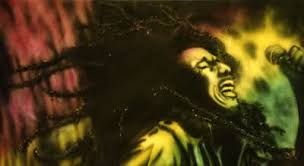
باب مارلی خواننده اهل جامایکا ، که در سال ۱۹۸۱ و در سن سی و شش سالگی
زندگی خاکی رو بدرود گفت.خواننده ای که اشعار اعتراض آمیز او هم اکنون
در تظاهرات مختلف در سراسر جهان بازخوانی میشه. اشعاری مثل
get up , stand up که اوج این اشعار هست.از ترانه های مطرح باب مارلی
میشه به موارد زیر اشاره کرد :
من به کلانتر شلیک کردم
نه زنی ، نه گریه ای
می تونی عاشق باشی
یک عشق
سرباز بوفالو
آهن ، شیر ، بهشت
و جالب اینکه آلبوم “”افسانه” او که سه سال بعد از مرگش منتشر شد
توانست ۱۲ میلیون نسخه فروش کند.
اما برگردان فارسی ترانه get up , stand up (سعی کردم حالت ترانه فارسی هم پیدا کنه)
بلند شید ، بایستید ، بایستید برای حقتون
بلند شید ، بایستید ، بایستید برای حقتون
بلند شید ، بایستید ، بایستید برای حقتون
بلند شید ، بایستید ، مبارزه رو نبازید
واعظ ، نگفت به من
بهشت زیر زمینه !
من می دونم شما نمی دونین
که زندگی چقدر با ارزشه .
با اینکه همه درخشش طلا رو نداره ؟!
داستان الف هرگز اینو نگفته
حالا شما نور رو می بینید !
بایستید برای حقتون
بیشتر مردم فکر می کنن
خدای بزرگ از آسمونا میاد
همه چیز رو می گیره
و همه رو خوشبخت می کنه
اما اگه شما فکر می کنین زندگی باارزشه
بهتره شما به خودتون بنگرین روی زمین
و حالا نور رو می بینین
بایستید برای حقتونما بیماریم و خسته از بازی ایسم و اسکیسم بمیرین و برین بهشت با اسم مسیح ، پروردگارا ما می دونیم هنگامی که می فهمیم : خدای قادر همیشه زنده است شما می تونید بعضی وقتا بعضی ها را احمق بدونید اما نمی تونید همه رو برای همیشه احمق فرض کنید
حالا می تونین نور رو ببینین (می خواین چی کار کنین ؟)
ما برای گرفتن حقوقمون وایمیسیم .
….
September 9, 2008 دستهها: سینما برچسبها: groove
بعد از مجموعه موفق “زندگی مجدد پادشاه” نوبت به مجموعه جذاب
“زندگی مجدد کرانک” رسید.قصد ندارن سوژه این دو تا فیلم رو توضیح
بدم و فقط به یکسری از دیالوگ های “زندگی مجدد کرانک” اشاره می کنم.
” پاپی عزیز یادته که من هیچ وقت نمی تونستم زن رویایی مو پیدا کنم
حتی زن غیر رویایی مو ! خب من بالاخره خوش به حالم شد و زن مورد
علاقه مو پیدا کردم .اون تمام خصوصیاتی رو که می خوام داره حتی بیشتر
خیلی هیجان زده نشده فعلآ آروم پیش می ریم ولی مطمئن باش یه جشن
با شکوه می گیریم و ازدواج می کنیم و صاحب کلی بچه می شیم .
دوست دار تو کرانک ”
” من خیلی چاکرخاتم یعنی هم چاکرتم و هم خاطر خواتم ! ”
“میدونی مفهوم این کار چیه ؟ وقتی اون ها حرف های همو کامل کنن ، یعنی
عاشق هم شدن”
September 9, 2008 دستهها: عمومی برچسبها: دهه 60, کارتون
تصویری از کارتون دور دنیا در هشتاد روز
تصویری از کارتون دوقلوهای افسانه ای
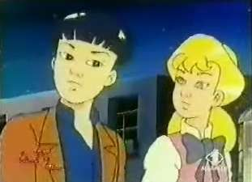
خیلی اوقات نوستالوژی دوران کودکی برای ما شیرین و رویا وار هستزمانی که حتی ما کارتون های زمان
خودمون رو به رخ کارتون های سه
بعدی هالیوودی الان می کشیم.تا حالا فکر کردید که چه کارتون های
اون زمان های ما می دیدیم ؟ من یکسری رو با مقداری اطلاعات لیست
می کنم ، اگه کم و کسر داشت شما هم در تکمیلش کمک کنید.
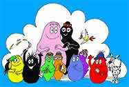
1- بارباپاپا و بارباماما
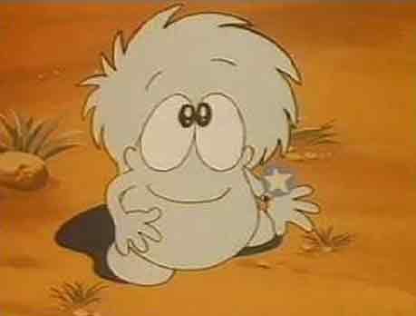
2- چوبین
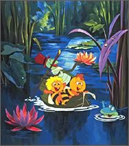
3- نیک و نیکو
4-هاچ زنبور عسل
5- مورچه و مورچه خوار
6-ملوان زبل
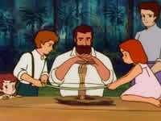
7-خانواده دکتر ارنست
8- زورو
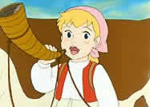
9-حنا ، دختری در مزرعه
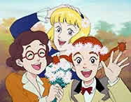
10- بابا لنگ دراز
11- یوگی و دوستان
12- لولک و بولک
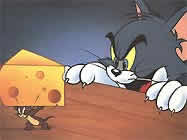
13- تام و جری
14- پرین
15- بچه های کوه آلپ
16- مدرسه موش ها
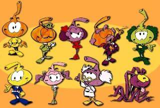
17- بند انگشتی ها
18- گالیور
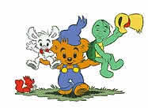
19- بامزی
20- پلنگ صورتی
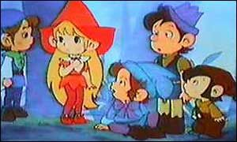
21- بلفی و لی لی بیت
22- لوک خوش شانس
23-علی کوچولو
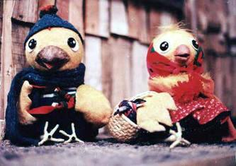
24- خونه مادربزرگه
25- هادی و هدا
26- پنوکیو
27- سرندیپیتی
28- پت پستچی
29- پروفسور بالتازار
30- فوتبالیست ها
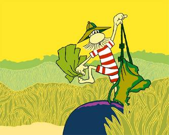
31- زبل خان
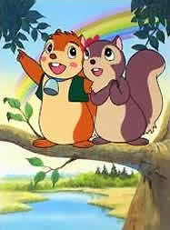
32- بنر
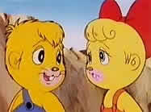
33- پسر شجاع
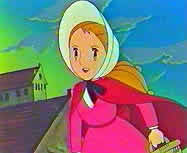
34- دختری به نام نل
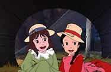
35- مهاجران
36- باخانمان
37- بل و سپاستین
38- سندباد
39- گوریل انگوری
40- مزرعه سبزیجات
41- دور دنیا در هشتاد روز
42- هکلبریفین
43- آن شرلی
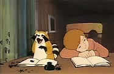
45- رامکال
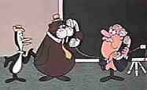
45- تنسی تاکسیدو و چاملی
46- جیمبو
47- مگ مگ و دوستان
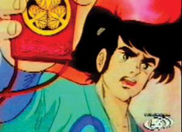
48- میتی کومان
49- کارآگاه گجت
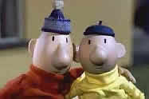
50- پت و مت
51- آقای سکسکه
52- ممول
53- گربه سگ
54- مارکوپولو
55- واتو واتو
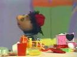
56- کلاه قرمزی
57-دوقلوهای افسانه ای
58- معاون کلانتر
59- مسافر کوچولو
60- میلو و تن تن
61- کلروفیل
62- لوبیه لوبیا
63- یونیکو ، اسب تک شاخ
64- چاق و لاغر
65- کار و اندیشه
66- میو میو عوض میشه
67- درون و برون
68- وودی وودی بیکر
69- جکی و جیل
70- سرزمین طلایی
71- الفی
72- بچه های مدرسه والت
73- دهکده حیوانات
74- دروپی (Droppy)
75- فردی – مورچه سیاه
76- آنت
77- تام سایر
78- جعفری
79- جنگل سبز
80- ایکی یو سان
81- برادران شیردل
82- کایوت و بیپ بیپ
83- دژ فضایی
84- سمندون
85- قصه های مجید
86- خاله ریزه
87- زی زی گولو
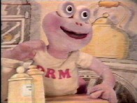
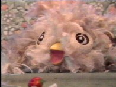
88- اورم و جیرجیر
89- بچه های کوه تاراک
90- وروجک و آقای نجار
91- گوش مروارید
92- باگز بانی
93- بینوایان
94- بازم مدرسم دیر شد (اکبر عبدی)
95- قلقلی
96- السون و ولسون
97- گنجیشک اشی مشی
98- چاق و لاغر
99- سطل سحر آمیز
100- سفر به اعماق زمین
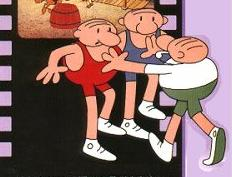
101- سه کله پوک
102- دامبو فیل گوش دراز
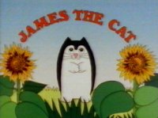
103- خپل
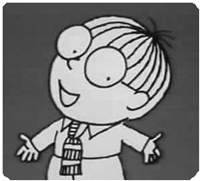
104.سایمون در سرزمین نقاشی های گچی
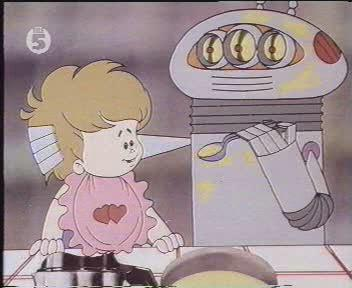
105- میکروبی
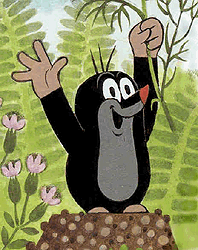
106- موش کور (مول)
107- فانوس دریایی
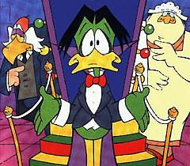
108- قلعه هزار اردک
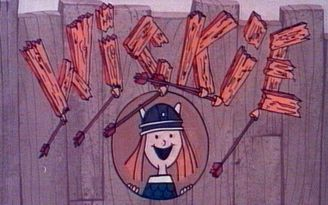
109- ویکی
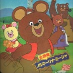
110- میشا
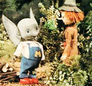
111- مامفی
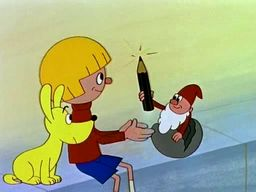
112- مداد جادویی
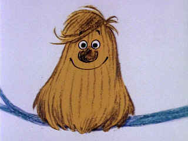
113- پوم پوم
114- گرگ بلا ، خرگوش ناقلا
115- خاله قورباغه
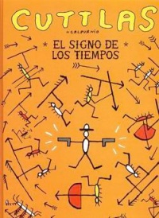
116- کوتلاس
117- آزمایشگاه دریایی 2020
118- برتا ماشین همه کاره
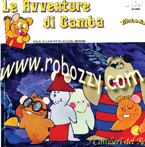
119- راسوی شهر آز
120- دارکوب زبله
121- گربه های فضای
122-شهر آجیلی
123- فلیکس
124- خرگوش و خارپشت
125- المپیک حیوانات
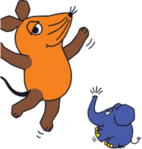
126- جعبه اسباب بازی
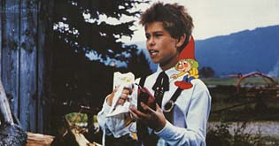
127-هاچیپو
128-غول دریاچه
129-رابینهود
130-می کی موز
131-ابت و کستلو
132-دافی داک
133-کماندار نوجوان
134-سفرهای علمی (خانم فریزر)
135.پیمپا
136.سفید برفی
137.زمزمه کلاگن
محبوب ترین تکه کلام ها کارتون ها :
1.بال بال بالتازار …. بال بال بالتازار
2.پدر پسر شجاع … پدر پسر شجاع
3.سلام سوراخ فوری (مورچه و مورچه خوار)
4.سلام سوسیس (مورچه و مورچه خوار)
5.یه خبر بد ؛ یه خبر بد (چوبین)
6.زبل خان اینجا ، زبل خان اونجا ، زبل خان همه جا
7.خونه مادر بزرگه هزار تا قصه داره ….
دیگر مراجع :
دوبلرهای کارتون های قدیمی
تصاویر مربوط به باغچه حیوانات (جعفری)
وب سایت رسمی افسانه سه برادر
سری جدید چاق و لاغر
چشم درشت ها وارد میشوند
همسایگان والت دیزنی
کلیپ کوتاهی از نیک و نیکو (زبان اصلی)
کارتون های محبوب دوران کودکی ما 1
کارتون های محبوب دوران کودکی ما 2
کارتون های محبوب دوران کودکی ما 3
برگی از دفترچه ایام
پیوست 1 : اسم این پست از فیلم معروف “چه رویاهای می آیند” با بازی رابین ویلیامز گرفته شده
پیوست 2 : پایان این پست اشکم دراومد ، یاد دورانی که بدون دغدغه پای تلویزیون ، پفک می خوردیم
و کارتون نگاه می کردیم بخیر .
پیوست 3 : دوستانی که از یک کارتون خاص خاطره دارن بگن تا عکس های بیشتری بزارم
September 9, 2008 دستهها: اجتماعی برچسبها: cat & dog, گربه و سگ
نمی دونم کارتون “گربه سگ” رو یادتون هست.تویه اون کارتون
هر وقت گربه سگ می رفتن بیرون ؛ یه سری سگ یه جوری
به اینا گیر می دادن و این دوتا رو کتک می زدن.یه روز که گربه سگ
رفتن بیرون تصمیم گرفتن به هیچ وجه آتو دست این سگها ندن و آروم
از کنارشون رد بشن.اما این بار هم سگ ها جلوشون رو گرفتن :
گربه سگ : ما که کاری نکردیم ؟!
سگ ها : ولی شما داشتین ما رو بو می کردین ؟
گربه سگ : نه ؛ اصلآ !
سگ ها : پس داشتین فکر می کردین که می خواین ما رو بو کنین !
بعد ریختن و این دو تا رو کتک زدن !
پیوست : بعضی ها اینجورین ! خودشون برای دعوا کردن و بحث و جار و جنجال
بهونه درست می کنن ، پس در مقابل بعضی ها هیچ کاری نمی شه کرد.
September 9, 2008 دستهها: عمومی
امروز که رفته بودم به یکی از این شرکت های خدمات پستی
که در نوع خودش با مدیریتی جالبی اداره میشه و جالب اینکه
همه پرسنل به جز مدیر دختر هستند و همه هم زیبا رو و خوش
برخورد ! تا این جای موضوع که هیچ !
ولی تویه این شرکت یه وایت برد نصب کرده بودند که به نظر در
مواقع جلسات پرسنلی روش می نوشتن. روی تابلو یه جمله ای
جالب نوشته شده بود به این مضمون :
” با احمق ها بحث نکنیم ، بگذاریم در دنیای احمقانه خود زندگی خوشبختانه ای
داشته باشند. “
September 9, 2008 دستهها: عمومی
چند وقت پیش یه فیلم دیدم (اسمش الان یادم نیست) که موضوع جالبی داشت.
تو این فیلم یه پسر سیاه پوست بود که کلی خلاف داشت و دنبال کار می گشت !
یکی از جاهای که رفت ، فرم استخدام رو از روی شوخی پر کرد ، مثلآ می خوند :
Gender : male Female , ha ha , naturaly female !
در قسمت حقوق پیشنهادی نوشت : 1 میلیون دلار !
جالب این که همون لحظه استخدام شد !
حالا کار شرکت با این آقا چی بود ؟
شرکت مربوطه ، شرکتی بود که روی ماشین ها تست انجام
می داد ، از همون های که دو تا عروسک می زارن جلوی ماشین
و بعد ماشین رو می کوبن به در و دیوار تا ببینن چی میشه .
حالا فرض کنید این آقا رو به جای عروسکه استفاده کردن !
September 9, 2008 دستهها: اجتماعی
این داستان برای شماست ! برای شمای که از موقعیت کنونی زندگیتان
ناراضی و دلسرد هستید
و موقعیت های زیادی را در زندگی از دست داده اید …..
خدا شما رو دوست داره و هیچگاه شما رو ترک نمی کنه ……..
نام من Nick Vujicic هست و هنگام تولد بدون دست و پا به دنیا آمدم
پزشکان هیچ توضیحی برای این پدیده غیر طبیعی نداشتند.
من حالا 23 سال سن دارم و دارای مدرک لیسانس اقتصاد در زمینه برنامه ریزی
و مدیریت مالی هستم ، من همچنین به عنوان سخنران برای هزاران نفر داستان
زندگی ام را تعریف کرده ام.
من اهداف و آرزوهای زیادی در زندگی ام دارم.مثلآ می خواهم به یک
سخنران بین المللی تبدیل شوم.همچنین می خواهم تا سن 25 سالگی
از طریق آزانس املاک یک کار اقتصادی مستقل داشته باشم تا بتوانم
با تغییراتی در یک ماشین رانندگی کنم و همچنین در شو وینفیری
شرکت کنم.همچنین می خواهم یک کتاب پرفروش بنویسم با عنوان :
” نه دستی ، نه پایی ، نه غمی ! ”
به خدا باور داشته باشید ……
پیوست : من خلاصه اون چیزی رو که تو منابع خارجی دیدم ترجمه کردم و
اینجا نوشتم.اسم این آقا رو هم انگلیسی نوشتم تا اگه خواستین خودتون
هم دربارش جستجو کنین .
September 9, 2008 دستهها: اجتماعی
راننده داشت از زندگی سختش می گفت.زندگی سراسر از محدودیت
به خاطر مشکلات مالی . اینکه حتی پراید زیر پاش هم قسطی هست…
راننده با خنده ای که از سر تاسف بود ، از خوابی که هفته پیش دیده
می گه : ” خواب دیدم که بابام گفت بیا بریم برات یک ماشین بخرم.
چی دوست داری برات بخرم ؟ بهش گفتم یک پیکان که بتونم باهاش
کار کنم ” راننده می گفت : اینقدر بدبختم که حتی نمی تونم خواب یک
ماشین مدل بالا رو ببینم و حتی در خواب هم به کار فکر می کنم …………
September 9, 2008 دستهها: اجتماعی
حتمآ توجه کردید که هیچ وقت پله ها رو مستقیم و رو به بالا نمی سازن
یعنی اصولآ نردبان موفقیت وجود نداره ، بلکه پله ترقی و موفقیت وجود
داره . چرا ؟
ساده هست ، شما وقتی می خواین برین طبقات بالا ، پله ها رو طوری
ساختن که اولآ یه شیب داره ، پله ها فاصله های یکسانی دارند و در ضمن
بین هر طبقه یه پاگرد وجود داره. حالا اینا یعنی چی ؟
یعنی اینکه اگه امروز به شما گفتن بشید مدیر کل فلان جا ، اگه قبلآ کارمند
معاون ،و ….. نبودید قبول نکنید . چرا ؟ چون شما پله ها رو درست طی نکردید
و اینجوری شما هم به خودتون صدمه می زنید و هم به دیگران ، چون
می خواید از پله اول بپرید به پله دهم و خب نمی شه ! چون جاذبه نمی زاره !
پس لطفآ ، پله های ترقی رو حتمآ طی کنید تا واقعآ در کار خود متخصص باشید
نه مثل این اوضاعی که هم اکنون در جامعه می بینیم .
طرف هنوز یکسال از فارغ التحصیلی خودش نمی گذره ، شده استاد !
طرف هنوز کارمند هیچ جا نبوده ، شده رئیس !
…………..
پیوست بی ربط تا حدودی :
عالم بی عمل مانند زنبور بی عسل
September 9, 2008 دستهها: دنیای نرم افزار برچسبها: office
اگه از office 2007 استفاده كرده باشيد و همچنين با Word اون كار كرده باشيد
مي دونيد كه پسوند فايل هاى اون .docx هست كه در نسخه هاى پيشين office پسوند
فايل ها .doc بودن ، حالا اگه يه فايل .docx داشتيد و خواستيد اونو بوسيله آفيس هاى
قديمى ببينيد 2 تا روش وجود داره :
1.اين نرم افزار تبديل كننده را از سايت مايكروسافت دريافت كنيد
2.استفاده از اين سرويس آنلاين كه بصورت آنلاين فايل رو تبديل مى كنه و براى شما ارسال مى كنه.
نكته : فرمت جديد مايكروسافت Microsoft Open Office XML Format نام داره !
September 9, 2008 دستهها: دنیای نرم افزار برچسبها: AI
اگه به سايت شركت تازه تاسيس Melodis
با نسل جديد تشخيص صوت و جستجوى اصوات مواجه خواهيد شد.
اما جريان چى هست ، آقاى دكتر كيوان مهاجر كه مدرك دكترا خودش رو از دانشگاه
استنفورد گرفته ،مديرعامل و بنيان گذار اين شركت هست.
قضيه اينجورى هست كه شما قسمتى از يك موسيقى رو زمزمه مى كنيد و اين تكنولوژى
از بين آهنگ ها ى موجود خواننده و آهنگ مورد نظر رو پيدا مى كنه و جالب اينكه وابسته
به زبان خاصى هم نمى شه ! زبان فارسى هم پشتيبانى ميشه ( فوق العاده هست.نه ؟ )
حالا اين شركت وب سايتى ايجاد كرده با نام Midomi
و اون هم براتون پيدا مى كنه تراك مورد نظر رو.
بهتره اين صفحه
جالب اينكه كه چه راحت ايده ميدن و چه راحت پياده سازى ميكنن ى! قابل توجه آقايان مدرك گرايى
بى عمل !
September 9, 2008 دستهها: دنیای نرم افزار
Profiler ها ابزارى هستند كه برنامه شما را از لحاظ مقدار حافظه
مصرفى ، بررسى Thread ها و نحوه عملكرد آنها ، پردازش هاى در
حال انجام برنامه را مورد بررسى قرار داده ، نقاط ضعف را به شما
گوشزد مى كند تا برنامه كاركرد بهترى پيدا نمايد.
اما چند نمونه Profiler رايگان براى جاوا :
شايد شما هم جز كسانى باشيد كه با پيغام OutOfMemoryExceptions در
جاوا برخورد كرده باشيد در اين جا قصد دارم تا يك Profiler كه خطاهاى مربوط
به Heap را بررسى مى كند معرفى كنم :
SimpleProfiler
و اما يك Profiler كاملتر :
AdaptJ
و اما يك برنامه فوق العاده رايگان كه تحت ويندوز به خوبى عمل كرده و يك Profiler
كامل مى باشد :
JProbe Profiler Freeware – Windows 5.2.1
September 9, 2008 دستهها: سینما برچسبها: طالع نحس
T he O men
طالع
The young son of an American diplomat and his wife
, living in London, turns out to be marked with the sign of Satan
, the infamous “666”. It soon becomes apparent that he could be the Anti-Christ
incarnate and possesses the evil powers to stop anyone who stands in his way.
September 9, 2008 دستهها: روزانه ها
خب انتقال پست ها از وبلاگم به اینجا انجام شد البته نه همه 319 پست ! فقط یک
سری رو منتقل کردم چون هم وقت کافی نبود و هم ترجیح دادم که مطلب های که
جالب بودن رو منتقل کنم.خب مطمئنآ اینجا جای دائمی برای من هست.
کم کم باید تمرکزم رو بدست بیارم تا ادامه پست ها رو اینجا منتشر کنم از تمام
دوستانی هم که قبلآ به من لینک داده بودن خواهش می کنم لینک رو به اینجا
تغییر بدن. تا بعد …..
September 9, 2008 دستهها: روزانه ها برچسبها: 11 september
تصویر برج های دوقلو سازمان تجارت جهانی بعد از برخورد هواپیماها در 11 سپتامبر
بعضی از روزها در تاریخ طوری رقم می خورن که اون روز به تاریخ می پیونده .
11 سپتامبر سال 2001 فارغ از هرگونه تعبیری یکی از این روزهاست.روزی
که به اختصار به اون “11 سپتامبر ” میگیم و همه میدونن که تو این روز چه
اتفاقی افتاد.هدف من از این پست بحث پیرامون این موضوع نیست بلکه تنها
قصد اینه تا موارد جالب ، تصاویر ، آثار هنری که بعد از این پیامد و برای این
پیامد ساخته شد رو در این پست عرضه کنم.چیزی که کمابیش برای خودم هم
جالب توجه هست.
عکسی که در میان آتش و دود تصویر سر یک شیطان نقش بسته
اولین مورد مربوط به همین عکس بالا هست ، تصویری که در اون زمان خیلی
روش مانور شد که تصویری شبیه شیطان (یا اسامه بن لادن) در اون نقش بسته
بود البته در اینکه این یک عکس جعلی است شکی نیست ولی استفاده رسانه
ای خاصی از اون شد.
حادثه 11 سپتامبر به گروه القاعده به سرکردگی اسامه بن لادن منتسب شد.
فرد مشخص شده در عکس اسامه بن لادن در سن 14 سالگی می باشد
در هر جنگ یا حادثه تروریستی انسان های بسیاری کشته میشن که اون موضوع
اصلآ ربطی به اون ها نداشته و به اصطلاح بی گناه کشته میشن.
سقوط مردی از برج های دوقلو بعد از اصابت هواپیماها
آثار هنری که بعد از این حادثه و برای زنده نگاه داشتن خاطره این حادثه
ساخته شد نیز در نوع خود درخور توجه می باشد.
نقاشی که در همان روز حادثه کشیده می شود
مجموعه کامل این نقاشی ها را از سایت about.com ببینید.
تصاویری از 16 سپتامبر 2001 و مردمی که دنبال گمشده ها هستند …
و در نهایت پیامدهای این حادثه به کجاها کشیده شد ؟
بعد از 11 سپتامبر جنگ های خونینی در جهان در گرفت
September 10, 2008 دستهها: موسیقی برچسبها: peggy zina
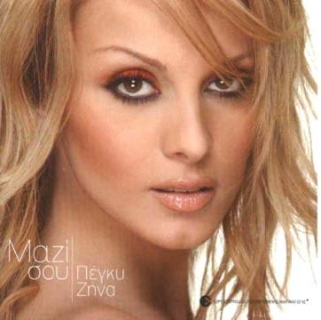
kallipoi zina که در دنیای موسیقی با نام پگی زینا شناخته می شود ، خواننده
و ترانه نویس یونانی هست که در سال 1995 به شهرت رسید.موسیقی یونانی با
سازهای که سوز خاصی در خود نهفته همواره مورد توجه بوده و به گونه ای بوی از
فرهنگ شرق رو در خود نهفته دارد.یکی از این آهنگ ها که از پگی زینا هست با
نام Ena به زبان یونانی هست . که در زیر یک ترجمه از این آهنگ رو می بینید و
در نهایت میتونید آهنگ رو دانلود کنید.توصیه می کنم حتمآ این آهنگ رو گوش
کنید.غم و سوز خاصی تو آهنگ هست.
آهنگ Ena از عشقی جاوید و یگانه می گه ، عشقی که دو عاشق رو تا دور
دست ها می کشه فقط برای تا ابد با هم بودن ….
یکتا ( Ena )
تو تویه زندگیم اومدی
و سرنوشت من رو به جای دیگه ای برد
برای شروعی تازه
من نترسیدم
من هر چیزی رو که آزاردهنده هست ترک می کنم
و به هرجای می رم که قلبم
با دستانی سخت بسته شده
ما عبور کردیم …
یکتا ، ما همیشه با هم خواهیم بود
هیچ کس نمی تونه ما رو از هم جدا کنه
قلبم
یکتا ، ما به دور دست ها خواهیم رفت
و همه اینها برای رسیدن تو به من
اگه تو شهامت داری
همه اون چیزهای رو که خیلی دوست داری بهت خواهند رسید
اگه تو شهامت داری
تو به آخر جای که می خوای می رسی ، جای که تو در جستجوش بودی
تو تویه زندگیم اومدی
نهایت عشق و آغاز
من روح و بدنم رو به تو می دم
من تو رو تو دست هام می گیرم
من رو تا ابد اینجا نگه دار
برای پیدا کردن جای در دست هات
برای دیدن دنیا تو چشمهات
برای نگاه کردن به این ….
:: دانلود کنید آهنگ Ena ::
:: لینک جدید دانلود آهنگ Ena ::
September 13, 2008 دستهها: موجودات فرازمینی برچسبها: alien, UFO, بیگانه فضایی, فضا
بیگانه خاکستری
در ابتدا باید عرض کنم که در هر مطلب احتمالآ شما با یک سری وقایع و تصاویر
آشنا می شوید ، سعی کنید واقع گرا باشد و سریعآ به سمت نفی پدیدها
نرید خیلی از چیزها عجیب به نظر میرسن ولی به این دلیل که ما با اون ها برخورد
نداشتیم به نظر غیرممکن و غیر واقعی به نظر می رسن پس کمی با ذهن باز با
موضوع برخورد کنید.
موجودات فضای بر اساس چیزهای که دیده شده دسته بندی های زیادی دارن و
من شما رو کم کم با اون ها آشنا می کنم. در این پست نوعی از فرازمینی ها رو
معرفی می کنم که با نام “بیگانه خاکستری” شناخته می شوند.
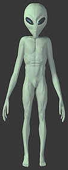
(( تصویر یک مدل غیرواقعی از بیگانه خاکستری میباشد ))
این نوع از فرازمینی ها که به خاکستری ها معروفند دارای سر بزرگی هستند و
تمام خصوصیات بدنی انسان را دارا می باشند . چشم های آنها کشیده و
زاویه دار است و معمولا سیاد رنگ است.
آنها بر روی صورت خود بینی ندارند و فقط دو حفره بینی بر روی صورتشان مشخص
است . آنها دارای دهان کوچکی هستند و فاقد لب هستند . در ضمن آنها دندان
هم ندارند . سر و بدن انها کاملا بدون مو است. آنها از کمر به بالا لاغر هستند
و اغلب اوقات پوسته ای متالیک رنگ بدنشان را پوشش می دهد. دستان آنها
لاغر و کشیده است و معمولا تا زانو های پا می رسد.
در زیر یک نمونه واقعی یافت شده از این نوع را مشاهده می کنید :
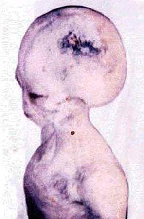
( سر بزرگ ؛ چشمان کشیده ؛ دهانی کوچک و تنی لاغر )
( دستان و انگشتانی بلند )
پیوست : توجه کنید که تصاویر زیادی از بیگانه های خاکستری یافت می شود
ولی خیلی از اونها عروسک هستند و غیر واقعی . در پست های بعدی توضیح
میدم که این عکس ها مربوط به چه حادثه ای هستند و چگونه کشف شده اند.
September 15, 2008 دستهها: روزانه ها
کسانی که در دوران بچگی کارتون پینوکیو رو دیده باشن به خاطر دارن پینوکیو
به شهری رسید به نام “شهر تنبل ها” ، شهری که همه توی اون تنبل بودن
و اصلآ کار نمی کردن.جالب اینکه وقتی پنوکیو گرسنه شد رفت نانوایی ،
اول اونجا آرد خام رو می خوردن ، بعد یه لیوان آب می خوردن و بعد می رفتن
پیش شومینه تا آب و آرد توی دلشون بشه نون ! نهایت تنبلی …..
دیشب به یه تنبل بر خوردم که هرچی بهش می گفتم پاشو یه کمکی کن
هیچ حرکتی نمی کرد ! براش این داستان رو گفتم ، جالب اینکه پاشد کمک
کرد
September 17, 2008 دستهها: موجودات فرازمینی برچسبها: alien, apolo, moon, UFO
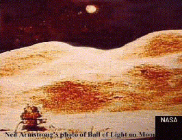
و ادوین الدرین دو آمریکایی که اکثرا فیلم قدم زدن آنها بر روی ماه را تماشا کردیم.
و به این اطمینان رسیدیم که انسان قادر به سفر کردن به کره ماه است. اما من
قصد دارم تا به یک نکته جالب اشاره کنم. مطمئنا شما دوستان هم میدانید که
کشور شوروی سابق (روسیه) در امر فضابسیار پیشرفته بود. ایستگاه فضایی میر
را روس ها در مدار زمین قرار دادند. تا برای سالیان سال جایگاهی برای فضانوردان
کشورهای مختلف باشد. در آن زمان روسیه در امور فضا نوردی بسیار پیشرفته تر
از ایالات متحده آمریکا بود.
فضانوردان آمریکایی از ایستگاه میر برای اقامتگاه خود در فضا استفاده می کردند.
آن زمان ( فرود آمریکایی ها بر کره ماه ) که مطابق با 21 جولای 1969 بود. بنابر
نظر تمامی کارشناسان تکنولوژی فرود و برخاستن از سطح کره ماه نمی توانسته
در دست آمریکایی ها بوده باشد. در ضمن شوروی با تمامی امکانات خود و با داشتن
دانشمندانی با تجربه بالا در زمینه علوم فضایی نتوانستند در کره ماه انسان پیاده
کنند. اما همه ما میدانیم که هالیوود در طول تاریخ سینما به عنوان غول بی چون
و چرای این صنعت مطرح بوده است. خصوصا از وقتی که هالیوود به
ژانر فیلم های تخیلی پیوست .توانست در تمام دنیا طرفداران فراوانی پیدا کند.
به عنوان مثال فیلم سینمایی معروف (( کینگ کونگ )) که در فیلم یک گوریل به
صورت هیولای جلوه می کند. و باعث به هم ریختن شهرهای آمریکا می شود.
در آن زمان اکثر مردم از دیدن این فیلم به وحشت افتادند. چون که فکر می کردند.
چنین هیولای واقعا وجود دارد.
می توان گفت که در آن زمان تنها هالیوود در تمام دنیا دارای چنین قدرتی در
جلوه های ویژه بود.خب تا این جای داستان فقط می توان هالیوود را تحسین کرد.
اما حالا فکر کنید که صحنه های پخش شده از تلویزیون های سراسر دنیا در آن زمان
از سطح کره ماه و راهپیمایی دو آمریکایی تنها ساخته هالیوود باشد. بله ، شاید کمی
عجیب باشد. ولی یکی از مواردی که در همان زمان نیز مطرح شد. این بود که صحنه های
پخش شده از تلویزیون های جهان تنها ساخته و پرداخته فیلم سازان حرفه ای هالیوود
است. در این جادر همین باره به دو نکته اشاره می کنم :
اول از همه این که بشر از آن زمان تا کنون حتی فقط یکبار دیگر بر سطح ماه فرود نیامد.
و دومین موضوع این که باز هم به این نکته توجه داشته باشید .که در آن زمان شوروی
در زمینه علوم فضایی بسیار پیشرفته تر از آمریکا بود. ولی موفق به انجام چنین
کاری نشد.
ما فرض دوم را بر این می گذاریم که نیل آرمسترانگ و ادوین الدرین بر روی کره ماه
فرود امده اند. در اینجا اظهار نظر این دو فضا نورد و در ضمن متن گفتگوی مبادله شده
مابین آنها و سازمان فضایی ناسا را در آن زمان مطرح می کنیم. طبق اضهارات نيل
ارمسترانگ موجودات پيشرفته فرازميني داراي پايگاههايي در كره ماه هستند و وقتي
اين فضانوردان براي اولين بار به كره ماه رفتند فرازميني ها هشدارهايي مبني بر ترك
ماه به انها دادند.
اين فضانوردان مدت كوتاهي پس از فرود تاريخي خود بر سطح ماه در 21
جولاي 1969 بشقابهاي پرنده اي را مشاهده كردند.
همچنين طبق اظهارات يكي از كارمندان ناسا بنام اتو بايندر وي مكالماتي را به
شرح زير توسط دستگاههاي گيرنده راديويي وي اچ اف خود دريافت كرد كه بين
فضانوردان اپولو و مركز فرماندهي در جريان بود:
ناسا: انجا چه ميبينيد؟ (مركز كنترل خطاب به اپولو11)
مصاحبه اي كوتاهی با نيل ارمسترانگ داشته كه بخشي از ان بشرح زير است :
بيگانگانفضايي وجود دارد.
پ : منظورتان از اينكه به شما هشدار داده شده چيست؟
لحاظ بر ما برتري دارند.
اكنون هيچ شكي در مورد وجود پايگاه در ماه وجود ندارد.
ارمسترانگ:طبيعتا! اما ناسا در همان زمان متعهد شده بود كه ازايجاد هر
گونه هراس در ميان مردم زمين خودداري كند و سفرهاي بعدي تنها يك رفت و
برگشت كوتاه بود.
جالب است بدانيد ارمسترانگ خبري را به مركز كنترل مخابره نمود مبني بر اين
كه پس از فرود كپسولفضايي در ماه انها دو شئ عجيب و بزرگ در حال مراقبت
از انها بودند.
((اين بخش از گزارش كه انزمان بطور مستقيم براي مردم جهان پخش ميشد سانسور
گرديد و تنها ايستگاههاي معدودي در سراسر دنيا ان را رد يابي كردند.))
شده اند.در اینجا باز هم تذکر می دهم که افرادی نظیر خلبانان و فضانوردان طوری
تربیت شده اند که هیچ گاه دروغ نمی گویند و شواهدی را که در طی ماموریت های
خود میبینند با دقت هر چه تمام تر بیان می کنند.
پیوست 3 : برای رفع هرگونه شبهه یک پست جدید و دقیق تر نوشتم که می تونید اون رو هم
اینجا مطالعه کنید.
September 18, 2008 دستهها: دنیای نرم افزار برچسبها: virus, اسامه, بن لادن
اگر ایمیلی دریافت کردید با این مضمون ( osame bin laden captured ) و یا
(osama bin laden hanged) به هیچ وجه فایل همراه (Attachment ) ایمیل
رو باز نکنید زیرا کامپیوتر شما کرش کرده و قابل تعمیر هم نخواهد بود.
این ایمیل در اکثر کشورهای جهان دیده شده اما بیشتر گزارش ها از آمریکا و
اسرائیل بوده .
“این موضوع رو به دوستان و آشنایان خودتون گزارش بدید تا برای اون ها هم
مشکلی پیش نیاد”
در ضمن ویروس مشابه ای با این کارکرد که در فایل ضمیمه (Attachment) خود
نوشته “invitation” رو هم باز نکنید این ایمیل حتی ممکنه از طرف دوستانتون
برای شما ارسال شده باشه ، چون این ویروس به صورت خودکار خودش رو برای
تمام لیست دوستان شما ارسال می کنه. این ویروس سکتور صفر هارد دیسک
شما رو از بین می بره و هارد شما کلآ از بین میره ! این ویروس رو اولین بار
مکافی تشخیص داده ولی برای اون آنتی ویروسی نوشته نشده.
البته این ویروس (تروجان) قبلآ هم وجود داشته تقریبآ از سال 2005 ولی باز به
نظر شروع به انتشار گرفته. برای اطمینان بیشتر این صفحه رو مطالعه نمایید.
September 20, 2008 دستهها: عمومی
در اثر یک بیماری مادرزادی رشد اندامش متوقف شده است. در اصطلاح پزشکی
به این بیماری کوته لگی می گویند – Nanizm –
و به مردانی که قد آنها کمتر از 130 سانتیمتر هست و در زنان کمتر از120 سانتیمتر
هست اطلاق می شود. این بیماری ژنتیکی بوده و در اثر اختلالات غدد درون ریز
می باشد. راستی هنوز فکر می کنید کوتاه قد هستید ؟
( بر روی عکس کلیک نمایید )
پیوست : از مجموعه نوشته هام در “برگ سبز” هست.
September 22, 2008 دستهها: روزانه ها برچسبها: theme, قالب, مامبو جامبو
خب قالب اصلی مامبو جامبو نصب شد !
این قالب با Firefox , IE6, IE7 , Google Chrome تست شده تا متن ها
رو بدون بهم ریختگی مشاهده کنید.
اما از همین اول ذکر کنم : “چرا تصویر ناصر الدین شاه اون بالا نقش بسته” ؟
دوستانی که از قدیم با مامبوجامبو بودن میدونن که من زیاد به ناصر الدین شاه
علاقه دارم و اون هم فقط یک دلیل داره :
ناصر الدین شاه آدم عجیب غریبی بوده ! دنبال سینما ، فرنگ رفتن و ….. بوده .
مامبو جامبو هم همچین جای هست.جای که توش افکاری عجیب و غریب رایج
هست…..
September 23, 2008 دستهها: عمومی برچسبها: دنیای مردگان
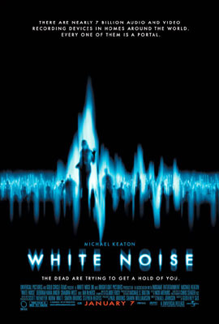
اینجا قصد ندارم فیلم صدای مردگان را معرفی کنم بلکه این فیلم بهانه ای
شد تا شما باپدیده ای به نام EVP آشنا شوید
EVP مخفف Electronic Voice Phenomenonمی باشد که به معنی پدیده
صدای الکترونیکی می باشد.
بله ! شما با وسایلی نظیر ضبط صوت ، ویدیو و وسایل این چنینی می توانید
با دنیایی مردگان تماس بگیرید البته مردگان در تلاش برای اثر گذاری بر دنیای
ما هستند البته این ارتباط بدین گونه نیست که با وضوح تصویر یا صداها را
بشنوید بلکه بعد از کار بر روی فایل ها و تصاویر می توان به این اثرات پی برد
در این زمینه موارد زیادی وجود دارد و اینکه شما چگونه می توانید اینکار را
انجام دهید که در صورت تمایل در پست های بعدی توضیح خواهم داد.
به عنوان مثال در این فایل صوتی ، از دنیای مردگان شنیده می شود که
Good luck
پیوست : از مجموعه پست هام در برگه سبز هست که منتقل کردم اینجا
September 24, 2008 دستهها: سینما برچسبها: گربه ای در کلاه, مایک مایر
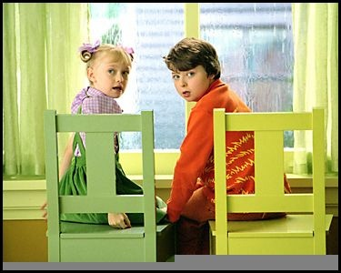
سالی و کنراد ، خواهر برادری هستند که مجبورند در یک روز سرد و بارانی
تنها در خانه باقی بمانند ، سالی دختر کوچک ، مقرارتی و تابع دستورات
است که تمایلی به بر هم زدن نظم ندارد بر خلاف او برادر بزرگترش اصلا
به قوانین پایبند نیست.
جُان ، مادر بچه ها ، در یک بنگاه املاک کار می کند
که متعلق به آقای هامبرفلوب است.آقای هامبرفلوب فردی وسواسی
است و به نظم و نظافت بشدت اهمیت می دهد بنابراین کارمندانش برای
در امان ماندن از اخراج باید کاملا مراقب نظافت و تمیز بودن خودشان باشند.
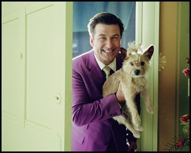
گویین ، همسایه دیوار به دیوار ، جُان و بچه ها . او قصد ازدواج کردن
با جُان را دارد.در ضمن او می خواهد کنراد را به یک مدرسه نظامی بفرستد تا
شاید اینگونه از شر او خلاص شود.
اما داستان چگونه آغاز می شود ؟
مادر بچه ها بعد از تمیز کردن خانه برای مهمانی شب که افراد مهمی چون
آقای هامبرفلوب ( رئیس او ) در آن شرکت دارند
به ناگاه برای یک جلسه مهم مجبور می شود خانه را ترک کند و بچه ها را در خانه
تنها بگذارد.البته جُان به بچه ها تذکر داد که خانه را به هم نریزند ، که مسلما این
تذکر بیشتر متوجه کنراد می شد تا سالی !
بچه ها متوجه شدند که با آغاز باران روز کسل کننده ای را دارند ، اما به ناگاه ،
سر و کله ” گربه ” پیدا می شود.
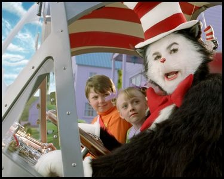
البته این گربه قدری با گربه های خانگی تفاوت دارد ! تفاوت هایش :
قدش ، بله ، قد این گربه 6 پا هست !
این گربه قدرت حرف زدن دارد
کلاه گربه ، بله ، کلاه گربه هم سحر آمیز هست
و در نهایت اینکه این آقای گربه ، فقط قصد تفریح دارد و بس
راستی ، گربه ما اصلا از شیر خوشش نمی آید ، چون معده اش به لاکتوز
حساس هست و این حساسیت برایش دردسر ساز هست !
با حضور گربه ، کم کم بچه ها هم تصمیم می گیرند تا آن روز را با تفریح کردن
سپری کنند اما خراب کاری های گربه به همراه دو موجود به نام های
” چیز 1 ” و ” چیز 2 ” باعث ویرانی کامل خانه می شود.
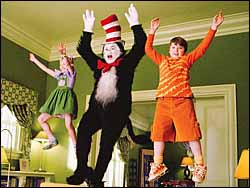
در این کارتون خانوادگی ، شخصیت های دیگری هم حضور دارند که
هر کدام ویژگی های خود را دارند.مثلا یک ” ماهی قرمز سخن گو “ یا یک
” پرستار بچه چاق ” .کافیست به تماشای این کارتون بنشینید تا با حوادث
هیجان انگیز آن سرگرم شوید.
تاریخچه فیلم نامه :
این فیلم از روی کتابی با همین نام Cat in Hat نوشته دکتر Seuss اقتباس شده ، میلیون ها جلد
از این کتاب از سال 1957 تا کنون توسط نوجوانان خریداری و خوانده شده است
بازیگران :
Spencer Breslin در نقش کنراد
Dakota Fanning در نقش سالی
Kelly Preston در نقش جُان
Sean Hayes در نقش آقای هامبرفلوب
Alec Baldwin در نقش گویین
Mike Myers در نقش گربه
کارگردان فیلم
Brian Grazer
پیوست : این پست رو از مجموعه نوشته هام در “برگ سبز” منتقل کردم کم کم
آرشیو پست هام داره تکمیل میشه.
September 25, 2008 دستهها: عمومی برچسبها: استخوان, سرسخت بودن, کلاه دوز
یعنی کلاه دوزان دیوانه هستند ؟
در قرن نوزدهم ، کلاه در اروپا نشانه شخصیت و کلا جزیی از پوشش مردم به
شمار می رفت بنابراین کلاه دوزان به شکل اختصاصی فعالیت داشتند در این
میان بین آنها رقابت تنگاتنگی وجود داشت ، در آن زمان به نظر می رسید که
اکثر کلاه دوزان دیوانه هستند البته این دیوانگی بشکل مادر زاد در آنها وجود
نداشت. و بعد از مدتی فعالیت در این کار آنها دچار این مشکل می شدند
و این ضرب المثل از آنجا ناشی می شود
سرخ مثل لبو ، سخت مثل استخوان ، دیوانه مثل کلاه دوز
اما چرا کلاه دوزان دیوانه بودند ؟
در آن زمان این موضوع مورد بررسی پزشکان آن عصر قرار گرفت ، و پزشکان به
موضوع جالبی پی بردند. پزشکان دریافتند که کلاه دوزان بعد از تولید کلاه ،
نشان خود را با فلزی بر روی کلاه حک می کنند و این فلز چیزی جز جیوه نود ،
کلاه دوزان در اثر استشمام بخارات جیوه و اثر مخرب آن بر مغز ، حالتی دیوانه وار
پیدا می کردند.
در نهایت سرخ مثل لبو ، سخت مثل استخوان ، دیوانه مثل کلاه دوز باشید
September 26, 2008 دستهها: سینما برچسبها: big fish, تیم برتون
فرض کنید پدر شما یعنی آقای ادوارد بلووم وسط عروسی برای مهمانان شروع
به تعریف داستان کند.و شما که اکنون سنی ازتان گذشته مانند کل طول عمرتان
که پدر این داستان های عجیب را برایتان تعریف می کرد مجبور شوید با پدر
دعوا کنید.خب ساده است ، پدر می گوید که تمام این داستان های عجیب و غریب
بر سر خودش آمده ؟!
کدام داستان ها ، بله ، داستان های که ادوارد بلووم آنها را تعریف می کند.
داستان از زبان ادوارد بلووم :
در بچگی به ناگاه دچار رشد شدید شدم ، تمام استخوان های من به طرز عجیبی
رشد می کردطوری که قادر به انجام کاری نبودم تا این که در یک دانشنامه
خواندم که :
” اگر یک ماهی قرمز کوچک را در یک تنگ نگه دارید ، یک ماهی قرمز کوچک
باقی می ماند ،ولی در یک فضای بزرگتر ماهی می تواند دو برابر ، سه برابر و
حتی چهار برابر اندازه اولش بزرگ شود ”
اینجا بود که پی بردم من برای کارهای بزرگ ساخته شده ام و از آن روز تصمیم
گرفتم که موقعیت های بزرگی را در زندگیم آزمایش کنم .
خب تا اینجای داستان را داشته باشید ، حالا فرض کنید که آقای ادوارد بلووم
به ناگاه در دهکده محل زندگی خود و در بچگی با نگاه کردن به چشم این جادوگر
نحوه مرگ خود را در آینده دیده و حالا مصمم تر می تواند زندگی کند.
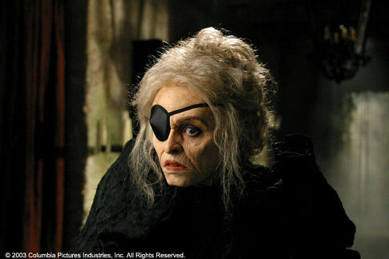
و یا این که ادوارد بلوم برای نجات گله های روستا از دست یک غول به جنگ
این غول می رود
ولی داستان اینجا ها خاتمه پیدا نمی کند ، ادوارد بلووم قصد دارد تا جاهای بزرگی
را ببیند پس قصد ترک دهکده خود را می کند.
فرض کنید که ادوارد بلووم هنگامی که در یک سیرک مشغول تماشای سیرک
هست ، در یک لحظه عاشق می شود و آنهم عاشق این دختر
اما توجه کنید که :
” در افسانه های می گویند وقتی عاشق می شوید زمان برای یک لحظه متوقف
می شود ولی بعد از آن یک لحظه همه چیز به سرعت حرکت می کند تا زمان به
جلو رود ”
و این گونه بود که ادوارد بلووم فقط برای یک لحظه عشق خود را دید و بعد از آن
دیگر آنرا پیدا نکرد ،نه اسمی و نه آدرسی.
ولی رهبر سیرک دختر را می شناخت و چون فرد طمع کاری بود با ادوارد بلووم
معامله ای کرد که در عوض کار رایگان ادوارد بلووم در سیرک هر ماه پایان ماه
چیزی از دختر به او بگوید.
مثلا یک ماه فقط به او گفت که : اون دختر از گل های زرد خوشش میاد !
و یا : اون الان در کالج مشغوله تحصیله ؟!
تا اینکه بعد از گذر چند سال بالاخره اسم و آدرس دختر را به ادوارد بلووم گفت
و ادوارد بلووم بی درنگ با اشتیاق به خواستگاری دختر رفت ولی چه بد که
دختر گفت که نامزد دارد. اما شما با ادوارد بلووم طرف هستید به قول خود او :
” وقتی یک کشتی از اسکله حرکت کرد نباید اونو دنبال کرد فقط احمق ها این
کار را می کنند و من یک احمقم ! ”
پس ادوارد بلووم تسلیم نشد و قصد کرد که با دختر ازدواج کند و در این راه دست
به هر کاری زد.
مثلا دور خانه دختر را با گل های زرد پوشاند همانگونه که او دوست داشت
بگذریم ! در ماهی بزرگ کلی داستان و ماجرا هست که شنیدن هر کدام کلی
پند و اندرز دارد مثلا شهری که همه در آن شاد و خوشحال هستند و هیچ
مشکلی در آنجا وجود ندارد مردم کفش به پا نمی کنند تا سبزه سالم بماند و
همیشه بوهای مطبوع به مشام می آید و هر شب مردم با هم رقص و پایکوبی
می کنند ولی ادوارد بلووم در آنجا نمی ماند.
ماهی بزرگ ( Big Fish ) ساخته کارگردان بزرگ سینما تیم برتون هست
که تمام کارهایش متفاوت و باارزش هست.
تیم برتون - کارگردان ماهی گنده
بازیگران ماهی بزرگ :
Ewan McGregor
Albert Finney
Billy Crudup
Jessica Lange
Helena Bonham Carter
کارگردان :
Tim Burton
این فیلم محصول سال 2003 آمریکا می باشد.
پیوست : این پست از مجموعه نوشته هام در “برگ سبز” هست که دارم
منتقل می کنم اینجا.
September 27, 2008 دستهها: اجتماعی برچسبها: خرگوش, لاک پشت
اون داستان معروف (1) خرگوش و لاک پشت رو همه شنیدیم و دیدیم اونکه
“آهسته و پیوسته” رود حتمآ به مقصد میرسه . بحث من سر همین موضوع هست
که خرگوش باشیم یا لاک پشت ؟!
اگه بخوام تیتر وار و خلاصه بگم و مزیت ها و معایب هر کدوم رو بگم :
خرگوش باشی :
1.اگه سریع بدوی و بازیگوشی نکنی همیشه می تونی زودتر از بقیه به خط پایان برسی
2.برخلاف بقیه باید سریع بدوی و معمولآ هیچ چیزی از مسیر رو نمی تونی ببینی
3.به نظر از همه رقبا سر تر هستی
لاک پشت باشی :
1.اگه بخوای برنده بشی اصلآ نباید توقف کنی.
2.چون آروم می ری و اصولآ امکان تند رفتن رو نداری تو مسیرت خیلی چیزها می بینی
3.اگه پشت کار داشته باشی و خسته نشی شانس برنده شدنت بالاست.
خب که چی ؟
برای رسیدن به هر چیزی در زندگی به جز روش ها و موقعیت های مختلف بحث
“سرعت” و “زمان” رسیدن هم مهم هست.کسی هست که مثلآ در 18 سالگی به
چیزی می رسه و کسی هم در 60 سالگی.به نظر الگوها از “خرگوش” و “لاک پشت”
پیروی می کنن.یعنی شما می تونید یکی از این دو باشین.فرض کنید کسی از بچگی
سرش تو کتاب هست و همینجور ادامه میده تا بهترین دانشگاه قبول بشه.خب این فرد
“خرگوش” هست. و در طول مسیر هیچ چیزی ندیده ! جاهای که باید ورزش می کرده
، تفریح داشته باشه ، هیچ کدوم رو ندیده ! و صد البته که خرگوش یا لاک پشت شدن هم
به توانایی ها ما بر می گرده ، در مجموع همواره باید بدونیم که ما کدوم هستیم ، نیاز به
نگرانی هم نیست چون به هر حال هر دو به خط پایان می رسن و چه بسا که “لاک پشت” ها
موفق تر هستند و در طول مسیر “هدف” هاشون خیلی چیزها می بینن.
پیوست 1 : اسم داستان معروف هم هست : خرگوش مغرور و لاک پشت
پیوست 2 :
If you can’t be a rabbit, be a turtle , better than
being a stone a turtle will arrive
sooner or later but a stone never
اگر نمی توانیم خرگوش باشیم لاک پشت باشیم این بهتر از این است که
سنگ باشیم لاک پشت دیر یا زود به مقصد می رسد اما سنگ هرگز
September 28, 2008 دستهها: خواندنی ها برچسبها: پرسپولیس, زکات, علی پروین, علی دایی, عید فطر
خواندنی ها ، مجموعه پست های هست که با همین نام در دسته گوشه وبلاگ
جا گرفته و شامل متنی خواهد بود که لینک های جالب رو در خودش خواهد داشت.
چیزهای که برای من جالب بوده و با شما قسمت می کنم.پس اولین “خواندی ” :
ماه رمضون داره تموم می شه و کم کم باید به فکر زکات فطریه خودتون باشین و اگه دنبال
جزئیات مقدار زکات هستین بد نیست اینجا یه سری بزنید.البته به نظر روز چهارشنبه عید
فطر هست به نظرتون دولت روز پنج شنبه رو تعطیل می کنه ؟! از اتفاقات نادر اینکه خبر آمد
پدری فداکار برای نجات کودک 5 ساله خود به کارون زد و جان خودش رو از دست داد ولی 2 روز
بعد معلوم شد که “نه بابا” پدره به قصد خودکشی ، خودش و بچه اش رو به آب انداخته
وسط این خودکشی ها و مسائل باید فکری هم واسه جمعه کرد که بازی “آوردگاه” قرار انجام بشه.
تو همین بهبوهه علی پروین 62 ساله شد و تو جشن تولدش ، نه گذاشت ، نه برداشت ، برگشت
به علی دایی گفت : چَکِ اول رو خوب زدی ، حتمآ میری جام جهانی .
وسط گشت و گذار تویه دنیای مجازی چشممون برخورد کرد به عکس های تلخی از مرگ مادری
در کنار فرزندش ، مربوط به جنگ 33 روزه لبنان و اسرائیل و نشون داد که دنیا هنوز هم جای
قشنگی برای زندگی نشده و همواره زشتی های توش وجود داره و خواهد داشت.
September 30, 2008 دستهها: موجودات فرازمینی برچسبها: apolo, moon
از مجموعه پست های که مربوط به فرازمینی ها بود .مطلبی داشتم با عنوان
” آیا انسان واقعآ بر روی کره ماه نشسته است ؟ “ . دوستانی کامنت گذاشتن و برخی
این مطلب رو “چرت و پرت” عنوان کردن و برخی هم خواستار بازنگری و ارائه منابع شدن.
همین شد تا این پست رو در تکمیل اون مطلب بیارم.
1. این مطلب دیدگاه من نیست ! چیزی هست که یوفولوژیست ها بیان می کنن .
2. 20 ژولای هر سال ، سالگرد فرود انسان بر روی کره ماه هست.ناسا در پروژه ای موسوم به
آپولو 11 موفق شد تا بر روی سطح کره ماه انسان رو فرود آورد . راس ساعت 10:56 دقیقه
نیل آرمسترانگ و آلدرین بر روی سطح کره ماه شروع به قدم زدن کردن و مایکل کولینز در کپسول منتظر
بازگشت این دو بود.
3.همونطور که واضح هست برای خروج آپولو 11 از جو زمین از موشک های با قدرت بالا استفاده
شده حال چگونه این فضانوردان سطح کره ماه رو ترک کرده اند ؟ و چرا درباره این موضوع اسنادی
منتشر نمی شوند.
4.پس ستاره ها کجا هستن ؟!
تصویر مربوط به راهپیمایی آلدرین بر روی کره ماه هست.به نظر ناسا فراموش کرده در
پس زمینه تصویر بقیه ستاره ها را اضافه کند ؟! البته کافیست شما تصاویر رو هم از سایت
های معتبر و همچنین در خود فیلم پخش شده نیز ببینید !
5.روی کره ماه مثل زمین باد نمی وزد !
موضوع عجیب دیگه ای که هم در عکس ها و خصوصآ در فیلم مشهود هست.حرکت موج
دار پرچم ایالات متحده هست . در صورتی که در ماه هوای نیست که باد با چنین سرعتی
بوزد و این تنها یک اشتباه از سوی ناسا بوده و برای اینکه پرچم قابل دیدن در فیلم باشد !
6.این فیلم کجا ساخته شده ؟!
تقریبآ همه مطلع هستند که ایالات متحده بخشی دارد با نام Area 51 که مربوط به تحقیقات پیشرفته
و گاها سری هست و هیچ کسی حق عکسبرداری و نزدیک شدن به آن را ندارد.
هیچ کسی حق نزدیک شدن به این منطقه را ندارد در غیر این صورت ممکن است کشته شود
البته این منطقه یک منطقه نظامی مربوط به نیروی هوایی ایالات متحده و واقع شده در
صحرایی ” نوادا
نکته ای عجیب پی خواهیم برد :
در تصویر بالا و در منطقه 51 در صحرای نوادا بخشی شبیه به سطح کره ماه وجود دارد.
و عجیب تر آنکه اگر تصاویر منتشر شده از آپولو 11 را با این تصویر از صحرایی نوادا مقایسه کنیم :
و اگر فیلم مربوط به نشستن آپولو 11 را مشاهده کنید.آرمسترانگ در توصیف خود از سطح ماه
می گوید :
it has stark beauty all its own ,its like much of
the high desert of the united states
و سطح ماه رو شبیه به صحرایی در ایالات متحده می داند !
7.منتقدین متخصص که در آن زمان بودن چه می گویند ؟!
بیل کیسینگ جز کسانی بود که کتاب های فراوانی درباره رد فرود انسان بر روی کره ماه به صورت
تخصصی نگاشت و خیلی از موارد مطرح شده در بالا کشفیات همین فرد است.
و در پایان شبکه فاکس برنامه زیبایی درهمین زمینه داره که من از اون برنامه هم برای تهیه این
مطلب کمک گرفتم.باز هم این موضوع جای بحث داره ، این پست رو فقط نوشتم تا کمی شفاف سازی
بشه
October 1, 2008 دستهها: روزانه ها برچسبها: قالب
قالب مامبو جامبو به نسخه 0.2 ارتقا پیدا کرد.در این نسخه تغییراتی در طراحی قالب
صورت گرفته و همچنین تصویری که در مابین کامنت ها باعث ایجاد مزاحمت برای دیدن
کامنت ها میشد حذف شد.فونت Text Area هم به فونت مناسبی تغییر پیدا کرد.
و همچنین لینک های بین پست ها هم برای وضوح بیشتر با رنگ آبی معروف و زیر خط
مشخص شد.تا نسخه های بعدی …..
October 4, 2008 دستهها: سینما برچسبها: dark knight, بتمن
از سری فیلم های بتمن ، شوالیه تاریکی محصول سال 2008 از شرکت وارنر بروس
یک شاهکار هنری محسوب میشه.من قصد ندارم درباره خود فیلم بنویسم و یا اینکه
ابر قهرمان فیلم “بتمن” رو ستایش کنم.هدف تنها ستایش “جوکر ” فیلم هست.
” جوکر ” خلافکاری که نه به خاطر پول و نه به خاطر شهرت و تنها برای اثبات اینکه انسان ها
در شرایطی سخت و خاص نشان می دهند که ذاتآ بد هستند دست به مخوف ترین کارها
می زند. “جوکر ” با جمله معروف خود که از پدر بد خود به ارث برده نشان می دهد که تنفری
نهفته از دوران کودکی با خود دارد : چرا اینقدر جدی ؟ (? why so serious )
“جوکر ” با بازی هیث لجر که در 22 ژانویه 2008 در اثر مصرف بیش از اندازه داروی خواب آور از دنیا
رفت نقشی به یاد ماندنی تر شد تا خاطره لجر همواره در نقش جوکر تداعی شود.
“جوکر ” معتقد هست که او تنها “عمل” می کند و اهل نقشه کشیدن و با هدف رفتار کردن نیست.
او می گوید :
” اگه از قبل اعلام کنی که مثلآ می خوای یه بیمارستان رو منفجر کنی خب وقتی این کار رو بکنی مردم
متعجب و وحشت زده نمی شن ” .
“جوکر ” معتقد است که :
“به دنیایی بدون قاعده خوش آمدید”
و از دیالوگ های جالب “جوکر ” در این فیلم :
“معقولانه ترین راه برای زندگی در این دنیا اینه که بدون قانون و قاعده زندگی کنی”
“امشب همه شما قسمتی از یک آزمایش اجتماعی خواهید بود”
“این شهر نیاز به یک رده بالاتر از جنایت کارهای نیاز داره و من می خوام اینو بهش بدم ، به مردهات
بگو برای من کار کنن ، اینجا شهر منه” .
پیوست 1 : لیست فیلم های که دیدم بروز شد.
October 4, 2008 دستهها: پزشکی برچسبها: ضد عفونی
آب اکسیژنه (H2O2) ماده ای هست که شما براحتی می تونید از داروخونه ها تهیه کنید.معمولآ شیشه
حاوی آب اکسیژنه حاوی 3% ، H2O2 هست و 97% هم شامل آب میشه و اغلب مردم از اون به عنوان یک
ضد عفونی کننده استفاده می کنن.ولی باید بدونید که این ماده به عنوان یک ضدعفونی کننده اصلآ بدردبخور
نیست و تنها برای شستشویی زخم ها عالی عمل می کنه.
چرا ؟
خون و سلول ها حاوی آنزیمی با نام catalase هستند.هنگامی که دست شما بریده می شه ، در اطراف
خون و سلول های که آسیب دیده اند مقدار زیادی آنزیم catalase وجود دارد.هنگامی که این آنزیم در تماس
با آب اکسیژنه قرار می گیره شروع به فعل و انفعال می کنه و در این رخداد آب (H2O) و اکسیژن (O2) تولید
میشه.
2H2 2 2 2
معمولآ در هر ثانیه 200 هزار فعل و انفعال انجام میشه و حباب های کوچکی که شما می بینید همون گاز
اکسیژن هست که در حال آزاد شدن هست.
جالب اینکه اگر یک سیب زمینی رو هم نصف کنید تا سلول هاش آسیب ببینه و روی سیب زمینی آب اکسیژنه
بریزید همین واکنش رو خواهید دید.
پس در نتیجه در حالت عادی یعنی زمانی که آب اکسیژنه در شیشه خودش باشه و یا حتی اگه شما از اون
برای شستن دست هاتون استفاده کنید هیچ اتفاقی نمی افته و هیچ سودی نداره ! تنها در اثر برخورد با یک
زخم و یا سلول آسیب دیده شما اثر جادویی آب اکسیژنه رو خواهید دید.
October 6, 2008 دستهها: سینما برچسبها: batman, dark knight
در ادامه پستی که با نام “شوالیه تاریکی – جوکر ” نوشته بودم قصد دارم تا مطالب جالبی که در
همین زمینه دیگر وبلاگ ها نوشتن رو هم معرفی کنم.
از ویکی پدیای فارسی بخوانید بیوگرافی هیث لجر بازیگر مرحوم نقش جوکر رو .
چه چیز باعث مرگ هیث لجر شد از وبلاگ یک پزشک .
حق با جوکر بود.
دلقکی در لباس مشکی
همین ! اگه شما هم نقد جالبی دیدین که من ذکر نکردم بگین تا به این لیست اضافه کنم
October 7, 2008 دستهها: ادبی برچسبها: عقاید, مردم, هیولاها
این ترانه رو از یکی از آهنگ های اوانسنس اقتباس کردم.
هیولاها
در خروج کجاست ؟!
هیولا ها دنبالم هستن !!!
راه فرار کجاست ؟!!!
هیولاها دنبالم هستن !!!
این یه داستان نیست
هیولاها دنبالم هستن
باور کنید این یه قصه نیست
هیولاها دنبالم هستن
مردم فقط پچ پچ می کنند
ولی هنوز هیولاها دنبالم هستن
آدم ها در زمان یخ بستن !!!
هیولاها دنبالم هستن
ریتم موزیک تند تند تر میشه !!!
و همچنان هیولاها دنبالم هستن
از دست خدا هم کاری ساخته نیست
هیولاها از بچه گی دنبالم هستن
راهی هم که پدر گفت ، بن بست بود
و هیولاها دنبالم هستن
و از قدیم نقل می کنن:
هیولاها باور مردم هستن !!!!
پس تا آخر عمر هیولاها دنبالم هستن !!!!
October 7, 2008 دستهها: خواندنی ها برچسبها: اعتیاد, بزنگاه, تکامل
در همین گوشه کنار در همین نزدیکی ها عده ای می گفتند طنز بزنگاه در نشان دادن
اعتیاد و مصیبت های آن اغراق کرده ولی آقای عطاران گفت که من کوچک ترین بدی های
اعتیاد رو به تصویر کشیدم و امروز شاهدیم که پدری معتاد سر فرزند 4 ساله خود را برید .
در همین کشاکش سربریدن و طنز ساختن دانشمندان کشف کردن که پرندگان هم در گذشته
مانند انسان ها و دیگر خزندگان 5 انگشت داشته اند .مابین این کشفیات در دنیای حیوانات باید
دید که در گوشه ای از دنیا کار به قدر وفور هست به گونه ای که گربه را شغل سوزن بانی دهند.
October 8, 2008 دستهها: دنیای نرم افزار برچسبها: استاد, تحصیل, دانشجو, نرم افزار
یکی از موارد جالبی که به وضوح در بین دانشگاه های ایران و در رشته مهندسی نرم افزار
می شه مشاهده کرد یه موضوع جالب هست که بیشتر به یه سیکل زیستی تبدیل شده .
این سیکل به این شکله استاد ها 3 دسته میشن :
1. استاد از سطح پایینی در زمینه درس برخوردار هست و تنها تدریس رو به عنوان تنها منبع درآمد
خود قرار داده و به شکل عجیبی پروژه های نرم افزاری سبک و سطح پایین و گاهآ به خاطر عدم آگاهی
پروژه های عجیب و خارج از توان دانشجو تعریف می کند.
2.استاد از سطح پایینی در زمینه درس برخوردار هست و به جز تدریس سعی دارد تا در بازار آی تی
و خصوصآ نرم افزار به گونه ای فعالیت داشته باشد و بدین نحو پروژه های بازاری تعریف می کند تا
دانشجوها (زبان بسته) با نوشتن آنها بدون مزد (!) پروژه و کدها رو در اختیار او قرار دهند و ایشان هم
این برنامه ها را در بیرون استفاده کند. در اینترنت جستجو کنید و به مواردی عجیب از این اساتید برخورد کنید !
3.استاد از سطح علمی مناسبی برخوردار هست و فرصت دانشجو های خود را با هیچ کدوم از دو دسته پروژه
بالا هدر نداده و سعی می کنند تا وظیفه خود را در قبال دانشجو ها انجام دهد و سعی می کند تا در طول
تدریس پروژه های کوچک و با قالبی علمی مشخص کند و به همراه دانشجوها پروژه ها را انجام دهد.
باید اضافه کرد بسیار به ندرت در طول دوره دانشجویی عده ای دانشجو به صورت خودجوش شروع به انجام
کاری عملی و نو می کنند و اکثر اوقات خود را صرف دو نوع پروژه تعریف شده در بالا می کنند.
به این سیکل نوشتن مقاله توسط دانشجویان که در نهایت توسط استاد به کنفرانس های خارجی ارسال
می شود و یا چاپ کتاب را نیز بیافزایید.البته توجه کنید دانشجویانی که در کشورهای درجه چندم نظیر
مالزی ، هند ، آذربایجان و ….. نیز تحصیل می کنند نیز از این دام دور نیستند …..
سعی کنید در طول تحصیل در هنگام انتخاب واحد با اساتیدی از نوع 3سوم درس را انتخاب کنید البته
اگر یافت شد …..
October 9, 2008 دستهها: دنیای نرم افزار برچسبها: web2.0, توییتر, شبکه های اجتماعی, فرندفید
خیلی کوتاه و صریح بگم کاربرد این متن مختص وب فارسی هست و بس .
همه می دونیم که وب وجودش برای کاری علمی بود و ارتباطی راحت تر و صد البته در پیچ و خم
پیشرفت سریع این پدیده این تعریف هم دستخوش تغییراتی شد ، اما حال در هیاهوی وب 2 که شاید
در میانه راه خود هست شاهد استفاده های اشتباه و معتاد گونه از سرویس های اینترنتی هستیم
که مفهومی اشتباه از کاربرد هر سرویس را نشان می دهد.
1 – شبکه های اجتماعی : ( فیس بوک – یاهو 360 – کلوب )
ساعت ها وقت صرف انتخاب عکس های شخصی کردن تا در نظر دیگران جذاب جلوه کردن و گاهآ نشان از
آزادی فکری (!) شما داشتن ، سر زدن به صفحات دوستان و گذاشتن پیام : سلام ، خوبی ، نیستی ، به منم
سر بزن !
کاربرد : شما توده ای از پروفایل های مجازی روبروی خود دارید که گاهآ به عکسی آراسته شده و شما
ساعت ها وقت صرف همین صفحات ساده می کنید ! لصفآ از قدرت جادویی وب و اتفاقات جالب و نادر آن
نگویید که همواره صادق نیست.درست که فیس بوک میلیون ها کاربر دارد و میلیون ها دلار درآمد ولی
مطمئنآ این پول مستقیمآ و حتی غیر مستقیم وارد جیب من و شما نشده است. البته این ابزار مفید
هستند تا زمانی که معقول و در جهت درستی از آن استفاده کنیم.
2- فرندفید
یکی از جالب ترین پدیده های وب و یکی از سرویس های که طی مدت کوتاهی در بین کاربران فارسی
زبان به تباهی رفت فرند فید ابزاری که دنبال کردن دیگر فعالیت های اینترنتی شما را برای دوستان شما
در یکجا جمع کرده در حال حاضر تبدیل شده خود به جای برای فعالیت کردن و افراد ساعات متمادی را در این
سرویس می گذرانند ! از همان ابتدا که این سرویس “فرفر” نام گرفت می شد حدس زد که تا چند وقت بعد
آنجا تبدیل به صفحاتی اسپم گونه شده و راه به نابودی خواهد برد.
در صورتی که شما تنها یکبار باید فید دیگر سرویس را به فرندفید بدهید و دیگر آن اطراف پیدایتان نشود !
3-مسنجر
اول اینکه نام عمومی مسنجر ختم می شود به “یاهو مسنجر” که صد البته هیچ گونه بدی ندارد ولی
ای کاش قدری از این وسیله برای برگزاری گفتگوهای جمعی و صوتی بهره برده می شد ولی امروزه در
بین ما برای ارسال جک ، یا اخطارهای بی مزه اینو برای 100 نفر دیگه هم سند کن ! استفاده می شود
و بس.نکات جالب اینکه بعضی status های افراد جلوی آی دی شان هم خواندنی است
مثلآ : at work , busy ! خب اگر شما سر کار هستی و یا وقت نداری و مشغولی پس چرا مسنجر رو
باز می کنی ؟!
4-توییتر
واقعآ اینکه شما الان می خوای بری چای بخوری ، می خوای بری دستشویی یا اینکه الان موبایلت زنگ زد
و هزار مسئله مضحک دیگه ارزش پست کردن در صفحه توییت و دیده شدن توسط دوستانت (فالورها) رو داره
مثلآ چه اتفاق مثبتی می افته ؟! ببینید کل سرویس رو زیر سوال نمی برم ، فقط کاربرد درست ممکنه شما
از نوع گوشی موبایل ات ناراضی باشی و دربارش بنویسی تا اگه کسی خواست اونو بخره درست انتخاب کنه
ولی مطمئنآ دستشویی رفتن ، چایی خوردن و …… اصلآ چیزهای مهمی نیست ….
تاکید می کنیم گفته چرچیل را : هدف وسیله را توجیه می کند .
و اما پرسش های اصلی از خودمان :
1-یعنی ما اینقدر از اینترنت درست استفاده کردیم و اینقدر از اینترنت پول درآوردیم که حالا برای تفریح هم
شده باید از این سرویس ها بهره ببریم.
2-چرا همه سرویس های بالا رو هزار بار توصیه می کنن ولی دریغ از صحبت های مداوم درباره
ویکی پدیا فارسی.
3-چرا سعی نمی کنیم هر از چند گاهی دنبال راه های بهتر استفاده از این ابزار در راه پیشبرد بهتر
اهداف شخصی باشیم.
پیوست مهممم :
لطفآ نگید خودت اول درست استفاده کن چون از کجا می دونید من درست استفاده نمی کنم و از اون
مهم تر وب یک پدیده اجتماعی هست و با ” همه ” معنی پیدا می کنه پس حداقل باید جمعی از افراد
کاری رو درست دنبال کنن.
October 10, 2008 دستهها: عمومی برچسبها: بیابان, فروچاله
اول یه سوال می پرسم : می دونی فرو چاله چیه ؟ نمی دونی ؟! خب حقیقتآ من هم
نمی دونستم ولی همین اسم که قدری هم دو پهلو هست ، چون چاله که خودش گود هست
دیگه حالا “فرو” یعنی چی ؟! باعث شد تا من با یک وبلاگ (وب سایت) آشنا بشم که درباره
مهار بیابان زدایی می نویسه و مشخصه که فردی متخصص و آگاه پشت اون هست.
خب اول اگه میخوایین فقط بدونین فروچاله چیه اینو بخونین .
اما اینجا باید کلآ بگم به این وب سایت که متعلق به آقای محمد درویش هست سر بزنید
این وب سایت شخصی چند بخش داره : یه فوتوبلاگ ؛ بلاگی راجع به بیابان ؛ بلاگی شخصی
و به نظر پسر آقای محمد درویش با اسم زیبای اروند هم یه بلاگ داره که اون رو هم ببینین.
پیوست1 : فوتوگالری رو حتمآ ببینین من که محو تماشای عکس ها شدم فوق العاده هستن .با اینکه
کم هستند ولی همون چند تا هم سرشار از زیبایی.
October 12, 2008 دستهها: سینما برچسبها: نیکلاس کیج
دیالوگ های زیبا از فیلم شهر فرشتگان با بازی نیکلاس کیج .
در تشریح فیلم :
” اون (زن) به فرشته ها اعتقاد نداشت ، تا زمانی که در دام عشق یکی از اون ها افتاد ”
“چه میشه اگه فرشته ها در بین ما باشن و یکی از اونها عاشق یکی از ماها بشه ؟ ”
فرشته ای به نام seth عاشق خانم دکتری به نام maggie میشه و جالب اینکه فرشته ها
فاقد احساس ، درد و دیگر موارد انسانی هستند.
دیالوگ ها : (هر خط بیانگر دیالوگی جدا از فیلم است و رابطه ای با خط بعد ندارد)
فرشته : اون زن میگه ، داشتن بال چه فایده ای داره وقتی نمی تونی باد رو روی صورتت حس کنی ؟
مگی : آیا تو اینجای ؟ من میخوام ببینمت .بزار ببینمت.فقط بمون.تا زمانی که من به خواب برم.
(این چند خط به هم پیوسته هست) فرشته : تو یه دکتر فوق العاده هستی مگی : از کجا میدونی ؟ فرشته : اینو احساس میکنم مگی : چه مدرک شل و ضعیفی فرشته : چشمهات رو برای چند لحظه ببند { در این لحظه فرشته دست های مگی رو لمس میکنه } فرشته : من دارم چیکار می کنم ؟ مگی : تو داری … منو لمس می کنی. فرشته : لمس.اینو از کجا متوجه شدی ؟ مگی : بخاطر اینکه اونو احساس میکنم . فرشته : تو باید به احساست اعتماد کنی.ولی به اندازه کافی بهش اعتماد نداری.
داشتن چی بوده.اونو تو کتابم می نویسم.ایناهاش.این کتاب چیزیه که بیشتر از همه چیز
دوسش دارم.
October 13, 2008 دستهها: فلسفه مامبوجامبوی برچسبها: آرایش, ثروت
رابطه ای جالب مابین افزایش ثروت و کاهش شعور وجود دارد ، همین رابطه را می توان نیز
مابین افزایش آرایش در بین جمعیت ضعیفه ها و کاهش شعور یافت .
پیوست 1 : این مجموعه فلسفه های از نوع مامبوجامبوی هست و شما اون ها رو با همین نام
در دسته گوشه وبلاگ می بینید.
October 15, 2008 دستهها: اجتماعی برچسبها: توهم
1- خود بزرگ بینی نداشته باش .
فکر می کنی داری بزرگترین کار دنیا رو انجام می دی ؟ فکر می کنی با بقیه فرق داری
حس می کنی یه برتری خاصی داری ، عزیزم توهم داری !
2- غرور داشته باش .
غرور خیلی هم خوبه اینجوری خودت رو هم رده هر کسی نمی کنی یا لااقل از اونچه هستی
پایین تر نمی ری و سقوط نمی کنی و شاید سرآغاز پیشرفت باشه .
3-غرور کاذب نداشته باش.
غرور کاذب چیز بدی هست ! آدم رو تا مرز حیوانی پایین می کشه ، مثلآ فکر کنی آدم خوش فکری
هستی و سر این موضوع غرور داشته باشی !
4-اولین نباش .
اگه جزء اون دسته از آدم ها هستی که فکر می کنی که کاری که داری انجام می دی اولین در جهان،
ایران و یا خاورمیانه هست.بهتره از گفتنش دست برداری ! چون باز هم سقوط کردی و دچار توهم شدی
اول از کجا میدونی که اولین هستی و چرا نمی زاری بقیه اینو دربارت بگن ؟
5-بزرگترین نباش.
مثل مورد بالا ، حس می کنی و با جرات بیان می کنی که کاری که داری انجام می دی بزرگترین کار در جهان
، ایران و یا خاورمیانه هست ! شرمنده باز هم سقوط کردی و دچار توهم شدی.از کجا و با کدوم مدرک
می گی ؟ چرا نمی زاری بقیه خودشون به این نتیجه برسن و اعلام کنن ؟
6-همین جا باش.
اوهوم ! فکر می کنی تافته جدا بافته هستی ؟ قدر علمت (!) رو کسی نمی دونه ؟ مردم رو خیلی سطح
پایین تر می دونی ؟ فکر می کنی چندین نفر در فرودگاه یک کشور دیگه انتظار ورودت رو می کشن تا تو
رو روی سرشون حلوا حلوا کنن ؟ فکر می کنی باید بری ؟ به دوستات گفتی می خوای از ایران بری ؟
سقوط کردی ، دچار توهم شدی.بهتره همین جا باشی
و کلی باش و نباش دیگه !
October 16, 2008 دستهها: اجتماعی برچسبها: تحقیق, دانشجو, گوگل
این متن به هیچ وجه درباره راه و روش های تحقیق کردن نیست ! بلکه تنها نظری ساده درباره
اون هست . معمولآ در جوامع دانشگاهی ایران رسم بر این شده تا موضوعی مطرح میشه
( بر فرض که موضوعی نخ نما هم نباشه ) دانشجو ( درباره اساتید هم صدق می کنه ) با سرعت
هر چه تمام تر دست به کار شده ، با استفاده از موتور جستجوی گوگل ، تیتر (عنوان) موضوع رو
جستجو می کنه و اولین متن های انگلیسی زبانی رو که پیدا کرد کپی می کنه و شروع به ترجمه
و در نهایت “تحقیق” اش کامل میشه !
این روش که به هر چیزی شبیه هست غیر تحقیق کردن باعث میشه تا مغز دانشجو به صورت کامپلت
آکبند باقی بمونه و متن تهیه شده هم ارزشی در حد کاغذ مورد استفاده سبزی فروشی برای پیچوندن
سبزی داشته باشه .
اصولآ نه دانشجو و نه استاد اصلآ توجهی به متن اصلی و نویسنده اون ندارن و به صرف انگلیسی زبان بودن
اون شروع به ترجمه متن می کنن و چه بسا گاهی از متن فارسی به عنوان تحقیقی بی نظیر و جامع
یاد می کنن. در نهایت به صورت تیتر وار ذکر می کنم که برای تحقیق درباره هر موضوعی باید سعی کرد :
1-ابتدا دنبال کتاب های درباره اون موضوع گشت .
2-اساتید و یا افراد متخصصی در اون زمینه یافت و با اون ها مشورت کرد.
3-از افرادی که قبلآ تحقیقات مشابهی داشتن وقت گرفت تا از نظرات اون ها بهره برد.
4- از اینترنت دنبال منابع مناسب گشت.
5- از طریق اینترنت با یافتن افرادی که در اون زمینه کار کرده اند و فرضآ ایرانی نیستند
از طریق ایمیل مشورت خواست
6-در نهایت اطلاعات این مجموعه را شروع به تدوین کرد.
پیوست 1 : این روش ها معمولآ برای افرادی هست که واقعآ قصد “تحقیق” دارن و نه برای صرفآ دانشجوهای
دنبال “نمره” .
پیوست 2 : در همین زمینه بخوانید ” مردم عامی ” .
October 18, 2008 دستهها: فلسفه مامبوجامبوی برچسبها: مدیریت زمان
کسی که می گوید ” وقت ” ندارم در اصل مانند تمام نوابغ بزرگ دنیا همان 24 ساعت
” وقت ” را در اختیار دارد ولی برعکس آنها “مدیریت زمان” را نمی داند.
همچنین پیشنهاد می کنم :
فلسفه های مامبوجامبویی
October 18, 2008 دستهها: سینما برچسبها: big fish, تیم برتون
قبلآ درباره فیلم ” ماهی گنده ” اثر تیم برتون به صورت کامل نوشته بودم ولی حالا یه خورده هم به
حواشی فیلم اشاره می کنم .
استیو بوسمی یکی از بازیگران فیلم ماهی گنده که نقش یک شاعر رو داره که طی 12 سال
تنها 3 خط شعر گفته ! استیو بوسمی یکی از بازیگران عجیب و غریب هالیوود هست که بیشتر
در فیلم های روشنفکرانه بازی می کنه . از اینجا درباره این بازیگر بیشتر بخونید .جالب اینکه در این
فیلم به ادوارد بلوم به این شاعر پیشنهاد می کنه تا به جز شاعری در دنیا چیزهای دیگه ای رو هم
امتحان کنه و جالب اینکه در نهایت این شاعر رو به سرقت از بانک میاره !
فیلم نامه :
یکی از فیلم نامه نویسان ماهی گنده “جان آگوست ” (John August) هست که فیلم نامه های
فیلم های “عروس مردگان” ، “چارلی و کارخانه شکلات سازی” را نیز او نوشته .
در نهایت باز هم تاکید می کنم فیلم رو ببینین .
October 19, 2008 دستهها: سینما برچسبها: فیلم
قبلآ هم گفته بودم که نام فیلم ها به خودی خود می تونه جالب باشه که در پست ها به چند
اسم جالب اشاره کردم.حال چند نمونه نام فیلم که جالب توجه هست.راستی شما هم اسم های
جالب براتون وجود داشته ؟
پخش می شود)
لاک پشت ها هم پرواز می کنند (فیلمی از بهمن قبادی راجع به جنگ آمریکا و عراق)
خون به پا خواهد شد
کشور جای پیرمردها نیست (با بازی ستودنی تامیلی جونز )
October 20, 2008 دستهها: اجتماعی, دنیای نرم افزار برچسبها: شبکه اجتماعی, یاهو
جالب اینکه یاهو 360 یکی از سرویس های شکست خورده شرکت یاهو هست و کم کم
این سیستم ( شبکه اجتماعی ) در حال جمع شدن هست.ولی در همین حال میشه گفت در
ایران این شبکه اجتماعی روزهای داغ خودش رو طی می کنه و افراد برای گذران وقت به شکلی
عجیب و غریب از اون بهره می برن.
در ابتدا یک بررسی از روابط ، نوع ارتباط ها و دیگر مسائل رایج در یاهو 360 ایرانی ها می کنم و بعد
هم قدری به بررسی درباره بسته شدن این سرویس خواهم پرداخت.
در یاهو 360 ، چهار قسمت نقش اساسی رو بازی می کنن :
1. عکس فرد ( Thumbnail Picture )
2. کامنت
3.بلست (blast)
4. وبلاگ
5.Testimonial
من که از خیر عکس های عجیب و غریب افراد که برای در چشم جلوه کردن هر هفته تغییر می کنه
می گذرم ، چیزی به نام وبلاگ با محتوا هم در بین این صفحات یافت نمی شه و همواره کپی پیست
(Copy/Paste) بدون رعایت حقوق مولف(Copy Rights) هست.اما از همه خنده دار تر و جای تاسف داشتن
کامنت ها و Testimonial هست که به نظر من یک روانشناس باید بین این عبارات مشکلات روحی افراد رو
پیدا کنه ، به بعضی از اون ها اشاره می کنم که از بین صفحات این چنینی برداشت شده است :
1 – سلام ؟ خوبی ؟ پیجت خیلی قشنگه ، به پیج من هم سر بزن .
منظور از پیج همون (Page) صفحه هست که نقشی حیاتی برای دارنده پیج داره !
2-اچقمی تو .
اچق همون واژه عشق هست که افراد به صورت مرتب برای هم به کار می برن .
3-Flirt , smile , huge , dude .
عباراتی که به صورت پیش فرض در یاهو 360 وجود داشته و افراد همینطور ارسال می کنن !
4- این دخمله خاله خود منه.
خود بخوانید حدیث مفصل از این ماجرا …..
5-این آقا پسر ، داداش گل خودمه .
6-هر کی به این خانم چپ نگاه کنه کارش با منه .
حالا عکس های خانم رو که در دسترس عموم و در پیج (!) یاهو 360 رو هست کافیه
نگاه کنید !
اما سرانجام یاهو 360 :
همونطوری که سال گذشته جری یانگ مدیرعامل یاهو اعلام کرد ، یاهو 360 تغییر خواهد کرد
و به فرم پیشرفته “Profile” منتقل خواهد شد.و شاهد هستیم که کم کم این اتفاق در حال رخ
دادن هست البته ما ایرانی ها که فعلآ جایمان در 360 راحت هست !
بخوانید صحبت های سال گذشته جری یانگ را درباره اهداف پیش روی یاهو !
نتیجه گیری اخلاقی :
جدآ از این بحث چه نتیجه گیری اخلاقی میشه گرفت ! یکی از دوستان من در حال انجام تحقیقی
اجتماعی بر روی زمان صرف شده افراد ( قشر جوان) در فضای اینترنت هست ، می گفت حساب کردم
در بین یک کلونی اجتماعی ( جمع از دوستان و دوستان دوستان افراد) چیزی برابر 7 ماه زمان جمعی
صرف شده که همه اون ها هم صرف گفتن جملات تکراری شده بوده شبیه : سلام ؟ خوبی ؟
نمی دونم خودتون نتیجه بگیرین ….
پیشنهاد می کنم ؟ !
از قدرت اینترنت و زمان خودتون درست و به جا استفاده کنین ، همین امروز صفحات 360 رو پاک کنین !
و بدونین این صفحات تنها چند اسم به عنوان دوست در لیست شما اضافه کرده سعی کنید این زمان
رو در دنیای واقعی صرف چند دوست خود کنید تا روابط بهتری داشته باشین و یا اینکه در اینترنت دنبال
دوستان متخصص و از سرتاسر جهان بگردین تا بر دایره دانش شما اضافه بشه و در نهایت زندگی بهتری
برای خودتون رقم بزنید….
همچنین در این زمینه بخوانید : ” وب فرصت پیشرفت یا وسیله بازی “
October 21, 2008 دستهها: ادبی برچسبها: زن, هنرمند
دو چیز قابل استثمار شدن هستند : زن و هنرمند .
(عقاید یک دلقک – هاینرش بل)
October 21, 2008 دستهها: روزانه ها برچسبها: خودشناسی, شخصیت
از طریق وبلاگ افرا متوجه شدم یک سایت با نام ایران مچ یک تست 52 سوالی برگزار
می کنه و در نهایت یک عکس و یک متن نوع شخصیتت رو بیان می کنه ، من صادقانه به تست ها
جواب دادم و نتیجه این شد :
( تاثیر گذار، درون گرا، واقع گرا، متفکر )
تو یک تیپ “قاضی” هستی. پیوند تو با درک حقایق و خط مشی تحلیلی تو نسبت به زندگی،
در مشکلات پیچیده کمکت میکند و این امکان را به تو می دهد که که بتوانی تصمیم های قاطع و
دشواری بگیری که دیگران نمی توانند. ولی اصلاً فکر نکن که بیشتر وقتها مثل آدم رفتار می کنی!
تو وسط استدلالهای دیگران می پری و مثل دیوانه ها لجاجت می کنی. کلا زندگی را سخت نگیر و
کمی از قلب و احساست کمک بگیر .
اگرچه به نظر بعضی ها کمی مغرور و غیر قابل تحملی، دوستانت می دانند که فرد قابل اعتماد،
عمیق و صادقی هستی. با اینکه درون گرا و تا حدی کم حرفی، ولی شخصیتی قوی داری که باعث
تحسین دوستان و ترس دشمنانت می شود. واقعاً که خدا کمکشون کنه! خدا همه ما رو کمک کنه!
شما هم تست کنید :
تست شخصیت سنجی ” یک به یک “
October 22, 2008 دستهها: اجتماعی برچسبها: فقر
راننده داشت از زندگی سختش می گفت.زندگی سراسر از محدودیت به خاطر مشکلات مالی .
اینکه حتی پراید زیر پاش هم قسطی هست……. راننده با خنده ای که از سر تاسف بود ،
از خوابی که هفته پیش دیده می گه : ” خواب دیدم که بابام گفت بیا بریم برات یک ماشین بخرم.
چی دوست داری برات بخرم ؟ بهش گفتم یک پیکان که بتونم باهاش کار کنم ”
راننده می گفت : اینقدر بدبختم که حتی نمی تونم خواب یک ماشین مدل بالا رو ببینم
و حتی در خواب هم به کار فکر می کنم …………
October 24, 2008 دستهها: روزانه ها برچسبها: ADSL, اینترنت پرسرعت
حتمآ اگه از ADSL استفاده می کنید دنبال خبر کاهش 20 درصدی قیمت اینترنت
پرسرعت بودید ، جالب اینکه 2 روز پیش که برای تمدید ADSL ام با مسئول مربوطه
صحبت می کردم ، اون هم خبر رو شنیده بود ولی می گفت که قیمت ها هیچ
تغییری نکرده ! خب امید دارم برای ماه آینده قیمت ها کمتر بشه.
October 24, 2008 دستهها: روزانه ها برچسبها: قالب
قالب مامبوجامبو به ورسیون 0.3 ارتقا پیدا کرد ، تمامی تغییرات این نسخه ظاهری هستند
در نسخه های آینده این قالب امکانات دیگری بر قابلیت های آن افزوده خواهد شد
October 25, 2008 دستهها: سینما برچسبها: دی کاپریو, مارتین اسکورسیزی
وقتی که قدرت ها از پس افراد شرور و بی منطق برنیان و نتونن اون ها را تنبیه کنن و بابت قتل ها
و شرارت ها اون ها رو محاکمه کنن ، فقط یک راه باقی می مونه :
” با افراد شرور روی هم بریز و از بی شرمی و شقاوت های اون ها برای تثبیت قدرت خودت بهره ببر ” .
چیزی که ما در فیلم ” دار و دسته نیویورکی ها ” به وضوح مشاهده می کنیم .
خلاصه داستان
سال 1863 ، آمریکا در خیابان ها متولد شد. بیل قصاب سال ها پیش پدر آمستردام والون را در یک نزاع
خیابانی به قتل رساند ، بیل یک آمریکایی الاصل هست ولی آمستردام از مهاجرین به آمریکا ، بیل قصاب
معتقد به این هست که آمریکا متعلق به آمریکایی ها هست ، بیل قصاب فردی شرور و بی منطق هست و
با دار و دسته خودش بر شهر نیویورک حکم رانی مطلق می کند و سیاست مدارها ، پلیس ها و دیگران مجبور
به اطاعت از او هستند …..
بازیگران
آمستردام والون با بازی لئوناردو دی کاپریو
بیل قصاب با بازی دانیل دی لوئیس
جنی با بازی کامرون دیاز
دیالوگ های فیلم
بیل قصاب : این چاقو رو می بینی ؟ من می خوام با این چاقوی لعنتی بهت انگلیسی یاد بدم.
بیل قصاب : خدایا ممنونم . من یه آمریکایی واقعی رو کشتم.
آمستردام : حس لذت بخشی هست وقتی زیر بال اژدها هستی ، خیلی گرمتر از اون چیزی هست که
فکر می کنی . ( آمستردام این جمله را در توصیف بیل قصاب بیان می کنه )
{ لحظه ای که مردی را برای دار زدن بر روی سکو می برن ، بیل قصاب خطاب به مرد می گوید }
بیل قصاب : چه گردن بند قشنگی ، من بابتش بهت یه دلار می دم.
مرد : ولی اینو مادرم بهم دادم .
بیل قصاب : یه دلار و نیم ؟
مرد : قبوله .
مشخصات فیلم
کارگردان : مارتین اسکورسیزی
محصول سال : 2002
پیوست : دنیل دی لوئیس به نظر من یک اسطوره هست . بازی اون در این فیلم لایق گرفتن
اسکار بود کما اینکه ازش دریغ شد.
October 25, 2008 دستهها: سیاست بین الملل برچسبها: مک کین
حتمآ قبلآ اون ماجرای “جو لوله کش” رو که سناتور مک کین بارها بیان کرده بود شنیدید
اما حالا سر و کله “جو بی باک” یا به نوعی دیگه “جو عجول” پیدا شده قضیه هم اینه که
این آقا که در بالا عکسش رو مشاهده می کنید برادر سناتور جان مک کین هست با نام
“جو مک کین” .حالا چرا بهش میگن ” Joe Hothead” برای اینکه وقتی داشته از مراسم
کمپین انتخاباتی برادرش در ایالت فیلادلفیا برمی گشته داخل ترافیک به مدت 15 دقیقه
گیر می کنه و زنگ می زنه 911 و شروع می کنه با افسر سر ترافیک بحث کردن و وقتی
افسر بهش می گه :
“آیا برای موضوع ترافیک باید با 911 تماس بگیری ؟ ”
جو مک کین با ناسزا گویی ، گوشی رو قطع می کنه و حالا این موضوع شده دردسر !
پیوست : فکر کنین تو ایران داخل ترافیک گیر کنین بعد زنگ بزنین پلیس 110 ! .
October 27, 2008 دستهها: روزانه ها برچسبها: باران, پاییز
امروز اولین بارون پاییزی هم شروع به باریدن کرد ، البته همچین هم رمانتیک نبود.
بارندگی شدید که باعث شد برق به مدت 5 ساعت قطع بشه ! در مجموع به نظر امسال
مثل پارسال سرمای سختی باید پیش رو باشه ، سرمایی که پارسال بی سابقه اعلام شد و
هفته ها زندگی عادی رو مختل کرده بود.این رو نوشتم تا بعدآ اولین برف زمستانی رو هم اعلام
کنم . وسط این 5 ساعت برق رفتن و بعد از تموم شدن شارژ لپ تاپم داشتم فکر می کردم چرا
شیمی دان ها سریعتر خودشون رو تکون نمی دن تا باطری های با قابلیت ذخیره سازی بیشتر
برق تولید کنند.البته خبر داریم که باطری های ساخته شده که با یک بار شارژ تا 30 سال کار
می کنن ! البته فعلآ در حد آزمایشگاه تولید شده و تا رسیدن به بازار زمان نیاز داره ، حالا ما
30 سال رو نمی خواییم حداقل 30 تا 40 ساعت کار کنه
تکون بدید !
October 27, 2008 دستهها: فلسفه مامبوجامبوی
نگرانی و استرس برای مسائل زندگی و انجام کارهای برای رفع این نگرانی ها مانند
گهواره ای هست که تکان می خورد ولی به جایی نمی رسد.
همچنین بخوانید دیگر فلسفه ها را :
فلسفه های مامبوجامبویی
October 28, 2008 دستهها: روزانه ها
کسانی که برای یکبار تصمیم گرفته اند چیزی را “تولید ” کنند از دغدغه ها ، مشکلات
و سختی های تولید باخبر هستند و این موضوع برای تمام صنعت ها یکسان هست
خصوصآ ریسک پذیری برگشت سرمایه.
در این میان از لحظه شروع ایده تا تولید اولین محصول خود روندی فرسایشی و حائز اهمیت
هست که هر کس آن را طی کند بخش اساسی از کار را جلو برده …..
این پست رو بابت تبریک تولید اولین محصول شرکت “فرآوران صنعت زاگرس” نوشتم
و محصول سفید کننده اون ها با نام ” گلسا ” . که مطمئنآ دردسرها و زحمت های زیادی
کشیدن تا این محصول امروز تولید بشه ….
پیوست : فکر کنم یه نفر از دیدن این اسم محصول کلی تعجب کنه
October 28, 2008 دستهها: دنیای نرم افزار برچسبها: حرفه ای, نمونه کار
یکی از چیزهای که آدم با شنیدن اون شاخ درمیاره این جمله هست که شرکت های
نرم افزاری داخل ایران از اون بهره می برن : تیم حرفه ای طراحی وب سایت ، تیم برنامه نویسی
حرفه ای …..
منظور از حرفه ای چی هست ؟
منظور اینه که اون افراد حرفه و شغلشون برنامه نویسی هست و کار اصلیشون اینه ! خب چی ؟
این مزیت هست یا اینکه اصولش اینه و اصلآ نیاز به ذکر داره ؟!
چرا استفاده می کنن ؟
منظورشون اینه که ما از بقیه بهتریم ! ما دچار توهم شدیم و آخرشیم ! باور کنین منظورشون
همینه ، روشون نمیشه بگن ! حالا اگه بری کارشون رو برسی کنی هزار تا ایراد ریز و درشت دارن.
چرا فکر می کنن باید ذکر کنن ؟
دلیلش اینه که مسئول تبلیغات یا مشاور ندارن.شرط می بندم خود مدیر عامل هم برنامه نویس هست
هم بازاریاب و هم سخنگوی شرکت و ……
خب چی کار کنن ؟
هیچی ! داخل وب سایتشون یک بخش بزارن و لیست مشتری ها و حتمآ نمونه کارشون رو بزارن ، خصوصآ
اگه وب سایت هست تا خود افراد برن ببینن و این جمله “بابا اینا آخرش هستن” رو بسپارن به بقیه تا مردم
بگن و نه خودشون ، مگه اینکه واقعآ خودشون هم باور دارن کارهاشون چنان آش دهن سوزی نیست …
راستی یه چیزی ؟
اینا رو دیدن که مثلآ کل تکنولوژی ها مایکروسافت و سان رو ذکر می کنن مثلآ می نویسن :
.net
ASP.NET
J2EE
AJax
آدم حس می کنه این تکنولوژی ها رو خودشون ساختن ! نمونه کار ، نمونه کار ، نمونه کار ! هزار بار
از روش بنویسن و بدونین این تکنولوژی ها وسیله ای هستن که هزاران نفر اون ها رو بلدن ولی تا
ساختن محصولی پایدار ، زیبا و کاربر پسند فرسنگ ها فاصله بین بلد بودن و انجام دادن هست.
October 29, 2008 دستهها: فلسفه مامبوجامبوی برچسبها: زندگی
زندگی رو زیاد جدی نگیر چون زنده ازش بیرون نمیای .
همچنین بخوانید : فلسفه های مامبوجامبوی
October 31, 2008 دستهها: سینما برچسبها: Austin Powers, مایک مایر
قبلآ درباره فیلمی نوشته بودم به نام ” گربه ای در کلاه ” که در اون فیلم نقش گربه رو
مایک مایر بازی کرده بود.این بار صحبت همه از آقای بازیگر هست ، یعنی : مایک مایر
مایک مایر بدون شک بازیگری است که استاد خلق شخصیت هست و تمام تیپیک های
که ایجاد می کنه برای سال ها برای مردم به عنوان سمبل بیرون میاد.یکی از نمونه فیلم های
که مایک مایر کار کرده و پر از این شخصیت هاست ، فیلم Austin Powers هست.
سه کاراکتر بالا به ترتیب با نام های “آستین پاورز” ، “دکتر اویل” ، “پسر گنده” مربوط به فیلم
“آستین پاورز 2” هست که هر 3 شخصیت رو یک نفر و اون هم مایک مایر بازی کرده !
خب حالا خود مایک مایر چه شکلیه ؟
خب دیگه چی ؟
فکر می کنین صدای کاراکتر “شرک” در انیمیشن شرک مربوط به چه کسی هست ؟!
یا حتی این آقای گربه :
مایک مایر چی میگه ؟
محبوب ترین کاراکتری که بازی کرده رو Dr.Evil می دونه و بی علاقه هست به کاراکتر پسر گنده .
طرفدار تیم فوتبال لیورپول انگلیس هست چون پدر و مادرش اهل لیورپول انگلیس هستند.
شخصیت Dr.Evil در بین 100 شخصیت بزرگ تمام دوران سینما رتبه 35 رو به خود اختصاص داد.
تمام این مسائل درباره مایک مایر هست و بس ….
October 31, 2008 دستهها: خواندنی ها برچسبها: IQ, پیامک فارسی, معلم
بر طبق اصلی نانوشته بعضی خبرها بعد از مدتی از حافظه جمعی حذف می شود ولی
به نظر این قاعده شامل “مشکل اصلی نرم افزار پیامک فارسی چیست ؟ ” نشده ! و هر از
چند گاهی این موضوع نخ نما شده پیش کشیده میشود که صد البته بر استفاده کنندگان موبایل
هم هیچ تقصیری نیست.همه شنیدم که گاهی اوقات از ” معلم بد ” می گویند ولی چه کنیم اگر
روزی خبر از “معلم قاتل ” آید ! و در این بهبوهه قتل و بدی ها خبر میرسد که ایرانی ها برخلاف
آنچه در گفتگوها مطرح میشود باهوش ترین افراد دنیا نیستند بلکه با ضریب هوشی متوسط 84
در زیر کشورهای مانند بولیوی و عراق قرار می گیرند،کافیست شما هم نظری بیاندازید .
همچنین بخوانید دیگر خوانیدی ها را .
November 1, 2008 دستهها: فلسفه مامبوجامبوی
به هدف رسیدن یعنی :
تیر به هدف بخوره .
شانس یعنی :
هدف به تیر بخوره .
همچنین بخوانید : فلسفه های مامبوجامبویی
November 1, 2008 دستهها: مرگ های غیر معمول برچسبها: Aston Martin, جرالد ملین, مرگ
آقای جرالد ملین 54 ساله برای اینکه همسر سابق خودش رو که تنها 33 سال سن داشت
به زندگی دوباره با خودش ترغیب کنه تهدید می کرد که اگه بر نگرده خودکشی می کنه !
آقای ملین یک تاجر اهل انگلیس بود…
خب حالا آقای جرالد تصمیم می گیره که به همسر سابقش ثابت کنه که راست می گه برای همین
تصمیم می گیره خودکشی کنه !
چطوری خودکشی کرد ؟
آقای جرالد یه طناب بر میداره و همچنین ماشین مدل آستون مارتین DB7 خودش که
ماشین اسپورت هست.یک سر طناب رو به یه درخت میبنده و یک سر دیگه اش رو به گردن خودش
، می شینه توی ماشین و با سرعت بالا این ماشین 90 هزار یورویی رو داخل یک بزرگراه شلوغ
می رونه تا بقیه راننده ها هم بتونه مرگ دلخراشش رو تماشا کنن ، در نهایت سرش کنده میشه
و تمام ! به نظرتون این نوع مردن غیر طبیعی نیست ؟
پیوست 1: نکنه شما هم جذب این ماشین های آستون مارتین شدین ! سایت رسمی این نوع ماشین
پیوست 2 : این مرگ در تاریخ مرداد سال 1387 یعنی همین امسال (!) اتفاق افتاد.
پیوست 3 : منبع خبر دیلی میل
November 2, 2008 دستهها: عمومی برچسبها: پاییز, جغد
اگه شما هم یک لانه روی درخت صنوبر داشته باشین طبیعتآ بهترین مکان رو برای روزهای آرام
تابستان دارید ! چون در کمال آرامش و همچنین مخفی بودن از دید بقیه می تونید به تماشای
قدم زدن آدم ها بشینید ولی اگه پاییز بشه و برگ های درخت بریزه …. همه این ها رو گفتم
به شرط اینکه شما هم یک جغد کوچیک گندم گون باشین !
بله این جغد کوچیک بعد از رسیدن فصل خزان مجبور شده تا با جمع و جور کردن خودش و رفتن
در این حفره درون درخت هم خودش رو مخفی کنه و هم اینکه از دست باد و باران های پاییزی در
امان باشه ، جغد کوچیک ما که در پارک Christchurch قرار داره به نظر زیاد جای خوبی رو انتخاب
نکرده چون مجبوره چشم هاش رو هم محکم ببنده تا رنگ پوستش با درخت یکی بشه و مخفی
باقی بمونه !
آقای پولارد مدیر پارک میگه : نباید زیاد متعجب بشیم اگه بزودی جغد کوچولو بره و یه جای جدید از بین
درختان همیشه سبز و بی خزان ما برای خودش پیدا کنه .
November 2, 2008 دستهها: روزانه ها برچسبها: web2.0
بزودی پروژه Web2.0 جالبی رو منتشر می کنم که البته مبتکر اون Nik(*) هست که بعدآ دربارش بیشتر
میگم ، امروز زبان فارسی رو هم بصورت کامل نصب کردیم و مشکلات رو هم رفع کردیم فقط مونده تا زمان
بندی کلی پروژه موقع اش برسه و این پروژه ابتکاری در شبکه های اجتماعی مطرح بشه ….
بزودی همین جا معرفی اش می کنم ، فقط همین قدر بدونین که در این سرویس web2.0 شما باید :
“الهام بخش باش برای کسی دیگر …”
پیوست : نیک ، یه فری لنسر اهل بلغارستان هست ؛ و بشدت باهوشه ، در مدتی که باهم بودیم کلی چیز از
نیک یاد گرفتم.و صد البته که این دوستی همچنان ادامه داره.
November 3, 2008 دستهها: اصول خفن زیستن برچسبها: چشم
از امروز به بعد در دسته های وبلاگ ، دسته ای با نام “اصول خفن زیستن” قرار گرفت که
مربوط میشه به :
در سال 1386 تقویمی با نام “اصول خفن زیستن” منتشر شد که حاوی یکسری کاریکاتور بود
و شعارش هم این بود که : ” عصاره ی رموز موفقیت و بهجت در 3 سوت!! ” .
از امروز به بعد شما تقریبآ هر روز یک اصل از اصول خفن زیستن را خواهید آموخت
اصل اول : چشم ها را باید شست !
November 6, 2008 دستهها: مرگ های غیر معمول برچسبها: معتاد بازهای کامپیوتری
در سوم آگوست سال 2005 آقای لی اهل کره جنوبی که یک معتاد به معنای واقعی کلمه به
بازهای کامپیوتری بود بعد از 50 ساعت مداوم بازی کردن بازی کامپیوتری starcraft در یک کافی
نت در اثر خستگی مفرط و بیهوش شدن جان خودش رو از دست داد ، البته هفته ها قبل از مرگش
هم آقای لی از طرف دوستانش طرد شده بود و همچنین کارش رو از دست داده بود.باز هم به نظر
مرگ غیر معمولی میاد ؟! اینطور نیست ؟
پیوست 1: درباره آقای لی در ویکی پدیا .
پیوست 2 : همچنین بخوانید دیگر مرگ های غیر معمول را .
November 6, 2008 دستهها: اصول خفن زیستن برچسبها: معذب
و اما از اصول خفن زیستن می رسیم به اصل شماره 2 :
اصل شماره 2 : معذب نباش !
و همچنین بخوانید دیگر اصول خفن زیستن را !
November 6, 2008 دستهها: سینما برچسبها: سامان سالور, محسن نامجو
معمولآ فیلم ایرانی نگاه نمی کنم ! مگه اینکه واقعآ از خاص بودن فیلم باخبر باشم یکی از این
فیلم ها که بشدت توصیه می کنم هرجور شده تهیه کنید و ببینید فیلم “چند کیلو خرما برای مراسم تدفین”
هست و جالب اونکه اولین فیلمی هست که موزیسین معروف “محسن نامجو” در اون ایفای نقش کرده .
نکات جالب فیلم :
فیلم سیاه و سفید هست !
جوایز تعلق گرفته به فیلم : یوزپلنگ طلایی جشنواره لوکارنو ، جايزه بهترين فيلم ششمين جشنواره
فيلم هاي آسيايي چشم سوم از كشور هند، بهترين فيلم بيست و هشتمين جشنواره 3 قاره نانت
در كشور فرانسه .
این فیلم در سال 1384 ساخته شده .
خلاصه داستان به نقل از ایران اکتور :
صدری و یدی کارگران یک پمپ بنزین قدیمی اند که به علت عوض شدن مسیر جاده اصلی چندی است متروک مانده.
یدی که دل در گرو دختری در شهر مجاور دارد در قبال پرداخت مبلغی به پستچی منطقه نامه های عاشقانه اش را به عشق
ندیده اش می رساند غافل از اینکه شاید خود پستچی عاشق دختر باشد.
بخش های دیدنی فیلم :
در فیلم یک تصویر از دیوید بکام وجود داشت در اصل یک عروسک کاغذی که در پمپ بنزین بود ، در فیلم
به این عکس اشاره می شد و می گفتن :
این همونیه که کل دخترا دنبالشن واسه همین بهش می گن “به کام” !
و سکانس پایانی فیلم وقتی که به نظر خداوند مانند یک دوست خواسته های صدری رو برآورده می کنه
و براش یادگاری رو بر می گردونه .
کیا ببینن ؟
اصولآ اگر می توانید با فضای سرد و تعلیق های موجود در فیلم کنار بیایید و اهل فلسفه و داستان های
غیر عادی هستین ، توصیه می کنم “چند کیلو خرما برای مراسم تدفین” رو مشاهده کنید.
November 7, 2008 دستهها: فلسفه مامبوجامبوی
” یه بار جستی ملخک ، دو بار جستی ملخک ، آخر تو مشتی ملخک . ”
چقدر خوبه آدم پاک زندگی کنه طوری که هیچ نقطه تاریکی تو زندگیش نباشه تا همیشه زمان
جوابگوی به دیگران بتونه با قدرت و صداقت قلب صحبت کنه و بدونه هیچ وقت “سر بیگناه بالای دار”
نمی ره .
همچنین بخوانید دیگر فلسفه های مامبوجامبویی را .
November 8, 2008 دستهها: خواندنی ها برچسبها: خدمت سربازی, سگ, قتل
به نظر این روزها روزهای تراژدی های تلخ است و بس ، تراژدی های که معلوم نیست
ریشه در چه دارد ، گاهی چنان موجب آزار روح میشود که گویی خود هم مقصری وقتی
می شنوی پدر و مادری نوزاد 4 روزه خود را به قتل می رسانند.و در این میانه باز هم خبر
می رسد که شاید بتوان خدمت سربازی را خرید و چه بسا باز ببینیم تعدادی جوان را که فشار بر
خانواده می آورند برای رهایی از خدمتی مقدس.و اما از زاویه دوربین عکاسان خبرگزاری فارس
به تماشا می نشینیم تربیت سگ پلیس در زنجان را که در چند مورد سگ مذکور از مرحله سگی
به گودزیلا ارتقا پیدا کرده و بس !
November 9, 2008 دستهها: روزانه ها برچسبها: مسنجر, یاهو
بعضی وقت ها که به یاهو مسنجر سر می زنم تا پیام های برخی دوستان رو که اینگونه با من
ارتباطشون رو حفظ کردن ببینم و جواب بدم چشمم می خوره به آی دی دوستان همیشه در صحنه
و آنلاین و همچنین status های که جلوی آی دی خودشون گذاشتن ! از این بین ، چند تا چیز جالب رو
می نویسم تا همه بهره مند بشیم و از این بس ما هم خودمون رو لوس کنیم و از این status ها بزاریم.
پشت میزم نیستم
خب چیکار کنیم ! پس کجایی الان ؟ دستشویی ؟ اه اه !!! پشت میزت نیستی خب پس چرا آنلاینی ؟
At work
من جای رئیست بودم اخراجت می کردم ! آخه چطور سر کار هستی و همچنین آنلاین ! مگه اینکه اپراتور
باشی و باید با مسنجر جواب مردم رو بدی !
Listen to kill people in the night from dead rabit group
بابا خارجی ! بابا موسیقی
این مسخره بازی ها چیه آخه میای جلو آی دی می نویسی تا مثلآ ملت بگن چقدر خوفی !
پی ام ندید ، خونه نیستم .
اوهوم جدیدآ ADSL گرفتی و داری به رخ ملت می کشی که من همیشه آنلاین هستم و ADSL دارم
و گرنه کسی که خونه نیست چرا آنلاین هست تازه اونم ملت پی ام هم ندن ! خب یهو آف شو دیگه !
missssss youuu
هر جور راحتی ها ! ولی دلت واسه یکی تنگ شده ولی یه ملت از موضوع باخبر شد ها !
و ….
November 10, 2008 دستهها: اشتباهات مضحک رایج برچسبها: laptop, لپ تاپ
خیلی از چیزها بصورتی اشتباه در بین مردم جا باز می کند که حتی با در نظر گرفتن
کوچکی این موارد ، رایج شدن آنها باز هم شکل بدی دارد و چه بسا باید به نوعی تصحیح
شود ، گاهی این موارد چنان چاشنی طنز به خود می گیرند ، تو گویی شاید قالب صحیح و رایج
همان گونه اشتباه باشد ، از این پس به روال سابق دسته ای به بلاگ افزوده شد با نام
“اشتباهات مضحک رایج ” که در این سری از نوشته ها چنین اشتباهاتی را بررسی می کنیم
در ضمن اگر شما هم چنین اشتباهاتی را سراغ دارید بگویید تا در این دسته قرار دهیم.
1- لپ تاپ
باور کنید دقیقآ باید بگید ل – پ – ت – ا – پ یعنی “پ” صحیح هست ، لب تاب ، لب تاپ ، لپ تاب
همه اشتباهه ! و بسیار هم مضحک، باور کنید دیروز که داشتم روزنامه رو ورق می زدم و آگهی ها رو
می خوندم لااقل 5 تا 6 مورد نگارش اشتباه پیدا کردم .
November 10, 2008 دستهها: تمدن باستانی مصر برچسبها: مصر, مومیایی
در یکی از روزهای داغ و سوزان پایانی ماه ژوئن سال 1886 ، گاستون ماسپرو ، رییس سرویس
باستان شناسی مصر ، مومیایی 40 شاه و ملکه یافت شده در سال های اخیر در نهانگاه ی مخفی
در دره حیرت انگیز پادشاهان را به نمایش گذاشت.
در سال 1881 مقبرهای در دره دیر البهری در 300 مایلی جنوب کایرو کشف شد به طرز وافری حیرت آور
بود.برای سال ها محل فرعون های بزرگ مصر از دید جهان مخفی بود ، فرعون های چون : رامسس بزرگ
، ستی اول و همچنین توتموسیس سوم .
تابوت ها در سطحی همواره قرار داشته اند و برخلاف رسم معمول تابوت ها عاری از هر گونه نشان
و تزئینی بودن تا بتوان افراد را شناسایی کرد.شبیه به یک پازل سر در گم ، هنگامی که ماسپرو
تابوت ها را گشود بشدت حیرت زده شد.
بدن مردی پوشیده شده در چرم گوسفند و یا بز که در آیین مصری های اقلامی ناپاک به شمار می رفتند
و همچنین صورت مردی که به گمان در آخرین لحظات مرگ دچار دردی شکنجه وار شده و فریادهای حاصل از
درد خود را ابدی کرده .
او که به عنوان یک فرعون باید به شکلی تمجید گونه به خاک سپرده می شد اکنون حتی بدون یک کتیبه به
خاک سپرده شده و این نشان از این دارد که او به لعنت ابدی گرفتار آمده به گونه ای که در اعتقادات مصریان
داشتن هویت و نشانه برای شناسایی شدن از اصول ورود به زندگی بعد از مرگ است.
مضاف بر این که دست ها و پاهایش برخلاف رسوم بصورتی محکم به موازات بدن قرار گرفته است.
این مرد کیست ؟ این مرد با این فریاد مرموز ! در غیاب نامی مناسب او را ” مرد E ” می نامیم.
کالبد شکافی که توسط پزشکان در سال 1886 در حضور ماسپرو انجام شد تنها توانست نوری کوچک بر این
معما بتاباند.دنیل فوگت یکی از این پزشکان معتقد است در بررسی های که بر روی محتویات درون معده
مومیایی انجام شد نشان از آن دارد که او مسموم شده است.او در گزارش خود چنین می نویسد :
” درد و رنجی جانکاه و مهیب همچنان بعد از گذر هزاران سال قابل مشاهده است ”
اما در نهایت این دانش مشخص نکرد که این مومیایی کیست؟
با تطابق این یافت ها با شواهد و مدارک تاریخی این گونه حدس زده شد که مرد E می تواند پسر خائن
رامسس سوم باشد که قصد داشت تا کودتا کند عده ای معتقد هستند که او حکمرانی مصری است
که در سرزمینی دیگری مرده و بعد برای دفن شدن به سرزمین خود بازگردانده شده و عده ای دیگر معتقد
هستند این که در دفن کردن او رسوم رعایت نشده نشان از این دارد که او اصلآ مصری نیست و می تواند
یکی از اعضای دودمان هیتته باشد که در خاک مصر مرده است ، اما تمام این حدس و گمان ها ممکن و
شدنی است ولی در نهایت هویت مومیایی همچنان به عنوان یک راز باقی می ماند
(( مقبره ای که برای قرن ها از چشم جهانیان مخفی بود ، محلی که مرد E را در آن یافتند ))
حالا بعد از گذشت 130 سال از اولین رونمایی مومیایی تیمی متشکل از دانشمندان متخصص در فناوری
های نوین قصد دارند تا هویت مومیایی را مشخص کنند و این معمای چند صد ساله را حل نمایند
دانشمندان قصد دارند تا بوسیله اشعه ایکس و همچنین سی تی اسکن کردن مومیایی به پاسخ
سوال دست پیدا کنند ، تحقیقات دانشمندان بر این موضوع صحه می گذارد که مومیایی متعلق به پسر
بزرگ رامسس سوم یعنی شاهزاده ” پنتور” هست که با همراهی مادرش ” تیای ” قصد داشتند تا فرعون
را کشته و خود بر تخت سلطنت بنشینند ، این نظریه قاعدتآ حامیانی دارد از جمله دکتر سوزان ردفورد که
مصرشناسی از دانشگاه پنسیلوانیا هست او در میان پاپیروس های باستانی دریافت که ” تیا ” هنگامی که
فرعون پسر او را یعنی “پنتور” را برای جانشینی برنگزیده نقشه قتل فرعون را می کشد همچنین در میان
اسناد مشخص شده که جمع کثیری از درباریان رده بالا با این نقشه موافق بوده اند و “پنتور” را جانشین
به حق فرعون می دانسته اند .
(( تصویر رامسس سوم ))
اسناد تاریخی به ما نشان می دهد که کودتا به سرعت تشخیص داده شده و کودتاچیان دستگیر و محاکمه
می شوند و در نهایت به مرگ محکوم می شوند اما “پنتور” از مرگ بخشوده می شود چون که مقام شاهانه
او ، به او اجازه می دهد تا خودکشی کند ، و در نهایت “پنتور” با خوردن زهر خودکشی می کند
همچنین تصویر برداری سه بعدی از مومیایی نشان داد که بدن مومیایی کاملآ خالی شده امری که برای
مصریان دارای رسم و نشان امری مهم جلوه می کرده و این نظریه که مومیایی مربوط به شخصی غیر مصری
میباشد بدین طریق قابل رد شدن هست ، در ضمن قبلآ از روی دندان های مومیایی سن زمان مرگ نزدیک
به 20 سالگی تخمین زده می شد که این سن قدری برای “پنتور” کم بود ولی تحقیقات اخیر نشان داد
که سن نزدیک به 40 سال بوده که همسن “پنتور” خواهد بود.
پیوست : منبع دیلی میل
November 11, 2008 دستهها: اصول خفن زیستن برچسبها: زاویه
اصل شماره 3 :توی زندگی به مسائل از زاویه جدیدی نگاه کن !
همچنین بخوانید دیگر اصول خفن زیستن را !
و همچنین مامبو جامبو را از طریق فید RSS پیگیری کنید
November 12, 2008 دستهها: فلسفه مامبوجامبوی
زندگی همه ما شبیه داستان معروف “پدر ، پسر و الاغ ” هست ، همون داستانی که یه بار پسر
سوار الاغ بود مردم می گفتن چه پسر بی چشم و رویی پدر پیرش پیاده داره میاد ، یه بار پدر سوار
بود می گفتن چه پدر بی غیرتی پسر رو داره پیاده دنبالش می کشه ، یه بار هر دو سوار بودن می گفتن
چه آدم های بی رحمی دارن از الاغ بدبخت چطور کار می کشن تا در نهایت وقتی پدر و پسر الاغ رو به دوش
کشیدند و حمل کردند ، مردم می گفتن عجب احمق های اونا دارن الاغ رو می برن ! تا در نهایت پدر و پسر
الاغ رو توی رودخونه انداختند و خودشون رو خلاص کردن !
توی زندگی اگه بیش از اندازه به حرف دیگران توجه کنی تنها موفق می شی تغییر مسیر بدی و خیلی چیزها
رو هم باید از دست بدی ، نه اینکه گفت های مردم غلط باشه ، نه ، بلکه هر کس روشی و شرایطی برای
زندگی داره که مطابق با نظر دیگران نیست ، پس همانگونه که می خواهی رفتار کن بدون توجه به حرف
” همه ” مردم .
همچنین بخوانید دیگر فلسفه های مامبوجامبویی را .
November 13, 2008 دستهها: دنیای نرم افزار برچسبها: نرم افزار, نوزاد
قصد از این مطلب یک مقایسه آزاد بین لحظه تولد تا رشد یک انسان در قیاس با یک
نرم افزار هست .و قدری چاشنی فانتزی نیز به آن افزوده شده و بس.
1 – تولد انسان :
تولد یک نوزاد یا در حالتی خواسته پدر و مادر بوده و با برنامه ریزی تعیین شده صورت گرفته و
یا حاصل یک اشتباه دوره جوانی !
2 – تولد نرم افزار :
همچون نمونه انسانی تولد و شروع توسعه یک نرم افزار یا با برنامه ریزی سازنده گان بوده و یا اینکه
حاصل طبع کنجکاو چند جوان و از سر اشتیاق که ممکن است چون نمونه انسانی چندان پایان خوشی
نداشته باشد.
3 – بدنیا آمدن نوزاد :
نوزاد یک انسان ، یا سالم و سلامت و بدون نقصان به دنیا می آید و یا شاید با کاستی های و
معلولیت های ناخواسته ، در حالتی که نوزاد سالم و خوش چهره باشد چونان که سیمای چهره ای
موفق در آینده از او دیده شود موجب تحسین جمع و در غیر اینصورت موجبات سرزنش و دوری جستن .
4 – بدنیا آمدن نرم افزار :
یک نرم افزار بعد از ساخته شدن و تولید اولیه یا سالم و با قابلیت های منحصر به فردی ارائه می شود
که امید می رود در نسخه های بعدی به چیزی خیره کننده بدل شود و یا بالعکس در بدو ساخته شدن
چنان دچار نواقص هست که تنها می توان انتظار داشت در آینده تنها این نواقص جبران شود و بس.
5- رشد و نمو انسان
در طول رشد انسان ، تربیت ، مکان های آموزشی ، افرادی که با کودک معاشرت داشته اند و همچنین
تلاش پدر و مادر فرزند در تربیت او باعث خواهد شد تا از کودک فردی مفید ساخته شود
6-رشد و نمو نرم افزار
مشاورانی که بعدآ درباره نرم افزار به سازندگان راهنمایی می دهند و همچنین نوع و سطح دانشی افرادی
که به عنوان کاربر نهایی از نرم افزار مورد نظر استفاده می کنند و بازخوردهایشان باعث خواهد شد تا نرم افزار
یا راهی را به درستی طی کند و یا اینکه راهی کج را برای بزرگ تر شدن خود برگزیند.
7-مرگ انسان
هر کسی روزی خواهد مرد ، اما این مرگ ممکن است در طفولیت ، در نوجوانی ، در جوانی و در حالت ایده آل
در پیری رخ دهد و مرگ ها هم انواع مختلفی دارد ! مرگ در اوج عزت ، مرگ در اوج ذلت ، مرگ در اوج شهرت
و …..
8- مرگ نرم افزار
اگر نرم افزاری در هر صورت مرحله های رشد خود را طی کند و در همان اوان کار به دلیل ناکارآمدی و
عدم استقبال دچار مرگ نشود ، در لحظه پیری و به دلایل مختلف نظیر ورود تکنولوژی های نوین تر
یا در اوج شهرت وداع می کند و یا یه عنوان نرم افزاری که زیاد کارآمد نبوده ….
مطمئن باشید نرم افزارها هم با غرور ، زیاده خواهی و هزار صفت دیگر زاده می شوند
که صد البته خواسته خالق آنها است به عنوان مثال ویندوز XP یک نرم افزار خوش تیپ ،
دوست داشتنی ، مهربان بود و هست و در لحظه مرگش که همانا عدم پشتیبانی مایکروسافت
از آن است در اوج عزت جای خود را به ویستا می دهد
November 14, 2008 دستهها: سینما, عمومی برچسبها: shaun the sheep, گوسفند
از اثرهای که توی اون ها خلاقیت موج میزنه بسیار خوشم میاد ، باعث میشه تا ذهن
آدم خلاق تر بشه و بدونه که خلاقیت و نوآوری حد و مرزی نداره ، خصوصآ اگه این خلاقیت ها
در زمینه های طراحی ، انیمیشن باشه ، یکی از این نمونه ها مجموعه تلویزیونی شائون گوسفند
هست که هر ثانیه این کارتون برای آدم خاطره ساز هست البته دلیل هم داره و اون هم اینه که
این مجموعه بصورت Stop motion ساخته شده و این یعنی که خالقان اثر برای هر ثانیه اون
ساعت ها وقت صرف کردن.
درباره مجموعه :
این مجموعه اولین بار در مارچ سال 2007 از شبکه CBBC انگلیس شروع به پخش کرد ، این مجموعه
از شبکه های 73 کشور جهان در حال پخش هست .تا حالا دو سیزن از این مجموعه ساخته شده
(( کاراکتر بالا اسمش تیمی هست و بسیار بانمک هر حرکتش آدم رو به خنده می ندازه ، تیمی
عاشق عروسک خرسی خودش هست و اگه اون پیشش نباشه شروع می کنه به گریه کردن))
تکنیک Stop motion
این تکنیک یکی از پیچیده ترین تکنیک های ساخت انیمیشن هست یعنی هر فریم باید مثل یک عکس
فیلم برداری بشه و عروسک گردان باید هزاران بار عروسک رو تغییر بده تا چند ثانیه از انیمیشن تولید
بشه به عنوان مثال فیلم “عروس مرده” از مجموعه آثار تیم برتون با همین تکنیک ساخته شده ، راستی
فیلم “ماهی گنده ” هم که قبلآ دربارش نوشته بودم از آثار تیم برتون هست !
توضیحاتی برای معتادان به این مجموعه :
1 – حدود 100 عروسک گوسفند برای ایجاد گله ساخته شد.
2 – از روی شخصیت های اصلی حدود 10 عروسک جانبی دیگه ساخته شد.
3 – 150 متر پشم خز دار برای ایجاد چمن استفاده شد.
4 – عروسک ها دارای قسمت های جدا شدنی هستند تا جای که برخی از عروسک ها تا
16 قطعه جداشدنی دارند.
موضوع مجموعه درباره چی هست ؟
شائون گوسفندی هست که گله رو دنبال نمی کنه بلکه گله اون رو دنبال می کنن ! بله اون گله رو
هدایت می کنه و هر روز با سگ نگهبان گله یعنی ” بیتزر ” ماجراهای خلق میشه که سگ نگهبان
تلاش می کنه تا این ماجراها از چشم مزرعه دار مخفی بمونه !
پیوست 1 : اگه دوست دارین چند تا کلیپ کوتاه از شائون گوسفند ببینید اینجا برید و روی ویدیوها کلیک کنید.
پیوست 2 : توضیحات بیشتر درباره مجموعه در ویکی پدیا .
پیوست 3 : یه زمانی می گفتن عروسک های “مدرسه موش ها” خیلی جالب هستند و کشورهای
دیگه موندن که اینا رو چطور ساختن ! هنوز هم برام جای سوال هست کی چنین حرفی زده !
اون عروسک ها که حتی دهن هم نداشتن !
پیوست 4 : مامبوجامبو را از طریق فید دنبال کنید
November 15, 2008 دستهها: عمومی برچسبها: کودک, مددکار
این کودک در هنگام گرفتن این عکس تنها 12 ماه سن داشت تنها چند ماه بعد از گرفتن این عکس
کودک بعد از یک سری آزار و اذیت های وحشتناک از دنیا رفت.
و این عکس مربوط به ماه آخر زندگی کودک چشم آبی ما با اسم رمز “P” ، کودک مو طلایی
ما در این عکس با صورتی لاغر تر ، موهای کم پشت دیده می شود و همچنین با دهانی
شکلاتی که به نظر از اثرات ناهار می باشد ولی باید بدانید مادر سنگ دل این کودک از شکلات برای
مخفی کردن آثار کبودی بر روی صورت کودک استفاده می کرده . و جالب اینکه این کودک در 8 ماه آخر
زندگی خود 60 بار توسط مددکاران اجتماعی ، پزشکان و …. بازدید شده و جای تاسف دارد که به نظر
آن ها هم واکنشی بروز نداده اند ، تمام این اتفاقات و شکنجه های روزمره این کودک در زیر دماغ (!)
مددکاران اجتماعی اتفاق افتاده و ناپدری کودک به سادگی این شکنجه های وحشتناک را مخفی نگاه
می داشته و جالبه این که انتشار تصاویر کودک از سوی ناپدری ممنوع شده ولی روزنامه ها و خصوصآ
دیلی میل با به جان خریدن مسائل و مشکلات حقوقی برای روشن شدن افکار عمومی اقدام به انتشار
تصاویر نموده است.
(( تصویری از آثار شکنجه احتمالی بر روی بدن کودک ))
البته قاضی استفان کرامر خبر داده که مادر 27 ساله ، ناپدری و فردی که به دلایل حقوقی قابل نام
بردن نیست و همچنین صاحب خانه جیسون اون 36 ساله تا مشخص شدن مسائل مهم در زندان
خواهند بود.
البته نخست وزیر انگلیس گردن برون هم افزود که : من هر آنچه در اختیار دارم به کار می گیرم تا
چنین اتفاقی دوباره تکرار نشه ، هر خانواده ای نیاز داره بدونه که بچه هاشون شب ها امنیت دارن ” .
پیوست 1 : از شهامت روزنامه نگارهای انگلیسی باید تقدیر بشه که چنین موضوعی رو بررسی می کنن و
دست از سر سیستمی که وظیفه داشته از جان این کودک مراقبت کنه بر نمی داره تا جامعه راه درستی
در پیش بگیره.
پیوست 2 : جالب واکنش مردم به انتشار این خبر هست که می خوان پرونده مربوط به کودک کامل منتشر
بشه تا روزها ، یافته ها ، توصیه های مددکاران اجتماعی رو مطالعه کنن تا بدونن دقیقآ چه کسانی اهمال کردن .
پیوست 3 : منبع دیلی میل
November 16, 2008 دستهها: اشتباهات مضحک رایج
2 – مینی باس ، میدی باس
یکی دیگه از چیزهای که به نظر اشتباه جا افتاده تلفظ مینی باس هست که می گیم
“مینی بوس” جدیدآ هم که “میدی باس” ها اومدن امیدوارم که دیگه به اونا نگیم
“میدی بوس” ! راستی “اتوبوس” هم داریم ها !
همچنین بخوانید دیگر اشتباهات مضحک رایج را .
November 16, 2008 دستهها: اصول خفن زیستن
اصل شماره 4 : از اون چیزی که هستی خجالت نکش !!! (افتخار کن)
همچنین بخوانید دیگر اصول خفن زیستن را !
در ضمن مامبوجامبو را هم از طریق فید دنبال کنید
November 17, 2008 دستهها: روزانه ها
توی بخش کامنت ها نوشتم :
“برای مسرت خاطر همایونی ما سخنی نقض بگو ” .
دوستی کامنت گذاشته که نقض نه ، نغز ، خب ولی منظور من همون “نقض” هست یعنی
نقیض ، یعنی مخالف ، یعنی یه چیز دیگه ، دوست دارم چیزی بگین که صرفآ تایید حرف من
نباشه و اگه نیاز به مخالفت می بینین سخنی به انتقاد بگین تا من از شما بیاموزم و انتقاد
شما راه رو برای بهتر فکر کردن من باز کنه و باعث بشه بدونم که جا برای بهتر شدن هست .
از اینکه از متن های اخیر بلاگ هم استقبال شده خوشحالم و تشکر می کنم ، ظرف چند روز
گذشته حدود 1600 تا بازدید داشتم با حدود 2700 بازدید صفحه که این باعث شده پهنای باند
کم بیارم و به نظر نیازه پهنای باند بیشتری تهیه کنم . فکر نمی کردم ظرف دو ماه 7000 بازدید بشه
و خب حالا نیاز شده قدری امکانات سخت افزاری رو بیشتر کنم
و صد البته جوابشون رو هم دادم بابت اینکه از قالب بلاگ تعریف کردن بازم سپاس گذارم اگه جواب
ایمیل ها هم نرسیده بود بدونید که یه مدت mail server من خراب بوده و فکر کنم ایمیل های من
توی bulk شما باید رفته باشه ، لطفآ چک کنید و از حالت spam خارج کنید تا بعدآ مشکل حل بشه.
November 17, 2008 دستهها: اجتماعی برچسبها: اجتماع, جمع, دوست
گاهی اوقات بعضی از مطالب پیرامون به شکل مستقیم به من مربوط نمی شه ولی در نهایت
ته قضیه چیزی هست که گمان می کنم بیان کردنش بهتر باشه ، همونطور که کسانی که من
رو می شناسن می دونن من حرفم رو صریح و واضح می زنم ! اما یکی از دوستان از
“ طیف دوستانه و دوستانه طبقه بندی شده ! ” نوشته بود ، بد ندیدم به موضوعی کلی اشاره کنم که
گریبان گیر دوستی های امروزی ما شده و چه بسا خیلی ها این موضوع رو کم ارزش بدونن ولی در
پس این موضوع این هست که تمام این جوامع بخشی از ساختار اجتماعی هست و هر چه این
ساختار ها ضعیف باشه ، ساختار بزرگتر اجتماعی رو تحت تاثیر قرار می ده . سعی می کنم همونطور که
در اون متن نوشته شده بررسی کنم که دیدگاه یک نفر نسبت به جمع دوستان خودش و یا حتی در دیدگاهی
منفی تر نسبت به یک سری افراد که در بین اون ها قرار گرفته چطور هست .
نویسنده این متن ذکر می کند :
طبیعتاً در هر جمعی یک سری اشتراکات و علایق مشابه عامل اصلی گردهم آیی
است. اما برنامه مذکور گویا اصلاً بر این مبنا شکل نگرفته بود. پس بی دلیل نبود که
به مذاق دوستان خوش نیاید.
خب باید عرض کنم این جمله از پایه بنه مشکل داره ! همیشه اینطور نیست و اصلآ طبیعی نیست
، یک سری از جمع ها از روی روابط فامیلی هست ، یک سری روابط دوستانه و یک سری هم روابط کاری.
صحبت نویسنده تنها و تنها برای جمعی کاری صادق هست و گرنه شما ممکنه دوستی داشته باشی که
صد و هشتاد درجه با خودت فرق داشته باشه ولی از بودن باهاش لذت ببری و همین تناقض ها و اون چیزهای
که در خودت نیست در اون می بینی برات لذت بخش باشه !
اینکه انگیزه افراد از شرکت و یا غیبت در یک گردهم آیی می تواند متفاوت
(و این روزها بعضاً متضاد) باشد ضمن اینکه اصلاً پدیده جالبی نیست اما واقعیت تلخی
است که همگان ناگزیر از پذیرش آن شده اند.
این قسمت که اصلآ بی ربط هست ! این که افراد برای شرکت و خصوصآ غیبت در یک گردهم
آیی( چه لغتی ! ) دلایل مختلفی داشته باشن کجاش پدیده (! phenomenon ) جالبی نیست !
و چرا واقعیت تلخ ! آیا همه باید یک دلیل ثابت داشته باشن ؟مثلآ همه با هم سرما خورده باشن ، خب
هر کس دلیلی خاصی داره و بس.
شاید در گذشته و به دلیل مسائل مختلفی چون تنهایی، جوانی، دوری از خانواده و
شهرمان و … برای یکدیگر جذاب بوده ایم اما این دلیلی بر آن نیست که برای توجیه رفتار
امروزمان از خاطرات خوش گذشته خرج کنیم و به قول آن دوست نکته سنج، دوستی را طیفی
از عناصر به هم ناپیوسته بدانیم.
اگر نویسنده محترم دقت کنند این صحبت یعنی اینکه “من” در هر موقعیتی بر حسب اینکه چه به نفع من
هست تصمیم می گیرم و دوستی من با دیگران به صرف همین هست و بس ! و همینطور که در پاراگراف های
قبل و بعد که من از ذکر اونها می گذرم به نوعی صحبت شده که انگار افراد دو دستی یقه طرف مقابل رو
چسبیده اند که بیا با من دوست باش !
اما دلیلش چیه ؟
خیلی ساده هست ، اگه شما کسی رو به دوستی انتخاب کردی و از هر حیث حس می کنی
فردی هست که می خوای باهاش در ارتباط باشی خب دیگه این همه ناز و عشوه نداره ! مگه بخوای
خیلی “دماغ سر بالا” بازی در بیاری که من فلان کس هستم ، اینقدر پول دارم پنج تا کتاب خوندم و ….. و
بخوای خودت رو دست بالا در نظر بگیری و انتظار داشته باشی در جمع بهت توهین نشه ! اگه کسی
توی جمع به کسی توهین می کنه خب اون فرد اصلآ به درد دوستی نمی خوره ! و فکر نمی کنم نیاز به
طبقه بندی کردن باشه ، چون اگه کسی رو طبقه بندی کنی بقیه هم خودت رو طبقه بندی می کنن و چه بسا
گاهی اوقات در طبقه بندی بقیه نسبت به طبقه بندی خودت در رده پایین تر قرار بگیری در صورتی که چه بسا با
قدری ملایمت ، درک طرف مقابل و انتخاب درست دوستان و همچنین نوع گردهم آیی های که در اون شرکت
می کنی از اینکه بخوای خودت رو به چالش بکشی که آیا این جمع دوستانه هست ، آیا خوش گذشت …
خودت رو نجات می دی . متاسفانه امروزه دیدگاه بدی که در بین افراد شکل گرفته نوعی احساس خودخواهی
و همچنین تکبر و صد البته که کینه ورزی نسبت به دوستان هست که فکر نمی کنم زیاد جالب باشه ، خود من
برای روابطم با بقیه اصول خاصی رو مد نظر دارم مثلآ سعی می کنم همیشه فقط با یک دوست باشم و
مثلآ برای صحبت و قدم زدن با یک نفر بیرون می رم و میدونم هیچ سوتفاهمی پیش نمی یاد ، فکر کنم آرش
دقیقآ این موضوع رو می دونه ، راستی آرش کجایی ؟
نیستی ؟ هان ؟ قرار بزار همو ببینیم ، دست از سر این کلاس های آلمانیت بردار ، بیا همو ببینیم
همین !
پیوست 1 : به جای اینکه بخوای افراد رو توی طیف قرار بدی سعی کن اتمسفری از دوستان داشته باش
تا همیشه بدونی با دوستانی متفاوت دوست هستی نا با افرادی یک شکل.
November 18, 2008 دستهها: روزانه ها
خب فقط خواستم بگم قالب بلاگ در بخش صفحه های جدا (کامنت ها) تغییر پیدا کرد
و قدری هم با بقیه اجزا match تر شد و همچنین سرعت لود این بخش هم بهبود
چشم گیری داشت
شد.
November 18, 2008 دستهها: اصول خفن زیستن
5 – مشکلات رو ، رو در رو ، حل کن !
همچنین بخوانید دیگر اصول خفن زیستن را !
November 18, 2008 دستهها: فلسفه مامبوجامبوی برچسبها: گاندی
گاندی می گه :
وقتی بخوای کاری انجام بدی ابتدا نادیده ات می گیرن ، سپس به سخره ات می گیرند ، بعد با تو
می جنگند ولی در نهایت پیروزی از آن توست .
دقیقآ همینطور هست ، وقتی تصمیم می گیری کاری انجام بدی که خارج از امور تکراری روزانه
هست مثلآ تصمیم می گیری خواننده بشی یا کسب و کار مستقلی ایجاد کنی برخورد دیگران که
همه افراد رو در بر می گیره از دوستان گرفته تا فامیل و خانواده اولش اصلآ نگاهتون هم نمی کنن
بعدش وقتی می بینن نه بابا داری یه کارای می کنی شروع می کنن مسخره کردن وقتی
می بینن که مثل اینکه موضوع جدی هست و قرار شما از اون ها برتر بشی ، شروع به جنگیدن
می کنن ولی اگه تسلیم نشی حتمآ آخرش پیروز این بخش از زندگی خودت می شی
همچنین بخوانید دیگر فلسفه های مامبوجامبوی را .
November 19, 2008 دستهها: اجتماعی برچسبها: اینترنت
به نظر نوع و نحوه رفتار ما در محیط مجازی بحثی پیچیده تر از محیط واقعی و پیرامون آن
دارد و آن هم به یک دلیل هست پنهان شدن پشت یک آی دی ، یک پروفایل ، یک وبلاگ و ….
سعی می کنم از این به بعد مواردی را یک باید به عنوان آداب استفاده از اینترنت رعایت کنیم
ذکر کنم و مطمئنآ این بحث با مشارکت و هم فکری شما بهبود پیدا کرده و سمت و سوی
درست تری پیدا خواهد کرد .
1 – بحث با یک شناسه مشخص
خیلی اوقات در یک بلاگ کامنت های گذاشته می شه که کامنت گذار نه از خودش ایمیلی برجا
می ذاره نه آدرس وبلاگی و نه آدرس یک پروفایل تا بقیه هم بتونن با اون فرد در ارتباط قرار بگیرند
و پاسخ نظر فرد را بدن ، جالب تر اینکه ایمیل های اشتباه یا آدرس های وب غلط به جای می زارن.
این اصلآ روش جالب و مناسبی نیست و اصلآ هویت از اون نظر گرفته می شه ، حتی بعضی ها
با تصور اینکه صاحب بلاگ از شناسه ما مطلع هست و فقط با ذکر نام به گذاشتن نظر اقدام می کنن
که این موضوع هم امری اشتباه هست چونکه ممکن هست افرادی با نام شما کامنت بگذارن در صورتی
که اگر شما همواره ایمیل خود را ذکر کنید این موضوع می تواند به عنوان یک تصدیق کننده به کار
گرفته شود.پس اولین اصل مهم از آداب اینترنت : همواره شناسه مشخصی داشته باش .
November 20, 2008 دستهها: دنیای نرم افزار برچسبها: مایکروسافت, ویندوز
اولین نسخه سیستم عامل ویندوز در شهریور ماه سال 1360 شمسی شروع به تولید و توسعه شد
و در آبان ماه سال 1364 در فروشگاه ها با نام ویندوز 1 قابل تهیه کردن بود.
بیل گیتس قصد داشت تا نام مدیر رابط (Interface manager ) را بر روی ویندوز 1 قرار بدهد
ولی رولند هانسون (متخصص فروش) بیل گیتس را ترغیب به این کرد که ویندوز نام مناسب تری
است . جالب اینکه مایکروسافت دو سال قبل از انتشار نسخه اول ویندوز تبلیغ محصول خود را
بر روی بسته های حوله حمام (لیف !) قرار داد و خبر از محصول خود داد.
سیستم مورد نیاز برای اجرای ویندوز یک نیاز به 286 کیلوبایت رم ، نسخه دو DOS و
همچنین 2 درایو فلاپی داشت . و با قیمت 100 دلار فروش می رفت . (جالب اینکه نسخه
خانگی ویندوز xp تنها 177 دلار فروش می رفت)
اما سرویس پک ها از کجا به وجود آمدند ؟
ویندوز 1 تنها دو هفته بعد از عرضه شدن جای خود را به ویندوز نسخه 1.01 داد آنهم به دلیل
باگ های فراوان و از اینجا بود که سرویس پک ها بوجود آمدند و تا امروزه این روند نیز ادامه دارد.
پیوست :
، نه ! شرکت مایکروسافت اون زمان یک بسته بوسیله شرکت پستی FedEx ارسال می کرده که شامل
یک حوله حمام از جنس کتان بوده و همچنین یک تمیز کننده شیشه که به شکلی کنایه داشته به
محصول خودش یعنی Windows و در مجموع به جز هزینه ارسال پستی این بسته تبلیغاتی این
دو قطعه برای شرکت مایکروسافت هزینه 10 دلاری داشته .
November 21, 2008 دستهها: فلسفه مامبوجامبوی برچسبها: الهی قمشه ای
دکتر الهی قمشه ای در یکی از سخنرانی هاش مطلبی می گفت که جالب بود ، ایشون از
قول مرحوم پدرشون مطرح کردند که :
” نیاز نیست که آدم کتاب های زیادی بخونه بلکه باید کتاب های بخونه که بعد از خوندن
اون ها چیزی یاد بگیره ، کتاب های زیادی هستند که در عین خوب بودن ولی چیزی برای
یاد دادن ندارن ، ممکنه شما یک کتاب فلسفه بخونی و همین کافی باشه برای کل عمر
چون بقیه کتب هم همین موارد رو مطرح می کنن به انواع مختلف ”
از این موضوعی که دکتر الهی قمشه ای فرمودن استفاده کنم و موضوع رو بسط بدم که
در جاهای که انسان نیاز به یادگیری داره تعداد منابع ، کتب و غیره مهم نیست ، بلکه این
مهمه که آدم منبعی مفید و پرسود رو برای یادگیری انتخاب کنه ، خیلی ها را می بینیم
که بارها در صحبت هاشون ذکر می کنن که صدها و بلکه هزاران کتاب خوندن ، این اصلآ
پارامتر بزرگ و مثبتی نیست بلکه به قول دکتر قمشه ای می تونه حتی اون افراد رو سر در
گم تر هم بکنه . پس همواره قبل از یادگیری دنبال بهترین منبع باشیم و نه کثرت منبع .
November 22, 2008 دستهها: اصول خفن زیستن
6 – گردن کلفتی هم لازمه ی شاد زیستنه !!
همچنین بخوانید دیگر اصول خفن زیستن !
و همچنین برای اطلاع از بروز شدن مامبو جامبو از طریق فید پی گیری کنید
November 23, 2008 دستهها: اجتماعی برچسبها: آرزو
هر وقت درباره زندگی فکر می کنم می بینم زندگی چالشی بزرگ بین رسیدن به آرزوها و
ایده آل های دست بالایی خودت و یا تطبیق پیدا کردن با خواسته های دیگران هست یعنی
خیلی ها رو دیدم و می بینم که بارهای اول که می بینیشون از آرزوهای بزرگشون می گن از این
که باید فلان کار رو انجام بدن و … ولی در نهایت می بینی اون کاری رو که دارن انجام می دن از
یه عرف نشات گرفته مثلآ می بینی طرف می خواسته خودش یه کسب و کار مستقل راه بندازه
ولی به توصیه خانواده و یا دوستان ، کارمند بودن رو انتخاب کرده و بهتر دیده که زودتر زندگی (!)
تشکیل بده . البته به نظر من دو عامل باعث می شه که آدم چنین راهی رو انتخاب کنه یکی
سستی در آمال ها و باور نداشتن خود و یکی هم ترس از آینده ، چه از لحاظ مالی و چه از لحاظ
موقعیت زندگی و جالب اینکه جوون تر ها که باید در سن های پایین تر ریسک پذیر تر باشن و به
خودشون اجازه شکست خوردن بدن ، از شکست فرار می کنن و سعی می کنن خودشون رو
پشت یک حاشیه امن مخفی کنن ، من به این نوع زندگی می گم زندگی “موش وار
خودت رو یه جا قایم کنی و به یه لقمه “پنیر
. خیلی اوقات باید سبک و سنگین کردن رو به خودت بسپاری و همش نخوای از خانواده و یا جمع دوستانت
برای تصمیم گرفتن استفاده کنی اینجوری حتی اگه 100 بار هم شکست بخوری بعدش یاد می گیری که
چه طور باید تصمیم های درستی بگیری ، خیلی ها از الگوی بزرگ اجتماعشون استفاده می کنن
و سعی می کنن هر آنچه اونها انجام دادن به عنوان یک ” نسخه همه جا جواب ده
کنن ، خیلی ها رو امروزه می بینیم که قطار وار راهی کشورهای دور دست و پرت مثل مالزی می شن
به هوای اینکه برگردن و استاد بشن یعنی حس می کنن اگه دیگران انجام دادن من هم انجام می دم
چون احتمال ” شکستش
موفقیت ها دارن مطمئن باشید که اصلآ کاری انجام ندادن و تمام کارهاشون کارهای با ضمانت بالا و
آسون بوده . پس باید سعی کرد “موش وار
November 24, 2008 دستهها: اشتباهات مضحک رایج
3 – به قول معروف
شنیدیم که خیلی اوقات افراد در حالت مختلف می گن “به قول معروف ” ، مثلآ به قول معروف
غذای خوشمزه ای هست یا به قول معروف خیلی خسته شدم ! اینا هیچ کدوم “قول معروف” نیست
قول معروف یعنی سخن و یا ضرب المثلی که همه اون رو می دونن مثلآ می گن به قول معروف
“اگر بار گران بودیم و رفتیم …” پس از امروز بدانید که کجاها قول معروف استفاده می کنید
بخوانید دیگر اشتباهات مضحک رایج را !
November 25, 2008 دستهها: اصول خفن زیستن
7 – امان از دندون گردی !
همچنین بخوانید دیگر اصول خفن زیستن را !
و مامبو جامبو را هم از طریق فید پی گیری نمایید
November 25, 2008 دستهها: فلسفه مامبوجامبوی
مغرور مشو که بی نیازی یک آن دگر تو در نیازی
آنجا که تو فرعون زمانی در تیر رس باد خزانی
همچنین بخوانید دیگر فلسفه های مامبوجامبوی را !
November 26, 2008 دستهها: عمومی برچسبها: finding nemo, pink, پینک, گیاه خوار
از پینک (خواننده) درباره اینکه آیا گیاه خوار هست سوال کردند و پینک جواب داد که ؟
هر وقت که یک انیمیشن می دیدم که درباره حیوانات بود و می دیدم اون ها هم می تونن
زندگی سختی داشته باشن از خوردن گوشت اون حیوان دست بر می داشتم تا رسید به
جای که فقط سبزی جات می خوردم و ماهی ، تا اینکه انیمیشن “پیدا کردن نمو” رو دیدم
و وقتی متوجه شدم ماهی ها هم می تونن زندگی غم انگیز و سختی داشته باشن از
خوردن ماهی هم دست برداشتم و شدم “گیاه خوار ” .
November 26, 2008 دستهها: روزانه ها
قالب بلاگ یه تغییر جزئی داشت و اون هم افزوده شدن آیکون های مربوط به توییتر ،
لینک های share شده در گودر که شما می تونید از این طریق بیشتر با من در ارتباط
باشین
November 26, 2008 دستهها: مرگ های غیر معمول برچسبها: bruce lee, بروس لی
براندون لی ، پسر بروس لی در سال 1993 در حین بازی در فیلم “کلاغ” توسط مایکل ماسه (Massee)
و به وسیله یک مگنوم 44 کشته شد . البته نه به صورت عمد ! قضیه هم از این قرار بوده که در یک
صحنه خطرناک از اسلحه با گلوله واقعی استفاده می شه و در صحنه ای دیگر که صحنه مرگ براندون لی
در فیلم بوده به اشتباه از همون اسلحه استفاده می شه و بعد از شلیک براندون کشته می شه و
جالب اینکه در همون لحظه بازیگران و دیگر عوامل فیلم متوجه موضوع نمی شن و گمان می کردن
که براندون داره فیلم بازی می کنه !
براندون لی در ویکی پدیا
مایکل ماسه در ویکی پدیا
همچنین بخوانید دیگر مرگ های غیر معمول را .
November 27, 2008 دستهها: روزانه ها
نیلوفر کامنت گذاشته و شاکی هست که قادر نیست سمت چپ (!) وبلاگ رو ببینه و گویا
مانیتورش هم 19 اینچ هست ، با اینکه نباید قالب در رزلوشن های بالا مشکلی داشته باشه
ولی از دوستان عزیزی که دارن این پست رو می خونن یه خواهش دارم و اون هم اینکه در صورت
امکان کامنت بزارین و بگین که مرورگرتون چی هست ؟ سایز مانیتورتون چند هست ؟ و آیا
در دیدن وبلاگ مشکلی دارین ؟ و آیا می تونین رزولوشن مانیتورتون رو هم ذکر کنین ؟
پیشاپیش آرزو می کنم که همواره دماغ هایتان چاق ، بلاگ هایتان برقرار ، جیب هایتان پرپول
باد و این نظر فنی رو هم از من دریغ نکنید برای بهتر شدن مامبو جامبو
November 28, 2008 دستهها: روزانه ها
خب تغییری که ماکسیم عزیز خواسته بود انجام شد ، اما برای نیلوفر و کلآ دوستانی که
از مرورگر ie استفاده می کنن به همراه صفحات نمایش عریض ، مشکل مورد نظر هم حل شد
کلآ این بلاگ برای صفحه نمایش های با رزولوشن بالاتر از 800 در 600 پیکسل درست نمایش
داده میشه فقط قبلآ همونطوری که نیلوفر بانو گفته بود در صفحات عریض قدری نوشته ها در
سمت چپ پنهان می شدند (البته در مرورگر ie ) که اون هم الان باید تصحیح شده باشه
البته توصیه می کنم به جای این محصول ضعیف مایکروسافت از مرورگر استانداردی مثل
فایرفاکس ، کروم و یا سافاری استفاده کنید از دیدن وب لذت ببرید
باز هم دوستان اگه در دیدن مامبوجامبو مشکلی دارید لطفآ کامنت بزارین تا در ویرایش های
بعدی تصحیح کنم تا بتونیم در محیطی حرفه ای و زیبا ، متن ها رو بخونیم
November 28, 2008 دستهها: اصول خفن زیستن
8 – غذای تازه فراموش نشه !
همچنین بخوانید دیگر اصول خفن زیستن را !
November 28, 2008 دستهها: فناوری برچسبها: Motoman, ربات, موتومن
یه صبحونه خوشمزه توی تخت خواب ؟ خیلی می چسبه نه ؟ به زودی رباتی برای شما
صبحانه ، کلوچه آماده می کنه و حاضر و آماده توی تخت خواب به شما تحویل می ده !
این ربات با نام “موتو من” ساخته دستان مهندسان ژاپنی شرکت یاساکاوا الکتریک هست
و با نام فنی SDA10 شناخته می شه و حرکاتی به نرمی و انعطاف پذیری انسان داره .
در دوست ربات می تونن همزمان و هماهنگ با هم و یا بصورت جدا از هم کار کنن . همچنین
” موتو من ” قادر هست تا کارهای عمومی مثل بسته بندی اشیا رو هم به سادگی انجام
بده .
حدود 60 شرکت و آزمایشگاه رباتیک آخرین دستاوردها و ربات های خودشون رو در یک
نمایشگاه سه روزه در ژاپن به نمایش گذاشتند.ایده مربوط به یک ربات خانه دار که کارهای
تکراری و ملالت باری مثل تمیز کردن ، صبحونه درست کردن رو انجام بده می تونه ایده جالبی باشه.
نظر شما چیه ؟
November 28, 2008 دستهها: عمومی برچسبها: کلید, مغز
نیکُلاس هُلدرمن ِ ، 20 ماهه هنگامی که داشت با دو برادر بزرگتر خودش بازی می کرد بر روی
دسته کلید ماشین والدین خودش سقوط کرد و یکی از کلیدها پلک این کودک آمریکایی رو پاره کرد
و به اعماق مغزش نفوذ کرد همونطور که می تونید در تصویر اسکن مغز کودک ببینید .
پدر و مادر نیکلاس از روی فریادهای او متوجه موضوع شدند و سریعآ با اُرژانس تماس گرفتند
کریس پدر نیکلاس می گه : “نیکلاس افتاد و ما صدای گریه اون رو شنیدیم ، این با همیشه فرق داشت ”
ایساک برادر نیکلاس می گه : “من وقتی نگاهش کردم می تونم قسم بخورم که کلید تو چشماش بود”
مادر نیکلاس وقتی دید که کلید در سر نیکلاس فرو رفته سریعآ با 911 تماس گرفت .
کریس کافمن یکی از آتش نشان های که بعد از تماس مادر نیکلاس در صحنه حاضر شد میگه :
“صحنه وحشتناکی بود ، چیزی که دیگه نمی خوام مثل اونو ببینم” .
نیکلاس بعد از اینکه با هلکوپتر به مرکز درمانی منتقل شد 6 روز در بیمارستان بستری بود .
پزشکان در ابتدا معتقد بودن که چشم راست او باید از بین رفته باشد ، پزشکان طی یک عمل جراحی
دسته کلید را از مغز نیکلاس بیرون آورند به نحوی که به مغز او هیچ گونه آسیبی وارد نشد.
اما تنها 15 دقیقه بعد پزشکان دریافتند که چشم او نیز هیچ صدمه ای ندیده و او اکنون توانایی
عالی دیدن دارد.
کریس پدر نیکلاس می گه : ” 15 دقیقه بعد از اینکه پزشکان گفتند هیچ مشکلی نیست ما مطمئن
شدیم این معجزه ای از طرف خداست “
November 29, 2008 دستهها: اشتباهات مضحک رایج
4 – شش ، ششصد
چرا همه می گیم “شیش” ، “شیصد” ؟! ” ی ” نداره باور کنین ! باید بگیم
“شِش” و یا “شِشصَد” .
بخوانید دیگر اشتباهات مضحک رایج را .
December 1, 2008 دستهها: روزانه ها برچسبها: آرش کمانگیر, برف, بروجرد, تپه چغا, خیابان تختی
قبلآ در پست “اولین باران پاییزی ” اعلام کردم که اولین برف رو هم اعلام می کنم و حالا وقتشه !
این اولین برف هم مثل اولین بارون که زد همه چیز رو داغون کرد بود ! 1 روز کامل برق کلآ قطع شد
کاج تو خونه ما شکست و صد البته که زیبایی خاصی داشت و باعث شد تا واسه یک روز هم که شده
از کامپیوتر و اینترنت دور باشم ، البته در این روز مفتخر شدم به تست یک Apple Iphone 3G که
امکاناتش بی نظیر بود و واقعآ بر حسب اعتقادم تا یک چیزی رو از نزدیک تست نکنی مطلب نوشتن و
خوندن دربارش بی فایده هست ، عکس ها هم بوسیله اپل آیفون گرفته شد ایضآ
اما از همه جالب تر اینکه که اصلآ انتظار باریدن برف نداشته باشی ولی صبح که بلند میشی و فکر
می کنی امروز کلی کار دارم می بینی برف سنگینی اومده و برق هم نیست !
هنوز که پاییز تموم نشده ولی زمستون خوش اومدی
December 1, 2008 دستهها: روزانه ها
خب ماه میلادی قبل به اتمام رسید و بر حسب یک روش جدید (!) هر ماه آماری
از میزان بازدید ، بیشترین مرورگر مورد استفاده کاربران و اطلاعاتی از این دست رو
منتشر می کنم ، همه این کارها هم برای اینه که بدونید این محیط برای تبادل اطلاعات
هست در محیطی مساعد برای این کار با توجه به گستردگی بازدیدکننده می تونه محلی برای
نشر اطلاعات جدید و بروز باشه
بهتر شدن اینجا دارن حتمآ با من در میون بزارن
ماه پیش مامبو جامبو حدود 4000 بازدید کننده یکتا داشت که حدود 8000 صفحه رو مرور کردن
و همچنین 692 بار هم از طریق فید مطالب مورد بازدید قرار گرفت و حدود 3000 بار اسپایدرهای
موتورهای جستجو به اینجا سر زدن.
بیشترین بازدید در یک روز :
متعلق به دو روز پیش یعنی 29 نوامبر هست با 1905 بازدید.
بیشترین سیستم عامل مورد استفاده :
ویندوز ایکس پی با 5781 بار (بر حسب page view) استفاده و بعد از اون ویندوز ویستا با
755 بار استفاده ( اختلاف رو دارین! ) و جالب تر اینکه با ویندوز 98 هم 18 بار اینجا مرور شده
همچنین سیستم عامل های مکینتاش هم 55 بار مورد استفاده قرار گرفته شده ، انواع توزیع های
لینوکس از جمله : اوبنتو ، دبیان و سوزه (suse) هم مورد استفاده بود و در نهایت هم یک بار هم
با آیفون مرور شده که خودم بودم
بیشترین مرورگر مورد استفاده :
IE6 با 2236 بار استفاده مقام نخست رو داره ، فایرفاکس 3 با 2067 بار مقام دوم رو داره.
IE7 هم 1628 بار مورد استفاده قرار گرفته . نکته جالب دیگه هم استفاده از ie5 بوده به میزان
22 بار !
December 1, 2008 دستهها: عمومی برچسبها: خروس, عقاب, مرغ, مزرعه
فکر کنید که ظرف 3 ماه ، 300 تا از مرغ های مزرعه شما توسط عقاب ها کشته و خورده بشن
از مترسک گرفته تا مواد منفجره رو هم امتحان کرده باشین ولی عقاب ها بیدی نیستن که با این
بادها بلرزن ! و همچنان به کار خودشون ادامه میدن و بر می گردن برای بردن مرغ های بعدی.
راهش اینه که این خانم های مرغ و آقایون خروس کم کم دست از ترسیدن بردارن و جلوی عقاب ها
رو بگیرن ، چطوری ؟ آقای وُو (Wu) که مزرعه داری در لینان چین هست تصمیم عجیبی گرفت و اون هم
اینکه این آقا به جای کشتن عقاب ها ، تنبیه و مجازات اون ها رو به خود مرغ و خروس ها واگذار کرد
به این صورت که بعد از به تله انداختن اون ها چنگ ها و بال هاشون رو می بست و اون ها رو جلوی
مرغ و خروس ها می انداخت و مرغ ها هم شروع به آزار و اذیت عقاب ها می کردند در همین احوال
دیگر عقاب ها از بالا ناظر این صحنه دردناک برای هم نوعان خودشون بودن و گمان می بردند که
مرغ ها و خروس ها از پس اون ها بر میان ، آقای وُو می گه که اون ها بعد از این تنبیه دیگه باز
نمی گردن .
December 2, 2008 دستهها: اصول خفن زیستن
9 – مایه دل گرمی دیگران باش .
همچنین بخوانید دیگر اصول خفن زیستن را !
مامبوجامبو را هم از طریق فید پیگیری نمایید
December 2, 2008 دستهها: عمومی برچسبها: بازیکن, تماشاگر, توپ, فوتبال
فرض کنید یه عده وسط یه زمین سبز رنگ از اَخ و تُف گرفته تا کندن گوش و کله زدن به هم
تا فحش دادن به داور و خبرنگار دنبال یک توپ میافتن تا به هم دیگه پاس بدن ، شاید هم با هم
بد باشن ، پاس ندن ، این توپ رو بزنن توی دروازه و بعد یه عده تماشاگر دست بزنن و بزنن تو سر
خودشون ، بعدش برن ماشین داغون کنن و به بقیه فحش بدن این وسط هم بازیکن و مربی حقوق
های میلیونی خودشون رو می برن و شرط می بندم به حماقت بقیه هِرهِر می خندن . بقیه هم در این
صنعت برای خودشون به نون و نوای می رسن یکی مجله ورزشی(!) میده بیرون ، یکی برنامه تفسیر
ورزشی و برای خودش چند میلیون مخاطب جور می کنه ، ربطی هم نداره کجای دنیا باشی
همه جا همین جور هست قرار نیست که همه درست رفتار کنن : ) . چیزی هم که این
وسط گیر مخاطب نمی یاد ادب ، لذت و پول هست ! فقط داد و هوار کردن و فحش دادن هست
و بس. حتی بزرگان فوتبال دنیا هم همین وضع رو دارن یادتون نرفته قضیه زیدان رو یا دعواهای
عجیب و غریب طرفداران تیم ها توی اروپا . این ورزش حتی ریزه کاری هم نداره ! چنان بهش
آب و تاب دادن تو گویی قراره فیل هوا کنن ! کسانی هم که برای این ورزش (!) پیراهن پاره
می کنن بیان چهار مدرک ارائه بدن که چی از این قضیه گیرشون میاد ، مگه این که لیدر
تیم ها باشن و بهشون پول بدن و ….
گرچه گلادیاتورها صدها سال پیش با دانستن اینکه با ورود به عرصه مسابقه و نبرد جون خودشون
رو از دست میدن بدون گرفتن دست مزدی مردانه وارد زمین مسابقه می شدن و بقیه هم سرگرم
می شدن امروزه آن مردان قبل از ورود به زمین مسابقه به فکر آرایش مو ، نوع تاتو ( تَتو ) و نوشته زیر
پیراهن خودشون هستن و همچنین به بدنشون صدمه ای نخوره تا بتونن از صدها میلیون دست مزدشون
استفاده کنن ….
پیوست : ورزش های زیباتری هم در دنیا وجود داره که بسیار ارزشمند تر از این فوتبال به سیاهی کشیده
شده هست…
December 3, 2008 دستهها: اشتباهات مضحک رایج
5 – بی اِم دبلیو
نحوه تلفظ این کلمه معروف که نام بسیاری از ماشین ها گرون قیمت با این 3 حرف
آغاز می شه “BMW” دقیقآ هست “بی – اِم – دبلیو ” و نه ” ب – اِم – و ِ” .
ببینید دیگر اشتباهات مضحک رایج را !
December 4, 2008 دستهها: عمومی برچسبها: پیرترین حیوان دنیا, لاک پشت
فکر می کنید پیرترین حیوان زنده بر روی زمین کی هست ؟ بله آقای لاک پشت جاناتان
با 176 سال سن .
جاناتان در طول زندگی خودش تاج گذاری 8 پادشاه انگلیس از جورج چهارم تا الیزابت دوم رو
به چشم دیده و همچنین به قدرت رسیدن 50 نخست وزیر در انگلیس رو هم به یاد داره
جاناتان امروزه در سرزمین لاک پشت ها به همراه دیوید ، اسپیدی ، اِما ، فردریکا و مریتله در
مزرعه ای در جنوب جزایر ایسلند زندگی می کنه .
البته جاناتان رو دست کم نگیرید اون با این سنش سه تا زن جوون تر از خودش داره !
(( تصویری از جاناتان لاک پشت در سال 1900 ))
راستی اسم جاناتان رو هم در سال 1930 یک مقام دولتی به نام سِر اسپنسر دیویس انتخاب
کرد . جاناتان به نظر یکی از چشم هاش کم کار شده ولی این باعث نشده تا از حرکات و سرعتش
کم تر بشه . خب دست آخر آرزو می کنم که جاناتان هزار ساله بشه
پیوست : جاناتان به همراه 5 لاک پشت دیگه زندگی می کنه اسم یکی از اون ها speedy یعنی
سرعتی هست ! اسم بامزه ای برای یک لاک پشت هست.
پیوست : همچنین بخوانید “خرگوش باشیم یا لاک پشت “.
December 4, 2008 دستهها: عمومی برچسبها: پهلوان, پهلوون, خفگی, فقر
لی پسر چینی ساکن در شهر بیجینگ با گره زدن یک طناب فلزی به گردن خودش و گره زدن
سر دیگر طناب فلزی به درختی در نزدیکی خودش مکررآ با جلو آمدن و فشار آوردن به گردنش
حالت خفگی در خودش ایجاد می کنه .
لی میگه : امیدوارم بتونم صحنه ای دراماتیک ایجاد کنم تا رهگذران شاهد این صحنه ، در کاسه من
پولی بندازن.
البته به نظر ، اون به این پول بعدآ برای مشکلات و بیمارهای گردنش نیاز پیدا خواهد کرد
پیوست : تو ایران هم یه سری پهلوون داشتیم که با راه انداختن معرکه سعی می کردن تا زنجیر پاره کنن
و مردم هم مرام بزارن و در کلاهشون پولی بندازن برای گذرون زندگی پهلوون که هنوز غیرتش اجازه
نمی ده دست جلوی مردم دراز کنه و گدایی کنه.
December 5, 2008 دستهها: فلسفه مامبوجامبوی
ناپلئون بناپارت معتقد هست که به 3 دسته آدم نباید اعتماد کرد :
1- قد بلند ها
2- چشم رنگی ها
3- چپ دست ها
من که توی زندگی خودم دقیقآ به این اصل اعتقاد شدید پیدا کردم
پیوست : بخوانید دیگر فلسفه های مامبوجامبویی را . همچنین مامبوجامبو را از طریق
فید دنبال کنید
December 5, 2008 دستهها: دنیای نرم افزار برچسبها: IBM, NIDIVA, ابر کامپیوتر
اولین ابرکامپیوتر شخصی جهان با 250 برابر (به طور متوسط) سریعتر از کامپیوترهای
شخصی ساخته شد.
اگر چه قیمت 4000 هزار یورویی این ابرکامپیوتر مشتریان ثروتمندی برای آن می طلبد ولی
کارآیی و همچنین قدرت پردازش آن می تواند برای دانشگاه ها و همچنین انستیتوهای پزشکی
بسیار با ارزش باشد.
ابرکامپیوتر انقلابی تسلا دیروز بعدظهر در لندن به نمایش گذاشته شد
این ابرکامپیوتر برای محققان پزشکی بسیار ارزشمند است و امید می روند بتواند روند کشف
روش های بهبود سرطان ها را تسریع بخشد.
محیط کاری (Workstation) این ابرکامپیوتر توسط NVIDIA graphics processing units
ساخته شده که قدرت محاسباتی فرآیندهای شبیه سازی معادل یک ابرکامپیوتر 70 هزار یورویی
را که بصورت “کلاستر” شده در یک اتاق قرار گرفته فراهم می آورد.
بنجامین براندو سخنگوی NVIDIA می گوید : ” تکنولوژی ارائه شده یک جهش رو به جلو در تاریخ محاسبات
کامپیوتری است ”
دانشجویان دکترای دانشگاه های کمبریج و آکسفورد و همچنین دانشگاه MIT آمریکا در حال حاضر از
تکنولوژی مبتنی بر ابرکامپیوترهای شخصی GUP برای تحقیقات خود بهره می برند.
دانشمندان معتقدند با بهره گیری از این سیستم جدید بتوانند داروهای برای بیمارها کشف کنند
(( تصویر بالا متعلق به اولین ابر کامپیوتر جهان می باشد با نام IBM 704 که در سال 1954 به
کار گرفته شد و تمام فضای یک اتاق را اشغال کرده ))
برای این که بدونیم قدرت پردازش تصویر (GPU) چقدر در سرعت اثر میزاره باید در نظر بگیریم
اگر بخواهیم یک فیلم رو بر روی ipod دانلود کنیم در سیستم های معمولی در حدود 6 ساعت
این کار وقت خواهد گرفت ولی کارت گرافیکی می تونه این زمان رو به 20 دقیقه کاهش بده .
پیوست : اطلاعات بیشتر درباره ابرکامپیوتر تسلا از سایت شرکت سازنده
December 5, 2008 دستهها: عمومی برچسبها: Otzi, اُتزی, باستان شناسی, مرد یخی
شکارچی 5300 ساله فریز شده ، از خزه به عنوان اولین داروی کمک های اولیه بهره می برده
است.
جیمز دیکسون محقق دانشگاه گلاسکو کشف کرده که مردیخی عصر حجری موقع مرگ در معده
خود 6 نوع خزه بهمراه داشته !
فلس های خزه ای به عنوان یک داروی ضدعفونی کننده طبیعی بر روی دست ها و پشت او یافت شد
خزه ها امروزه هنوز هم به عنوان یک مرهم ضدعفونی کننده بصورت خانگی و به عنوان جایگزین
داروهای پزشکی مورد استفاده قرار می گیرند. بقیه خزه های یافت شده در معده مرد یخی هم به نظر
به عنوان یک پوشش برای تازه نگه داشتن غذا مورد استفاده قرار می گرفته است.
البته دانشمندان هنوز کاربرد 4 نوع دیگر خزه در معده مرد یخی را متوجه نشده اند.
اُتزی مرد یخی بود که در سال 1991 توسط توریستهای آلمانی در در ارتفاع 3000 متری Similaun glacier
در روستای اُئِتز کشف شد.بدن او اکنون در موزه باستان شناسی ایتالیا در دمای -6 درجه سانتیگراد نگه داری
می شود به نظر اُتزی در سن 45 سالگی جان خود را از دست داده ، به همراه اُتزی یک کمان ، تیرها و
همچنین یک تبر مسی کشف شده است.
پیوست : همیشه وقتی مریض می شدم فکر می کردم که مردم زمان های قدیم که هیچی نداشتن
چه دردی می کشیدن و اصلآ چی کار می کردن این کشف تا حدودی خیالم رو راحت کرد
December 6, 2008 دستهها: فناوری برچسبها: Apple iphone, Vista, اپل, مایکروسافت, ویستا
سال 2008 به آخرین روزهای خود نزدیک می شود و به نظر باید بررسی اجمالی بر روی
تکنولوژی های غالبآ داغ این سال بیندازیم.
(( Lucinda McCullough جز اولین افرادی در جهان است که گوشی
اپل آیفون 3G را خرید ))
گوشی های موبایل
آیفون
شرکت های LG ، HTC ، samsung و نوکیا با ارائه موبایل های با صفحات لمسی در پی
رقابت برخواستند ولی در نهایت نتوانستند از سد آیفون عبور کنند تا جایی که بلک بری هم
گوشی با صفحه لمسی ارائه داد که شاید در سال آینده بیشتر از آن بشنویم .
خبر دیگری که در این سال مورد توجه بود سیستم عامل رایگان و کد باز گوگل برای موبایل با
نام آندورید
سیستم عامل ارائه دهند.
لپ تاپ ها
امسال اولین سالی بود که فروش لپ تاپ ها و نوت بوک ها از کامپیوترهای رومیزی پیشی گرفت
قابلیت حمل و نقل ، اتصال به شبکه های بی سیم در محل های عمومی بوسیله Wi-Fi همه دست
به دست هم داده تا لپ تاپ ها فروش گسترده تری پیدا کنند ساختن شدن پردازشگرهای کوچک تر
و قدرتمند تر امکان تولید لپ تاپ های کوچک تر را فراهم آورده به عنوان مثال شرکت اینتل با ارائه نسل
“اتم” از پردازشگرهای خود توانسته چیزی حدود 2 میلیون ترانزیستور را در یک قطعه جمع آوری کند
پردازشگر “اتم” باعث به وجود آمدن نسلی از لپ تاپ ها تحت نام “نت بوک” ها خواهد شد . لپ تاپ های
که بهتر است آن ها را لپ تاپ های “لی لی پوتی
لپ تاپ های با صفحه نمایش 23 سانتی متری و قیمتی معادل 800 دلار . البته امسال هم چندتایی از این
نسل مشاهده کردیم مواردی مانند DELL inspiron Mini 12 و همچنین Asus Eee PC 101 که البته
هنوز هم صفحات نمایش آنها به بالای 30 سانتی متر می رسد.
البته از لپ تاپ های تمام عیار که امسال با وقار پا بر روی فرش قرمز گذاشت باید از Apple MacBook Air
نام برد که با نازکی ، روشنی و ظاهری باوقار باعث شد تا دیگر سازندگان هم دست به تقلید بزنند .
نمایش خانگی
صنعت نمایش خانگی امسال بیشتر درگیر فراگیر کردن فرمت Blu-Ray بود که به نظر موفقیت های
خوبی را نیز کسب کرد از دیگر موارد جالب ارائه شده می توان به فروش تلویزیون های HD (کیفیت بالا)
اشاره کرد که همزمان با بازی های المپیک به اوج رسید .
وب
بدون اشاره به ویژگی ها امسال بی چون و چرا متعلق به 4 غول وب : گوگل ، فیس بوک ، توییتر
و همچنین Second Life بود . همچنین رشد Second Life به طرز جالبی شدت یافت به گونه ای
که در حال حاظر تنها در استرالیا 12000 کاربر فعال دارد.
نرم افزار
بی شک صنعت نرم افزار امسال در گیر بحث “پردازش در ابر” بود که خصوصآ مایکروسافت را به سمت
خود جذب کرده ، امسال خبر از ویندوز 7 هم شد که قرار است در سال 2010 ارائه شود دیگر اینکه
امسال تلاش بسیاری شد تا کاربران کامپیوترهای خودشان را منطبق بر ویندوز ویستا نمایند.
December 6, 2008 دستهها: اشتباهات مضحک رایج
6 – پارسی
می گیم “فارسی” که اشتباه هست و باید بگیم “پارسی” یا مثلآ مردم اهل “پارس” .
(( به نظر میاد اعراب از کلمه فارس استفاده می کردن البته فقط شاید من که هیچ سند محکمی
ندارم البته نه به خاطر تلفظ بلکه برای نوشتن چون برخی گمان می کن اعراب نمی تونن کلمه پ رو
تلفظ کنن که اینطور نیست فقط این کلمه در رسم الخط اونها نیست))
همچنین بخوانید دیگر اشتباهات مضحک رایج را .
December 7, 2008 دستهها: اصول خفن زیستن
10 – غذای محلی بخور !
همچنین بخوانید دیگر اصول خفن زیستن را !
December 7, 2008 دستهها: روزانه ها
خب گوشه وبلاگ قابلیت عضویت در شبکه اجتماعی دوستان این وبلاگ افزوده شد که از
فناوری تازه ارائه شده شرکت گوگل با نام Google FriendConnect بهره می برد . شما
تنها کافیست با ایمیل های Gmail ، یاهو و یا حتی open ID خودتون عضو دوستان این
بلاگ بشید با بقیه خواننده ها و دوستان این وبلاگ آشنا بشید و همچنین دوستان خودتون
رو هم دعوت (Invite) کنید.مشتاقانه منتظر شما هستم ، تنها یک کلیک فاصله دارید
December 7, 2008 دستهها: اجتماعی برچسبها: انگلیسی, زبان, نصرت, یادگیری زبان انگلیسی, یادگیری زبان در خواب
یادگیری یک زبان مثل یادگیری زبان مادری می مونه صرفآ با تکرار و گوش دادن و نگاه کردن
و تمرین کردن به دست میاد ولی مدت هاست حداقل برای یادگیری زبان انگلیسی شاهد انواع
تبلیغات و شاید هم محصولات عجیب و غریبی هستیم که به نظر همه محکوم به شکست باشند چون
سازندگان اون ها هیچ ابتکاری نداشتن و فقط قصد درآمدزایی برای خودشون دارن روش های
مثل : یادگیری زبان در خواب ( جل الخالق ) که البته بعدآ معلوم شد منظورشون قبل خوابیدن هست و یا
مجموعه سی دی های یادگیری زبان به روش …. . جالب اینکه در برخی از این سی دی ها یه آقای با صدای
کلفت مثلآ می گه خوب حالا لب و لوچه رو غنچه کنید و بچسبونید به سقف دهنتون حالا بگید there !
چنان می کنن انگار مهمه چی تلفظ کنید ! بعضی ها از معجزه در آموزش می گن و اینکه 90 روزه مثل یک
بومی آمریکا صحبت می کنید و ….
ولی یه چیز بگم خلاص ! این هندی ها چینی ها
خصوصآ هندی ها که وسطش لهجه هندی رو میان ولی دست آخر با تمام دنیا همکاری می کنن بقیه هم
حرفشون رو می فهمن چون زبان بلد هستند و گیر ندادن که مثلآ th چطور تلفظ می شه و غیره …
تجربه بهم ثابت کرده برای یادگیری و قوی شدن در یک زبان باید پارامترهای زیر رو رعایت کرد :
1 – دلیل خوبی برای یادگیری
به شخصه سعی کردم از راه اینترنت و به غیر از اون دوستانی داشته باشم که زبان مادری شون چیز
دیگه ای باشه و نیاز پیدا کنم باهاشون حرف منظورم
که روزهای تعطیل با هم درباره علایقمون و یا خبرهای دنیا با هم حرف می زنیم و هر بار کلمه های رو
که بلد نبودم و نتونستم مستقیم و صریح منظورم رو برسونم یاداشت می کنم تا بخونم و برای دفعات بعد
مشکلی نداشته باشم.
2 – خوندن وب سایت های ، مجلات و روزنامه های انگلیسی
3 – صحبت با دوستان
صحبت با دوستانی که اون ها هم دارن زبان یاد می گیرن و شاید هم مسلط تر باشن وقتی
با هم بیرون میرید به زبان انگلیسی صحبت کنید و یا پشت تلفن با زبان انگلیسی صحبت کنید
هر چقدر جرات بیشتری پیدا کنید حس می کنید که سطح زبانتون بالاتر رفته .
4 – نوشتن
سعی کنید درباره یک موضوع به زبان انگلیسی شروع به نوشتن کنید ببینید می تونید متن مورد
نظرتون رو کامل پیاده کنید کلماتی رو که بلد نیستید پیدا کنید و تصحیح کنید.
5 – فیلم دیدن
اینم یکی از راه های مکمل عالی هست که کمک می کنه با زبان محاوره و اصطلاحات رایج مردم
آشنا بشین.
6 – آهنگ گوش کردن
نیاز به توضیح نداره یه زمانی توی آموزشگاه ها آهنگ های کریس دی برگ رو پخش می کردن و از
زبان آموزها می خواستن ببینن چی میگه و یا متن ترانه رو هم میدادن تا ببینن خیلی برای تفکیک
آواها و کلمات کمک می کنه .
7 – در جریان بودن
خیلی ها بعضی اوقات فیلم می بینن و یا روزنامه می خونن میگن نمی فهمیم منظورش چیه ، بعضی
اوقات نیازه شما در جریان مطالب و یا میاحث فرهنگی یک کشور باشین اینکه مثلآ از چی بدشون میاد
درباره یه خواننده چه نظری دارن و ….
December 8, 2008 دستهها: فلسفه مامبوجامبوی برچسبها: خدا, طوفان, عقاب
می دونید عقاب ها قبل از اینکه طوفان شروع بشه باخبر میشن ؟
جالب اینکه عقاب ها قبل از شروع طوفان تا جایی که می تونن به بالاترین نقطه ممکن در آسمان
پرواز می کنن و منتظر می مونن تا “باد” که عامل اصلی شروع طوفان هست از راه برسه بعد با سوار
شدن بر باد بالاتر می رن و اینجور از گزند طوفان در امان می مونن ، وقتی زیر بال های اون ها طوفانی
سخت در جریان هست اون ها با همون عامل ایجاد طوفان در نقطه ای امن و بالای طوفان در حال پرواز
هستند البته بدون بال زدن ! عقاب ها از طوفان ها فرار نمی کنن
وقتی طوفان های زندگی
ذهنمون – فکر کردن – و همچنین اعتقاد داشتن به نیروی خداوند طوفان زندگی رو شکست بدیم ما می تونیم
مثل عقاب ها بر روی عامل اصلی ایجاد طوفان زندگی سوار بشیم و سالم بمونیم.
طوفان های مثل شکست خوردن ، نا امیدی ، بیماری و تراژدی های زندگی ما ، ما می تونیم بر روی اون ها
سوار بشیم . به یاد داشته باشید به این معنی نیست که وزن مسئولیت های خودمون رو به دوش دیگران
بندازیم بلکه ما می تونیم اون ها رو کنترل کنیم .
پیوست : همچنین بخوانید دیگر فلسفه های مامبوجامبوی را .
December 8, 2008 دستهها: داستان کوتاه برچسبها: پنسیلین, چرچیل, فلمینگ, وینستون چرچیل
اسمش فِلمینگ
روی زمین تلاش می کرد از طرف باتلاقی که همون نزدیکی ها بود صدای گریه ای شنید که تقاضای کمک
می کرد. وسایلش رو زمین انداخت و به سمت باتلاق دوید ، اونجا یه پسر بچه رو دید که تا کمر توی
باتلاق فرو رفته و داره برای نجات پیدا کردنش دست و پا می زنه و تقلا می کنه ، کشاورز فلمینگ پسر رو
که آروم آروم داشت می مُرد رو نجات داد .
یک روز بعد
کالسکه ای با شکوه و رویایی داشت به سمت مزرعه حقیرانه مرد اسکاتلندی نزدیک می شد وقتی
کالسکه متوقف شد از اون یک نجیب زاده خوش پوش پیاده شد و خودش رو پدر پسری که فلمینگ
نجات داده بود معرفی کرد .
نجیب زاده
کشاورز
( چندین بار این تقاضا و رد کردن اون تکرار شد در همین هنگام پسر کشاورز اومد جلوی در کلبه شون )
نجیب زاده
کشاورز
نجیب زاده
یه ذره شبیه پدرش باشه وقتی بزرگ شد و مردی شد مطمئنآ می تونی بهش افتخار کنی .
و پسر با نجیب زاده رفت . پسر کشاورز فلمینگ در مدرسه پزشکی سنت ماری مشغول به تحصیل شد و
چرخ روزگار طوری رقم خورد که به اون لقب “سِر الکساندر فلمینگ” دادن کاشف پنسیلین
سال ها بعد پسر نجیب زاده دچار بیماری ذات الریه شد.
فکر می کنید چه کسی اون رو نجات داد ؟ پنسیلین
اسم نجیب زاده چی بود ؟ لُرد راندولف چرچیل .
و اسم پسر نجیب زاده ؟ سِر وینستون چرچیل
پیوست 1 : الکساندر فلمینگ در ویکی پدیا و همچنین وینستون چرچیل در ویکی پدیا .
پیوست 2 : دیدم چند جا این داستان رو به فارسی ترجمه کردن ولی ناقص یعنی نگفته بودن
که نجیب زاده و پسرش کی هستن البته من یه ذره هم به داستان آب و تاب دادم !
پیوست 3 : از این به بعد یه بخش جدید با نام “داستان کوتاه” به بلاگ اضافه شد ، پس منتظر
داستان های کوتاه باشین
پیوست 4 : هنوز عضو شبکه دوستان بلاگ نشدین عضو بشین دیگه ! کافیه از پایین صفحه
گزینه “Join and connect with others ” رو انتخاب کنید ، دوستانتون رو هم دعوت کنید
December 9, 2008 دستهها: تمدن باستانی مصر برچسبها: ابوالهول, جیزه, فرعون, قاهره, مصر
مجسمه ابوالهول در مصر این گونه که حدس زده می شود باید در اصل دارای سری به شکل شیر
باشد و آنگونه که زمین شناسان انگلیسی پیش بینی می کنند قدمت آن باید بیشتر از تخمین های
قبلی باشد.
مصر شناسان معتقدند تندیس خارج از قاهره که دارای سر فرعون و بدنی شیر گونه
است متعلق به بعد از ساخته شدن اولین هرم چیزی حدود 4500 سال پیش است.
(( تصویری باز سازی شده از مجسمه ابوالهول با سر شیر گونه ))
(( تصویر مجسمه ابوالهول در مصر ))
اما کالین ریدر زمین شناس ، آثار فرسایشی در اثر باران بر روی مجسمه یافته که نشان از آن دارد
که مجسمه قدمتی بیش از این دارد ، او می گوید نشانه های که در محوطه جیزه وجود دارد نشان از
فعالیت های قبل از ساخته شدن هرم ها می باشد . او می گوید به نظر مجسمه از بقیه هرم ها و
آثار موجود در این جا بسیار قدیمی تر است و به نظر می رسد بر روی مجسمه دست کاری های
صورت گرفته است .
توضیح : جیزه منطقه ای است در نزدیکی رود نیل و در 20 کیلومتری جنوب غربی قاهره
محلی است که بزرگترین هرم ها ، مجسمه ابوالهول و چند هرم دیگر در آن جای گرفته است.
محققان همچنین دریافته اند که بین بدن و سر مجسمه ابوالهول اصلآ تناسبی وجود ندارد و به نظر می رسد
که سر فرعون بر روی مجسمه اصلی نیست .
(( تصویر : دکتر جاناتان فویل معمار بناهای تاریخی))
دکتر جاناتان فویل که در این پروژه با اقای ریدر همکاری می کند و متخصص در زمینه معماری
بناهای تاریخی هست می گوید بین بدن و سر مجسمه یک عدم تناسب عمده مشاهده می شود
او می گوید دلیل ممکن برای این موضوع می تواند این باشد که سر اصلی مجسمه سر فرعون نبوده
بلکه سر یک شیر بوده . بر طبق این نظریه سر مجسمه بعدها به صورت سر خوفو تراشیده شده است
در بین مصریان امروزی سر شیر گونه قدرت و عظمتی بیشتر از سر یک انسان دارد و این موضوع که
بدن این مجسمه هم شیر گونه است این نظریه را تقویت می کند.به طوری که در تاریخ دهه های اخیر
مصر شیرهای وحشی نیز در جیزه و اطراف آن ساکن بوده اند.
بسیاری از مصر شناسان معتقد هستند که مجسمه ابوالهول شبیه به پادشاه خافرا می باشد.
بعضی دیگر هم معتقد هستند دجادفرا برادر بزرگتر خافرا مجسمه ابوالهول را برای احترام به پدرشان
خوفو بنا نهاد.بر این اساس زمان ساخت مجسمه چیزی بین 2550 سال قبل از میلاد و 2450 سال
قبل از میلاد تخمین زده میشود البته باید در نظر داشت که انتصاب مجسمه ابوالهول به خافرا کاملآ
تصادفی و مبهم و بدون دلیل و مدرک هست .
(( تصویر : رابرت اسچاچ زمین شناس ))
رابرت اسچاچ زمین شناس معتقد هست که زمان ساخت این مجسمه باید بسیار قدیمی تر
از آن چیزی باشد که ما در تحقیقات سال 1990 تخمین زدیم . اسچاچ بر اساس یافته های بر
روی بدن مجسمه و همین طور آب راه های کنار مجسمه که مربوط به تاثیرات آب و هوای است
می گوید که این آثار بر اثر فرسایش های تدریخی آب در طول زمان های بسیار دور است
آخرین دوره بارندگی در مصر به 4000 سال یا 3000 سال قبل از میلاد بر می گردد ، اسچاچ
معتقد هست اثرات فرسایشی آب بر روی بدن مجسمه حداقل مربوط به 5000 سال تا 6000 سال
قبل از میلاد مسیح هست چیزی حدود 2000 سال قبل از زمان ساخت هرم ها و همچنین 1500 سال
قبل از اینکه تمدن مصر شروع شود !
آقای ریدر معتقد هست که این مجسمه باید صدها سال قبل از آن چیزی که ما فرض می کنیم ساخته
شده باشد.
December 9, 2008 دستهها: روزانه ها
سلام ! قالب وبلاگ یهو به ورژن 4 ارتقا پیدا کرد و کلا دگرگون شد
توی صفحات یک دکمه داره تا راحت بره صفحه اول ، شبکه اجتماعی ، دسته ها و لینک ها هم
در زیر صفحه هستند ، راستی هنوز عضو شبکه دوستان نشدین ! آخه چرا ؟ بالای صفحه هم
که لینک های که ارتباط با من رو آسون می کنه و همچنین لینک اشتراکی گودر ، توییتر هم
قرار داره ، نظر شما چیه ؟
December 10, 2008 دستهها: اصول خفن زیستن
11 – خود خوری چرا ؟!!
همچنین بخوانید دیگر اصول خفن زیستن را !
December 10, 2008 دستهها: دنیای نرم افزار برچسبها: second life, دنیای مجازی
اولین دنیای مجازی برای مسلمانان در جهان دیروز (19 آذر 87) آغاز به کار کرد این محصول شبیه دیگر
اجتماع های مجازی آنلاین مانند Second Life می باشد.محیط و دنیایی پیرامون افراد در این دنیایی مجازی
بر حسب فرهنگ اسلامی ساخته شده .
Muxlim pal به کاربران اجازه می دهد تا به نشان کارتونی (آواتر) افراد نگاه کرده و یا در دنیای مجازی قدم بزنن
به این کاربران در این دنیای مجازی pal گفته می شود.
کاربران می توانند هدیه بخرند به عنوان مثال چای و یا اینکه برای عبادت به محل عبادت بروند و یا برای تعویض
لباس برای حفظ حجاب به اتاق های مخصوص مراجعه کنند .
کاربران نشانه های سنجشی دارند که هر کدام میزان روحیه و حالات مذهبی ، خوشحالی ، هیجان
و معلومات فرد را نمایش می دهد .
محمد الفتتری موسس muxlim.com می گوید : ما یک سایت مذهبی نداریم بلکه سایتی داریم که
بر روی سبک زندگی مسلمانان تمرکز کرده است .دیگر دنیاهای مجازی محیط های دوستدار خانواده
نیستند و جوابگوی کار ما نبودند.
عضویت در وب سایت رایگان هست و هر فردی در هنگام عضویت مقداری سکه دریافت می کند تا بتواند
لباس و وسایل دیگری تهیه کند از پول حقیقی هم می توان برای خرید بیشتر وسایل مجازی استفاده کرد.
وب سایت Muxlim pal
December 11, 2008 دستهها: اشتباهات مضحک رایج
7 – بانگ سگ
می گیم ” پارس سگ ” این توهین به ایرانی هست چون “پارس” یعنی ایرانی در صورتی
که مثلآ می گیم بانگ خروس ، بانگ شباهنگ و در نهایت باید بگیم بانگ سگ .
( باز هم به نظر اعراب برای تمسخر ایرانی ها می گفته اند پارس سگ البته من هیچ مدرک
محکمی در دست ندارم )
همچنین بخوانید دیگر اشتباهات مضحک رایج را .
December 11, 2008 دستهها: روزانه ها
مطمئنآ شما در این لحظه ظاهر و شمایل اصلی بلاگ رو مشاهده می کنید ، ظاهری که خود من
بهش خیلی علاقه دارم ولی در این میانه ها ممکن هست که یک “نیلوفر بانوی” پیدا بشه و بگه
که تصویر برگه زیر متن ها “شکیل” نیست اونوقت بین علاقه خودت و یا علاقه خواننده بلاگت کدوم
رو انتخاب می کنی ؟!
هر دو تا رو ! از این به بعد در ابزارک های بالای بلاگ گزینه ای وجود داره به نام
“تغییر شمایل” که دو گزینه دارد یکی “رویال” و دیگری “نیلوفر” . رویال ظاهر اصلی و پیش فرض بلاگ هست
و “نیلوفر” ظاهر دوم که قدری با ظاهر اصلی بلاگ متفاوت هست کافیست بر روی یکی از دو گزینه کلیک
کنید تا تغییرات اعمال شود از این به بعد هر وقت وارد بلاگ شوید بلاگ را آنگونه که انتخاب کرده اید مشاهده
خواهید کرد ، من تا این لحظه سعی کردم تا همه از مامبوجامبو راضی باشن به این امید که :
در روزهای سرد زمستان وقتی برف در حال بارش هست با آرامش مامبوجامبو را مطالعه کنید و قهوه
بنوشید
December 12, 2008 دستهها: عمومی
Ideh@ در یکی از توییت های خودش مطرح کرده که :
” نمی گم آدم ها رو از رو شکل و جنس و رنگ موهاشون می شه شناخت ولی می گم
تو شناخت می تونه کمک کنه حداقل ” .
همین توییت باعث شد تا من یک تستی انجام بدم و از شما هم کمک بگیرم تا ببینیم آیا
مو ، تیپ و شخصیت آدم ها و کلآ ظاهر بینی ما باعث میشه ما به شخصیت آدم ها پی ببریم.
قضیه هم از این قراره که در زیر شما 3 تا عکس مو می بینید که مربوط به 3 تا شخص هست
حالا شما شروع می کنید بر حسب حس و شناختی که از فرد بر حسب مو (ظاهر) بهتون دست
میده می گید.مثلآ میگید فرد 1 : ورزشکاره ، مسن هست ، خوش اخلاقه و ……
(( منظور این هست شخصیت فرد را تجزیه تحلیل کنید و نه اینکه اسمش رو بگید ))
بعدآ در پست جداگانه ای عکس کامل افراد ، اسمشون و دیگر خصوصیاتشون رو خواهیم دید .
فرد 1 :
فرد 2 :
فرد 3 :
خب تشخیص شما چیه ؟ و برای این 3 فرد چه شخصیتی ، چه شغلی و چه جایگاهی در نظر
می گیرید ؟ منتظر نظرهای شما هستم.
پیوست 1 : دوستان می تونن توی بلاگ های خودشون به این پست لینک بدن تا افراد بیشتری نظر بدن تا
ببینیم که ظاهر افراد چه چیزهای رو می رسونه.همچنین می تونید با توییت از دوستانتون بخوایید نظر
خودشون رو اینجا بگن .
December 12, 2008 دستهها: داستان کوتاه
آقای آبی ، قد کوتاهی داشت طوری که صبح ها برای برداشتن چای از روی اُپن آشپزخانه شان مشکل
داشت، آقای آبی پزشک جراح بود…او جراح مغز و اعصاب بود و مریضان زیادی هر روز برای معالجه به سراغش
می آمدند . آقای آبی صبح ها جراحی می کرد و بعد از ظهرها در مطب کوچکش می نشست و جواب گوی
مریض ها بود . یک اتفاق عجیب کار آقای آبی را از کار دیگر جراحان مغز و اعصاب جدا می کرد و آن هم
بر می گشت به نتیجه جراحی های آقای آبی . هر یک از بیماران پس از یک جراحی موفقیت آمیز متوجه
تغییرات اساسی در بدن خود می شدند . آنها بعد از عمل می توانستند از طریق گوش بو کنند و از سوراخ های
بینی بشنوند و با دهان باز همه جا را ببینند و با کله خود راه بروند !
تمام این مشکلات به خاطر قد کوتاه آقای آبی بود ، چون او خودش نمی توانست مغز بیمار را هنگام جراحی
ببیند ! فقط دستش را دراز می کرد و کار جراحی را انجام می داد ! او آن قدر مغرور
زیر پایش چارپایه ای کوچک بگذارد.
پیوست 1 : داستانی کوتاه از مهدی صادقی ، همچنین بخوانید دیگر داستان های کوتاه را .
پیوست 2 : مامبوجامبو را از طریق فید دنبال کنید و همچنین باعث خوشحالی حضرت والاست که
از پایین صفحه عضو شبکه دوستان شوید تا با شما بیشتر آشنا شوم
پیوست 3 : راستی درباره این پست “شخصیت صاحب مو ” حتمآ نظر بدین تا ببینیم چه کسی آدم شناس
بهتری هست.
December 12, 2008 دستهها: دنیای نرم افزار برچسبها: twitter, توییتر
دنیا دنیا ایده ، از افرادی که به واقع باهوش هستند و از هوش خودشون بصورت کاربردی
استفاده می کنند و کارهای که انجام میدن با بقیه فرق داره خوشم میاد و همیشه پی گیر
این هستم که دارن چه کاری انجام میدن ، آقای تیم اُرلی یک توییت کرد و چشم ما به این
موضوع روشن گشت :
قضیه از این قرار هست که، آقای که همسرش باردار بوده تصمیم می گیره تا بفهمه که بچه متولد
نشده اون ها چه زمانی در رحم مادر حرکت می کنه و یا به رحم مادر لگد (!) می زنه . برای این
کار ایشون یک وسیله پوشیدنی که در تصویر بالا می بینید ساخته که یک سری سنسور هست
که با ولتاژ پایین کار می کنه و اطلاعات رو برای یک نوت بوک Macbook pro بلوتوث می کنه
و اونجا هم یک برنامه نوشته شده با جاوا اطلاعات رو آنالیز می کنه و وقتی حرکتی تشخیص داد
یک پیام توییت می کنه . و اینجوری این بچه متولد نشده کوچک ترین توییتر دنیا لقب می گیره .
اما صفحه توییتر این کودک و آمار لگد زدن هاش .
همچنین وب سایت و توضیح این پروژه از زبان پدر نابغه کودک .
پیوست : هنوز نظر خودتون رو درباره “شخصیت صاحب مو ” ندادید ؟
December 13, 2008 دستهها: عمومی برچسبها: فانوس دریایی, کانادا, ناو آمریکایی
این یک ارتباط رادیویی حقیقی بین ناو نیروی دریایی ایالات متحده با نگهبانان کانادای ساحل
Newfoundland در اکتبر سال 1995 هست این گفتگو توسط فرمانده ناو منتشر شد .
کانادای ها :
آمریکای ها :
کانادای ها :
آمریکای ها :
سه ناو شکن ، سه رزم ناو و تعدادی کشتی پشتیبانی میشیم من ازتون می خوام که 15 درجه به شمال
تغییر مسیر بدید ، دوباره میگم ، پانزده درجه شمال ، یا اینکه امنیت کشتی شما به مخاطره میافته .
کانادای ها :
پیوست 1 : غرور چه ها که نمی کنه آقای آبی .
پیوست 2 : زبونم مو در آورد نظرتون رو اعلام کنید درباره : “شخصیت صاحب مو “
December 14, 2008 دستهها: اشتباهات مضحک رایج
8 – سین جیم
به اشتباه می گن : ” سین جین ” یا “سیم جیم ” ولی باید گفت : “سین جیم” . اما چرا ؟
سین جیم مخفف عبارت “سوال و جواب” هست وقتی قرار از فردی سوال بشه و اون فقط باید
جواب بده مثل بازجویی . سین حرف پانزدهم الفبای پارسی هست و جیم هم حرف ششم
الفبای پارسی. و این حروف در صورت خلاصه نوشته میشن “سین” و “جیم” . بقیه حالت ها
غلط هست و به اشتباه رایج شده است.اصولآ “جین” نوعی پارچه کتان هست و “سیم”
اشاره به پول و طلا و سکه دارد مثل “سیم و زر” و اصلآ در عبارت “سین جیم” کاربردی ندارند.
بخوانید دیگر اشتباهات مضحک رایج را .
December 14, 2008 دستهها: اصول خفن زیستن
12 – از هر فرصتی برای دوستی استفاده کن !
همچنین بخوانید دیگر اصول خفن زیستن را ! هنوز از پایین صفحه عضو دوستان حضرت والا نشده اید
چه خبط و خطاهای ، میدانید ما دل نازک هستیم
می شویم بسیار با شما آشنا شویم .
December 15, 2008 دستهها: عمومی برچسبها: چین, فقر, کودک
قبلآ در پست “فقر و خفگی خود ساخته ” از فقر کودکان چینی دیده بودیم . ولی تراژدی فقط یکی نیست
و اینبار به گونه ای دیگر :
این روزها گدایی کردن تبدیل به نوعی حرفه و شغل شده است ، از شهرهای بزرگ تا محله های کوچک همه
جا می توانید آنها را مشاهده کنید. آنها به گونه ای سازمان یافته و با نظم و ترتیب عمل می کنند و نه برای
غذا بلکه برای “پول” گدایی می کنند و در صورتی که مردم به آنها غذا بدهند نه اینکه شاکر و ممنون نمی شوند
بلکه بر سر او فریاد می کشند در این میان استفاده از کودکان کم سن و سال برای گدایی کردن موجب رنجش
خاطر مردم می شود ، در حالی که کودکان کم سن و سال قدرت تشخیص و تصمیم برای آینده خود را ندارند
به جای رفتن به مدرسه و امید داشتن به آینده ای بهتر باید ساعت ها در خیابان و گاهآ در سرما برای
تامین کردن خواسته دیگران از لحاظ مالی به گدایی مشغول شوند به گونه ای که از آن پول چیزی نصیب
آنها نمی شود .
(( برای رد شدن راهی جز کمک کردن ندارید ! ))
(( معصوم و بیگناه ))
پیوست : همچنان نظر خودتون رو راجع به “شخصیت صاحب مو ” اعلام کنید بزودی جواب رو میگم تا ببینیم
آدم شناس هستین یا نه
December 15, 2008 دستهها: اجتماعی برچسبها: اختراع, تلاش, سنجش, مدرک, موفقیت
من جزء این دسته آدم ها نیستم که دنباله رُو ِ اسم و نام آدم های دیگه باشم مثلآ به فرض
بگن فلانی این کار رو کرده این وسیله رو ساخته اصلآ برام مهم نیست تا زمانی که خودم
از اون وسیله استفاده کنم و ببینم در مقایسه با بقیه آیا چنین هست و بعد طبیعتآ اون فرد
برای من هم مقدس میشه ، همواره هم یه شعار دارم :
” آدم ها رو از روی کارهاشون بشناس ”
اینکه دیگران چطور تعریف می کنند از یک نفر یا حتی خودشون چی میگن اصلآ در درجه اول
نیست وقتی دیدی که چه کاری انجام داده و بعد اون کار چقدر ارزش داره ، بعد به نظر صحبت ها
و ایده های فرد رو باید نشست گوش کرد و چه بسا به کار بست .
اینکه مثلآ فلانی 100 تا مقاله نوشته یا اینکه 1000 تا جایزه و نشان برده برای من مهم نیست طبیعتآ ؛
بلکه کارهای فرد خصوصآ ساخته ها ، اختراعات و کشفیات اون هست که نشان از اون داره که آیا
اون فرد تونسته تئوری رو به عمل برسونه یا نه . این هم که میگن تئوری مهم هست ، خُب باشه
مگه میگیم مهم نیست ولی از اون 100 % مهم تر “عمل” هست تا اونجا که میگن :
” کار به عمل برآید به سخندانی نیست ”
خیلی ها رو میشناسیم که سن زیادی هم نکردن ولی در همون سن یک اختراع ، یک کشف انجام دادن که
معادل ارزش زندگی خیلی از انسان ها بوده .
خیلی از چیزهای که اطراف ما هست برآیند “خودساخته” های انسانی هست ، درسته که دنیا هر چه به جلو
میره قاعده مند تر و اصول گرا تر می شه ولی وقتی درست نگاه کنیم همین حالا هم خیل عظیمی از
حرکت های بزرگ در دنیا که سرآغاز فناوری های نو و یا دیدگاه های جدید میشن از دل تلاش های
یک نفر که عاشق کارش هست بیرون میاد و نه از دل دانشگاه ها ، مدرک ها و چیزهای دیگه .
پس به قول سهراب باید :
“چشم ها را باید شست جور دیگر باید دید”
December 16, 2008 دستهها: عمومی برچسبها: استیون هاوکینگ, پرویز پرستویی, رضازاده, مو
درچند پست گذشته درباره “شخصیت صاحب مو ” چند تصویر “مو” نمایش داده شد و قرار بود
شما شخصیت افراد رو تشخیص بدید حالا عکس های کامل رو ببینید :
فرد 1 :(استیون هاوکینگ)
استیون هاوکینگ بدون شک انیشتن زمان ماست نظریات او در زمینه سیاهچاله ها در نوع خود
بی نظیر هست و همچنین داستان و سرگذشت عجیب زندگی او خود به نوعی تحسین بر انگیز
و قابل تامل هست.او که در جوانی تمام بدنش فلج شد و از بیماری خاصی رنج می برد هم اکنون
زنده است و بیش از هر انسان دیگری مشغول به فعالیت که البت نه جسمی بلکه ذهنی تا آنجا
که تا چند سال دیگر قصد دارد توریستی در فضا باشد …
فرد شماره 2 :(حسین رضازاده – وزنه بردار )
فرد شماره 3 : (پرویز پرستویی – بازیگر )
جالب اینکه یه بار نظر همه رو مطالعه کنید تا ببینیم آیا از روی مو میشه به شخصیت آدم ها
پی برد البته بعضی از نظرها واقعآ نزدیک بودن و بعضی هم بشدت دور از واقعیت.حالا نظر
شما چیه میشه آدم ها رو از روی “مو” ها شناخت ؟ اگه این افراد رو که بشدت مشهور هستند
حال هر کدام در جایی و به نوعی نمی شناختیم و مثلآ روزی در خیابان می دیدیم از روی
مدل موی آنها چه قضاوتی می کردیم ؟
December 18, 2008 دستهها: دستهبندی نشده
کور شود چشم بخیلان و دشمنان حضرت والا ، تا همین ساعت حضرت عزرائیل به حساب مشوش ما
سه بار برای گرفتن جان ما بر بالین آمد هر بار دلیل تقصیری آوردیم و از زیر تسلیم کردن جان ، فلنگ را
ایضآ بستیم ، طبیبان سیه چرده هندی دسته دسته بر بالین همایونی حاضر شده هر کدام به دیلیماج
ما چیزی عرض کرده ، سیم و زر خود گرفته و رفتند دریغ از قدری بهبودی حال والا حضرت .
از ریه گرفته تا سر ، از سر گرفته تا نوک انگشتان مبارک هر کدام به نوعی درد می کند دست آخر دست به
دامن پزشک مخصوص شدیم تا حداقل چند پست بلاگ را به قول فرنگی ها “آپدیت” کنیم بلکه نگویند
حضرت والا از دست رفته ، همین
December 19, 2008 دستهها: عمومی برچسبها: خانواده پر جمعیت, داگر
به نظر بابائوئل برای رسوندن هدیه های کریسمس به دست اعضای این خانواده روز پرکاری رو باید
پشت سر بزاره .
زن آمریکایی که صاحب 18 امین فرزند دختر خود شده به همراه شوهرش اعلام کردند که همچنان تصمیم
دارند فرزند دار شوند !جالب اینکه نام تمامی فرزندان آنها با حرف “J” آغاز می شود . هجدهمین فرزند آنها
با نام Jordyn makiya با وزن 3.26 کیلوگرم و قد 51 سانتیمتر به دنیا آمد
جیم باب داگر پدر این 18 کودک می گه : “این بزرگترین هدیه کریسمس از طرف خدا بود ، اون مثل مادر و بقیه
خواهرهاش خیلی زیباست” .
آقای داگر صاحب 10 پسر و هشت دختر هست ، جیم باب داگر 43 ساله هست و یک سال از همسرش بزرگتر
هست و بزرگترین فرزند اونها 20 ساله هست.خانم داگر 11 سال از زندگی مشترک خودش رو حامله بوده .
اون ها تصمیم دارن تا جای که خدا به اون ها فرزند اعطا می کنه بچه دار بشن .
اونها می گن که :
“تصمیم ما برای تک تک بچه هامون اینه که اونها دوستای خوبی برای هم باشن و همدیگر رو پشتیبانی کنن
تا به آرزوهاشون برسن” .
December 19, 2008 دستهها: اصول خفن زیستن
13 – خودت رو به رنج عادت بده !
پیوست 1 : حال و روز این ایام حضرت والا
پیوست 2 : بخوانید دیگر اصول خفن زیستن را !
December 20, 2008 دستهها: پزشکی برچسبها: آمپول, تب و لرز, چرک خشک کن, سرفه, سرما خوردگی, سرماخوردگی
خب اگه تا این لحظه آنفلوآنزا نگرفتید توصیه می کنم این متن رو بخونید و خودتون رو نجات بدید !
در ضمن این یک متن غیر تخصصی هست ولی بر پایه تحقیق و تجربه شکل گرفته .
1 –
2 –
سرماخوردگی میشه .
3 –
4 –
5 –
6 –
7 –
توصیه میشه .
8 –
امان باشن .
9 -(مهم)
و بخواهید که آن را در یک سرم به شما تزریق کنند در غیر اینصورت امکان بروز حساسیت و همچنین درد بسیار
وجود دارد. ( این سفتراکس دو برابر از پنی سیلین قوی تر هست و اثرات چرک خشک کنی داره )
10 –
البته توصیه می کنم نوع جویدنی اون رو تهیه نکنید چون فایده نداره فقط بصورت قرص جوشان .
11 –
12 –
دیگه همین !
December 22, 2008 دستهها: عمومی برچسبها: ازدواج, دختر, طلاق
دادگاهی در عربستان درخواست طلاق دختر هشت ساله را برای جدایی از مردی پنجاه و هشت ساله
که به اجبار پدرش به ازدواج او درآمده رد کرده و گفته که این دختر برای چنین تقاضایی باید تا به بلوغ رسیدن
صبر کند.
این دادخواست طلاق در ماه آگوست توسط مادر دختر به دادگاهی در 135 مایلی شمال شهر ریاض بعد از آنکه
پدر دختر و داماد قرارداد ازدواج را امضا کردند ارائه شد .
وکیل جتیلی می گوید : ” دادگاه این درخواست طلاق را رد کرد چون برای مادر دختر چنین حقی را قائل نمی شود
و از دید دادگاه دختر بعد از رسیدن به سن بلوغ می تواند چنین تقاضایی نماید “.
همچنین می افزاید : ” این دختر هنوز باخبر نشده که ازدواج کرده است ”
البته آنطور که پدر دختر به صورت شفاهی قول داده این است که تا رسیدن دختر به سن 18 سالگی ازدواجی صورت
نمی گیرد و این تنها یک قرار داد است ، پدر دختر با قبول مهریه 5000 یورویی با این ازدواج موافقت کرده است .
December 23, 2008 دستهها: اجتماعی برچسبها: تصادف, رانندگی, ماشین, مرگ
اصلآ مهم نیست که چند وقته گواهینامه گرفتی چون به هر حال تو ماهری
اصلآ مهم نیست که چند سالته چون به هر حال تو عقل داری و عشق سرعت نیستی
اصلآ مهم نیست که این روزا گواهینامه گرفتن ساده شده کافیه بری آموزشگاه رانندگی
اصلآ مهم نیست که این روزا آموزشگاه های رانندگی فقط به فکر پول هستند
اصلآ مهم نیست که اکثر ماشین ها ترمزهای مطمئن (ABS) ندارن
اصلآ مهم نیست که می خوای دست فرمونت رو با سرعت بالا به دوستت نشون بدی
اصلآ مهم نیست این روزها همه می تونن یه پراید بخرن
اصلآ مهم نیست که از کل امکانات ماشین فقط پدال “گاز” اونو می شناسی
اصلآ مهم نیست که رعایت قانون برات زیاد مهم نیست چون حس می کنی بقیه رعایت نمی کنن
ولی “جون بقیه” آدم کُشتی
گوش نده ، مهم نیست ، گاز بده ، دیه اش رو میدی ، نترس ، گاز بده ، گاز بده ، گاز بده …
پیوست 1 : دیروز یه پرایدی که راننده اش یه پسر جوون بود با سرعتی باور نکردنی چنان به پیرمرد بیچاره
زد که در دم جان به جان آفرین داد
December 24, 2008 دستهها: اصول خفن زیستن
14 – ساعتی از هفته رو تو دنیای بچه ها سپری کن !
همچنین بخوانید دیگر اصول خفن زیستن را !
December 25, 2008 دستهها: روزانه ها برچسبها: هوش
جواب این سوال رو بدین :
” رضا یکی ، سعید دو تا ، تقی چند تا ؟ ”
بگین چند تا و دلیل این که گفتین چند تا رو هم ذکر کنین در ضمن این تست رو در رده زیر 10 سال طرح
می کنن گویا ، امیدوارم از پسش بربیاین
December 25, 2008 دستهها: تست هوش مامبوجامبو برچسبها: مکانیک, هوش
خب توی پست قبلی “تست هوش مامبوجامبوی ” یه سوال رو گفتم و صد البت ذکر کردم که مربوط به
زیر ده سال هست و شما دوستان عزیز هم که عاقل و بالغ درست جواب دادین
این سری پست ها خواهد بود که با ذهن و روح و روان هم بازی کنیم (!) و تست های هوشی مطرح کنیم
و سلول های خاکستری مغزمون رو کمی قلقلک بدیم
” اگر 2 تا مکانیک شش تا ماشین رو توی 3 ساعت تعمیر کنن ، برای تعمیر 12 تا ماشین در 5 ساعت به چند تا
مکانیک احتیاج داریم ؟ ”
راستی وقتی می گین چند تا باید بگین چرا به این تعداد رسیدین ؟ راستی جرات داشته باشین و تجزیه و تحلیل
کنید ریاضیات و ذهن آماده توی زندگی به درد می خوره
December 25, 2008 دستهها: روزانه ها
December 26, 2008 دستهها: عمومی برچسبها: google, google earth, گوگل, گوگل ارث
کاشفان ، دنیای گمشده ای را که برای مدت های طولانی بصورت رازی بر روی نقشه های باستانی
دیده می شد یافتند صحبت درباره محلی است در بین جنگل های انبوه .
در عصر دیجیتال صد البته که کار ماجراجویان قدری ساده تر شده ، تیمی از حامیان حفاظت از منابع
طبیعی از Kew Garden از یک سفر به جای کشف نشده و نامعلوم به عنوان بهشتی در قلب موزامبیک اعزام
شدند وقتی که این منطقه را توسط سرویس گوگل اِرث یافتند.
منطقه کوهستانی شمال آفریقا ، منطقه ای پر از پرندگان رنگارنگ ، حشرات عجیب و پوشیده از درختان و گیاهان برای
سال ها از نظر متخصصان دنیای وحش و همچنین نقشه برداران دور مانده بود آنهم به دلیل صعب العبور بودن و همچنین
دهه ها جنگ در این مناطق .
اما محققان انگلیسی با استفاده از نقشه های ماهواره ای که در وب سایت ارائه می شدند توانستند این مناطق
سرسبز بارانی را کشف نمایند .
در این مناطق پروانه های که تاکنون مانند آنها دیده نشده ، مارها ، میمون ها و هزاران حشره و حیوانی دیده می شود
که منحصر بفرد هستند
تکنولوژی زندگی بشر امروز را بسرعت تغییر می دهد ، به امید اینکه این تکنولوژی های نوظهور در ادامه
بتوانند باعث آرامش انسان بشوند و به پرسش های بی شمار انسان ها پاسخ دهند.
با تشکر از سرویس Google Earth که بارها شاهد کمک آن به انسان ها بوده ایم.
December 27, 2008 دستهها: فلسفه مامبوجامبوی
کسی رو واقعآ نخواهی شناخت تا وقتی که دقیقآ دروغ هاشو بشناسی .
همچنین بخوانید دیگر فلسفه های مامبوجامبوی را !
December 27, 2008 دستهها: دنیای نرم افزار برچسبها: اینترنت
یادم میاد مدت ها پیش که به همراه همکارم برای معرفی راه کارها و محصولات به دفتر یک کارخانه
تازه تاسیس که خیلی هم شیک بود واقع در یک شهرک صنعتی رفتیم ، انتظار داشتم با یک مدیر عامل
با معلومات برخورد کنم چون قبلآ از همکارم شنیده بودم که این مدیر عامل کلی سفر خارجی میره و ….
یه شرکت مرتب و منظم و شیک و مدرن وجود داشت با یک مدیرعامل ، اول کار من شروع کردم به توضیح
کارها و چون کارها بر بستر وب بود کلی درباره وب سایت و اینجور چیزا توضیح دادم ، مدیر عامل هم داشت
با دقت نگاه می کرد تازه یه کاغذ هم جلوش بود داشت یه چیز های یاد داشت می کرد .
بعد مدیر عامل کذایی برگشت از شرکتی گفت که قراره براشون اینترنت وایرلس وصل کنه ولی هنوز کاری نکرده
گفت شما این کار رو هم انجام میدین ؟
گفتم نه ، بعد گفت : این “دَکَل ِ اینترنت” رو کجا وصل می کنن ؟!
من و همکارم متوجه شدیم که بله آقا اصلآ نمی دونه اینترنت چی هست !!! و ما در حال تلف کردن وقت هستیم
و طرف اصلآ خبر نداره با تلفن ثابت به اینترنت وصل می شن و اصلآ وایرلس چی هست
برای وصل کردن اینترنت باید سیم کشی بشه و حتمآ هم دَکَل می خواد !
December 27, 2008 دستهها: تست هوش مامبوجامبو
در پست “تست هوش مامبوجامبوی 2” مطرح کردیم که :
” اگر ۲ تا مکانیک شش تا ماشین رو توی ۳ ساعت تعمیر کنن ، برای تعمیر ۱۲ تا ماشین در ۵ ساعت به چند تا
مکانیک احتیاج داریم ؟ ”
حالا پاسخ :
3 تا مکانیک . اگر 2 تا مکانیک 6 تا ماشین رو 3 ساعته تعمیر می کنن یعنی 1 مکانیک 3 تا ماشین رو توی 3 ساعت
تعمیر می کنه و یا هر یک ماشین 1 ساعت وقت برای تعمیر نیاز داره حالا 3 تا مکانیک 15 تا ماشین رو در
در 5 ساعت تعمیر می کنن و 2 تا مکانیک 10 تا ماشین رو در همین زمان بنابراین ما نیاز به 3 تا مکانیک داریم.
پیوست:
December 28, 2008 دستهها: عمومی برچسبها: فرشته, معجزه
مادر دختری که برای زنده ماندن مبارزه می کند معتقد است عکس های که توسط دوربین امنیتی بیمارستان
ثبت شده یک “فرشته
چِلسا بنتون دختر چهارده ساله از کارولینای شمالی با ذات الریه به بیمارستان مراجعه کرد همچنین عفونت های
متعدد و ریه صدمه دیده باعث شده بود تا چلسا با استفاده از چادر اکسیژن بتواند به زندگی ادامه بدهد
((
عکس دیده می شود هنگامی که چلسا در زیر چادر اکسیژن برای زندگی مبارزه می کرد ))
هنگامی که خانواده و دوستان چلسا امیدی به زنده ماندن او نداشتن و برای آخرین دیدار آمده
بودند مادر چلسا توسط پرستار متوجه نوری درخشنده و غیر طبیعی شد .
مادر چلسا می گوید : ” اولین تلاش برای عکس گرفتن با دوربین دیجیتال موفقیت آمیز نبود و عکس گرفته نشد ”
عکس دوم هنگامی گرفته شد که ماسک اکسیژن از صورت چلسا برداشته شده بود و دیگران در حال تسلیت
گفتن به مادر چلسا بودن، خانواده و پرسنل بیمارستان شکه شده بودن وقتی دیدن چلسا به تنهایی در حال تنفس
کردن است . وقتی ماسک رو از روی صورت او برداشتن چلسا به راحتی تنفس می کرد و ظاهر چلسا خوب بود
پرستاری که تصویر فرشته را برای اولین بار دیده بود می گوید : ” من 15 ساله اینجا کار می کنم و تا حالا چیزی
شبیه این ندیده بودم ” .
پیوست : فیلم این موضوع هم در اینترنت موجود هست اگر کسی لینک مناسبی داشت در نظرها اعلام نماید :).
December 28, 2008 دستهها: دنیای نرم افزار برچسبها: twitter, توییتر
1- توییت ویستر
این سرویس به شما نشون میده که چند ساعت در توییتر ، وقت صرف کردید .
2-آقای توییت
دستیار شماست ! بر حسب نوع دوستانتون به شما پیشنهاد می ده که چه کسانی رو
فالو کنید و همچنین …
3- توییت پیک
این سرویس به شما امکان آپلود عکس و share کردن اون در توییتر رو می ده ، بعد از آپلود عکس
یک توییت هم ارسال می شود.
4- twitturly
یک دنبال کننده لینک همزمان (زنده) یعنی این سرویس لینک های که در توییتر ارسال می شود را
نمایش می دهد و جالب تر اینکه حتی امکان انتخاب زبان و نمایش در آن محدوده زبان را هم فراهم کرده
و خوشبختانه زبان فارسی را هم پشتیبانی می کند .
5- Tweetworks
یک سرویس عالی برای اینکه فرضآ شما دوست دارید عضو گروه های بشید که مثلآ افراد درباره ورزش توییت
می کنند و یا مثلآ درباره ماشین ، یا اینکه می خواهید یک گروه خصوصی تشکیل بدید فرضآ برای انجام پروژه
و توییت ها تنها توسط این افراد دنبال بشه و قابل دیدن باشه ، با این سرویس همه این ها ممکن هست.
6- Tweet Congress
کاربرد این سرویس برای آمریکایی هاست ، در این سرویس اعضای توییت های اعضای کنگره آمریکا منعکس
شده تا بصورتی شفاف تر مردم در جریان امور قرار بگیرند.تا مردم از دیدگاه ها و فعالیت های نماینده های
خود مطلع باشند.
7 – توییت منیجر
وب سایتی که مبتنی بر اکانت توییت شما هست و امکان مدیریت بیشتر و تنظیمات بهتری برای توییتر
می دهد از بلاگ پارسیش اطلاعات جامع تری درباره این سرویس بدست آورید.
پیوست :
بشه
December 29, 2008 دستهها: اجتماعی برچسبها: دزدی, کپی
وقتی اسم “دزد” میاد آدم یاد یه مرد میافته که نقاب زده و داره از در و دیوار جای بالا میره ولی امروزه
میشه مفهوم دزدی رو گسترش داد و به شکل و شمایل جدید اون رسید ، من یه سری دزدی رو که دیگه
عادی شده اسم می برم :
1-
باور کنین این یه دزدیه در ضمن دزد محترم هم نقاب به صورت نزده و خیلی هم با کلاس نشسته داره
بلاگ آپدیت می کنه !
2 –
تحقیق نه اینکه دزدی مطلب هست بلکه دومین کار خلاف یعنی دروغگویی به استاد رو هم به همراه داره
برای خودتون توجیه نیارین هیچ فرقی با از دیوار خونه مردم بالا رفتن نداره ، اون دزد هم لابد برای خودش
دلیل داره .
3 –
فراهم باشه ، این کار هم ورای تمام شعارها یک نوع دزدی محسوب میشه البته ذکر می کنم در مواردی که
امکان خرید به هیچ وجه فراهم نیست طبیعتآ میشه تا حدی چشم پوشی کرد مثلآ در مورد موسیقی غیر
ایرانی . همچنین این موضوع در مورد فیلم ها نیز صادق هست .
4 –
صورت یک هک با اهداف مالی یک دزدی محسوب میشه و چیزی در حد ورود به حریم شخصی فرد هست و بشدت
حرکت پست و زننده ای هست هر گونه تلاش در راه یاد گرفتن اصول ” هک ” نیز تلاش در راه یادگیری دزدی هست.
البته فعلآ دارم در حد هک پسورد صحبت می کنم و بس .
5 –
در صورتی که هکر توسط مسئولین یک شرکت و خود وب سایت برای تامین و تست امنیت استخدام بشه و هکر
از دانش خود به هیچ وجه به صورت منفی بهره نبره میشه از این کار تا حدودی دفاع کرد کما اینکه از برنامه نویسان
حرفه ای تر هم می توان بهره برد تا کدهای غیرقابل نفوذ تر به نگارش درآورند .
6 –
وبلاگ ، یک نوع متن نوشتن ، یک نوع حرف زدن بعد شروع می کنید با یک تغییر جزیی و یا اینکه با گرته برداری
جز به جز همون کاری رو که دیدید انجام میدید و اصلآ هم اشاره به منبع اصلی که ازش الهام گرفتین نمی کنید
به نظرتون اسم این کار چی هست ؟ دزدی
پیوست :
December 30, 2008 دستهها: دنیای نرم افزار, فناوری برچسبها: dell, Hulu, اپل, اندورید, توییتر, دل, فیس بوک, گوگل, یوتیوب
همواره در صنعت مرتبط با تکنولوژی تک افرادی وجود دارند که حضور آنها همراه با نبوغ ذاتی آنها
سر منشاء تحولات عظیم برای شرکت خودشان و در نهایت برای جامعه بشری میشود امروزه همه
ما از وسایل و محصولات وابسته به تکنولوژی بهره می بریم در این نوشته قصد بر این است تا
10 مرد تاثیر گذار در تکنولوژی سال 2008 را معرفی کنم .
10 – جیسون کیلار ( مدیرعامل Hulu )
مدیریت و راه اندازی یک وب سایت بر پایه محتوای ویدیوی با وجود غول های همچون NBC universal و یا
News Corp دردسر فراوانی دارد ولی تاسیس Hulu در سال 2008 تاثیرگذار بود این وب سایت به قدری
قدرتمند و تاثیر گذار بود تا جای که باعث شد گوگل به فکر مدل تجاری جدیدی برای یوتیوب باشد خصوصآ در
زمینه نمایش شوهای آنلاین . کیلار از شرکت آمازون به Hulu پیوست.کام اسکور تخمین می زند 24 میلیون
کاربر یکتا 235 میلیون ویدیو را در ماه از Hulu تماشا می کنند البته این مقدار تنها 1.7 % از بازار ویدیوهای آنلاین
هست که یوتیوب به تنهای سهمی 40 % از این بازار دارد. البته همین مقدار هم Hulu رو به ششمین وب سایت
بزرگ ویدیو در وب تبدیل کرده چیزی که باعث می شود تا با چشمان باز کارهای آقای کیلار را تعقیب کنیم.
9 – جاناتان ایو ( معاون مدیرعامل در طراحی صنعتی ، اپل )
اپل یعنی استیو جابز و استیو جابز یعنی اپل . همین تعریف کافیست تا بدانیم اپل تا چه اندازه مدیون
استیو جابز است خصوصآ سخنرانی های مشهور او برای معرفی محصولات ولی آیا به نظر شما جابز
به تنهایی این محصولات را طراحی می کند ؟ مسلمآ وجود دیگر افراد نخبه و باهوش در اپل چنین
چیزی را ممکن کرده ولی آنها در زیر سایه استیو جابز قرار گرفته اند ، اما زمزمه های به گوش می رسد
که استیو جابز قصد ترک کردن اپل را دارد به نظر جاناتان ایو جانشین مناسبی برای او باشد ، کسی
که طراحی های هوشمند او خصوصآ در آیفون باعث موفقیت بی نظیر اپل شده است.
8 – ایوان ویلیامز ( موسس و مدیرعامل توییتر )
خیلی ساده شما صاحب وب سایتی هستین که وقتی فیس بوک به شما پیشنهاد 500 میلیون
دلاری برای تصاحب وب سایت رو میده شما اون رو رد می کنید ! یعنی وب سایت موفقی دارین
البته توییتر در حال حاضر آنچنان هم که برخی گمان می کنند بزرگ نیست ، توییتر در ماه حدود
5 میلیون بازدید کننده دارد که با این رقم خود را در بین 500 سایت پربازدید دنیا قرار میدهد ، توییتر
سرویسی است که شما می توانید در آن پیام های با محدودیت 140 کاراکتر ارسال کنید چه از طریق
وب و چه از طریق گوشی های همراه در نهایت توییتر به یک شبکه اجتماعی قوی بدل شده که جای
پی گیری دارد.
7 – مارک هورد (مدیر عامل HP)
ار هنگامی که مارک هورد از سال 2005 نقش مدیرعاملی در شرکت HP را پذیرفته این شرکت روند
رو به رشدی گرفته کافیست بدانیم که سود مالی این شرکت در سال 2008 رقمی بالغ بر 118.4 بیلیون دلار
بوده .
6 – استیون سینوفسکی( معاون مدیرعامل در گروه مهندسی ویندوز و ویندوز لایو ، مایکروسافت )
آیا شما قصد دارید ویندوز ویستا را دوباره اختراع کنید ؟ این کاریست که استیون سینوفسکی در حال
انجام آن است ، ویندوز ویستا یک شکست برای مایکروسافت محسوب می شود سهم فروش ویندوز در
تاریخ 15 ساله ویندوز شکستی تاریخی محسوب می شود . استیون سینوفسکی در حال ساخت سیستم
عاملی بر روی ویندوز ویستا است و در حال تصحیح و بر طرف کردن اشکالات وارد بر ویندوز ویستا ، ویندوز 7 قرار
است تمام ایرادهای را که در زمان جیم آلچین (مدیر سابق) روی داده بر طرف کند . سینوفسکی در یک کلام قصد
دارد تا غرور از دست رفته ویندوز را با ارائه ویندوز 7 که پر از ویژگی های جدید خواهد بود برطرف کند.
5 – میتچل بیکر (موزیلا)
میتچل بیکر مدیر محبوب و دوست داشتنی سیلیکون والی درسال 2008 ، کسی که 5 سال پیش
هنگامی که امریکن آنلاین به کار توسعه نت اسکیپ پایان داد پایه گذار موسسه موزیلا بود و با توسعه
و ایجاد یک محصول راهبردی مانند “فایرفاکس” توانسته سهمی 20 % از بازار مرورگرها بدست آورد جای
که 70 % از این بازار به یک رقیب بزرگ به نام مایکروسافت با محصول IE تعلق دارد.مطمئنآ مرورگر سال 2008
فایرفاکس بوده و بیکر در این میان نقشی اساسی ایفا می کند .
4 – اندی روبین (رئیس پلتفرم های موبایل ، گوگل)
روبین ، مهندس شرکت اپل و همچنین پایه گذار شرکت دنجر (به مایکروسافت فروخته شد) در حال توسعه
سیستم عامل اندورید برای تلفن های همراه میباشد.اندی روبین قبل از پیوستن به گوگل در حال توسعه یک
سیستم عامل به نام اندورید برای گوشی های تلفن همراه بود که گوگل متوجه قدرت و پتانسیل این نرم افزار
شد و اندی روبین را به استخدام خود درآورد ، سیستم عامل اندورید در حال حاضر چالش بزرگی برای سیستم عامل
اپل آیفون محسوب می شود به هر حال سال آینده از این سیستم عامل زیاد خواهیم شنید تا جای که ممکن است
صحبت های که پیرامون ارائه یک سیستم عامل رایگان تحت دسکتاپ از سوی گوگل همین اندورید باشد.
3 – بیل گیتس (موسس و رئیس مایکروسافت)
بیل گیتس رو که یادتون هست ؟ آها ! امسال بیل گیتس کار خاصی نکرد ! ولی باید برای یک عمر
فعالیت از او تشکر بشه به این دلیل که امسال بیل گیتس فعالیت خودش رو در مایکروسافت کاهش داد
تا بتونه بر روی موسسه خیریه خودش و همسرش تمرکز بیشتری بکنه بیل گیتس با تاسیس مایکروسافت
در سال 1975 باعث شد تا امروزه ما بتونیم از کامپیوترهامون به صورت امروز استفاده کنیم و این جای
تقدیر داره ، البته بیل گیتس همچنان با یک پروژه رازآلود با نام Bgc3 در صنعت تکنولوژی حضور خواهد داشت
2 – ریگی فیلز ایمه (رئیس نیتندو)
در بین رقابت شدیدی که بین شرکت های نظیر سونی و مایکروسافت برای فروش کنسول های بازی
وجود داره ، نیتندو توانست با فروش 34 میلیون کنسول بازی جایگاه اول در آمریکا رو به خودش اختصاص
بده و اینجاست که نقش چنین مدیری با صورتی مصمم به چشم می خوره کسی که تونسته برندی خاص
از Wii ارائه بده ، کنسولی خاص تر از تمام کنسول های بازی.
1 – اِلون موسک ( موسس spaceX ، رئیس تسلا ، رئیس سولارسیتی )
دست آخر نفر اول در لیست ما فرد سرشناسی چون الون موسک هست ، موسس شرکت
paypal و فردی کلیدی در صنعت تکنولوژی سال 2008 . آقای موسک شرکت های دیگری چون
شرکت توسعه راکت spacex و همچنین شرکت تولید ماشین های الکتریکی تسلا و همچنین
شرکت انرژی خورشیدی سولارسیتی را در کارنامه خود دارد 3 فناوری کلیدی که آینده صنعت فضا و همچنین
انرژی های سبز را در دست خود دارد.
شرکت spacex هم اکنون قراردادی 1.6 بیلیون دلاری با ناسا دارد برای توسعه موشک های مورد نیاز برای پروازهای
سرویس ISS که مابین سال 2009 تا سال 2016 انجام می پذیرد ، همچنین شرکت تسلا یکی از شرکت های
نوید دهنده ماشین های الکتریکی در ایالات متحده می باشد و همچنین شرکت سولارسینی بزرگترین شرکت تولید
انرژی خورشیدی در ایالت کالیفرنیا می باشد و آقای موسک این 3 فناوری کلیدی را دستان خود دارد و در آینده
از شرکت ها او بیشتر خواهیم شنید.
پیوست : از لپ تاپ لی لی پوتی تا گوگل اندورید ، مرور فناوری های 2008 ” .
December 30, 2008 دستهها: تست هوش مامبوجامبو
خب اما تست هوش این دفعه :
” پدری که جراح بود و پسرش با هم در حال مسافرت بودن که تصادف می کنن پدر می میره و پسر رو به بیمارستان
منتقل می کنن و به حالت کما فرو میره بعد از چند روز نیاز میشه عمل بشه ولی موقع عمل جراح بعد از
دیدن پسر می گه اینکه پسر منه چطور عملش کنم . چطور ممکنه ؟ ”
جواب شما چیه ؟
December 31, 2008 دستهها: ادبی برچسبها: عقاید یک دلقک
قبلآ یک جمله کوتاه از “عقاید یک دلقک ” ذکر کردم . حال قدری بیشتر به این اثر می پردازم .
نویسنده :
نویسنده کتاب عقاید یک دلقک هاینرش بُل هست که از سال 1917 تا 1985 می زیسته .
جملاتی از کتاب “عقاید یک دلقک” :
“
اشتباه شده و مرتکب بدترین خطایی می شوم که ممکن است یک دلقک دچار آن شود : به آنچه خودم
روی صحنه انجام می دهم می خندم خفت و اهانت “
“ حافظه ای وجدانی ”
“ دلقک
خوب بشناسد چون در این رابطه رشک و حسد “
“ “
“ مشروب شیروانی ساز ”
پیوست 1 : عقاید یک دلقک در ویکی پدیا .
December 31, 2008 دستهها: روزانه ها
طبق یک سنت حسنه (!) آمار مامبوجامبو در پایان هر ماه میلادی اعلام میشه تا همه در جریان
کم و کیف امور قرار بگیریم ! اما این ماه (دسامبر سال 2008):
تعداد مطالب مامبو جامبو :
تعداد نظرات دوستان :
تعداد بازدید کنندگان یکتا در این ماه :
تعداد صفحات بازدید شده در این ماه:
تعداد بازدید ها از طریق فید :
تعداد مراجعات رباتهای موتورهای جستجو :
بیشترین بازدید در یک روز :
بیشترین سیستم عامل مورد استفاده :
بیشترین مرورگر مورد استفاده :
کلمات جستجو شده در موتورهای جستجو که به مامبوجامبو هدایت شده اند :
مرد یخی ، لاک پشت جاناتان ، آهنگ سوزناک ، سفتراکس ، موجودات فضایی ، docx to doc
و ….
پیوست : آمار مربوط به ماه قبل .
January 1, 2009 دستهها: اجتماعی برچسبها: فرشته
اول سخن ذکر نکته ای از دکتر شریعتی :
انسان نقطه ای است بین دو بی نهایت . بی نهایت لجن و بی نهایت فرشته
همین جمله کلی جای فکر داره و چیزی هست که ما حس می کنیم ممکن هست از ما دور باشه ، ولی ما نقطه ای
هستیم که بین دو قطب “لجن بودن” و یا “فرشته بودن” در حال حرکت هستیم خیلی ها در طول تاریخ بشر به نقاط
ماکسیمم لجن بودن رسیدن و خیلی ها هم به نقطه ماکسیمم فرشته بودن ولی خیلی هامون هم با داشتن نسبتی
از هر کدوم خودمون رو در فضای بین این دو معلق نگه داشتیم .
به نظر خیلی مهم هست که بلاخره بدونیم هر کسی به سمت کدوم در حال حرکت هست و یا اینکه ممکنه گاهی
به سوی هر کدوم تمایل پیدا کنیم.
آیا آدمی مثل هیتلر ، موسیلینی و خیلی های دیگه به ماکسیمم لجن نرسیدن ؟ آیا صدام ماکسیمم ” لجن بودن ” نبوده ؟
سعی کنیم همواره فرشته وار زندگی کنیم ، این یه شعار نیست بلکه خواسته ای هست که همواره بشر فریاد زده
ولی حیف که انسان های که به لجن خو پیدا کردن اجازه نمی دن تا فرشته ها زنده بمونن همیشه کسی هست
که خوی حیوانی و لجن وارش رو به رخ بکشه ، از کسی که قتل می کنه تا کسی که دعوا می کنه از کسی که
بچه اش رو کتک می زنه ، تا تا تا تا …..
January 1, 2009 دستهها: اصول خفن زیستن
15 – رک و پوست کنده باش !
همچنین بخوانید دیگر اصول خفن زیستن را ! در ضمن مامبو جامبو را از طریق فید دنبال کنید همچنین
حضرت والا از نظرات شما دوستان گرمابه و گلستان هم استقبال می نماید و موجب مسرت خاطر است
پس دریغ نکنید
January 1, 2009 دستهها: دنیای نرم افزار برچسبها: web2.0, شبکه های اجتماعی, گوگل, هوش مصنوعی, وب 2, یاهو
” ما در مبدا وب 2 به سر می بریم ”
خصوصیات مطرح در این فاز وب ( وب 2 ) مواردی نظیر : جستجو ، شبکه های اجتماعی ، رسانه های آنلاین
( ویدیو ، موسیقی ) ، RSS ، ترکیب ها (mashup – API) و دیگر تکنولوژی های اینچنینی .
در حال حاضر بیشتر کاربران بوسیله کامپیوترهای رومیزی به وب متصل می شوند ولی به نظر می رسد وب
وارد مرحله ای شده تا کاربران از طریق دستگاه های موبایل (نظیر آیفون) و یا دستگاه های تلویزیون و حتی
کنسول های بازی نظیر Xbox و یا PS3 وب را مرور نمایند .
در اینجا 10 گرایش مهم و عمده وب برای 10 سال آینده را بررسی می کنیم .
1 – مرور وب با استفاده از موبایل
کم کم استفاده از موبایل برای ارتباط با وب به یک تب و تاب پر حرارت تبدیل شده به گونه ای که این موضوع
در اروپا و بخش های از آسیا به امری عادی بدل شده و این موضوع به مارکت آمریکایی هم کشیده شده
البته امسال با ارائه Apple Iphone 3G و همچنین Google Andorid به نقطه اوج رسیده بنابراین باید انتظار
داشت تا یک دهه آینده این بازار به عنوان بخشی عمده قلمداد خواهد شد .
2 – ویدیو آنلاین / تلویزیون آنلاین
در اکتبر سال 2006 شرکت گوگل با خریدن داغ ترین سرویس ویدیو انلاین زمان خود یعنی یوتیوب به عرصه
ویدیو انلاین در وب رنگ و بوی دو چندان داد و این موضوع زمانی بیشتر مورد توجه کرد که موسس سرویس های
چون Kazza و اسکایپ پروژه ای با اسم رمز “ونیز” برای ایجاد یک سرویس ویدیوی انلاین ایجاد کرد و در نهایت در
سال 2007 این پروژه با نام تجاری Joost ارائه شد البته Joost یک تلویزیون اینترنتی هست البته باید انتظار داشت
که در 10 سال آینده تلویزیون های اینترنتی با شکل امروزی خود فاصله زیادی گرفته باشند ، کیفیت بهتر ،
قابلیت اشتراک گذاری ، پخش مداوم بهتر و شخصی سازی .
3 – برنامه های غنی تحت وب
ارائه سرویس ها و برنامه های تحت وب همچنان روزهای نخستین خود را پشت سر می گذارد و راه درازی را
در پیش دارد خصوصآ با ارائه تکنولوژی های نظیر AIR و همچنین Silverlight شرکت مایکروسافت امید هست
که نحوه استفاده از نرم افزار ها دگرگون شود همچنین ترکیب فناوری ایجکس با Adobe Air می تواند موثر
واقع شود .
4 – شخصی سازی
شخصی سازی سرویس ها برای کاربران و بر اساس تمایل و نظر انها از سال 2007 آغاز شد و شرکت های
نظیر گوگل ، یاهو و شرکت های بیشماری که در زمینه سرویس های وب 2 فعالیت می کنند با افزودن امکاناتی
برای شخصی سازی سرویس به این مقوله پیوستند انتظار می رود تا 10 سال آینده سرویس بیشتر به فکر
ارائه راه کارهای برای شخصی سازی بهتر سرویس های خود باشند .
5 – وب جهانی
برای خیلی از سرویس ها و شرکت های نوپای وب 2 بازار و مارکت امریکای چیزی حدود 50 % از کاربران آنها را
تشکیل می دهد در همین حال کام اسکور در نوامبر سال 2006 گزارش داد که سه چهارم ترافیک وب سایت های
پربازدید از کاربران جهانی نشات می گیرد ، کام اسکور در همین گزارش افزود که 14 وب سایت از 25 وب سایت
پربازدید ایالات متحده کاربران وسیعی خارج از مرز ایالات متحده دارند و باید بدانیم که 5 وب سایت پربازدید آمریکا
عبارتند از مجموعه وب سایت های یاهو ، شبکه وارنر ، مایکروسافت ، مجموعه وب سایت های گوگل و در نهایت
ebay .به نظر سرویس های وب 2 باید به فکر جذب کاربرانی جهانی باشند همان گونه که می بینیم با افزودن
زبان های مختلف به سرویس های خود در حال جذب این کاربران می باشند .
6 – وب سایت به عنوان وب سرویس
برای تبدیل یک وب سایت به یک سرویس تحت وب 2 راه کلی وجود دارد ارائه خدمات در قالب یک
سری API ( رابط برنامه نویسی ) کاری که وب سایت های نظیر آمازون ، دلیشیوس و یا فلیکر انجام دادند
و یا اینکه فراهم آوردن خدمات در قالب یک سری mashup کاری که یاهو بوسیله سرویس یاهو پایپ امکان
آن را ایجاد کرد . به هر حال وجود چنین امکانی باعث توسعه دوچندان سایت ها خواهد تا جای که وب سایتی
نظیر فیس بوک با ارائه API خود توانست کاربران چند صد میلیونی پیدا کرده و خود را به یک پلتفرم تحت وب
بدل کند .
7 – فروش پیشنهادی
منظور راه کارهای است که به کاربران امکان انتخاب های منطقی تر ، مقتصدانه تر و همچنین هوشمندانه را
می دهد نظیر اینکه کاربر با بررسی و ارائه نیازهای خود در یک وب سایت ، پیشنهاد های مختلف و نزدیک به
خواسته خود را دریافت می کند همچنین می توان اخبار سفارشی شده و یا حتی جستجو های سفارشی سازی
شده را در این دسته قرار داد .
8 – دنیای مجازی
در ده سال آینده دنیاهای مجازی تبدیل به یک صنعت پرسود خواهد شد جای که جوانان به آن
علاقه وافری نشان داده اند و صد البته که افراد شاغل در حوزه آی تی از این موضوع آگاه هستند
همچنین قبلآ نمونه ای از این دنیاها را معرفی کرده بودیم : اولین دنیای مجازی برای مسلمانان در جهان .
9 – وب معنای
وب معنای درباره این است که ماشین بتواند با ماشین صحبت کند به گونه ای دیگر قصد و هدف بخشیدن
“هوش” به وب است . در همین زمینه تکنولوژی ها به وجود آمده مواردی نظیر : RDF ، OWL و مایکروفرمت ها.
10 – هوش مصنوعی
هوش مصنوعی در وب 2 نقش جالبی را ایفا می کند کافیست بدانیم در جستجوی وب 2 ی (Search 2.0)
شرکت های نظیر Hakia و یا powerset از قدرت هوش مصنوعی برای ارائه پاسخ های بهتر به جستجوی
کاربران بهره برده اند و به نظر در 10 سال آینده هوش مصنوعی برنامه ها تحت وب را تحت الشعاع خود قرار
خواهد داد تا قدری برنامه های تحت وب هوشمند تر شوند .
January 2, 2009 دستهها: دنیای نرم افزار برچسبها: بلاگفا, توییتر, فرندفید, فلیکر, گوگل, مایکروسافت, ویکی پدیا, یاهو, یوتیوب
برای شما سوال پیش نیومده که اگه برای وب سایت ها بخواهیم جنسیت قائل بشیم اون ها چه جنسیتی
دارند ؟ یعنی ” مرد ” هستند یا ” زن ” ؟ خب با هم یه نگاهی میکنیم در ضمن نظر شما چیه ؟ شما چه جنسیتی
قائل هستین ؟
1 – گوگل
به نظر گوگل یه مرد جوون هست ، سر زنده ، شیطون و همچنین بازیگوش و در هر کاری هم سرک میکشه
دوست داره پیشرفت کنه و بزرگ و بزرگ تر بشه ، به نظر میاد همیشه هم یه لبخند بر گوشه لبش هست
در ضمن اهل رقابت با بقیه هم هست و دوست داره همیشه اول بشه .
2 – یاهو
یه زن که به دوره میان سالی خودش رسیده خیلی دوست داره جذاب به نظر بیاد همش هم خودش رو
به رخ مرد های جوون میکشه و دوست داره بهش توجه بشه آخریش هم گوگل بوده ، هر روز لباس های جدید
میپوشه و مدام هم ظاهرش رو تغییر میده البته زیاد هم پرچونه نیست .
3 – Microsoft.com
یه مرد میانسال که به نظر تعمیر کار هم هست البته زیاد وارد نیست همیشه هم دست و پاش رو گم
می کنه هر از چند گاهی واسه تعمیر کردن مجبور میشه پچ بیرون بده اون هم رایگان تا جلوی خراب
کاری هاش رو بگیره ولی با تمام این شرایط خیلی ها دوستش دارن و هنوز برای تعمیر پیش اون میرن .
4 – توییتر
صد در صد یه دختر جوون دم بخت ! همش در حال حرف زدن و غیبت کردن هست چند تا خواستگار هم داشته
آخریش هم فیس بوک بود که سر مهریه با هم توافق نکردن ، در مجموع خیلی ها هم دوستش دارن و امکان
ازدواج براشون فراهم نیست فقط به دلیل مهریه بالا !
5 – 1pezeshk.com ( یک پزشک )
یه مرد میانسال که موهاش از وسط ریخته ، دوست داشتنی هست و از هر چیزی که بگی برات تعریف می کنه
با هر کسی نشست و برخواست نمی کنه و به کلاسش خیلی فکر می کنه ، تین ایجر های کم سن و سال
باهاش میونه خوبی ندارن چون حرفاش از لیسانس به بالاست .
6 -بلاگفا
یه مرد تقریبآ 30 ساله ، که خیلی زندگی شسته و رفته ای داره یعنی اینکه اول صبح بلند میشه لباس های
مرتب و یک شکل می پوشه کیفش رو بر می داره و میره سر کار ، خیلی ها دوستش دارن به خاطر اینکه
وظیفه شناس هست توی زندگی خودش هم نظر خودش رو داره و به حرف کسی گوش نمی ده .
7 – فلیکر
یه زن 40 ساله که خیلی مرتب هست ولی آرایش های آنچنانی نمی کنه و جالب اینکه با یه زن میانسال
مثل خودش فامیل شده یعنی یاهو ! به زیور آلات یه ذره اهمیت میده و دوست داره که توی چشم باشه البته
فقط بابت اینکه بقیه بدونن که اون چقدر باکلاسه !
8 – فرندفید
توی بچگی و در اصل نوزادی کسایی که می دیدنش فکر می کردن که دختره ! ولی وقتی بزرگ شد فهمیدن
که نه بابا پسره !
9 – ویکی پدیا
یه مرد پیر دانشمند با یه عینک ته استکانی که البته هیچ پولی هم توی دست و بالش نیست ولی همچنان به علم و
دانش اهمیت میده و در انشای که توی ابتدای نوشته بود بین “علم و ثروت” برای علم جایگاه بالای رو در نظر
گرفته بود ، چند تا زبون هم بلده ، خیلی ها هم دوستش دارن ولی خب بی پولی و هزار درد .به ظاهر و پوشش
هم اهمیت نمی ده و یه لباس ساده می پوشه و تمام دنیاش توی مقالات و کتاب هاش خلاصه میشه .
10 – یوتیوب
یه پسر جوون که کلی فیلم و دی وی دی داره همه هم از پسر و دختر باهاش رفیق هستن البته نه برای خودش
بلکه برای اینکه ازش فیلم بگیرن ولی خب اون زیاد اهمیت نمی ده جون جدیدآ داره کار می کنه و یه جورای میخواد
ویدیو کلوب بزنه !
پیوست 1 : باز هم ذکر می کنم منظور تنها شخصیت وب سایت ها هستن و نه صاحبان ، مدیران و مسئول های اونها
که مطمئنآ همگی انسان های محترم و بزرگی هستن
پیوست 2 :
دوستان بشین تا من هم با شما دوستان و بزرگواران عزیز آشنا بشم موجب سربلندی حضرت والا هستین :).
January 2, 2009 دستهها: تست هوش مامبوجامبو
پاسخ تست هوش 3 :
بله ، مادر پسر جراح بود ، و همونطوری که خانومچه هم ذکر کرده چون ما تصویری که از یک جراح در ذهن
خودمون داریم “مرد” گونه هست انتظار اینکه پاسخ “مادر” باشه رو نداریم کما اینکه دوستان جواب درستی به
این تست دادن.
پیوست 1 : همچنین بخوانید دیگر تست هوش های مامبوجامبوی را .
January 3, 2009 دستهها: سوالات فلسفی
خب زیاد گول این اسم دهن پر کن “بیست سوال فلسفی” رو نخورید ! موضوع اینه که قرار هست
با یه عده مصاحبه بشه و در مامبوجامبو منتشر بشه ، حالا این افراد چه کسانی هستن و سوالات
چی هست بماند برای وقتی که منتشر شد
January 4, 2009 دستهها: روزانه ها برچسبها: جنسیت, حضرت والا, زن, مرد, معاون
خب به نظر پست ” اگر وب سایت ها جنسیت داشتن ؟ ” خیلی مورد استقبال قرار گرفته ، امروز هم دیدم
که وب سایت خبری آینده متن رو اینطور منتشر کرده بود : ” تعیین جنسیت سایت ها در سه سوت ” که همین جا
ازشون تشکر می کنم . در همین راستا اعلام می کنیم که آقا جان برای وب سایت شما تعیین جنسیت می کنیم
حتی می تونیم جنسیت وب سایت نوزاد رو تغییر هم بدیم !
یه طراحی کارت هم داشتم که بازهم متفاوت هست و روند غیر عادی (!) رو طی کرده که می تونید نمای از اون ها رو
در زیر ببینید :
و اما معاون حضرت والا مامبو جامبو ! خدمت حضرات معرفی میشود :
پیوست : دوستانی که در شبکه اجتماعی دوستان که در زیر صفحه هست عضو شدن مطلع باشند که
بلاگ هاشون رو می خونم ، خیلی خوبه که پروفایل ها هم کامل باشه تا بیشتر با هم آشنا بشیم دوستانی
هم که هنوز عضو نشدن ، افتخار بدن و عضو بشن تا هم من و هم دیگر دوستان با اون ها آشنا بشن
January 4, 2009 دستهها: سوالات فلسفی برچسبها: چشم غمگین, حدیثه حسینی پور
خب اولین مصاحبه حضرت والا با چشم غمگین هست در این سری از مصاحبه ها شما با افرادی که پشت
این وبلاگ ها هستند و می نویسن و می نویسن بیشتر آشنا خواهید شد کسانی که مثل همه آدم ها
غم و شادی دارند و هزار تا آرزو و رویا .
1 – نام و نام خانوادگی ؟!
سیده حدیثه حسینی پور
2 – سن و محل تولد ؟
فک کنم 21 ، لاهیجان
3 – پنج چیزی رو اسم ببرین که از نظر شما دنیا بدون اون ها بی معنی هست ؟
مادر، گل، صادق، صورتی :دی ، خدا و آخرت
4 – چرا اسم وبلاگ شما ” چشم غمگین ” هست ؟
ها؟ نمیدونم! شاید واسه خاطر اینه که زمانی داشتم وبلاگم رو ثبت میکردم تو اوج غم و ناراحتی بودم و
دنبال همچین اسمایی می گشتم واسه ثبت وبلاگ!
5 – اگه بهتون بگن که تنها 5 دقیقه دیگه زنده هستین ، توی اون 5 دقیقه چه کاری انجام میدین ؟
گریه! اینترنت گردی!
6 – اگه بگن بزرگترین جایزه دنیا رو به یکی از افراد زیر بدین شما کدوم رو انتخاب می کنید و چرا ؟
الف ) انیشتن
ب ) ساسی مانکن
ج ) پروفسور حسابی
د ) فردوسی
ه ) جهان پهلوان تحتی
انیشتین ، چون کلاسش بیشتره : )))))
7 – اگه به شما یک میلیارد دلار بدن باهاش چی کار می کنید ؟
بدهیمو صاف میکنم. یه ماشین میخرم، بعد می افتم تو جاده و هرجا که باشه میرم :دی!
8 – اگه به شما یه حق انتخاب داده بشه از بین گزینه های زیر کدوم رو انتخاب می کنید و چرا ؟
الف ) سفر به مریخ
ب ) سفر به دور دنیا در 80 روز
ج ) سفر به اعماق زمین
د ) سفر به اعماق دریا
ه ) تور تفریحی به کیش
سفر به اعماق زمین – دو گزینه آخر دریا و آب داره، خوشم نمیاد. سفر به دور دنیا در 80 روز هم که برنامه کودکش
هست نیازی نیست! :دی می مونه سفر به مریخ و سفر به اعماق زمین. مریخ ترسناکه، یعنی ممکنه مشکلی
پیش بیاد بترکیم بمیریم، پس حس و عقلم بهم میگه رو زمین باشم و برم به اعماقش خیلی به نفع خودمه !
9 – یه فیلم ، یه کتاب و یه آهنگ رو به بقیه پیشنهاد بدین ؟
فیلم Pride & Prejudice
کتاب Harry potter Or shel silverstein
آهنگ Nickelback – Just to Get High
10 – به نظر خودتون توی چند سالگی دار فانی رو وداع می گید و علت مرگتون چی خواهد بود ؟
هوووووم همش فک میکنم تا 40 سالگی عمر میکنم، بعد به خودم میگم افکارم اینجوریه خدا عمر بیشتری
بهم میده! اما شاید زودتر هم به دلیل خودکشی مُرده شدم : )))) هیچی که معلوم نیست!
11- روی سنگ قبرتون ( البته زبونمون لال بشه ها ) چی بنویسیم ؟
آدرس اکانتامو = ))))))
12 – آیا از مشاهیر و افراد موفق کسی رو الگو قرار دادین ؟ و اگه آره چه کسی رو ؟
خیر!
13 – آیا می تونید بزرگ ترین آرزوی خودتون رو بگید ؟
نوچ!
14 – تلخ ترین تجربه و خاطره زندگی تون ؟
تلخ ترین خاطره م فوت مادرم بود، که باعث شد تجربه های زیادی تو زندگیم کسب کنم، همه شونم
تلخ بودن، یکی از یکی تلختر! البته همین خاطره هم خاطره های تلخ دیگه ای رو تو زندگیم رقم زد!
به کل زندگیم و آینده م عوض شد.
15 – باز هم یک فرصت انتخاب و ذکر دلیل اون ؟
الف ) دیدار با یک موجود فضای
ب ) دیدار با علی دایی
ج ) دیدار با بیل گیتس
د ) دیدار با غول دریاچه ماخ نس
ه ) دیدار با حافظ
دیدار با بیل گیتس، فقط واسه علاقه همسر به ایشون. :دی اسمایلی یک همسر نمونه.
16 – اگه قرار باشه خودتون از خودتون یه سوال بپرسین ، اون سوال چی هست و پاسخش ؟
– خودم از خودم؟
– وا
: )))))) خودتون گفتین که اولین چیزی که به ذهنتون میاد بنویسین، منم نوشتم !! :دی
17 – قشنگ ترین جای ایران کجا هست ؟
نمیتونم به این سوال جواب بدم، آخه هنوز خیلی جاها هست که نرفتم و از نزدیک ندیدم،
پس تا کاملا ایران گردی نکنم جواب دادن به این سوال برام جایز نیست!
18 – به نظر شما در مریخ حیات وجود داره و کلآ آیا ما انسان ها تنها هستیم ؟
نمیدونم والله! قبلا فکر میکردم که ما انسان ها تنها هستیم، اما از وقتی که دقیقا یادم نیست شنیدم
یا خوندم، تو قران خداوند گفته موجودات دیگری هم در جاهای مختلف هستند، و زندگی میکنند، نظرم عوض
شده! هیچ چیزی بعید نیست.
19 – وقتی از دست کسی عصبانی هستین چه واکنشی نشون میدین ؟
با بهت و قیافه در هم و برهم زُل میزنم بهش تا یه چیزی بگه، مثلا چیه؟ چرا اینجوری نگاه میکنی؟
اون وقت شروع میکنم به داد و بیداد و غر زدن بهش !! :پی
20 – ویندوز ، لینوکس ، فایرفاکس ، توییتر ، اینترنت اکسپلورر ، فرندفید ، گوگل ریدر از کدوها
استفاده می کنید و چه وب سایت های دیگه ای رو به کاربران اینترنت پیشنهاد می دید ؟
لینوکس، فایرفاکس، توییتر، فرندفید و گوگل ریدر! بعضی وقتا هم که آقای اجبار با چاقو بالا سرم واستاده
از ویندوز استفاده میکنم، همیشه ویندوز تا سر حد مرگ منو حرص میده!
کلا همه وب سایت هایی که عضو هستمُ به همه کاربرا پیشنهاد میدم.
21 . دوست دارین صحبت پایانی شما چی باشه ؟
هــــوممممم نمیدونم. بیشتر سوال پایانی دارم تا صحبت پایانی. الان دارم به این فکر میکنم
که چه کسایی تو این مصاحبه حضرت والا شرکت کردن و چه جوابایی میدن! اصلا من خوب جواب
دادم یا نه؟ آیا تعدادی اسمایلی به این جواب هام اضافه کنم؟ :دی از همون اسمایلی های معروف خودم
که تو وبلاگمه!
پیوست 1:
ایشون هست و یکی از بخش های جدانشدنی بلاگشون هست :
پیوست 2 : متاسفانه توی یکی از مصاحبه ها یه بازخورد بد داشتم که متوجه شدم بهتره چهره بعضی از بلاگرها
اصلآ مشخص نشه ، از لحاظ فکری باز هم من رو به دورانی سوق داد که معتقد بودم همواره بهتره توی دنیای خودم
باشم و با دوستانی که بیشتر میشناسم و اصولآ از فیلتر عبور کردن معاشرت داشته باشم , به هر حال به جز این
یک مصاحبه که منتشر میشه ، چند دوست خیلی بزرگواری که توی مصاحبه شرکت کرده بودن ازشون معذرت می خوام
چونکه اون مصاحبه ها منتشر نمی شه ؛ در ضمن اون بلاگری هم که پاسخ های آنچنانی داده مطمئن باشه
نامش محفوظ می مونه
January 5, 2009 دستهها: روزانه ها برچسبها: پهنای باند, هاست
شاید حساب و کتاب های من برای مامبو جامبو در حد یک بلاگ شخصی بود که بازتاب فکرها ،
علاقه مندی ها ، ارتباط با دوستان و چیزی در این حدود بود ولی این حساب و کتاب هم اشتباه از
آب در آمد چنان که امروز مامبو جامبو هم از لحاظ هزینه ای و از لحاظ نگه داری کاری دو چندان برای
من ایجاد کرده ، امروز صبح که قبل از رفتن خواستم بلاگ رو چک کنم دیدم در دسترس نیست و با
کمی کنکاش متوجه شدم که از شب تا صبح منابع بلاگ به خاطر بازدید زیاد به اتمام رسیده و همین شد
که امروز باز هم پهنای باند بیشتری تهیه کردم ، البته مثل اینکه خواب شبانه و اتفاق های عجیب و غریب
بعد از بیدار شدن در ایران چیزی طبیعی هست
هست که صد البته شما روی سر حضرت والا جا دارید و هر چقدر خواستید بر دیده منت گذاشته و بیایید
January 5, 2009 دستهها: اجتماعی برچسبها: وبلاگ
اگه جز اون دسته افراد هستین که به کسانی که وبلاگ می نویسن میگین ، خب که چی ؟ مثلآ
وبلاگ می نویسی که چی بشه ؟ از دید من داری وقت هدر میدی . و یا اینکه خودتون بلاگر هستین
و با چنین سوالاتی مواجه میشین چه پاسخی به این پرسش میدین ؟
اصولآ وبلاگ نویسی رو میشه در دو دسته جای داد کسانی که به صورت حرفه ای و با دغدغه های خاص بلاگ
می نویسن و یا کسانی که به صورت آماتور و به صورت پراکنده وبلاگ می نویسن که خود این دو دسته هم شامل
دسته های دیگه ای میشه که بیشتر پیرامون نوع مطلب دور خواهد زد اینکه فقط روزمرگی ها رو به نگارش
در میاری و یا اینکه محتوای خاص تولید می کنی .
به شخصه معتقد هستم نوشتن به زبان پارسی نیاز امروز وب ایرانی هست ، وبی که در آن زبان پارسی
، زبانی برای جستجو محسوب می شود ، آیا به نظر شما مطالب ، مقالات ، ایده های نو به صورت کافی
در وب وجود دارد (منظور به زبان شیرین پارسی) . پاسخ هر چه باشد مطمئنآ قاطعیت ندارد ، آیا بلاگ نوشتن
کمتر از چت کردن بی فایده و گاهی اوقات چند ساعته هست ، آیا بلاگ نوشتن با محتوای مناسب کمتر از
وقت صرف یاهو 360 کردن هست ؟ گاهی اوقات بعضی ها نداشتن وقت را دلیلی بر ننوشتن بلاگ می دانند
و گرنه استعداد بی همتای خود در این زمینه را زیر سئوال نمی برند ، کما اینکه بارها گفته ام جمله را اینگونه
تصحیح کن :
” همه انسان ها 24 ساعت زمان در اختیار دارند به همان اندازه انیشتن و دیگر نوابغ ، مگر اینکه مدیریت زمان ندانی ”
به واقع نفس نوشتن و انتشار افکار کاری پسندیده و حتی به استناد باعث رشد و نمو نسل هاست و عدم انتشار
فکر در هر قالب از کتاب گرفته تا یک تصویر موجب عقب ماندگی ، امروزه اینترنت فرصتی برای انتشار افکار گوناگون
هست که اگر این افکار هدفی سازنده و غیر مخرب داشته باشد موجب شکوفایی ذهن شده و چه بسا در زندگی
ما تاثیر های بسزایی دارد.
پس بدون نگرانی از هیچ چیزی ، بدانیم که بلاگ نوشتن خدمتی به خود و همچنین به دیگران هست و چه بسا
نسل جوان تر از خود هنگامی که در یک موتور جستجو به زبان مادری خود دنبال چیزی می گردد با در بسته
مواجه نمی شود و این خود موجب سر زندگی او خواهد شد هنگامی که ببیند که هم زبانی چون او به موضوعی
که در ذهن داشته فکر کرده و افکار خود را منتشر کرده .
پس :
منتشر کن ، منتشر .
January 6, 2009 دستهها: سینما برچسبها: spirited away, اشباح
فیلمی هست که شاید کما بیش همه اونو دیده باشید ، انیمیشنی محصول ژاپن با نام
“سفر چیهیرو : شهر اشباح” در این انیمیشن کاراکترها و شخصیت های مختلفی وجود داره
که نام های ژاپنی دارند و هر اسمی حتی با طولانی بودن اون معنای جالبی داره ، در زیر
لیستی از اسم های ژاپنی که کاراکترهای این فیلم هستن و معنی اون ها را می بینید.
هاکو
یوبابا
کاماجی
سوسو واتاری
یونا
ایگه رو
چی هیا اکو ، انیا اکو
بو
کاشیرا
اوکوسار – ساما
اوشیرا – ساما
کاوانو کامی
اوتوری – ساما
اوشیونی
پیوست 1
پیوست 2 : خلاصه ای از موضوع فیلم به روایت سایت آفتاب .
January 8, 2009 دستهها: عمومی
شاید فکر کنین که این یک تیتر زرد هست : روش تضمینی برای باز شدن بخت ! ولی اینطور نیست
و اگر هم هست این موضوع قدمتی چند صد ساله داره .که این موضوع رو در یک بازدید از قلعه فین
کاشان خواهید دید .
تصویر بالا مربوط به مجسمه میرزا تقی خان امیرکبیر هست در حمام فین کاشان .
خب ! داستان ما سر همین حوض غیر معمول در قلعه فین هست ، قضیه این هست که شما در وسط
این حوض یک حفره می بینید ، دختران برای باز شدن بخت خود سکه های پول رو درون این حوض پرتاب
می کنن و از آنجا که آب حوض سنگین هست معمولآ این سکه ها وارد این گودی نمی شود و اگر چنین
شود بخت دختر باز می شود ، روزمره دختران چه به صورت جدی و به صورت تفریح ، برای باز شدن بخت
خود سکه ای درون این حوض پرتاب می کنند .
و این هم تصویری زیبا از سقف این قلعه زیبا .
پیوست
هم مطلع کنند
January 9, 2009 دستهها: فناوری برچسبها: LG viewty ke990, LG viewty ku990, samsung F480, آیفون, ال جی, تاچ, سامسونگ, نوکیا, ویوتی
تا این لحظه گوشی های لمسی زیر رو امتحان کردم و ازشون استفاده کردم بد ندیدم آنچه از این
گوشی های دیدم رو بنویسم تا اگر کسی قصد خرید داره و یا اینکه علاقه مند هست با نقاط ضعف و
قدرت هر کدوم از این گوشی ها آشنا بشه :
1 – LG Viewty
کیفیت دوربین پنج مگا پیکسلی این گوشی عالی هست ، کیفیت صفحه تاچ هم چشم گیر هست
از معایب این گوشی اینکه تنها تا 2 گیگا بایت رم ساپورت می کنه و این برای افرادی که از گوشی
به عنوان پلیر بهره می برن می تونه عذاب آور باشه . البته در ایران زیاد از این گوشی استقبال نشده
برنامه های جاوا در این گوشی بسیار ساده و بدون دردسر نصب می شن البته من موقعی که برنامه های
نقشه تهران (رهیاب) رو نصب کردم در این گوشی کار نمی کرد ولی در مجموع با بقیه برنامه ها مشکلی
نداشت .ویوتی صفحه بزرگی هم داره و فضای کافی برای نمایش صفحات اینترنتی ایجاد می کنه .از دیگر
ضعف های گوشی اینکه قلم این گوشی جای برای قرار گرفتن درون خود گوشی رو نداره و باید با یک بند (!)
اون رو به گوشی آویزون کنید البته تنها در هنگام ارسال SMS نیاز به قلم پیدا می کنید . در نهایت نکته عجیب
اینکه در صفحه کلید مجازی گوشی حرف ” د ” فارسی فراموش شده ! در ضمن قابلیت تشخیص دست خط
انگلیسی رو هم داره . برنامه ای برای نمایش فایل های Word ، PDF و همچنین اکسل داره . بخش های
توکار برای کار با یوتیوب ، بلاگر و گوگل هم در گوشی تعبیه شده که کار با این سرویس ها رو سریعتر می کنه
در ضمن تا یادم نرفته بلوتوث اون ورژن 2 نیست ! و همین باعث کندی در انتقال فایل میشه .
2 – Samsung Touchwiz
خب اول از همه بگم که برای نصب برنامه های جاوا باید اعمال متحیر العقول انجام بدین ولی در کل میشه
روش برنامه نصب کرده و همه چیز رو هم اجرا می کنه ، اینترفیس و ظاهر گوشی عالی هست و یه جورای
برای رقابت با آیفون ساخته شده تا 8 گیگ رم رو ساپورت می کنه ، دوربین گوشی هم 5 مگا پیکسل هست
قابلیت تشخیص چهره و لبخند همزمان رو هم داره ، قابلیت لمسی گوشی فوق العاده هست ولی قلم نداره
.قابلیت تشخیص دست خط هم نداره . دوربین دوم برای چت (گفتگو) تصویری داره یعنی اینکه کلآ 3G رو
ساپورت می کنه .
3 – آیفون
هیچ بحثی ندارم که آیفون بهترین گوشی لمسی دنیا هست ولی نه آنلاک شده اون ، شما در ایران
مجبور هستین که از گوشی آنلاک شده یا با سیم کارت توربو استفاده کنید و یا اینکه هر از چند گاهی
منتظر باشید تا گوشی رو آنلاک کنن ، کلی دردسر دیگه هم داره که به نظر من بهتر هست بین گوشی
های لمسی چیز دیگه ای رو در ایران انتخاب کنید .
4 – Nokia XpressMusic 5800
در یک کلام فوق العاده هست ، صدای این گوشی غیر قابل تصور هست ، امکان تشخیص دست خط داره
حتی به زبان فارسی ، امکانات 3G رو کاملآ ساپورت می کنه ، GPS داره ، دوربین گوشی ضعیف هست و
کیفیت عکس ها زیاد بالا نیست ، قلم گوشی به شکل زیبای درون گوشی قرار می گیره ، بر روی خود
گوشی 8 گیگ رم هست و نیاز به تهیه شما نیست ! نسبت به ویوتی سبک هست . همراهش یه کیف
زیبا هست ، خروجی تلویزیون داره ، موقع استفاده از تشخیص دست خط (موقع تایپ) چند بار گوشی
هنگ کرد که مجبور شدم باطری رو بیرون بیارم تا درست بشه . من با امکان تاچ گوشی راحت نبودم به
خوبی تاچ ویوتی و سامسونگ نبود ولی در مجموع امکانات گسترده ای داره ، نرم افزار Realplayer رو هم
درون گوشی میتونید ببینید که می تونه امکان جالبی باشه .
پیوست :
در مجموع من این چند گوشی رو تست و امتحان کردم و به این نتایج رسیدم
January 15, 2009 دستهها: روزانه ها
خیلی از دوستان ایمیل می زنن و یا می پرسن که مامبو جامبو یعنی چی ؟ مامبو جامبو با
این طرز نوشتن Mumbo Jumbo یعنی طلسم ، ورد ، عجیب و غریب ، سخنان نامفهوم !
به این موضوع اشاره داره که اینجا با نوعی تفکر خاص و دگر گونه برخورد خواهید کرد ارتباط
این موضوع هم با ناصرالدین شاه که قبلآ هم گفته بودم ولی به تاکید این که ناصرالدین شاه
فارغ از دید زندگی اجتماعی در دید فردی ، آدمی علاقه مند به اروپا ، نوآوری های نوین ، سینما
و عکاسی بود و همین ها باعث شد تا این کاراکتر شخصیتی با نام مامبو جامبو پیوند خورده و شما
نمود این موضوع رو در طراحی ها هم مشاهده کنید البته علاقه مندی به تاریخ قجر هم بی دلیل نیست
در ضمن عبارت Mumbo Jumbo هارمونی خاصی داره عبارت umbo در هر دو کلمه یکسان هست و تنها
کلمه های J و M در ابتدای کلمات متفاوت هست و در تلفظ فارسی هم شیرینی خاصی حس میشه :
مامبو جامبو . و صد البته که هر چیزی برای صاحبش تقدس داره از جمله : حضرت والا مامبو جامبو
پیوست 1
شرکت توی یه سری سمینار هست ، متاسفانه من به اشتباه دو تا سه نظر دوستان رو پاک کردم که یکیش هم نظر چشم
غمگین بود که همین جا معذرت میخوام و اطلاع میدم که قصد و منظوری در کار نبوده .
پیوست 2
January 18, 2009 دستهها: عمومی برچسبها: رکورد, سخنرانی, طولانی ترین سخنرانی, گینس
لوئیس کولت مردی فرانسوی نام خود را در کتاب رکوردهای جهان گینس برای طولانی ترین سخنرانی بدون
توقف در جهان ثبت کرد او موفق شد مدت 124 ساعت بدون توقف درباره سالوادور دالی نقاش اسپانیایی و
همچنین موضوعات فرهنگی و دیگر مسائل سخنرانی کند .
این مرد 62 ساله به مدت 5 روز و 4 شب بدون توقف سخنرانی کرد تا بتواند چنین رکوردی از خود به جای بگذارد .
رکورد پیشین در دست مردی هندی بود با مدت زمان 120 ساعت سخنرانی .
پیوست 1
پیوست 2
January 18, 2009 دستهها: سوالات فلسفی برچسبها: MS, بنفش, من و ام اس, ویولت
خب اما اینبار حضرت والا به سراغ نویسنده وبلاگ ویولت رفته و بیست سوال فلسفی را با ایشون مطرح کرده
در زیر این مصاحبه رو می خونید و شما هم می تونید نظرتون رو درباره این مصاحبه بیان کنید
1 – نام و نام خانوادگی ؟!
قبل شما خیلی ها خواستن بدونن ولی شرمنده حضرت والا
2 – سن و محل تولد ؟
خدا بهت رحم کرده جزو اون دسته خانومهای حساس به گفتن سن و سال نیستم وگرنه…
36 – تهران
3 – پنج چیزی رو اسم ببرین که از نظر شما دنیا بدون اون ها بی معنی هست ؟
عشق – باران – درخت – خورشید – برق
4 – چرا اسم وبلاگ شما ” ویولت ” هست ؟
چون عاشق رنگ بنفشم و گل بنفشه یادآور این رنگ.
5 – اگه بهتون بگن که تنها 5 دقیقه دیگه زنده هستین ، توی اون 5 دقیقه چه کاری انجام میدین ؟
تلفن می کنم به کسی که دوستش دارم و برای آخرین بار بهش یادآوری می کنم که چقدر تو زندگی
برام مهمه و دوستش دارم.
6 – اگه بگن بزرگترین جایزه دنیا رو به یکی از افراد زیر بدین شما کدوم رو انتخاب می کنید و چرا ؟
الف ) انیشتن
ب ) ساسی مانکن
ج ) پروفسور حسابی
د ) فردوسی
ه ) جهان پهلوان تحتی
به تختی – چون هم ایرانی و هم به مفهوم واقعی انسان.
7 – اگه به شما یک میلیارد دلار بدن باهاش چی کار می کنید ؟
میرم سفر دور دنیا
8 – اگه به شما یه حق انتخاب داده بشه از بین گزینه های زیر کدوم رو انتخاب می کنید و چرا ؟
الف ) سفر به مریخ
ب ) سفر به دور دنیا در 80 روز
ج ) سفر به اعماق زمین
د ) سفر به اعماق دریا
ه ) تور تفریحی به کیش
سفر دوردنیا – چون هیجان انگیزه و به سختی سفرهای دیگه به استثنا آخری نیست
9 – یه فیلم ، یه کتاب و یه آهنگ رو به بقیه پیشنهاد بدین ؟
فیلم : بیل و بکش – کتاب : خاک خوب – آهنگ زیاده نمی تونم انتخاب کنم
10 – به نظر خودتون توی چند سالگی دار فانی رو وداع می گید و علت مرگتون چی خواهد بود ؟
دور و بر 60 – ادامه بیشترش فکر نمی کنم جذاب باشه احتمالا خودم می خوام که تموم شه.
11- روی سنگ قبرتون ( البته زبونمون لال بشه ها ) چی بنویسیم ؟
دیگه وقتی مُردی مهم نیست اون رو چی بنویسن.
12 . آیا از مشاهیر و افراد موفق کسی رو الگو قرار دادین ؟ و اگه آره چه کسی رو ؟
فروغ – چون تو زمان خودش متفاوت بود و همین جذابش می کرد
13 . آیا می تونید بزرگ ترین آرزوی خودتون رو بگید ؟
زندگی تو جامعه ایی آزاد رو تجربه کنم
14 – تلخ ترین تجربه و خاطره زندگی تون ؟
تلخ؟ چیزی به این طعم که بخواد تو خاطرم ثبت شه شکرخدا تا بحال وجود نداشته و دلم نمی خواد زورکی برای
جواب دادن به یک سئوال تو ذهنم بسازمش.
15 – باز هم یک فرصت انتخاب و ذکر دلیل اون ؟
الف ) دیدار با یک موجود فضای
ب ) دیدار با علی دایی
ج ) دیدار با بیل گیتس
د ) دیدار با غول دریاچه ماخ نس
ه ) دیدار با حافظ
هیچ کدوم برام جذابیتی ندارن.
16 – اگه قرار باشه خودتون از خودتون یه سوال بپرسین ، اون سوال چی هست و پاسخش ؟
مطمئنآ این یه سئوال خصوصی و به فردی غیر خودم مرتبط نیست.
17 – قشنگ ترین جای ایران کجا هست ؟
کویر
18 – به نظر شما در مریخ حیات وجود داره و کلآ آیا ما انسان ها تنها هستیم ؟
اصن بهش فکر نکردم.
19 – وقتی از دست کسی عصبانی هستین چه واکنشی نشون میدین ؟
چشم غره میرم و سعی می کنم تا می تونم بهش نیش و کنایه بزنم.
20 – ویندوز ، لینوکس ، فایرفاکس ، توییتر ، اینترنت اکسپلورر ، فرندفید ، گوگل ریدر از کدوها
استفاده می کنید و چه وب سایت های دیگه ای رو به کاربران اینترنت پیشنهاد می دید ؟
ویندوز -فایرفاکس-گوگل ریدر
آدم آشنا به این مسائل نیستم پس هیچ پیشنهاد خاصی هم ندارم.
21 . دوست دارین صحبت پایانی شما چی باشه ؟
سئوالاتت خیلی لوس و الابختکی بود.
پیوست1 :دیگر مصاحبه ها
بیست سوال فلسفی 1 – چشم غمگین
پیوست 2 :
آشنا بشم
January 20, 2009 دستهها: فلسفه مامبوجامبوی
داستان معروف مرغی که هر روز یه تخم طلا
حرص برش داشت و تصمیم گرفت مرغ رو بکشه
مرغه از طلا خبری نبود ….
خب اینو گفتم که بریم سر فلسفه این بار ، دوستی ، فامیلی و آشنا بودن ما با بقیه که برامون مفید هستن
شبیه همین مرغ تخم طلا هست یعنی خیلی ها رو اطراف خودمون میشناسیم که برای ما مفید هستن
حالا هر چه هم اندک ولی بازم مفید هستن و مثه این میمونه که برای ما هر روز ، هر ماه و شاید هر سال
یه تخم طلا بزارن ولی بعضی اوقات ما هم حریص می شیم و تصمیم می گیریم که یه دفعه به کل طلاها
برسیم ، می زنیم و شکم دوستمون رو پاره می کنیم ، حالا نه اینجوری ها ! همین که یه درخواست بزرگ از
دوستمون بکنیم و اون رو توی وضعیت خاصی قرار می دیم باعث می شه که دیگه دوست ما همون یه
تخم طلا رو هم برای ما نزاره و اون رو از دست بدیم ، خوبه که قدری خواسته ها و انتظاراتمون رو از دیگران کاهش
بدیم و فکر نکنیم که قراره اون ها برای ما هر کاری انجام بدن حتی اگه صمیمی ترین افراد به ما باشن .
پس به روزی یه تخم طلا بسنده کن و به فکر کشتن مرغ نباش که فایده ای نداره
پیوست 1 : بخوانید دیگر فلسفه های مامبو جامبوی را !
January 20, 2009 دستهها: عمومی برچسبها: مرگ
افتادن در بالین مرگ همواره انسان ها را صادق ، خوش مشرب و شوخ طبع می کنه در این جا قصد دارم
به بیست سخنی که در آخرین لحظات زندگی افراد مشهور شنیده شده اشاره کنم ، باید توجه کرد که
این افراد بعد از گفتن این جملات دیگر زنده نمانده اند و این می تواند دیدی جالب از تفکرات آنها به دست دهد .
1 – من نمی تونم بخوابم
گفته شده توسط : جی ام باری نویسنده کتاب پیتر پن
2 – دیگه نمی زنه .
گفته شده توسط : ژورف هنری گرین هنگامی که نبض خودش را چک می کرد .
3 – حس می کنم مریضم ، دکتر رو خبر کنین .
گفته شده توسط : مائو زدونگ ، رئیس جمهور چین
4 – من زنده ام !
گفته شده توسط : امپراطور روم ، او توسط سربازان خودش به قتل رسید .
5 – من گیج شدم ، شیطان گم شو !
گفته شده توسط : آلیستر گرولی – فیلسوف مشهور
6 – لعنتی …از خدا برای من طلب کمک نکن .
گفته شده توسط : جوان کروفورد به خانه دار (کلفت) خودش که با صدای بلند در حال دعا برای رئیس خود بود .
7 – فردا ، من اینجا نخواهم بود .
گفته شده توسط : نوستراداموس (پیشگوی مشهور)
8 – عجله کنید ! شما حرومزاده ها ، من می تونم ده تا مرد رو بُکُشم وقتی شما احمقا دورم هستین.
گفته شده توسط : کارل پانزرام ، قاتل سریالی ، لحظاتی قبل از اعدام با طناب دار .
9 – خواهش می کنم نزارید منو بندازن .
گفته شده توسط : ماری سورات ، قبل از اعدام به دلیل همکاری در دسیسه ترور رئیس جمهور لینکولن ، او
نخستین زنی بود که توسط دولت فدرال ایالات متحده اعدام شد.
10 – یه لحظه صبر کن …
گفته شده توسط : پاپ الکساندر ششم
11 – غذا خوشمزه ست .
گفته شده توسط : میلارد فیلمور رئیس جمهور ایالات متحده
12 – کسی آنتن تلویزیون رو دستکاری کرده ، من تصویر را ناواضح دریافت می کنم .
گفته شده توسط : رود سرلینگ
13 – من مُردم جیم .
گفته شده توسط : دکتر مک کوی
14 – آمین .
گفته شده توسط : پاپ ژان پل دوم .
15 – پسرم … رئیس … ارتش .
گفته شده توسط : ناپلئون
16 – با پول نمیشه زندگی رو خرید .
گفته شده توسط : باب مارلی به پسرش زیگی .
17 – موتزارت برای من بنواز .
گفته شده توسط : شوپن (موسیقی دان مشهور)
18 – امیدوارم شما رو خسته نکرده باشم .
گفته شده توسط : الویس پریسلی در طی آخرین کنفرانس مطبوعاتی خود.
19 – تمام ثروتم رو میدم برای یه ثانیه بیشتر .
گفته شده توسط : ملکه الیزابت اول (ملکه انگلیس – سال 1603)
20 – یاه (yeah).
گفته شده توسط : جان لنون ، هنگامی که پلیس از او پرسید آیا ضارب خود را می شناسد .
پیوست 1
January 21, 2009 دستهها: اجتماعی برچسبها: جوانان
دوست دارم توی جمع های باشم که آدم های با هوش زیاد نه صرفآ باهوش در جمع حضور داشته باشند
و بدون ادعا و فخر فروشی در بحث ها شرکت کنند ، ایده بدن و با این کار جمعی پویا و سطح بالا رو بوجود
بیارن البته طبق اصلی نانوشته و بی نام چنین کاری غیر ممکن هست و همواره در یک جمع افرادی با درجه
هوشی مختلف جمع شده اند خب حالا چرا اینو گفتم ؟!
این چند روزه توی جلساتی شرکت می کردم که به نوعی کلاس درسی محسوب می شد و همه جور آدم از پزشک
گرفته تا مهندس و خانم خانه دار (!) توی اون شرکت داشتند و به دلیل این که روزانه باید 9 ساعت رو
با هم بگذرونیم به اجبار با حرف های که زده میشد ، شخصیت و سطح هوش افراد و حتی شخصیت اون ها معلوم و
مشخص میشد ، دو نکته عجیب و غریب ای که من از این بین از مابین چشمان والایمان به وضوح مشاهده کردیم این بود
که افراد مسن تر جمع که سنی بین 48 تا 53 سال داشتن بشدت تمایل داشتند با دختران جوان تر جمع سر صحبت رو باز
کنن و جالب اینکه در این امر هم بسیار موفق بودن و با پیش کشیدن تجربیات خودشون از زندگی مشترکشون با
توصیه های به دختران جوان سعی می کردن نظر اون ها رو جلب کنن ! همچنین پسران میان سال مثلآ 28 تا 30 ساله
هم در این بین سعی می کردن با نشستن در قسمت های از کلاس که به صندلی های دختران جوان نزدیک تر هست
سر صحبت رو درباره کلاس و درس باز کرده و در نهایت به چه و چه برسند ، در این بین می ماند پسران جوان
اصلآ به این موضوع ها توجه نشان نمی دادند ! و بیشتر به مباحث کلاس توجه می کردند حالا هی بگویید که جوان ها
فلان و بهمان ، آقای 53 ساله چه ؟
January 21, 2009 دستهها: روزانه ها برچسبها: iphone, آیفون, اراک, برف, توییتر
خب این چند هفته گذشته کلآ زیادی اینور و اونور رفتم ، با آدم های جدید آشنا شدم ، قدری هم از خر
شیطون پیاده شدم و دوستان قدیمی رو هم دیدم ، کما اینکه همیشه فرصت وجود داشته ولی من به
دلایل خاصی طفره می رفتم .
خب بریم سراغ عکس ها ! این تصویر مربوط به یه روستای خالی از سکنه و بشدت قدیمی در اطراف
اراک ، نشد از ماشین پیاده بشیم چون احتمال مرگ در اثر رد شدن تریلی وجود داشت به همین دلیل
تصویر آنچنان مناسبی هم ثبت نشد فقط یادتون باشه از اون طرف ها رد شدین سراغ این روستای
تاریخی رو بگیرین .
امسال که برف نبارید آنچنان البته در هیچ نقطه ای از کشور ، دیدن چنین تصویری کلی روح آدم رو سفید و
پاک می کنه .
و از همه جالب تر این مه ( ابر ) با رنگ آمیزی سحر آمیز خودش دره رو پوشیده بود .
این از مسافرت و دیدن جاهای جالب و غیره و غیره .
یکی از دیگه از مواردی که توی این چند هفته مُخ حضرت والا رو به کار گرفته بود آنلاک کردن آیفون 3G بود
چون فقط با توربو کار می کرد و یه سری از امکانات هم کار نمی کرد که بلاخره با هر ضرب و زوری بود آیفون
هم آنلاک شد البته الان تجربه گران قدری در این زمینه دارم و الان آیفون به راحتی با هر سیم کارتی و بدون
توربو کار می کنه .
خب دیگه اینکه به جز اینکه اینجا رو دنبال می کنید می تونید از توییتر هم توی طول روز از احوالات هم باخبر باشیم
اگه هم اکانت توییتر دارین و من شما رو فالو نمی کنم همین جا اعلام کنید تا من هم شما را فالو کنم .
January 22, 2009 دستهها: اجتماعی, سینما برچسبها: joker, بتمن, جوکر, شوالیه تاریکی, هیث لجر
با بعضی فیلم ها باید زندگی کرد ، پند گرفت ، الگو قرار داد چونکه پشت برخی از فیلم ها آدم های
هستند که دنبال معنی زندگی هستند و این معنی رو در فیلم هاشون نمایش میدن ، خیلی از اوقات
گفتم که فیلمی مثل ” ماهی گنده ” میتونه تبدیل به یک طرز فکر برای فرد بشه . اما چندین بار از فیلم
“شوالیه تاریکی” نوشتم و اینکه اگر این فیلم هیچ نداشته باشد لااقل ” جوکر ” را دارد . جوکری که به یک
روانشناس می ماند تا یک خلافکار .به یک دیالوگ معنا دار و در اصل پندی که در این دیالوگ هست می پردازیم :
جوکر :
یه خلافکار :
جوکر :
همین ! همین یه دیالوگ کلی میارزه ، خیلی از ماها توی برخی کارها تخصص خاصی داریم که مختص به
خودمون میشه هیچ وقت تخصص خودتون رو به هیچ کس رایگان ندید این پند بزرگی هست بقیه باید ارزش
کار آدم رو ( البته منظور یک تخصص خاص و حرفه ای بودن در کاری ) بدونن ، استادهای بزرگ در همه زمینه
ها کارهاشون رو با قیمت های بالا میفروشن چونکه برای تخصص خودشون احترام قائل هستند ، اگه چیزی رو
بلد هستین و به موضوع مسلط دلیل نمی شه حتی اون رو به رایگان به بقیه اعم از نزدیک ترین افراد بدید ،
پس اگر تخصص خاصی دارین سعی کنید منتظر مخاطب خاص و کسی که اون رو درک می کنه بمونید و چوب
حراج به تخصص خودتون نزنید .
پیوست 1 : همچنین بخوانید “ماهی گنده و حواشی آن ” و همچنین ” جوکر ” .
January 22, 2009 دستهها: سینما برچسبها: stiller, بن استیلر, تام کروز, جک بلک
فیلم رعد استوایی ( Tropic Thunder ) با کارگردانی “بن استیلر ” یک کمدی است که قصد دارد
قدری با حواشی و پیرامون فیلم سازی در هالیوود شوخی کند البته این شوخی ها به طعنه های
جدی می ماند که به نظر بن استیلر قصد دارد این حواشی را با مخاطب خود در میان بگذارد .
در این فیلم بازیگرانی چون رابرت دونی جر ، جک بلک ، تام کروز و خود بن استیلر به ایفای نقش
پرداخته اند.
داستان درباره ساخت یک فیلم جنگی هست که بازیگران مطرح نقش یک سری سرباز رو بازی می کنن
و در نهایت برای ساخته شدن این فیلم مجبور می شن واقعآ تبدیل به یک سرباز بشن .
در این فیلم به صراحت درباره اعتیاد بازیگران هالیوود به هروئین صحبت میشه ، این که اون ها دنبال گرفتن
اسکار هستن و همواره به این موضوع فکر می کنن و هزار و یک چیز دیگه …
نکته جالب در این فیلم گریم بازیگرها هست ، جالب ترین گریم مربوط به تام کروز هست که کلآ تغییرش دادن به
یه آدم طاس و چاق ، همچنین رقص تام کروز هم فوق العاده خنده دار هست .
یا اینکه رابرت دونی جر ، رو به یک سیاه پوست تبدیل کردن !
در نهایت اگه عاشق کارهای کمدی بن استیلر هستین ، کاری رو که خودش کارگردانی کرده از دست
ندید.
January 24, 2009 دستهها: سینما, عمومی برچسبها: کریس گاردنر, ویل اسمیت
کریستوفر پائول گاردنر متولد نهم فوریه سال ۱۹۵۴ یک میلیونر خود ساخته ، کارآفرین ، سخنران چیره دست
و همچنین یک انسان خَیر و بشر دوست ، کافیست بدانیم او در دهه ۱۹۸۰ یک بی خانمان بود .
کریستوفر در دهه ۸۰ یک خرده فروش اسکنرهای پزشکی بود که مشتری زیادی هم نداشت از لحاظ مالی
در وضع بدی قرار داشت او که به همراه همسرش لیندا و پسرش کریستوفر زندگی سختی را پشت سر
می گذاشت تا اینکه صاحب خانه کریس آنها را بیرون می کند و در اثر همین موضوع لیندا ( همسرش ) او
را ترک می کند حال دغدغه کریس نگه داشتن شغلش و همچنین نگهداری از فرزند کوچک خود می باشد
کریس بعد از کشیدن مشقت های زیادی از قبیل خوابیدن در مترو ، بی غذایی و هزاران مصیبتی که یک
بی خانمان متحمل میشود بعد از نشان دادن هوش و استعداد خود در امر بازاریابی وسائل پزشکی در
شرکت مزبور استخدام و همین امر و تلاش بی وقفه کریس باعث می شود تا او شرکت سرمایه گذاری خود را با نام
Gardner rich & co پایه گذاری کند که در سال ۲۰۰۶ سرمایه این شرکت چیزی بالغ بر ۶۵ میلیون دلار
تخمین زده شده است .
همچنین در سال ۲۰۰۶ فیلمی از زندگی او با نام “در جستجوی خوشبختی” (The Pursuit of Happyness )
با بازیگری ویل اسمیت ساخته شده .
(( ویل اسمیت در فیلم در جستجوی خوشبختی ))
نکات جالب این فیلم :
۱ – ویل اسمیت به همراه فرزند خود جادن اسمیت در این فیلم بازی کرده اند .
۲ – در نام این فیلم کلمه happyness به عمد اشتباه نوشته شده امری که در فیلمی مانند
سِون با نوشتن se7en هم مشاهده کرده ایم .
۳ – در این فیلم از بی خانمان ها و افراد فقیر واقعی استفاده شده به این افراد ساعتی حدود ۸ دلار
دست مزد داده شده .
پیوست ۱ کریس گاردنر در ویکی پدیا .کتاب “به دنبال خوشبختی ” که به قلم کریس گاردنر نوشته شده
به فارسی ترجمه شده و شما می تونید اون رو هم بخونید .
پیوست ۲
دستشون و درباره موفقیت و راز خوشبختی حرف می زنن بدم میاد در عوض این آدم های رو می بینم که از
قعر جهنم خودش رو موفق کردن و تبدیل به یک کارآفرین ثروت مند شدن کلی خوشحال میشم و دوست دارم
زندگی اون ها رو بخونم و حرف هاشون رو گوش کنم .
پیوست ۳ وقتی فکر می کنید زندگی غیر منصفانه هست دوباره فکر کنید .
January 24, 2009 دستهها: روزانه ها برچسبها: مامبو جامبو
اول :
از این به بعد من توی هیچ وبلاگی نظر نمی زارم و اگه جایی نظر من رو مشاهده کردین از این تاریخ به بعد مال
من نیست ! پست وبلاگی رو اگه بخونم و حرف مهمی برای گفتن داشته باشم یه پست توی وبلاگ خودم
می نویسم و نظر خودم رو بیان می کنم و به اطلاع صاحب اصلی وبلاگ هم می رسونم . یا اینکه در نهایت
اگه موضوع خاصی باشه در صورتی که وبلاگ قابلیت ارسال نظر به صورت خصوصی ( مثل بلاگ های بلاگفا )
داشته باشه برای نویسنده ارسال می کنم و یا ایمیل می زنم اون هم با ایمیل رسمی که اینجا اعلام کردم .
دوم :
دوستانی که لطف دارن و توی مامبوجامبو نظر می زارن اول که باعث خوشحالی من هست ، بعد اینکه
من و دیگر دوستان رو با نظر خودشون بیشتر آشنا می کنن ، من معمولآ پاسخ به کامنت ها رو در همون
پست برای فرد می زارم پس اگه لطف کردین توی یه پست نظر گذاشتین بعدآ بهش سر بزنید مطمئنآ من
پاسخ نظر رو همون جا دادم.
سوم :
در صورتی که صحبت خصوصی با حضرت والا (!) دارین می تونین ایمیل بزنین که ایمیل من هم در همین
آیکون بالای صفحه وجود داره و یا اینکه نظر بزارین و توی نظر بنویسین خصوصی و ایمیل خودتون رو هم
بزارید من اون نظر رو منتشر نمی کنم و پاسخش رو مستقیمآ برای ایمیل شما ارسال می کنم .
چهارم :
مامبو جامبو رو می تونید از طریق فید دنبال کنید و یا اینکه پچ پچ های من رو در توییتر دنبال کنید و اگه
شما هم آی دی توییتر دارید اعلام کنید تا من شما رو دنبال کنم
January 24, 2009 دستهها: عمومی برچسبها: چرچیل, هیتلر
در زیر لیستی از پروژه های محرمانه ای را مشاهده می کنید که در مورد برخی اسنادی به درستی و
روشنی منتشر شده که مدرکی بر درستی آن هاست و در مورد برخی هیچ گونه مدرکی ارائه نشده
ولی عده زیادی به آن موضوع باور دارند.
1 – چرچیل و اعدام هیتلر
سِر وینستون چرچیل نخست وزیر بریتانیا در دوره جنگ نقشه ای طراحی کرده بود برای اعدام
آدولف هیتلر بوسیله صندلی الکتریکی البته به این شرط که آدولف هیتلر بوسیله نیروهای متحدین
دستگیر شود . این اسناد از تمایل و موافقت چرچیل برای اعدام بوسیله صندلی الکتریکی سران حزب
نازی از جمله هیلتر را به عنوان جنایت کار جنگی داشته است دلیل اینکه چرچیل صندلی الکتریکی را
برگزیده برای این بوده است که از این وسیله تا قبل از لغو مجازات اعدام در سال 1965 در بریتانیا
استفاده نشده بود و با این کار می توانسته هیتلر را در بریتانیا اعدام کند.همچنین بر طبق این مدارک
چرچیل به کابینه خود دستور پاک سازی مردم بی دفاع روستای آلمانی را در چکسلواکی می دهد آن هم
به دلیل قساوت های حزب نازی !
2 – عملیات نُورث وُود
وقتی قرار هست عملیات تروریستی بر ضد شهروندان آمریکا توسط خود دولت مردان آمریکای برنامه ریزی
شود پای عملیات نُورث وُود به میان می آید.عملیات نوُرث وُود قصد داشت تا مردم در خیابان های در پی
حملات تروریستی کشته شوند ، یا اینکه قایق های که در بین آمریکا و کوبا قایق رانی می کنند با موشک
زده شوند و یا اینکه عملیات تروریستی در واشنگتن دی سی و یا میامی و جاهای دیگر صورت گیرد و عامل
تمام این مسائل کاسترو رهبر کوبا معرفی شود برای شروع یک جنگ که آمریکا به آن نیاز داشت .
ایده دیگری که در این زمینه بشدت قوت دارد درباره سفر تاریخی جان گِلن در بیستم فرویه سال 1962 میباشد
که قصد داشت کره زمین را دور بزند و پیام دوستی ، آزادی و صداقت را به جهان ببرد پرواز او قرار بود از ساحل
فلوریدا انجام شود ولی لمنیتزر و فرمانده هانش ایده دیگری داشتند اگر یک موشک به هواپیما اصابت می کرد
و جان گلن کشته میشد می توانستند این عمل را به کمونیست های کوبایی منتصب کنند.
فایل پی دی اف مربوط به اسناد این عملیات
پیوست : اسرار مانند اسرار بالا که بعد از سال ها منتشر شده فراوان هستند که بعدآ باز هم به برخی دیگر
اشاره می کنم.
January 25, 2009 دستهها: تست هوش مامبوجامبو
این که توانایی هر فردی در ریاضیات بالا باشه نشان از هیچ نباشد نشان از ذهنی تحلیل گر و قوی دارد
حال فکر کنید در مغازه ای برای پرداخت پول کالاها بتوانید سریعتر از ماشین حساب فروشنده مبلغ را بگویید
و یا اینکه در کلاس های درس و یا دیگر جمع ها قدری نبوغ خود را با ضرب و جمع سریع به رخ بکشید پس
ترفندهای کوچک زیر را به خاطر بسپارید
ضرب در عدد 11
همه ما می دونیم برای اینکه نتیجه ضرب یک عدد در عدد 10 رو بگیم کافیه آخر عدد مورد نظر یک صفر اضافه
کنیم مثلآ وقتی میگن عدد 5 در عدد 10 چند میشه همه می دونیم با چسبوندن یک صفر به آخر 5 میشه 50 .
اما حالا اگه خواستین یک عدد دو رقمی رو در عدد 11 ضرب کنید می تونید از تکنیک زیر استفاده کنید :
فرض کنید بخواهیم عدد 52 رو در عدد 11 ضرب کنیم برای این کار کافیه این کار ها رو انجام بدیم :
5_2
5_(5+2)_2
572
ببنین عدد دو رقمی خودمون رو که الان 52 هست از هم جدا می کنیم و در وسط این دو رقم سومی رو قرار میدیم
که این رقم هم جمع دو عدد هست و در نهایت به راحتی در نهایت شما پاسخ ضرب 52 در 11 را بدست خواهید آورد.
اما ممکن هست که جمع دو رقم کناری خود عددی دو رقم شود در آن صورت :
9_(9+9)_9
(9+1)_8_9
10_8_9
1089
در بالا ضرب عدد 99 در 11 را مشاهده می کنید چون جمع دو رقم کناری برابر با 18 می شود و خب یک رقم نیست
رقم دوم رو وسط نگه می داریم یعنی عدد 8 رو ولی رقم اول که یک باشه رو با رقم اول عدد جمع می کنیم .
January 26, 2009 دستهها: عمومی برچسبها: جن, غول, هیولا
در فیلم ها ، داستان ها و یا داستان های شبانه پدرها و مادرها گاه نامی از هیولاهای برده میشود که
انگاره ای از حقیقت برخود دارد ، اکثر این هیولاها ریشه ای تاریخی و چند هزار ساله در فرهنگ کشورهای
جهان دارد در زیر به تعدادی از این هیولاها و موجودات ترسناک که از دل افسانه ها و داستان ها و قوه تخیل
انسان ها در اثر عدم آگاهی شکل گرفته اشاره می کنم .
1 – اُنی
هیولای زشت پیکری که در افسانه ها و داستان های ژاپنی ذکر شده ، هیولای غول پیکر با ظاهری زشت و
چنگال های تیز ، همچنین دو شاخ که بر روی سر خود دارد رنگ های او قرمز و آبی است ، از لحاظ ظاهری
اُنی ظاهری انسانی دارد ولی گاهی اختلافاتی مانند داشتن چند چشم تا تعدادی بیشتر انگشت نیز برای
او قائل بوده اند.همچنین چماغ ای فلزی و لباسی از پوست شیر نیز در دست و تن داشته اند.
2 – اُگرِ
هیولای زشت پیکر و عظیم الجسه مربوط به افسانه های فرانسوی ها ، این هیولا در آثار هنری مختلف به
اشکال گوناگونی ترسیم شده که غالبآ نشان از هیولای با بدنی قوی ، شکمی گنده و سری بزرگ دارد.
3 – خون آشام
خون آشام موجودی که نیاز به آشامیدن خون انسان برای بقا دارد البته در انواعی هم خون آشام ها
طعمه خود را حیوانات قرار داده اند ، خون آشام زاده افکار مردم جنوب غربی اروپا است و در اصل به نژاد
اسلاو بر می گردد همانگونه که ذکر می کنند خون آشام ها برای زندگی نیاز به تاریکی و زندگی در تاریکی
دارند.واژه خون آشام در قرن هیجده ام باب شد .
4 – مومیایی
متعلق به مردم مصر ، انسانی که برای زنده شدن در زندگی ابدی خود نیاز هست تا به روشی شیمیایی
نگه داری شود اما اگر مومیایی قدری زودتر بیدار شده و در دنیای انسان ها شروع به قدم زدن کند تبدیل به
یک هیولای مخوف میشود.
5 – گرگ انسان
گرگ انسان ، انسان های که قدرت تبدیل شدن به گرگ را دارند البته زمانی که حلال ماه کامل می شود
مربوط به افسانه های آلمان هست ، البته در یونان باستان و در نوشت های پترونیوس نشانی از این موجود
به چشم می خورد.
6 – گُوبلین
گوبلین ، شیطانی با دستان خرچنگی شکل ، زاده افکار نژاد آنگلو ساکسون (مانند انگلیس) بوده
گوبلین اندازه ای یک انسان کوتوله بوده و بدجنسی و نحس از او می باریده .
7 – غول
غول ، متعلق به افسانه های محلی ساکنان خاورمیانه و خصوصآ اعراب می باشد ، غول معمولآ در مکان های
خالی از سکنه زندگی می کند در افسانه های عربی غول حالت اهریمنی یک جن محسوب میشده است .
January 26, 2009 دستهها: عمومی برچسبها: دختر, قد کوتاه
قدش تنها 57.5 سانتی متر ، وزنش 5 کیلو ، کمتر از متوسط یک کودک دو ساله ولی او هم اکنون
15 سال سن دارد و دیگر رشد نخواهد کرد ، جیوتی آمگِ از هند .
اندازه قاشق ، بشقاب ، تخت خواب جیوتی بسیار کوچک هستند البته جیوتی زیاد هم از این وضع زندگی
راضی نیست ولی پدر 52 ساله جیوتی از بودن با او احساس رضایت می کنه و میگه که نمی تونه حتی یک
روز از اون دور باشه و جیوتی به زندگیش شادی داده .
مادر جیوتی میگه که وقتی او بدنیا اومد همه چیز طبیعی بود ولی زمانی مشکلات شروع شد که اون
پنج ساله بود.جیوتی میگه که آرزو داره به شهر های بزرگی مثل بمبئی بره ، توی فیلم ها بازی کنه
و به لندن و آمریکا سفر کنه .
پیوست 1 : کوتوله عصر جدید ” .
January 27, 2009 دستهها: اجتماعی برچسبها: شانس, مورچه, موفقیت
یه آدم کم سن و سالی (حدود 12 سال) تعریف می کرد که دوستی دارن که وقتی آزمون های تستی
می خوان بدن ، این دوست محترمشون از اون جای که اهل درس خوندن نیست با خودش یه مورچه
میاره ! بعد وقتی آزمون شروع میشه مورچه رو وسط پاسخنامه میزاره و چشم هاش رو می بنده بعد
تا 3 میشمره مورچه نزدیک هر گزینه ای که وایساد اون گزینه رو علامت میزنه به این دلیل که معتقد هست
شانس میاره .
پیوست 1
یکی دیگه میاره و اینکه زیاد هم مورچه شانس نمیاره چون این آقا پسر تا حالا موفقیتی در آزمون هاش
کسب نکرده .
January 27, 2009 دستهها: تمدن باستانی مصر برچسبها: اهرام مصر, فرعون, مصر
1 –
نوعی پوشش برای موهای خود استفاده می کرد که ” نِمسِس ” نام داشت ، همانطور که می توانید در
عکس بالا که مربوط به مجسمه توتان خامن هست مشاهده کنید .
2 –
با عسل آغشته شده بود در اطراف خود داشت .
3 –
یا به رنگ مشکی که از سرب ساخته شده بود ، مصریان معتقد بودن این وسائل تزئینی به آن ها قدرت التیام
بخشی میدهد آنها غالبآ برای حفاظت از نور آفتاب از این وسائل بهره می برند و همچنین به عنوان تزئین و زیبای .
4 –
بیماران استفاده می کردند به عنوان مثال در مصر باستان از نان کپک زده استفاده میشد .
5 –
می کرد ، مردان جوان تنها یک دامن به تن داشتن در حالی که زنان لباس های کامل تر می پوشیدند.
6 –
خود را بلند کنند که غالبآ کثیف بود ، البته پسران مصری در سن 12 سالگی به بعد موهای خود را می تراشیدند
و تنها یک رشته بافته شده را باقی می گذاشته که این کار خصوصآ برای جلوگیری از شپش و کک بوده است .
7 –
8 –
می کردند .
9 –
قبل از میلاد مسیح از دنیا رفت .
10 –
در کوزه های با نام کانوپیک قرار می دادند هر عضو درون کوزه مخصوص به خودش تنها عضوی را که خارج نمی کردند
قلب بود . زیرا مصریان معتقد بودند که قلب خانه روح هست .
پیوست : تمدن باستانی مصر “
January 31, 2009 دستهها: روزانه ها
خب طبق سنت همیشگی اعلام میکنم آمار بازدید و دیگر نکات مربوط به ماه میلادی گذشته مامبو جامبو را
1 –
2 –
3 –
4 –
5 –
6 –
7 –
پیوست : توییتر هم با هم در ارتباط باشیم :).
February 1, 2009 دستهها: اجتماعی برچسبها: آرزو, هدف
همه ما توی زندگی یه سری آرزو و هدف داریم متاسفانه خیلی از این آرزوها و رویاها به صورت هاله ای در ذهن
و خیال ما شکل می گیرن و کما اینکه گاهی اوقات ما برای اونها تلاش می کنیم ولی بعید هست به همه اون ها
برسیم دلیلش هم به نظر من ساده هست اینکه ما تصویری مبهم از هدف و یا رویای خودمون داریم مثل این
هست که فقط یه تیتر از هدفمون داریم مثلآ :
” من میخوام یه شناگر حرفه ای بشم”
” من میخوام ثروت افسانه ای داشته باشم”
” من میخوام مدرک دکترام رو بگیرم”
در ضمن ما همیشه و هر روز هم به هدف هامون فکر نمی کنیم خیلی از روزها صرف روزمرگی های معمولی میشه
و ما فقط در مواقعی که آدم های موفق و یا دوستانمون رو می بینیم که موفق شدن و به هدف هاشون رسیدن
یاد هدف ها و رویاهامون میافتیم ، اما میشه یه تمرین انجام داد همه چیز توی دنیا با تمرین و تکرار بدست میاد
ذهن انسان هم از این مسئله دور نیست به جای اینکه ذهن خودمون رو پر از معلومات مسلم و محرز بکنیم
بهتر هست “هدف ها و رویاهامون رو بنویسیم”
امتحان کنید ! قلم و کاغذی بیارید و سعی کنید هدف هاتون و همچنین آرزوهاتون رو لیست کنید ببینید چند تا
میشه ؟ اصلآ می تونید چیزی بنویسید ؟ خب مسلمآ خالی بودن و یا زیادی پر بودن چنین لیستی فقط مختص
شخص شما خواهد بود و هیچ فرمول ریاضی و قاعده ای اثبات شده برای برتری دادن یک لیست با یک لیست دیگه
نیست ولی به نظر خیلی مهم هست که توی این لیست چیزهای نوشته باشید ، حالا هر روز این لیست رو ببینید
و اول روز به خودتون بگید که برای رسیدن به اهداف نوشته شده توی این لیست “زنده”
انسان ها زمان زیادی هم نداریم و عمر ما انقدر طولانی نیست که وقتمون رو هر جور که خودمون و یا دیگران میخوان
خرج کنیم قدری باید فکر کرد که آیا فرصت این هست که برای یک بار امتحان کنم که آیا من فردی دگرگونه از
انسان های عادی هستم . پس :
بنویس ، آرزوهایت را بنویس .
February 1, 2009 دستهها: اصول خفن زیستن
16 – این هفته واسه تون شاخ و شونه کشیدم !! (تمرین کن لازمت میشه ها)
همچنین بخوانید و ببینید دیگر اصول خفن زیستن را !
February 1, 2009 دستهها: انگلیسی با سرعت نور
قبلآ پستی نوشته بودم با نام ” یادگیری زبان انگلیسی در دستشویی ” این موضوع رو اول اشاره کردم تا بریم
سر اصل موضوع . من همیشه از محیط های که توی اون بحث و گفتگوی مفید و سازنده جریان داره لذت می برم
جای که آدم ها توی اون فقط بر روی حرف های خودشون صحه نمیذارن و فکر نمی کنن که تنها صحبت ، دیدگاه
و دانش خودشون درست محض هست بلکه سعی می کنند ایرادات دیگران رو برطرف کنن ، از دیگران یاد بگیرن
و سعی کنن در محیطی دوستانه و به قولی فرنگی وار ” اکتیو ” زندگی کنن . تلاش دارم تا این وبلاگ تبدیل بشه
به محیطی دوستانه ، تعاملی و مفید ، اول برای خودم و اگه چیز دندون گیری هم بود برای دیگران . بخشی به
بلاگ از امروز افزوده میشه با نام ” انگلیسی با سرعت نور
آموزشی درباره زبان انگلیسی بیان کنم که قطعیت نداره یعنی اینکه نیاز هست شما هم وارد بحث بشید و
نظر خودتون رو اعلام کنید و سعی کنیم برای پیشرفت بیشتر در زمینه تسلط بهتر بر روی زبان انگلیسی به هم
کمک کنیم . ابتدا برای خودم جالب هست بدونم از خواننده ها کسی براش این موضوع جالب هست و اصلآ
تمایلی برای ورود به بحث دارند ؟ البته باید منتظر بود تا یک پست حداقل بنویسم تا سبک و سیاق موضوع هم
معلوم بشه . حالا نظر شما چیه ؟
پیوست 1 فید بشن !
پیوست 2 :
می تونن با من از طریق ایمیل و یا توییتر در ارتباط باشن . ایمیل من هم که بالای صفحه موجود هست
February 2, 2009 دستهها: عمومی
قبلآ یک ترفند کوچک ریاضی گفته بودم ، اما حالا میرسیم به یک حقیقت کوچک ریاضی .
همه ما به یاد داریم و یا اینکه استفاده می کنیم از اعداد یونانی برای نمایش بعضی از اعداد ریاضی
مثلآ در شیمی از این اعداد استفاده کردیم ، عدد 7 رو اینجوری نشون میدادیم VII ، که این نشانه ها
یونانی بود ، اما تا حالا فکر کردین که اعداد یونانی و در اصل این نشانه های یونانی تا چه عددی رو می تونن
نشون بدن ؟
عدد 3888
تا عدد 3888 رو میشه با اون ها نمایش داد ، حالا نگاه می کنیم که عدد 3888 با نمایش یونانی چه شکلی
میشه :
MMMDCCCLXXXVIII
February 2, 2009 دستهها: عمومی برچسبها: فضا, کهکشان راه شیری
بشر امروزی حقایق کمی درباره فضا و جهان خارج از زمین داره و اطلاعات ما بسیار محدود هست البته همین
اطلاعات و دانش محدود گاهآ همراه موارد جالب و عجیبی است که در اینجا به چند مورد اشاره می کنیم .
1 – سبک وزنی
اگر سیاره زحل رو درون یک ظرف آب قرار دهیم ، سیاره زحل شناور باقی خواهد ماند .
چگالی سیاره زحل بسیار کم هست و اگر سیاره را در یک طرف غول پیکر از آب قرار بدیم ، بر روی آب شناور
باقی خواهد ماند ، چگالی زحل 0.687 در صورتی که چگالی آب 0.998 هست و به صورت واضح چونکه چگالی
زحل از آب کمتر است شناور باقی خواهد ماند .
2 – حرکتی دائمی
ما در فضا با سرعت 530 کیلومتر در ثانیه در حال جابه جایی هستیم .
کهکشان ما ، راه شیری با سرعت 225 کیلومتر بر ثانیه در حال چرخش هست . به علاوه کل کهکشان
راه شیری با سرعت 305 کیلومتر در ثانیه در فضا در حال حرکت هست ، این ها بدین معنی هست که ما
با سرعت 530 کیلومتر در ثانیه در فضا در حال حرکت هستیم ، این ها همه به این معنی هست که هر یک
دقیقه ما 19 هزار کیلومتر از جای که هستیم جا به جا می شویم ، البته همه دانشمندان با این سرعت حرکت
کهکشان راه شیری موافق نیستند ، البته باید ذکر کرد بر اساس تئوری نسبیت انیشتن سرعت یک شی در
فضا بی معنی هست .
3 – خداحافظ دوست قدیمی !
ماه در حال دور شدن از زمین است .
هر سال ماه به میزان 3.8 سانتیمتر از زمین فاصله می گیرد دلیل این موضوع هم به اثرات کشندگی
هست و پیامد آن این هست که چرخش زمین به میزان 0.002 ثانیه در روز در هر قرن کند تر میشود.
4 – نور باستانی
نور و تابش خورشیدی که ما در این لحظه در زمین داریم 30 هزار سال قدمت دارد .
انرژی که ما در قالب نور و تابش هم اینک در زمین داریم 30 هزار سال پیش خروج خود را از هسته خورشید
آغاز کردند و این مقدار زمان صرف خروج این انرژی از لایه های چگال اتم در خورشید شده و تنها این نور
بعد از 30 هزار سال که از مرکز خورشید به لایه های بالای رسید ظرف مدت 8 دقیقه به زمین میرسد .
کافیست بدانیم درجه حرارت در مرکز خورشید 13 میلیون و 600 هزار کلوین هست .
5 – رژیم گرفتن خورشیدی
خورشید در هر ثانیه یک بیلیون کیلوگرم از وزن خود را به دلیل بادهای خورشیدی از دست می دهد.
بادهای خورشیدی بخشی از سطح بالای خورشید هست که به سمت تاج خورشیدی با حرارت بالا حرکت میکند
کافیست بدانید کوچکترین سر سوزنی از انرژی خورشید برای کشتن یک نفر در فاصله 160 کیلومتری کافیست .
6 – ستاره جورج
اورانوس در اصل ستاره جورج نامیده شد .
هنگامی که سِر ویلیام هرسچل در سال 1781 اورانوس را کشف کرد امتیاز نام گذاری این ستاره را در دست داشت
او نام جورجیوم سیدوس (ستاره جورج) را انتخاب کرد که دلیل این نام گذاری هم پادشاه جورج سوم (پادشاه جورج دیوانه)
بود . در ضمن اورانوس اولین ستاره ای بود که با تلسکوپ کشف شد .
February 2, 2009 دستهها: روزانه ها برچسبها: دزدی, کپی رایت
اول از همه از تمام مدیران و دست اندرکاران فهیم وب سایت خبری ” آینده ( رسانه مستقل ایرانیان) ” برای رفتار
حرفه ای شون تقدیر و تشکر می کنم و امیدوارم همواره تندرست باشند ، وب سایت محترم
آینده ، تا کنون دو مطلب از من منتشر کرده که همواره با ذکر نام بلاگ بوده و همچنین از طریق ایمیل هم خبر داده اند
که همه این ها برای من قابل احترام هست . ببینید :
اسرار محرمانه ای که محرمانه نماند !
تعیین جنسیت سایت ها در سه سوت .
پیشنهاد میدم خبرهای این وب سایت رو پی گیری کنید ، اما در همین راستا قبلآ مطلبی نوشته بودم با نام
” 10 ابر مرد تکنولوژی در سال 2008 ” . خب من بابت هر پست که محتوای خاص داره سعی می کنم وقت بزارم
ترجمه می کنم اگه چیزی رو هم دقیق ندونم تحقیق می کنم همه این ها در درجه اول بابت علاقه خودم هست
و در درجه دوم احترام به مخاطب و اینکه هر چیز بی محتوا و بی ارزشی رو به عنوان پست ننویسم در هر حال
فرصتی هست که بابت “تلاش برای خوب بودن
صورت گرفته یعنی برای تلاش های مفید هموطن های خودم ارزش قائل هستم تا جای که امکان داره به منابع
خارجی خصوصآ ویکی پدیا لینک دادم ولی در عوض مطالب وبلاگ به راحتی کپی میشن بدون اینکه کوچکترین
لینکی داده بشه ، این موضوع هیچ ضرری برای من نداره جز این که نا امید میشم از این که چرا بعضی ها
به حق و حقوق بقیه اهمیت نمی دن مثلآ ببینید :
10 مرد برتر فناوری جهان در سال 2008
این مطلب رو سایت IT analyzer کپی کرده ! من که مترجم رایگان شما نیستم که آخه ! البته قبلآ درباره
انواع دزدی نوشته بودم . به هر حال نمی دونم چی بگم اعصاب آدم خورد میشه ، بیایید به حق و حقوق
هم وطن های خودمون احترام بزاریم ، به تلاش های اون ها ، به تلاش های مثبت و هدف مند اون ها
فکر نمی کنم کار سختی باشه .
فعلآ ، به امید دیدار
February 4, 2009 دستهها: دنیای نرم افزار برچسبها: twitter, توییتر
کارمندی ؟ دانشجویی ؟ خانه داری ؟ دانش آموزی ؟ وب لاگ نویسی ؟ دم بختی ؟ هر چی هستی و هر کجا
که هستی با توییتر دیگه تنها نیستی !
آیا شما اکانت توییتر دارید ؟
اگه پاسخ شما بلی هست که هیچ جلوتر باهاتون بحث می کنم ولی اگه ندارید همین جا وایستید و به من گوش
بدید .
1 – چی می گی ؟ توییتر چی هست اصلآ ؟ خوراکیه ؟ سایته ؟ یاهو 360 ته ؟
توییتر با این نگارش Twitter در زبان انگلیسی به معنی “پچ پچ” کردن هست که زیاد هم بیراه نیست .
توییتر یه وب سایت هست که شما توی اون یک آی دی برای خودتون درست می کنید بعد شما می تونید
هر بار یک متن 140 کاراکتری که یعنی خیلی کوتاه هست و یه جورایی SMS وار ارسال کنید ، و بگید دارید
چی کار می کنید ، البته حتمآ هم لازم نیست بگید دارید چی کار می کنید .
2 – خُب که چی مثلآ ؟ 140 کاراکتر بنویسم که چی بشه ؟
اگه بخوای اینجوری فکر کنی از زمان عصر حجر و یا همین سرخ پوست ها که با دود به هم خبر میدادن جلوتر
نمیای ، چون همش میگی که چی بشه ! باید بدونیم که توییتر تبدیل به یک کانال ارتباطی قدرتمند شده و دیر
یا زود به داشتن یک اکانت در اون برای ارتباط با بقیه احتیاج پیدا خواهی کرد . کافیه یه جستجو توی وب بکنی
تا بدونی که توییتر چه جایگاهی پیدا کرده ، البته با توییتر شما ارتباط دائمی با افراد مختلف پیدا خواهید کرد
و این میتونه در تعامل و حتی شناخت بیشتر افراد به شما کمک کنه و همچنین بر عکس افراد دیگه هم راحت شما
رو خواهند شناخت.
3 – چطوری عضو بشم و اکانت بسازم ؟
فقط برو به این صفحه و مشخصاتت رو وارد کن راستی نام کاربری شما (username) همون آدرس توییتر شما هم
میشه.
اما بقیه چی میگن :
تمام مردان توییتر
کودکی در رحم مادر خود توییت می کند !
توییتر – ویکی پدیا
توییتر ، از ابتدا تا …پله اول
توییتر و کاربردهای بدیع
5 روش جهت استفاده بهتر از توییتر
توییت های تاریخی نشان میدهد : اینترنت در عصر حجر !
با Power Twitter توییتر خود را قدرتمندتر کنید .
توییتر را حفظ کنیم .
شما دارید چی کار می کنید ؟
11 ابزار برتر برای آپدیت توییتر بوسیله موبایل
3 نکته درباره توییتر
توییتر و آتش سوزی هواپیما
پیگیری بسته های پستی با توییتر
پیوست : اینجا هست و اگه من شما رو دنبال نمی کنم کافیست اطلاع دهید
February 5, 2009 دستهها: انگلیسی با سرعت نور
خب در پست های قبل درباره اینکه ” انگلیسی به سرعت نور ” چی هست توضیح دادم . از روش کار پرسیده شد
باید عرض کنم بیشتر روی کلمات تمرکز می کنیم و در پست های ناپیوسته ای در این زمینه سعی می کنیم که دامنه
لغات ، گاهی اوقات گرامرهای جالب و همچنین نحوه تلفظ ها رو بررسی کنیم . اما در کل هدف انگلیسی به سرعت نور
این هست که در زمان کوتاهی که شما صرف مطالعه پست می کنید یک موضوع آموزشی مطرح بشه ، خیلی عالی
هست که حالت تعاملی داشته باشیم اگه جای من اشتباه کرده تصحیح بشه ، در صورت نیاز کمک کنید تا موضوع
تکمیل بشه
1 – in disgrace
معنی کلمه disgrace به زبان فارسی :
رسوایی ، خفت ، فضاحت ، سیه رویی ، بی آبرویی .
تلفظ کلمه disgrace :
نحوه به کار گیری عبارت in disgrace در جمله :
برای اولین مثال به داستان زیر توجه کنید :
سیاست مداری سخنرانی درباره خانواده و ارزش های خانواده در جامعه کرد سپس روزنامه ها گزارش دادند
که او با منشی خود روابط عاشقانه دارد . همه او را مسخره می کردند و او مجبور به استعفا شد . او شرمسار
است .
A politician makes speeches about the importance of the family and
family values in society. Then the newspapers report that he is having
an affair with his secretary. Everyone laughs at him and he is forced to resign. He is “in disgrace” .
همچنین در جمله بالا می توان به دو کلمه دیگر هم اشاره کرد :
affair : عشقبازی
resign : استعفا دادن
کلمه مترادف با disgrace :
می توان کلمه shame که به معنی شرم و شرمساری است را هم معنی با disgrace دانست .
اما داستان دوم :
دختر کوچولویی قصد داره تا لباس های جدیدی برای عروسکش درست کنه .او لباس های جدید رو با پاره کردن
لباس های مادرش درست کرد .مامانش بشدت عصبانیه . او دختر کوچولو رو بدون شام به اتاقش می فرسته.
دختر کوچولو شرمساره .
A little girl wants to make some new clothes for her doll. She makes the clothes
by cutting up one of her mother’s dresses. Her mum is furious. She sends the little girl
to her bedroom with no supper. The little girl is “in disgrace ”.
در جملات بالا همچنین می توان به این کلمات اشاره کرد :
furious : خشمناک – آتشی – عصبانی
supper : شام
پیوست : کپی رایت تصویر مربوط است به bernhard Gutmann هنرمند آمریکایی که متولد سال 1869 در آلمان است
و در سال 1936 نیز دار فانی را وداع گفت . نام این اثر “in disgrace ” میباشد .
February 5, 2009 دستهها: عمومی برچسبها: بوا, مار
ماری قاتل به طول یک اتوبوس و سنگینی یک ماشین کوچک که قادر به خوردن حیوانات به اندازه یک
گاو می باشد ، توسط دانشمندان کشف شد .
این هیولای 13 متری که تیتانو بُوا نام گرفته به سادگی تمساح ها و لاک پشت های عظیمُ الجثه را با فشردن
له و خفه کرده و بعد آن ها را یکجا قورت میدهد .
این مار 1.25 تنی حدود 60 میلیون سال پیش در جنگل های گرمسیری آمریکای جنوبی زندگی می کرده ، تنها 5 میلیون
سال بعد از محو شدن آخرین دایناسورها بر روی کره زمین .
بخش های از اسکلت های ماهیچه ای این مار که شبیه به حیوانات قاتل و درنده است در یک معدن زغال سنگ در
کلمبیا توسط یک تیم یابنده فسیل کشف شد . آنها تخمین می زنن که این مار بزرگتر از مارهای تخیلی موجود در فیلم
“آناکوندا” با بازی جنیفر لوپز بوده . دکتر جاناتان بلُچ یکی از محققین دانشگاه فلوریدا می گوید :” در واقع خیلی از مارها از
تصور و خیال مردم نشات می گیرن ، ولی گاهی اوقات واقعیت خیالات هالیوود رو هم پشت سر میزاره ماری که ما
پیدا کردیم خیلی بزرگتر از ماری هست که در فیلم آناکوندا قصد داشت جنیفر لوپز رو بخوره ” .
– جنیفر لوپز در حال نجات آیس کیوب از دست یک مار غول پیکر در فیلم آناکوندا –
قبل از کشف اسکلت این مار هیچ مهره یا ستون فقرات حیوانی با قدمت بین 65 و 55 میلیون سال پیش
در جنگل های گرمسیری آمریکای جنوبی کشف نشده بود .
دکتر جیسون هد از موزه ملی اسمیتسونین تاریخ طبیعت در واشنگتن دی سی می گوید : ” اکنون دریچه ای
به روی ما باز شده تا بدانیم بعد از نابودی دایناسورها چه جانورانی جای آن ها را گرفتند ” .
– تصویر سمت راست مربوط به مار کشف شده –
نکته جالب اینکه بر اساس آنچه در کتاب رکوردهای جهان گینس ذکر شده بلندترین مار کشف شده در جهان
تنها 10 متر طول داشته و سنگین ترین مار هم 183 کیلوگرم وزن داشته.
منبع : دیلی میل
پیوست :
February 5, 2009 دستهها: دنیای نرم افزار برچسبها: twitter, توییتر
خب تا حالا خیلی درباره توییتر صحبت کردم و اینکه حتمآ باید مثل ایمیل یک اکانت توییتر هم داشته باشید
چون این یک کانال ارتباطی بسیار قدرتمند هست البته نیاز هست قدری نحوه استفاده از این ابزار باز تعریف
بشه ولی همچنان توییتر در ابتدای راه هست و باید استفاده از اون رو همگانی تر کرد ، در اینجا لیست کوچک
(البته زیاد هم قابل تعمیم نیست) آماده کردم از ایرانیانی معروفی که در توییتر می نویسن و اکانت اون ها رو هم
ذکر کردم تا دوستانی که به تازگی عضو توییتر شدن این افراد باهوش رو دنبال کنن .
نیما اکبر پور نویسنده وبلاگ عصیان و مجری برنامه کلیک فارسی شبکه بی بی سی : nima@
پژمان دشتی نژاد نویسنده وبلاگ یک وجب خاک اینترنت و کارمند شرکت های چون گوگل و اریکسون : pejman@
آرش آبادپور نویسنده وبلاگ کمانگیر ساکن کشور کانادا : kamangir@
کیوان نیری نویسنده کتاب های متعددی در زمینه تکنولوژی های مایکروسافت برای انتشارات جان ویلی : keyvan@
شایان شهند فوق لیسانس مهندسی کامپیوتر ساکن سنگاپور : shayanlinux@
شایان زاده ، کارآفرین وب ساکن سانفرانسیسکو ایالات متحده : shayang@
سلمان اولین وبلاگ نویس در دنیای وب فارسی ساکن دبی : salman@
پیوست 1 : توییتر با سُس اضافی ” .
پیوست 2 : persianshadow@
February 7, 2009 دستهها: دنیای نرم افزار برچسبها: ADSL, سرعت اینترنت, قیمت سایت
خُب قصد داریم روی چندتا وب سایت قیمت گذاری کنیم و کما اینکه وب سایت ها و بلاگ ها با پول قابل
سنجش نیستند ولی برای اون ها یک رقمی تعیین کنیم ، به عنوان مثال :
قیمت وبلاگ یک پزشک :
قیمت وبلاگ چشم غمگین : یک میلیون و سیصد و پنجاه و شش هزار و شصد و نه تومان
قیمت سایت خبری آینده نیوز : یک میلیون و صد و پنجاه و هشت هزار و نهصد و بیست و هفت تومان
قیمت سایت بلاگفا : چهارده میلیارد و سه میلیون و صد و هفتاد و هفت هزار و سیصد و بیست و پنج تومان
اما این حساب و کتاب ها از کجا اومده ، وب سایت stimator که فعلآ در حالت بتا هست قیمت وب سایت شما
رو به دلار محاسبه می کنه و بعد هم من با استفاده از این صفحه بانک ملی نرخ روز دلار رو گرفتم و قیمت ها
محاسبه شد . نکته :
قیمت سایت اصلی هم برای شما محاسبه میشه
اما برای همه ما پیش اومده که از سرعت اینترنت خودمون راضی نباشیم و به نوعی حس کنیم این اون چیزی
نیست که باید باشه خصوصآ کسانی که ADSL دارند بارها هم سازمان فناوری اطلاعات گفته این کار نوعی
کم فروشی محسوب میشه حالا وب سایت رسمی شرکت فناوری اطلاعات یک نرم افزار فلش ارائه داده که
سرعت اینترنت شما رو اعلام میکنه ، من هم تست کردم ولی باز هم چیزی که اعلام شد بالاتر از چیزی بود که
من داشتم . شما هم تست کنید : سنجش سرعت اینترنت . البته باید ذکر کنم برای این آزمایش چند دقیقه باید
صبر کنید .
February 8, 2009 دستهها: سوالات فلسفی برچسبها: بلاگ نوشت, صادق جم
در ادامه سری مصاحبه های “بیست سوال فلسفی” به سراغ یک وبلاگ نویس مشهور و همچنین
دوست داشتنی رفتیم . نویسنده وبلاگ “بلاگ نوشت “ . دعوت می کنم این مصاحبه خواندنی رو در ادامه
بخوانید .
1- خیلی ها دوست دارن با شخصیت پشت وبلاگ ها آشنا بشن ، که این مصاحبه هم برای چنین
امری هست ، ما از بلاگ نوشت می دونیم که نویسنده اون آقای صادق جم هست خودتون نویسنده
بلاگ نوشت رو چطور معرفی می کنید ؟
من از روزهای آغازین نوشتن بلاگ نوشت خودم رو اینجوری معرفی می کردم : من کاملاً خودم هستم! یک شهروند
عادی ایران که در ۱۱ دی ۱۳۶۲ در شهرستان آستانه اشرفیه، واقع در استان گیلان بدنیا اومدم.
نه نخبه هستم، نه قدرتمند و نه پولدار! یکی هستم مثل بقیه!
فقط من، به هیچ چیز به اندازه «خدا» اعتقاد ندارم و کاملاً هم «خودم» هستم!
فکر می کنم هنوز هم این تعریف در من صدق می کنه و البته امیدوارم که واقعاً همینطور باشه
و از جمله ضالین نبوده نباشم!
2 – هفت چیزی رو اسم ببرین که از نظر شما دنیا بدون اون ها بی معنی هست ؟
اگه عشق، کامپیوتر، تلویزیون، کتاب، دریا، ماکارونی و جمعه ها رو از دنیای حقیقی مون بگیریم،
دیگه چیزی ازش نمی مونه! اما دنیای مجازی هم بدون مایکروسافت، گوگل، وبلاگها، فیس بوک، توئیتر،
فرندفید و فایرفاکس هیچ است!
3 – اگه بهتون بگن که تنها 5 دقیقه دیگه زنده هستین ، توی اون 5 دقیقه چه کاری انجام میدین ؟
نماز می خونم
4 – به نظر شما در مریخ حیات وجود داره و کلآ آیا ما انسان ها تنها هستیم ؟
یه چیزی ته دلم می گه که ما تو دنیا تنها نیستیم. اما اینکه موجودات هوشمند دیگه همین
نزدیکیها باشند (مثلاً تو مریخ!) فکر نکنم اینطور باشه. احتمالاً چندین سال نوری اون طرفتر هستند!
5 – یه فیلم ، یه کتاب و یه آهنگ رو به بقیه پیشنهاد بدین ؟
ماتریکس رو فکر کنم همه دیدند! پس پیشنهاد می کنم لاست رو حتماً ببینید!
شازده کوچولو رو هم احتمالاً همه خوندن! پس مزرعه حیوانات رو هم حتماً بخونید!
با پاپ کورن شادمهر عقیلی هم خیلی حال می کنم. از اون آهنگهای روح نوازه.
6 – اگر خیلی رک و پوست کنده از شما بخوان یک بلاگ فارسی غیر از بلاگ نوشت رو
که از دید شما مطالبی ارزشمند داره معرفی کنید ، اون وبلاگ چه اسمی خواهد داشت ؟
در ضمن خودتون از چه زمانی بلاگ نویسی رو شروع کردید و در مقابل این پرسش که
چرا وبلاگ می نویسیم چه پاسخی میدید ؟
خوب اگه “غیر از بلاگ نوشت”ش رو هم نمی گفتید، من “بلاگ نوشت” رو معرفی نمی کردم! :دی چون
به نظر من بلاگ نوشت اون چیزی نیست که باید باشه ! به نظر من یک پزشک دایره المعارف وبلاگی است!
سردبیر:خودم کمانگیر
هم یک وبلاگ واقعی است!
درست یادمه که از تابستونی که قرار بود سال بعدش برم پیش دانشگاهی (تابستان 79) وبلاگ نویسی
رو شروع کردم. اون موقع ها به دلیل علاقه ام به ققنوس، وبلاگهایی که روی بلاگر ثبت می کردم به همین نام
بودند! اما به دلایل مختلف، از جمله پشت کنکوری بودن همیشه از نوشتن مستمر عاجز بودم، و به خاطر مرض
وسواسی هم که داشتم، مدام وبلاگهای نیمه کاره ام رو حذف می کردم و یکی دیگه ثبت می کردم!!
بعدها که وارد دانشگاه شدم تصمیم گرفتم وبلاگی ثبت کنم که دائمی باشه! حتی اگه مدت مدیدی نتونم
توش بنویسم. و این شد که افتادم دنبال یه اسم تک و با الهام از وب نوشت ابطحی، بلاگ نوشت رو ثبت کردم!
اون موقعها خیلی حساس بودم که این اسم تک باشه، که البته این روزها بلاگ نوشتهای زیادی از گوشه و کنار
سر در آوردن! و اما اینکه چرا وبلاگ مینویسم دیگه از ما گذشته! حالا دیگه وبلاگ جز مهمی از زندگی روزمره من
شده و یه جورایی وبلاگ می نویسم که زنده باشم! و به قول اون شعار معروف، وبلاگ می نویسم، پس هستم!!
7 – کدوم غذا ، کدوم وسیله ، چه مارک موبایل و چه مدل ماشینی رو دوست دارید؟
ماکارونی ، کامپیوتر ، نوکیا ، فرق نمی کنه ! ما به همون 206 هم قانعیم!
8 – به نظر خودتون توی چند سالگی دار فانی رو وداع می گید و علت مرگتون چی خواهد بود ؟
اگه تموم شدن عمر دست خود آدم بود تمایل داشتید توی چه سنی و کجا زندگی تون خاتمه پیدا
کنه ؟
فکر کنم اگه خدا توفیقش رو بده یه شصت سالی زنده باشم! بعد از اون هم کاش بشه که یه شب
بخوابم و صبح پا نشم! اما اگه دست خودم بود، وقتی که احساس کنم واقعاً کاری از دستم بر نمیاد
که تو این دنیا انجام بدم، می مردم!
کردن رو بزنن و خودشون رو بدبخت نکن ! با توجه به اینکه شما متاهل هستید به
مجردها چه پیشنهادی میدید ؟ و چند همسری رو چطور می دونید ؟ و اینکه چند تا بچه کافیه ؟
انصافاً دور و بری ها هم هر وقت این سوال رو ازم می پرسند من می گم که در مورد من متاهلی بهتر جواب داده!
یه جورایی احساس می کنم خیالم راحته. البته شرایط افراد و دیدشون نسبت به زندگی موجب میشه که پاسخ
این سوال در مورد اونها فرق کنه. به عقیده من مجردها خودشون باید با توجه به شرایط زندگی شون تصمیم بگیرند.
آقا بیخیال ما شید! حالا ما گفتیم زن بردن خوبه، اما نه دیگه چند تاش! همین یکیش هم برای هفت پشتمون بسه!
در مورد بچه هم از خدا یه پسر و یه دختر می خوام که اگه لیاقتش رو داشته باشیم، ترتبیت شون کنیم و به جامعه
مجازی تحویلشون بدیم!
10 – تلخ ترین خاطره زندگی ؟ شیرین ترین خاطره زندگی ؟
تلخترین خاطره ها مربوط میشه به بیماری مادر، مرگ پدربزرگ و مادربزرگ و شوهر خاله.
و شیرین ترین خاطره زندگیم آغاز زندگی مشترک با حدیثه است.
11 – اگه شما رئیس دنیا بشید و همه دنیا تحت امر شما باشه چه کارهای رو به ترتیب اولویت
برای دنیا انجام میدید ؟
اول از همه جنگ افروزان و ظالمان و مسببان نابودی محیط زیست رو در جای جای دنیا به دادگاه صالح می سپردم،
بعدش هم از اغنیا پول می گیرم تا گرسنه ها رو سیر و بیماران رو درمان کنم.
12 – اگه خارج از اینکه دوست داشته باشید در هر حالتی خودتون باشید ، دوست داشتید جای
کدوم یک از افراد زیر باشید و چرا ؟
الف ) انیشتن
ب ) ساسی مانکن
ج ) پروفسور حسابی
د ) فردوسی
ه ) جهان پهلوان تختی
ی ) علی دایی
انیشتین! چون خدمتش فارغ از رنگ و نژاد و طبقه، برای همه مردم در تمام نقاط دنیا بود.
13 – ” بلاگ نوشت ” ، ده سال بعد ؟
البته شک نکنید که بلاگ نوشت اگه خدا بخواد و نویسنده اش زنده باشه تا ده سال دیگه پا بر
جا خواهد بود! اما سعی می کنم اگه زندگی دنیای حقیقی فرصت بده، بیشتر بهش برسم، تا بیشتر
شبیه اون چیزی بشه که باید باشه!
14 – بازیگر محبوب ، خواننده محبوب ، کارگردان محبوب ؟
کیانو ریوس ، آنجلینا جولی ، جیم کری ، آمیتا باچان .
شادمهر عقیلی.
با کارگردانها زیاد آشنایی ندارم، شاید مهران مدیری!
15 – سوال ها قدری مینیمالیستی شده ولی 20 سوال و کلی پرسش از شما ،
معدل دیپلم ؟ آیا در دوران تحصیل تجدید و یا مردود شدید ؟ و اینکه توی دانشگاه
مشروط شدید ؟
معدل دیپلمم حدود 18 بود. کلاً در دوران تحصیل، ما رو با تجدیدی و مردودی صنمی نبود!
16 – اگه قرار باشه یکی از افراد زیر رو به عنوان ” مرد سال ” انتخاب کنین ، انتخابتون
چی خواهد بود و چرا ؟
الف ) استیو جابز
ب ) فردوسی
ج ) بیل گیتس
د ) پرفسور حسابی
ج ) افشین قطبی
اینکه دیگه سوال کردن نداره! معلومه که بیل گیتس! :دی چون زندگی من و خیلیهای دیگه رو تغییر داد!
17 – اهل مسافرت رفتن هستین ؟ کدوم شهرهای ایران رو دیدید و به نظرتون قشنگ ترین
جای ایران کجاست ؟
مسافرت کردن رو دوست دارم، اما متاسفانه زیاد مسافرت نرفتم. فکر کنم لذت بخشترین جای ایران
همین ییلاقات گیلان خودمونه!
18 . آیا می تونید بزرگ ترین آرزوی خودتون رو بگید ؟
اونقدری پول داشته باشم که با خیال راحت زندگی مجازی کنم و زندگی حقیقی هم پیش بره!
19 – باز هم به سبک رویدادهای تلویزیونی ، آیا از ” بلاگ نوشت ” خاطره شیرین و یا تلخی
دارین که قابل بازگو کردن باشه ؟ و اینکه برای وبلاگ نویس های تازه کار چه توصیه و پیشنهادی
دارید ؟
یه بار حدیث منو مجبور کرد که بلاگ نوشت رو تعطیل کنم! عجبا! اون روزها بدترین روزهای زندگیم بود!
اصلاً چه معنی میده که بین حدیث و وبلاگ یکی رو انتخاب کنم! من که هنوز هم نمی فهمم.
به نظر من وبلاگ ابزار تفریح نیست و نباید هم به این دید نگاهش کرد. یه بار تو وبلاگم گفتم که وبلاگ نویس
جشنواره ای نباید بود. متاسفانه این روزها بعضیها برای معروف شدن یا کسب محبوبیت وبلاگ نویسی می کنند
و بعضی هاشون هم بعد از مدتی چون به این امر نائل نمیشن دست از وبلاگ نویسی می کشند. بعضی ها هم
تا تقی به توقی می خوره وبلاگشون رو تعطیل می کنند. وبلاگ می تونه همیشه باشه،مگر اینکه نویسنده اش
بمیره! تنها باید چشمها رو شست!
20 – تعریف شما از این واژه ها چی هست ؟
الف ) خوشبختی
زندگی سالم و دور از دغدغه
ب ) موفقیت
رسیدن به آرزوها
ج ) پول
ابزاری که این روزها به هدف تبدیل شده!
د ) میلیاردر
یک آدم موفق در زمینه اقتصادی!
ه ) آخرت
آنچه که باید برایش زندگی کرد.
ی ) گناه
پنبه کننده تمام بافته ها!
21 – اما بر این اساس که اصول این مصاحبه غیر معمول هست 21 امین سوال رو مختص
می کنیم به صحبت پایانی شما شاید صحبتی داشته باشید که در بین پرسش ها بیان نشد ؟
من صادقانه سعی کردم که در پاسخ دادن به سوالات کاملاً خودم باشم و امیدوارم تصویر احتمالاً زیبایی که
خوانندگان احیاناً آشنا از من در ذهن داشتند رو زشت نکرده باشم!
از حضرت مامبو جامبوی عزیز هم بخاطر لطفی که به حقیر داشتند و منو مهمان وبلاگشون کردند صمیمانه
ممنونم. اگر هم احیاناً قوانین مصاحبه رو زیر پا گذاشتم و بیشتر از حد مجاز حرف زدم، امیدوارم بنده رو عفو کنند.
پیوست ، دیگر مصاحبه ها :
بیست سوال فلسفی 2 – ویولت
بیست سوال فلسفی 1 – چشم غمگین
February 9, 2009 دستهها: عمومی برچسبها: اثر, نمونه کار
ملاک من برای سنجش دیگران تعداد کتاب های خوانده آن ها نیست .
ملاک من برای سنجش دیگران مدرک تحصیلی آن ها نیست .
ملاک من برای سنجش دیگران سخنرانی ها و مقالات آن ها نیست .
ملاک من برای سنجش دیگران محل کار آن ها نیست .
ملاک من برای سنجش دیگران محل زندگی آن ها نیست .
ملاک من برای سنجش دیگران نوع وب سایت های که به آن سر می زنند نیست .
ملاک من برای سنجش دیگران جنسیت آن ها نیست .
ملاک من برای سنجش دیگران تنها و تنها ” کار “ ” اثر ”
“بوستان” و “گلستان” را خوانده ایم بنابراین بر اساس آثار و کار او می توانیم بگوییم که او فرد قهاری بوده.
همینطور در همه کارها که این موضوع قابل گسترش هست .
در زمینه مباحث طراحی ، برنامه نویسی و بحث های از این قبیل در طول روز کارهای زیادی رو بررسی می کنم
جالب اینکه اکثر برنامه نویسان نه به گفته من بلکه بر اساس تاکید اکثر افراد ، افرادی مغرور و تک رو هستند
هیچ کدام اثر و کاری قابل اعتنا یا حتی بر اساس استانداردها ندارند غالبآ هم اگر چنین چیزی رو متذکر شوی
به شال و کلاه طرف بر می خورد که من فلانم و بهمان
اثر و کار شماست که می تواند نشان از دانستها ، سلایق و حتی طرز تفکر شما داشته باشد .
اینکه در فلان و بهمان سازمان کار کردی حتی اگر این سازمان ناسا باشد دلیلی بر برتری و در اصطلاح “باسوادی” شما
نیست این مهم است که شما در “ناسا” چه کاری را به انجام رساندی .
در نهایت :
اینکه شما در ذهنت چه داری برای کسی مهم نیست اینکه شما چه ساخته ای برای دیگران
مهم است . پس بساز .
پیوست : قبلآ در یک پست ذکر کرده بودم که من از اون تاریخ به بعد در بلاگی کامنت نمیذارم که اون موضوع هم یک
دلیل خاص داشت ولی خب این موضوع از امروز به بعد نقض میشه و اگه جای نیاز باشه من هم برای پست های
بلاگر های عزیز کامنت میزارم :).
February 10, 2009 دستهها: دنیای نرم افزار برچسبها: iphone, اپل
شاید فکر کنید داشتن یک ابزار بر روی گوشی آیفون شما که از طریق آن بتوانید status خود را در فیس بوک
بروز کنید می تواند جالب باشد ولی چنین چیزی برای یک پسر نه ساله به نام لیم دینگ وِن چیز عجیبی نیست.
این پسر بسیار باهوش اهل سنگاپور به شش زبان برنامه نویسی
جدیدترین برنامه ای که او برای آیفون نوشته یک بازی با نام Doodle Kids هست که ظرف دو هفته 4000 هزار بار دانلود
شده او این برنامه را برای خواهر کوچکتر خود که عاشق نقاشی و طراحی کردن است ساخته بود .
Doodle kids برنامه است که کاربران با کشیدن انگشت های خود بر صفحه آیفون طراحی می کنند این برنامه در حال
حاضر سه و نیم ستاره در فروشگاه برنامه های کاربردی اپل بدست آورده .
لیم ، کار با کامپیوتر را از دو سالگی آغاز کرد و در سن هفت سالگی با برنامه نویسی آشنا شد و او تاکنون بیست پروژه
برنامه نویسی را کامل کرده است .
او برنامه اصلی را برای کار بر روی کامپیوتر خود طراحی کرد و بعدآ آنرا برای کار بروی آیفون بروز رسانی کرد
او می گوید این برنامه را طی چند روز و با زبان پاسکال آماده کرد .
منبع : بی بی سی – یاهو
February 10, 2009 دستهها: عمومی برچسبها: ترور, قتل, کشتن, مرگ
افراد زیادی که چهره های شاخصی در دنیا بودن که زندگی اون ها به نوعی غیر از مرگ طبیعی به پایان رسیده
در اینجا افرادی رو نام خواهیم برد که به قتل رسیدن و زندگی این افراد مشهور به این نحو به پایان رسید .
1 – الکساندر لتویننکو
الکساندر لتویننکو مامور سازمان جاسوسی ” کا . گِ . ب ” روسیه بود که به مخالفت با این سازمان پرداخت و به
سازمان جاسوسی “MI6” انگلیس پیوست . در اول نوامبر سال 2006 بعد از اینکه او در یک رستوران سوشی
ژاپنی خورد دچار بیماری شد . او در سه نوامبر به بیمارستان عمومی بارنت انتقال یافت و سه هفته بعد جان خود
را از دست داد . او به وسیله ماده رادیواکتیوی به نام پلونیوم 210 مسموم شده بود خیلی ها بر این گمان هستند
که او به دستور روسیه به قتل رسیده به یاد داشته باشید که کشتن افراد با ریختن یک ماده سمی در چای آن ها
تنها در فیلم های هالیوودی روی نمی دهد . الکساندر نمونه خوبی بر این موضوع هست .او در سن 44 سالگی از
دنیا رفت .
2 – جان لنون
جان لنون یکی از پایه گذاران گروه بیتلز که شهرتی جهانی پیدا کردند و همچنین فعال صلح طلب . در هشتم دسامبر
سال 1980 هنگامی که او به سمت هتلش در شهر نیویورک می رفت یکی از طرفداران او با اسلحه چهار بار به او
شلیک کرد و او را به قتل رساند سپس اسلحه خود را به زمین انداخت و در خیابان منتظر ماند تا او را دستگیر کنند .
3 – رابرت اف کندی
رابرت اف کندی سناتور آمریکایی و برادر کوچک تر جان اف کندی بود او در اولین ساعات پنجم ژوئن سال 1968 توسط
فردی به نام سیرهان سیرهان چهار بار مورد اصابت گلوله قرار گرفت و روز بعد در بیمارستان از دنیا رفت . رابرت اف کندی
همواره در محافل دمکرات ها به عنوان نامزد ریاست جمهوری معرفی میشد .انگیزهای قتل هیچگاه مشخص نشد ولی
نقل شده که سیرهان یک فلسطینی بود که به خاطر حمایت آمریکا از رژیم صهیونیستی در جنگ شش روزه اسرائیل
در سال 1967 بر ضد مردم بیگناه فلسطین دست به این عمل زده . رابرت اف کندی در سن 42 سالگی از دنیا رفت .
4 – مالکوم ایکس
مالکوم ایکس که با نام مالکوم کوچک هم شناخته میشد رهبر مسلمانان سیاه پوست آمریکایی بود او به عنوان نیروی
محرک جنبش های آزادی بخش سیاه پوستان بین سال های 1960 و 1970 شناخته می شود در 21 فوریه سال 1965
در هنگام سخنرانی ، سه مرد با شانزده بار شلیک بوسیله اسلحه شات گان جلوی تمام اعضای دنیای اسلام او را به قتل
رساندند . مالکوم در سن 39 سالگی دار فانی را وداع گفت .
5 – ماهاتما گاندی
در سی ام ژانویه سال 1948 گاندی در یکی از قدم زدن های شبانه خود در دهلی نو به ضربه گلوله کشته شد
ضارب او یکی از تندرو های هندو بود .و آخر کلماتی که گاندی بر زبان آورد این بود : آه ، خدا .
February 11, 2009 دستهها: دنیای نرم افزار برچسبها: gmail, گوگل
شرط ادامه دادن این متن این هست که در جیمیل یک ایمیل داشته باشین و اگه تا حالا هم اقدام نکردید همین حالا
اقدام کنید و یک ایمیل برای خودتون در جیمیل باز کنید و بعد این متن رو ادامه بدید ممکنه این موضوع به کار شما هم
بیاد .خصوصآ وقتی سرعت اینترنت کند هست و نیاز هست چک کنید که ایمیل جدیدی به دستتون رسیده یا نه .
فید ایمیل های نخوانده
برای شما هم پیش اومده که ممکن هست جیمیل کُند باشه ولی خب نیاز هست چک کنید و ببینید که ایمیل
جدیدی دارید یا نه یک روش اون اینه که از فید ایمیل های نخوانده که در جیمیل با unread نشانه گذاری میشن
ایمیل ها رو چک کنید و می دونیم که فید ها خیلی زود نمایش داده میشن . برای این کار باید از این آدرس استفاده کنید :
https://mail.google.com/mail/feed/atom/unread/
در ضمن این آدرس رو نمی تونید به فید خوان های مثل گوگل ریدر بدید چون که این آدرس محافظت شده هست و نیاز
هست تا شما نام کاربری و پسورد ایمیل تون رو بهش بدین .بهترین کار اینه که این آدرس رو در مرورگرهاتون بوکمارک کنید .
February 11, 2009 دستهها: عمومی
حدیثه خانم عکس های دوران طفولت رو در یک بازی بلاگی شرکت دادند که گویا عمو هوشنگ پایه گذار این
حرکت بوده و اون ته مانده اسرار اهالی بلاگستان فارسی با این حرکت رو شد . از حضور شاهانه ما هم خواسته
شد که در این حرکت انتحاری حضور به هم برسانیم که چون دعوت از سوی حدیثه بانو صورت گرفته ما هم اطاعت
امر کرده و چند فقره از تمثال های مبارک را از دوران طفولت به معرض دید عموم قرار می دهیم باشد که از هیبت
ما مبهوت گشته قدری به فکر فرو روید
حضرت والا در 12 سالگی :
حضرت والا در یک ماهگی :
February 13, 2009 دستهها: روزانه ها
از یه تیم چهار نفره که داشتن به ” علم کوه ” در کلاردشت که از توابع چالوس هست صعود می کردند ، سه نفر
برگشته و فقط ” مهران ” بازنگشته . توی کوه بهمن میشه و در اثر سقوط بهمن ، مهران که جلوتر از همه بود
توسط بهمن برده میشه . تیم بر می گرده ، دو روزه از مهران خبری نیست . معلوم نیست تونسته خودش رو
بیرون بکشه یا نه . به خاطر شرایط جوی امکان ارسال تیم جستجو نیست . اگه خدای نکرده مهران از دنیا رفته
باشه حتی برای پیدا کردن جسدش باید تا تیر ماه صبر کرد .
دعا کنید که مهران خودش رو از زیر بهمن نجات بده ، مهران پسر 26 ساله ای که جسور بود ، دعا می کنم توی جنگ
با صخره و برف و سرمای کوه مقاومت کنه و برگرده .فقط به خاطر مادری که همین یک پسر رو داره و هنوز هم خبر دار
نیست …
February 15, 2009 دستهها: روزانه ها برچسبها: علم کوه, کوهنوردی, مهران برنجی
بعد از گذشت چهار روز جسد متلاشی شده مهران از دل “علم کوه” پیدا شد .
مهران توی بچگی از نور گیر طبقه سوم سقوط کرد و افتاد توی پارکینگ ساختمان ولی زنده موند .
مهران توی نوجوانی صخره نورد شد و بشدت هم حرفه ای ، کلی مسابقات داخلی و خارجی شرکت کرد .
مهران بعدآ وارد عرصه کوه نوردی شد و داشت تمام قله های ایران رو فتح می کرد .
و دست آخر قدرت طبیعت ، جانش رو گرفت …
برای من “مهران” احترام داره به خاطر اینکه مثل خیلی از جوون ها سیگار نکشید ، دچار یاس فلسفی نشد ،
مردم آزاری نکرد ، نرفت فوتبالیست بشه تا فقط پول در بیاره و اخ و تف کنه توی زمین ، بازیگر نشد تا فیلم های
صد من یه غاز بازی کنه و عکس روی مجلات زرد بشه ، خواننده رپ هم نشد تا بشه ساسی مانکن ، اون مردونه
چیزی رو انتخاب کرد که کمتر کسی جرات می کنه بره طرفش ، صخره ، سنگ ، کوه ، ارتفاع ، سرما ، چیزهای
که دل شیر و روح یه مرد رو می خواد نه در حرف بلکه در عمل . مهران مردونه مُرد . مردونه ی مردونه .
برای خودش دعا می کنم که توی بهشت جای بگیره و برای خانواده و خصوصآ مادرش صبر …
و مهران در پروفایل خود نوشته :
چه كسی می گوید كه گرانیست اینجا؟ دوره ارزانیست، چه شرافت ارزان، تن عریان ارزان، و دروغ از همه
چیز ارزانتر، آبرو قیمت یك تكه نان و چه تخفیف بزرگی خوردست قیمت هر انسان.
پیوست :
پروفایل مهران در سایت کلوب
بهمن در علم کوه قربانی گرفت .(تابناک)
حادثه در کوهستان (فارس نیوز)
February 16, 2009 دستهها: عمومی برچسبها: ارباب حلقه ها, هابیت
خب اگه شما هم فیلم “ارباب حلقه ها” رو دیده باشین توی اون فیلم موجوداتی وجود داشتند با نام ” هابیت ها “.
مشخصات کلی هابیت ها این ها هستند : موجوداتی کوچک اندام با چشم و گوش های تیز و صد البته چاق (استعداد
زیادی در چاق شدن دارند) همچنین موجودات آرام و بی آزاری هستند و پاهای بزرگی داشته اند .
خب این تا اینجا ولی هابیت ها اسم های خاص خودشون رو داشتند ، حالا من می خوام اسم های هابیتی چند نفر
رو بگم . البته توجه کنید برای این کار از نام و نام خانوادگی واقعی افراد استفاده شده :
حضرت والا مامبوجامبو : مریماکِ پا وزغ ی ( Merimac ToadFoot )
آزاده : پتونیا پا فرامبلی وحشتناک
بلاگ نوشت : بودو جاسنجاقی خپل
نیلوفر : ماری گلد پا فرامبلی ِ کنار آب
چشم غمگین : بلبا پا وزغی ِ مورتون قورباغه
خب اما این اسم های هابیتی رو می تونید بوسیله این سایت بسازید برای این کار بر حسب جنسیت مرد و یا زن
در قسمت مربوطه نام و نام خانوادگی واقعی خودتون رو بنویسید .
February 16, 2009 دستهها: روزانه ها برچسبها: تصویر, نقاشی حضرت والا
من همیشه یک سر داشتم و هزار سودا ، همین الان هم همین جوری هستم ، کارهای متضاد با هم رو
بصورت موازی انجام میدم ، فکر های دارم که مربوط به کارهای متناقض هم هست ولی خب دوست دارم
که همه چیز رو تجربه کنم ، خوشبختانه تا حالا که موفق بودم به اون چیزی که خودم باور دارم برسم و حداقل
خوب یا بد بودنش رو تجربه کنم . سعی می کنم “عادی” نشم ، خودم رو در قید و بند بایدها و نباید ها نبرم.
منتظرم ببینم این یک ماه پایان سال چطور رقم میخوره و تلاش های من چه ثمری داره کما اینکه به قول امید جان
من هم جز اون دسته آدم های هستم که به نظر غم نان ندارن ولی برای هدف هام تلاش می کنم .
خب اما بریم سر دو تا مطلب یکی اینکه نظرتون رو درباره “انگلیسی با سرعت نور ” نگفتید و کما اینکه بازدیدها زیاد هست
ولی بازخوردها کم
بحث کنیم ، به هدفش در اولین پست نرسید البته می دونم باید ادامه بدم ولی خب اول نظر شما ! اینکه چه انتقادی به این
پست دارید ، چی کار کنیم بهتر بشه و اصلآ ادامه ش بدیم یا نه ؟ پس منتظرم .
خب از اون جا که من برای همه یه نقش و نقوشی کشیدم هر جا میرم یا بچه های جمع یا بزرگترها از من یه نقاشی و یا
کاریکاتوری میکشن ! این هم یک نمونه دیگه :
راستی نکنه شما حضرت والا رو از طریق فید دنبال نمی کنید و یا اینکه به توییت ها سر نمی زنید !
February 18, 2009 دستهها: عمومی برچسبها: رکورد, گینس
ردهاکانت بایجاپای صاحب بلندترین موی گوش دنیا هست !
اندازه موی گوش های ردهاکانت 25 سانتیمتر هست ، این رکورد از سال 2003 به صورت رسمی در کتاب
رکوردهای جهان گینس به ثبت رسیده . آقای ردهاکانت 58 ساله هست و از سن هیجده سالگی تا به حال
موهای گوش خودش رو کوتاه نکرده . ردهاکانت از شامپوهای گیاهی برای رشد بیشتر موهای گوش خودش
استفاده می کنه . او از اصرارهای متمادی همسرش برای کوتاه کردن موهای گوشش میگه ولی از زمانی که
اسم اون در کتاب رکوردهای جهان ثبت شده باعث غرور و سربلندی اون ها شده و این اصرار ها هم قطع شده .
او ذکر می کنه که قبل از معروف شدن مردم اون رو اذیت و تمسخر می کردند البته نه از روی بدی بلکه
تعجب می کردند که چرا من موهای گوشم رو کوتاه نمی کنم .
جالب اینکه پسر 25 ساله ردهاکانت هم شروع به بلند کردن موی گوش خودش کرده تا رسم پدر رو ادامه بده و
شاید در آینده بتونه رکورد پدرش رو بشکنه ؟!
پیوست
February 18, 2009 دستهها: عمومی برچسبها: جاسوس, جنگ جهانی, زن
در زمان جنگ جاسوسان نقش مهمی برای کشورهای خود بازی می کنند حتی در برخی حالات جاسوسان دو جانبه
نیز تاثیر گذار هستند ، اما اینجا قصد داریم معروف ترین زن جاسوس در طول تاریخ را معرفی کنیم.
ماتا هاری
ماتا هاری نام هنری مارگارتا گریتجه زله ، زاده هلند است ، او یک رقاص در پاریس بود . در سال 1905 هنگامی که او از همسر
خودش طلاق گرفت کار خودش را به عنوان یک رقاصه شروع کرد با نام هنری ماتا هاری که به معنی “خورشید” و یا
“چشم سپیده دم” هست . در زمانی که فقدان رسانه های تصویری بود او ژست یک شاهزاده به خود می گرفت
و اقدام به گرفتن عکس های برهنه می کرد ، کم کم به همخوابگی با مقامات نظامی و سیاسیون روی آورد این موضوع باعث
شد تا او بتواند به اطلاعات حساسی دست پیدا کند ، در طول جنگ جهانی اول ، هلند بی طرفی خود را اعلام کرد و
این باعث شد تا ماتا هاری بتواند به راحتی از ملیت خود استفاده کند. در ابتدا او با سرویس جاسوسی انگلیس ملاقات
کرد ولی بعدآ جاسوسی برای فرانسه را قبول کرد چیزی که بعدآ از طرف فرانسه رد شد ، تاکنون مشخص نشده که
او برای چه سازمانی جاسوسی میکرده . در ژانویه سال 1917 وابسته های نظامی ارتش آلمان در مادرید طی ارسال
یک پیام رادیویی کدگذاری شده به برلین اعلام کرد که اطلاعات بسیار خوبی از یک جاسوس آلمانی با نام رمز H-21
دریافت کرده ، سرویس جاسوسی فرانسه این پیام رمز را شنود کرد و پی برد که این اسم رمز مربوط به ماتا هاری است
در 15 سپتامبر سال 1917 در سن 41 سالگی بوسیله جوخه آتش ماتا هاری اعدام شد.
پیوست : ماتا هاری در ویکی پدیا
February 20, 2009 دستهها: عمومی برچسبها: افعی, بوا, مار
بر طبق افسانه ها ، نابائو ، مار وحشتناک 30 متری با سری اژدها وار و هفت سوراخ بینی است .
اما حالا روستاییان ساکن در کنار رودخانه باله در بورنئو معتقد هستند که این موجود افسانه ای بازگشته وقتی
که تصاویری از این موجود غول پیکر در حال شنا کردن در رودخانه منتشر شد .
این تصویر توسط یکی از اعضای بررسی حوادث مربوط به مناطق سیل خیز در هنگام گشت هوایی با هلیکوپتر
گرفته شده ، بحث های زیادی بر روی اصل بودن این عکس و یا اینکه ساختگی بودن آن توسط نرم افزارهای کامپیوتری
میباشد .
هنگامی که روزنامه ای در کوالا لامپور از خوانندگان خودش خواست تا نظر خودشان را درباره این عکس بیان کنند
کشاورزانی که مدعی دیدن این موجود هستند گفتند که آن ها نام “نابائو” را برای این موجود انتخاب کرده اند به این
دلیل که در افسانه های قدیمی از ماری نام برد شده که در دریا میزیسته و قدرت این را داشته که خود را تبدیل به
حیوانات دیگر بکند .
بعضی ها معتقد هستند چون عکس به صورت هوایی گرفته شده امکان اشتباه وجود دارد و مثلآ ممکن هست تصویر
مربوط به کنده های درخت باشد که در آب شناور هستند .
که البته عده ای این نظر را رد می کنند زیرا در عکس شی دیده شده حالت مواج دارد که این حالت نمی تواند مربوط به
کُنده های درخت باشد .
قوی ترین نظر هم مربوط به این است که عده ای زیادی معتقد هستند تصویر بوسیله نرم افزارهای کامپیوتری ساخته شده
زیرا رنگ آب های اطراف مار قدری قهوه ای رنگ هست بر خلاف دیگر قسمت های آن .که البته روستاییان عکس دیگری
از شنا کردن این موجود در بخش دیگری از رودخانه گرفته اند .
البته در همین ماه های اخیر بود که دانشمندان اسکلت یک مار عظیم الجثه را یافتند که به اندازه یک اتوبوس
بود و نام تیتانو بوا را بر روی آن گذاشتند که این خود می تواند شاهد محکمی بر وجود چنین موجوداتی بر روی
کره زمین باشد . بخوانید : تیتانو بوا
پیوست 1 :
پیوست 2: فید پیگیری کنید
February 20, 2009 دستهها: عمومی برچسبها: آدولف هیتلر, جنگ جهانی, هیتلر
در هنگام جنگ جهانی او چیزی از یک هیولا کم نداشت ، اما در خفا آدولف هیتلر آدمی غیز جذاب با کارهای
غیر منطقی بود .
به عنوان مثال یکی از عادات بد و زننده هیتلر هنگام غذا خوردن بود به نوعی که او دچار مشکلات هاضمه ای میشد و
این باعث میشد تا موقع غذا خوردن دچار نفخ شکم شود و این کار او باعث آزار دیگران که بر سر میز غذا بودند میشد.
(( تصویر مربوط به روزهای سرنوشت ساز پایانی جنگ ، هیتلر به همراه معشوقه خودش اوا برون در پناهگاهی
زیر زمینی در نزدیکی برلین سال 1945 ))
این عادات ناهنجار روزانه هیتلر توسط عوامل سطح بالای نازی نگاشته میشد و در نهایت به دست عوامل انگلیس افتاد
این متن چهار صفحه ای در ماه می 1945 نگاشته شده – همان ماهی که هیتلر مُرد – بر روی جلد این متن آمده بود
– این متن خلاصه باید بعد از 48 ساعت از بین برود – .
اما بر خلاف این دستور العمل این متن نابود نشد و به دست عوامل انگلیس به انگلیس فرستاده شد .
یک سرباز گمنام در آخرین روزهای جنگ جهانی دوم بیشتر از 30 بار با هیتلر نهار خورده و خاطرات خود را از این روزها
نگاشته :
” هیتلر خیلی با سرعت و تندتند غذا می خورد مثل یه ماشین ”
” هیتلر سیگار نمی کشید و کشیدن سیگار در حضور هیتلر اکیدآ ممنوع بود به نظر هیتلر از خشکی نای رنج می برد ”
” هیلتر خیلی آرام و مهربانانه صحبت می کرد بدون صدای خشن و بم . بر خلاف سخنرانی هایش در بین عموم مردم ”
” او ناخن هاش رو می جویید ”
” او معمولآ در خلوت خودش با زن ها وقتش رو می گذروند ”
تاریخ دان های که این اسناد را بررسی کرده اند از اهمیت بالای این اسناد صحبت می کنند که این اسناد
شخصیت و عادات هیتلر را که برای سال ها از چشم مردم آلمان و دنیا مخفی نگاه داشته شده بود برملا
می کند . چیزی که شاید نشان از آن دارد که دیکتاتور پشت یک نقاب چنهان شده بوده .
پیوست اسرار غیر محرمانه . و همچنین حضرت والا را از طریق فید مرور کنید
February 21, 2009 دستهها: ادبی برچسبها: ضرب المثل, مارک تواین, نقل قول
مارک تواین نویسنده آمریکایی متولد 30 نوامبر سال 1835 . قصد دارم تا در اینجا به برخی از جملات معروف و زیبای
مارک تواین اشاره کنم .
1 – زندگی سراسر از شادی میشد اگه ما توی سن 80 سالگی بدنیا بیایم و رفته رفته به سن 18 سالگی برسیم .
2 – بهشت با نیکی کردن بدست میاد . اگه بهشت با لیاقت و شایستگی بدست میومد شما بیرون بودید و سگتون
میرفت داخل.
3 – عشق عینک سبزی ایست که انسان با آن کاه را یونجه می بیند .
4 – سعی نکن به یک خوک آواز خواندن یاد بدهی .هم وقت خودت را تلف می کنی و هم خوک را اذیت می کنی .
5 – میهن پرست : آدمی که می تونه بلند داد بزنه ولی نمی دونه واسه چی داره داد میزنه .
6 -من از عشق بدم می آید ، برای اینکه یک بار عاشق شدم و مادرم را فراموش کردم .
7 – خدا در اولین قدم انسانی سبک مغز ساخت ، این کار تمرینی بود سپس خداوند تخته سیاه را آفرید .
8 – زن عاقل به تربیت همسرش همت می گمارد و مرد عاقل می گذارد که زنش او را تربیت کند .
9 – ازدواج قرارداد دو نفره ایست که در تمام دنیا اعتبار دارد .
10 – با داشتن عوامل قدرتمند، به مقصود خود دست می یابید.
پیوست 1 : بیوگرافی مارک تواین را بخوانید و همچنین تعدادی از سخنان او را در ویکی گفتاورد .
پیوست 2 : شما هم حضرت والا رو از طریق فید وبلاگ دنبال کنید . راستی شما از کدوم جمله مارک تواین خوشتون اومد ؟
February 22, 2009 دستهها: خواندنی ها برچسبها: زن
در این زمانه که ازدواج کردن تبدیل به یک گرفتاری اجتماعی شده و به مقدار دختران ترشیده در خانه افزوده میشود
همچنان پادشاهان حرمسرا میسازند ، تو گویی که در همسر اختیار کردن مسابقه ای گذاشته شده همانگونه که
این پادشاه 235 زن دارد . و در این میان که جناب پادشاه در حال انبار کردن زنان خود است دختری نوزده ساله سرکرده
باند بزرگ سرقت میشود و در همین حین شما را از رازی باخبر می کنم و آن هم اینکه اگر سکه پنج تومانی قدیمی دارید
بدانید که به قیمت بالا خریداری میشود چونکه درون آن سکه های قدیمی طلا و نقره به کار رفته ، البته حماقت نکنید
و به خرافات پاپند نباشید و اینجا را ببینید .
پیوست 1 : بخوانید دیگر خواندنی ها را !
پیوست 2 : حضرت والا را از طریق فید پی می گیری یا نه ؟
March 2, 2009 دستهها: روزانه ها
سلام ! حدود هشت روز هست که مامبوجامبو بروز نشده ، حقیقت اینکه سرور قبلی یک سال اجاره ش به اتمام رسید و من
تصمیم داشتم که مامبو جامبو رو به سرور جدید منتقل کنم که هم قدرتمندتر هست و هم امن تر که الان هم که شما دارید این
نوشته رو مطالعه میکنید ما در سرورهای جدید هستیم در ضمن ظاهر مامبو جامبو هم تغییراتی داشته که بیشترین تاکید در
بخش کامنت ها بود تا از این به بعد هم آواتر های شما نمایش داده بشه و هم اینکه نظرات واضح تر باشن و تاریخ گذاشتن
هر نظر هم معلوم باشه همه این تغییرات صورت گرفته و از امروز کلی مطلب و حرف هست که باید بنویسم .
از این تاخیر از همه کسانی که توی این مدت به اینجا سر میزدن و دست خالی بر می گشتن معذرت می خوام و در ضمن باید
ذکر کنم که در ماه میلادی گذشته نزدیک به سی هزار بازدید از مامبوجامبو صورت گرفت که مقدار 10 هزار بازدید یکتا بود
و حدود بیست هزار هم بازدید از صفحات ، چیزی حدود هزار نفر هم از طریق فید وبلاگ رو دنبال کردن . از تمام بلاگرها
و دوستانی که لینک های پست های منو توی بلاگشون میزارن و یا اینکه با بقیه به اشتراک گذاشتن و باعث میشن که
خواننده های بیشتری این مطالب رو ببینن هم تشکر میکنم
March 3, 2009 دستهها: تست هوش مامبوجامبو برچسبها: کودک, مادر, هوش
خب یادتون هست که یک سری تست هوش مطرح می کردم و قرار بود که سلول های خاکستری مغز رو به کار بندازیم و
ببینیم که چه کسی زودتر و دقیق تر جواب میده البته این تست های هوش حضرت والا هم در حد رده های سنی 10 ساله
هست البته قصد من هم همینه می خوام ببینم که مغز ما تنبل شده یا نه ! اما تست هوش اینبار که البته نباید دنبال جواب
دقیق هم برید بلکه کافیه قدری متفاوت فکر کنید .
” کدام کودکی هست که به مادر خودش شیر میده ”
March 3, 2009 دستهها: اجتماعی برچسبها: مردی, معرفت
خیلی وقت ها از زمونه گله می کنیم که فلان دوستم که این همه بهش محبت کردم دست آخر نامردی کرد و یا اینکه فلان
فامیل دست آخر برگشت چنین و چنان کرد.همواره از این ناله می کنیم که اولش اینطوری نبود بعدآ خودش رو نشون داد.
همه این ها بر میگرده به سه تا طرز تفکر !
1 – همه بد هستن مگه خلافش ثابت بشه .
2 – همه خوبن مگه خلافش ثابت بشه .
3 – به مردم شناسیت برمی گرده ، بر حسب تجربه همون اول می تونی تشخیص بدی که خوبه یا بده .
من جز دسته سوم هستم و البته قدری هم مخلوط با تفکر دسته دوم ولی باز هم به این نتیجه میرسم که تفکر دسته
اول بهتر هست ! چرا ؟ متاسفانه یا از خاصیت های عصر کنونی هست و یا اینکه در این خطه دنیا چنین شده
که ” مردی ” و ” معرفت ” جای خودشون رو تقدیم کردن به ” نا مردی ” و ” بی معرفتی ” البته آمیخته با بی
مهری . تمام این چیزها موقعی باعث ناراحتی میشه که شما از در دوستی و معرفت در بیاید ولی طرف مقابل
شما بعد از مدتی دگرگونه رفتار کنه . البته من این چیزها رو از ” اخلاقیات ” میدونم که به هیچ وجه ربطی
به ” حساب گر ” بودن افراد نیست بلکه از ” بی اخلاقی ” و تربیت نا صحیح نشات میگیره و گرنه بالاخره
باید مرزی برای ” انسان ” بودن وجود داشته باشه . کار زار سختی خواهد بود برای انتخاب یک دیدگاه برای
برخورد با دیگران . شما جز کدام دسته تفکر هستید و آیا می توان بر این دسته ها افزود ؟
March 3, 2009 دستهها: دنیای نرم افزار برچسبها: گوگل, مایکروسافت, موتور جستجو
مایکروسافت خود را برای انتشار سرویس جدید جستجوی خود با نام کومو (kumo) آماده می کند آخرین سرویس
جستجوی آنلاین مایکروسافت برای مقابله با رقبای سنگین وزن خود یعنی گوگل و یاهو .
می دانیم که نام گوگل کم کم به مفهموم “جستجوی آنلاین” به کار گرفته میشود . kumo.com در این لحظه در درون
شرکت مایکروسافت در حال تست هست و در صورتی که به سایت آن مراجعه کنید با چیز خاصی برخورد نخواهید
کرد سخنگوی مایکروسافت این موضوع را تایید کرده است . کلمه kumo در زبان ژاپنی به معنی عنکبوت و یا ابر
میباشد این سرویس قرار است به نوعی جای livesearch مایکروسافت را بگیرد.
(( تصویری از سرویس کومو ، آخرین تلاش مایکروسافت در دنیای موتورهای جستجو ))
تصویر بالا تصویری درز کرده از این سرویس به بیرون است که نتایج یک جستجو را برای خواننده تیلور سویفت
نشان میدهد در این تصویر نمایان است که نتایج مرتب شده در دسته های جداگانه ای مانند آهنگ های تیلور سویفت و
بیوگرافی تیلور سویفت جای گرفته است .
در ایمیلی به کارکنان ، مدیر بخش جستجو ساتیا نادلا متذکر شده در حال حاضر 40 درصد از جستجوها در دنیا بدون
پاسخ می ماند او متذکر شده که ما دنبال بهبود کارایی و مفید کردن موتورهای جستجو هستیم .
March 4, 2009 دستهها: ادبی
کنفوسیوس در 551 سال پیش از میلاد در ایالت کوچک لو در چین متولد شد ، او یک اندیشمند و فیلسوف اجتماعی
بود در اینجا به برخی از سخنانه حکیمانه او اشاره می کنیم .
1 – هر چیزی زیباست ولی هر کسی آن را نمی بیند .
2 – جهالت شب ذهن است ، اما شبی بی ستاره و ماه .
3 – این مهم نیست که چقدر کند حرکت می کنی بلکه مهم هست که متوقف نشوی .
4 – مرد بزرگ برخود سخت مي گيرد و مرد کوچک به ديگران .
5 – بزرگترین افتخار این نیست که هرگز سقوط نکنیم، بلکه پس از هر سقوط، دوباره بپاخیزیم.
6 – مرد بزرگ دير وعده مي دهد و زود انجام ميدهد .
7 – مرد بزرگ از آن چه نمیداند سخن نمیگوید.
8 – از اینکه تو را نمی شناسند غم مخور . به این بیندیش که چرا تو مردم را نمی شناسی .
9 – اگر میدانی پایداری کن و اگر نمی دانی بگو نمی دانم . نشان دانش این است .
10 – اگر به راه خطا رفتی از برگشتن مترس .
پیوست 1 : ویکی پدیا و دیگر سخنان او را از ویکی گفتاورد مطالعه نمایید .
پیوست 2 : همچنین بخوانید ” چنین گفت مارک تواین ” .
March 4, 2009 دستهها: عمومی برچسبها: تلفن, گراهامبل, هیتلر
شایعه ، دروغ ، یک کلاغ چهل کلاغ و یا هر نامی که می خواهید برای این موضوع انتخاب کنید موضوعاتی که در
طول سال ها بدل به واقعیت شده در صورتی که ” دروغی بیش نیست ” .
دروغ اول :
یکی از موضوعاتی هست که تبدیل به یک افسانه همه گیر شده به نظر این موضوع به نوعی طعنه هست به این که مردی
که عامل جنایت های هولناک بشری بوده دوستدار حیوانات بوده به گونه ای که نمی توانسته آنها را بخورد اما در اصل این
طعنه پیچیده غیر واقعی است . در حقیقت هیتلر از خوردن سبزیجات طفره می رفت و سوسیس آلمانی و گوشت خوک از
غذاهای دلپذیر او بود . دیونه لوکاس در سال 1930 متذکر شد که غذای محبوب هیلتر گوشت بچه کبوتر هست . در مورد
نوع نوشیدنی هیتلر هم صحبت سالواتوره پائولینی پیشخدمت هیتلر کافیست که ذکر می کند نوشیدنی درخواستی هیتلر
همواره حاوی الکل بوده است .
دروغ دوم :
همه ما شنیده ایم که مخترع تلفن الکساندر گراهامبل هست کسی که برای اولین بار از این وسیله برای صحبت با
دستیار خودش آقای واتسون بهره جست ولی در حقیقت اولین تلفن 15 سال قبل از گراهامبل توسط مخترع آلمانی
به نام فیلیپ ریس اختراع شد وسیله ای که توسط این مخترع ” تلفن ریس ” نام گرفت . این تلفن اصوات موسیقیای
را با وضوح و اصوات انسان را بصورت ضعیف منتقل می کرد به هر حال اولین انتقال صوت انسان بوسیله سیم
توسط ریس صورت گرفت ولی 15 سال زمان نیاز بود تا این وسیله توسط فرد دیگری ثبت شود .
دروغ سوم :
این افسانه از این جا سرچشمه میگیره که مردم معتقد هستن اسفناج حاوی آهن فراوان هست ولی خب صبر کنید حقیقت
اینه که اسفناج حاوی آهن زیاد نیست . چه باور داشته باشید و چه نه این موضوع از یک اشتباه در نوشتن صورت گرفته
در سال 1870 هنگامی که دکتر وُلف به صورت اشتباهی یک ممیز اعشار را در جای غلط قرار داد باعث شد تا اسفناج
حاوی 10 برابر بیش تر از آنچه آهن دارد شود در ضمن شما با خوردن اسفناج و یا هیچ چیز دیگر نیرومند نخواهید شد
برای داشتن ماهیچه های تنومند و پرقدرت شما نیاز به تمرین های منظم و صحیح دارید .
March 6, 2009 دستهها: عمومی برچسبها: خلاقیت, نوآوری, هنر
چوب ، سنگ ریزه ، مو ، سبزه و هر عنصر طبیعی می تواند بر روی کله شما تبدیل به یک اثر هنری شود البته اگر
دستان این جوان هلندی یعنی آقای لِوی وَن ولوو در کار باشه . این جوان هنرمند هلندی کله خودش را تبدیل به یک بوم
نقاشی کرده که گاهی نقش جنگل های استوایی را بازی می کند و گاهی سرزمین های سرد و پر از برف .
لِوی بیست و سه ساله برای پیاده سازی هر طرح بر روی کله اش حدود یازده ساعت وقت صرف می کند چیزی اسرارآمیز
بدون هیچ گونه دست کاری دیجیتالی . او می گوید برای بدست آوردن ایده کلی هر طرح چیزی حدود یک ماه وقت صرف
می کند.او جوایز متعددی در زمینه عکاسی در آمریکا بدست آورده .
برای دیدن کارهای بیشتر از این هنرمند خلاق به وب سایت رسمی او سر بزنید !
پیوست :
میشم که نوآوری و نبوغ حد و مرز نداره فقط کافیه قدری وقت صرف کرد و دگرگونه اندیشید .
March 7, 2009 دستهها: عمومی برچسبها: اتزی, ماقبل تاریخ, مرد یخی
آذر ماه سال 87 مطلبی نوشتم درباره ” اُتزی مرد یخی “ . مردی ماقبل تاریخی که برای 5300 سال درون برف و یخ
بدنش سالم باقی مانده ، اما حال با مدد گرفتن از تکنولوژی شما می توانید در هنگامی که در اتاق خود نشسته اید بدن این
مرد ماقبل تاریخ را با ریزترین جزئیات بررسی کنید .
برای انجام چنین چیزی محققان صد و پنجاه هزار عکس با کیفیت بالا از 12 جهت مختلف از اتزی گرفته اند و در وب
سایتی قرار داده اند با این کار شما در اتاق خود می توانید با دقت میلیمتری بر روی مومیایی اتزی زوم کنید و حتی
تصاویر سه بعدی آن را مشاهده کنید .
اتزی در حال حاضر در موزه ای در ایتالیا نگهداری میشود دانشمندان تخمین می زنند که اتزی در سن 45 سالگی
از دنیا رفته است . شما می توانید با مراجعه با سایت مرد یخی ، یک تور دقیق بر روی بدن اتزی داشته باشید مردی
که در ماقبل تاریخ میزیسته .
پیوست : فید پیگیری کنید
March 8, 2009 دستهها: عمومی برچسبها: آردمن, خرگوش
خرگوش داری ؟ داری یه خرگوش می خری ؟ داری فکر می کنی که میخوای یه خرگوش بخری ؟ صبر کن ممکنه
دچار ” نفرین خرگوشی “
چشم غمگین چند روزی هست که صاحب یه بچه خرگوش شده که به نام ” بوپو “ ملقب شده ولی من حس می کنم که
حدیثه ممکنه دچار ” نفرین خرگوشی
روزی از سال ، در شهر ناتینگهام ، مردمی که گیاهان خود را به طور غیرطبیعی رشد داده اند در قصر تاتینگام مسابقه ای
ترتیب می دهند و محصولات خود را به نمایش می گذارند و در نهایت به برنده جایزه ای به شکل ” هویج از جنس طلا “
می دهند . دو سه روز مانده به این مسابقه ، مردم دستگاه های خرگوش گیری خود را که از آقای والاس خریداری
کرده اند روشن کرده تا خرگوش ها سبزیجات آن ها را نخورند. در همان روزها خانم ناتینگهام به آقای والاس زنگ زده
و از او میخواهد خرگوش هایی را که به خانه اش حمله کرده اند را از بین ببرد.او پس از گرفتن یک خرگوش ، با
گله ای از خرگوش ها مواجه میشود و به گرومیت می گوید دستگاه ” بی وی شش هزار “
دقیقه همه آن ها درون دستگاه هستند.والاس ” دستگاه شستشوی مغزی “ ” بی وی شش هزار “
وصل می کند و به خرگوش ها تلقین می کند که ” سبزیجات بد هستند”
می کند که ” سبزیجات خوب هستند” ” خرگوش غول پیکر “
شب سبزیجات کمتر و کمتر میشوند تا اینکه مردم از والاس و گرومیت شکایت می کنند .
خب این تا اینجا یعنی اینکه اگه حدیثه دچار ” نفرین خرگوشی” بشه شب ها تبدیل به یه خرگوش غول پیکر میشه !
حالا میخواید بدونید چاره درد ” نفرین خرگوشی” چیه ؟ پس ادامه موضوع :
ولی خانم ناتینگهام به آنها فرصت دیگری میدهد.مردی شجاع به شکار خرگوش رفته و پس از تحقیق می فهمد که باید
او را با یک ” تیر طلا “
جایزه را برداشته و به سمت والاس میکشد و ناگهان تیری میزند ولی گرومیت با تکه ای آهن تیر را دفع میکند.
سپس ” دستگاه تلقین ” را به والاس نصب کرده و او را به والاس تبدیل میکند .
پیوست 1 : ” شائون گوسفند” را ! درباره ” نفرین خرگوشی ” ویکی پدیا را مطالعه کنید .
March 8, 2009 دستهها: تهوع ها
برای گرفتن دفترچه ثبت نام کنکور آذر ماه اقدام کنید .
قلم چی ، مبتکران ، گاج .
کارت ورود به جلسه .
قلم دو تا ، پاک کن ، تراش .
دروس اختصاصی ، دروس عمومی .
کارشناسی ناپیوسته ، کارشناسی پیوسته .
سازمان سنجش .
تست ، آزمون آزمایشی .
نفر اول گروه هنر سال 79 .
سهمیه .
دانشگاه صنعتی شریف .
پاسخنامه ها رو بدون غلط خوردگی پر کنید .
گزینه دو .
تست عربی .
نتایج کنکور نیمه دوم مرداد ماه اعلام میشود.
تیر ماه .
دفترچه سوالات .
وقت سوالات عمومی به اتمام رسید ، پاسخنامه ها را بالا بگیرید .
منطقه یک .
نکته کنکوری .
کتاب ها طلایی .
چند روز قبل از آزمون مطالعه نکنید و استرس رو از خودتون دور کنید .
داوطلبین محترم .
سوالات چهار جوابی .
نمره منفی .
انتخاب رشته .
کد رشته مورد نظر .
انتخاب رشته تضمینی .
کلاس کنکور .
اساتید مجرب دروس کنکوری .
دانشگاه پیام نور .
نفر اول رشته ریاضی فیزیک ، دانشجوی مهندسی برق شریف .
کاردانی .
تقدیر از نفرات برتر کنکور .
جزوات آموزشی کلید طلایی .
انتخاب رشته کامپیوتری .
قبولی در کنکور با روش ELT .
قبولی در کنکور بدون تست زدن .
March 9, 2009 دستهها: روزانه ها برچسبها: gravater
به این بخش نظرات وبلاگ دقت کردین ! اینکه وقتی نظر میدید یک تصویر (آواتر) هم از شما نمایش داده میشه
خب برای بعضی ها چیزی نمایش داده نمیشه . صبر کنید خب بعضی ها میدونن که این آواتر چی هست و چطور
نمایش داده میشه و چطور باید برای خودشون یک آواتر درست کنن تا توی وبلاگ های که نظر میدن این آواتر
نمایش داده بشه . پس با اجازه از سروران و حرفه ای های عزیز ، این موضوع رو به دوستانی که تا حالا برای
خودشون یک آواتر درست نکردن تا توی بخش نظرات وبلاگ ها نمایش داده بشه میگم تا اون ها هم این کار رو
انجام بدن تا نظرات با تصویر اونها مزین بشه .
1 – برای این کار اول از همه به سایت “ گراواتر ” برید و ایمیل خودتون رو بدید .
این سایت کارش این هست که برای شما یک شمایل (آواتر) جهانی میسازه و در تمام وبلاگ های که این سیستم رو
پشتیبانی میکنن از این پس آواتر شما نمایش داده میشه .
2 – بعد از این که ایمیل رو وارد کردید و دکمه signup را فشار دادید برای شما ایمیلی میاد که حاوی لینکی هست
بر روی لینک کلیک کنید و بعد از طریق همون لینک یک عکس انتخاب کنید و یک کلمه رمز .
3 – بعد از این کار هر وقت در بخش نظرات با همون ایمیل نظر بزارید آواتر شما نمایش داده میشه .
پیوست : این کار رو انجام بدید و برای اینکه تست هم بکنید با خیال راحت پایین همین پست نظر بزارید تا ببینید
آواتر شما چطور نمایش داده میشه
March 10, 2009 دستهها: عمومی برچسبها: vampire
شنیده ایم که بر طبق سنتی قدیمی برای کشتن خون آشام باید میخی چوبی و تیز را در قلب آن ها فرو کرد اما اکنون
اشتباه چنین فرضی کشف شده است .
500 سال پیش برای نجات مردم از دست خون آشام های شیطان صفت ، میخ چوبی را در قلب آن ها فرو نمی کردند
بلکه از خشت های با گوشه های گرد استفاده می کردند .
جمجمه کشف شده به همراه خشتی با گوشه های گرد در قبرستانی باستانی که حاوی 1500 قربانی قتل های سیاه در
ایتالیا میباشد. این کشف وحشت ناک و نفرت انگیز در نزدیکی ونیز به ما نشان میدهد که مردمانی خرافاتی در قرون
وسطی چه معامله ای با خون آشام ها می کرده اند . چیزی که تنها یک تهمت به فردی بی دفاع بیش نبوده . این جمجمه
کشف شده حاکی از فرو کردن خشتی با نوک تیز و گرد در حلق متهم به خون آشامی است .
مردم آن زمان معتقد بودند که یک خون آشام ماده می تواند باعث شیوع بیماری طاعون شود و کسانی که توسط
خون آشام ها مورد حمله قرار گیرند و آلوده شوند روح پلید و شیطانی را به یکدیگر انتقال میدهند .
دکتر ماتئو بُرینی از دانشگاه فلورنس معتقد است که تصور خون آشامیدن شاید در اصل از اینجا نشات گرفته که مبتلایان
به طاعون از دهانشان خون جاری بوده و چنین تصوری را ایجاد میکرده که آن ها در حال خون آشامیدن هستند .
و مردم آن زمان برای اینکه بتوانند جلوی این خون آشام نامیرا را بگیرند سعی می کردند تا خشتی نوک تیز را درون
دهان آنها کنند تا دندان های آن ها خرد شده و نتوانند دندان های خود را برای خون آشامیدن در بدن دیگران فرو کنند !
( سارا میشله گلار در نقش شکارچی خون آشام که چوبی نوک تیز در دست دارد )
افسانه خون آشام برای قرن ها رایج بوده ولی به شکل امروزی و مدرن این موضوع به داستان ” داراکولا ” از برام
استوکر بر می گردد که ریشه در داستان های رایج در بین مردم بالکان و اروپای شرقی در قرن هیجدهم دارد.
پیوست : ” هیولاهای باستانی “ .
March 10, 2009 دستهها: دنیای نرم افزار برچسبها: search, موتور جستجو
چند روز پیش درباره تلاش مایکروسافت برای ارائه موتور جستجوی با نام ” کومو ” مطلبی نوشتم . اما حال باید خبری
داد درباره یک موتور جستجوی دیگر .
فیزیک دان مشهور بریتانیای در ماه می 2009 قصد ارائه یک موتور جستجو را دارد که به گفته متخصصان می تواند
مهم تر از گوگل باشد .
پروفسور استفان ولفرام موسس شرکت نرم افزاری Wolfram Research اطلاع داد که بخش عمده فاز اول
” موتور محاسباتی دانش ” به اتمام رسیده .بسیاری از موتورهای جستجوی کنونی نظیر گوگل و یاهو مابین بیلیون ها
صفحه اینترنتی جستجو می کنند و بر اساس کلمات کلیدی و یا عبارات مجموعه جوابی را برای پرسش شما ایجاد
می کنند .پروفسور ولفرام می گوید : در حال حاضر ما به پرسش های پاسخ می دهیم که قبلآ به تناوب پرسیده
شده باشد ولی امکان پاسخ به سوالات جدید را نداریم .
موتور جستجوی این فیزیک دان زاده لندن که فعلآ نام “wolfram Alpha ” به خود گرفته می تواند متوجه مقصود
شما شده و برای شما یک پاسخ کوتاه پیدا می کند.
به عنوان مثال ” اتم هیدروژن چند تا پروتون دارد ؟ ” و یا ” مرکز بین المللی فضای کجا واقع شده ؟ ” .
پروفسور ولفرام می گوید تنها یک فیلد ورودی داده ساده رابط بین شما با سیستم غول پیکرشامل تریلیون ها داده
طبقه بندی شده و میلیون ها خط الگوریتم میباشد.چنین قابلیت پردازش زبان طبیعی خوانده میشود یعنی قابلیت
درک زبان روزمره انسان توسط ماشین.
چنین سیستمی تنها در فیلم های علمی تخیلی تاکنون دیده شده .نسخه آلفا این موتور جستجو می تواند به سوالاتی
در زمینه تکنولوژی ، جغرافی ، آب و هوا ، آشپزی ، تجارت ، مسافرت ، مردم و موسیقی پاسخ دهد.پروفسور
ولفرام می گوید مردم از 50 سال پیش تاکنون انتظار دارند که کامپیوتر پاسخ پرسش های آنها را بدهد چیزی که
تاکنون یک چالش محسوب میشده .
پیوست :
که خیلی ها تنها در کتاب های هوش مصنوعی خوندن این آدم ها تبدیل به واقعیت می کنن و در ضمن این افراد هستند
که سبد بسکتبال موفقیت و سنجش رو بالا می برند . دوست داشتنی هستید ، دوست داشتنی .
March 11, 2009 دستهها: عمومی
جانورشناسان امروز از کشف کردن یک ماهی کوچک با دندان های داراکولایی شکل خبر دادند . این ماهی کوچک
که ” دانیونلا داراکولا ” نام گرفته تنها 17 میلی متر طول دارد و جز دسته ماهی های کپور طبقه بندی میشود .
این ماهی در اصل در آوریل سال 2007 کشف شد ولی امروز به طور رسمی به عنوان گونه ای جدید معرفی شد
دکتر رالف بریتز جانورشناس در موزه تاریخ طبیعت لندن می گوید که این ماهی غیرعادی و یکی از کشف های بسیار
غیر معمول میباشد.دندان های این ماهی که به نوعی در کوسه ها یافت میشود و به هیچ وجه در 3700 گونه از ماهی
های کپوری شکل چنین چیزی دیده نشده ، در حقیقت آن ها 50 میلیون سال پیش دندان های کوسه ای شکل خود را در
دوره سوم زمین شناسی از دست دادند .جالب تر این که حتی این ماهی دندان هایش از نوع کوسه ای شکل نیز تغییر
حالت داده و به نوعی داراکولایی شکل شده است . در نهایت باید متذکر شد که ” دانیونلا داراکولا ” کوچک ترین ماهی
یافت شده تاکنون نیست .
March 11, 2009 دستهها: عمومی
ساعت طلایی متعلق به آبراهام لینکولن حاوی یک پیام مخفی درباره جنگ داخلی ایالات متحده است چیزی که
خود رئیس جمهور اینکولن از آن بی خبر بوده .این پیام مخفی توسط موزه ملی تاریخ آمریکا افشا شد.
این حکاکی ها توسط یک ساعت ساز به نام جاناتان دیلان در 13 آوریل 1861 نوشته شده و این گونه است :
” قلعه سامپتر توسط شورشی ها مورد حمله قرار گرفت ”
” خدایا شکرت ما یک دولت داریم ”
مسئولین موزه با باز کردن ساعت برای بررسی اینکه آیا پیامی درون ساعت وجود دارد موافقت کردند.جنگ داخلی
آمریکا در 12 آوریل سال 1861 هنگامی که نیروهای متحدین بر روی قلعه سامپتر در چارلستون آتش گشودند آغاز
شد ، 45 سال بعد دیلان که یک سازنده ساعت بود به نیویورک تایمز گفت هنگامی که صدای اولین گلوله های جنگ
داخلی شنیده میشد او در حال تعمیر ساعت رئیس جمهور لینکولن بوده او ذکر می کند که ساعت را باز کردم و با یک
شی نوک تیز این لحظه تاریخی را درون ساعت رئیس جمهور ثبت کردم چیزی که به غیر از من کسی مطلع نبود.
برنت گلاس مسئول موزه ملی تاریخ آمریکا می گوید : ” لینکولن هیچگاه از وجود چنین پیغامی که حمل می کرد آگاه
نبود ، این بخشی از طرف شخصی تاریخ هست که یک ساعت ساز معمولی چنین رویداد تاریخی را برای آیندگان خود
ثبت کرده ” .
لینکولن به عنوان شانزدهمین رئیس جمهور آمریکا در نوامبر 1860 انتخاب شد ، هنگامی که کشور درگیر جنگ
داخلی بود و کالیفرنیای جنوبی و شش ایالت دیگر آمریکا از اتحاد خارج شده بودند.
پیوست :
March 12, 2009 دستهها: دنیای نرم افزار
سبیت 2009 از 3 تا 8 مارس در هانوفر آلمان برگزار شد این نمایشگاه که مربوط به دنیای فن آوری هست جایگاه
ویژه ای در بین شرکت ها برای ارائه محصولات خود پیدا کرده امسال 4300 شرکت از 69 کشور دنیا شرکت کرده
بودند .اما در اینجا به معرفی شرکت های ایرانی حاضر در این نمایشگاه می پردازم :
1 – شرکت مهندسی پدید پرداز
وب سایت رسمی شرکت پدید پرداز ، شرکت پدید پرداز در سال 1375 تاسیس شده .در ضمن این شرکت در تهران
واقع شده است . این شرکت محصولاتی در زمینه CRM ، LMS و همچنین web builder دارد .
2 – شرکت ایده پرداز ژوبین
وب سایت رسمی ، این شرکت فعالیت خود را از سال 2006 در زمینه نرم افزار و مشاوره آغاز کرده و در تهران
مستقر است . محصولات این شرکت در زمینه تولید نرم افزارهای تلفن همراه ، طراحی و تولید سامانه های تلفن
گویا و همچنین محصولات یکپارچه مالی است .
3 – موسسه نیکان کوثر
وب سایت رسمی شرکت ، موسسه نیکان کوثر فعالیت خود را از سال 1373 آغاز کرد . این شرکت در شهر قم
واقع شده است .
4 – شرکت تجارت الکترونیک ایرانیان
وب سایت رسمی شرکت ، این شرکت در سال 1383 شروع به کار کرده و در تهران واقع شده است .
نکات کوتاه :
1 –
2 –
ترجمه متون از انگلیسی به فارسی
تبدیل متون فارسی از عکس به متن (OCR )
نرم افزار معرفی فرهنگ و تمدن ایران
نرم افزارهای معرفی گنجینه های اسلامی و دینی، معارف و اسلامی ، توریسم و گردشگری
نرم افزارهای کاربردی برای تلفن همراه
3 –
شد بوده اند .
پیوست 1 : اطلاعات موجود در این پست از طریق وب بدست آمده و صرفآ در بیشتر قسمت ها سعی و تکیه بر
وب سایت رسمی سبیت بوده در صورت اشتباه در هر قسمت تذکر دهید تا تصحیح شود.
پیوست 2 : من اطلاعات زیادی به غیر از آنچه در لیست محصولات شرکت ها بود پیدا نکردم اینکه چه محصولی
را ارائه داده اند و غیره البته یکی دو شرکت دیگر هم بودند که به دلیل نداشتن وب سایت یا حداقل ذکر نشدن آن ها
در سایت سبیت در اینجا لیست نکردم .
March 12, 2009 دستهها: دنیای نرم افزار برچسبها: twitter, توییتر
درباره ” توییتر ” پست های مختلفی نوشتم مثلآ ” توییتر با سُس اضافی “ ، ” تمام مردان توییتر “ و یا
” توییتریست معروف ایرانی” اما حال به نظر نیاز هست قدری استفاده از توییتر که نه یک وب سایت هست و نه یک
سرویس بلکه یک ” جریان ” هست رو حرفه ای تر معرفی کرد تا توییتر تبدیل به یک پدیده موثر و مفید شود و اما
مراحلی برای حرفه ای توییت کردن که در زیر لیست کرده ام :
1 – برنامه ای برای توییتر
ممکنه تا به حال برای توییت کردن مستقیم به سایت توییتر مراجعه می کردید و حتی توییت های دیگران رو هم از
همون جا چک می کردید ، این کار اصلآ حرفه ای نیست چون شما بخش عمده ای از قدرت توییتر رو با این کار
از دست میدید ، برای بهره بردن از توییتر باید برنامه های مربوط به توییت را نصب کنید که بر اساس اینکه با
کدام راحت هستید یک مورد را انتخاب کنید :
1 – افزونه ی Twitterfox برای کاربران مرورگر فایرفاکس
2 -نرم افزار TweetDeck برای کاربرانی که Adobe Air بر روی سیستم خود دارند .
3 – افزونه Twitter Sync برای کاربران یاهو مسنجر .
4 – افزونه توییتر برای کاربران مرورگر IE .
2 – پروفایل شما
وقتی در توییتر یک حساب کاربری باز می کنید چند نکته هست که به نظر رعایت آن ها بسیار اهمیت دارد یکی
اینکه در پروفایل توییتر خودتان (Bio) اطلاعات مفید و کاملی درباره خودتان درج کنید.همچنین لینک وب سایت
و یا وبلاگ خودتون رو هم قرار بدید اگه شما وبلاگی با پست های درخور و جالب بنویسید دیگران تمایل دارند از
طریق توییتر بیشتر با شما آشنا شوند . در ضمن پشت زمینه مخصوص خودتان را برای توییتر قرار دهید.
3 – به دیگران توجه کن !
اینکه فقط در توییتر صحبت کنی و اصلآ فراموش کنی چه کسانی رو فالو می کنی و اونها دارن چه کاری می کنن و
اصلآ چی میگن باعث میشه تا اون ها هم تو رو فراموش کنن و در ضمن اصلآ توییتر خاصیت خودش رو از دست
میده ، توییتر به نوعی شما را به بقیه نزدیک تر میکنه .
4 – باز توییت کردن
خب منظورم از ” باز توییت کردن ” همون Retweet هست اینکه وقتی در توییتر ، فردی یک توییت جالبه میکنه
شما اون توییت رو دوباره منتشر کنی اینکار نشون میده که شما براتون مهم هست که دیگران چی میگن برای این
کار کافیه که در ابتدای توییت خودتون بنویسید RT @user . منظور از RT که همون ReTweet هست که
دارید میگید کاربری با نام user این متن رو گفته و متن رو هم جلوی این عبارت بزارید.
5 – آداب ارسال لینک
خب همونطور که می دونید در توییتر محدودیت ارسال در هر توییت به اندازه 140 کاراکتر وجود دارد این یعنی
اینکه شما اگر بخواهید همراه توییت خود یک لینک هم ارسال کنید باید لینک را کوتاه کنی برای این کار سایت های
مثل TinyURL وجود دارد .اما چرا این کار رو انجام میدیم به جز بحث 140 کاراکتر و فضای کم این موضوع
هست کسانی که توییت های شما رو می بینن تا زمانی که اطلاعات مناسبی درباره لینک نداشته باشند روی اون
کلیک نمی کنن . خب حالا از کجا معلوم که چند نفر روی لینک شما کلیک کردن ؟ برای این کار سرویس بهتری
معرفی می کنم به نام TweetBurner که هم کوتاه کننده آدرس هست و هم به شما آمار بازدید از لینک های
توییت شده شما رو میده .
6 – توییت ها را تگ گذاری کن .
خب اسم دقیق این کار hashtag گذاری هست یعنی چی ؟ فرض کن داری درباره بازی ایران و کره جنوبی
توییت می کنی ولی تنها 20 نفر تو رو فالو می کنن به نظرت بهتر نیست آدم های بیشتری توییت های تو رو
در این زمینه ببینن برای این کار پایان توییت باید چنین چیزی استفاده کنی : something # . مثلآ نمونه یک
hashtag برای بازی ایران :
بازی ایران و کره داره انجام میشه . #فوتبال
یعنی اگه توی توییتر و از جستجوی توییتر کسی کلمه ” فوتبال ” رو جستجو کنه توییت تو رو میبینه .
7 – جستجو کن !
یکی از بزرگترین و پرسود ترین بخش های توییتر جستجوی توییتر هست از جستجوی توییت استفاده کنید
و فرضآ کلمه ای که در رابطه با علاقه مندی و یا کار شما هست جستجو کنید تا با آدم های جدید با علاقه مندهای
یکسان آشنا شوید .
8 – آنالیزش کن !
در نهایت اینکه می تونید توییتر خودتون رو هم قدری آنالیز کنید برای این کار دو تا سرویس معرفی می کنم .
Garder و Twitalyzer .
پیوست تکمیلی :
از دوستان کامنت گذاشتن و درباره توییت کردن از طریق موبایل سوال کردن ، من به شخصه یک برنامه جاوا
نصب کردم و از اون استفاده می کنم ، اگه گوشی شما جاوا رو ساپورت می کنه که معمولآ هم ساپورت می کنه
این برنامه خوش دست (!) و سریع رو آزمایش کنید . براتون آپلود کردم :
twitter.jar
twitter.jad
توجه کنید که این دو فایل رو احتیاج دارید بعضی از گوشی های تنها فایل jar رو احتیاج دارند و برخی هر دو رو .
درباره این سوال که با ارسال اس ام اس ، توییتر شما آپدیت بشه من قبلآ این سایت ایرانی رو دیده بودم ولی استفاده
نکردم چون دقیقآ معلوم نیست توسط چه کسانی راه اندازی شده ، قوانین سایت هم به قوانین توییتر متصل شده وخب
نگرانی های درباره حفظ حریم خصوصی شما و همچنین هزینه ها وجود داره .
اما کیمیاگر عزیز هم نرم افزاری رو برای سیستم عامل لینوکس گوش زد کرده بود که ازش ممنونم و اون رو هم
اینجا ذکر می کنم :
برنامه کاربردی Twitux برای کاربران لینوکس
پیوست : اینه ! اگه شما رو دنبال نمی کنم به من اطلاع بدید خوشحال میشم خوانندگان وبلاگم
رو دنبال کنم و بیشتر باهاشون آشنا بشم .
March 13, 2009 دستهها: عمومی برچسبها: آلمان
Tim Kretschmer پسر 17 ساله آلمانی شب قبل از کشتار وحشتناک خود که 15 نفر را به کام مرگ کشاند
تصمیم خود را آشکار کرده بود .
(( مقتولین : سمت راست ، شانتال و سمت چپ استفی هر دو 16 ساله ، به نظر قاتل با هدف و تعمدی دخترها را کشته ))
قاتل با نام مجازی Bernd در یکی از چت روم های مجازی شب قبل نوشته :
” من اینجا یه اسلحه دارم و قصد دارم به مدرسه سابقم برم . دیگه کافیه ، از این زندگی خسته شدم .همه من رو مسخره
می کنن و توانایی های من رو تشخیص نمی دن . من خیلی جدی هستم . من اینجا یه اسلحه دارم و فردا به مدرسه
سابقم میرم ”
(( آخرین تصویرهای گرفته شده قبل از خودکشی تیم بوسیله موبایل ، قاتل با شلیک گلوله به زندگی خود خاتمه داد ))
سخنگوی پلیس البته اینکه تیم شب قبل چنین موضوعی را آشکار کرده ابراز تردید کرده و جستجوها بر روی کامپیوتر
تیم تا این لحظه چیزی را آشکار نکرده است .
(( تصویری از قاتل – Tim Kretschmer ))
پلیس معتقد هست که این یک پیام جعلی است ، این پیام که منتسب به قاتل است در سایت krautchan.net منتشر
شده است . بر طبق نظر متخصصان اینترنت پیغام معروف تنها یک تصویر جعلی هست زیرا این پیغام در ساعت
چهار و پنجاه و هفت دقیقه بعدظهر روز چهارشنبه در سایت قرار گرفته در صورتی که تیم (قاتل) در ساعت
دوازده و سی دقیقه مرده است .
او ابتدا به مدرسه سابق خود در شهر Winnenden در نزدیکی اشتوت گارد آلمان رفت و 9 دانش آموز و 3
معلوم را کشت .در نهایت او 3 نفر دیگر را در اطراف مدرسه کشت و وقتی توسط پلیس محاصره شده بود به
زندگی خود خاتمه داد .
March 13, 2009 دستهها: فایرفاکس
از فایرفاکس استفاده می کنی ؟ اگه جواب شما بله هست که خب باید کمک کنی و اگه هم جوابت نه هست باید شروع
به استفاده کنی .
از همین تریبون اعلام میکنم که همه شما به جنبش ” فایرفاکسیان ” دعوت هستید . ببینید نرم افزارهای کدباز و رایگان
به خاطر اینکه از بودجه کمی برخوردار هستند امکان تبلیغ آنچنانی ندارند و ما به عنوان کسانی که از این محصولات
استفاده می کنیم در جنبش های کد باز حداقل می تونیم برای این محصولات تبلیغ کنیم .
خب ! من یکسری (که تعدادش هم زیاد هست) پوستر با نام “which your choice” طراحی کردم و بازم طراحی
می کنم که خب توی سایت های غیر فارسی زبان ارسال کردم و همچنین توی بلاگ انگلیسی خودم ولی خیلی از طرح
ها و فکرها رو هم میخوام توی دنیای فارسی زبان خودمون دنبال کنم برای این کار هم به همکاری دوستان عزیز بلاگ
نویس احتیاج دارم . توجه کنید :
1 – تجربه استفاده بهتر از وب
2 – کارآیی بالاتر
3 – کم شدن دغدغه طراحان وب برای انطباق طراحی ها
4 – خلاص شدن از دست یکی از اشتباهات قرن در زمینه تولید نرم افزار یعنی IE مایکروسافت
5 – آشنا شدن کاربران وب فارسی با سرویس های جدید از طریق این مرورگر (به خاطر تغییر دیدگاه)
و هزار تا چیز دیگه !
خب اما جنبش ” فایرفاکسیان ” چه کاری میکنه ؟
1 –
درباره فایرفاکس می نویسم و تلاش می کنم دربندهای IE و دیگر مرورگرها رو به سمت فایرفاکس بکشیم .
2 –
و هدایش می کنیم حالا از طریق چت از طریق ارتباط زنده و رو در رو و هزار تا ایده بکر دیگه .
3 –
که هر بلاگی یک پوستر و یک متن خلاقانه از خودش رو اضافه کنه و سعی در تبلیغ این شاهکار یعنی فایرفاکس کنه.
4 –
استفاده از اون هست . ما نسبت به کسانی که از وب با درد و رنج استفاده می کنن و هنوز خیلی از تکنولوژی ها رو
استفاده نکردن مسئول هستیم .
5 –
براتون ارسال می کنم فقط می مونه ایده بکر شما که شامل یک متن کوتاه خواهد بود برای تبلیغ فایرفاکس .
6 –
اون های که ایده ها بکری به کار بردن . در نهایت اینکه همه ما باید عاشق این باشیم که در یک وب فارسی متمدن
زندگی کنیم :).
March 13, 2009 دستهها: دنیای نرم افزار برچسبها: apple, iphone
یک خودآموخته کامپیوتر و در اصل یک خُره کامپیوتر بعد از اینکه بازهای ابتکاری برای اپل آیفون نوشت تبدیل به
یک میلیونر شد .
سیمون اََُلیور ، 31 ساله ، رویای بدل شدن به یک بازی نویس را در سر می پروراند ولی تعداد بیشماری از شرکت ها
او را به دلیل نداشتن تجربه کافی به خدمت نمی گرفتن اما سیمون نحوه طراحی بازی برای اپل آیفون را در اوقات بیکاری
خود آموخت . آقای الیور از طریق نصب آثار هنری برای موزه تاریخ و علوم طبیعی پول جمع می کرد و برای
مارچ سال بعد مهارت های جدید کسب می کرد .
در ماه جولای او یک ویدیو از بازی خود را در یوتیوب قرار داد در حال حاضر او بازی با نام Rolando با قیمت
2.99 دلار دارد که 700 هزار نفر آن را خریداری کردند و همچنان فروش آن ادامه دارد . آقای الیور از دالستون
لندن شرکت خودش را راه انداخته و در حال نزدیک شدن به درآمد یک میلیون دلاری است.
او می گوید : ” من همیشه قصد داشتم برنامه نویس بازی های کامپیوتری بشم اما همیشه در این زمینه شکست خوردم
برای یک دوجین شرکت نامه نوشتم ولی اون ها قبول نکردن دست آخر تصمیم گرفتم خودم یاد بگیرم من یه دمو
کوچیک آماده کردم و اونو توی یوتیوب آپلود کردم اینجا بود که همه چیز واسه من دگرگون شد . اون دمو بیشتر
از 100 هزار بیننده پیدا کرد و توزیع کنندگان بازی خیلی سریع با من تماس گرفتن .”
بعد از تماس آقای الیور با شرکت ngcomo که قصد توزیع بازی رو داشت ، آقای الیور کار نیمه وقت خود را
رها کرد تا نرم افزار را به اتمام برساند .او سپس برای تکمیل بازی به سانفرانسیسکو رفت .
آقای الیور میگه : ” این واقعآ کار سختی بود ولی برام هیجان انگیز بود که چطور تموم میشه و این که میتونم
اولین بازی خودم رو داشته باشم و شرکت تاسیس کنم و دفتری داشته باشم ، هفته آخر من همه وسایل رو از اتاق
خوابم گذاشته بودم بیرون روز فوق العاده ای بود”
در این بازی ، بازیکن با کج کردن گوشی آیفون توپ های کوچکی که در اصل شخصیت های با نام rolandos هستن
را از مسیرهای پر پیچ و خم عبور می دهد .
آقای الیور میگه : ” من سعی کردم که بازی سادگی خودش رو حفظ کنه به نظر میاد این برای همه از کودک تا بزرگسال
ها جالب بوده ، وقتی داشتم با پروازی به نیوزیلند می رفتم توی هواپیما سه نفر داشتند این بازی رو انجام میدادن این
حس بزرگی هست که می بینی کارت توی سرتاسر جهان مورد استفاده قرار می گیره ”
در نهایت اینکه آقای الیور شرکت خود یعنی HandCircus را ایجاد کرده و بازی های دیگری نیز در راه است .
پیوست 1: ” اپل آیفون و پسر نه ساله ” و یا اینکه درباره ” گوشی های لمسی” بیشتر بدونید !
پیوست 2 : ” فایرفاکسیان ” بپیوندید و همجنین حضرت والا را از طریق فید دنبال کنید
March 14, 2009 دستهها: اجتماعی
کلآ از اینکه آدم ها بخوان معیارها ، خواسته ها ، علاقه مندی هاشون رو بر حسب میل خودشون و این که چه روزی
در چه حالتی هستند بالا و یا پایین ببرن متنفرم . از دید من انسان های که تفکر مستحکمی دارند و روی فکر و ایده خودشون
پافشاری می کنن جایگاه ویژه ای دارند بر خلاف کسانی که از فکر و دیدگاه های شل و آبکی برخوردار هستن و همواره
راحتی خودشون رو ملاک عمل قرار میدن . بماند ! یکی از چیزهای که از طنزهای روزگار ما به شمار میاد نوعی
وحشی گری مدرن هست که سعی می کنیم به این موضوع لعابی از فرهنگ و آیین بدیم تا کمتر مورد پرسش واقع
بشیم . یکی از همین مسائل ” چهارشنبه سوری ” هست . من به هیچ وجه به این آیین باستانی اعتقاد ندارم و مانده ام
که از دگر آیین های ما چرا همین یکی باقی مانده ! برای اینکه انگ و برچسب ضد میهن پرستی نخورم با اکراه
می پذیرم که این آیین بسی نیکو است ولی مطمئن هستم که تغییر شکل بسیاری داده و فقط نامی از آن باقی مانده
و گرنه در قدیم از دینامیت و فشفشه و ترقه خبری نبوده ! واقعآ تنها از آیین ها و فرهنگ ما از روی آتش پریدن
باقی مانده که چنان با حرص و ولع برچسب قدمت 7000 ساله به خود میزنیم آن هم با شلوار جین ،
ماشین های ساخت غرب ، دانشمندانی که قرن هاست کشفی نکرده اند ، کودکان و جوانانی که به زحمت تاریخ مختصر
100 ساله اخیر خود می دانن و تنها نام ” کوروش” شنیده اند و به دلیل زیبایی گردن بند “فرو وهر” بر گردن
می آویزن و چه پاسخ دندان شکنی که در مقام پاسخ گویند : ” تفریح دیگری نداریم ” . کما اینکه 365 روز سال
در حال تفریح و یا غر زدن هستیم . به هر حال “چهارشنبه سوری” شما مبارک ولی برچسب آیین و فرهنگ را
لطفآ به آن نچسبانید و حداقل موقعی که عده ای در حال نعره زدن و پرتاب مواد منفجره هستن به یاد آرید که
فرهنگ این نیست …
March 14, 2009 دستهها: عمومی
(( تصویر مشهور آلبرت انیشتین گرفته شده در سال 1951 توسط Arthur Sasse ))
آیا آلبرت انیشتین را می شناسید ؟ همان نابغه معروف که نظریه نسبیت را ارائه داد ؟ آیا می دانید که او با سری بزرگ
به دنیا آمد و یا اینکه قبل از ازدواج فرزندی نامشروع داشت ؟ پس به حقایق زیر درباره این نابغه قرن بیست و یکم به
مناسبت روز تولدش توجه کنید .
1 – انیشتین در بدو تولد بسیار چاق بود و با سری بزرگ به دنیا آمد .
بعد از تولد انیشتین مادر او یعنی پائولین انیشتین متوجه بزرگی غیر عادی سر نوزاد شد به گونه ای که حس می کرد
شاید سر نوزاد دفرمه شده است .حتی هنگامی که اولین بار مادربزرگ انیشتین او را دید گفت : “خیلی چاقه ، خیلی چاقه” .
البته در نهایت انیشتین به شکل معمولی و عادی رشد کرد البته با قدری کندی !
2 – انیشتین در کودکی به سختی و کم صحبت می کرد .
(( تصویری از کودکی آلبرت انیشتین ))
انیشتین در کودکی بسیار کم صحبت می کرد و موقع صحبت هم بسیار آهسته کلمات را بیان می کرد به نوعی که به نظر
می رسید کلمات را در ذهن خود مرور می کند و بعد بیان می کند . انیشتین این عادت را تا سن 9 سالگی به همراه خود
داشت تا جایی که والدین او از این که او عقب افتاده ذهنی باشد نگران بودند خیالی که به کل باطل بود .
توماس سوئل در کتاب خودش متذکر شده که اکثر نوابغ در کودکی در تکلم مشکل داشته اند او از این موضوع به
نام ” سندرم انیشتین “
3 – انیشتین در آزمون ورودی دانشگاه رد شد.
در سال 1985 و در سن 17 سالگی آلبرت انیشتین در آزمون ورودی دانشگاه فنی فدرال سوییس شرکت کرد او توانست
بخش های ریاضیات و علوم آزمون ورودی را قبول شود ولی از پس بخش های تاریخ ، جغرافی و زبان بر نیامد .
انیشتین مجبور شد به یک مدرسه بازرگانی برود ولی سال بعد توانست آزمون دانشگاه سوییس را قبول شود.
4 – انیشتین قبل از ازدواج یک فرزند نامشروع داشت .
در سال 1980 از طریق نامه های خصوصی انیشتین یکی دیگر از رازهای این نابغه برملا شد : او یک دختر از رابطه ای
نامشروع با شاگرد سابق خود Mileva Marić داشت کسی که بعدآ با او ازدواج کرد . در سال 1920 یک سال قبل از
ازدواج آنها نام کودک را Lieserl نهادند ، کودکی که انیشتین هرگز او را ندید و از سرنوشت او هیچ خبری در دست نیست.
5 – انیشتین از زندگی با همسر اول خود دلسرد شد و در نهایت برای دوام زندگی یک قرارداد عجیب امضا کردند.
(( mileva maric همسر اول آلبرت انیشتین ))
بعد از ازدواج آنها با هم صاحب دو پسر با نام های هانس آلبرت و ادوارد شدند . انیشتین در همین زمان با موفقیت های آکادمیک
روبرو بود و مدام به سفرهای دور دنیا می رفت در نهایت آلبرت از همسر خود دلسرد شد آن ها برای رفع مشکلاتشان با هم یک
قرارداد بستند ! که بخش های کوتاهی از آن بدین شکل است :
آلبرت انیشتین به همسرش :
الف : تو باید مطمئن بشی
1 – که لباس های من همیشه مرتب و شسته شده باشه .
2 – من باید هر روز سه وعده غذا در اتاقم تحویل بگیرم .
3 – اتاق خواب من همیشه تمیز و آماده باشه و میز کارم فقط برای استفاده خودم باشه .
…
6 – انیشتین رابطه خوبی با پسر بزرگ خود نداشت .
بعد از طلاق گرفتن ملیوا از انیشتین ، رابطه انیشتین با پسر بزرگ خود به تیرگی کشیده شد . هانس پدر خود را بابت
جدایی از مادرش سرزنش می کرد خصوصآ بعد از برنده شدن انیشتین برای نوبل و دریافت پول هانس تقاضا کرد
که بخشی از پول به مادرش برسد و از اینجا بود که روابط سردتر شد .
بد نیست بدانید که هانس آلبرت انیشتین بعدها به آمریکا مهاجرت کرد و در آنجا استاد مهندسی هیدرولیک در دانشگاه
برکلی شد.
7- انیشتین عاشق زن ها بود .
(( انیشتین به همراه همسر دوم خود و در اصل دختر عمویش السا ))
بعد از جدا شدن انیشتین از همسر اول خود بی درنگ با دختر عمویش السا ازدواج کرد . در کل انیشتین روابط بازی با زن ها
داشت و معمولآ در زندگی او زن های زیادی دیده می شوند که ورای روابط زناشویی با او ارتباط داشتند.
پیوست 1: حقایق دیگری هم درباره انیشتین وجود دارد از کمک به تکمیل بمب اتم و یا بیشتر بودن سلول های خاکستری مغز
او بعد از بررسی مغزش. من به همین موارد کفایت کردم تا روز تولد او را گرامی داریم و در ذهن داشته باشیم که این تک
انسان ها هستند که بشر را به سمت جلو روانه میکنند.
پیوست 2 : حضرت والا را از طریق فید دنبال کنید
March 16, 2009 دستهها: عمومی برچسبها: اتریش, تجاوز
هیولای زیر زمین در مقابل خبرنگاران گفت :” من به دخترم تجاوز کردم ولی کودکش را نکشتم . ”
هیولای زیرزمین ، ژوزف فریتزل پدری که بارها به دختر خود تجاوز کرد و از او صاحب فرزند شد امروز در مقابل
دادگاه قرار گرفت . ژوزف فریتزل دختر خود الیزابت را برای سال ها در زیر زمین حبس کرده بود و بارها به او تجاوز
کرد او از دختر خود صاحب فرزند شد ولی حال منکر این است که پسر تازه متولد شده دخترش را کشته است .
این مرد 73 ساله اتریشی اتهامات مربوط به تجاوز و سلب آزادی را پذیرفته ولی کشتن کودک دخترش و همچنین
برده گرفتن او را رد کرده است .در دادگاه دوربین های تلویزیونی برای چند دقیقه اجازه حضور داشتند ولی فریتزل
از شرم صورت خود را پوشانده بود و به سوالات خبرنگاران پاسخ میداد .
(( فریتزل در دادگاه که در مقابل خبرنگاران ، شرم زده خود را پشت پوشه آبی رنگ پنهان کرده ))
فریتزل از دختر خود صاحب 7 فرزند 24 سال
کرد و بیش از 3000 بار
سال گذشته مشاهده میکند .
دادگاه او امروز بوسیله پلیسان زره پوش محاصره شده بود زیرا دیشب فریتزل و وکلایش را به مرگ تهدید کرده بودند
البته امروز مردمی خشمگین دورتا دور دادگاه را گرفته بودند .
الیزابت اکنون 43 سال سن دارد و با هویتی جدید در مکانی مخفی به همراه 6 فرزند خود زندگی می کند و از طریق
ارتباط تصویری با دادگاه ارتباط دارد. سه نفر از فرزندهای الیزابت در همان زیرزمین مخوف بدون دیدن نور خورشید
بزرگ شدند .
(( تصویری از ژوزف فریتزل و دخترش الیزابت در سن 15 سالگی – عکس دختر در مدرسه گرفته شده است ))
فریتزل در سال 1977 و هنگامی که الیزابت تنها 11 سال سن داشت برای اولین بار به او تجاوز کرد و هنگامی
که او 18 ساله شد او را در زیر زمین خانه حبس کرد .
(( زیرزمینی که الیزابت برای سال ها در آن محبوس شده بود ))
نکته دیگری که مردم برای آن نگران هستند نوع مجازات اعلامی دادگاه خواهد بود اگر در ایالات متحده آمریکا
فردی 3000 بار به دیگری تجاوز کند برای 30 هزار سال زندانی خواهد شد .حال باید دید اتریش در این مورد
چه تصمیمی خواهد گرفت موضوعی که خشم مردم را نیز در پی خواهد داشت .ولی یک حقوق دان معتقد است
اگر موارد اتهامی فریتزل اثبات نشود ممکن است او بعد از 6 سال و نیم آزاد شود ! او می گوید شانس خیلی
کمی وجود دارد که این فرد تا پایان عمر در زندان باقی بماند .
این پدر دیو صفت دخترش را مقابل کودکانش مورد تجاوز قرار میداد به طوری که آن زیر زمین برای دخترش تبدیل
به یک زندان مسلم شده بود . جالب اینکه زمانی این مرد سه کودک از دخترش را جدا کرده و برای زندگی به طبقه بالا
برده تا همراه خودش و همسرش زندگی کنند و در این مدت 21 بار مددکاران اجتماعی این بچه ها را دیده بودند ولی
هیچ گونه سوالی برای آنها پیش نیامده بود !
پیوست 1 :
منصرف شدم .
پیوست 2 : ” راز خنده شکلاتی پسر چشم آبی “ مدد کاران اجتماعی انجام وظیفه درستی نداشتند.
March 17, 2009 دستهها: دنیای نرم افزار برچسبها: google, google earth, گوگل
وقتی تکنولوژی هر مرزی و هر محالی را رد می کند باید منتظر بود تا آرزوهای دیرینه انسان به حقیقت بپیوندد ، شرکت
گوگل شرکتی هست که بی شک نقشی بزرگ در پرشی رو به جلو در پیشرفت انسان داشته است . قبلآ درباره
” جهان گمشده کشف شد ” که درباره کشف مکانی جدید توسط نرم افزار ” گوگل ارث ” بود نوشتم اما حال داستانی جدید
درباره ” گوگل ارث ” .
برای هزاران سال در زیر موج های دریایی و در بستر دریا در یکی از زیباترین ساحل های انگلیس باقی مانده بود .
یک تله ماهی گیری باستانی که از دوران غلبه نرماندی ها باقی مانده .
این تله که به طول 256 متر در کف دریا و بصورت V شکل قرار گرفته است برای صید ماهی بدون قایق و تور
و یا وسایل ماهی گیری مورد استفاده قرار می گرفته است . دانشمندان معتقد هستند که این تله یکی از بزرگترین ها
در نوع خود میباشد.
(( تصویری از خط ساحلی و همچنین تله باستانی که در دریا مشاهده میشود این تله در عمق 3 متری واقع شده است))
این تله شبیه یک استخر (حوضچه) صخره ای عمل می کند بدین شکل که وقتی ماهی وارد این حوضچه شد امکان
خروج را ندارد و ماهی گیر در هنگام جزر و مد دریا ماهی های به دام افتاده در تله صخره ای را صید می کند .
دکتر زیگی اوتو معتقد هست که این تله حداقل متعلق به 1000 سال پیش می باشد .
دکتر زیگی می گوید :” این تله ساختار شگفت انگیزی دارد که در عکس ها مشخص است در صورتی که هنگامی که
در آب هستید فکر می کنید که این تنها یک تپه مرجانی هست ”
در ضمن شرکت گوگل خاطر نشان کرده که این بخش V شکل از سال 2006 در نقشه ها قابل رویت بوده است .
پیوست : فید دنبال کنید
March 17, 2009 دستهها: عمومی برچسبها: مشهور
آلبرت انیشتین روزی به چارلی چاپلین گفت : آنچه سبب شهرت عظیم تو شده است و در همه دنیا تو را می شناسند این
است که همه زبان تو را می فهمند . چارلی چاپلین پاسخ داد برعکس آنچه باعث شهرت فراوان تو شده است این است
که هیچکس زبان تو را نمی فهمد .
March 17, 2009 دستهها: عمومی برچسبها: رسوم, عید
درباره اینکه حس می کنم ” چهار شنبه سوری” یک ” توحش مدرن ” هست قبلآ نوشته بودم . اما خب همین توحش مدرن هم
قسمت های قابل اعتنای خودش رو از دست داده .
امشب که با پدر در حال بحث بودیم و به ذهنیت آدم های پس این ترقه ها و تی ان تی ها فکر می کردیم که برای خرید کتاب
قیمت پشت جلد رو نگاه می کنن و دو ابروی محترم رو بالا میندازن که گرونه ولی برای دود کردن پولشون و انجام حرکات
حبشی گونه انگار که در وادی دقت نیستن ، پدر از یک رسم قدیمی گفت به نام ” قاشق زنی ” که من تا به حال نشنیده بودم
ولی جالب اینکه در اینترنت خیلی ها دربارش نوشته بودن .
قاشق زنی هم رسمی مربوط به چهارشنبه سوری هست که مردها و زن ها چادر به سر می کردن و صورت خودشون رو
کامل می پوشیدن و به درب خانه مردم می رفتن با کاسه و قاشقی در دست و با قاشق دق الباب می کردن و صاحب
خانه هم بسته به کَرَمش در کاسه چیزی می نهاده .
پدر در نهایت چیزی گفت که نشان داد فرهنگ ما نزول کرده و پاسخ برای تمام پرسش های بیشمار من :
حضرت والا :
پدر :
هر نفر هم توی اون شب خونه های زیادی رو میرفتم و کلی چیز می گرفت .
حضرت والا :
پدر :
بودن و نمی تونستن گدایی کنن در قالب این رسم که هم شخصیتشون حفظ میشد و هم شناخته نمی شدن می تونستن
مایحتاج عیدشون رو تامین کنن تازه هیچ کس هم تشخیص نمی داد که شخص زیر چادر زن هست و یا مرد . خلاصه
بقیه هم مردی می کردن و به هم کمک می کردن .
حضرت والا :
پدر :
پیوست 1 :
پیوست 2 : آیین های چهارشنبه سوری در ویکی پدیا . همچنین حضرت والا را از طریق فید دنبال کنید .
March 18, 2009 دستهها: عمومی برچسبها: سال نو
خب سال 1388 سال آقای گاو هست ! شما توی چه سالی به دنیا اومدید یعنی اون سال سال چه حیوونی بود ؟
سال 1400 سال چه حیوونی هست ؟
خب اول از همه به این رقم ها و این حیوان ها توجه کنید :
0 : خوک
1 : موش
2 : گاو
3 : پلنگ
4 : خرگوش
5 : نهنگ
6 : مار
7 : اسب
8 : گوسفند
9 : میمون
10 : مرغ
11 : سگ
حالا سال 1388 رو از عدد 6 کم می کنیم که میشه 1382 این عدد رو به 12 تقسیم می کنیم و باقیمانده رو بدست
میاریم که میشه عدد 2 و طبق لیست بالا عدد 2 میشه سال گاو .
تصحیح :
رو رفع کرد )
حالا شما سال تولد خودتون رو هم میتونید از همین فرمول حساب کنید و ببینید در سال چه حیوانی به دنیا اومدید
March 19, 2009 دستهها: عمومی
یک برنامه نویس بعد از اینکه انگشت خودش را از دست داد از یک انگشت مصنوعی حاوی USB استفاده می کند .
جری جالاوا از یک انگشت مصنوعی حاوی فضای ذخیره سازی برای عکس ها ، فیلم ها و فایل های مهم خود بهره
می برد .
توسعه دهنده نرم افزار اهل فنلاند و از شهر هلسینکی تابستان سال گذشته انگشت دست خود را بعد از یک تصادف در
حین موتور سواری از دست داد بعد از اینکه او را به بیمارستانی در هلسینکی منتقل کردند پزشکان مجبور شدند
نیمی از انگشت او را قطع کنند .
وقتی جری به پزشکان معالج به شوخی گفت که به جای انگشت مصنوعی میشود یک درایو USB برای او قرار دهند
پزشکان یکی برای او ساختند !
آقای جاوالا تنها فردی در جهان هست که انگشتی دو گیگا بایتی دارد . البته این انگشت مصنوعی که حاوی یک فلش
درایو هست به بدن او نچسبیده و در اصل قابل بیرون آوردن هست .
آقای جاوالا قصد دارد در آینده انگشت (!) خود را ارتقا دهد و فضای ذخیره سازی بیشتری به آن اضافه کند و همچنین
تکنولوژی وایرلس را نیز به انگشت خود اضافه کند .
پیوست : فید دنبال کنید !
March 20, 2009 دستهها: روزانه ها برچسبها: 1388, عید, نوروز
طبق یک گفته باستانی ! زندگی مثل برق و باد میگذره و چه خوب که در این گذر ما تنها بر لب جوی ننشسته باشیم و گذر
عمر ببینیم بلکه با تلاش و کوشش حداقل سعی در بهبود زندگی خودمون داشته . نمی خوام زیاده گویی کنم که به طور
مشخص روزهای اول سال نو هرچه قدر هم که تنها باشید باز هم سرتون شلوغه ، فقط می خواستم از یه عده سپاس گذاری
کنم که در سال گذشته همراه حضرت والا بودن ، با نظرهاشون کمک کردن و یا اینکه با من همدلی کردن . تشکر می کنم
از :
شایان که خواسته و یا ناخواسته اولین نظر رو در بلاگ حضرت والا ثبت کرد نیلوفر به خاطر انتقادهاش و همچنین
همراه همیشگی بودنش ، حدیثه به خاطر اینکه یک بلاگر باشخصیت و خاکی هست . میلاد که اوایل خیلی نظر میداد
و البته یک هکر هم بود ولی چند ماهه ازش خبری نیست ، خوبی میلاد ؟ ، همچنین یکی از نوادگان ما یعنی
عالیجناب زویی که طبق معمول ماه هاست از او هم خبری نیست ، شاید به دیار فرنگ رفته ، سیناک عزیز که از
همون اوایل حضرت والا را دنبال کرد و الان هم مدتی است به خانه دبلیو اسی خودش رفته ، از خانومچه که در
نهایت من رو به عنوان یک ” پسر خوب و حرف گوش کن ” به رسمیت شناختن ، زهرا اچ بی که نیم نگاهی به
حضرت والا داشتن ، علی نیکویی (نم نم) عزیز هم که از همراهان همیشگی حضرت والا هستن ، حامد ملک (پارسپش)
که هم همراه خوبی هستن و هم اینکه من مطالب بلاگش رو برای مطالعه به بقیه پیشنهاد میدم ، عمو هوشنگ که دست
آخر باعث شد حضرت والا عکس های کودکیش رو لو بده پورعلی دات نت هم که یار همیشگی این بلاگ بوده ،
همچنین دوستانی مثل کیوان و ایمان نعمتی عزیز ، صادق جم که خصوصآ مصاحبه با او به من نشان داد که صادق
یک بلاگر حرفه ای و دوست داشتنی هست ، ماکسیم عزیز که از دوستان خوب من هست ، ولتان (Voltan) هم
که از دوستانی هست که از آغاز راه با حضرت والا بود و همچنین ندا.ح عزیز که من پیگیر مطالب بلاگش هم
هستم و همچنین احسان که از بوم و بر می بینیمش ، الهام راد که پیگیر اینجا هستن.
خب در این مدت بیش از 1000 کامنت دوستان گذاشتن که امکان تشکر از همه با ذکر اسم نیست ولی من از همه
سپاس گذارم و سالی پر از نیکی و شادی رو برای شما آرزو می کنم .
برای همه خواننده های این وبلاگ یک فال حافظ گرفتم با این نیت که سال 88 برایشان چگونه خواهد آمد و این هم
فال حافظ :
منم که شهره شهرم به عشق ورزيدن منم که ديده نيالودم به بد ديدن
وفا کنيم و ملامت کشيم و خوش باشيم که در طريقت ما کافريست رنجيدن
به پير ميکده گفتم که چيست راه نجات بخواست جام می و گفت عيب پوشيدن
مراد دل ز تماشای باغ عالم چيست به دست مردم چشم از رخ تو گل چيدن
به می پرستی از آن نقش خود زدم بر آب که تا خراب کنم نقش خود پرستيدن
به رحمت سر زلف تو واثقم ور نه کشش چو نبود از آن سو چه سود کوشيدن
عنان به ميکده خواهيم تافت زين مجلس که وعظ بی عملان واجب است نشنيدن
ز خط يار بياموز مهر با رخ خوب که گرد عارض خوبان خوش است گرديدن
مبوس جز لب ساقی و جام می حافظ که دست زهدفروشان خطاست بوسيدن
تعبیر:
از ریاکاران دور باش و خودخواهی را از وجود خود پاک کن. زودرنج نباش و در برابر حوادث مقاومت کن.
و در آخر امیدوارم حضرت والا رو اگر با مطالب و یا صحبت هاش باعث رنجش شما شده ببخشین و بدونید
که در پس این نام حضرت والا تنها آدمی با هزار آرزو و آمال مثل همه شما قرار داره
March 22, 2009 دستهها: اصول خفن زیستن
17 – از خود گذشتگی کن !!!
پیوست : اصول خفن زیستن را ! و حضرت والا را از طریق فید دنبال کنید
March 22, 2009 دستهها: دنیای نرم افزار برچسبها: malware, spyware, تروجان, ویروس
دوست دارید یک نفر که اصلآ نمی شناسیدش به کامپیوتر شما دسترسی داشته باشه ؟
دوست دارید یک نفر کلمات عبور (پسورد) شما رو بدزده ؟
دوست دارید عکس ها و دیگر اطلاعات شما سرقت بشه ؟
دوست دارید در یک محیط امن و با اطمینان خاطر از وب استفاده کنید ؟
داستان از اونجا شروع شد که من حس کردم یک جاسوس افزار ( بد افزار) روی سیستم من وجود داره من تمایل دارم
که از نرم افزارهای قانونی استفاده کنم و سعی میکنم که از نرم افزارهای رایگان و با مجوز بهره ببرم . آنتی ویروسی
که من استفاده می کنم Avast هست که من از نسخه قانونی اون که برای یکسال رایگان هست در حال حاضر
استفاده می کنم ولی کلآ جاسوس افزارها (spyware) نیاز به یک نرم فزار به روز تر و تخصصی تر دارند تا قابل
شناسایی شدن باشن .
چند روز بود که وقتی یک سایتی باز نمی شد مرورگر من به سایتی با آدرس زیر هدایت میشد :
http://urlseek20.vmn.net/search.php?
بعد از یک جستجو متوجه شدم که این آدرس از طریق یک جاسوس افزار در سیستم من ایجاد شده اینجا بود که متوجه
شدم آنتی ویروس avast از پس این مورد بر نیومده پس بدنبال یک نرم افزار متخصص در این زمینه رفتم و نتیجه این
شد که به شما پیشنهادهای زیر رو بدم :
1 – اول اینکه از یک مرورگر امن و پیشرفته و صد البته فایرفاکس استفاده کنید .
2 – حتمآ روی کامپیوتر خودتون یک آنتی ویروس نصب کنید که قابلیت بروز رسانی داشته باشه .
3 – اگه از اینترنت استفاده می کنید خصوصآ از ADSL شما باید یک نرم افزار ضد جاسوس هم داشته باشید .
4 – دنبال یک نرم افزار ضد جاسوس پیشرفته ، بروز و رایگان می گردی spybot با شعار “جستجو و تخریب” در
خدمت شماست در ضمن این نرم افزار هم در سایت خودش و هم در نرم افزار زبان فارسی رو پشتیبانی می کنه .
5 – این نرم افزار 15 مگابایت هست و بعد از نصب نیاز داره تا 4 مگابایت دیگه هم دانلود کنه . در ضمن این نرم افزار
تمامی ویندوز ها از جمله ویستا رو پشتیبانی می کنه .
بعد از اینکه نرم افزار spybot رو نصب کردم و اون هم چند صد هزار فایل رو بررسی کرد 32 تا جاسوس افزار
و بد افزار پیدا کرد و همه رو هم برام پاک کرد ولی مشکل من که با باز نشدن یک سایت ، به سایت
http://urlseek20.vmn.net/search.php?
هدایت می شدم حل نشد تا اینکه بعد از کلی جستجو دیدم که یک نفر دقیقآ هم یک نفر با همین مشکل برخورد کرده
و راه حل رو هم پیدا کرده موضوع هم از این قرار هست که بعد از نصب نرم افزار pdfcreator که یک
تولبار به نام pdfforge toolbar نصب می کنه و این نرم افزار یک بدافزار هم نصب می کنه که بر روی
فایرفاکس اثر میذاره که با پاک کردن این نرم افزار همه چیز درست شد ، شما هم مواظب جاسوس افزارها باشید.
پیوست :
اون ها هم خودشون رو در برابر اون مشکل ایمن کنن . در ضمن حضرت والا رو هم از طریق فید دنبال کنید
March 24, 2009 دستهها: تهوع ها برچسبها: ازدواج, عروسی
خواستگاری .
عروس .
داماد .
ازدواج .
مهریه .
عروس رفته گل بچینه .
مادر زن .
شیر بها .
حلقه .
کت و شلوار و کراوات .
لباس عروس .
عروس خانم وکیلم .
به صرف شیرینی و شام تشریف بیاورید .
آینه و شمعدون .
مهریه عروس 1357 سکه به تعداد سال های تولد .
خواهر شوهر .
عقد .
نامزدی .
از آوردن هرگونه دوربین و وسیله فیلم برداری خودداری فرمایید.
ماه عسل .
تحقیق از در و همسایه و محل .
ماشین عروس .
عروس توی خونه مادر شوهر زندگی نمی کنه .
جهیزیه .
آتلیه .
قصد تحصیل داره .
تالار .
گربه رو باید دم حجله کشت .
ساقدوش .
عروس خانم .
دفتر ثبت ازدواج و طلاق .
حنا بندان .
پاتختی .
مادر زن سلام .
پاگشا.
خطبه عقد.
جهاز.
پیوست : تهوع ها را .
March 24, 2009 دستهها: اجتماعی برچسبها: شبکه سه, طنز, مرد دو هزار چهره, مهران مدیری
” آی مادر جان ” ، ” مااااااااااااماااااااااااااااان ” ، ” آقای مار 70 متر بود ” ، ” محتویاتش قلبمه زده بود بیرون ” به نظرتون
باید بخندیم و یا حس کنیم یک کمدین پشت این جملات وقت صرف کرده ؟ من همیشه یک کار رو هر چی که باشه می بینم
میشنوم ، میخونم ، باهاش کار می کنم و بعد اگه ایراد داشت دیگه طرفش نمیرم . عمر و فرصت ما در دنیا کوتاه تر از این
حرفاست که همه جا و برای همه کاری اون رو خرج کنیم . همین موضوع در مورد فیلم ها تا حدودی صادق هست ولی برای
یک سریال حتمآ باید بهش توجه کرد چون فیلم به هر حال 60 دقیقه و یا 90 دقیقه وقت رو میگیره و آخرش میشه گفت
فیلم چطور بود ولی یک سریال ضعیف برای روزها میتونه وقت گیر باشه و اصرار داشتن به دیدن یک کار ضعیف
شعور ما رو به بازی میگیره .
جالبه در یکی از سریال های طنز مشهور جز تقلید نمیشه چیزی پیدا کرد مثلآ در یکی از صحنه ها که بازیگر نقش اول
قصد داشت برای استخدام و مصاحبه به اداره بره و فکر می کرد تنها او دعوت شده در اداره با دیدن یک نفر دیگه برای
رسیدن به طبقه مورد نظر به جدال می پرداخت این صحنه تقلید نعل به نعل از فیلم ” شوخی با دیگ و جین ” با بازی
جیم کری هست .
در ضمن با دیدن تبلیغ این سریال و دیدن اینکه بازیگر نقش اول قرار هست در نقش یک خلبان هم قرار بگیره به یاد
فیلم ” اگه میتونی منو بگیر ” با بازی لئوناردو دی کاپریو افتادم که البته به نظر حتی از سیبیل بازیگر هم تقلید شده .
خب از تقلید میشه گذشت ! ولی اینکه خودت دیگران رو نقد کنی که از طنز چیزی نمی فهمن ولی کارهای خودت
هم چیزی مثل اونا باشه جای تعجب داره ! مثلآ در قسمتی از این سریال طنز بازیگر نقش اصلی به یک منتقد به سخره
می گوید که : تو از صبح تا شب فیلم می بینی و نقد می کنی و بابتش پول می گیری ؟ و حتی از لفظ کسی که گیر
می داد برای برخورد با ” منتقد ” استفاده کنی ! این یعنی اینکه شما بر حسب اینکه چه چیزی به نفعت هست
رفتار می کنی و گرنه در دنیا منتقدین باعث پیشرفت در هر صنعتی میشن .
به هر حال به نظر همواره برای ” حرفه ای ” ها در ایران یک تابع سینوسی وار در کارهایشان باید مشاهده کرد
که لحظه ای که امید داری که این فرد به بهترین نقطه از سطح کارش رسیده باید بدانی همان روزها قرار هست
که ” سقوط ” کند دلیلش هم ساده است مربوط میشود به اینکه ما ذاتآ ” حرفه ای” نیستیم در کارمان دقت نمی کنیم
سخت گیر نیستیم و هزار و یک چیز دیگر …
March 25, 2009 دستهها: عمومی برچسبها: پیرترین
مقامات رسمی در قزاقستان اعلام کرده اند که زنی را یافته اند که اکنون تولد 130 سالگی خود را جشن می گیرد این زن
16 سال پیرتر از فردی است که تا این لحظه به عنوان پیرترین فرد جهان شناخته میشده .
این زن تا کنون در زندگی خود به پزشک مراجعه نکرده و به زندگی در کلبه روستایی خود عادت کرده او حس شوخ طبعی
و راضی بودن در زندگی را راز طول عمر خود میداند .
این موضوع زمانی روشن شد که در سرشماری که در قزاقستان در حال انجام بود مامور سرشماری با حیرت متوجه شد
که نام این زن در اولین سرشماری زمان استالین در سال 1924 آمده زمانی که او 47 ساله بوده است .
روز تولد او 27 مارچ 1879 است که به وضوح در مدارک شناسایی او از قبیل پاسپورت شوروی سابق و همچنین کارت
شناسایی قزاقستان بعد از استقلال آمده است .
دست آخر اینکه پیرترین فرد جهان که بصورت رسمی شناخته شده ادنا پارکر اهل ایالات متحده آمریکا هست که 114 سال
سن دارد !
از نکات جالب درباره خانم ساخان اینکه :
وقتی هیتلر بدنیا آمد او 10 ساله بود .
وقتی جنگ دوم جهانی آغاز شد او 60 ساله بود .
او سالی متولد شد که انیشتین و استالین هم در آن سال متولد شدند .
سال تولد او سالی است که ادیسون اولین لامپ دنیا را اختراع کرد .
پیوست : فید دنبال کنید !
March 26, 2009 دستهها: عمومی برچسبها: جنگ جهانی, هیتلر
تصویری از یک فرد منزوی بر روی یک پل قدیمی در لهستان ، این تصویر نقاشی هست که هیتلر از خود کشیده آن هم
در زمانی که تنها 21 سال سن داشت و در تلاش برای هنرمند شدن ، متعلق به سال 1910 .
این نقاشی در انباری نگه داری میشد و در طول جنگ جهانی دوم کشف شد حال نقاشی را به معرض دید عموم قرار داده اند
قبل از اینکه حراج این اثر شروع شود .
(( بی شک این تصویر هیتلر است به وضوح در عکس و بالای سر فرد منزوی نام هیتلر نوشته شده است ))
(( در تصویر کامل در گوشه پایین سمت راست امضای هیتلر مشخص هست ))
در این نقاشی هیتلر خود را بدون دماغ و دهان به تصویر کشیده و با زدن علامت ضربدر در بالای سر و نوشتن
کلمه AH بر اینکه تصویری از خود را کشیده تاکید داشته است .
(( یکی از 13 نقاشی هیتلر که به حراج گذاشته خواهد شد ))
هیتلر دو مرتبه در سال های 1907 و 1908 از موسسه هنرهای زیبای وینا پذیرفته نشد و به او گفتند که به دلیل
نداشتن استعداد کافی امکان پذیرفتن او فراهم نیست .
هیتلر در نهایت مجبور شد که نقاشی های خود را به صورت کارت پستال به توریست ها بفروشد و از این راه کسب
درآمد کند .
پیوست 1:
به آلمان میرود تا بتواند وارد موسسه هنرهای زیبا شود مسئولین موسسه که یهودی هم بودند از پذیرش او سرباز زدن و در
اندکی مدتی هیتلر تمام پول خود را از دست داد و آواره آلمان شد این یکی از مواردی بود که هیتلر از یهودیان کینه ای بزرگ
به دل گرفت .
پیوست 2 : ” پشت نقاب دیکتاتور ” و حضرت والا را از طریق فید دنبال کنید .
March 26, 2009 دستهها: عمومی برچسبها: پرنده, عصر حجر
تخم مرغی غول پیکر باقی مانده از 400 سال قبل مربوط به پرندگانی فیل پیکر در ماداگاسکار که قابلیت پرواز کردن هم
نداشته اند . این پرندگان تا قبل از قرن هفده ام که هنوز منقرض نشده بودند غول پیکرترین پرندگان موجود بر روی کره خاکی
محسوب میشدند با سه متر قد و نیم تن وزن .
(( تخم مرغ غول پیکر در دستان آقای فیلیپس در حال فروش آن در لندن ))
محیط دور این تخم مرغ نزدیک به یک متر هست و توسط جستجوگران سلطنتی کشف شده و تاکنون در یک کلکسیون
خصوصی نگه داری میشده است . مالک فعلی این تخم مرغ یک دلال عتیقه به نام جان شفرد میباشد .
قیمت پایه برای فروش این تخم مرغ چیزی نزدیک به 5000 یورو تعیین شده است . جالب اینکه این پرنده غول پیکر
ماداگاسکاری تنها پرنده ای بوده که همراه با انسان ها میزیسته و انسان ها باعث انقراض این گونه از پرنده ها میشود.
این پرنده به دلیل شکار توسط بومیان ماداگاسکار منقرض شد .
پیوست :
همان پرنده هست فید پیگیری کنید .
March 28, 2009 دستهها: دنیای نرم افزار
با وجود دوربین های دیجیتال و همچنین دوربین های موبایل امروزه شما تصاویر و عکس های دلخواهتان را از این طریق
ذخیره می کنید ولی نگهداری تصاویر شما بر روی یک سی دی و یا هارد کامپیوتر میتواند خطرناک باشد زیرا با صدمه
دیدن آن ها عکس های مهم شما هم از بین میرود . اما با وجود وب سایتی مانند فلیکر که حاوی میلیون ها عکس میباشد
شما به راحتی می توانید آلبوم عکسی مطمئن برای خود ایجاد کنید .
برای این کار شما باید یک ایمیل یاهو داشته باشید برای اینکه فلیکر متعلق به شرکت یاهو میباشد .فلیکر دو نوع سرویس
ارائه میدهد یکی حرفه ای و دیگری رایگان در حالت حرفه ای آن شما باید سالیانه مبلغ 18 یورو پرداخت کنید و بدون
محدودیت از همه چیز استفاده کنید اما در حالت رایگان شما محدودیتی برای قرار دادن تعداد عکس ها ندارید ولی ماهیانه
تنها می توانید 100 مگابایت عکس در فلیکر قرار بدهید که صد البته فضای کمی هم نیست .
همچنین شما به راحتی می توانید از روی گوشی موبایل خود عکس ها را به فلیکر منتقل کنید و آلبوم خود را برای دوستان
خود ارسال کنید .همچنین شما از بخش جستجوی فلیکر می توانید مابین میلیون ها عکس درون این سایت بگردید و به
موضوعات مورد علاقه خود که در عکس ها نمایان شده توجه کنید.
پس پیش به سوی فلیکر …
March 28, 2009 دستهها: فایرفاکس
Firefox 3.1 beta 3 روز جمعه ارائه شد کم کم به زمان ارائه رسمی این نسخه از فایرفاکس نزدیک می شویم
نسخه ای که تحول های زیادی داشته به گونه ای که ورژن آن به 3.5 ارتقا پیدا کرده و بعد از آن مهندسان شرکت موزیلا
بر روی نسخه 4 مرورگر فایرفاکس کار خواهند کرد .
در این نسخه جهش یافته فایرفاکس تغییراتی نظیر افزودن شدن موتور جدید جاوا اسکرپیت با نام Tracemonkey مشاهده
میشود که امید هست سرعت اجرای برنامه های تحت وب را که از جاوا اسکریپت بهره می برند سریع تر کند .به صورت
خلاصه ویژگی های جدیدی که در فایرفاکس 3.5 در انتظار شماست بدین شرح است :
1 – بهبود یافتن مرور tab ها
2 – پشتیبانی بیشتر از استانداردهای جدید وب مانند تگ ویدیو
3 – موتور سریع تر جاوا اسکریپت
4 – مرور صفحات وب بصورت مخفی (در حالتی امن و بدون به جای گذاشتن رد پا !)
اما نسخه رسمی firefox 3.5 در سه ماهه دوم سال 2009 منتشر خواهد شد . در حال حاضر نسخه beta 3 ارائه
شده و شرکت موزیلا قصد دارد نسخه beta4 را بعدآ منتشر و در نهایت نسخه رسمی در زمان وعده داده شده منتشر شود .
تاکنون تاخیرهای زیادی برای انتشار این نسخه از مرورگر پیش آمده که یکی از دلایل آن کند بودن موتور جدید جاوا اسکریپت
فایرفاکس در مقایسه با مرورگر سافاری میباشد ، مهندسان شرکت موزیلا امیدوارند بتوانند موتوری ایجاد کنند که برنامه های
سنگین تحت وب مانند Gmail با سرعت بیشتری اجرا شوند .
پیوست : جمع ما بپیوندید .
March 29, 2009 دستهها: دنیای نرم افزار برچسبها: twitter, توییتر
راه های بی پایانی برای استفاده از توییتر وجود دارد از اینکه بنویسید در حال انجام چه کاری هستید و یا اینکه لینک
به اشتراک بگذارید . اما آیا اطلاع دارید که بازهای رو به ازدیادی وجود دارد که در توییتر می توانید با آن ها بازی
کنید ؟
1 – twitbrain
توییت برین بازی برای علاقه مندان به ریاضی و مهندسی هست . توییت برین یک مسئله ریاضی توییت می کند و هر کس
سریعتر پاسخ را محاسبه کرده و برای توییت برین ریپلای (reply @) کند امتیاز دریافت می کند و شما می توانید جدول
امتیازات را در صفحه امتیازات در سایت توییت برین مشاهده کنید . برای بازی کردن باید توییت برین را فالو کنید .
2 – Tweetbomb
خب در حقیقت توییت بمب یک بازی نیست ! شما بعد از اینکه توییت بمب رو فالو کردید . توییت بمب هر روز
ساعت 3:33 یک نام کاربری را اعلام می کند بعد همه افرادی که نام رو مشاهده کردن تایپ می کنن
the_name @ و اینتر را فشار می دهند یعنی در اصل شما تنها نام کاربری توییت آن فرد را بدون هیچ
متنی توییت می کنید . در ضمن توییت بمب هم یک لینک برای مشاهده همزمان نتایج منتشر می کند .
حال فرض کنید که یک روز هم نوبت نام کاربری شما میشود و چه میزانی از افراد با شما برخورد خواهند
کرد .پس برای این بازی توییت بمب را فالو کنید.
3- tweet140
در این بازی ، توییت 140 بعد از اینکه شما یک توییت ارسال کردید توییت شما را چک می کند تا ببینید از چه میزانی
از 140 کاراکتر ممکن برای توییت کردن استفاده کرده اید و بدین شکل به شما امتیاز می دهد هر چقدر توییت های
نزدیک به 140 کاراکتر داشته باشید امتیاز بیشتری دریافت می کنید. برای دیدن جدول امتیازات و رده بندی ها به
سایت توییت 140 مراجعه کنید . برای این بازی باید توییت 140 را دنبال کنید .
4 – Twivia
تویویا یک سوال توییت می کند و هر کس اولین پاسخ را ریپلای (reply @) کند امتیاز دریافت می کند وقتی فردی
جواب درست را ارسال کرد تویویا پاسخ را منتشر می کند البته شما بعدآ هم جواب سوالات را از سایت تویویا می توانید
چک کنید و هم چنین جدول امتیازات را مشاهده کنید . برای این بازی تویویا را فالو کنید .
پیوست : فید دنبال کنید !
March 30, 2009 دستهها: سوالات فلسفی برچسبها: پیمان, پیمان سپهری رهنما
این بار برای ” بیست سوال فلسفی ” به سراغ یکی از بلاگرهای محبوب من و صد البته مشهور بلاگستان فارسی یعنی
” چشم های که فکر می کنند “ رفتم تا از ایشان بیست سوالی رو بپرسیم که بعید هست تا حالا جای دیگه ای بازگو
کرده باشند پس از شما دعوت می کنم این مصاحبه که بسیار هم با پاسخ های دلنشین و جالبی همراه هست را دنبال کنید .
1 – خیلی ها دوست دارن با شخصیت پشت وبلاگ ها آشنا بشن که این مصاحبه هم برای چنین امری هست ،
اینکه چه کسی نویسنده ” چشم های که فکر می کنند ” هست و در دنیای واقعی مشغول به چه کاری و این
پیشوند ” یسنا بابا ” به چه علت هست ؟
من با تولد دخترم يسنا وبلاگنويس شدم ولي همه جريان را به پاي رفيقهاي بد و مواد خوب مي نويسم!
اين سيد پا برهنه و اون مهدي حكيمي من را اغفال كردند…
دردنياي واقعي ” يسنابابا “ واقعاً باباي همان دختري است كه عكسش را در گوشه سمت راست بالاي وبلاگ مي بينيد
و يسنا نام دارد! پيشه ام مهندسي است و در حيطه محيط زيست صنعتي مشغول هستم.
2 – هفت چیزی رو اسم ببرید که به نظر شما دنیا بدون اون ها بی معنی هستن ؟ ( اگه هم
لازم میدونید دلایلش رو هم بگید . )
خانواده ( يسنا+مامان يسنا ) بهانه اي براي جلو رفتن و به آينده خوشبين بودن
ارتباطات (مجازي-حقيقي-بيسيم-آنلاين_اينترنتي…) تنفس اطلاعاتي
مسافرت ( اينور آب-آنور آب) براي چشمهايي كه نياز دارند بيشتر ببينند تا كمك كنند بيشتر فكر كنم
فيلم و سينما ( جدي- سرگرم كنند ه- تلخ – عميق ) فرصتي براي جدا شدن لحظه اي ازهرچيز آزاردهنده و آموختن زندگي
از فريمها و سكانسها
موسيقي ( سنتي- فولكلور-كلاسيك – ملٌل- جاز- راك- پاپ) براي هارمونيك شدن
وبلاگنويسي (2در2سابقاً – بلاگ اسپات فعلاً ) درماني براي خفه خون نگرفتن و تخليه شوري كه در ذهنم آرام نمي گيرد
آينده (روشن- تاريك-خاكستري ) ميدانم كه بايستي ازهمين الان به استقبالش رفت والا مهلتي براي ازقافله ماندگان
قائل نمي شود…
3 – اگه بهتون بگن 6 ماه از زندگیتون باقی مونده ، 1 ماه از زندگیتون باقی مونده ، 1 روز از زندگیتون باقی مونده
و در نهایت 5 دقیقه از زندگیتون باقی مونده توی هر حالت چیکارمی کنید ؟
براي6 ماه احتمالاً زباني جديد ياد خواهم گرفت مثلاً اسپانيولي، دوست دارم بدانم اين خوانندگان سبك فلامينگو چه چيزي را
با اين حرارت بيرون مي ريزند! براي يكماه به مسافرت خواهم رفت، يونان – اسپانيا – استراليا هريك10 روز!
يك روز را فقط مي شود با يك اكانت اينترنت سرعت بالا شايد تا آن موقع گيگابايت در ثانيه سر كرد، آخرين وبچرخي را تا
سرحد امكان انجام خواهم داد! براي5 دقيقه فكركنم فقط براي شنيدن يك قطعه موسيقي ناب وقت داشته باشم!…
4 – اگه بگن بزرگترین جایزه دنیا رو به یکی از افراد زیر بدین شما کدوم رو انتخاب می کنید و چرا ؟
الف ) انیشتین
ب ) توماس ادیسون
ج ) پروفسور حسابی
د ) فردوسی
ه ) جهان پهلوان تختی
انیشتین – فكركنم نسبيت بزرگترين فرضيه نجات دهنده بشر ازسوالاتش در مورد قطعيت و مطلق بودن
حقايق بوده است…
5 – به نظر خودتون توی چند سالگی دار فانی رو وداع می گید و علت مرگتون چی خواهد بود ؟
کلآ کلمه ” مرگ ” چه چیزی رو به ذهن شما میاره ؟ و اگه تموم شدن عمر دست خود آدم بود
تمایل داشتید توی چه سنی و کجا زندگی تون خاتمه پیدا کنه ؟
طولش مهم نيست ، دلم مي خواهد بدون حسرت بميرم ، در واقع درعرض شناكردن را بيشتر طالب هستم!
مرگ يعني زندگي بدون اون 7 تا چيز كه درسوال دوم جواب دادم ! اگه تموم شدن دست خودم بود و اون 7تاچيز هم به
وفور در كنارم باشند تمومش نمي كنم!!…
6 – خیلی ها بعد از اینکه ازدواج می کنن به مجردها پیشنهاد می کنن که قید ازدواج کردن رو بزنن و خودشون
رو بدبخت نکن ! با توجه به اینکه شما متاهل هستید به مجردها چه پیشنهادی میدید ؟ و چند همسری رو چطور
می دونید ؟ و اینکه چند تا بچه کافیه ؟
اگه كسي خوش شانسي من را داشته باشه و رفيق راهي مثل من گيرش بيايد، احمقه اگه يكروز تاخير كنه! ولي اين هندوانه
سربسته را اگر با چشم باز و آمادگي قاچ كني علي القاعده نبايد غير از شيريني وسرخي نصيب شود!. چندهمسري خوبه اگه
خودت هم به چند همسري خانمت راي مثبت بدهي! تعداد بچه فرمولي نيست و به آرزوهاي دست يافته و دست نيافته والدين
ارتباط دارد، اگربه تمام آرزوهايت رسيده اي و ديگر آرزوي شخصي نداري متناسب با امكانات شخصي ات مي تواني فرزند
داشته باشي درغير اين صورت اول تكليف ات را با آرزوهايت روشن كن وسپس به سراغ فرزند دارشدن برو! ولي تعبير نيچه
در آرزوي فرزند دارشدن را بيش از هرتعبيري مي پسندم، بايستي ميل آدمي در فرزند دار شدن پي افكندن عمارتي رفيعتر و
بالنده تر از خود باشد!!
7 -به سبک رویدادهای تلویزیونی ، آیا از ” چشم های که فکر میکنند ” خاطره شیرین و یا تلخی
دارین که قابل بازگو کردن باشه ؟ و اینکه برای وبلاگ نویس های تازه کار چه توصیه و پیشنهادی
دارید ؟ از اعضای خانواده شما چقدر در جریان بلاگ نویسی شما هستند و چه نظری درباره بلاگ
نویسی دارند و آیا روزی ” یسنا ” رو به بلاگ نویسی تشویق می کنید ؟
خاطره تلخ فقط به “فيل” احمق و “تر” زدن به وبلاگ گروهي2در2 و مهاجرتم به بلاگ اسپات بر مي گردد و مابقي فقط
لحظات شيريني بوده كه بامخاطبين فهيم و همراهي آشنا شده ام ودوستان بسياري ازاين وادي نصيبم شده است. جوانهاي
خانواده وبلاگم را دنبال مي كنند و بازخورد خوبي هم از اين باب نصيبم شده و بعضي را نيز توانسته ام كه به اين راه ترغيب
كنم.اين وبلاگ با آرزوي انتشار اشتراكي با يسنا از7 سالگي به بعد راه اندازي شده است و اميدوارم دست به قلم شدن را نيز
مانند ساير حس هايش در رگ و پوست داشته باشد!
8 – تعریف شما از این واژه ها چی هست ؟
الف ) خوشبختی –
ب ) موفقیت –
ج ) نفت –
د ) میلیاردر-
ه ) علی دایی
ی ) گناه-
7 – اهل مسافرت رفتن هستین ؟ کدوم شهرهای ایران و یا جهان رو دیدید و به نظرتون قشنگ
ترین جای ایران و یا جهان کجاست ؟
تقريباً تمام ايران را ديده ام و نمي توانم قشنگترين را ازبين آن تشخيص بدهم،شايدبهتر باشد براي هر اقليمي يك نماينده انتخاب
كنم!ولي شايد براي بازنشستگي به جايي مثل جواهر ده- رامسر كوچ كنم. ازكشورهاي خارجي هم هند،هلند،امارات و آلمان را
گشته ام و در شهرهاي زيادي ازهركدام اقامت داشته ام، لاهه از هلند و هايدلبرگ ازآلمان را هم دوست دارم، ولي به لحاظ
زيبايي هر جايي چيزي براي ديدن و لذت بردن دارد…
8 – اگه قرار باشه یکی از افراد زیر رو به عنوان ” مرد سال ” انتخاب کنین ، انتخابتون چی
خواهد بود و چرا ؟
الف ) خیام
ب ) فردوسی
ج ) بیل گیتس
د ) پرفسور حسابی
ج ) شجریان-
9 – یه فیلم ، یه کتاب و یه آهنگ رو به بقیه پیشنهاد بدین ؟
پيشنهاد اين چيزها براي من خيلي سخت است ، شايد چون زيادمي بينم ، مي شنوم و مي خوانم ، پس به آخرين فيلم ، كتاب و
موسيقي كه شنيده ام بسنده مي كنم:
براي فيلم رستگاري درشاوشنك كتاب كوچك سياست چهارفصل ويوالدي با
نوازندگي نايجل كندي
10 – تعریف شما از یک زندگی ایده آل ؟
همون 7 چيز كذايي همراه با احساس شرافت و شهروندي مسئول دركنار هم اتفاق بيافتد!
11 – بازیگر محبوب ، خواننده محبوب ، کارگردان محبوب ؟
شادروان جيان ماريو ولونته – نورا جونز- تئوآنجلوپلوس
12 – ” چشم های که فکر می کنند ” ، 20 سال بعد ؟
شايد با پيشرفت فنآوري وبلاگنويسي به نوعي خاطره نگاري ديجيتال تبديل شودكه به محض نقش بستن خيال يا خاطره اي
تمام مشتركين فيد وبلاگ آن را در ذهن خود تصوير كنند!!! …
13 – اگه خارج از اینکه دوست داشته باشید در هر حالتی خودتون باشید ، دوست داشتید جای
کدوم یک از افراد زیر باشید و چرا ؟
الف ) انیشتین
ب ) یانی
ج ) پروفسور حسابی
د ) فردوسی
ه ) جهان پهلوان تختی
ی ) علی دایی
پرفسور حسابی ، فكركنم بودن در جاي مردي كه فرزند خلف خواسته هاي ناب بشري است بايد جايگاه قابل تقديري باشد.
14 – تلخ ترین خاطره زندگی ؟ شیرین ترین خاطره زندگی ؟
دزدي منزلم و تصادف اتومبيلم به فاصله كم ، تلخ ترين و تولد يسنا شيرين ترين لحظاتم تا الان بوده است…
15 – از قدیم ها نقل شده که صنعت نفتی ها پولدار هستن و ماهی چند میلیون حقوق می گیرن ، تایید میکنید
و یا تکذیب ؟
يك مدير متخصص(رتبه شخصي بالاتراز17در مقام مديريت عامل يا مدير عمليات) بالاي20سال سابقه نفتي اگر در
كشور مانده باشد و مهاجرت نكرده باشد حداكثر و آن هم در جنوب عملياتي شايد چيزي درحدود4-5ميليون حقوق بگيرد كه
آن هم درمقايسه حقوقي كه مي تواند در كشورهاي عربي دريافت كند كمتراز يك سوم حقوق واقعي اش است! ولي حقوق
متوسط شركت نفتي ها در سراسر كشور در مشاغل پايينتر از كارشناس ارشد و كمتر 7-8سال سابقه به زحمت به
ميليون مي رسد! هركسي كه دوست دارد درآمد چندميليوني درصنعت نفت ايران داشته باشد پس ازتحصيلات كارشناسي
فني به بالا در دانشگاههاي معتبر و زندگي و كار و تجربه در مناطق عملياتي جنوب مي تواند به آرزويش برسد…
16 – تعریف شما از یک ” مهندس ” چیست ؟
مهندس كسي است كه درضمن داشتن توان محاسباتي لازم ، ايده هاي فني در ذهنش را به طرح اجرايي موفق تبديل كند…
17 – آیا می تونید بزرگترین آرزوی خودتون رو بگید ؟
حضورموثر در حلقه سياستگذاري بخشهاي انرژي و محيط زيست به صورت توامان و همگرا
18 – در بین بلاگ های فارسی کدوم بلاگ رو دنبال می کنید و در اصل توصیه می کنید
دیگران اون بلاگ رو دنبال کنند ؟ و آینده وب فارسی رو چطور می بینید ؟
اگر نوار گوگل ريدر سمت راست وبلاگم را ديده باشيد وبلاگ هاي مورد علاقه ام را خواهيد ديد.
آينده وب فارسي تفاوتي با آينده وب درسايرنقاط جهان ندارد و با رشدمشابهي،رشد خواهد كرد. درواقع وب ديگر يك مفهوم
جهاني است و نمي شود آن را به حوزه هاي زباني و جغرافيايي تقسيم كرد.
19 – آیا در کرات دیگه حیات وجود داره ؟ آیا مخلوقاتی باهوش تر و پیشرفته تر از
انسان در جهان زندگی می کنند ؟
چرا كه نه؟
20 – کتاب نوشتن سخت تر هست و یا بلاگ نوشتن ؟ آیا بین این دو کار ارتباطی میشه
پیدا کرد ؟
نوشتن براي اهلش سخت نيست فقط لحظات خاص خودش را دارد ، وقتي جريان مي يابد مثل تنفس است و
وقتي كور است هم نمي شود با منقاش چيزي از آن بيرون كشيد!!
21 – به کدوم شاعر بیشتر علاقه دارید و آیا بیت شعری هست که با خودتون زمزمه کنید
و یا اینکه برای بقیه بخونید ؟
كارهاي اخوان ثالث، ابتهاج، نيما، فروغ و بسياري ديگر را ازشاعران نو ميپسندم!
حافظ، سعدي، عطار، مولوي وابيات باباطاهر و ابوسعيد ابوالخير را بواسطه توان موسيقيايي شعرشان دوست دارم.
اهل زمزمه كردن دائمي هستم و از هر فرصتي براي خواندن براي يسنا و كساني كه ازصدايم دلتنگ نشوند بهره مي برم…
” به صحراي دل بي حاصل مو گياه نا اميدي ام مرويد “
22 – بر طبق رسم غیر معمول بیست و دومین سوال هم در اختیار شماست تا هر آنچه که
مایل هستید بازگو کنید ؟
فكر كنم همان بيست سوال كفايت كرده باشد ، از انتخاب من براي مصاحبه تشكر مي كنم.
پیوست 1 :
توسط حضرت والا طراحی شده و پیش کش ایشان میشود تو گویی آبستره گونه ، حضرت والا را از طریق فید دنبال کنید .
پیوست 2 : بخوانید دیگر مصاحبه های بیست سوال فلسفی را .
March 30, 2009 دستهها: روزانه ها برچسبها: آمار
ماه مارچ سال 2009 هم رو به اتمام هست و این یعنی بعد از یک ماه میلادی یک آمار کوتاه از مامبوجامبو ارائه می کنم .
این ماه هم نزدیک به هشت هزار ( 7897 ) بازدیدکننده یکتا داشته که میزان 11531 صفحه از وبلاگ رو مطالعه
کردند و زمان متوسط دو دقیقه در وبلاگ سپری کردند. به علت تعطیلات نوروزی معمولآ میزان بازدید قدری کاهش داشته
ولی همچنان مامبوجامبو با نرخ رشد 75.95 % به جلو حرکت می کند.
برترین مطالب این ماه بر حسب میزان بازدید :
در اتاق خوابم میلیونر شدم ( 2605 بازدیدکننده یکتا )
موتور جستجوی مهم تر از گوگل ( 1401 بازدیدکننده یکتا )
همچنان مثل گذشته حضرت والا را مستقیمآ ، فیدآ و یا توییترین دنبال کنید
March 31, 2009 دستهها: دنیای نرم افزار برچسبها: google, گوگل
شرکت گوگل سالیانه در کسب و کارهای نوظهور (استارت آپ) سرمایه گذاری می کند. روز سه شنبه (31 مارچ 2009)
گوگل از ایجاد بخشی برای توجه بیشتر به سرمایه گذاری در این بخش ها خبر داد.
این گروه که Google Ventures نام گرفته وظیفه دارد تا مبلغی برابر با 100 میلیون دلار را در 12 ماه آینده
سرمایه گذاری کند.
دیوید دروموند معاون ارشد مدیرعامل در توسعه سازمانی و رئیس بخش حقوقی در گوگل مسئول نظارت و سرپرستی
این بخش میباشد .
(( بیل ماریس )) (( ریچ مینر ))
همچنین سرمایه گذاری ها باید به تایید بیل ماریس که سال گذشته به گوگل پیوست و همچنین
ریچ مینر که موسس شرکت آندورید یک کسب و کار در زمینه نرم افزار موبایل که سال 2005 گوگل آنرا خرید
برسد . ( آندورید در حال حاضر سیستم عامل تحت موبایل شرکت گوگل میباشد )
آقای ماریس در مصاحبه ای اشاره کرده که گوگل قصد دارد به عنوان یک سرمایه گذار (VC) دنیا را برای
یافتن کسب و کارهای دارای قابلیت توسعه و رشد در زمینه اینترنت ، تکنولوژی های پاک و علوم حیاتی
بگردد .
در حال حاضر Google Ventures دو سرمایه گذاری به شرح زیر انجام داده است :
Silver Spring Networks : شرکتی که در زمینه ایجاد تکنولوژی های برای کمک به مدیریت
شبکه های الکتریکی فعالیت می کند .
Pixazza : سرویسی که تصاویر آنلاین را به محصولاتی مرتبط برای فروش متصل میکند .
شرکت گوگل اعلام نکرده است که در این شرکت ها به چه میزانی سرمایه گذاری کرده است .
شما هم قصد دارید که ایده و کار خود را به تیم سرمایه گذاری گوگل ارائه دهید کافیست از این صفحه اقدام کنید .
پیوست : حضرت والا را از طریق فید دنبال کنید .
March 31, 2009 دستهها: فایرفاکس برچسبها: firefox
موزیلا فایرفاکس 3 در این هفته به عنوان محبوب ترین و پرکاربردترین مرورگر اروپا شناخته شد و از IE7 هم عبور
کرد البته این اولین بار هست که چنین اتفاقی می افتد در این لحظه 35.05 % از بازار مرورگر اروپا به دست فایرفاکس
سه افتاده و 34.54 % از این بازار متعلق به مرورگر IE7 میباشد.
البته باید منتظر ماند و دید که با ارائه IE8 مایکروسافت چه میزان از سهم بازار را در دست خواهد گرفت.
این آمار را بر روی گراف و از اینجا مشاهده کنید .
اما این اطلاعات از سایت statcounter استخراج شده که یکی از بزرگترین شرکت های مانیتورینگ وب میباشد
با بیش از دو میلیون کاربر که 40 % آنها در ایالات متحده قرار دارند و 25 % در اروپا .
statcounter یک ابزار رایگان برای شمارش آنلاین کاربران و جمع آوری اطلاعات درباره آنهاست که در سال
1999 کار خود را آغاز کرد . در حال حاضر بیش از سه میلیون وب سایت از خدمات این سایت استفاده می کنند و
این سایت در ماه 10 بیلیون صفحه را مورد واکاوی قرار میدهد.
پیوست 1 : ” فایرفاکسیان “ بپیوندید . در همین زمینه آقای علی نیکویی اولین حرکت را برای فایرفاکسیان
انجام داد و مقاله ” فایرفاکس ، یک روباه دوست داشتنی “ را منتشر کرد که پیشنهاد می کنم بخوانید .
پیوست 2 :
آشنا نشدن رو با فایرفاکس آشنا کنن . و یا اینکه مقاله بنویسن و شاید هم ایده ای نو برای معرفی بیشتر این مرورگر
به کاربران ایرانی
April 2, 2009 دستهها: موجودات فرازمینی
قبلآ یک سری پست راجع به ” موجودات فرازمینی “ داشتم حالا اون مباحث رو ادامه میدم این بار درباره دوایر گندم صحبت
می کنم و فعلآ فقط اشاره می کنم که چی هست تا دوستانی که آشنایی ندارن یک مختصر اطلاعاتی دستشون بیاد و بعدآ
مفصل تر هر اتفاقی که در این زمینه افتاده رو بررسی می کنم .
منظور از دوایر گندم ، اشکال پیچیده و منظم هندسی است که در مقیاس های بزرگ و در مزارع صاف
و یکدست گندم یا ذرت بوجود می آیند این اشکال بصورت دایره های کوچک که بطور چرخشی روی
هم خم میشوند بوجود می آیند. که اگر از بالا و فاصله ای زیاد به آنها بنگریم شکل های بسیار عظیم
و پیچیده و زیبایی هندسی رامیبینیم. در زیر چند مورد از این دوایر گندم را می بینید :
این اشکال آنچنان پیچیده اند که کشیدن آنها حتی بر روی کاغذ نیز با اشتباه همراه است.حال آنکه
این
عقیده دارند که موجودات فضایی با این کارشان سعی در انتقال اطلاعات و دادن پیام به دانشمندان زمین
هستند مهمترین واقعه مربوط به دوایر گندم ، در سال 1990 روی داد که عکس زیر مربوط به این حادثه
میباشد در طی کمتر از یک شب شکل هندسی در ابعاد باور نکردنی بر روی مزرعه گندم نقش بسته.
در مورد این نوع وقایع می توانم ذکر کنم که بعضی معتقدند که ایجاد این اشکال توسط وزش بادها
است ولی کافی است که شکل گندم ها را در عکس های زیر با هم مقایسه کنید تا دریابید که وزش باد قدرت
شکستن خوشه های گندم از هم را ندارد. ( در ضمن قابل ذکر است که در شبی که این اتفاق افتاده آسمان
صاف بوده و باد شدیدی نمی وزیده )
اما چند نکته درباره دوایر گندم :
1 – این حوادث در انگلستان بیشتر از جاهای دیگر رویت میشود .
2 – چند سال پیش در مستندی که شبکه چهارم سیما نمایش داد یک سری دانشمند به همراه هواپیماهای ارتش
امریکا که قابلیت عمود پرواز داشتند سعی کردند تا چنین طرح های را بر روی زمین ایجاد کنند که با روزها تلاش در
نهایت اشکال نامنظمی ترسیم شد .
3 – دوایر گندم از شب تا صبح بوجود می آیند بدون شنیده شدن هرگونه صدایی حتی در یک مورد که سال پیش
شبکه سوم سیما هم آنرا پوشش داد مزرعه دار ذکر می کرد که خانه او در درون مزرعه هست ولی هیچ صدایی
نشنیده است .
4 – برخی از دانشمندان معتقد هستند که بیگانه های فضایی قصد دارند تا مختصات منظومه خود را به بشر روی زمین
منتقل کنند .
April 2, 2009 دستهها: اجتماعی
ماه ها پیش درباره ” آداب عصر دیجیتال ” مطلبی نوشتم بودم . چندی قبل هم بحثی در گرفت درباره ” لطفآ بخندید ” .
خب کما اینکه برخی ” نحوه نظر دادن ها ” نه خود نظر آدم رو کسل و پشیمان می کند ، از نوشتن و ابراز عقیده ، ولی
بد نیست به نظرات زیر آن پست کذایی نگاهی بیاندازید و من هم به چند نکته اشاره کنم :
1 – برخی معتقد هستند که شما نظر شخصی خودت رو می گی
حرف از این بی معنی تر و بی منطق تر ، پس یعنی شما نظر یه نفر دیگه رو بیان می کنی . آقایون ، خانم ها قدری
تعقل کنید اسلحه روی شقیقه شما گذاشته نشده که حتمآ مخالفت باید کنی تا به چشم بیایی . هر کسی نظر خودش رو
بیان می کنه و این نظر طبعآ موافقان و مخالفانی خواهد داشت . حالا شما می گی نظر شخصی خودت را نگو بیا
نظر منو بگو ؟! از این حرفای آبگوشتی نزنید که واقعآ پاسخ درخوری براش نیست .
2 – اتهام برای نوشتن یک مطلب به عنوان اولین نفر
دوستی گفته که شما چون می خواستی به عنوان اولین نفر انتقادی کرده باشی شتاب زده عمل کردی و چنین چیزی را
نوشتی ! همین جا اعلام می کنم من از اولین بودن از برترین بودن از تک بودن دل خوشی ندارم و شما با خواندن یک
پست این بلاگ نباید شتاب زده ! عمل کنی و فرض کنی که نویسنده این بلاگ معطل اولین شدن در انتقاد کردن هست
که هر چه دارد پول و نانی درش نیست
3 – دروغ نگویید در عصر دیجیتال هستیم !
دوستی مدعی شده که چون تجربه بالا و تحصیلات آنچنانی دارد و در خارج از ایران زندگی می کنه چنین و چنان بعد
چک می کنی می بینی کل IP های دوست محترم از یکی از شهرهای ایران هست ! دروغ چرا ؟ مگر خارج از ایران
زندگی کردن امتیاز مثبتی محسوب میشود برای برتری ؟ من دوستانی صمیمی دارم که جاهای از ایران که شما حتی
اسمش را نمی دانی جاهای که تا همین چند سال قبل برق و آب نداشت ولی باسواد تر و منطقی تر رفتار می کرد و
هیچ گاه از اینکه بیان کند اهل کجاست دریغ نمی کرد …
4 – متهم شدم به خود را تحویل گرفتن و چرندیات نوشتن !
دوست عزیز شما نخوان ، نیا ، نبین . اینجا یک بلاگ شخصی هست که دوستانی صمیمی و خوب هم دارد شما با متن
من مشکل داری و یا با خود من ! این کار شما بوی حسادت میدهد از چه نمی دانم ؟
5 – متهم کرده اید به سطحی نگری ؟!
چه کنم من سطحی نگرم ای کاش دوستان عمقی نگری مثل شما هم رسم تهیه آبگوشت و تخمه شکستن پای سریال های
آبدوغ خیاری را هم به من یاد می دادید تا من هم عمقی نگر شوم .
تمام این کامنت های این پست به یک کنار ، دوستانی که بعید می دانم سن شان دو رقمی شده و پست های ماه های
پیش را بیرون کشیده و نظرات بی معنی و توهین آمیز می دهند هم به کناری دیگر .
در نهایت اینکه این آخرین پست این وبلاگ بود در فضایی که باید خودت را محدود کنی به خبرهای فناوری و گوگل
و مثلآ پریدن یک میمون درختی از این طرف شاخه به آن طرف شاخه و به عنوان پست بنویسی در فضایی که نوشتن
یک پست ساده درباره اجتماع و کوچک تر از آن برایت تنها توهین به بار می آورد آن هم از سوی عده ای که در
سواد داشتن آن ها شک داری بهتر است اصلآ نباشد .واقعآ باعث سردرد من شدید دست همه شما درد نکند
بدرود فضای وب فارسی …
حضرت والا مامبوجامبو
سیزدهم فروردین سال یک هزار و سیصد و هشتاد و هشت
April 3, 2009 دستهها: عمومی برچسبها: پاکستان, طالبان
لحظاتی دردناک برای دختر 17 ساله پاکستانی که در زیر ضربات هراس انگیز شلاق نیروهای طالبان به خاطر دیده
شدن با مردی که شوهر او نبوده . تصاویر برگفته از موبایل نشان از این دارد که دختر 37 ضربه شلاق را
از دست برادر خود تحمل می کند در حالی که دو مرد دیگر دست و پای او را گرفته اند .
” خواهش می کنم بس کنید ” جملات دختر با ناله های جان کاه برای توقف ضربات شلاق اما مردان توجه ای به جملات
او نمی کنند. فیلم زمانی تمام میشود که دختر آسیب دیده را به ساختمانی در آن نزدیکی میبرند.
سخن گوی طالبان مسلم خان مسئولیت این شلاق زدن را در مصاحبه گاردین به عهده گرفته او متذکر شده که این حق طالبان
هست که زنان را کتک بزند و این هم مجازات دختری هست که با مردی که شوهر او نبوده بیرون رفته است .
البته برخی معتقد هستند این کینه جوی فرمانده هست به خاطر اینکه دختر پیشنهاد ازدواج او را نپذیرفته است .
نام دختری که در تصاویر مشاهده می کنید چاند (chaand) هست که در ولایت سوات مجازات شد .
برای او هیچ دادگاهی تشکیل نشد و بر اساس بدگمانی یکی از همسایه ها او را مجازات کردند .
نیروهای طالبان تمایل به پخش این فیلم داشتند چون تمایل دارند تا مردم این مجازات را تماشا کنند. روزنامه نگاران معتقد
هستند فیلم مربوط به همین اواخر هست ولی زمان دقیق آن را نمی توانند تعیین کنند .
April 4, 2009 دستهها: دنیای نرم افزار برچسبها: twitter, توییتر
توییتر تبدیل به یک جریان اصلی شده چیزی که قابلیت جایگزینی نداره و همه باید خودشون رو با اون تطبیق بدن وقتی
گوگل برای اطلاع رسانی از اون استفاده میکنه از خواننده های مشهور گرفته تا سیاست مداران ازش استفاده میکنن
یعنی شما با یک ” پدیده ” روبرو هستید . عحیب نیست که بگیم توییتر با اختراع تلفن توسط گراهامبل برابری میکنه و
تاثیری برابر با اون برای بشر داشته . خب حالا این جریان خودش فقط یک رودخانه هست که ما باید ازش درست
استفاده کنیم و با استفاده از ابزار مناسب سعی کنیم به صورت بهینه تر با این پدیده روبرو بشیم در اینجا چند سرویس
برای توییتر معرفی می کنم که میتونن در مدیریت توییتر بیشتر به ما کمک کنن .
1 – Twitoria
ممکنه افراد زیادی رو دنبال ( فالو ) کنید ولی خب بعد از یک مدتی ممکنه برخی از افراد دیگه توییت نکن و
شما بخوایید از این موضوع مطلع بشید و مثلآ دیگه اون ها رو فالو نکنید . این سایت چنین امکانی رو به شما میده
تا با وارد کردن تنها نام کاربری توییتر خودتون و انتخاب اینکه افراد تا چه مدتی توییت نکردن لیستی از اون ها
دریافت کنید .
2 – futuretweets
” توییتی برای فردا ” . بله فرض کنید قصد دارید در زمان های مشخص شده ای در آینده مثلآ فردا و یا روزهای بعد و
در ساعت های خاصی توییت ارسال کنید ولی می ترسید که فراموش کنید این سایت مشکل شما رو حل میکنه با نوشتن
توییت ها و زمان بندی اون ها این سایت اون ها رو برای شما ارسال میکنه !
April 4, 2009 دستهها: دنیای نرم افزار برچسبها: google, twitter, اینتل, توییتر, جاوا, سان, گوگل
تاپ سون (TOP 7 ) دنیای فناوری اطلاعات در این روزها به موارد زیر تعلق می گیرد :
1 – آیا شرکت معروف و بزرگ IBM شرکت SUN را به چنگ خواهد آورد ؟
ابتدا ذکر کنم که شرکت SUN Microsystems به واسطه ابداع زبان برنامه نویسی و در اصل پلتفرم جاوا شهرت
دارد همان جاوایی که در همه جا هست از روی گوشی موبایل شما گرفته تا درون کاوش گر مریخ …
اما این روزها صحبت خرید این شرکت غول پیکر توسط شرکت IBM هست . تا لحظه نگارش این متن همه منتظر
اعلام رسمی این موضوع هستند . رسانه های نظیر نیویورک تایمز و وال استریت ژورنال هر دو گزارش داده اند
که این موضوع به زودی اعلام خواهد شد .
2 – کرم اینترنتی Confiker هنوز زنده است !
تخمین زده میشود چیزی نزدیک به 3 تا 15 میلیون کامپیوتر در سراسر جهان در معرض تهدید این کرم اینترنتی هستند
تا این لحظه فعال شدن این کرم فاجعه ای بزرگ به بار نیاورده ولی تخمین زده میشود که 30 % از کامپیوترهای حاوی
سیستم عامل ویندوز همچنان آخرین وصله امنیتی را دریافت و نصب نکرده اند .
3 – کلید خاموش و روشن کردن اینترنت در دستان باراک اوباما !
طبق قانونی که در مجلس سنای آمریکا به تصویب رسیده قدرت از کار انداختن شبکه های عمومی و خصوصی
شامل ترافیک اینترنت در حین تهدید قرارگرفتن فضای سایبر در دستان باراک اوباما قرار گرفت . او همچنین
می تواند دستورقطع شدن تمام ساختارهای اطلاعاتی مربوط به دولت فدرال و یا ایالات متحده را که در پیوند با
امنیت ملی هست صادر کند .
4 – هکرها رخنه امنیتی روز صفر (0-day) را در نرم افزار پاورپوینت مایکروسافت به چنگ آوردند .
این که هنوز هکرها می توانند از رخنه های امنیتی پاورپوینت سو استفاده کنند بسیار آزاردهنده است . این موضوع
زمانی نگران کننده هست که اکثرآ برای آماده کردن ارائه های خود از این نرم افزار بهره می برند مایکروسافت تا
این لحظه هیچ وصله ای برای تصحیح این مشکل ارائه نکرده و این یعنی اینکه یک هکر خدانشناس می تواند از این
طریق کنترل کل کامپیوتر شما را بدست گیرد .
5 – بدترین خبر برای دنیای فناوری چه بود ؟
خیلی رو راست باید ذکر کنیم که مدت هاست این پرسش مطرح میشود که صنعت فناوری اطلاعات تا چه زمانی می تواند
از گزند رکود اقتصادی جان سالم به در ببرد . خیلی از تحلیل گران از موسساتی نظیر IDC و یا گاتنر معتقد بودند که بعد
از انفجار حباب دات کام ها از سال 2000 و 2001 اوضاع بسیار خوب هست ولی این هفته به نظر همین تحلیل گران
قدری با احتیاط نظر می دهند و به نظر میرسد بحران اقتصادی جهان دامن شرکت های فناوری اطلاعات را هم خواهد
گرفت .
6 – شایعه خرید توییتر توسط گوگل
این روزها فضای وب آمیخته با دروغی شد مبتنی بر خرید توییتر توسط گوگل اما این شایعه نشان از اهمیت توییتر دارد
و توجهی که همگان به این سرویس اینترنتی دارند تا این لحظه توییتر در مقابل پیشنهاد های خرید مقاومت کرده چونکه
به ارزش واقعی خود واقف هست .
7 – اپل خبر از ارائه Intel Nahalem Xserve داد .
مدت هاست که به نظر میرسد که شرکت اینتل در حال کار بر روی چیپ های جدید Xeon server با نام رمز
Nahalem هست ولی این خبر غیر منتظره توسط بخش ذخیره سازی آنلاین شرکت اپل در هنگ گنک به
گوش رسید که : ” سرورهای از نوع Xserve با چیپ Intel Xeon -Nahalem پیش خرید شده است ”
البته صفحه مربوط به این موضوع بعدآ ناپدید شد !
پیوست : حضرت والا را از طریق فید دنبال کنید و یا اینکه از طریق توییتر !
April 5, 2009 دستهها: عمومی برچسبها: پست مدرنیسم, نقاشی
مکرمه قنبری زن کشاورز بابلی بود که تازه در 67 سالگی شروع به نقاشی کرد در اوایل کارش به صورت مخفیانه
و شبانگاهی نقاشی میکشید ولی بعدآ شهرتی جهانی پیدا کرد .
مکرمه قنبری زاده سال 1307 در روستای ” دریکنده ” مازندارن هست او در سال 1384 دار فانی را وداع گفت .
او هنرمندی بود که خواندن و نوشتن نمی دانست و یک نقاش خودآموخته بود درست به مانند هانری روسوی فرانسوی
که در اویل قرن بیستم به نقاشی مطرح بدل شد .
سبک کاری مکرمه قنبری ، پست مدرنیسم
همیشگی به ازدواج اجباریش برای همسر چهارم مردی میانسال شدن در سن پایین نام برد .
نقاشی های مرحوم مکرمه قنبری را در سایت رسمی او و در این بخش ببینید .
مکرمه قنبری در ویکی پدیا .
البته نقاش شدن مکرمه قنبری هم جالب هست اینکه او برای مدت ها تنها مونس اش یک گاو بوده و به دلیل اینکه
روستاییان حس می کردند دیوانه شده فرزندانش گاو را می فروشند و مکرمه از همیشه تنهای تنهاتر میشود او از این
پس شروع به کشیدن نقاشی می کند و اولین کارش هم یک پرتره از گاو بوده آنهم با گل و خاک بر روی سنگ …
April 5, 2009 دستهها: عمومی برچسبها: باب هوپ
” از خنده مُردن شیک ترین نوع مرگ است ”
انتظار دارید جمله بالا از چه کسی باشد ؟ کسی به غیر از باب هوپ هنرمندی که تا آخرین لحظات زندگی هم دیگران
را به خنده وا میداشت .
وودی آلن درباره او گفته : باب هوپ کمدینی است که بیشترین تاثیر را روی من گذاشت .
او در سال 1998 از سوی ملکه الیزابت دوم نشان شوالیه افتخاری را دریافت کرد .
در سال 1997 بیل کلینتون او را ” سرباز افتخاری ” نامید . ( بدلیل اجرای برنامه برای سربازان در حین جنگ
برای بیش از پنجاه سال )
او دو بار جایزه اسکار افتخاری دریافت کرد .
او عمری 100 ساله از خدا گرفت و هیچ گاه هم دست از کار نکشید شعار او تنها یک چیز بود :
” من بازنشته نمي شوم تا آن كه جنازه ام را از صحنه بيرون ببرند ”
او در طول زندگی خود کتاب های نیز منتشر کرد در سال 1990 او کتابی برگرفته از زندگی خود نگاشت
با نام ” شلیک نکنید ، فقط منم “
هوپ هميشه مي گفت : ” تماشاگران بهترين دوستان من هستند و هيچكس از صحبت كردن با بهترين دوستانش
خسته نمي شود.
باب هوپ چنان بداهه پرداز و مسلط بود که برای 14 دوره متوالی اجرای مراسم اسکار را به تنهایی بر عهده داشت.
باب هوپ : ” آدم وقتی میفهمد دارد پير میشود كه هزينه شمعها ، از قيمت كيك بيشتر شود “
باب هوپ به جین راسل در فیلم پسر رنگ پریده : “خفه شم؟ تا بعد از ازدواج مون حق نداری باهام این طوری
حرف بزنی.”
باب هوپ : ” من با شش تا بردارم بزرگ شدم و من رقص یاد گرفتم موقعی که توی صف دستشویی رفتن منتظر
می موندم”
باب هوپ : ” بانک جای هست که وقتی بهت وام میدن که مطمئن هستن بهش احتیاجی نداری ! “
باب هوپ : ” اگر در قلبتون مهربونی و خیرخواهی ندارید ، بدترین نوع مشکل قلبی رو دارید ”
وقتی همسر باب هوپ در آخرین لحظات زندگی از او پرسید که تمایل دارد کجا دفنش کند باب هوپ گفت :
” غافلگیرم کن ! ”
درباره باب هوپ بیشتر بخوانید :
باب هوپ در ویکی پدیا
باب هوپ ؛ شیک ترین نوع مرگ ( وب سایت آفتاب )
پیوست :
نعره زدن و گفتن ” آی مادر جان ” ختم میشود …
April 6, 2009 دستهها: ادبی برچسبها: رمان, نادر ابراهیمی
مرحوم نادر ابراهیمی یکی از بزرگ ترین داستان نویسان معاصر ماست که خرداد ماه سال 1387 دار فانی را
وداع گفت قصد ندارم درباره بیوگرافی او بنویسم که مطمئنآ بسیاری او را می شناسند و گرنه لینک های کافی برای
شناخت او داده ام امروز تنها قصد هست جملاتی زیبا از کتاب ” بار دیگر ، شهری که دوست می داشتم ” را ذکر کنم
که باید روی هر کلمه آن دقایقی تامل کرد .
1 – شاید ، شاید که ما نیز عروسک های کوکی ِ یک تقدیر بوده ایم .
2 – ما هرگز از آن چه نمی دانستیم و از کسانی که نمی شناختیم ترسی نداشتیم . ترس ، سوغات آشنایی هاست .
3 – مگذار که در میان حصار گذشت ها و اندرزها خاکسترت
” مسیحا صفت ” به سوی تو می آیند ، بشور ! من از دادرسی دیگران
4 – وقتی همه می گویند ، هیچ کس نمی شنود . به خاطر داشته باش ! سکوت ، اثبات تهی بودن نمی کند . اینک
آنکه می گوید تهی ست – و رفتگران ، بی دلیل نیست که شب را انتخاب کرده اند .
5 – کسانی هستند که ما به ایشان سلام می گوییم یا ایشان به ما . آن ها با ما گرد یک میز می نشینند ، چای می خورند
، می گویند و می خندند . (( شما )) را به (( تو )) ، (( تو )) را به هیچ بدل می کنند . آن ها می خواهند که
تلقین کنندگان صمیمیت باشند . می نشینند تا بنای تو فرو بریزد
6 – آه هلیا … چیزی خوفناک تر از تکیه گاه
اسکناس های کهنه را نوارهای چسب حمایت می کنند ، سربازان را ، سنگرها . هلیای من ! ما را هیچ کس نخواهد
پایید و هیچ کس مدد نخواهد کرد .
نکته ای کوتاه :
تسلط مرحوم نادر ابراهیمی به نثر فارسی به حدی بود که یک بار در دوره دانشجویی متنی به سبک قرن چهارم
می نویسد و تا مدت ها استادان ادبیات فارسی فکر می کرده اند نسخه خطی جدیدی پیدا شده است !
همچنین ببینید وبگاه رسمی مرحوم نادر ابراهیمی را .
پیوست : فید دنبال کنید .
April 7, 2009 دستهها: عمومی برچسبها: اساطیر, هرکول, یونان
یکی از بزرگان تب موسوم به ” آمفیتروئون ” زنی دلربا به نام ” آلکمنه ” داشت . هنگامی که ” آمفیتروئون ” به جنگی
رفته بود ، زئوس – خدای خدایان – از همسر او دیدن کرد و کودکی زاده شد . هِرا ( همسر زئوس ) که این بنده نوازی ها
را خوش نداشت ، دو مار فرستاد تا نوزاد را در گهواره به هلاکت رسانند . اما پسرک با هر دست ، یکی از ماران را
گرفت و هر دو را خفه کردو چه به وساطت هرا به چنین افتخاری نائل آمد ، هراکلس نام گرفت . لینوس که کهن ترین
شخصیت تاریخ موسیقی است ، کوشید تا نواختن و خواندن را به هراکلس بیاموزد . اما پسرک شور موسیقی نداشت
و با بربط ، لینوس را به قتل رسانید . چون به حد رشد رسید ، غول انسان نما بود – نتراشیده و درشت و شکمباره .
پیوست :
April 10, 2009 دستهها: روزانه ها
چند روز فرصت نشد چیزی بنویسم کما اینکه کلی مطلب برای نوشتن هست و کلی ایده جدید برای این وبلاگ
حالا چند روز دیگه هم نیستم ! اما وقتی برگردم مامبوجامبو کلی تغییر می کنه که به موقع توضیح میدم چه
تغییراتی ؟ . همچنان اوضاع و احوال من رو از طریق توییتر می تونید پیگیری کنید و همچنین من هم از توییتر
اوضاع و احوال شما رو بررسی می کنم
نکته دیگه اینکه ، دوستانی که ایمیل می زنن و یا اینکه کامنت میزارن برای همکاری با مامبوجامبو باید
ذکر کنم خب اینجا که وب سایت نیست و یک وبلاگ هست ، زیاد سخت گیر نباشید مطالب و نوشته هاتون رو کافیه
با مشخصات خودتون برای من ایمیل کنید و صد البته مطالبی که با نحوه نگارشی اینجا جور در بیاد من سر فرصت
با اسم خودتون منتشرش می کنم .
و در نهایت آرزو می کنم که همتون خوب و خوش باشید ، دلم برای همه تنگ میشه
April 16, 2009 دستهها: فیلم جدی
گرفتن چند عکس دسته جمعی
برای گذاشتن در آلبوم تنهایی
April 16, 2009 دستهها: فیلم جدی
خواندن یک کتاب شعر از انتها
برای سریعتر رسیدن به منظور شاعر
کندن کف زندان زندگی
برای رهایی یافتن از دام بیهودگی
پیوست : فیلم های جدی !
April 18, 2009 دستهها: موجودات فرازمینی برچسبها: دوایر گندم
قبلآ درباره دوایر گندم نوشته بودم ، خیلی ها تصور می کنن که این موضوعات مربوط به سال های دور هست و این
موضوعات قدیمی شده ولی اولین موضوع اسرار آمیز سال 2009 به وقوع پیوست .
این شکل پیچیده دایره ای شکل با قطر تقریبی 18 متر روز سه شنبه در در مناطق دور نزدیک به آوبری شهر ویلت شایر
تشکیل شده است .
این شکل از دو بخش تشکیل شده که که بصورت منحنی های که در مرکز کوچک می شوند تشکیل شده است . این دوایر
گندم این بار بر روی مزارع گل آفتابگردان ( دانه های روغنی ) تشکیل شده است .
این که دوایر گندم چطور شکل می گیرند تا این لحظه پاسخی یافت نشده است .
پیوست 1:
پیوست 2 :
ولی خب بهش سرعت میدم ، مامبوجامبو هم تغییراتی خواهد داشت که به زودی اعمال میشه آیا شما مامبو جامبو
رو از طریق فید دنبال می کنید ؟
پیوست 3 : دوستان اسم این پدیده و همچنین منبع خواسته بودن به این پدیده crop circle گفته میشه و منبع
رسمی و قابل اعتماد هم ” دوایر گندم در ویکی پدیا “ .
April 18, 2009 دستهها: دنیای نرم افزار برچسبها: spam
ایمیل های اسپم ، ایمیل های هستند که روزانه به دست میلیون ها نفر می رسد و حاوی تبلیغات و یا محتواهای بی معنی
هستند چیزی که همه ما آن را تجربه کرده ایم اما کافیست بدانیم که ایمیل های اسپم سالیانه چیزی بیش تر از گازی
که 3.1 میلیون ماشین گاز تولید می کنند گاز گلخانه ای تولید می کنند . بر اساس مطالعه ای که
شرکت MacAfee انجام داده به صورت جهانی اسپم ها چیزی بالغ بر 33 بیلیون کیلووات ساعت در سال انرژی
مصرف می کنند میزان انرژی که برای تامین انرژی 2.4 میلیون خانه کفایت می کند .
این تحقیق همچنین نشان میدهد که انگلستان چهارمین کشور بزرگ ساطع کننده گاز CO2 از طریق اسپم در دنیاست
یعنی تولید کننده 50 هزار تن گاز دی اکسید در سال .
جالب اینکه بخشی از این انرژی مربوط به کاربران نهایی هست که باید اسپم ها را پاک کنند و یا اینکه آن ها را مشاهده
کنند تا متوجه شوند که آن ها اسپم هستند !
April 19, 2009 دستهها: عمومی برچسبها: سوخت
یک دانشجو راهی غیرمعمول برای جبران کمبود سوخت آفریقا پیدا کرده ، تحقیقی که امروز منتشر شد .
آقای جوئل چانی دانشجوی دوره دکترا معتقد هست که ” موز ” می تواند بخشی از انرژی مورد نیاز کشورهای فقیر جهان
را که برای زندگی روزمره به آن نیاز دارند تامین کند .
این دانشجوی دانشگاه ناتینگهام معتقد هست که پوست ، برگ ها و تنه موز که به طور وسیعی در کشورهای مانند رواندا
یافت می شود قابل تبدیل به زغال هست و سپس با سوزاندن این زغال می توان انرژی تولید کرد .
آقای چانی معتقد است : بزرگترین مشکل در توسعه جهان هیزم هست ، هر ساله بخش عظیمی از جنگل های جهان
از بین میرود.مردم برای پخت و پز و گرم نگه داشتن خود نیاز به سوخت دارند در حالی که امکان تامین
انرژی های گران قیمتی نظیر گاز را ندارند . همچنین به دلیل صدمه خوردن و تخریب محیط و همچنین زمان بر بودن
زنان بایستی روزانه 4 تا پنج ساعت زمان صرف جمع آوری هیزم کنند . رمز موفقیت برای توسعه جهان تولید
انرژی ارزان قیمت هست کاری که هم اکنون انجام شده و ما می توانیم از مواد بی مصرف انرژی تولید کنیم .
April 19, 2009 دستهها: فیلم جدی
دوره کردن تمام درماندگی ها
برای عبرت گرفتن آیندگان
اشک ریختن بر روی غم ها
برای غسل دادن دل مردگی ها
قانع شدن به تمام داشته ها
برای فراموش کردن ناداشته ها
پیوست : فیلم های جدی را!
April 19, 2009 دستهها: دنیای نرم افزار برچسبها: بلاگفا, وبلاگ
بلاگفا ، در میان سرویس دهندگان وبلاگ ایرانی چنان بخت و اقبالی برای پیشرفت و رشد دارد که هیچ
سرویسی قابل مقایسه با این سرویس نیست.وحتی می توان گفت پیشرفت بلاگفا در میان وب سایت
های ایرانی می تواند الگویی رو به جلو داشته باشد. به نظر من بلاگفا با افزودن قابلیت های زیر می تواند
این راه را بر خود هموار سازد :
1 – تگ گذاری برای هر مطلب
2 – امکان جستجو بر حسب تگ ها در کل وبلاگ ها
3- پشتیبانی از openID
4- امکان RSS برای نظرات خوانندگان
5- امکان اعمال تنظیمات بیشتر بر روی فید وبلاگ
6- امکان پشتیبان گیری از مطالب
7- دادن قدرت کنترل تبلیغات به کاربران برای نمایش تبلیغات درون صفحات و امکان درآمدزایی
برای نویسندگان وبلاگ از این راه
8- فراهم آوردن فضایی برای آپلود فایل (حتی با شرط پولی بودن این سرویس)
9- منتشر کردن یک API برای برنامه نویسان
10- ابزار آمار و تحلیل وبلاگ
11- نمایش وبلاگ های پربازدید و برتر
12- حذف نمایش نظرات بصورت pop-up
13- بازگذاشتن قسمت قالب ها و دعوت از طراحان تا طراح های خود را با ذکر نام و لینک در این بخش
قرار دهند.(با منتشر کردن یک سری استانداردها)
14- افزودن امکان فوتوبلاگ (حتی با شرط پولی بودن)
15- امکان افزودن نظر سنجی به انتهای یک پست
البته موارد گوناگون دیگری هم وجود دارد.باز هم ذکر می کنم که بلاگفا ظرفیت رشد بسزایی دارد و امید
می رود تا با اخذ تصمیم های سریع تر ، روند رو به رشد این سرویس افزایش یابد.
پیوست :
منتشر می کنم .
April 21, 2009 دستهها: فیلم جدی
مثه یه دلقک وسط یه فیلم جدی
گنگ و گیج و وحشت زده
مثه یه جنگجو مابین مذاکرات صلح
مغموم و گرفته و خسته
مثه یه راننده توی طیاره
درگیر و قاطی و عصبانی
پیوست : فیلم های جدی !
April 21, 2009 دستهها: عمومی برچسبها: home, mobile, خانه پیش ساخته
یه جا رو تصور کنید !
جای که می تونید داخلش کار کنید .
جای که از درون اون به همه جا دید دارید .
داخلش احساس آرامش کنید .
از روی پشت بام تا هر جای که فکر می کنید قابل بر پایی باشه ، اینجاست که لافت کیوب نقش یک اتاق شیروانی آرام
و شیک رو برای شما بازی میکنه .
لافت کیوب جز دسته خانه های با قابلیت جابه جایی هست که در انواع شیشه های شفاف ، نیم شفاف و تیره ارائه میشود.
امکان افزودن آشپزخانه و حمام نیز به لافت کیوب وجود دارد.
قیمت لافت کیوب صد و یازده هزار دلار هست البته بدون آشپزخانه و حمام . این خانه محصول کشور آلمان هست.
این خانه توسط آیس لینگر طراحی شده است . و توسط and8 هم کارهای مهندسی اون انجام شده .
سایت رسمی لافت کیوب .
April 22, 2009 دستهها: عمومی
شی نورانی با رنگ های اعجاب انگیز که در مجموع شبیه به یک علامت سوال هست . آیا کسی آنجاست ؟
تصویر گرفته شده توسط تلسکوپ فضایی هابل از فاصله 100 هزار سال نوری مجموعه ای از کهکشان های در
ارتباط با یکدیگر را نمایش می دهد .
این تصویر امروز در حالی منتشر شد که 19 سال از پرتاپ این تلسکوپ فضایی می گذرد.
این مجموعه کهکشانی که تشکیل شده از ستارگان ، گاز و گرد و غبار هست از طرف ناسا نام Arp 194 را گرفته است .
دانشمندان معتقد هستند که بخش بالای تصویر که نارنجی رنگ هست مجموعه ای از کهکشان ها هستند که در حال
اتصال و ترکیب شدن با یکدیگر هستند.
از بالای تصویر که به سمت پایین حرکت کنیم قسمتی آبی رنگ را مشاهده می کنید که از مجموعه ای از ابر ستاره ها
تشکیل شده است.دانشمندان ناسا معتقد هستند که این بخش شامل ستارهای جوان هستند که هر خوشه خود شامل ده ها
ستاره منحصر بفرد دیگر است . و در نهایت در پایین تصویر جای که ” نقطه ” ” علامت سوال ” شکل گرفته تنها از
یک کهکشان مارپیچی شکل گرفته است .
از 25 آوریل سال 1990 که هابل به فضا پرتاب شد تا این لحظه بالغ بر 570 هزار تصویر ثبت شده است . تلسکوپ
هابل به دلیل اینکه در خارج از جو قرار گرفته است تصاویری واضح تر و بدون نور پس زمینه ثبت می کند . ناسا
تصمیم دارد که شاتل آتلانتیس را به فضا فرستاده تا هابل را برای 5 سال آینده مجهز کند . هابل در سال 2013 هنگامی
که تلسکوپ جیمز وب (james webb) به فضا فرستاده شود ماموریتش به اتمام خواهد رسید.
April 23, 2009 دستهها: فیلم جدی
بلغور کردن چند اصطلاح
برای نشان دادن سطح اطلاع
جابجایی عینک بر روی چشم
برای بروز کل عمق دانش
زدن پوزخنده های پی در پی
برای تمسخر یک کند ذهن زشت
پیوست : فیلم های جدی !
April 24, 2009 دستهها: فناوری برچسبها: laptop, لپ تاپ
در زیر لیستی کوتاه از لپ تاپ های جدید و هم چنین چشم گیر ذکر میشه ، قصد اینه تنها به شما ایده ای داده بشه تا در
صورت علاقه و یا اینکه تصمیم به خرید دیدی از برندهای مختلف داشته باشید .
1 – sony vaio p serie
قیمت این محصول نزدیک به 849 یورو هست و وزن این لپ تاپ 638 گرم ، قصد شرکت سونی در این سری سرعت
بالا و همچنین کوچک بودن در حد مناسب هست .
2 – dell Adamo
قیمت این محصول اعیانی دل حدود 1649 یورو هست و قصد دارد تا عنوان نازک ترین لپ تاپ دنیا را به چنگ آورد یعنی
لقبی که ” مک بوک ایر ” شرکت اپل دنبال آن است . دل موفق شده محصولی نازک با یک کیبرد کامل ارائه دهد .
3 – Macbook pro
محصولی از شرکت اپل با قیمت 1369 یورو ، انتخابی درجه اول برای مشتاقان مک .
4 – Dell Studio XPS 13
محصولی خیره کننده از شرکت dell با قیمتی در حدود 799 یورو یک موجود قدرتمند در دنیایی 13 اینچ ها قدرت
گرفته از گرافیک شرکت NIVIDIA .
5 – Lenovo Thinkpad
این محصول با نام کامل Lenovo Thinkpad W700ds قیمتی معادل با 5100 دلار دارد و حتی با خود یک
Tablet نیز دارد . وسیله ای مناسب برای عکاسان و فیلم سازان .
6 . Asus Airo
این محصول در پایان سال جاری ارائه خواهد شد و قیمتی معادل 690 یورو خواهد داشت .
April 26, 2009 دستهها: عمومی برچسبها: car, ماشین
اولین ماشین برقی دنیا توسط مخترعین زمان ملکه ویکتوریا اختراع شده است .
بر حسب این عکس زیرخاکی اولین ماشین برقی جهان در سال 1884 ساخته شده است . تصویر بالا در دید مدرن ما
تنها یک کالسکه بدون اسب است ولی در روزگار خود یک وسیله مدرن و در اصل یک ماشین برقی محسوب میشده است.
مردی که بر این وسیله سوار است یک مخترع قرن نوزدهمی ، آقای توماس پارکر هست .این مخترع ماشین های که با
باطری کار می کردند تولید کرد و تلاش کرد تا ماشین های که سوخت های بنزینی و یا گازوئیلی دارند را نیز برق سوز !
کند ، آقای پارکر در دسامبر سال 1915 دار فانی را وداع گفت .
دیدن چنین تصویری نشان از بلند پروازی ها و ذهن های جلوتر از زمان خود در عصرهای گذشته دارد کسانی که فراتر
از آنچه باید دنبال می کردند یافتند …
پسر مسن آقای پارکر می گوید : ” هیجان انگیز هست وقتی تاریخ خودش رو تکرار می کنه ” .
April 26, 2009 دستهها: فناوری
گران ترین ، پر سرعت ترین ماشین دنیا با قیمتی نزدیک به یک و نیم میلیارد تومان . مدل جدید بوگاتی ویرون چنین لقبی
را به خود اختصاص داده است . این ماشین 1.35 میلیون یورو قیمت دارد و قدرتی معادل 1001 اسب بخار را یدک
میکشد .
این ماشین قدرت رسیدن به سرعت 450 کیلومتر در ساعت را دارد . این ماشین ظرف مدت 1 ثانیه 100 متر را طی می کند
شیشه های این ماشین از جنس تیتانیوم ساخته شده برای اینکه اگر از جنس های معمولی استفاده میشد در سرعت های بالا و
هنگامی که فرضآ یک پرنده به شیشه ماشین برخورد کند می تواند یک فاجعه رخ دهد اینگونه فرض کنید که یک گلوله به
سمت شما شلیک شده است .در این لحظه که شما در حال خواندن این متن هستید از این ماشین یک و نیم میلیارد تومانی تنها
4 مدل به فروش رفته است .
البته شاید فکر کنید چه کسی چنین پولی بابت یک ماشین هزینه می کند ؟ آلسدیار استوارت مدیر فروش و بازاریابی بوگاتی
می گوید که تمایلی ندارند که درباره مشتری هایشان صحبتی کنند.
پیوست 1 : تصاویری بیشتر از بوگاتی (گوگل) و همچنین سایت رسمی بوگاتی ، بوگاتی در ویکی پدیا .
April 26, 2009 دستهها: فناوری برچسبها: solar, صفحات خورشیدی
شاید روش عجیب و غریبی برای تامین انرژی مورد نیاز کره زمین باشد وقتی که ذکر کنیم یک شرکت تامین انرژی
آمریکایی قصد دارد تا صفحات خورشیدی را به فضا ارسال کرده و انرژی خورشیدی را از آنجا بوسیله امواج رادیویی
به زمین ارسال کند .
به مدت 7 سال این شرکت قصد داشت تا ماهواره ای را به همراه صفحات خورشیدی به فاصله 22 هزار مایلی فضا
ارسال کند . ارسال صفحات خورشیدی به فضا این امکان را میدهد که به انرژی دائمی خورشید دسترسی داشته باشیم
آب و هوای بد و یا ابرها دیگر مانع تولید برق از طریق انرژی خورشیدی نخواهد بود . و می توانیم به صورت شبانه
روزی به انرژی خورشید دسترسی داشته باشیم .
این مزرعه صفحات خورشیدی در فضا انرژی خورشیدی را دریافت کرده آن را از طریق امواج رادیویی به زمین و
به آنتنی در کالیفرنیا منتقل می کند . و در نهایت این انرژی از طریق آنتن دریافت شده به انرژی الکتریکی قابل استفاده
تبدیل میشود .
نور خورشید موجود در فضا ده برابر از نوری که در زمین دریافت می کنیم قوی تر است و همین موضوع باعث خواهد
شد که صفحات خورشیدی عملکرد بهتری نسبت به نوع زمینی خود داشته باشند.
محققین معتقد هستند که این انرژی خورشیدی می تواند انرژی مورد نیاز 15000 خانه در کالیفرنیا را تامین کند .
تئوری پشت ارسال انرژی خورشید از طریق امواج رادیوی مربوط به ناسا هست.
مجموعه صفحات خورشیدی در روی زمین تنها در طول روز می توانند انرژی خورشیدی را جمع آوری کنند و همچنین
به مجموعه بزرگی از آن ها نیاز هست به گونه ای که از مجموعه صفحات خورشیدی به مزرعه صفحات خورشیدی
نام برده میشود . اما باید در نظر داشت ارسال ماهواره به فضا و همچنین غیر ممکن بودن تعمیر صفحات خورشیدی در
فضا این کار را گران قیمت کرده است.
April 27, 2009 دستهها: فیلم جدی
بررسی آثار میکلانژ
همراه با خوردن آبگوشت و پیاز
دیدن سریال های بی سر و ته
برای بررسی در حین کار
پیوست : فیلم های جدی !
April 28, 2009 دستهها: روزانه ها برچسبها: امید مجابی, امیر مختاری, سارا پیروی, سهیل آل حاشر, کافه سینما
امروز با امید ، سهیل و امیر رفتیم ” کافه سینما ” اول از همه به امید دیدن سارا و در نهایت دیدن خود ” کافه سینما ” .
اول خودم با سهیل قرار گذاشتم که از پونک بیاد طرف های شهران و بعد با امیر و امید ولی عصر قرار گذاشتیم بعد ما از شهران
رفتیم ونک و زنگ زدیم که اونا بیان طرف های مطهری و سمت هتل بزرگ قرار گذاشتیم ، این یعنی یه قرار گذاشتن
مامبوجامبویی ! در نهایت از همون جا هم پیاده رفتیم تا رسیدیم به ” کافه سینما ” و خوشبختانه هم سارا اونجا بود و هم اینکه
امروز اجرای موسیقی زنده داشتن . محیط دنج و خوشگلی بود و از اون مهم تر صمیمیت سارا . قدری صحبت کردیم و بحث های
خاصی هم درگرفت و خب همه هم موافق بحث کلی بودیم .البته یه خورده شلوغ پلوغ بود و خب نبودن یه تهویه مناسب و
جمع شدن دود سیگار هم میتونه بعضی اوقات اذیت کننده باشه .
اما این ” کافه سینما ” چی هست ؟
کافه سینما آذر ماه سال 1387 تاسیس شد که خب همزمان با تولد آقای جمشید مشایخی هم بوده و بازیگرانی مثل
آزیتا حاحیان ، رویا تیموریان ، بهاره رهنما و … حضور داشتن .
دیگه چی ؟
کافه سینما یه خبرنامه داخلی به نام ” آنتراکت ” هم داره که هر پنج روز یه بار منتشر میشه که روی میزهای کافه برای
مطالعه موجود هست .
آدرس کجاست ؟
خیابان مفتح شمالی- پایین تر از مطهری- جنب پمپ بنزین- کافه سینما.
پیوست1 : فکر کنم این کافه جای مناسب برای توکا نیستانی باشه ، همچنین باید ذکر کرد که سیگار
کشیدن توی کافه آزاد بود و خب شاید این برای بعضی ها یه پارامتر محسوب بشه چیزی که برای حضرت
والا پارامتر خاصی محسوب نشد .
پیوست 2 : از امروز به بعد قدری بیشتر درباره روزمرگی هام می نویسم وخب توی بخش روزانه ها
می تونید اون ها رو مطالعه کنید.
April 28, 2009 دستهها: دنیای نرم افزار برچسبها: twitter, توییتر
مامبوجامبو درباره توییتر مطالب زیادی نوشته که برای کسانی که قبلآ مطالب مربوطه رو نخوندن اون مطالب رو لیست
می کنم :
توییتر با سُس اضافی
مثل یک حرفه ای توییت کن !
تمام مردان توییتر
توییتریست های معروف ایرانی
بازهای توییتری
دنیا دنیا توییتر
اما یک راهنمایی تصویری برای استفاده از توییتر کافیه دنبال کنید :
1 – وارد شو !
وقتی شما آدرس twitter.com را تایپ کنید بر فرض اینکه قبلآ وارد توییتر نشده باشید باید نام کاربری و رمز خود را
وارد کنید.
2 – همه توییت ها دیگران را ببین .
وقتی وارد شدید به صورت اتوماتیک به صفحه ای با آدرسی که در عکس بالا مشاهده می کنید فرستاده می شوید .
در این صفحه شما توییت های را که دیگران یعنی کسانی که شما آن ها را دنبال می کنید نمایش داده می شود یعنی
چیزهای که در این صفحه وجود دارد حاوی توییت های دوستان شما هست .
3 – پاسخ بده ، ریپلای بزن !
مهم ترین بخش این آموزش همین جاست ! خب در صفحه ای که شما توییت دوستان خودتون رو مشاهده می کنید که سمت
راست تصویر دو آیکون مشاهده می کنید : ستاره و علامت فلش مانند ! این علامت فلش مانند به معنی reply هست یعنی
پاسخ دادن وقتی شما قصد دارید به یک توییت پاسخ دهید و طبعآ و حتمآ فرد مورد نظر شما بتواند متوجه پاسخ شما شود باید
این دکمه را فشار داده و سپس :
بعد از فشار دادن دکمه reply شما به بالای صفحه منتقل می شوید و امکان نوشتن پاسخ برای شما فراهم میشود در اینجا
شما مشاهده می کنید که نام کاربری فرد مورد نظر به همراه علامت ” ات ساین” ( @ ) وجود داره ، این عبارت رو پاک
نکنید ! شما متن خودتون رو جلوی این عبارت بنویسید تا پاسخ به دست فرد مورد نظر برسه البته پاسخ شما رو هم به جز
فرد مورد نظر بقیه افراد می تونن مشاهده کنن .
4 – کار خصوصی داری ، دایرکت مسیج بزن !
اگه در صفحه توییتر خودتون به سمت راست صفحه توجه کنید با عبارتی به نام پیام مستقیم (Direct Messages)
برخورد می کنید . در بالا متوجه شدید که اگه بخوایید پاسخ یک توییت رو بدید باید دکمه reply رو فشار بدید ولی
این پاسخ رو همه می تونن ببینن اگه تمایل دارید تنها یک نفر و فرد مورد نظر شما تنها یک پیام رو از طرف شما
دریافت کنه این عبارت رو فشار دهید سپس :
بعد از فشار دادن دکمه direct message شما به بالای صفحه منتقل شده و می توانید از بخش بازشونده نام کاربری
فرد مورد نظرتون رو انتخاب کنید و بعد متن رو تایپ و دکمه send رو ارسال کنید از این راه فرد مورد نظر شما
متن رو دریافت خواهد کرد .
5 – مردم دارن چی پچ پچ می کنن .
در همون سمت راست صفحه توییتر یک بخش هست با سر تیتر ” Trending Topics ” این بخش
رو توییتر تولید می کنه و مجموع ای از کلمات کلیدی هست که بیشتر از همه در روز درباره اون مردم
توییت کردن مثلآ در تصویر بالا مردم بیشتر درباره ” آنفولانزای خوکی ” توییت کردن ! اگه روی هر عبارت کلیک
کنید توییت های مرتبط با اون موضوع نمایش داده میشه .
پیوست : فید دنبال کنید و یا از طریق
توییتر .
April 28, 2009 دستهها: عمومی برچسبها: کافه سینما
دیالوگی مربوط به فیلم ” زیر پوست شهر ” با کارگردانی رخشان بنی اعتماد .
طوبا – گلاب آدینه :
عباس – محمدرضا فروتن :
پیوست : کافه سینما !
April 29, 2009 دستهها: فلسفه مامبوجامبوی
اگه بخشی از محلول نباشی پس حتمآ بخشی از رسوب هستی .
پیوست : همچنین بخوانید دیگر فلسفه های مامبوجامبویی را !
April 30, 2009 دستهها: دنیای نرم افزار برچسبها: twitter, توییتر
هنگامی که در ماه فوریه آمار بازدید از توییتر را مقایسه کردند به رقم جالبی دست پیدا کردند امسال و در این ماه 7
میلیون بازدیدکننده یکتا از توییتر بهره برده اند در صورتی که این رقم در سال گذشته تنها 457000 نفر بوده است.
البته بخشی از این اقبال عمومی به تحسین های افراد مشهور برمی گردد مانند زمانی که اپرا وینفیری این سرویس
را ستود.
(( اپرا وینفیری به همراه اوان ویلیام مدیرعامل توییتر ))
اما در این بین موسسه تحقیقاتی نیلسن آنلاین طبق تحقیقاتی به این نتیجه رسیده است که 60 درصد کاربران
سایت های رایگان عضو میشوند بعد از گذشت یک ماه دیگر به آن سایت برنمی گردند.
توییتر سرویسی هست که سه سال پیش ایجاد شد و در این سرویس کاربران می توانند پیغام های 140 کاراکتری
ارسال کنند تا توسط دوستانشان مشاهده شود دوستانی که آنها را دنبال (فالو) می کنند . این پیغام ها می تواند از
روی کامپیوتر و یا موبایل ارسال شود.
(( مصاحبه لری کینگ با اشتون کاتچر درباره توییتر. اشتون اولین فردی بود که در توییتر یک میلیون دنبال کننده بدست آورد))
توییتر تبدیل به یک ابزار بی بدیل برای انتشار فوری خبرها و نظرات مردم شده است از حملات تروریستی بمبئی
تا سقوط هواپیما در آمریکا که اولین افرادی که این موضوعات را پوشش دادند کسانی بودند که از توییتر برای
ارسال موضوعات بهره می بردند.
پیوست : توییتر !
May 1, 2009 دستهها: دنیای نرم افزار برچسبها: twitter, توییتر
برای چند ثانیه یک هکر توانست دسترسی مدیریتی به حساب کاربری کارمندان توییتر پیدا کند.
در روز چهارشنبه یک هکر ناشناس با نام حرفه ای Croll ، توانست 13 تصویر در فروم آنلاین فرانسوی منتشر کند
که مربوط به وارد شدن به حساب کاربری Jason Goldman مدیر محصولات توییتر میباشد.
بر طبق تصاویر منتشر شده هکر می توانسته به حساب کاربرانی نظیر بریتنی اسپیرز و یا اشتون کاتچر دسترسی
داشته باشد و مثلآ آن ها را حذف و یا کاربران جدید عضو شده را مدیریت کند.
تا این لحظه توییتر پاسخی به این موضوع هک نداده است.
اما توییتر چگونه هک شد ؟
هکر Croll با اولین دسترسی به حساب یاهوی آقای Goldman توانست چنین کاری انجام دهد.هکر خود می گوید :
” یکی از مدیران توییتر ایمیل یاهو داشت . من با پاسخ دادن به سوال امنیتی ایمیل او توانستم پسوردش را تغییر دهم
و بعد من در ایمیل او پسورد توییترش را پیدا کردم ، من تنها از مهندسی اجتماعی استفاده کردم نه کدهای مخربی
به کار بردم نه هیچ گونه تزریق sql و یا حملات xss ” .
روز دوشنبه آقای Goldman توییتی کرد مبنی بر اینکه ایمیل یاهو او هک شده است .
گفته میشود ممکن هست نام فرزند و یا همسر آقای Goldman به عنوان پسورد انتخاب شده بود و هکر ها از این
موضوع بهره برده اند.
پیوست : صفحه مدیریتی توییتر . فرومی که هکر تصاویر مربوط به دستیابی را منتشر کرده است.
May 1, 2009 دستهها: فیلم جدی
خوابیدن در اوج هوشیاری
تسلیم شدن در هنگام پیروزی
تنها برای ماندن در صدر مردانگی
پیوست : فیلم های جدی !
May 2, 2009 دستهها: طراحی ها برچسبها: دیوانه, فوتوشاپ
این کار در ابتدا اسمش ” در مدخل دیوانگی ” بود ولی خب در نهایت شد ” دیوانه ” . ” دیوانه ” کسی است که از
دانستن و فهمیدن بسیار دیوانه شده او دیوانه نیست عاقلیست در پوست دیوانه . دیوانه آدمی است خود را جدا کرده
از جمع ، جمعی که او را درک نمی کنند نه خنده هایش را نه گریه هایش را .
او تنهاست ، تنها در مسیری ، مسیری که قصد حرکت در آن را ندارد چون دلیلی برای حرکت ندارد …
پیوست 1:
پیوست 2 :
May 5, 2009 دستهها: دنیای نرم افزار برچسبها: linux, لینوکس
این مقاله توسط Keir Thomas نوشته شده او نویسنده کتاب راهنمای جیبی اوبونتو هست.او یکی از اشخاص مطرح
در این زمینه است . کتاب او بیش از نیم میلیون بار از سایت آمازون دانلود شده است.او معتقد هست کتاب های او را
کاربران ویندوز مطالعه می کنند نا بتوانند به سمت لینوکس گام بردارند او از منصرف شدن مردم برای استفاده از لینوکس
و بازگشت به ویندوز می گوید . البته این روند در این سال ها کند تر شده ولی همچنان وجود دارد در اینجا او به
چند دلیل عمده مردم برای ترک لینوکس و بازگشت به ویندوز اشاره می کند چیزهای که ممکن است خود شما هم
با آن ها برخورد کرده باشید.
1- لینوکس برنامه های مورد نظر من را اجرا نمی کند .
برخی از برنامه ها نظیر محصولات شرکت adobe نظیر فوتوشاپ و یا Dreamwaver در لینوکس کار نمیکند
و جایگزین با آن قدرت در دنیای کدباز برای آن ها نیست . به هیچ وجه قصد مجادله و بحث کردن ندارم .
این مشکل مربوط به صنعت نرم افزار هست و در نهایت باید بدانیم که در لینوکس برای برنامه های آفیس گزینه های
مناسبی وجود دارد ولی برای یک ابزار سطح بالای طراحی وب فعلآ کاری صورت نگرفته است.
پس اگر شما قصد دارید از این ابزار استفاده کنید باید همچنان از ویندوز استفاده کنید.
2 – من لینوکس را نصب کردم ولی برخی از قطعات سخت افزاری کامپیوترم کار نمی کند !
شما ممکن هست سیستم عامل ویندوز را نصب کنید و مثلآ کارت گرافیک شما کار نکند و یا wifi شما نیز کار نکند این
مشکل در هر سیستمی پیش می آید.باید بدانید اگر بعد از نصب لینوکس با چنین مشکلاتی مواجه شدید هموارد افرادی
باهوش و متخصص که به صورت رایگان به شما کمک می کنند وجود دارند همچنین راهنماهای زیادی در وب برای
رفع این مشکلات وجود دارد کافیست قدری صبور باشید تا همه این موارد حل شود.
3 – من لینوکس را امتحان کردم ولی باید دستورات را تایپ کنم !
واقعآ ؟ اما جدآ چرا ؟ آیا شما از کیبورد وحشت دارید ؟ این موضوع هم مانند مورد شماره 2 هست و به قدری صبر
و پشتکار نیاز دارد کما اینکه امروزه نرم افزارهای مختلف شما را از تایپ کردن دستورات در لینوکس بی نیاز می کنند
ولی تایپ کردن چند دستور ساده شما را نمی کُشد ؟!
4 – من ” این ” کار را انجام ندادم ولی ” این ” کار اتفاق افتاد . با ویندوز چنین اتفاقی نمی افتد .
هیچ کسی نگفته که لینوکس یک کپی مشابه ویندوز هست ! مواردی که شما در لینوکس انجام می دهید متفاوت هست
بحث بر سر با ارزش بودن و یا کم ارزش بودن هر کدام در سیستم عامل ها نیست تنها می گویم که روش انجام
کارها در لینوکس ها متفاوت هست کافیست قدری مطالعه کنید تا به سرعت بتوانید از این سیستم عامل بهره ببرید
همانگونه که برای ویندوز چنین کاری را انجام دادید.
5 – من یک سوال در یک انجمن لینوکس مطرح کردم ولی اعضا با من برخورد بدی کردن .
این یک واقعیت هست که در انجمن های مختلف آدم های اینچنینی یافت می شود ولی وجود داشتن
چنین افرادی به لینوکس مربوط نیست . این گونه افراد در همه جای زندگی شما یافت می شود ! شما با رفتن به
انجمن ها (فروم ها) ابتدا سعی کنید با جستجو در سوال های قدیمی جواب سوالات خود را پیدا کنید . و در نهایت
با احترام به فرهنگ لینوکسی ها سوالات خود را مطرح کنید و این کار را بعد از تحقیقات مناسب انجام دهید.
هرگونه سوال مبتدی را نباید بدون درنگ و تحقیق پرسید .
پیوست : این متن تنها یک بخش از دلایل هست و به تا حدی از مقاله اصلی اقتباس شده شما چه دلایلی را به
این دلایل اضافه می کنید ؟ مطرح کنید تا لیست را تکمیل کنیم .
May 5, 2009 دستهها: پادکست
این اولین پادکست حضرت والا هست در اصل شما یک فایل صوتی دارید که من مطالب رو به صورت یک فایل
صوتی یا همون پادکست ارائه دادم .
در این پادکست فعلآ برای شروع دو موضوع زیر مطرح شده :
1 – بنویس ، تا اتفاق بیافتد .
2 – بگویم سلام یا دروود ؟
شنیدن پادکست بصورت آنلاین :
کتاب ” بنویس ، تا اتفاق بیافتد ” نویسنده : هنریت کلاوسر مترجم : محمد گذرآبادی انتشارات : موسسه خدمات فرهنگی رسا
لینک های مستقیم برای دانلود پادکست اول ( یکی از لینک ها را بر اساس میل خود انتخاب کنید ! )
لینک مستقیم دانلود فایل صوتی پادکست اول مامبوجامبو ( حجم : سه مگابایت) ( از سایت Drop.io )
لینک مستقیم دانلود فایل صوتی پادکست اول مامبوجامبو(حجم :سه مگابایت ) ( از سایت fileden )
لینک مستقیم دانلود فایل صوتی پادکست اول مامبوجامبو(حجم:سه مگابایت)(از سایت Podomatic)
May 7, 2009 دستهها: فیلم جدی
یهو یکی میاد میگه خنجر پشتمه
رو صورتش جای پنج انگشتمه
ترانه سرا : بهرام
پیوست : فیلم های جدی !
May 8, 2009 دستهها: عمومی برچسبها: ماموت
برای چهل هزار سال پیکر این دختر در بین یخ و برف سالم باقی مانده است . اما دانشمندان برای پی بردن به رازهای
باستانی او باید آزمایشاتی انجام دهند که با پیچیدگی همراه هست . او شروع به آب شدن کرد ! و دانشمندان روشی غیر
علمی برای مطالعه بر روی او انتخاب کردن آنها ماموت را به خارج از آزمایشگاه و به درون برف و یخ منتقل کردند.
با تشکر از این حرکت تند وتیز دانشمندان که ماموت چهل هزار ساله را نجات دادند ! این ماموت توسط یک محافظ
گوزن ها در روسیه و نزدیک قطب شمال کشف شده است که یکی از نمونه های منحصر به فرد در نوع خودش هست.
این ماموت در سال 2007 کشف شد و به نظر میرسد که در سن یک ماهگی جان خود را از دست داده است .
ماموت توسط گل و لای پوشیده شده و همین امر موجب مرگ او شده است نام این ماموت ” Lyuba ” هست.
دن فیشر از بخش وابسته به عصر قدیم دانشگاه میشیگان که در تیم بین المللی تحقیق بر روی این یافته عضویت دارد
می گوید : ” او سالم و سرحال بوده تنها یک بدشانسی مهلک باعث مرگ او شده ” .
پشم ها و ناخن های ماموت در اثر زمان از بین رفته ولی پوست و اعضای داخلی او سالم و دست نخورده باقی مانده
است و حتی باقی مانده شیر مادرش را در درون معده ماموت یافته اند .
تنها آسیب وارد شده به ماموت گازگرفتگی سگ های روستایی است .
دانشمندان مستقر در سیبری امیدوار هستند با مطاله بر روی ماموت متوجه دلیل انقراض ماموت ها از زمان عصر
یخبندان که در 10 هزار سال پیش رخ داده شوند.اینکه آب و هوا و یا شکار باعث انقراض این گونه شده .
May 8, 2009 دستهها: عمومی برچسبها: چابهار, سیستان و بلوچستان, مریخی
فکر عجیب و غریب نکنید ! قرار نیست مطلبی درباره کشف های جدید در مریخ مطالعه کنید ، هر چه هست در همین
کشور پهناور و زیبایی خودمان هست : کوه های مریخی .
این کوه های زیبا در چابهار واقع در سیستان و بلوچستان قرار گرفته است که نزدیکی های مرز پاکستان است .
برای رسیدن به این مکان و در اصل چابهار با هواپیما تنها یک مسافرت 2 ساعت و نیمه در پیش خواهید داشت.
نام دیگر این کوه ها ، کوه های مینیاتوری هست . نکته جالب دیگر اینکه این کوه ها در نزدیکی ها روستایی به نام ” تیس ”
به اتمام میرسد . روستایی که قدمتی باستانی معادل با 2500 سال دارد و در کتاب فتوحات اسکندر مقدونی به نام ” تیز ”
نام برده شده است . ایران سرزمین بزرگی هست شما چه مکان های دیدنی آنرا دیده اید ؟
پیوست : کوه های مریخی .
May 8, 2009 دستهها: دنیای نرم افزار, فایرفاکس برچسبها: firefox, فایرفاکس
در حال حاضر فایرفاکس نسخه بروز شده خود از افزونه پرسوناس را ارائه داده است .این افزونه برای راحت شدن
مراحل تغییر پوسته و ظاهر فایرفاکس طراحی شده است . این افزونه تا به امروز نزدیک به 2.5 میلیون بار دانلود
شده و در حال حاضر یک میلیون کاربر فعال دارد و نسخه جدید این افزونه ظاهرهای جدیدی را به همراه آورده
و با بهره بردن از 3000 طراح و 5000 طرح جدید ارائه شده است.
اگر تاکنون نام پرسوناس را نشنیده اید و یا در گذشته از استفاده از این افزونه سر باز زده اید اکنون زمان خوبی
برای تست مجدد آن هست .
پرسوناس در اواخر سال 2007 ارائه شد که با ایده جالبی همراه بود ولی ضعف در پیاده سازی و از آن مهم تر
زشت بودن آن باعث شد که کاربران مشتاق به استفاده از آن نباشند ولی امروز وضعیت فرق کرده .
خب بعد از نصب این افزونه یک روباه در گوشه پایین سمت چپ مرورگر شما قرار می گیرد که با کلیک بر روی
آن می توانید به ظاهرها و پوسته ها دسترسی داشته باشید و یا اینکه یه گالری پرسوناس بروید.
گالری پرسوناس
بعد از رفتن به این گالری شما با قرار دادن موس بر روی هر طرح به صورت همزمان می توانید تغییرات را در
پوسته فایرفاکس خود مشاهده کنید یعنی نیازی به نصب و یا Restart فایرفاکس نیست و این یعنی سهل شدن همه
چیز . خب این تا اینجا ! از آنجا که هزاران پوسته وجود دارد شما پوسته های جالب را که امتحان می کنید معرفی
کنید مثلا من این پوسته ها را پسندیدم در ضمن به یاد داشته باشید همه پوسته ها جالب نیستند و برخی حتی آزاردهنده
محسوب می شوند !
مورد علاقه های من :
Paint Splat
Firefox Pipe
Abstract Black
پیوست : ” فایرفاکسیان “ هستید ؟
May 9, 2009 دستهها: عمومی
نیازی به توضیح نیست : این آخرین پست حضرت والا هست برای همیشه و اصولآ 318 امین پست این وبلاگ .
توی این مدت تمام سعی من این بود عمده مطالب در حیطه علمی ، IT و فرهنگی باشه و بخش محدودی هم روزانه
نویسی بود که خودتون می تونید از دسته ها ی زیر بلاگ بررسی کنید .
ساعت ها وقت صرف طراحی ظاهر بلاگ برای احترام به چشم های بیننده های این بلاگ شد و از اون بیشتر وقت
صرف پیدا کردن مطالب مناسب ، ترجمه ، ابراز نظر و تحقیق روی مطالب شد و بدون اینکه نیاز به یادآوری باشه
میدونم که آش دهن سوزی نبودم . یه وبلاگ بین چند میلیارد سایت در دنیا و بین چند صد هزار سایت ایرانی .
تو گویی ” نقطه ای ” . امروز شخصیت حضرت والا مامبو جامبو در همین نقطه از این دنیایی مجازی حذف
میشود به هزار و یک دلیل که بهتر هست ناگفته بمونه .
برای من ” نوشتن ” جدی تر از شوخی روزانه بود ، نوشتم برای دوستانی که تمایل برای دیدن مطالب مناسب
دارند کسانی که دنبال خواندن مطالب زرد و یا روزانه های دیگران نبود کسانی که از نقاطی چون بندر خمیر به دنبال
دگرگونه ها بودند.خواهش می کنم جدی باشید چند بلاگ ایرانی مطالب قابل اعتنا می نویسند حال تو فرض گیر ترجمه ؟
چند بلاگ در برابر خواننده خود حرفه ای بوده اند ؟ بهتر از من میدانید که که در دنیا که بشر روزانه پیشرفت ها و
حداقل دیدگاه های بروزتری پیدا می کند نیاز هست تا منابع باشد باید خواند خواند …
مطلبی در winbeta دیدم و توهین های که به winbeta و مدیرانش شده بود باور کنید همان نیمه شب کذایی
گریه کردم به حال سطح فکری خودمان حال توهین نشود خودم .
باور کنید نویسنده حرفه ای کافی نیست ما خواننده حرفه ای میخواهیم . خواننده ای که نویسنده را به چالش بکشد
نه اینکه تنها به گذاشتن یک کامنت روتین بسنده کند.این روزها دیگر خبری از ” یک پزشک ” نیست خبری از
بلاگ های پیشرو نیست این روزها باید ” زرد ” باشی . ولی حضرت والا زرد نیست به قول شعری معروف :
” نه از رومم نه از زنگم همان بی رنگ بی رنگم ” .
متاسفم که در جای می نویسم که نوشتن یک مطلب ، یک توییت باعث ناراحتی برخی میشود ، عده ای فقط با تمسخر
نگاهت می کنند ، عده ای غرض ورزی می کنن و در نهایت تنها باید از عشق بنویسی ، زرد زرد .
باید ساعت ها فقط در اینترنت هرز رفتن وقت بینی و تو گویی مکان مورد تمرکز ایرانی ها شده FriendFeed که
نامی لات گونه چون ” فرفر ” گرفته . میلیون ها سال نوری از استفاده صحیح از همه چیز فاصله داریم …
ترجیح می دهم یک استفاده کننده از اینترنت باشم و یا اینکه به صورت فرازبانی تر فعال باشم ، اینجا آخرین
نقطه نفس کشیدن یک ذهن کوچک هست . فرصت برای فحش دادن به من در زیر همین پست مهیا و فراهم هست
راحت باشید ….
حضرت والا مامبوجامبو
نوزدهم اردیبهشت سال یک هزار و سیصد و هشتاد و هشت
May 11, 2009 دستهها: روزانه ها
کارتون ” سنجد ” رو که خاطرتون هست توی تیتراژ سنجد می گفت : برمیگردم و هنوز دو دقیقه نشده بود برمی گشت .
شده نقل کار حضرت والا ، هنوز نرفته برگشتم !
اما خب هم رفتن من جدی بود و هم این برگشتنه ! خب قبلآ هم گفتم تصمیم قاطعی داشتم برای نوشتن به زبانی دیگر همه
کارها از طراحی ها تا ایده ها و هزار یک چیز دیگه اش رو هم آماده کرده بودم ولی خب امروز ایمیلی دریافت کردم
که حداقل بخشی از انگیزها برای نوشتن ، ترجمه ، طراحی به زبان فارسی رو باز هم برام توجیح کرد .
و صد البته لطف شما بزرگ واران که کامنت گذاشتین ، ایمیل زدین و یا توی توییتر منو نصیحت کردین .
اما همین جا ذکر کنم من در برنامه سال 88 یه بار دیگه باید خداحافظی کنم اصلآ چه معنی داره که شما فکر کنین
این کارا بچه گونه هست و مسخره بازیه ! مثلآ با هم دوستیم ها ! امیدوارم با زبون خوش دفعه بعدی هم که خداحافظی
کردم از من حمایت صد در صدی به عمل بیارید تا روح خودمان و اجدادمان شاد گردد
اما خب یه سری تصمیم های جدید هم گرفتم یکی اینکه یه بخش جدید به بلاگ اضافه میشه که توش اخبار وبلاگ های
فارسی و اتفاقاتی که براشون میافته رو پوشش میدم و همچنین بلاگ های جوان و با آتیه رو معرفی می کنم تا اینجوری
قدری هم از اوضاع و احوال هم باخبر باشیم .
مامبوجامبو هم به زودی لباسی جدید به تن می کنه که خب تا اون زمان باید صبر کرد
دیگه چی ؟
هر فکری و ایده ای که دارید که فکر می کنید در توان یک وبلاگ هست مطرح کنید سعی کنیم با هم در تولید محتوای
مناسب و سطح بالا مشارکت داشته باشیم ، من اینجام به عنوان یک نفر برای بالا بردن سبد بسکتبال محتوا ، برای
اینکه دست هر کسی بهش نرسه باید نشون بدیم ” محتوا ” یعنی چی نه برای خودمون برای تمام افرادی که در
سنین پایین تر ما وقتی در ” گوگل ” جستجو می کنن نتیجه مناسبی دریافت کنن . لطفآ شعار ندیم ! پس بزنید بریم…
May 11, 2009 دستهها: سه درجه به راست برچسبها: چشم غمگین, حدیثه حسینی پور, مزیدی, وب 2
” سه درجه به راست ” دنیای بلاگ های فارسی را بررسی میکند آنچه بر آن ها میگذرد ، بلاگ های جوان و آتیه دار
معرفی میشوند و گاهی اوقات پیرترهای جمع و در مجموع از این راه بستری برای شناختن بلاگ ها و توجه بیشتر به
آن ها فراهم میشود.
1 – مفقودی این روزهای بلاگستان
کمتر کسی هست که صاحب این آواتار معروف ” همستر ” گونه را نشناسد . دکتر مزیدی ! برای نزدیک به یک ماه
هست که در وبلاگشان ” وب 2 “ نوشته ای منتشر نشده و همچنین در توییتر هم چیزی توییت نکرده اند .آیا از
سرنوشت او اطلاع دارید ؟اگر هم تاکنون با بلاگ ایشان آشنایی نداشته اید همین حالا فرصت خوبی برای مطالعه
آن با این معرفی فراهم شده است . با این که حضرت والا به برخی فعالیت های دکتر مزیدی نقد وارد میداند
ولی جای او خالیست .
2 – پاکش کن !
چشم غمگین که معرف حضور هستند که ! تمامی اکانت های خود ، ایمیلی حاوی شش هزار ایمیل ( بر طبق شنیده ها)
وبلاگ و تمام هویت مجازی خود را پاک کردن . بلاگی که بیش از چهار سال عمر داشت . متاسفانه هیچ راه
ارتباطی با ایشان وجود ندارد . جز یک پست از بلاگ نوشت درباره ” رفتار شناسی دنیای مجازی ” که به بررسی
این موضوع پرداخته و به احتمال خیلی ضعیف نویسنده بلاگ چشم غمگین نظرات شما را خواهد دید لطفآ
آنجا نظر دهید و سعی کنید یک بلاگر باسابقه و مهربان را به جمع برگردانید.تمام اکانتهای ایشان هم با قدری
تلاش قابل بازیابی خواهد بود. به امید روزی که در دنیا ” پاک کن ” ، ” دکمه انفجار ” ، ” Delete ” ،
“Shift+Delete” وجود نداشته باشد.
پیوست :
می شناسید و یا هر نظر دیگه ای برای ” سه درجه به راست ” دارید به من ایمیل بزنید ، همون ایمیل بالای
صفحه ! که همین جا هم میگم : persianshadow@gmail.com . اگه از جی تاک هم استفاده
می کنید حتمآ add کنید. در ضمن آدرس های سایت ها و یا وبلاگ ها رو در متن نظرتون به هیچ وجه ننویسید
چون اونجوری امکان انتشارش وجود نداره بهترین روش ارسال ایمیل هست.
May 11, 2009 دستهها: فیلم جدی
افسوس واسه تو ای دل ساده
که هر کسی واست عقده ای فرستاده
هر کی که اومد جلوت گفت دلسوزه توئه
حالا میبینی باعث غم امروز توئه
تو میخواستی زیر پرچم هیچ کس نری
به هر سیاست پستی تو نیشخند زدی
نگاها رو صدای تو شدن بیشتر شهید
ولی جوری که هستی تو رو هیچ کس ندید
تیغ رو بکش فکر نکنم خونت از رگ بیاد
وقتی حتی مادرتم ازت مدرک میخواد
افسوس واسه تو ای دل ساده
که حتی تک تک خنده هاتم گله داره
افسوس واسه تو ای دل ساده
که تو هفتا آسمون نداری یه ستاره
ترانه سرا : بهرام
پیوست : فیلم های جدی را !
May 11, 2009 دستهها: عمومی برچسبها: تلسکوپ فضایی, ناسا, هابل
قبلآ در انتهای پست ” کسی آنجاست ؟ “ قدری از تلسکوپ فضایی هابل گفتم اما حالا داستان چیز دیگریست وقتی که باید
هابل را نجات داد.
ناسا هفت فضانورد را در ماموریتی خطیر و مخاطره آمیز به فضا میفرستد تا تلسکوپ هفت بیلیون دلاری هابل را از
نابودی نجات دهند.
(( شاتل فضایی آتلانتیس واقع در پایگاه فضایی کندی ))
این ماموریت برای ناسا هزینه 1.4 بیلیون دلاری داشته است و فردا شاتل آتلانتیس فضانوردان را از ایالت فلوریدا به فضا
خواهد برد این ماموریت یک بار به وسیله رئیس اداره فضایی به دلیل به مخاطره انداختن جان فضانوردان لغو شده بود.
اما زمانی این موضوع دوباره مطرح شد که آن ها تصمیم گرفته اند یک شاتل دیگر به عنوان خدمه نجات دهنده در صورت
بروز حادثه وارد عمل شود و جان بقیه فضانوردان را نجات دهد چنین عملی در طول 28 سال سابقه شاتل های فضایی
بی نظیر و بی سابقه است.
اسکات آلتمن ، 49 ساله و رهبر فضانوردان که فردا بعدظهر به فضا میروند در اینباره می گوید :
” در حقیقت مثه کمربند و بند شلوار میمونه .اگه بند شلوارت پاره بشه خوشحالی که کمربند داری ”
آنها فردا به فضا میروند و این ماموریت 11 روز به طول خواهد انجامید.
اسکات آلتمن همچنین می گوید :
” نمی دونم باز هم می تونم وقتی به پایگاه کندی برمی گردم یه نفس راحت بکشم ”
(( خدمه شاتل فضایی آتلانتیس ))
تا به امروز شاتل فضایی به سمت ایستگاه بین المللی فضایی پرواز میکرده یعنی فاصله ای نزدیک به 250 مایل بسمت بالا
حرکت میکرده ولی در این ماموریت برای رسیدن به تلسکوپ فضایی هابل باید فاصله 350 مایل را طی کند که در این
فاصله خطرات بیشتری نیز وجود دارد.
اگر برای شاتل فضایی اتفاقی بیافتد و صدمه ای ببیند ، خدمه شاتل همان جا گیر خواهند افتاد.
هابل با ارزش ترین وسیله ستاره شناسی هست از زمانی که گالیله تلسکوپ را در قرن 17 طراحی کرد.هابل از سال
1990 تا کنون ما را با اعماق کهکشان ها آشنا کرده چیزهای که تا قبل از این بشر به چشم ندیده بود.
هابل تاکنون 97000 بار مدار زمین را دور زده و چیزی بالغ بر 3 بیلیون مایل مسیر طی کرده و 600 هزار عکس
نصیب دانشمندان شده که بیشتر آن ها رازهای بسیاری را برای دانشمندان آشکار کرده است.
روز چهارشنبه فضانوردان به هابل میرسند و با دست های رباتی شاتل ، هابل را می گیرند ، پنج راهپیمایی فضای
پرمخاطره انجام میشود تا قطعات هابل تعمیر شده و به قابلیت های آن اضافه کنند و در نهایت برای 5 سال آینده
عمر هابل را تایید کنند.
(( چهارمین و آخرین ماموریت برای تعمیر هابل در سال 2002 ))
پیوست : توی چند روز آینده موقعی که ما به کارهای روزمره خودمون میرسیم چند انسان بالای سر ما در حال انجام
این ماموریت هستند به امید اینکه ماموریت موفقیت آمیزی باشه .
May 11, 2009 دستهها: دنیای نرم افزار برچسبها: google, stargazers, گوگل
Stargazers نرم افزار جدید گوگل که می تواند بوسیله تصاویر دوربین موبایل شما از آسمان شب ستاره ها و
سیاره ها را تشخیص داده و شناسایی کند.
این نرم افزار قادر خواهد بود تا فاصله بین ستاره ها و سیارات را نسبت به عکس گرفته شده تخمین بزند.
این تکنولوژی گوگل Star Droid نامیده میشود و از سیستم GPS موجود در اکثر گوشی های موبایل استفاده
می کند و با استفاده از این سیستم موقعیت مکانی فرد را با موقعیت کنونی نقشه فضا مقایسه کرده و بر نام ستاره ها
و سیاراتی را که فرد می تواند مشاهده کند تگ (Tag) گذاری میکند.
کارولین کروفرد از انستیتو ستاره شناسی دانشگاه کمبریج میگوید :
” ما خیلی از مردم رو مشاهده می کنیم که به ستاره شناسی علاقه دارند و به مشاهده ستارگان می پردازند ولی اطلاع
کمی درباره چیزهای که می بینند دارند.این اختراع می تواند به مردم درباره چیزهای که می بینند کمک کند”
پیش بینی میشود این نرم افزار در این هفته ارائه شود.
stargazers جدیدترین نوآوری گوگل در زمینه فضا میباشد. دیگر از گوگل چه انتظاری دارید ؟
پیوست 1 :
پیوست 2 : فید استفاده کنید !
May 12, 2009 دستهها: دنیای نرم افزار برچسبها: nasa, twitter, توییتر, شاتل, ناسا, هابل
در پست ” نجاتش میدهیم “ درباره ماموریت هفت فضانورد برای تعمیر تلسکوپ فضایی هابل گفتم . حال مایک ماسیمینو
یکی از این هفت فضانورد این ماجراجویی فضایی را توییت می کند . او در آخرین توییت خود نوشته :
” میرم که داخل شاتل بشم . توقف بعدی : مدار زمین !! ”
او از ماه پیش که در حال تمرین برای این سفر بود شروع به توییت کردن کرد و در نهایت در کنفرانس خبری اعلام
کرد که قصد دارد تا 209 هزار نفری که او را در توییتر دنبال می کنند را در فضا همچنان به روز و با خبر نگه دارد.
اگر قصد دارید در جریان لحظه به لحظه این ماجراجویی فضایی باشید و یک نفر ازآن بالا شما را در جریان همه چیز
بگذارد در توییتر مایک ماسیمینو را دنبال کنید .
May 13, 2009 دستهها: دنیای نرم افزار برچسبها: iphone, آیفون, اپل, کارآفرین
بعد از گذشت 9 ماه شرکت اپل اعلام کرد که 1 بیلیون بار از” فروشگاه برنامه های کاربردی آیفون ” نرم افزار دانلود
شده است.طیف وسیعی از برنامه ها هوشمندانه تا برنامه های که آنچنان کاربردی نبوده اند.
اما تمام این برنامه های کاربردی در یک چیز مشترک هستند : اگر شما به شکلی هوشمندانه این تکنولوژی را با تجارت
ترکیب کنید بدون شک به درآمد و نتیجه ای خیره کننده دست پیدا خواهید کرد.
در این جا پنج کارآفرینی معرفی خواهند شد که چنین راهی را طی کرده اند.
1 – ایتان نیکلاس
در دنیایی توسعه دهندگان برنامه های کابردی آیفون ایتان نیکلاس یک ” خط شکن ” هست. نیکلاس 30 ساله دنبال
راهی بود تا بتواند منبع درآمدی برای پرداخت کردن صورت حساب های مختلف زندگیش پیدا کند.او می گوید :
” من باید نیمه شب ها از خواب بیدار میشدم . با یه دستم بچه را باید آروم می کردم و نگه میداشتم و با دست دیگه
مشغول کار کردن ” .
بعد از 6 هفته کار بی وقفه ، iShoot متولد شد . این بازی در روز اول برای او 1000 دلار درآمد داشت.
بعد قدری کار وارد سرازیری شد و او روزانه مبلغ 50 دلار درآمد کسب میکرد.او در این زمان یک نسخه رایگان از
بازی نیز منتشر کرد که همانند بازی اصلی بود ولی یک سری از ویژگی های مانند گوی های زیبا و افکت ها صوتی
زیبا را به همراه نداشت . بعد از این کار فروش او روزانه دو برابر میشد تا جایی که در یک روز توانست
37 هزار دلار فروش داشته باشد در این زمان نیکلاس کار روزانه خود را رها کرد و به شکل مستمر بر روی
برنامه های جدید شروع به کار کرد بدون شک او یک نابغه مارکتینگ هست.صفحه مربوط به iShoot را مشاهده
کنید.
2 – برایان گرین استون
برایان گرین استون از سال ها قبل از اینکه اپل گوشی تلفنی بسازد برای اپل برنامه تولید میکرد او شرکت نرم افزاری
Pangea را از سال 1987که در دانشگاه تگزاس دانشجو بود آغاز کرد او کار خود را در اپل که در سال 1990 به
دست آورده بود برای کار تمام وقت در شرکت خودش رها کرد بعد از سال ها تولید نرم افزارهای رو به جلو ، ارائه
آیفون ، برایان را به ریشه خود که ساختن بازی بود برگرداند او نسخه آیفون دو بازی مشهور خود را که پیش تر برای
MAC نوشته بود ارائه داد یعنی بازی های Enigmo و Cro-Magnon Rally و بعد یک بازی پازل که تا
همین چند ماه پیش و قبل از آنکه رایان دست از شمردن بردارد 810 هزار نسخه فروش داشت. بله او هم یک
توسعه دهنده است و هم کسب و کار و درآمد شخصی خودش را دارد.سایت رسمی شرکت نرم افزاری pangea را
مشاهده کنید.
3 – د ِیو هاول
برنامه Air sharing که دِیو ایجاد کرد تنها در روز اول 32000 دلار فروش داشت و در دو هفته اول یک میلیون
کاربر پیدا کرد.او برای توسعه برای خودش در ابتدا مبلغ نیم میلیون دلار سرمایه گذاری کرد این برنامه آیفون را به یک
هارد درایو بی سیم تبدیل می کند و همچنین امکان مشاهده اسناد (Document) را فراهم می آورد.او تمام این
کارها را در شرکت شخصی خود یعنی Avatron انجام میدهد.دِیو معتقد هست پلتفرم آیفون با سرعت دیوانه واری
در حال بزرگ شدن هست و او تمایل دارد بخشی از این رشد باشد.
4 – کامرون هانت و آدام لیساگور
اگر یکی از محبوب ترین گوشی های تلفن دنیا را با یکی از اعتیادآورترین شبکه های اجتماعی دنیا ترکیب کنید از داخلش
مطمئنآ چیزی بیرون میاد ! این همان کاری هست که کامرون هانت و آدام لیساگور انجام دادن . آن ها برنامه ای به نام
Birdhouse برای استفاده دارندگان آیفون نوشتند تا بتوانند به سادگی تجربه بی نظیری برای بهره گیری از توییتر
داشته باشند. هانت 22 ساله و لیساگور 31 ساله چنین کاری انجام دادند.هانت کدهای برنامه را توسعه داد و لیساگور بر
روی رابط گرافیکی کاربر کار کرد.به سایت رسمی آنها سر بزنید !
5- استیو دیمیتر
خب کار قبلی استیو با کار جدید او تفاوت آنچنانی ندارد او قبلآ برای دستگاه های خودپرداز پول برنامه نوشت و
او اکنون بازی برای آیفون نوشته که برایش حکم یک ماشین پول شمار را دارد !
بازی پازل او با نام Trism تنها در دو ماه اول عرضه شدن نزدیک به 250 هزار دلار فروش داشت.
به وب سایت رسمی او سر بزنید .
مطالب مرتبط :
در اتاق خوابم میلیونر شدم !
پسر نه ساله و اپل آیفون .
گوشی های لمسی
پیوست : حضرت والا را از طریق فید دنبال کنید.
May 13, 2009 دستهها: تهوع ها
جنگ جهانی
آدولف هیتلر
وینستون چرچیل
پانزر مایر
اس اس
گشتاپو
متحدین
متفقین
لهستان
ژوزف استالین
ژاپن
بنیتو موسیلینی
استالینگراد
نازیسم
نرماندی
اتحاد جماهیر شوروی
ناکازاکی و هیروشیما
شارل دوگل
ارتش سرخ
لوکزامبورگ
پرل هاربر
بریتانیا
الجزایر
رایش سوم
پیوست : بخوانید دیگر تهوع ها را .
May 14, 2009 دستهها: عمومی برچسبها: ایفل, پاریس, فرانسه
1 –
2 –
ماه به طول کشید و در پایان کار حدود 60 تن رنگ مصرف شده بود و رنگ هم قهوه ای بود در قسمت های بالای روشن تر و
در قسمت های زیرین تیره تر .معمولآ رنگ برج ایفل قهوه ای است ولی گاهی از رنگ های دیگر نیز بهره برده شده مثلآ در
1899 از رنگ زرد تیره استفاده شد و در بین سال های 1954 تا 1961 از رنگ قرمز مایل به قهوه ای استفاده شد .
3 –
دیگر در اروپا هست . او یکی از موثرترین افراد برای تلاش در راه ساخت کانالی در پاناما بود تلاشی که هیچ گاه
عملی نشد تا اینکه 35 سال بعد آمریکایی ها چنین کاری را انجام دادند.ساخت برج ایفل دو سال به طول انجامید.
4 –
جنگ جهانی دوم و در پی تصرف پاریس توسط آلمانی ها ، آن ها علامتی را به نشانی پیروزی خود از برج آویزان
کردند.
5 –
همه روزه باز هست و شامل دو رستوران نیز میشود.
6 –
پله هست ، همچنین افرادی که بر روی ویلچر هستند اجازه رفتن به بالای برج را نخواهند داشت.
7 –
این افتخار را از دست داد.البته این برج یک ماشین پول سازی هست در پایین برج 15 کارگر مشغول فروختن
بلیط هستند و این برج در سال 2007 بر حسب گزارش ها معادل 59.8 میلیون یورو درآمد زایی داشته است.
8 –
و نام خود را به Erika La Tour Eiffel تغییر داد.
May 14, 2009 دستهها: اشتباهات مضحک رایج
9 – رفوزه
کلمه ” رفوزه ” کلمه ای انگلیسی هست که همان Refuse هست و به شکل واضح این کلمه انگلیسی هم به همان
معنی ” رد کردن ، قبول نکردن ” هست . و با قدری تغییر در تلفظ وارد زبان فارسی شده است . به نظر کلمه
” مردود ” تا حد زیادی بهتر است که به جای کلمه ” رفوزه ” به کار گرفته شود مطمئنآ ورود این کلمه به مدارس
ایران از زمانی که آن ها مدرن شدن برمیگردد.
پیوست : اشتباهات مضحک رایج را .
May 14, 2009 دستهها: انگلیسی با سرعت نور
متخصصان زبان شناسی اعلام کردند که ماه آینده زبان انگلیسی رسیدن خود به مرز یک میلیون کلمه را جشن خواهد
گرفت کلمات پیشنهاد شده ای که در این ماه به زبان انگلیسی راه پیدا خواهند کرد چنین هستند :
defriend ، noob ، chiconomics
این اتفاق در 10 ژوئن و در ساعت 10.22 دقیقه هنگامی که ” رصد جهانی زبان ها ” استفاده از کلماتی جدید را
مورد تایید قرار داد.
جالب اینکه کلمات جدید یعنی defriend از درون شبکه های اجتماعی نظیر توییتر و فیس بوک به وجود آمده و
به معنی لغو دوستی هست و همچنین کلمه noob از درون فروم (انجمن) های اینترنتی بوجود آمده و به فردی اطلاق
میشود که درون آن انجمن تازه کار هست .
دامنه واژگانی که یک فرد برای ارتباط نیاز دارد تنها 14000 کلمه هست و در حالتی که فرد از گستره بیشتری
برخوردار باشد این رقم تنها به 70000 هزار لغت میرسد.
May 16, 2009 دستهها: دنیای نرم افزار, فایرفاکس برچسبها: firefox, فایرفاکس
به زودی نسخه جدید فایرفاکس (Firefox 3.5) که نام Shiretoko به خود گرفته منتشر خواهد شد در این نسخه علاوه
بر تغییرات مختلف شاهد تغییر دیگری خواهیم بود : لوگو فایرفاکس مقدس میشود .
لوگو جدید را Anthony Piraino بر اساس طرح دستی جان هیکس که در سال 2007 طراحی کرده بود کشیده
و آنرا مدرن تر کرده است.
(( طرح دستی جان هیکس در سال 2007 او خالق اصلی لوگو فایرفاکس است ))
جان هیکس اولین بار آیکون فایرفاکس را به شکلی که در تصویر اول آماده شده (لوگو قدیمی ) طراحی کرد این
لوگو در فوریه سال 2004 در فایرفاکس نسخه 0/8 استفاده شد.
و در نهایت اینکه ایده اولیه طراحی لوگو روباه آتشین به این صفحه از کتاب مقدس دوران کودکی دنیل بورکا برمیگردد
کم کم خود را برای به آتش کشیدن کامپیوترتان آماده کنید . روباه آتشین سه ونیم در راه است …
پیوست : ” فایرفاکسیان “ بپیوندید !
May 17, 2009 دستهها: روزانه ها برچسبها: بت سازی
مدت ها پیش از اینکه ذهن انسان ” کارخانه بت سازی “ هست نوشته بودم . خیلی اوقات میشه وقتی قصد داریم با یه نفر
صحبت کنیم و یا اینکه رابطه ای داشته باشیم حالا کاری ، شخصی و یا خانوادگی معمولآ قبل از اینکه طرف مقابل
رو ببینیم توی ذهن خودمون شروع می کنیم توی یه دنیای خیالی از اون فرد یه شخصیت ساختن . خودمون به اون
شخصیت پر و بال میدیم براش یه ” مدل ” میسازیم که مثلآ بداخلاقه ، کچله و یا هر چیز دیگه ای در نهایت اون فردی که
ما تا حالا ندیدیم توی ذهن ما جان می گیره و شروع میکنه به زندگی کردن . باهاش حرف می زنیم با اون بحث
می کنیم و حتی دعوا و قهر .
اما وقتی مشکل پیش میاد که روزی فرا میرسه که اون فرد رو می بینی و با اون هم صحبت میشی اگه اون فرد با
اون چیزی که توی ذهنت ساختی هم خوان باشه شانس آوردی چونکه احساس راحتی با خود واقعی اون آدم میکنی
ولی اگه اون فرد تفاوت های بزرگی با اون شخصیت پیش ساخته شده در ذهن داشته باشه همه چیز فرو میریزه
شما در نهایت احساس بدی نسبت به فرد مقابل پیدا می کنی با اینکه اون فرد هیچ نقشی در این فکر شما نداره ولی
شما حس می کنی طرف مقابل ” دو رنگ ” شده . رنگی که دیگه توی ذهن شما قابل پاک کردن نیست .
خودم همیشه سعی می کنم از آدم ها در ذهنم شخصیت بسازم و بعضی وقت ها چقدر راحت ترم که با همون شخص
توی ذهنم صحبت کنم تا خود واقعی اون فرد…
May 18, 2009 دستهها: دنیای نرم افزار برچسبها: AI, wolfram, هوش مصنوعی
اسفند ماه سال گذشته بود که پستی نوشتم با نام ” موتور جستجوی مهم تر از گوگل ” و در آن پست ذکر شد که تا چند
ماه دیگر موتور جستجوی به وجود خواهد آمد که قابلیت پردازش زبان طبیعی را خواهد داشت و در اصل به سوالات
شما پاسخ خواهد داد و تنها به شما یک سری لینک نخواهد داد . خانم ها ، آقایان به سرزمین عجایب خوش آمدید !
خب ابتدا اگر شما در موتور جستجوی گوگل بنویسید : x²sinx گوگل به شما چه پاسخی خواهد داد ؟
اما همین کار را در موتور جستجوی معنای ولفرام انجام می دهیم نتیجه :
بله ! از نمودار تابع گرفته تا تمام معادلات مرتبط را به شما اعلام می کند برای دیدن کامل نتیجه ها اینجا را مشاهده کنید.
2 – پایتخت ایران کجا قرار گرفته ؟ ( سوال دومی بود که از ولفرام پرسیدم )
بله ! ولفرام به شما موقعیت دقیق جغرافیایی میدهد . و اگر از او درباره نام و اطلاعات کامل پایتخت ایران بپرسید
به شما اطلاعاتی نظیر جمعیت ، آب و هوای حال حاضر ، نقشه را نشان میدهد ، ببینید .
3 – بیست وجهی ( بله از ولفرام می پرسیم که چه اطلاعاتی درباره یک بیست وجهی دارد )
ولفرام از شکل گرفته تا تمام معادلات و اطلاعات مربوط را به زیباترین شکل ممکن برای شما لیست می کند.ببینید .
4 – کافئین و آسپرین را رسم کن ! ( شیمی )
و همچنین اطلاعات بسیار کاملی در این زمینه به شما میدهد باز هم نگاه کنید .
برای شروع به ولفرام بروید .
پیوست : این موتور جستجو در حال حاضر درمرحل آلفا هست و امکان پاسخ به تمام سوالات را ندارد.به زودی
پست های بیشتری درباره این شاهکار مهندسی خواهم نوشت فعلآ قدری در این سرزمین عجایب بگردیم و حضرت
والا را هم از طریق فید دنبال کنید.
May 18, 2009 دستهها: دنیای نرم افزار برچسبها: AI, wolfarm, هوش مصنوعی
در پست های گذشته از ” موتور جستجوی مهم تر از گوگل “ و همچنین ” به سرزمین عجایب خوش آمدید ” گفتم .
موتور جستجویی که قادر هست به پرسش های شما جوابی مختصر و کوتاه بدهد شروع به کار کرد.
شب گذشته این موتور جستجو با نام wolfram alpha شروع به کار کرد صفحه اول این موتور جستجو شبیه دیگر
موتور جستجوهای استاندارد هست با این تفاوت که این موتور جستجو هوشمند هست.
این موتور جستجوی دانش محاسباتی توسط پرفسور برجسته انگلیسی آقای استفان ولفرام ایجاد شده است .
(( فیزیک دان برجسته انگلیسی پرفسور استفان ولفرام مخترع موتور جستجوی هوشمند ))
درباره نحوه کار این موتور جستجو به فرض اگر شما سوال کنید ” باهاماس چقدر جمعیت دارد ؟ ” به شما پاسخ
خواهد داد : 331277 . البته اطلاعات مرتبط دیگری نظیر یک گراف جمعیتی در طول تاریخ و مواردی از این نظیر
را هم تولید خواهد کرد و اگر همین سوال را از گوگل بپرسید به شما 586 هزار جواب بر می گرداند !
البته این موتور جستجو نمی تواند پاسخ سوالاتی نظیر اینکه نزدیک ترین رستوران به من کجاست را تولید کند !
پرفسور والفرام می گوید : “ما نمی توانیم نتیجه ای برای تمام سوالات تولید کنیم ما برای سوالاتی پاسخ داریم که قبلآ این
سوالات مطرح شده باشند”
نووا اسپیوک ، دانشمند و کارآفرین اینترنتی بعد از دیدن این موتور جستجو می گوید :
” مثله اینه که به یه مغز الکترونیکی گسترده وصل بشی ”
شما هم ولفرام را تست کنید .
May 19, 2009 دستهها: اصول خفن زیستن
پیوست : اصول خفن زیستن را !
May 19, 2009 دستهها: فلسفه مامبوجامبوی
هیچ چیزی رایگان
و اگر هم نلنگه حکمتی توش هست که به عمر من و شما قد نمیده از حکمتش سر دربیاریم . از همه این ها بدتر هیچ چیزی
یک شبه به دست نمی یاد و اگه هم به دست بیاد پتانسیل اینو داره که یک شبه از دست بره پس در نتیجه به این جا می رسیم
که :
هیچ چیزی در دنیا رایگان نیست و یک شبه هم به دست نمیاد.
پس سعی کنید هیچ چیزی رو به هیچ کسی رایگان و یک شبه ندید چون اون فرد اون چیز رو از دست میده موکول میکنم به
استدلال بالا. این یه چیز هم می تونه هر چیزی باشه مثلآ :
پول ، یاد دادن ، عشق ، دوست داشتن و هر چیزه دیگه ای …
پیوست : همچنین بخوانید دیگر فلسفه های مامبوجامبویی را !
May 21, 2009 دستهها: فناوری
در عصر تلویزیون های سه بعدی و پخش کننده های تصاویر با کیفیت بالا دانشمندان DVD های ساخته اند که قادرند 2000
فیلم را در خود ذخیره کنند . این مافوق دی وی دی ها از لحاظ اندازه و ضخامت با DVD های امروزی یکسان هستند و تنها
در ساخت آنها از نانو تکنولوژی بهره برده شده است.
دانشمندان معتقد هستند این دی وی دی ها تا پنج سال آینده به بازار عرضه خواهند شد و می توانند انقلابی در نحوه ذخیره
اطلاعات فیلم و موسیقی به پا کنند.
این ایده و یک نمونه آزمایشی ساخته شده مربوط به دانشگاه سوین برن در ملبورن استرالیا هست. در حال حاضر یک DVD
میتواند به میزان هشت و نیم گیگا بایت اطلاعات ذخیره کند و دیسک های مدرن Blu-ray می توانند پنجاه گیگ داده ذخیره
کننده که طبعآ برای یک فیلم با کیفیت بالا مناسب هست اما دیسک جدید ساخته شده توسط دانشمندان قادر است میزان
ده هزار گیگ اطلاعات را در خود ذخیره نماید .
البته نیاز هست تا استفاده کنندگان پخش کننده های جدیدی خریداری کنند که این پخش کننده ها علاوه بر پخش دی وی دی های
جدید قادر خواهد بود Blu-ray و دی وی دی های قدیمی را نیز پخش کند.
در حال حاضر مردم برای نگهداری حجم بالای داده از هارد دیسک های قابل حمل استفاده می کنند که این نوع از دی وی دی
ها نیاز آن ها را برطرف خواهد کرد.برای اینکه بدانید این موضوع از حد حرف و آزمایشگاه خارج شده کافیست بدانید
سامسونگ قصد تولید کردن این دیسک ها را دارد !
پیوست :
اطلاعات بیشتری در این زمینه کسب کنید.
May 21, 2009 دستهها: گفتگوهای درپیتی
– یک برنامه تلویزیونی با حضور یک بازیگر سریال درجه چندمی
مجری :
شما مسلط صحبت میکنید که فکر کنم آقای تهیه کننده شما رو برای قسمت های بعدی برای مجری گری بیارن .
بازیگر :
برنامه زنده قرار میگیره و میخواد با هفتاد میلیون آدم رو در رو صحبت کنه میفهمه که چقدر سخته ….
May 24, 2009 دستهها: ذهن خلاق
یکی از بخش های جدید وبلاگ که در اصل هویت نوع و سبک پست ها رو تعیین خواهد کرد ” ذهن خلاق ” هست .
ذهن خلاق از این به بعد به معرفی آثار و کارهای می پردازد که ممکن هست گاهی کوچک و گاهی بزرگ باشند ولی همه
آن ها در عنصر ” خلاقیت ” اشتراک دارند.من برای افراد خلاق و جسور که ذهنیات خود را در طرح های بی بدیل ارائه
میدهند، احترام قائل هستم.
1 – مردی در تاریکی
درباره اثر :
مردی در تاریکی یک انیمیشن تعاملی فلش هست به این معنی که شما تنها یک مرد در تصویر خواهید داشت و می توانید
توسط موشواره کامپیوتر با این شخص تعامل داشته باشید با جابجایی ، چرخاندن موس بر روی فرد می توانید او را
جابه جا کنید اگر کاری انجام ندهید این شخص تکثیر می شود !
درباره سازندگان انیمیشن :
این انیمیشن در سال 2004 توسط میلتوس مانتاس و آرون راس ساخته شده است.
وب سایت رسمی میلتوس مانتاس .
و اما شما هم این اثر را بررسی کنید : ” مردی در تاریکی “ .
پیوست : فید دنبال کنید !
May 26, 2009 دستهها: داستان کوتاه
یه دیونه خوب دیونه ای که قرص هاش رو میخوره ، اول یکی قهوه ای و بعدش هم یکی سفید هنوزم خوردن این
قرص ها برام حکم اینو داره که به چشم یه دیونه خوب بهم نگاه کنن بهم نگن دیونه زنجیری ، من از زنجیر خوشم نمیاد آخه
” قصد زنجیر این نیست که جسم رو به اسارت بکشه ، زنجیر رو به دیونه میزنن که فکرش رو به بند بکشن ”
مجید میگه تو یه دیونه واقعی هستی تنها دیونه ی هستی که با پای خودت اومدی اینجا ، مجید تنها پرستاریه که جمله های
غیر تکراری میگه ، من که فکر می کنم مجید با اون روپوش پاره پوره که لکه های چایی مثل مهر تایید با سابقه بودنش
روی روپوشش نقش بسته کار اصلیش مراقبت از دیونه ها نبوده مثلآ یه فیلسوف و یا ملوان کشتی ، مجید مثل یه
آدم باتجربه نشون میده ، کسی که دنیا رو در حالی گشته که یه پیپ توی دستش بوده و داشته برای هر چیزی یه
فلسفه درست میکرده ، البته فرهاد یکی از دیونه های خوش ذوق به مجید میگه : مجید قصاب . که البته بیراه هم
نمیگه اون گردن ِ کلفت و دست های قوی با چشم های که حکایت از خون های ریخته شده داره هر کسی رو به یاد
جلادهای قرون وسطی میندازه البته مجید میگه :
” بعضی اوقات حجم خاطرات تلخ زندگیت اینقدر زیاد میشه که کم کم پوست و ظاهرت به خاطراتت شبیه
میشن و همه می تونن اونا رو ببینن ”
شب اولی که وسایلم رو جمع کردمو با پای خودم اومدم در تیمارستان رو زدم ، مجید بود که در رو باز کرد یه استکان
چایی دستش بود نگام کرد منم بهش نگاه کردم هیچی نگفت دستش رو از روی در برداشت و رفت عقب تر تا من
برم داخل مثل اینکه با همون نگاه اول متوجه شده بود منم یه دیونه ام .
وقتی وارد تیمارستان شدم خیالم راحت بود که اینجا تنها جایی هست که آدم هاش به هویت خودشون پی بردن
اونا همه باور دارن که دیونه هستن.
ادامه دارد …
May 26, 2009 دستهها: عمومی برچسبها: stonehenge
اگر دقیقآ نمی دانید استون هنج چیست این مقاله را از ویکی پدیا مطالعه کنید : استون هنج .
1 –
این بنا تنها 35 سال به طول انجامیده قبل از این حدس زده میشد ساخت این بنا هزاران سال زمان برده است.
2 –
3 –
4 –
5 –
شده اند فردی به نام ” ادیوس استوبارتوس ” مسئولیت چنین کاری را بر عهده داشته است که البته تا این لحظه
تایید نشده است.
6 –
از دست داده اند و مشغول به رقص و پایکوبی و نوشیدن و خوردن گوشت خوک می شوند و سپس باقیمانده عزیز
خود را در محل دفن می کنن .
همچون اهرام ثلاثه مصر ، استون هنج هم با خود رازهای بیشماری دارد که تا این لحظه به آنها پاسخ کاملی
داده نشده است بزرگترین پرسش در برابر استون هنج کاربرد آن هست و اینکه چرا چنین محلی ساخته شده است ؟
پیوست : تصاویر بیشتر از استون هنج (گوگل) ، همچنین حضرت والا را از طریق فید دنبال کنید.
May 26, 2009 دستهها: ذهن خلاق
خرگوش دیوانه یک انیمیشن تعاملی ساده فلش هست و قضیه هم از این قرار است که این خرگوش زبل قرار هست
نشانگر موش واره شما رو گرفته و ول نکند ! پس کافیست موشواره خود را در صفحه به خرگوش نزدیک کنید تا
خرگوش نشانگر رو بگیرد و برای اینکه از شر خرگوش خلاص بشوید باید موش واره را آنقدر تکان دهید تا
خرگوش کنده شود ! پس نگاهی کنید به ” خرگوش دیوانه “ .
2 – رشد کننده ها
و باز هم یک فلش تعاملی مبتکرانه که در این انیمیشن تعاملی شما با موشواره خود باید ابتدا بر روی یک سمبل
کلیک کنید و باعث بشوید تا عناصر مفید جدا شده و شروع به رشد کنند قابل توضیح بیشتر نیست تا خودتان با
حوصله سعی کنید چند موجود مفید را رشد دهید.پس بروید برای رشد دادن !
پیوست : ذهن های خلاق را !
May 27, 2009 دستهها: دنیای نرم افزار
امروز وقتی داشتم چند تا بلاگ ایرانی رو میخوندم دیدم خبری نوشتن از ” اولین مرورگر ایرانی ” خب تیتر خبر من
رو به خودش جلب نکرد چون من از کلمه ” اولین ” زیاد دل خوشی ندارم و برام اصلآ جالب نیست چون دوست دارم
همیشه دومین و چندمین ها رو بررسی کنم برای اینکه اون ها با تجربه تر هستند چیزی که من رو جلب کرد لوگو این
مرورگر با نام ” تیز بال ” بود که از این لوگو تنها تصویری با کیفیت پایین موجود هست به این شکل :
خب تنها خواستم درباره طراح اصلی این لوگو قدری بگم به این شکل که :
نام اصلی این لوگو ” عقاب سیاه ” هست و طراح اون آقای الکساندر لبستکی از روسیه و این لوگو کپی رایت داره
و باید خریداری بشه و معمولآ خبر هم دارید که لوگوها چون با دست طراحی میشن و بعد با نرم افزار شکل پیدا
می کنن و به خاطر ایده ای که پشت اون ها هست قیمت بالای هم دارند و بعضی اوقات برعکس قیمت پایینی هم
می تونن داشته باشند برای فروش بیشتر . در مجموع امیدوارم که تیزبال ایرانی لوگو خودش رو خریداری کرده
باشه تا نقض کپی رایت صورت نگرفته باشه راستی یادتون هست فایرفاکس برای طراحی لوگو خودش چه کاری
انجام داده بود : روباهی از جنس آتش .
در مجموع هر چیزی رو که توی وب پیدا می کنید از تکه کد گرفته و یا یه عکس سعی کنید کپی رایت مربوط به اون
رو مطالعه کنید و از اینکه مثلآ یه کد رو کپی کنید و برنامه شما کار کنه و بعد لبخند بزنید و بگید احسنت به خودم
کار درستی نیست ! دلایلش رو هم قبلآ گفته بودم . یا مثلآ یه لوگو رو رنگش رو آبی کنید و خب کارتون راه بیافته
پشت هر کار بزرگی کاراکتر بزرگی هم وجود داره . کاراکترهای بزرگ اشخاصی هستند که بیشترین سعی رو
می کنن بسازن و نوآوری کنن و نه اینکه با وصله پینه کردن چیزی و داشتن یک لبخند مضحک بر لب سعی
کنن رضایت خودشون رو از نتیجه وصله پینه نشون بدن !
مطالب مرتبط :
دزدی
دزدی مطلب و یا کپی رایت را رعایت کن !
May 28, 2009 دستهها: ذهن خلاق
صدها و بلکه هزاران سال بعد کاوشگران چه نوع فسیل های خواهند یافت ؟ و از این فسیل ها چه نوع فرهنگ های به
یاد خواهد آمد برخی از فسیل های که در زیر مشاهده خواهید کرد از ایالات متحده کشف شده است .
این آثار مربوط به کریستوفر لاک هست او تحصیل کرده دانشگاه جرج واشنگتن ایالات متحده در رشته هنرهای زیبا
هست تخصص او در ساخت مجسمه است و مجسمه های برای فروش و در اصل بر پایه تجاری میسازد.
او از عکس گرفته تا آهن ، چوب ، رزین ، فوم و پلاستیک و همچنین رنگ در کارهایش استفاده می کند.
برای اینکه با کریستوفر لاک بیشتر آشنا شوید او وب سایت رسمی دارد با نام ” ماشین بی احساس “ به آنجا سر بزنید .
البته باز هم ذکر می کنم که آثار او به منظور فروش ساخته میشوند یعنی شما قادر هستید ساخته های کریستوفر را بخرید.
پیوست : ذهن های خلاق را و همچنین برای آگاهی از بروزرسانی های بعدی از طریق فید دنبال کنید !
May 29, 2009 دستهها: گفتگوهای درپیتی
شخص اول : هیچکاک
نشات میگیره چیزی که شاید در کارگردان های مثل تیم برتون مشاهده میشه و گاهی این نوع طرز دید در فیلم های
اون ها اثر منفی و تخریبی میزاره.
شخص دوم
می تونیم به فیلم ” عروس ایرانی ” اشاره کنیم . شما رو تا هفته آینده به خدا می سپاریم.
پیوست :
می بینید.دیگر گفتگوهای درپیتی !
May 29, 2009 دستهها: دنیای نرم افزار برچسبها: bing, بینگ, گوگل, مایکروسافت, موتورجستجو
به نظر ماه های پیش رو نبردهای غول های بزرگ و غول های ناشناخته نوظهور هست به یاد دارید که چندی قبل در
مطلب ” به سرزمین عجایب خوش آمدید “ از موتور جستجوی جدید و مبتنی بر هوش مصنوعی خبر دادم . و در اسفند
سال گذشته هم مطلبی نوشتم با نام ” مایکروسافت در نبرد نهایی با غول های جستجو ” که در آنجا خبر دادم که مایکروسافت
قصد دارد موتور جستجوی جدید ارائه دهد اما باز هم مایکروسافت خبرساز شد بدین گونه که :
مایکروسافت از موتور جستجوی پرده برداری کرد که قصد دارد تا کاربران موتور جستجوهای بزرگی نظیر گوگل
و یاهو را به سمت خود جلب کند.این موتور جستجو قصد دارد تا ناکامی های مایکروسافت را در دو محصول قبلی
خود یعنی Microsoft Live و MSN جبران کند.نام این موتور جستجو بینگ (Bing) هست.
استیو بالمر مدیرعامل مایکروسافت در پرسشی درباره علت برگزیدن نام بینگ برای این موتور جستجو پاسخ داد :
” این نام کوتاه هست و همینطور ساده بیان میشه و به شکلی جهانی عمل میکنه ” .
تا این لحظه تلاش های بیشماری برای تغییر در نحوه ارائه پاسخ به جستجوهای صورت گرفته استارت آپ های نظیر
Hakia , Chacha و Cuil از این نمونه ها هستند که به نظر در برابر گوگل که به صورت توقف ناپذیری جلو
میرود کاری از پیش نبردند.
سال گذشته مایکروسافت تلاش کرد شرکت یاهو را با پیشنهادی بالغ بر 47.5 بیلیون دلار تصاحب کند ولی یاهو از
این امر سر باز زد و بعد از آن مایکروسافت تصمیم گرفت تا به بهبود موتور جستجوی خود یعنی Live بپردازد.
بینگ در پس زمینه خود تصویری دارد که بصورت روزانه بروز رسانی میشود مانند استفاده ای که گوگل از
لوگوی خود در مناسبت های مختلف میکند.
پیوست 1:
پیوست 2 :
بگوییم ” بینگش کن ” !
May 29, 2009 دستهها: دنیای نرم افزار برچسبها: یاهو, یاهو 360
بر اساس پستی که تیم محصول یاهو 360 در وبلاگ خود داشته اند به زودی و در 13 ژولای درهای یاهو 360
بسته خواهد شد.این سرویش شبکه اجتماعی و وبلاگ نویسی که در حقیقت کسی از آن استفاده نمی کرد ( به جز
مردم ویتنام ) مسیر و هدف اصلی خود را گم کرده بود بر حسب اطلاعات شرکت کام اسکور یاهو 360 در ماه
آوریل 13.9 میلیون بازدید جهانی داشته است که تنها 982 هزار بازدید از آمریکا بوده و در مقایسه با سال قبل
که این میزان 1.8 میلیون بازدید یکتا بوده قدری جای نا امیدی دارد.
یاهو 360 قصد داشت تا شبکه اجتماعی بر پایه وبلاگ نویسی بنا کند اما در مقابل شبکه های اجتماعی نظیر
فیس بوک و مای اسپیس حرفی برای گفتن ندارد و از آن طرف رقبای سنگین وزنی چون وردپرس و
Movable Type جای برای نفس کشیدن در عرصه بلاگ نویسی برایش باقی نگذاشتند.
البته یاهو پیش از این ها قصد تعطیل کردن این سرویس را داشت ولی چالش های نظیر نحوه انتقال پست های وبلاگ
کاربران و لیست دوستان آنها مشکل ساز شده بود.
در مجموع باید به کاربران ایرانی این سرویس هم گوشزد کرد که وقت مهاجرت فرا رسیده …
با اقتباس از تک کرانچ
پست های مرتبط :
یاهو 360 یا راهی به فنا …
وب فرصت پیشرفت یا وسیله بازی
May 30, 2009 دستهها: اصول خفن زیستن
19 – دست آخر بد نیست بری قاطی مرغا !
ببینید دیگر اصول خفن زیستن را ! حضرت والا را هم از طریق فید وبلاگ دنبال کنید تا شما هم قاطی مرغ ها شوید
June 1, 2009 دستهها: فیلم جدی
چطور بگم وقتی یهو پشت آدم خالی میشه
وقتی زمین نمی خوری ولی پشتت خاکی میشه
اینقدر نامرد زیاده که نیاز نیست به گفتن
نفهمیدم که حتی دوستی یا دشمن
وقتی میخوام برم جلو یه لشکر پشتم ِ
بر می گردم هیچکی نیست ، من موندم و مشتم
ترانه سرا :RTF
پیوست : بخوانید دیگر فیلم های جدی را !
June 1, 2009 دستهها: عمومی
هواپیمای خطوط هواپیمایی ایر فرانس که حامل 228 نفر بود امروز صبح گم شد آنها امروز صبح در اقیانوس اطلس
بعد از ورود به یک آشفتگی هوایی گم شده اند.آنها از رئودوژانیرو برزیل به سمت پاریس در حرکت بودند.
این هواپیما از نوع ایرباس 330 در آخرین ارتباط خود اعلام کرد که سیستم های الکتریکی آن دچار مشکل شده است
این هنگامی بود که چهار ساعت از پرواز گذشته بود سپس ارتباط رادیویی آنها قطع شد و نشان هواپیما نیز بر روی
رادار قابل دستیابی نبود و همچنین هواپیما در پاریس دیده نشد.
(( خانواده مسافران هواپیمای ایرفرانس منتظر در پاریس ))
در این هواپیما هفت کودک و یک نوزاد بوده و همچنین 12 خدمه به همراه داشته است نزدیک به شصد نفر از
مسافران فرانسوی و و حداقل 3 ایتالیایی . 82 زن و 126 مرد در این هواپیما بوده اند.
در این لحظه و بنابر گفته مسئولین ” امیدها از دست رفته ” ولی بازهم دعا می کنیم که جان این انسان ها از خطر
نجات پیدا کند.
June 2, 2009 دستهها: ذهن خلاق
مانولو بلاهنیک طراح کفشی که شهرتی جهانی دارد او نه دستیاری ندارد و نه شاگردی تمام طرح هایش مربوط به
خودش هستند و در تنهایی خود آن ها را خلق کرده است. او تجربه ای سی ساله در این صنعت دارد.او در جزایر
قناری به دنیا آمده است از مادر اسپانیایی تبار و پدری اهل چکوسلواکی .
او زبان و هنر را در ژنو آموخت قبل از اینکه در سال 1965 به پاریس مهاجرت کند و در آنجا به کار طراحی
مشغول شود. او در سال 1970 و هنگامی که از نیویورک دیدن میکرد طرح هایش را به دایانا وریلند سردبیر
مجله Vogue نشان داد و از آنجا بود که توانست نظرها را به خود جلب کند.
در سال 1971 ، Ossie Clark از مشهورترین طراحان لندن از کفش های او استفاده کرد و مانولو در سال
1973 اولین فروشگاه خود را در لندن افتتاح کرد.کافیست بدانید طراحی های او هم اکنون به موزهای لندن و آمریکا
راه پیدا کرده است او یکی از کسانی هست که رنگ و طرحی جدید به کفش ها داد.
برای خرید کفش های طرح دست او کجا برم ؟
دبی – خیابان شیخ زائد – مرکز تجاری تفریحی دبی – طبقه هم کف واحد 54
همچنین در اروپا – آمریکا – اندونزی – سنگاپور – کویت هم به راحتی قابل تهیه هست تمام آدرس ها و تلفن ها
در سایت رسمی مانولو موجود هستند.
ببینید وب سایت رسمی مانولو را .
پیوست : ذهن های خلاق را .
June 4, 2009 دستهها: فناوری برچسبها: psp, sony
شرکت سونی به صورت رسمی از کنسول جدید قابل حمل بازی خود پرده برداری کرد . PSP همچنان میتازد …
پلی استیشن پرتابل رقیبی شانه به شانه برای نیتندو DSi هست . محصول شرکت سونی از اول اکتبر در آمریکایی شمالی
و اروپا عرضه خواهد شد که قیمت آن 249 دلار خواهد بود و در اروپا 150 یورو . و سپس در اول نوامبر این
محصول در فروشگاه های ژاپن عرضه خواهد شد.
در کنفرانس بازی های ویدیوی E3 در لوس آنجلس شرکت سونی اعلام کرد که این محصول از محصول قبلی
شرکت سونی یعنی PSP 3000 سایزی کوچکتردارد و چهل درصد سبک تر هست.
از خصوصیات جدیدی که در PSP جدید سونی موجود هست به موارد زیر می توان اشاره کرد :
1 – wi-fi توکار
2 – بولوث مجتمع شده در دستگاه
3 – 16 گیگا بایت فلش مموری توکار
البته شرکت سونی بیان نموده که این محصول جایگزینی برای PSP 3000 نیست . در ضمن صفحه نمایش
این محصول 3.8 اینچ هست که در محصول قبلی این صفحه نمایش 4.3 اینچ بوده است.
June 4, 2009 دستهها: تست هوش مامبوجامبو
ابتدا ذکر کنم تست هوش رو قدری جدی تر کردم و روش انجام شدن اون رو هم تغییر دادم که الان میگم چطور شده :
سوال ها قدری پیچیده تر شدن به طوری که شما هم سلول های خاکستری مغزتون آزمایش کنید و بعد هم معلوم بشه
باهوش های جمع کیا هستن.بعد اینکه پاسخ شماها رو که پایین همین پست میزارید رو سریع منتشر نمی کنم تا بقیه
از روی پاسخ ها متوجه موضوع نشن ولی خودم در زیر کامنت میزارم و میگم چند نفر تا اون لحظه پاسخ دادن
و بعد اینکه در پستی جداگانه هم پاسخ تست هوش رو اعلام می کنم و هم کسی که جواب رو کامل داده و با راه حل
گفته معرفی میشه . خب کسانی که فکر می کنن باهوش هستن بد نیست خودشون رو محک بزنند و هم اینکه اینجوری
می تونیم باهم باشیم و از اینکه ذهن خودمون رو درگیر می کنیم هم لذت ببریم.
1 – عدد بعد از اعداد پایین چی هست ؟ ( دلیل ساده اش رو هم باید بگید )
1 2 6 24 120 720 ؟
2 -در شکل پایین و در سمت چپ شش مربع راهنما وجود دارد کدامیک از چهار مربع سمت راست باید
به جای مربع علامت سوال قرار بگیرد ؟ ( عدد مربع را ذکر کنید و همچنین دلیل تان را ) .
پاسخ : پاسخ این تست هوش منتشر شده از اینجا مشاهده کنید !
پیوست : فید استفاده کنید . منتظر می مونم تا ببینم چه کسانی باهوش هستن
June 5, 2009 دستهها: فلسفه مامبوجامبوی
تنها مکانی که در آن رویاهایت ناممکن هست ، ذهن خودت است .
جمله بالا شاید قدری ایده آل گرایی محسوب بشه و خب برای رسیدن به آرزو ها و هدف ها به چیزی بیش از اعتقاد قلبی
خودمون احتیاج داشته باشیم چیزهای نظیر : محیط مناسب ، افراد مناسب و پول ! اما همه این موارد در سایه اینکه
وقتی اراده محکمی داشته باشیم و براشون تلاش کنیم به دست میاد.
تلاش و کوشش بی معنی ترین کارها بود ، به شرطی که انسان شکم نمی داشت . شاید هم خنده آورترین کارها !
(( برگرفته از کتاب جزیره آدم خوارها ))
ببینید برای بدست آوردن خیلی از چیزها باید هزینه اش رو هم پرداخت کرد واقعآ در دنیا چند نفر تونستن به جاهای
برسن که از اون کارشون بشر رو به جلو حرکت داده باشن واقعآ کم هست اینطور نیست که ما به سادگی میگیم
بشر پاش به فضا باز شده و یا بشر فلان کار رو کرده . خیر ! همه بشر این کارها رو نکردن عده خاصی بودن
که به بیشتر از شکم بها دادن و تلاش هاشون برای چیز دیگه ای بوده عده زیادی از انسان ها در حال خوردن و درآمد
زایی برای خودشون هستن و اصلآ به هیچ چیز غیر از این اهمیت نمی دن برای عده ای زیادی هدف شامل :
عوض کردن مبل خونه ، عوض کردن ماشین ، خریدن فلان مارک موبایل و ….. هست همین !
وقتی از ناممکن نبودن رویاها بحث میشه نیاز هست کاراکتری بزرگ پشت اون رویاها باشه وگرنه همه ما قادر
به تصویر کردن هزار رویای محال هستیم ، محال چونکه نیاز هست اول روح خودمون رو صیقل بدیم باید
اینقدر به خودشناسی رسیده باشیم که حاضر باشیم برای رسیدن به هدف از هر سدی عبور کنیم . بذارید یه
مثال بزنم :
یه بار یه آقای که قصد داشت برای خودش کاری دست و پا کنه و علاقش هم به برنامه نویسی بود رو دیدم که
خب تجربه پایینی داشت بهش پیشنهاد دادم توی این شرکت نرم افزاری بشو بازاریاب قبول نکرد چون کار رو در
سطح خودش نمی دونست.
خب این همون قضیه کاراکتر کوچک بودن هست شما باید چنان برای رسیدن به یک هدف خودت رو آماده کرده باشی
که از اینکه فلان چیز رو نمی خوای انجام بدی و بهمان چیز در حدت نیست تنها بهانه های هستن برای پیدا کردن
یه مقصر در نرسیدن به اهدافت .
همه میدونیم بزرگی مثل پرفسور حسابی کارمند اداره پست بود. آیا کارمندی در حد ایشون نبود ؟ منظور من
تنها عبور هست و نه موندن در یک مرحله …
در نهایت اینکه :
قبل از ترسیم آرزوها و حتی شروع تلاش برای رسیدن به اونها ، خودتون رو کاملآ محک بزنید ببینید اهل این هستید
که برای رسیدن به هدفتون شب نخوابی کنید ، گرسنه بمونید ، مجبور باشید کارهای سطح پایین انجام بدید ، مجبور
بشید از دیگران کمک بخواید و هزار تا کار دیگه .
اگه دیدید چنین آدمی هستید تبریک میگم دنیا در مقابل شما زانو میزنه .
پیوست : بخوانید دیگر فلسفه های مامبوجامبویی ر ا !
June 6, 2009 دستهها: تست هوش مامبوجامبو
این پست پاسخ تست هوش 5 هست :
پاسخ سوال اول :
1 2 6 24 120 720 5040
و دلیل اش هم اینه که این اعداد هر کدوم برای ساخت عدد بعدی در یک رشته اعداد که از 2 شروع شده ضرب
شدن یعنی یک ضربدر 2 شده شده 2 . 2 ضربدر 3 میشه شش . و همینطور تا 720 ضربدر هفت میشه 5040 .
پاسخ سوال دوم :شکل شماره یک (1)
پاسخ این سوال اینطوری هست که در مربع های سمت چپ شما باید تعداد تقاطع های که خط ها با هم پیدا کردن بشمارید
مثلآ در ردیف آخر : مربع اول سه تقاطع ، مربع دوم چهار تقاطع پس مربع علامت سوال باید پنج تا تقاطع داشته باشه
که در مربع شماره یک این موضوع وجود داره. دوستانی که خط ها و نیم خط ها رو شماردن و بر این اساس گفتن
کدوم شکل راه اشتباهی هست چون که ربطی بین خط ها و نیم خط ها وجود نداره غیر از محل تقاطع اون ها .
پس گزینه یک درست هست .
برنده ! :
اکثر دوستان جواب سوال اول رو دادن اما تنها یکی از دوستان جواب سوال دوم رو با روش اصلی اون یعنی
حل کردن از روی تقاطع بود که اون هم ” صابر “
و سلول های خاکستری رو به بوته آزمایش سپردید ممنون هستم تا تست هوش بعدی
June 6, 2009 دستهها: موسیقی برچسبها: apocalyptica, متال
از فنلاند می آیند …
اعجوبه های ویلون سِل به دست …
غول های سبک سِلو متال …
آپوکالیتیکا ، گروهی اهل فنلاند که در سبک سِلو متال کار می کنند جای که ویلون سل در آهنگ هایشان موج میزند
آن ها آلبوم خود با نام ” تصادم دنیاها ” را در سال 2007 منتشر کردند.
در ابتدا اجراهای بی نظیری از کارهای گروه متالیکا داشتند ، آلبوم هایشان دو میلیون نسخه در دنیا فروش کرد سرتاسر
دنیا را طی کردند و زنده به اجرای موسیقی پرداختند.
از کارهای اولیه این گروه که از آلبوم Plays Metallica by Four Cellos هست
اجرای بی کلام آهنگ Nothing else Matters از کارهای مشهور گروه متالیکا را برای دانلود قرار میدهم
تا با سبک نواختن این گروه آشنا شوید.
دانلود کنید آهنگ Nothing Else Matters با اجرای گروه آپوکالیپتیکا ( 4.6 مگابایت)
پیوست : گوش دهید موسیقی های فاخر را و حضرت والا را از طریق فید دنبال کنید .
June 8, 2009 دستهها: ذهن خلاق
ذهن خلاق این بار رو اختصاص میدیم به پروژه Today is the day ، در این پروژه یک اسفنج انسان نما قراره تا به شما
نمایشی سوررئال از زندگی خودش ، به وجود اومدن فرزندانش ، ترک اونها ، برگشت خودش به ماجرا و همه این ها رو در
قالب یک سری عکس به نمایش بزاره چیزی که مطمئنآ شما رو هم تحت تاثیر قرار خواهد داد.
پس ببنید : امروز یه روزه !
2 –
اما یک نمونه جالب از ذهن های خلاق در زمینه انیمیشن تعاملی در این سایت نمونه های جالبی از کاربرد فلش رو مشاهده
خواهید کرد که به جزء انیمیشن از برنامه نویسی مختص فلش یعنی اکشن اسکریپت در اون بهره برده شده در این سایت و در
سمت چپ صفحه اعدادی قرار داره که در اصل هر کدوم یک انیمیشن تعاملی رو برای شما نمایش میده که در این لحظه 38 مورد
وجود داره روی هر کدوم کلیک کنید و این مجموعه بی نظیر رو مشاهده کنید. پس ببنید این مجموعه انیمیشن تعاملی را !
پیوست : ذهن های خلاق را ! حضرت والا را هم از طریق فید دنبال کنید.
June 10, 2009 دستهها: عمومی برچسبها: باهوش, هوش
کاترینا اواکلی تنها دو سال سن دارد اما استعداد بی نظیری را با خود به ارث برده است ضریب هوشی این دختر کوچک
160 هست یعنی برابر با ضریب هوشی استفان هاوکینگ و شش شماره بالاتر از کارول وردرمن .
متخصصین می گویند این کودک داره قوه تصور بالا هست و به نوعی هدیه ای برای بشر محسوب میشود.
مادر کاترینا بعد از دیدن برنامه ای تلویزیونی درباره استعداد های خارق العاده کودکان تصمیم گرفت کاترینا را برای
آزمایش نزد پرفسور جان فریمن ببرد.مادر کاترینا میگوید : ” خیلی ها میگفتن که کاترینا خیلی باهوش هست
راحت و شمرده صحبت میکنه ” .
کاترینا هوشی برابر با بیل گیتس موسس شرکت مایکروسافت و استفان هاوکینگ نابغه فیزیک دارد .
کاترینا که تابستان امسال سه ساله میشود در یک تست هوش 45 دقیقه ای که باید در آن به تکمیل جمله ها ، تست
حافظه ، کار با اعداد و اشکال می پرداخت پاسخ میداد.
پرفسور فریمن معتقد هست که کاترینا دختری دوست داشتنی ، اجتماعی و با هوشی بالا و قابلیت های فراوان
هست . پرفسور فریمن به عنوان مثال ذکر میکند وقتی از کاترینا پرسیدم از چشم هات برای چه کاری استفاده می کنی
کاترینا گفت : ” وقتی می خوابم اون ها رو می بندم ” یا ” کانتکت لنز براشون میزارم ” .
مادر کاترینا در یک فروشگاه کار می کند و پدرش برنامه نویس کامپیوتر هست.
بخشی از سوالاتی که از کاترینا پرسیده شده را در شکل بالا مشاهده میکنید.مادر کاترینا درباره هوش کاترینا میگوید :
” در این حدود سه سال من اکثر اوقات با کاترینا خونه بودم به سوالاتش جواب میدادم با اون درباره چیزهای مختلف
صحبت می کردم ما با هم به جمع های مختلف میرفتیم ” .
June 12, 2009 دستهها: اصول خفن زیستن
در اصول 19 خفن زیستن گفتیم که ” دست آخر بد نیست بری قاطی مرغا ” و رعایت چنین چیزی اصول بیست خفن
زیستن رو به وجود میاره .
20 – چند تا بس بود ؟!؟
June 18, 2009 دستهها: فناوری برچسبها: apple, iphone, آیفون, اپل
شاید تصور کنید نقاشی بالا یک نقاشی با رنگ روغن و بر روی یک بوم بزرگ نقاشی هست ولی در حقیقت این نقاشی توسط
گوشی 3.5 اینچی آیفون خلق شده است . این نقاشی های توسط برنامه ای که برای گوشی آیفون نوشته شده خلق میشود
نام این برنامه ” قلم موها ” (Brushes) هست و برای خلق چنین نقاشی های تنها از انگشت اشاره و شست استفاده
خواهید کرد.
((نقاشی بالا توسط ژوسه اندرس هنرمند با استعداد اسپانیایی خلق شده است ))
این برنامه را می توان با قیمت 2.99 یورو دانلود کرد . جالب اینکه طرفدارن سرسختی هم این برنامه پیدا کرده است
این برنامه حاوی انواع قلم مو ها و رنگ ها هست و حتی شما می توانید نوع تابش نور و رنگ پردازی را نیز به سادگی
تنظیم نمایید.
یک هنرمند با استفاده از این برنامه در هر جای می تواند طرح های اولیه خودش را که در ذهن دارد ترسیم کند و چه بسا
که به سادگی کل اثر خود را با این برنامه و بر روی گوشی آیفون خلق کند.شاید نام این سبک کار نقاشی با انگشت باشد.
برای آشنایی بیشتر با این برنامه و یا خرید اون به سایت رسمی برنامه Brushes مراجعه کنید . اما برای اینکه بالاتر از همه
این ها اگر قصد دارید حظ هنری ببرید کافیست به بخش آثار خلق شده و معرفی آرتیست های سایت مربوطه یعنی اینجا بروید
و به تماشای کارهای خلق شده بنشینید.
June 18, 2009 دستهها: فناوری برچسبها: اختراع, کارآفرین
شش سال پیش کریس ابژر دنبال راهی برای جلوگیری از تب شدید و تشنج در نوزادان بود حال او با کمال افتخار محصولی
برای تشخیص این موضوع اختراع کرده است . او لباسی برای کودکان اختراع کرده که نسبت به تغییر دمای بدن آنها تغییر
رنگ میدهد و این موضوع می تواند بالا رفتن شدید دمای بدن کودک را به والدین هشدار دهد.
او مدت زیادی را صرف پیدا کردن مولکول های کرد که در برابر تغییر دما حساس بودند و با صرف شش سال زمان و مبلغ
هفتصد هزار یورو با همکاری دانشمندان توانست این مولکول ها را وارد کتان کند تا بتواند پوشاک های حساس به دما بسازد.
این محصول با نام Babyglowsدر رنگ های صورتی ، سبز و آبی ارائه میشود و هنگامی که دمای بدن
کودک به 37 درجه نزدیک شود رنگ لباس سفید رنگ میشود.این محصول از ماه اکتبر و با قیمت 20 یورو در دسترس
خواهد بود.محصولی که او ایجاد کرده می تواند جان بسیاری از کودکان را نجات دهد.
June 26, 2009 دستهها: موسیقی برچسبها: micheal jackson, مایکل جکسون
مایکل جکسون سلطان موسیقی پاپ در سن پنجاه سالگی در گذشت .
مایکل جکسون روح موسیقی پاپ بود کسی که از کودکی به همراه خانواده پرجمعیت و فقیر خود به اجبار پدر به موسیقی
روی آوردن هنگامی که پسران سفید پوست با سنگ شیشه خانه آنها را می شکستند تا جلوی تمرین های بی وقفه آن ها را
بگیرند.
او و برادرانش گروه موسیقی jackson five را تشکیل دادن مایکل از همان زمان که در حدود 11 سال سن داشت
نبوغ را در خود نشان می داد او تنها یک خواننده نبود او به تنهایی می توانست با آواز و حرکات خود مردم را سرگرم کند .
آهنگ های چون ABC خاطره ای برای همه به جا گذاشت .
او با استعداد بی نظیر خود توانست به عنوان یک تک ستاره در عالم موسیقی پاپ شناخته شود در زمانی که موزیک
ویدیوها منحصر شده بود به یک خواننده با یک میکروفن به دست او ویدیوی آهنگ بی نظیر Billi Jean را ارائه داد.
ویدیوهای که بعدآ دیگر خواننده ها به تقلید از او شروع به ساخت کردند.
آیا مایکل رنگ پوست خود را تغییر داد ؟
مایکل زندگی غریبی داشت خیلی ها درباره تغییر رنگ پوست او می پرسند . مایکل به بیماری مبتلا بود با نام
ویتیلیگو همان بیماری که مطمئنآ شما هم در اطراف خود دیده اید افرادی که بر روی پوست خود لکه های سفید
دارند همین باعث شد تا رنگ پوست مایکل به مرور زمان تغییر کند و مایکل برخی اوقات از آرایش های استفاده
می کرد تا این لکه ها را بپوشاند.
آیا مایکل ازدواج کرد ؟
بله او دو بار ازدواج کرد و سه فرزند دارد او با دختر الویس پریسلی ازدواج کرد. خواننده مشهوری که او هم خود در سنی
پایین و در اوج شهرت دنیا را وداع گفت.
درباره شهرت مایکل جکسون باید بدانیم هنگامی که او در سال 1982 آلبوم thriller را منتشر کرد این آلبوم بیش از
65 میلیون نسخه در سرتاسر دنیا فروش کرد و به عنوان پرفروش ترین آلبوم طول تاریخ بشر در کتاب رکوردهای
جهان گینس ثبت شد.
او در سرتاسر جهان کنسرت برگزار کرد ، کنسرت های که میلیون ها ببیننده داشت .
مایکل جکسون آلبوم های مطرح و پرفروشی نظیر Bad ، History را نیز در کارنامه کاری خود دارد او جز خواننده
های بود که به مسائل گوناگون اجتماعی توجه داشت و سعی در ساخت دنیایی بهتر داشت او زمانی آهنگی با نام
Earth song ساخت که در آن به صدماتی که بشر به طبیعت وارد میکرد صحبت کرد.
مایکل جکسون از دوستان نزدیک نلسون ماندلا بود و بخشی از درآمدهای خود را به نلسون ماندلا میداد تا در راه پیشرفت
آفریقا خرج کند در ضمن تک آهنگ به یادماندنی We are Africa که ساخته مایکل جکسون بود نیز به آفریقا تقدیم
شد مایکل فعالیت های بسیاری برای بهبود کودکان سرطانی برداشت.
آیا مایکل جکسون در کیسه اکسیژن میخوابید ؟
حواشی زندگی مایکل جکسون کم نیست روزنامه نگاران به زندگی عجیب و غریب او علاقه داشتن و شایعه پراکنی میکردن
تا جای که به او لقب jacko Wacko داده بود مایکل در آهنگی به نام ” منو تنها بزارید ” به این شایعات درباره
زندگی خودش پرداخت چیزهای که هیچ گاه رنگ حقیقت پیدا نکردند.
مایکل جکسون برای همیشه ؟
مایکل فردی بود که در روی صحنه همه را مبهوت میکرد اجرای حرکت بی وزنی در ماه (moonwalk) کوچکترین
چیزی بود که او به نمایش می گذاشت .مایکل تکراری نشدنی هست فردی که صنعت موسیقی را دگرگون کرد . مایکل
امتیاز فروش آلبوم های گروه بیتلز را از شرکت Sony خریداری کرده بود و به ازای فروش مادام العمر گروه بیتلز
سودی به مایکل میرسید که رقمی نجومی میشد چیزی که باعث شد تا شرکت سونی مایکل را دچار مشکلات فراوان در
دادگاه های ساختگی کند.
در نهایت اینکه مایکل به تاریخ پیوست …..
پیوست :
June 27, 2009 دستهها: موجودات فرازمینی
بیلی ادوارد آلبرت مایر مشهور به بیلی مایر در سوم فوریه سال 1937 در سویس بدنیا آمد.بیش از 56 سال
است که بیلی مدعی است که تماس های فیزیکی و تله پاتی با موجوداتی فرازمینی که از مجموعه خوشه ای
به نام پلایرن ( plejares ) آمده اند دارد. نقش بیلی مایر به عنوان رابط و سخنگوی این موجودات است.
بیلی علم و اطلاعات خودش را که از این موجودات بدست آورده به ما می آموزد ودر ضمن موجودات
فضایی را در یک وظیفه تاریخی برای بازگشت به زمین جایی که سالیان پیش تر ترک کرده اند هدایت کند.
در مورد بیلی مایر باید ذکر کنم که بیلی مایر کشاورز یک دست سویسی است که تحصیلات عالی ندارد.
اولین ملاقات بیلی با یک موجود فضایی در سن پنج سالگی ، هنگامی که خود را برای کار کردن مهیا می
کرد بود. بیلی در این سن با مردی به نام Sfath از سیاره پلایرن ملاقات کرد. وچیزهای از او آموخت.
این پست ادامه دارد …
پیوست : ” موجودات فرازمینی ” و حضرت والا را از طریق فید دنبال کنید.
June 28, 2009 دستهها: ذهن خلاق
انو دِ کرون ، هنرمند اهل هلند ، از کارتون های جا تخم مرغی به عنوان بوم نقاشی خود استفاده میکند و به نوعی
نقاشی های دو و نیم بعدی خلق میکند.شاید بتوان سبک او را اگ کوبیسم (Eggcubism ) قلمداد کرد.
برای نقاشی بر روی چنین سطحی باید در رنگ آمیزی و سایه زدن ها دقت کرد چون با دیدن نقاشی از جهت های
مختلف می توان نقاشی را به صورت بعد دار مشاهده کرد.
وقتی بحث از خلاقیت میشود ذهن را نباید مشغول چیزهای عجیب و غریب کرد خلاقیت تنها در طراحی یک راکت
نهفته نیست ، خلاقیت در موارد روزمره زندگی می تواند یافت شود چیزی که این هنرمند به سادگی انجام داده و با
تغییر بوم نقاشی توانسته اثری در خور توجه خلق کند.
برای دیدن اثرهای مختلف انو دِ کرون به وب سایت رسمی او سر بزنید !
پیوست : ذهن های خلاق را !
June 30, 2009 دستهها: فلسفه مامبوجامبوی
استعدادهای شما هدیه ای از سمت خداست و اینکه شما با این استعدادها چه کاری می کنید هدیه شما به خدا .
(( برگرفته از سخنان لئو باسکاگلیا ))
اول از همه باید بین استعداد و توانایی فرق قائل شد که اینجا من کاری با فرق این دو موضوع ندارم ، استعداد داشتن یعنی
چیزی که شما دارید ولی بقیه ندارن و یا اینکه جمع محدودی از انسان ها اون استعداد رو دارن مثلآ داشتن صدای خاص ،
خط خوش ، نقاش بودن ، هوش سرشار و خیلی چیزهای دیگه .
باید مد نظر قرار داد که هر کسی هم استعدادهای داره فقط باید دید خودش و اطرافیانش چقدر وقت و هزینه صرف
کردن تا استعدادهای ذاتی فرد رو شناسایی کنن حالا از همه این ها می گذریم و می رسیم به اون جمله اول و اون
اینکه : اگه استعدادت رو بدونی ولی ازش درست استفاده نکنی و یا اصلآ ازش استفاده نکنی چی ؟
بزارید اینجوری بگم فکر کنیم یک نفر صدای زیبایی داره ولی نهایت تلاشش اینه که از صداش در یک جمع محدود
استفاده کنه و یا اینکه بره با صداش پشت بلندگوی سبزی فروشی داد بزنه ؟!
اینکه چقدر سعی کنیم یک استعداد رو پرورش بدیم و قدر اون استعداد رو بدونیم و سعی کنیم برای استعداد خودمون
احترام قائل بشیم این چیزی هست که پاسخ اون هدیه خدا میشه.
اینکه آدم ذهن محاسبه گر خوبی داشته باشه ولی کل استفاده از این ذهن صرف حل چهار تا مسئله ریاضی روی کاغذ
بشه خوب نیست ، اینکه فردی استعداد برنامه نویسی فوق العاده ای داشته باشه ولی سعی کنه تنها برنامه های سطح
پایین تولید کنه استفاده درستی از استعدادش نیست …
البته بدتر از همه اینا این هست که وقتی از یه نفر بپرسی چه استعداد های داری ؟ توی فکر فرو بره و ندونه چه
استعدادهای داره .در آخر اینکه توی زندگی ما آدم ها دیگه دیر شده بی معنی هست هیچ وقت برای هیچ چیزی
دیر نیست وقتی دیر میشه که دیگه توی این دنیا نباشیم پس تا وقتی هستیم بهتره به هر چی میخواییم برسیم و چه بهتر
که این چیزها در جهت استعدادهامون باشن.
پیوست : فلسفه های مامبوجامبویی را ! در ضمن همچنان از پایین صفحه عضو شبکه اجتماعی
دوستان بشید تا بقیه بتونن با شما آشنا بشن :).
June 30, 2009 دستهها: فایرفاکس
فایر فاکس 3.5 ارائه شد کامپیوترهای خود را با روباه آتشین به آتش بکشید ! از سایت رسمی موزیلا دانلود کنید .
قبلآـ درباره فایرفاکس 3.5 چند مطلب نوشتم بودم که برای مرور بد نیست ذکر کنم :
فایرفاکس آتشی میشود.
روباهی از جنس آتش .
پیش از این ها هم ذکر شد که شما هم به ” فایرفاکسیان “ بپیوندید !
July 1, 2009 دستهها: موجودات فرازمینی
در پست های قبل ذکر کردیم که ” بیلی مایر “ کیست . در این پست که قدری هم طولانی خواهد بود با این فرد و
ادعاهای او بیشتر آشنا خواهیم شد.
دومین ملاقات بیلی در سن 11 سالگی و با مردی به نام Asket بود که بیلی در ادامه آموزش ها مطالب
فراوانی در مورد سرزمین های موجود در زمین و همچنین اعتقاداتی راجع به خاک و کشاورزی آموخت.
در 28 ژانویه 1975 ، بیلی بیش از 100 ملاقات با Samjase ، زنی از سیاره پلایرن داشت. در طی این
تماس ها بیلی اجازه یافت تا از بشقاب پرنده آنها به نا م (( beamship )) فقط در حال مانور و پرواز
عکس برداری کند.او بیش از 1000 عکس واضح از ufo ها برداشته است.
مهمترین ملاقات بیلی در سال 1989 روی داد. ودر این ملاقات که با ptaah پدر Samjase داشت. حقایق
بسیار جالبی درباره تاریخ زمین ، انسان ها و علم و موضوعات معنوی بدست آورد. بیلی در این سال در
حدود چهار ملاقات با ptaah داشت.
اما درباره مکانی که این موجودات از آنجا آمده اند:
پروین که مشهورترین سیستم هفت ستاره ای ( خوشه ای ) است در صورت فلکی گاو واقع شده است.
فاصله اش از ما ( زمین ) 420 سال نوری است. و از ستاره ها و سیارات نسبتا جوانی تشکیل شده است.
نام سیستم هفت ستاره ای ( Seven-Star System ) از این حقیقت نشات گرفته که کوچکترین هفت
ستاره ای که ما با چشم غیر مسلح و در آسمانی پاک و پر ستاره در شفق شمالی می توانیم ببینیم.این هفت
ستاره هستند. در ضمن سیاره های این سیستم هنوز در حال رشد هستند. و در حال حاضر برای زندگی نوع
بشر نا مناسب می باشند.
موجوداتی که با بیلی مایر در تماس بوده اند.محل زندگی خود را مکانی شبیه به پروین نام برده اند.اگر چه
آنها ( فرازمینی ها ) در شکل دیگری از فضا و زمان در حال زندگی هستند. وبه اندازه 80 سال نوری دورتر
از خوشه پروین قرار دارند. در آنجا یک ستاره مانند خورشید در مرکز است که نام آن Tayget می باشد.
که ده سیاره در دور آن مشغول به گردش هستند که چهار سیاره دارای جمعیت و سکنه می باشد. در ضمن
به مکان زندگی این موجودات پلادین ( plejarn ) گفته می شود.
(( نقاشی از ملاقات سامجسه با بیلی مایر ))
اما چرا بیلی مایر و گفته هایش مورد توجه واقع شده است ؟
1 – اورست بلندترین قله دنیا نیست !
سازمان national Geographic در شماره ژانویه 2002 مجله خود صحت یکی از ادعاهایی بیلی
مایر را که حدود 30 سال پیش ( دهه 70 ) مطرح کرده بود تایید کرد. بیلی مایر سی سال پیش ادعا
کرده بود.که موجودات فرازمینی به او گفته اند. که قله اورست مرتفع ترین کوه در کره زمین نیست !!!
وی در یکی از نوشته های قدیمی خود آورده که قله چیمبورازو ( chimborazo ) در اکوادور 2150
متر از قله اورست بلندتر است.برای این که کره زمین کاملا گرد نیست.
وبرای همین (( ارتفاع از سطح دریا )) مقیاس درستی برای اندازه گیری ارتفاع کوه ها نیست !!!
National Geographic در ادامه توضیح می دهد. که اخیرا دانشمندان متوجه شده اند. چرخش
زمین به دور خود باعث شده که سطح زمین کاملا یکدست و اصطلاحا کروی نباشد. بنابراین اگر ارتفاع
کوه ها را نسبت به مرکز زمین بسنجیم. کوه چیمبورازو 2200 متر بلندتر از اورست است. اما اگر
مبنای اندازه گیری را سطح دریا اختیار کنیم.در آن صورت قله اورست 2540 متر از چیمبورازو بلند تر
است.
پس به شکل خلاصه :
کوه اورست : فاصله قله تا مرکز زمین : 6382250 متر
کوه چیمبورازو : فاصله قله تا مرکز زمین : 6384450 متر
بازهم یاد می کنم که بیلی مایر یک کشاورز یک دست سویسی است. که تحصیلات عالی هم ندارد. سی
سال پیش ادعای را مطرح ساخته که دانشمندان اکنون به صحت آن پی برده اند.
(( تصویری از بیلی مایر ))
بیلی مایر پیر مرد مسن و کشاورز سویسی در میان یوفولوژیست ها از شهرت زیادی بر خوردار است
.ادعای وی این است که از کودکی تا بحال بیش از 250 بار با موجودات فرازمینی از ستارگان پلادین
(پلیاد) دیدار و گفتگو کرده است. که اوج این تماس ها در دهه 70 میلادی بوده است. در میان تمام
کسانی که ادعای ارتباط با موجودات فرازمینی را می کنند. بیلی مایر از جایگاه ویژه ای برخوردار
است. زیرا وی برای صحت ادعای خویش عکس ها و فیلم های بسیار شفافی از بشقاب پرنده ها گرفته
است. به گفته خودش این اجازه را موجودات فرازمینی به او داده اند . عکس ها و فیلم ها و نوارهایی
که حاوی صداهای بشقاب پرنده ها ست. همه توسط دانشمندان زیادی مورد آزمایش قرار گرفته اند . که
اثری از حیله و نیرنگ در آنها دیده نشده است. همچنین او فلزاتی را از طرف فرازمینی ها به
دانشمندان اهدا کرده است که در کره زمین یافت نمی شوند.
(( نمونه تصویری که بیلی مایر از بیم شیپ – بشقاب پرنده گرفته است ))
همچنین :
بیلی مایر در ویکی پدیا
پیوست : بخوانید دیگر مطالب را درباره موجودات فرازمینی ! در ضمن دوستانی که اینجا رو مطالعه می کنن از
پایین صفحه عضو شبکه دوستان بشن تا من باهاشون بیشتر آشنا بشم :).
July 1, 2009 دستهها: سینما برچسبها: مارتین اسکورسیزی
قبلآ درباره فیلم “دار و دسته نیویورکی ها ” نوشته بودم ، جالبه مدتی هست که شخصیت های
منفی برخی فیلم ها برام محبوبیت بیشتری پیدا کردن ! مثلآ قبلآ درباره “جوکر “ در فیلم شوالیه تاریکی
گفته بودم و حال نوبت رسیده به بررسی شخصیت “بیل قصاب ” در فیلم “دار و دسته نیویورکی ها ” .
در این فیلم بیل قصاب یکی از مخالفین سرسخت ایرلندهای مهاجر به آمریکا هست و در این باره میگه :
روز پنجم شيطان کنار انگلستان استراحت کرد و اون چيزی که بالا آورد ايرلند بود.
برای شناخت بیل قصاب کافیه تا به بخشی از دیالوگ های اون در فیلم دقت کنیم ( دیالوگ ها از هم جدا هستند ) :
بیل : این چاقو رو می بینی ؟ میخوام بهت یاد بدم چطوری با این چاقوی لعنتی انگلیسی حرف بزنی !
بیل : اون تنها مردی بود که من کشتمش و ارزش اینه داره که به یادش بیارم .
بیل قصاب کسی هست که خودش را بی کله و بی پروا نشان میدهد فردی که در خیال خود در حال پایه گذاری آمریکا
هست .
کسی که اصالت را ملاک مهمی قلمداد میکند و برای باقی ماندن در کنار او باید بی پروا بود.
بیل قصاب پادشاه خیابان های نیویورک شده و چاقویش گلوی هر کسی که این موضوع را رد کند پاره خواهد کرد
او کار با چاقو را بهتر از هر کسی میداند برای اینکه حرفه اش قصابی و پاره کردن تن حیوانات است او همه جای بدن
را میشناسد جاهای که خوردن یک چاقو به آن کشنده خواهد بود …
در نهایت با تمام این شقاوت ها بیل قصاب دل نشین است تعصب های او را می توان درک کرد اینکه حریف را به
مبارزه می طلبد و رو در رو میجنگد او هر چه هست بیشتر از یک قصاب می نماید.
July 8, 2009 دستهها: موسیقی
دوباره اشک
دوباره درد
دوباره گریه یه مرد
دوباره زخم ، دوباره آه
یه بازی پر اشتباه
دوباره می بینم تو رو
می گم بمون اما برو
گریه هامو نبین برو
به پای من نشین برو
عمرتو به پای من نریز
به فکر من نباش عزیز
حیف تو قربونی بشی
تو غصه زندونی بشی
آهنگ دوباره با خوانندگی بابک جهان بخش ( 2.6 مگابایت )
” بابک جهان بخش متولد 1362 در شهر بخوم آلمان موسیقی را از سن پنج سالگی زیر نظر اساتید آلمانی در مدرسه
ملی موسیقی آلمان و با ساز پیانو شروع کرد … ”
وب سایت رسمی بابک جهان بخش
پیوست : دیگر موسیقی ها !
July 9, 2009 دستهها: عمومی برچسبها: Apple iphone, Nokia N97, آیفون, نوکیا
قبلآ درباره گوشی های لمسی که خودم امتحان و استفاده کردم نوشتم ” گوشی های لمسی ” . صرفآ هم وقتی نقد درباره
محصولی و یا چیزی می نویسم که حتمآ خودم از اون وسیله استفاده کرده باشم و به شکلی من علاقه مند به خوندن نقدهای
هستم که به شکلی غیر رسمی و بر حسب تجربه افراد شکل گرفته . در اینجا بر حسب اینکه N97 ارائه شده و بر حسب
اینکه از این گوشی استفاده کردم یه بررسی کوتاه انجام میدم تا اگه کسی خواست در خرید گوشی های لمسی تصمیم بگیره از
تجربه دیگران هم با خبر بشه .
اگر قبلآ گوشی Nokia 5800 داشتید گوشی جدید نوکیا یعنی N97 براتون آشنا خواهد بود هم از لحاظ
رابط گرافیکی و هم ظاهر در کل تغییرات عمده نسبت به Nokia 5800 در این گوشی این موارد هست :
1 – بهبود کامل صفحه لمسی و تجربه بهتر صفحه لمسی در این مدل
2 – طراحی زیبا بدنه N97 ، در ضمن مقایسه که کردم N97 از Apple 3G سبک تر بود.
3 – افزایش فضای ذخیره سازی ، N97 ، برای شما فضای 32 گیگابایت فضا به همراه میاره .
4 – دوربین 5 مگا پیکسلی با دریچه محافظ
خب این تا اینجا ولی اختلاف اصلی با دیگر گوشی های نوکیا در وجود داشتن صفحه کلید هست که به
شکل کشویی در زیر گوشی قرار گرفته . در ضمن چراغ های (LED) در زیر صفحه کیبورد هست که خب در
تاریکی کار تایپ رو ساده میکنه .
اما من همچنان از رابط گرافیکی این گوشی هم خوشم نیومد ! البته در مقایسه با آیفون و خب عجیبه اگه کسی میخواد
N97 بخره با پایین اومدن قیمت IPhone بهتره به گوشی دیگه ای فکر کنه !
این هم منوی فارسی گوشی هست که با تغییر جهت گوشی صفحه منو ها هم چرخش خواهد داشت ولی قدری این
موضوع با تاخیر همراه هست ( آیفون در این زمینه شاهکار هست )
به همراه گوشی قلمی هم ارائه میشه که در تصویر بالا مشخص هست متاسفانه بر روی گوشی جای برای گذاشتن این قلم
تعبیه نشده بر خلاف گوشی Nokia 5800 البته بعید هست کلآ نیازی به این قلم هم پیدا بشه چون شما برای تایپ کردن یک
صفحه کلید خوش دست در اختیار دارید.
کیفیت تصویر هم در عکاسی و هم در حالت فیلم برداری بسیار عالی و قابل قبول هست .
در مجموع اگر بعد از اینکه به اپل آیفون فکر کردید و حس کردید که تمایلی به خرید گوشی فوق العاده ای چون آیفون
ندارید ، می توانید به سوی N97 بروید .
و هنگامی که دارید گوشی در این محدوده قیمت تهیه می کنید حتمآ از گارانتی داشتن گوشی مطمئن بشید جعبه با
برچسب صحیح گوشی چیزی شبیه به تصویر بالا خواهد بود …
July 9, 2009 دستهها: داستان کوتاه برچسبها: صادق هدایت, عجوج و ماجوج
جونم واستون بگه آقام که شما باشید در ایام قدیم خارکنی بود که بیرون شهر بود.چه می شود کرد ؟ این خار کن
خار می کند این هم کارش بود ، چه می شود کرد ؟ یکی از این روزها این خارکن هی خار کند و خار کند تا
نزدیک غروب کوله بار خارش را کول کرد و رفت و رفت تا در دکان نانوایی که خارهایش را بفروشد ،
جونم واستون بگوید که آقام که شما باشید خارها را به نونواهه فروخت یک دونه نون سنگگ گرفت رفتش به طرف
خونشون.
حالا خارکن رو اینجا داشته باشیم بریم سر خونه خارکن . فکر بکنید مثلآ خونه خار کن چه افتضاحی باید باشه !
این خارکن یه اطاق دود زده کاه گلی داشت با یک زن شلخته که اسمش سکینه سلطان
که اسمش را ” حسن علی جعفر ”
پسر را روی بچه یکی یک دانه اش گذاشته بود این حسن علی جعفر از دارایی دنیای دون ، یک شکم گنده داشت
مثل طبل که دو پای لاغر زردنبو پشتش آویزان بود و زندگی او دو حالت داشت :
1 – گریه میکرد از ننه اش نون میخواست .
2 – مشغول خوردن بود
مادرش هم که از دست او کلافه میشد یک تیکه نون به دستش میداد و دو تا بامچه
می گذاشت بیرون در اتاقش و در را از پشت می بست طفل معصوم بیگناه هم آن تکه نان را در خاک و خل می مالید
به مفش آلوده میکرد.ونگ میزد اون را به نیش می کشید.چه می شود کرد ؟ آن وقت سکینه سلطان دامن چادر نمازش
را به پشتش گره میزد و مشغول ظفت و رفت
حالا این ها را بگذاریم به حال خودشان ببینیم چه بر سر خار کن آمد وجونم واستون بگوید آقا که شما باشید
همینطور نان زیر بغلش گرفته بود و به طرف خونشون میرفت وقتی جلوی در خونشون رسید هوا تاریک شده بود
پس معلوم میشود خونشون خیلی دور بود هیچی. همین که جلو در خونشون رسید سکینه سلطان آمد در را به رویش
باز کرد خار کن بیچاره خسته و مانده داسش را انداخت کنار اطاق و نان را گذاشت رو کرسی چون فراموش کردیم
بگوییم که زمستان خیلی سردی بود و خارکن تیک تیک میلرزید.
شعر :
زمستانی بس سرد و سخت بود
یک دانه برگ بر درخت نبود
(( عربیه ))
التشاء باردتی و المحن فی قلب فقیر خارکن
” حسن علی جعفر ” سرشب شامش را خورده بود و یک طرف کرسی خوابیده بود و خواب نان و پنیر میدید.
جونم واستون بگوید خارکن کفش های خیسش را کند و رفت زیر کرسی بعد رویش را کرد به سکینه سلطان
گفت : ” ضعیفه امشب چی داریم ؟ “
نگه داشته بود – چون ناهارشان آش رشته بود – آورد روی کرسی گذاشت خودش یه قاشق ور داشت و خارکن هم
یه قاشق و مشغول تغذیه شدند.همین که کاسه به ته کشید خارکن دور آن را انگشت انداخت و هرت کشید سکینه
سلطان چراغ را فوت کرد و رفت پهلوی خارکن زیر کرسی عارق زدند و به خواب ناز در آغوش یکدیگر خوابیدند.
لطیفه :
چه خوش بود که دو عاشق به وقت خواب اندر
خورند آش رشته و بخوابند بغل یکدیگر !
خیل روشنایی بر لشکر ظلمت چیره شد و از لای درز در نور آفتاب جهان تاب به اتاق خارکن تراویدن گرفت . سکینه
سلطان چشم هایش را مالاند بلند شد ” حسن علی جعفر ” هم که در همین وقت بیدار شد شروع کرد به اظهار الم از گرسنگی
و گریه و بی طاقتی کردن و مثل انار آن وسط ترکید
او داد و خودش مشغول آتش کردن سمار حلبی گردید.چایی دم شد و ” حسن علی جعفر ” چهار تکه نان را با چایی
صرف کرد.ولی خارکن به همان حالت خوابیده بود لام تا کام از جایش تکان نمی خورد.اول سکینه سلطان ظرف ها
را به هم زد و مخصوصآ به ” حسن قلی جعفر ” فحش داد تا شاید خارکن بیدار بشود ولی فایده نکرد.تا اینکه بالاخره
خارکن را گرفت تکان داد یک مرتبه خاکن از جایش پرید و گفت :
چه خبر شده ؟
سکینه سلطان : می خواهی چه شده باشد ؟ پاشو پاشو مرد که خرس گنده قباحت دارد لنگ ظهر است قند و چایی
نداریم برو خار بکن زود باش پاشو.خار کن بلند شد در را باز کرد ولی چه دید ! روی صحرا تپه تپه برف نشسته بود
رو کرد به زنش گفت :
– ای فلان فلان شده آخر مگر کوری نمی بینی ؟ چطور می خواهی که من برم خار بکنم ؟
همین طور که آنها به مرادشان رسیدند شما هم به مرادتان برسید
بالا رفتیم ماست بود پایین آمدیم ماست بود
قصه ای ما راست بود
بالا رفتیم دوغ بود پایین امدیم دوغ بود
قصه ی ما دروغ بود
قصه ما به سر رسید غلاغه به خونش نرسید
برگرفته از کتاب : وغ وغ صاهاب – صادق هدایت
July 12, 2009 دستهها: ذهن خلاق
متیو کارتر ، بزرگترین طراح تایپوگرافی عصر ما ، زاده سال 1973 ، او یکی از طراحانی هست که میلیون ها
نفر به شکل روزانه از طراحی های او استفاده می کنند.
او بخش اعظمی از وقت خود را صرف طراحی ” حروف ” برای چاپ کرد ، شمایلی نظیر Miller و یا
Bell Centennial . سپس او پیشگام طراحی فونت برای صفحات نمایش شد . او برای شرکت مایکروسافت
فونت معروف Verdana را طراحی کرد .
(( تصویر بالا نمونه ای از فونت verdana هست ))
البته مطمئنآ متیو حرفه خودش را در لندن مدیون پدرش که او هم یک طراح فونت برای کتاب ها بود هست. شایان
ذکر هست که فونت Verdana در سال 1994 طراحی شد.این فونت توانست چالش نمایش فونت ها برای نمایش
در قیاس پیکسل ها را رفع کند.
متیو کارتر در ویکی پدیا
وب سایت رسمی متیو کارتر
پیوست : ذهن های خلاق را ! حضرت والا را از طریق فید دنبال کنید و از پایین صفحه عضو شبکه
دوستان شوید تا من و دیگران با شما بیشتر آشنا شویم.
July 14, 2009 دستهها: بهلول عاقل
بهلول و صاحب حساب
آورده اند که بهلول به بصره رفت و چون در آن شهر آشنایی نداشت برای مدت کمی اطاقی اجاره نمود ولی آن اطاق
از بس کهنه ساز و مخروبه
گفت اطاقی که به من داده اید بی اندازه خطرناک است زیر به محض وزش مختصر بادی صدا از سقف دیوارش شنیده
میشود.
صاحب خانه
خدای را می گویند و این صدای تسبیح و حمد اطاق است .
بهلول گفت :
صحیح است ولی چون تسبیح و تحلیل موجودات به سجده
بنمایم .
پیوست :
سری از پست ها خواهید خواند. کلمه ” بهلول ” به معنی گشاده رو و صاحب صورت زیبا است . اما بهلول
شخص معروفی بوده که در زمان هارون الرشید می زیسته او از شاگردان مخصوص امام جعفر صادق (ع) بوده
بهلول پیش از آنکه خود را به دیوانگی زند زندگی اعیانی داشت ولی از این سبک زندگی دست کشید و در عین
پندهای عاقلانه اش چون دیوانه ای می ماند تنها برای در گزند ماندن از تیغ هارون الرشید …
July 14, 2009 دستهها: فناوری
یک بازوی مکانیکی که می تواند بوسیله ذهن (مغز) کنترل شود و از این طریق فرمان گیرد توسط دانشمندان ساخته
شد.
اگر دانشمندان در این زمینه موفق شوند می توانند عضوی مکانیکی وابسته به سیستم عصبی بدن ایجاد کنند و امیدی
برای کسانی که عضوی از بدن خود را از دست داده اند و یا در اثر سکته بخشی از بدن آنها بی حرکت شده است
خواهد بود.این بازو هم اکنون بر روی دو میمون آزمایش شده است و این دو میمون توانسته اند توسط این بازوها
خودشان غذا بخورند.
این اندام مکانیکی شامل یک شانه کامل و آرنج هست و شبیه به دست انسانی ساخته شده است.
یک میکروچیپ به اندازه یک تار مو در مغز قرار گرفته تا دستوراتی را که رشته های عصبی ارسال می کنند دریافت
کرده و آن ها را برای انجام یک پاسخ ارسال می کند.
دیروز پروفسور کوین وارویک اعلام کرد این تکنولوژی قابلیت های هیجان انگیزی دارد.
(( در تصویر بالا اندازه میکروچیپ را در مقایسه با یک سکه پول مشاهده می کنید ))
تکنولوژی توسعه چیپ های مربوط به مغز که به نام BrainGate شناخته میشود توسط John Donoghue
در دانشگاه برون آمریکا هدایت می شود.
در سال 2002 پروفسور وارویک پیشگام در آزمایش این چیپ ها بصورت عملی در دنیا بود او توانست با
اتصال این چیپ ها به رشته های عصبی یک بازوی رباتی شکل را حرکت دهد.
دو سال بعد این چیپ بر روی آقای متیو ناگل مورد آزمایش قرار گرفت او می توانست به این وسیله موس
کامپیوتر خود را کنترل کند و این باعث می شد تا او ایمیل های خود را چک کند ، کانالی های تلویزیونی را عوض
کند و حتی طراحی کند.
آقای ناگل در سال 2007 درگذشت او به مدت 12 ماه توانست از BrainGate استفاده کرد و نتایج این کار هم
شگفت انگیز بود.
آقای ناگل در آن زمان گفت : نمی تونم در کلمه بگنجانم این موضوع رو.فکر می کنم که موس به سمت بالا و
طرف راست صفحه برود و این اتفاق می افتد.
در حال حاضر دولت آمریکا اجازه آزمایش این تکنولوژی را بر روی ده انسان دیگه صادر کرده است که در
این ماه مورد آزمایش قرار خواهند گرفت.
پرفسور وارویک می گوید : در حال حاضر ما در مسیر درستی هستیم ولی کارهای زیادی برای انجام وجود دارد
امید داریم آزمایش های جدید ما را در این راه بیشتر کمک کند .
July 16, 2009 دستهها: دنیای نرم افزار برچسبها: wordpress, وردپرس
امروزه روز وردپرس یکی از مهمترین گزینه ها برای برپا کردن یک وبلاگ هست همین مهم بودن و گسترش باعث
شده هکرها ، اسپمرها به دنبال ضعف های این سیستم بگردن تا یا هک کنن و یا اسپم ارسال کنن خصوصآ من در مورد
حالتی میگم که این سیستم بلاگ نویسی بر روی هاست (هوست) شخصی نصب بشه ، در این چند ماهه اخیر هم
همین وبلاگ مورد هجوم انواع حملات از قبیل ارسال اسپم های حجیم تا تلاش برای دستیابی به صفحه مدیریت
به خودش دیده که البته حضرت والا هم بی کار نبوده و دست به شمشیر در حال مقابله با این افراد که به زمین
گرم بخورن بوده اما در ادامه راهکاری نیمه تخصصی ارائه میشه برای دوستان تا وردپرس هاشون رو امن تر
کنن چون که این سیستم کدباز (open-source) هست و هکرها هم راحت تر می تونن به ضعف ها پی ببرن
پس پیش به سوی امن تر کردن وردپرس …
1 – پوشه wp-admin رو امنش می کنیم :
مهم ترین پوشه و در اصل قلب وردپرس شما و لقمه چرب و نرمی برای هکرها همین پوشه هست . بهتر هست
فقط شما به این پوشه دسترسی داشته باشید پس کاری می کنیم که آی پی (IP) شما به این پوشه دسترسی داشته
باشه و بقیه نتونن برای این کار مراحل زیر رو طی می کنیم :
1-1 : به پوشه wp-admin میریم .
1-2 : یک فایل خالی با با نام htaccess. ایجاد کنید.
1-3 : دستوارت زیر را در فایل کپی کنید :
order deny, allow123.456.78
اما شما باید به جای عدد قرمز آی پی خودتون رو بنویسید نمی دونید IP خودتون چند هست ، کاری نداره
این لینک رو باز کنید خودش براتون می نویسه که IP شما چنده !
تمام شد دیگه از این به بعد صفحه ادمین فقط با IP شما باز خواهد شد.
2 – نسخه (ورژن) وردپرس رو مخفی کنید :
ممکنه شما همواره وردپرس خودتون رو بروز نکنید و از نسخه های جدیدتر استفاده نکنید این یعنی اینکه هکرها
اگه بفهمن نسخه وردپرس شما چند هست بر حسب نقاط ضعفی که از اون نسخه پیدا کردن می تونن به شما حمله
کنن و جالب تر اینکه وردپرس در اقدامی انتحاری نسخه خودش رو در یک تگ META اعلام میکنه ! پس
ما بهتره این بخش رو حذف کنیم برای این کار به فایل پوسته وردپرس خودتون
رو باز کنید و این تکه کد رو (اگه وجود داره) پاک کنید :
<meta name=”generator” content=”WordPress <?php bloginfo(‘version’); ?>” />
3 – از دیتابیس خودتون بک آپ بگیرید
حتمآ و حتمآ این کار رو خودتون انجام بدید درسته که شرکت های تامین کننده هاست (هوست) شما باید بک آپ
روزانه بگیرن ولی کار از محکم کاری عیب نمی کنه این بک آپ رو در قالب فایل های sql . بگیرید و در جای
مطمئن ذخیره کنید.
4 – وردپرس خودتون رو به روز کنید
نسخه های جدیدتر وردپرس امن تر و با امکانات بیشتری هستن سعی کنید بلادرنگ به نسخه های جدید مهاجرت
کنید تا خطر کمتری شما رو تهدید کنه معمولآ چنین کاری کمتر از ده دقیقه وقت نیاز داره پس پشت گوش نندازید !
5 – این فایل رو بزار توی گاو صندوق
فایل wp-config.php یکی از مهم ترین فایل های وردپرس هست از تنظیمات گرفته تا نام کاربری و کلمه عبور
دیتابیس در این فایل هست و خب کیک خوشمزه ای برای هکرها محسوب میشه بهترین نزاریم هیچ کسی بهش
دسترسی داشته باشه و از دید همه مخفی بکنیم این فایل رو برای این کار از کد زیر استفاده کنید :
<files wp-config.php>
Order deny,allow
</files>
پیوست : تکه کدهای بالا و روش های گفته شده برای افرادی که وب سرور Apache دارند کار خواهد کرد البته
روش های جایگزینی هم برای دیگر وب سرورها هست ولی در کل اگر هاست شما لینوکس هست این روش ها
موثر هستند.
July 17, 2009 دستهها: از اعماق وب
100 هزار زنگ (رینگ تون) موبایل
نرم افزار ، بازی ، محافظ صفحه نمایش ، کاغذ دیواری
همه و همه رایگان در سایت Mobile9 . در این سایت شما به سادگی به صدها هزار فایل MP3 برای زنگ
گوشی خود دسترسی خواهید داشت . می توانید نرم افزاری های بر حسب مدل گوشی خود دانلود کنید.
و یا اینکه تصویری زیبا برای پس زمینه گوشی خود انتخاب کنید و گوشی خود را رنگ و لعابی جدید ببخشید
همه این ها به یک طرف ، می توانید عضو سایت بشوید و شما هم به موارد مورد علاقه خودتان امتیاز بدهید و
یا چیزهای آپلود کنید.جالب تر اینکه اگر چیزی نظر شما را گرفت از همان جا آن را توییت کنید تا بقیه هم دانلود
کنند.
ببینید Mobile9 .
پیوست :
رو معرفی میکنم در مجموع وب سایت های هستند که خودم ازشون استفاده میکنم.
July 19, 2009 دستهها: موجودات فرازمینی
چهل سال از زمانی که برای اولین بار سه فضانورد آمریکایی یعنی نیل آرمسترانگ ، باز آلدرین و مایکل کولینز
بوسیله فضاپیمای آپولو 11 بر روی ماه قدم گذاشتند می گذرد.
بسیاری از تکنولوژی های که برای نشاندن یک انسان بر روی ماه مورد استفاده قرار گرفت خارق العاده بودند اکثر
آن تکنولوژی ها امروزه در زمین توسعه داده می شوند و وارد زندگی ما شده اند و گاهی وسایل محبوب و مورد
علاقه ما هستند.در اینجا به برخی از تکنولوژی های که حاصل تلاش بشر برای رساندن یک انسان به کره ماه
است اشاره می کنیم.
1 – هدست های بی سیم
هنگامی که نیل آرمسترانگ آن جمله معروف خود را هنگام گام نهادن بر روی سطح ماه بیان می کرد ، صحبت هایش
از طریق یک هدست بی سیم که شرکت Pacific Plantronics اختراع کرده بود ارسال میشد البته بعد از آن
این شرکت تکنولوژی خود را نه تنها برای کار در فضا بلکه برای استفاده مردم در روی زمین توسعه داد نظیر
هدست های بلوتوث گوشی همراه.
2 – ابزار بدون سیم
اگرچه ناسا جاروبرقی را اختراع نکرده ولی وسایلی نظیر جاروبرقی و یا دریلی که با نیروی باطری کار کنند توسط
شرکت Black & Decker برای برنامه آپولو ساخته شدند.چیزهای که امروز ما در خانه ها به وفور برای تعمیر
وسایل از آن ها استفاده می کنیم.
3 – لباس ضد حریق
در اولین ماموریت آپولو (Apollo 1 ) شعله های سکوی پرتاب باعث شد که سه فضانورد درون فضاپیما را به کشتن
دهد همین باعث شد تا دانشمندان به دنبال ساخت لباس های ضد حرارت بروند و با استفاده از ماده ای با نام
پلی بنزی مدازول (PBI) چنین لباسی را اختراع کنن . لباسی که امروزه آتش نشانان ، سربازان ، افرادی که
در مسابقات موتورسواری و یا ماشین سواری برای حفظ خود از آتش بر تن می کنند.
4 – دستگاه دیالیز خون
ناسا در اصل این دستگاه را برای بیرون آوردن مواد سمی که در خون باقی می ماند اختراع کرد و امروزه
بیمارانی که از بیماریی های کلیوی رنج می برند برای دیالیز خون خود از چنین دستگاهی بهره می برند.
لیست تکنولوژی های که در اثر تلاش بشر برای پیاده شدن بر روی ماه بوجود آمد چنان گسترده هست
که می توان لیستی چندصد تایی از آن ها ارائه داد.از وسایل ورزشی مدرن امروزی که برای فضانوردان
ساخته شد تا ماهیچه های آنها در فضا تحلیل نرود تا انواع و اقسام آب میوه های امروزی !
در نهایت اینکه دسته ای از دانشمندان و مردم معتقد هستند که انسان بر روی کره ماه فرود نیامده و این
دروغ بزرگی هست قبلآ در این باره و نحوه استدلال این افراد پست های نوشتم که در اینجا لینک آن پست ها
را نیز قرار میدهم بابت مطالعه دوستانی که قبلآ آن ها را نخوانده اند.
ایا انسان واقعآ بر روی کره ماه نشسته است ؟
آیا انسان واقعآ بر روی کره ماه نشسته است 2 ؟ (توضیحات تکمیلی و چند مدرک)
پیوست : حضرت والا را از طریق فید دنبال کنید.و از پایین صفحه عضو شبکه دوستان من شوید تا با شما
بیشتر آشنا شویم.
July 20, 2009 دستهها: کشکول
یکی از اطباء هر وقت از گورستان عبور میکرد عبای خود را بر سر میکشید.روزی یکی از همراهان از او پرسید
که سبب این چیست !؟
گفت : که از مردگان قبرستان های این شهر شرم می کنم ، زیرا که غالبآ از خبط معالجات و دواهای بیقاعده من
مرده اند.
((طبیب باید عیسوی هش باشد نه آدمی کش ))
خبط : اشتباه کردن هش : مخفف هوش
پیوست :
خواهیم خواند.
July 22, 2009 دستهها: ذهن خلاق
طراح اسپانیایی ” اسکار دیاز ” تقویمی طراحی کرده که با استفاده از خاصیت جذب مویرگی بر روی کاغذ به نمایش
روزها می پردازد.
هر ماه ، از یک بطری رنگ و یک صفحه از کاغذ که اعداد نشان دهنده روزها بر روی آن نقش بسته تشکیل شده است
این تقویم در نمایشگاه Círculo de Bellas Artes که در 17 ژولای ( 26 تیرماه ) در شهر مادرید برگزار
شد به نمایش درآمد.
جالب اینکه در این تقویم به جز استفاده از خاصیت مویرگی ، برای هر فصلی بر حسب ادارک آدمی از آن فصل
رنگی متفاوت در نظر گرفته شده است به عنوان مثال آبی تیره برای ماه دسامبر ( آذر ماه ) تا سه طیف مختلف از
رنگ سبز برای فصل بهار و همچنین رنگ های نارنجی و قرمز برای فصل تابستان .
اسکار دیاز تا کنون پروژه های هنری زیادی را به انجام رسانده که اکثرآ زیبا ، خلاقانه و در خور تحسین هستند
پیشنهاد می کنم که به وب سایت رسمی او سر بزنید و دیگر کارهایش را مشاهده کنید .
پیوست : همچنین ببینید دیگر ذهن های خلاق را ! حضرت والا را هم از طریق فید دنبال کنید :).
July 23, 2009 دستهها: موجودات فرازمینی برچسبها: مصر
قبل از خوندن این متن باید متنی که در گذشته درباره ” بیگانه های خاکستری “ نوشتم مطالعه کنید.
باز هم مصر ، سرزمینی که اسرار آن برای ما قابل درک و فهم نیست به نظر شما چه کسانی در آن
سرزمین زیستند و به کجا رفتند ؛ چرا آنها مردگان خود را مومیایی می کردند و موقع دفن وسایل آنها
را نیز با خودشان دفن می کردند و معتقد بودند روزی دوباره در زمین به زندگی خود ادامه خواهند داد
کتیبه بالا مربوط به مصر باستان میباشد ، کتیبه ای حیرت آور و عجیب ، همانگونه که در عکس مشاهده
می کنید چند موجود شبیه کودک در آغوش فرعون و ملکه مصر وجود دارد به سر بزرگ و کشیده
و همچنین پاهای بلند این موجودات دقت کنید . براستی آنها چیستند ؟
همانگونه که به ما گفته اند مدت زمان ساخت بزرگترین هرم تنها 40 سال بوده است . دقت کنید
برای ساخت چنین هرمی چه مقدار فقط سنگ نیاز بوده سنگ های که وزن کمترین انها یک تن
بوده و در دنیایی امروزی برای حمل چنین وزنی از جرثقیل ها استفاده می شود . بعد از همه
اینها نیروی کار آنها چه بوده حتی اگر از انسان ها استفاده کرده باشند در طول 40 سال چند
نفر جان خود را از دست داده اند آیا آنها با شورش های مردمی روبرو نشدند . چکونه کار آنها بدون
کوچکترین اشکالی به چنین شکلی درآمد . بنایی که بشر امروزی از ساخت آن عاجز است.
اگر همانطور که بیلی مایر می گفت انسان های قبل از ما به تکنولوژی فوق العاده ای دست یافتند و
بعد زمین را ترک کرده باشند چه؟ نظر شما چیست ؟
در عکس زیر که بازهم مربوط به مصر است شما دو موجود را می بینید که دارای سرهای بزرگ ؛ چشمانی
بزرگ و تنی کشیده هستند که اصولا مربوط به انسان سالم نیستند . این عکس ها بسیار شبیه بیگانه های
خاکستری هستند که هر ساله عده ای آنها را در قاره های مختلف رویت می کنند .
تصویر زیر مربوط به هیروگلفی است که در مصر می باشد . به نشانه سر دقت کنید ؛ این نشانه شبیه
سر یک انسان نیست و بیشتر شبیه سر یک موجود فرازمینی است. براستی مصریان با این نشانه
چه چیزی را می خواسته اند به ما منتقل کنند
در تصویر زیر نیز باز هم شما با موجودی برخورد می کنید که دارای دستانی دراز و سری بزرگ است
چرا مصریان اینقدر بر کشیدن شکل این موجودات اصرار داشته اند ؟
در عکس زیر که مربوط به هیروگلیفی در مصر است شما تصویر یک دست را با انگشتانی دراز مشاهده
می کنید . آیا این دست طبیعی یک انسان است یا یک بیگانه فضایی ؟
در تصویر زیر شما دقیقا به موردی عجیب برخورد می کنید در بین انسان های موجود در موجودی با سر
بزرگ و چشمان کشیده و بزرگ واضح و مشخص دیده می شود :
این تصویر دقیقا مشخص می کند که مصریان تصویر موجودی غیر از انسان را بر روی دیوار هک کرده اند.
در پس تمام این تصاویر و گفته ها نیاز به اثبات و یا باور کردن این موضوعات نیست ، بلکه می تواند دریچه ای باشد
بر روی کنجکاوی بیشتر و این موضوع که به صرف اینکه ما از موضوعی شناخت نداریم نمی توانیم آنرا ” رد ” کنیم.
پیوست : بیشتر و بیشتر بخوانید از موجودات فرازمینی ! و از پایین صفحه عضو شبکه دوستان مامبوجامبو شوید .
July 23, 2009 دستهها: بهلول عاقل
بهلول و سوداگر
روزی سوداگری بغدادی از بهلول سئوال نمود من چه بخرم تا منافع زیاد ببرم ؟
بهلول جواب داد : آهن و پنبه .
آن مرد رفت و مقداری آهن و پنبه خرید و انبار نمود اتفاقآ پس از چند ماهی فروخت و سود فراوان برد باز روزی به بهلول
برخورد این دفعه گفت بهلول دیوانه من چه بخرم تا منافع ببرم بهلول ایندفعه گفت : پیاز بخر و هندوانه .
سوداگر این دفعه رفت و سرمایه خود را تمام پیاز خرید و هندوانه انبار نمود و پس از مدت کمی تمام پیاز و هندوانه های
او پوسید و از بین رفت و ضرر فراوان نمود فوری سراغ بهلول رفت و به او گفت در اول که از تو مشورت نموده گفتی
آهن بخر و پنبه نفعی برده ولی دفعه دوم این چه پیشنهادی بود کردی ؟
تمام سرمایه من از بین رفت.بهلول در جواب آن مرد گفت روز اول که مرا صدا زدی گفتی آقای شیخ بهلول و چون مرا
شخص عاقلی خطاب نمودی من هم از روی عقل به تو دستور دادم ولی دفعه دوم مرا بهلول دیوانه صدا زدی من هم از
روی دیوانگی به تو دستور دادم مرد از گفته دوم خجل شد و مطلب را درک نمود.
پیوست : بعضی اوقات شده افرادی از آدم سئوال و راهنمایی می خوان و یا برعکس خودم آدم میخواد از کسی
سئوال بپرسه چقدر خوبه در حین حرف زدن با احترام با فرد مقابل برخورد کنیم ، بعضی اوقات شده
جواب فرد رو میدی دست آخر بهت میگه اینا رو که خودم می دونستم !! به هر حال این حکایت بهلول
رو باید آویزه گوش کرد برای درست هدایت شدن از طرف دیگران بد نیست قدری احترام بیشتری براشون
قائل بشیم مثلآ برای اساتید دانشگاه و ….
July 24, 2009 دستهها: دنیای نرم افزار برچسبها: gooel wave, google, گوگل
Google Wave یک پلتفرم ارتباطی از سمت گوگل خواهد بود که به احتمال زیاد تا پایان سال میلادی عرضه
خواهد شد.Google Wave یک پلتفرم ارتباطی بلادرنگ هست که از ترکیب کردن ایمیل ، چت ، ویکی ها و
شبکه های اجتماعی و ابزار مدیریت پروژه تشکیل شده و تنها از طریق مرورگر شما قابل دست یابی خواهد بود.
شما از این طریق خواهید توانست به سادگی با گروهی از دوستان خود در ارتباط باشید ، بر روی یک پروژه کار کنید
و حتی در زمینه پروژه های کاری می توانید یک تیم را هدایت کنید و به اشتراک فایل ها بپردازید.
از خصوصیات این سرویس می توان به موارد زیر اشاره کرد :
– بلادرنگ :
نمایش میدهد.
– ترکیب شدن : بسادگی می توانید آنرا به وبلاگ و یا وب سایت خود متصل کنید.
-برنامه های کاربردی و توسعه پذیری : به مانند فیس بوک و یا گدجت های iGoogle می توانید برای این سرویس
نیز برنامه نوشته و یا گدجت تولید کنید.
– ویکی : Wave به شما اجازه افزودن و ویرایش مطالب را نظیر یک ویکی میدهد و یک جمع می توانند از آن بهره
ببرند.
کد باز : کدهای منبع ویکی به صورت کدباز ارائه می شوند برای توسعه توسط دیگران و برانگیختن ابتکار دیگران.
بکش و رها کن : خاصیت بکش و رها کن (Drag and Drop) برای به اشتراک گذاشتن فایل ها کار شما را ساده
خواهد کرد.
(( برادران راسموسن کسانی که Google maps و Google Wave را توسعه دادند ))
این پروژه توسط تیمی که پروژه Google Maps را انجام دادند در خارج از شهر سیدنی استرالیا در حال انجام است.
هسته اصلی تیم دو برادر هستند به نام های جنز و لارز راسموسن و مدیر پروژه نیز استفان هانون هست.
اطلاعات بیشتری درباره تیم Google Wave
هدف نهایی از این پروژه این است که مردم به جای استفاده از ایمیل به شکلی جدید از ارتباط و تعامل با دیگران منتقل شوند
امری که موفق شدن و یا شکست آن بستگی به بازخوردهای کاربران خواهد داشت.
رافه ندلمن چه می گوید ؟
رفه ندلمن از CNET.com در اولین استفاده از نسخه توسعه دهندگان Google Wave گفته که این سرویس
استفاده از ایمیل را برای همیشه به کناری خواهد زد.
Google Wave در چه مرورگرهای کار خواهد کرد ؟
طبیعتآ بهترین گزینه گوگل کروم هست ولی مرورگرهای فایرفاکس ، سافاری و اپرا نیز به خوبی این تکنولوژی را پوشش
خواهند داد و اما متاسفانه مرورگر مایکروسافت چنین کاری را نخواهد کرد !
پیوست : در آینده مطالب بیشتری درباره این سرویس خواهیم گفت ولی به هر حال از هم اکنون باید آماده استفاده از چنین
سرویسی بود.همچنین از پایین صفحه عضو شبکه دوستان حضرت والا شوید.
July 25, 2009 دستهها: فلسفه مامبوجامبوی
خیلی اوقات پیش میاد که نیاز هست به منظوری و برای کاری از کسی راهنمایی بگیریم و چون در اون زمینه
کم تجربه هستیم بر اساس راهنمایی اون فرد عمل می کنیم چه بسا پیش اومده به خاطر اینکه اون فرد گفته فلان چیز
نشدنی هست و یا اینکه از این طریق نمیشه به نتیجه رسید به سمت اون کار نرفتیم و این یعنی شکست خوردن نه از
خود بلکه از دیگران . هنگامی که به راهنمایی نیاز داریم ، در جست و جوی راهنمایی گرفتن از افرادی باید باشیم
که از موضوعی که دربارش بحث میشه اطلاع داشته باشند و حتی بیشتر از این تبحر داشته باشند اینکه صرفآ
اون فرد یک نقطه نظر در باره اون موضوع داشته باشه کافی نیست.
ناپلئون هیل میگه : نقطه نظر ، کم ارزش ترین کالای روی زمین است .
به نظر قبل از اینکه به نظر دیگران جامه عمل بپوشانیم بهتره اون نظرات رو پیش خودمون حلاجی کنیم و
ببینیم آیا بر روی اون نظرات گردی از تجربه و عقل نشسته یا نه …
پیوست : بخوانید دیگر فلسفه های مامبوجامبویی را !
July 25, 2009 دستهها: ادبی
تو در این عشق
بهینه رفتار کردی
ولی من ، از همه چیزم گذشتم !
بر چسب سبز رنگ انرژی
مبارک قلبت
شاعر : میلاد تهرانی
پیوست : غرق شوید !
July 26, 2009 دستهها: اجتماعی
قبلآ نوشته بودم درباره اینکه ” چرا باید وبلاگ بنویسیم ؟ “
اما این بار از منظری دیگر بررسی می کنم که آیا وبلاگ نویسی از بین خواهد رفت یا نه . در ابتدا جواب من یک
کلمه هست : خیر !
خیلی ها مطرح می کنن با به وجود آمدن سرویس های مانند شبکه های اجتماعی (فیس بوک ، مای اسپیس و…) و یا
توییتر و فرندفید و کلآ سرویس های نظیر این ها افراد علاقه کم تری برای نوشتن پیدا می کنند و کلآ بلاگ نویسی رو
به افول است.این بحث چنان مضحک هست که من فهرست وار به دلایل و ضرورت های هر کدام اشاره میکنم :
1 – وبلاگ نویسی تولید محتوا هست که در آینده قابل ارجاع و استناد است بر خلاف چیزی که در سرویس های
نظیر توییتر جاری است به جز حلقه دوستان کسی تمایل به اینکه شما آب خوردید و یا اینکه الان کجا هستید ندارد
در ضمن یک مطلب مهم را نمی توان در 140 کاراکتر خلاصه کرد ، فرض کنید فیلسوفان بزرگ هم اکنون
زنده بودند و می خواستن دیدگاه های خود را با توییتر بیان کنند ! آیا باز هم کتاب های ارزشمند و در این حد
باقی می ماند ، مطمئنآ فلاسفه وبلاگ نویس می شدند نه چیز دیگری .
2- با گذر زمان روش ارائه ” محتوا ” تغییر خواهد کرد و نه به شکل کلی خود محتوا ، زمانی روزنامه ها
کاغذی چاپ میشد ولی امروزه الکترونیکی و بر بستر وب ولی همچنان محتوا یعنی ” خبر ” ثابت است و بشر
به همان ” خبر ” احتیاج دارد. حال آنکه با وجود تکنولوژی های مدرن این خبر زودتر ، چند رسانه ای و با قدرت
جمعی به دست کاربر میرسد.پس باز هم باید ” خبر ” کامل و با صحت را تولید کرد که آن هم در شکل
ابزار میکروبلاگینگ و یا شبکه های اجتماعی مقدور نیست.
3 – هدف از بوجود آمدن وب ایجاد یک بستری علمی برای دانشمندان بود و بعد از مدتی این پدیده استفاده های
گسترده ای پیدا کرد ولی همچنان بزرگترین خدمتی که ما از وب انتظار داریم یافتن ” اطلاعات ” است و صد البته
که اطلاعاتی صحیح و با پایه و بنیانی درست.آیا به نظر شما ” ویکی پدیا ” مورد استفاده نیست ؟ و اگر هست دلیل
وجودی ویکی پدیا چیزی جز اطلاعات گسترده آن است ؟ پس ما باید در وب اطلاعاتی پایدار ، صحیح و به درد
به خور تولید کنیم و تولید چنین چیزی ارزشمند هست …
4 – وبلاگ ها از بدو تولد تا کنون با استفاده از تکنولوژی های مختلف سعی دارند محتوای کامل تر و دقیق تر را
با سرعت بیشتری به دست کاربر برسانند نه اینکه کل فکر خود را در 140 کاراکتر خلاصه کنند که بعید هست از
دل آن متنی به وجود آید ارزشمند.به عنوان مثال :
RSS ( فید ) : تکنولوژی آر اس اس برای تسریع بخشیدن در دسترسی محتوا برای کاربر بوجود آمد و همچنین
به عنوان یک فرمت استاندارد برای دسترسی بر روی همه وسایل.این یعنی کمک به بلاگ نویسی .
ویدیو های توکار : امکان قرار دادن ویدیوها به صورت تو کار در لابه لای متن ها برای کمک به پوشش
بیشتر یک متن و کمک به ارائه دقیق اطلاعات توانست قدمی بزرگ برای بلاگ نویسان بردارد.
در نهایت اینکه همچنان که از عمر روزنامه چاپی و کتاب های چاپ شده بر روی کاغذ صدها سال است که میگذرد
و همچنان مردم از این قالب ارائه اطلاعات بهره می برند ، وبلاگ ها در ابتدای عمر خود هستند و تا بالغ شدن
و پیر شدن صدها سال راه دارند …
July 26, 2009 دستهها: اشتباهات مضحک رایج
10 – پوسخند ، پوزخند
اصالت کلمه پوسخند ( پوزخند ) به مازندران میرسد و شاعرانی چون نیما یوشیج از این کلمات در اشعار خود بهره
برده اند. اما پرسشی هست مبنی بر اینکه پوسخند درست هست و یا پوزخند ؟
بر حسب آنچه در فرهنگ معین
– پوزه خند
– پوزه خنده
– پوست خنده ( در پوست خندیدن )
و در اصل به خنده ای می گویند که
به جای ” ز ” از حرف ” س ” استفاده می کنند و می نویسند و می گویند : ” پوسخنده ” که همان پوست خنده منظور
هست.یعنی خنده ای که از ته دل نیست و ظاهری و برای تحقیر هست.
بنابراین هم پوزخند و هم پوسخند صحیح هست و به هیچ وجه اشتباه مضحک رایجی رُخ نداده است.
پیوست : این پست نوشته شد.بخوانید دیگر اشتباهات مضحک رایج را !
July 31, 2009 دستهها: ذهن خلاق
نائوتو فوکوساوا ، متولد سال 1956 در کشور ژاپن . او در دانشگاه تاما طراحی سه بعدی محصولات صنعتی را در
سال 1980 آموخت . تا سال 1988 در شرکت seiko-epson به عنوان طراح مشغول به فعالیت بود.
در سال 1989 او ژاپن را به مقصد آمریکا و شهر سانفرانسیسکو برای پیوستن به شرکت ID two که تنها پانزده
کارمند داشت ترک کرد ، شرکتی که هم اکنون 450 کارمند در سانفرانسیسکو ، پائلو آلتو ، بستون ، لندن و مونیخ دارد
در سال 1996 او به ژاپن برگشت و شرکت ID two را در ژاپن پرپا کرد و با هشت کارمند شروع به طراحی
صنعتی برای بازار ژاپن کرد.
(( آبمیوه کیوی با بسته بندی مدرنی شبیه به کیوی از طراحی های فوکوساوا ))
(( آبمیوه موز در بسته بندی به شکل موز ))
(( آبمیوه توت فرنگی – در بسته بندی مدرن ))
در سال 2003 فوکوساوا از این شرکت در ژاپن هم جدا شد و به صورت مستقل شروع به کار کرد او در زمینه های
مختلفی از طراحی تلفن همراه ، mp3 player ، مانیتور و صدها وسیله دیگر به طراحی پرداخته است و بی شک
یکی از بزرگان طراحی صنعتی محسوب می شود.
برای آشنایی بیشتر با این طراح به وب سایت رسمی او سر بزنید !
پیوست : ذهن های خلاق را ! و همچنین از پایین صفحه عضو شبکه دوستان حضرت والا شوید :).
August 1, 2009 دستهها: فلسفه مامبوجامبوی
بی شک خود ِ ” زیستن ” رنج آور نیست حال آنکه رنج هم بخشی از ” زیستن ” است و چه بسیار گفته اند از این رنج و
زحمتی که آدمی می برد ” آب دیده ” شود و سخت بنیادتر در برابر ناملایمات روزگار .
آنچه آدمی را می آزارد و همچون نیشتری زهر آگین بر تن و پیکر او می نشیند خود ِ ” آدمی ” است.یعنی اینکه
آدمیزاد موجب آزار آدمیزاد است.از آن سال ها که این انسان دیگری را به بردگی می گرفت تا همین سال ها ی
نزدیک که نیش آدمی ، زبان گزنده او شد.روی سخن امروز بر این ” زبان گزنده “
باری تعالی به عقرب و مار زهر کشنده داد به آدمی زبان گزنده .
با این تفاوت که نیش عقرب و مار بر تن نشیند و مرگ آنی را فراهم کند ولی نیش انسان بر ذهن نشیند و تنها
موجب فلج شود .
ای کاش می آموختیم انسان ها شریف هستند نه به شغل ، سن و جنسیت شان بلکه به خود ِ خودشان .
از الطاف باری تعالی گفتیم و نیش گزنده ، چه حکمتی دارد این پروردگار که بر خلاف عقرب و مار که نیش شان
تنها موجب مرگ و مرض است ، نیش آدمی می تواند موجب دوستی و مروت هم شود برحسب اینکه
چرخش این زبان از دهان برآید یا از مغز و قلب و احساس .
نهایت آنچه برای آدمیزاد دست یافتنی می نماید این است که خود را از بند ظواهر دنیا برهاند و بداند چه طفلی
نو زبان گشوده و چه پیری چند صد ساله ، نه بر حسب سن و سال بلکه بر حسب آنچه بر زبان می رانند ، دوست
داشتنی و پرفایده می نمایند هنگامی که آنچه می گویند موجب ترقی انسانی می شود.
شاید این زبان الکن و حقیر نتوانست بگوید آنچه حق مطلب بود که شاعر می فرماید :
دردیست غیر مُردن کانرا دوا نباشد پس من چگونه گویم این درد را دوا کن
پیوست : به این امید که از تیزی زبان بکاهیم و قدری مهربانانه و عقلانه تر به دنیا و انسان هایش بنگریم .
انسان های که همین دم دستمان هستند و شاید روزی پشیمان شویم و دیگر در دسترس مان نباشند ، کسانی که
روزگاری به چوب حسادت و رنجش می رانیمشان و روزگاری در جستجوی یافتن شان هستیم ….
August 3, 2009 دستهها: دنیای نرم افزار برچسبها: chrome, google, microsoft
این روزها می بینم که مایکروسافت و گوگل آهسته آهسته در حال وارد شدن به گلیم یکدیگر هستند یکی قصد دارد
سیستم عامل بسازد و آن یکی موتور جستجو ، اما به نظر میرسد گوگل تمایل زیادی برای بیرون راندن یک غول
نرم افزاری از بازار نرم افزار دارد . در اینجا استراتژی های را خواهیم دید که گوگل با تکیه بر آن ها چنین هدفی را
دنبال میکند.
1 – سیستم عامل
جدیدترین چالشی که گوگل برای مایکروسافت ایجاد کرده عرضه یک سیستم عامل با نام Chrome OS در سال
2010 میلادی خواهد بود.موضوع مهم اینجاست که 90% از کامپیوترهای امروزی از سیستم عامل مایکروسافت
بهره می برند. و این محصول سالانه بالغ بر 11 بیلیون دلار برای مایکروسافت سوددهی دارد حال گوگل قصد دارد
با ارائه این سیستم عامل رایگان کسب و کار مایکروسافت را در هم شکند و دسترسی به نرم افزارهای بر بستر وب
مانند Google Docs و Google Apps را برای افراد بیشتری مهیا کند.
2 – موتورهای جستجو
بر طبق آمار موسسه کام اسکو شرکت گوگل 65 درصد از بازار جستجوی آمریکا را در اختیار دارد و این محصول بیش
از 90 درصد درآمد گوگل را شامل میشود و در کل در بازه سه ماهه سود گوگل از این طریق چیزی بالغ بر چهار بیلیون
دلار است.در همین ایام بود که مایکروسافت موتور جستجوی خود را با نام جدید بینگ (Bing) ارائه کرد تا به نوعی
به جنگ گوگل برود. استیو بالمر مدیرعامل مایکروسافت معتقد است پنج تا ده درصد از درآمدهای مایکروسافت در
پنج سال آینده از موتور جستجویش تامین خواهد شد و این یعنی درآمدی معادل 10 بیلیون دلار در سال. و شراکت
مایکروسافت و یاهو طبعآ باعث خواهد شد که مایکروسافت 30 درصد از این بازار سهم ببرد.
تبلیغات اینترنتی بسیار گسترده و درآمد زا هست و برای گوگل مانند شاهرگ حیاتی، به نظر گوگل باید مواظب تحرکات
رقیب خود در این زمینه باشد.
3 – ایمیل
در تیرماه امسال گوگل سرویس ایمیل خود را از حالت بتا خارج کرد.بر طبق آمار کام اسکور ماهانه 146 میلیون نفر
از جی میل استفاده می کنند و از دیگر سو بر طبق همین آمار 343 میلیون نفر از سرویس Hotmail مایکروسافت.
سرویس های ایمیل برای هر دو شرکت مهم محسوب می شوند چون برای آن ها ترافیک به همراه می آوردند یعنی
بازدید کننده بیشتر و در ضمن از طریق ایمیل کاربران از سرویس های دیگر شرکت ها نظیر مسنجرها نیز استفاده
می کنند کما اینکه مایکروسافت در حال حاضر بیشترین ترافیک را از طریق ایمیل دارد ولی باید بیشتر بر روی رابط
کاربری سرویس ایمیل خود کار کند چون با فعالیت های گوگل در این زمینه و بر روی Gmail ، مایکروسافت در خطر است.
5 – برنامه های آفیس ( نرم افزارهای اداری )
گوگل محصول Google Docs را دارد که مبتنی بر وب هست و شامل برنامه های نظیر برنامه پردازش متن و
صفحه گسترده و ابزار نمایش می باشد و در آن سو مایکروسافت محصول Windows Office را دارد که به زودی
نسخه Office 2010 نیز ارائه میشود ، بسته آفیس مایکروسافت یک سوم از درآمد شرکت را تامین میکند ولی برای
گوگل نحوه درآمدزایی به صورت عمقی تر و از راه فروش آن به شرکت های میباشد .
– البته گوگل بسته Google Apps که شامل ایمیل و تقویم میباشد را می فروشد –
باید خاطر نشان کرد که استقبال مردم از نسخه مبتنی بر وب محصولات گوگل مایکروسافت را وادار با ارائه نسخه
آنلاین Office کرد که به نظر مایکروسافت پیشا پیش متوجه خطر گوگل در این زمینه شده است.
6 – شبکه های اجتماعی
در سال 2006 گوگل مبلغ 900 میلیون دلار برای سه سال به شبکه اجتماعی مای اسپیس پرداخت کرد تا خدمات
جستجو و تبلیغات آنرا به دست آورد.همچنین گوگل ایده خامی با عنوان OpenSocial نیز ارائه داد از طرفی دیگر
مایکروسافت در سال 2007 ، 1.6 % از شبکه اجتماعی فیس بوک را به مبلغ 240 میلیون دلار تصاحب کرد
بر حسب همین معامله مایکروسافت موافقت کرد تا مبلغ 150 میلیون دلار برای حق تبلیغات به فیس بوک پرداخت کند.
فیس بوک به صورت ماهانه 250 میلیون کاربر فعال دارد در حالی که مای اسپیس در بُعد جهانی تنها 130 میلیون
کاربر دارد پس در اینجا برد با مایکروسافت بوده گرچه شبکه های اجتماعی فعلآ آنچنان بازده اقتصادی ندارد بلکه
باید در آینده منتظر رشد آن ها بود.
7 – مرورگرهای وب
مرورگر کروم (chrome) در سال 2008 ارائه شد و تا این لحظه 2 % از بازار مرورگرهای وب را به چنگ آورده
است . IE مایکروسافت در سال 1995 ارائه شد و 66 % از بازار را در دست دارد و چون مرورگرهای وب باعث
افزایش ترافیک برای شرکت های سازنده آنها میشوند می توان گفت فعلآ گوی و میدان در دست مایکروسافت است و گوگل
راه درازی در پیش دارد.
8 – سیستم عامل های موبایل
اندورید سیستم عامل موبایل گوگل در سال 2008 ارائه شد و بر روی چند گوشی هم مورد استفاده قرار گرفت ولی
فعلآ در انتظار یک استفاده گسترده از سوی شرکت های تولید کننده گوشی همراه هست . از آن سو سیستم عامل
windows mobile مایکروسافت به شکل گسترده ای مورد استفاده قرار میگیرد به گونه ای که سال گذشته
12 % از گوشی های هوشمند از این سیستم عامل بهره بردند ولی باید در نظر داشت با توجه به اینکه شرکت های سازنده
گوشی باید حق لیسانس (لایسنس) برای این سیستم عامل پرداخت کنند و طبعآ قیمت نهایی گوشی هم بالا خواهد رفت و
چونکه سیستم عامل گوگل کدباز و رایگان هست می توان حدس زد در آینده اقبال عمومی به کدام سمت خواهد بود
البته این بازار در حال رشد هست و باید صبر کرد و دید ….
August 3, 2009 دستهها: ادبی
دی شیخ با چراغ همی گشت گرد شهر
کز دیو و دد ملولم و انسانم آرزوست
گفتم که یافت می نشود جسته ایم ما
گفت آن که یافت می نشود آنم آرزوست
( مولوی )
August 4, 2009 دستهها: عمومی برچسبها: apple, Ipod, آیپاد, اپل
شرکت اپل به یک خانواده پیشنهاد حق السکوت داد تا از ذکر و برملا کردن منفجر شدن آیپاد دختر خانواده صرف نظر کنند.
آنها به پدر خانواده یعنی Ken Stanborough گفتند در صورتی که یک برگه را که در آن تعهد گرفته شده که
خانواده این موضوع را برملا نکند امضا کند پول آیپاد را به آنها پس خواهند داد.
چیزی که پدر خانواده انجام نداد !
(( اِلی دختر یازده ساله خانواده با آیپادی که در اثر گرم شدن بیش از حد منفجر شد ، شرکت اپل خسارت آنها را پرداخت
می کرد اگر این خانواده یک قرارداد محرمانه را امضا میکرد ))
خرید یک آیپاد لمسی 162 دلار خرج برداشته ، پدر خانواده بعد از این اتفاق شکایت کرد او می گوید : از آیپاد
یک صدای ” خَش ” مانند اومد و وقتی اونو توی دستم گرفتم گرماش رو حس کردم و همچنین دودی که از اون بیرون
میومد.
او آیپاد رو گرفت و به بیرون پرت کرد و بعد از سی ثانیه صدای انفجار و دودی که از اون برخاسته بود به چشم میومد.
(( و این هم نمونه ای از گزارش های دیگری از انفجار آیپاد در اثر گرم شدن بیش از حد که به شکل مشخص صندلی ماشین
در اثر گرما ایجاد شده سوراخ شده و سوخته) )
بعد از اینکه پدر خانواده با شرکت اپل و Argo جای که او آیپاد را از آنجا خریده بود تماس گرفت ، در نهایت پدر خانواده
را با مدیر
اجرایی اپل مرتبط کردند.او سپس نامه ای دریافت کرد که شرکت اپل مسئولیت چنین حادثه ای را نپذیرفته بود ولی
پیشنهاد داده بود که حاضر است پول این آیپاد را به آنها پس بدهد در صورتی که این موضوع و مسئله بازگشت دادن
پول محرمانه باقی بماند.
در ضمن اپل در این قرارداد ذکر کرده بود که در صورتی که خانواده بعد از امضا و دریافت مبلغ ، موضوع را افشا
کنند شرکت اپل تمام خسارات وارده به خود را از آن فرد دریافت خواهد کرد.
این خانواده که اهل لیورپول انگلستان هستند ذکر میکنند که شرکت اپل برای آنها محدودیت ایجاد کرده است.پدر خانواده
میگوید ما از آنها غرامت نمی خواستیم ، تنها قصد داشتیم پول وسیله ای را که خریده ایم پس بگیریم ولی آن قرار داد
باعث میشد که اگر ما جایی چیزی بگوییم ، شرکت اپل بتواند بر علیه ما اقدام کند.
شرکت اپل و Argo در این باره هیچ گونه اظهار نظری نکرده اند.
در سال 2006 بود که شرکت اپل و DELL میلیون ها لپ تاپی را که فروخته بودند به خاطر مشکل باطری لیتیوم
آنها که به شدت گرم میشد فراخواند.
August 5, 2009 دستهها: فیلم جدی
عشق استُ آتشُ خون
داغ است و درد دوری
کِی می توان نگفتن ، کی می توان صبوری
کی می توان نرفتن
گیرم علی نمانده
گیرم که سوختیم ُ خاکستری نمانده
با دوست عشق زیباست
با یار بی قراری
از دوست درد ماند ُ
از یار یادگاری
گفتی از روز سفر
گفتم از من نگذر
مجنون لیلا
رفتی بی بال و بی پر
— وفا ، محمد اصفهانی —
پیوست : ببینید دیگر فیلم های جدی را !
August 7, 2009 دستهها: تست هوش مامبوجامبو
این پست هم به نوعی تست هوش هست و هم تست حواس ! قضیه از این قراره که از بین تصاویر زیر شما باید بگید کدوم ها
” عکس ” هست و کدوم ” نقاشی ” . یعنی مثلآ میگید شماره 1 عکس هست ، شماره 2 نقاشی و همین جور تا آخر .
جواب رو هم بعدآ در یه پست دیگه میگم . ببینیم کدوم یکی از دوستان هوش و حواسش سر جاشه !
1 –
2 –
3 –
4 –
پاسخ : تست هوش 6
پیوست : همچنین ببینید دیگر تست هوش های مامبوجامبویی را ! برای آگاه شدن از پست های جدید و با خبر شدن از پاسخ
این تست هوش حضرت والا را از طریق فید دنبال کنید
August 7, 2009 دستهها: عمومی
فقط یک بار در زندگی هر کسی و برای یک ثانیه اتفاق می افتد.
راس ساعت 56: 34: 12 در هفتمین روز هشتمین ماه نهمین سال یک قرن اتفاق میافتد.
یعنی دقیقآ امروز ! و این لحظه به خاطر همخوانی این 9 عدد و پدیده های مربوط به آن اهمیت پیدا میکند.آخرین باری که این
این ساعت و چنین روزی اتفاق افتاد پادشاه ادوارد هفتم بر تخت پادشاهی بود ، از شروع به کار ساخت کشتی تایتانیک پنج
ماه میگذشت و پنج سال تا شلیک اولین گلوله در یوگسلاوی و شعله ور شدن آتش جنگ جهانی اول باقی مانده بود.
(( یک بار در هر قرنی اعداد 123456789 تشکیل میشوند ))
صد سال بعد تاریخ دانان به عقب برمیگردن تا ببینن در سال 2009 یعنی برای ما چه اتفاقاتی افتاده است.
به هر حال این اتفاق هم اکنون افتاده و من دقیقآ نمی دونم باید بگم چه چیزی از این اتفاق مهم هست !
همون طوری که مشاهده میکنید من هم این لحظه رو ثبت کردم و از امروز به نام حضرت والا مامبوجامبوی جادویی شناخته
خواهم شد
کیتی و پیتر هم از مدت ها قبل روز و ساعت ازدواجشون رو در این ساعت تعیین کردن ، اون ها میگن ما روزی و ساعتی
رو انتخاب کردیم که کسی فراموش نکنه به عروسیمون بیاد.
August 8, 2009 دستهها: کشکول
ناپلئون اول را وقتی هوای گرفتن مملکت انگلیس در سرافتاد و از شدت غرور و خاطر جمعی که بقوت و قدرت و فتوحات
خود داشت قبل از تهیه لشکر و غلبه بر دشمن و تصرف خاک انگلیس ، نشان افتخاری برای سربازان و صاحب منصبان
خود ساخت که در روی آن این جمله را سکه زده بودند :
غلبه بر دولت انگلیس .
پس از شروع جنگ و حملات عدیده نتوانست بر انگلیس غالب آید ، لابد راه مملکت خویش پیش گرفت و پس از آن هر
وقت که چشمش بنشان مزبور می افتاد خیلی خجل و منفعل و از کرده خویش نادم میشد.
چنین گفت رستم خداوند رخش بدشت آهوی ناگرفته مبخش
پیوست :
چه بسیار پیش میاد که ما هم قبل از اینکه کاری رو انجام بدیم و اون کار به سرانجام رسیده باشه شروع میکنیم در بوق و
کرنا کردن که من میخوام این کار رو بکنم و چِهُ چهُ …. ولی وای به روزی که اون کار به ثمر نرسه و باعث بشه همه
ما رو سئوال پیچ کنن و هدف از این سئوال ها هم نیش گزنده ای پس اونها باشه . به قول اصفهانی ها که میگن اگه میخوای
در کاری موفق بشی مشتت رو بسته نگه دار و هدفت رو در قلبت و به همه نگو و اگه میخوای شکست بخوری شروع
کن جار زدن ….بخوانید دیگر کشکول ها را !
August 10, 2009 دستهها: تست هوش مامبوجامبو
در تست هوش 6 درباره تصاویری پرسیدم که کدام عکس هست و کدام نقاشی . در این بین تنها یکی از دوستان
و آن هم ” نارک “ تمام تصاویر نقاشی بودن !
اما در این بین تصویر شماره 3 بود که اکثر دوستان ابراز کردن عکس هست در صورتی که آن هم نقاشی هست
اما این نقاشی اثر چه کسی هست.
این نقاشی توسط Dru Blair طراحی شده و مربوط به سال 2005 میباشد. او این نقاشی را برای آموزش به
هنرآموزانش و در حین فارغ شدن از کلاس کشید ، این کار در نهایت نزدیک به 75 ساعت کار برده است .
او برای اینکه بتواند مرجع مناسب به دانشجویان خود بدهد با دوربین خود که Nikon Coolpix 8700
میباشد از یک مدل به نام تیکا عکس گرفت و سپس با پرینتر خود که Epson 9600 میباشد آنرا تکثیر
کرد و از دانشجویان خود خواست نقاشی از این مدل بکشند که از لحاظ رنگ ، سایه روشن ها بیشترین
شباهت را داشته باشد و صد البته که خودش نیز در پایان کلاس و در وقت های فراغت سعی کرد نقاشی
که به واقع به عکس شبیه شده طراحی کند.
او برای کشیدن این نقاشی از رنگ و پاک کن (کاتر های مخصوص نقاشی) استفاده کرد و به شدت به طیف
های رنگ دقت کرده است.
آقای Dru Blair هم اکنون در کارولینای جنوبی ساکن هست و برای شرکت های نظیر کوکاکولا ، پپسی ،
مک دونالد ، مجله ماشین و بسیاری دیگر کار انجام میدهد.
پیوست : با تشکر از همه دوستانی که برای تست هوش 6 نظر گذاشتن
گفتن که تصویر شماره 3 نقاشی هست . یعنی میلاد میلی دالتون ناصر
August 10, 2009 دستهها: فناوری
پوست ما بعد از اینکه خراش برمیدارد و یا اینکه زخمی میشود ، بعد از مدتی آن زخم ناپدید شده و پوستی تازه
جایگزین آن میشود چیزی که خداوند قادر و یکتا در وجود آدمی نهاده . اما چه میشد اگر چنین خاصیتی در فلزات
و مواد وجود داشت و فرضآ هنگامی که بر روی بدنه ماشین شما خطی میافتاد بعد از مدتی ترمیم میشد و بدون
آنکه بخواهید هزینه رنگ زدن مجدد را بدهید بدنه ماشین صحیح و سالم شود !
مهندسان و محقق ها در حال کار بر روی این موضوع هستند تا قابلیت ” خود ترمیمی ” را به فلزات و مواد
ببخشند.آن ها برای این کار ایده ای دارند به این شکل که :
روی فلزات را با لایه ای بپوشانند که حاوی کپسول های است که شامل رنگ و مواد ترمیمی هست هنگامی که
فلز ژنگ زد و یا صدمه دید این کپسول ها پاره شده و مایع درون آنها بر سطح فلز جاری شده و شروع به
ترمیم فلز می کنند.
این طرح تا این لحظه شکست خورده است و آن هم به دلیل اندازه کپسول ها . این کپسول ها که اندازه ای بین
10 تا 15 میکرومتر دارند و قرار هست در نهایت به عنوان سطح پوششی با اندازه 20 میکرومتر قرار
گیرند قدری بزرگ هستند.
محققان با سرمایه گذاری شرکت فلوکس واگن در حال توسعه سطح پوششی (آب فلز کاری) هستند که شامل
نانوکپسول ها هست.
(( سطحی که با پوشش نانوکپسول ها ساخته شده است ))
این کپسول ها به همراه موادی نظیر مس ، روی و نیکل به کار گرفته شدند اما باید ذکر کرد این آزمایشات فعلآ توانسته
سطوحی در حد سانتیمتر را به وجود آورند.
August 12, 2009 دستهها: عمومی
روز سه شنبه یک زن جوان روسی که به نظر از مشکلات روحی رنج میبرد یک فنجان چای را به سمت تابلو مشهور
مونولیزا در موزه لوور پرتاب کرد.
اما به خاطر وجود یک جدار شیشه ای ضد گلوله دور تابلو نقاشی به این نقاشی هیچ گونه صدمه ای وارد نشد.
سخن گوی موزه می گوید : یک زن جوان در زمانی که مردم در حال تماشای نقاشی بودن یک فنجان چای را از
کیف خود بیرون آورد و آنرا در هوا چرخاند و به سمت نقاشی مونولیزا پرتاب کرد و تنها کمی خراش به جدار شیشه ای
وارد شد .
این زن جوان در مقابل گارد موزه که در پی دستگیری او بودند هیچ گونه مقاومتی نکرد به نظر او از بیماری روحی
رنج میبرد و قصد داشت تا توجه دیگران را به خود جلب کند.
موزه لوور بزرگترین موزه جهان هست و شامل هزاران نقاشی اما سالانه میلیون ها نفر صف می کشند تا نقاشی
مونولیزا که در فرانسه ” ژگوند ” (La Joconde ) خوانده میشود ببینند.
این نقاشی که متعلق به پانصد سال پیش است یکبار در سال 1911 از موزه لوور سرقت شد اما در نهایت یک ایتالیایی
به جرم سرقت این نقاشی دستگیر شد.
در سال 1956 یک نفر با اسید به تابلو صدمه زد و در همان سال یک نفر اهل بولیوی با کشیدن سنگ بر روی تابلو
به آن صدمه وارد کرد.
August 14, 2009 دستهها: عمومی برچسبها: game, mario, super mario brothers, بازی
” ماریو ” بازی محبوب نسلی از کودکان جهان که در ایران با نام قارچ خور شهرت پیدا کرد — گرچه ماریو هیچ گاه
قارچی نمی خورد بلکه آنها را در زیر پای له میکرد — شخصیت ماریو اول بار در بازی با نام Donkey Kong
ظاهر شد. این بازی توسط طراح بازی های کامپیوتری شیگرو میاموتو طراحی شد.
(( آقای میاموتو متولد سال 1952 او اکنون 56 ساله است ))
شخصیت ماریو یک لوله کش ایتالیایی – آمریکایی هست که در سرزمین پادشاهی قارچ ها زندگی میکند و او باید به
نجات پرنسس گرفتار شده در دست پادشاده سرزمین قارچ ها برود.
بازی ماریو توانست 201 میلیون نسخه بفروشد و این یعنی بدست آوردن پرفروش ترین بازی کل دوران ها !
سال ها بعد نسخه های سه بعدی از این بازی نیز ارائه شد.
و اگر ماریو این لوله کش خپل واقعی بود باید چیزی شبیه تصویر بالا میشد. این تصویر توسط photoshop cs2 و مجموعه ای
از رندرهای سه بعدی مربوط به شرکت نیتندو و توسط پیکسلو طراحی شده است.
پیوست 1 : دانلود بازی به یاد ماندkی ماریو (قارچ خور) با لایسنس و مجوز آزاد (GNU License ) با حجم 3.5 مگابایت
پیوست 2 : فید دنبال کنید !
August 16, 2009 دستهها: دنیای نرم افزار برچسبها: gmail, جی میل
سناریو اول :
در گذشته نه چندان دور هکرها بعد از هک کردن یک آدرس ایمیل ، پسورد آن را عوض میکردند تا صاحب ایمیل متوجه هک
شدن ایمیل خود شود اما امروزه روز ، هکرها تمایلی به خود نمایی ندارند و سعی می کنند همچون روحی در ایمیل شما
حضور داشته باشند و آرام آرام به اطلاعات شما دست پیدا کنند و شاید شما هیچ گاه متوجه این موضوع نشوید.
سناریو دوم :
فرض کنید به کافی نت رفته اید و یا خانه ای یک آشنا و بر روی کامپیوتر آن ها ایمیل خود را چک کرده اید ولی
فراموش کرده اید که از ایمیل خود خارج (signout) شوید و خب این یعنی اینکه آن افراد می توانند به ایمیل شما
دسترسی پیدا کنند ، حال نمی توانید به آن محل برگرید چطور جلوی ورود آن افراد را بگیرید.
راه حل :
این راه حل مختص جی میل (Gmail) هست . باید به پایین صفحه جی میل خود بروید در آنجا خطی وجود دارد که
آخرین باری را که از جی میل استفاده کردید و در اصل وارد آن شدید را نوشته و این یعنی شما می توانید متوجه شوید
که ایا کسی به جز شما وارد شده یا نه .
اما برای اینکه به جزئیات بیشتری پی ببریم و بتوانیم کارهای بیشتری انجام دهیم در جلوی همین خط بر روی لینک
Details کلیک کنید در این هنگام پنجره ای باز میشود که به ما امکانات و جزئیات بیشتری درباره آخرین ورودهای
به جی میل نمایش میدهد.
در این صفحه لیستی از آخرین ورودها به ایمیل شما ، IP فردی که وارد شده — که خود شما باید باشید — زمان ورود به ایمیل
نمایش داده شده همچنین IP حال حاضر شما نیز نمایش داده میشه که در زیر این لیست هست .
برای اینکه اگر در کامیپوتر جای دیگری و یا مثلآ موبایل و وسیله ای ایمیل خود را چک کرده اید و فراموش کردید که از ایمیل
خود خارج شوید برای اینکه از روی کامیپوتر خود این کار را انجام دهید کافیست در این صفحه بر روی
دکمه Sign out all other Sessions کلیک کنید تا این کار صورت بگیرد.
در هر صورت امنیت و حفاظت از ایمیل خود را همواره جدی بگیرید با امکانات مدرنی که Gmail فراهم میکند
چنین کاری شدنی هست.
پیوست : غرق شوید در دنیای نرم افزار !
August 17, 2009 دستهها: دنیای نرم افزار برچسبها: slug
منظور از اسلاگ (Slug) خصوصآ در سیستم های مدیریت محتوای وبلاگ آدرس بعد از نام دامین هست که قصد دارد
آدرسی با مفهوم و دوستدار موتورهای جستجو ارائه دهد.
در تصویر بالا به سادگی شما متوجه خواهید شد که این لینک در روز 25 مرداد سال 1388 مطلبی با نام
” امنیت در جی میل ” را ارائه میدهد . اما وجود اسلاگ فارسی چه کمکی به راحت یافته شدن و
بیشتر یافت شدن توسط موتورهای جستجو خواهد داشت .
سناریو :
خیلی از وبلاگ های که به زبان فارسی می نویسند از اسلاگ های انگلیسی و یا کلآ عبارت عددی و غیره استفاده می کنند
که به گونه ای این کار بخشی از توان اصلی سیستم مدیریت محتوای خود را از کار انداخته اند خصوصآ برای زبان فارسی.
(( نمونه ای از به کاربردن آدرس های برای پیوند یکتا به یک مطلب بوسیله اعداد ))
بررسی :
در اینجا برای مثال از وبلاگ مورد علاقه خودم یعنی ” یک پزشک ” استفاده میکنم.
یکی از آخرین پست های نوشته شده توسط یک پزشک مطلبی با نام ” صدای شما در توییتر ” هست .
اسلاگ مربوط به این پست به شکل زیر است :
خب حالا همین عبارت ” صدای شما در توییتر ” را در موتور جستجوی گوگل جستجو میکنیم یعنی با تمام کلمات کلیدی
موجود قابل اشاره هست به هر حال عنوان (Title) پست همین عبارت هست ولی اسلاگ آن نه .
نتیجه جستجوی عبارت ” صدای شما در توییتر ” در گوگل :
نتیجه :
دو نتیجه نخست یکی مربوط به وبلاگ یک پزشک هست و دیگری بلاگی که همان مطلب یک پزشک را استفاده کرده البته
با اسلاگ فارسی تفاوت اینجاست که در وبلاگ یک پزشک تنها به صفحه اول وبلاگ اشاره میشود و نه به لینک اصلی
مطلب ولی در وبلاگ دوم که مطلب یک پزشک را استفاده کرده به خاطر اسلاگ فارسی لینک مستقیم صفحه پیدا شده است .
استفاده دیگر اسلاگ فارسی :
مرورگرهای امروزی وب مانند فایرفاکس ، IE8 ، Chrome دارای نوار آدرس های هوشمند هستند که امکان جستجو
در مشاهدات قبلی شما را نه تنها برحسب آدرس وب سایت بلکه بر حسب عنوان صفحات و همچنین اسلاگ آن ها
فراهم می کند.
در تصویر بالا مشاهده می کنید من در مرورگر فایرفاکس عبارت ” دنیای نرم افزار ” را جستجو کردم نتیجه دوم
سایتی هست که تنها این عبارت را در اسلاگ خود دارد و حتی عنوان فارسی را هم ندارد این یکی دیگر از نمونه های
استفاده از اسلاگ فارسی و همچنین پاسخ دادن به هزینه های گزاف ساخت نوار آدرس های هوشمند هست.
و در نهایت :
1 –
موتور های جستجو و همچنین مرورگرهای وب ایندکس شود .
2 – وقتی لینک شما در شبکه های اجتماعی نظیر فیس بوک و یا سرویس های نظیر توییتر منتشر میشود ، موتور جستجوی
اختصاصی این سرویس ها به اسلاگ لینک ها توجه ویژه ای دارند.
پیوست : این مطلب (پست) ، 400 امین مطلب مامبوجامبو بود.همچنان از طریق فید دنبال کنید
August 18, 2009 دستهها: عمومی
توی یک روستا یه درمانگاه بود هر روز صبح سه تا پیرزن می رفتن اونجا و از پزشکی که اونجا شاغل بود می خواستن
که فشارشون رو بگیره و سلامتی شون رو چک کنه پزشک هم همیشه به اونها میگفت شماها خوب هستید چرا هر روز میاید
اینجا می شینید ولی خب اون سه تا پیرزن که قبول نمی کردن باید هر روز میرفتن ..
تا اینکه یه روز از سه تا پیرزن فقط دو تاشون رفتن درمانگاه و پزشک هم که تعجب کرده بود که پس اون یکی کو ، ازشون
پرسید چرا هر سه تا نیومدید؟
اونا هم گفتن : اون یکی امروز مریض شده بود موند خونه !
پیوست : داستان بالا کاملآ واقعی هست و همین چند ماه پیش اتفاق افتاده !
August 19, 2009 دستهها: دنیای نرم افزار
بنیاد ویکی مدیا که سرویس معروف ویکی پدیا را ارائه میدهد این بار نرم افزار رسمی برای آیفون ارائه داده است
تا دارندگان آیفون به سادگی بتوانند از این سرویس استفاده کنند.
البته قبلآ به صورت غیر رسمی نرم افزارهای ارائه شده بود از جمله Taptu’s Wapedia و Wikiamo
و همچنین Wikipanion . اما نسخه رسمی که بنیاد ویکی مدیا منتشر کرده ویژگی های مناسب و قابل
توجه ای دارد از جمله قابلیت مرور ساده مطالب ، امکان جستجو و ذخیره مطالب برای مطالعه در زمانی
که آنلاین نیستید . امکان بررسی سابقه و تاریخچه جستجوهای قبلی خودتان .
این نرم افزار به صورت رایگان از فروشگاه برنامه های کاربردی اپل قابل تهیه هست از اینجا .
پیوست : سرانجام دوست محترمی پیدا شد و لینک های دانلود فیلم چند کیلو خرما برای مراسم تدفین رو
در پایین پستی که قبلآ درباره فیلم نوشته بودم قرار دادن دوستانی که میخوان فیلم رو دانلود کنن به
اون قسمت برن در ضمن من هیچگونه مسئولیت در قبال اون لینک ها ، فیلم و دیگر چیزها ندارم
August 24, 2009 دستهها: فناوری
به نظر تصویر بالا باید متعلق به یک تکنولوژی فرازمینی باشد ولی این طور نیست شما تنها با یک نوع هواپیما طرف هستید
این هواپیما که انرژی خود را از صفحات خورشیدی تامین خواهد کرد قادر است که به صورت مداوم برای پنج سال به پرواز خود
ادامه دهد.
بال های Z شکل هواپیما که طولی معادل 150 متر دارند آنرا قادر میسازند تا برای جذب بیشتر نور خورشید خود را
تنظیم کنند و در هنگام شب و تاریکی بال ها به صورت کاملآ مستقیم در آمده و موتورها انرژی خود را از باطری های
که در هواپیما تعبیه شده و انرژی خورشیدی را ذخیره کرده تامین میشود.
این هواپیما قادر خواهد بود تا ارتفاع 18 – 27 کیلومتر بالا برود و به پرواز خود ادامه دهد از این هواپیما برای
بررسی دائمی تغییرات محیطی وآب و هوایی می توان بهره برد. این وسیله پرنده طراحی شرکت آمریکایی
” علوم پروازی Aurora” هست و تحت نام پروژه ای با نام کرکس در حال انجام هست.
(( هواپیما که در شب بال های خود را کامل به صورت مستقیم در آورده و به پرواز ادامه میدهد ))
August 25, 2009 دستهها: پادکست برچسبها: هاینریش بل
پادکست دوم مامبوجامبو درباره مردی هست که شغلش خندیدن هست بله او از راه خندیدن امرار معاش میکند …
(( خانوم ها ،آقایان ، برای شنیده شدن بهتر صدای اسپیکر خود را بالا ببرید … ))
پادکست را آنلاین گوش دهید :
لینک مربوط : ” عقاید یک دلقک ” .
دانلود پادکست دوم از طریق لینک زیر :
” مردی که می خندد “ با حجم کمی بیش از 2 مگابایت .
پیوست : اینجاست !
August 25, 2009 دستهها: فایرفاکس
درباره فایرفاکس پست های مختلفی نوشتم و نوشته اند و همواره تعریف و تمجید از این نرم افزار بی همتا که به شکل
عمده من به شخصه استفاده زیادی ازش میبرم ، اما این بار قصد دارم به ویژگی های که من به اون ها نیاز دارم ولی
فایرفاکس در آخرین نسخه خود (3.5.2) فاقد اون ها ست ودر نهایت از دیگر دوستان هم دعوت کنم پستی با مضمون
مشابه بنویسن ، این به هیچ وجه یه ” بازی ” وبلاگی نیست خیلی هم جدیه ! جمعی از دوستان استفاده زیادی از مرورگر
خود میکنن و به ضعف های اون مرورگر بسیار واقف میشن . اما نیازهای من – که البته بخش زیادی از اون ها قراره
در نسخه های بعدی پیاده سازی بشه –
1 – جدا کردن پروسس هر تب (زبانه) فایرفاکس از دیگری تا در صورت فریز شدن یک تب کل فایرفاکس فریز نشه !
2 – لود شدن سریعتر فایرفاکس در ابتدای فراخوانی اون در حال حاضر اگه افزونه های زیادی هم داشته باشید زمان زیادی
باید صبر کنید تا فایرفاکس بالا بیاد و این آزار دهنده هست در صورتی که گوگل کروم خیلی سریع باز میشه .
3 – راه کاری برای اینکه بعد از نصب یک افزونه (plugin – extension) نیازی به ری استارت فایرفاکس
نباشه دقیقآ همون کاری که پرسوناس برای ظاهر فایرفاکس انجام میده.
4 – آقا جان خجالت بکشید ! این چه نرم افزاریه آخه نوشتید ! این همه RAM رو درگیر پردازش های خودش میکنه
این موضوع Garbage Collection رو حلش کنید ! نمیگید این گوگل کرومی ها پر رو میشن هان ؟
5 – مدیریت افزونه ها رو هم سر و سامون بدن ! هر افزونه برای خودش توی منوی Tools یه سری گزینه میزاره
مرتب تر بشه .
با تمام این گفته ها باز هم فایرفاکس بهترین هست
اما دوستان زیر رو دعوت میکنم پستی با همین مضمون بنویسن و اگه اصلآ از فایرفاکس استفاده نمی کنن بگن چرا
استفاده نمی کنن و مرورگر مورد علاقه اون ها چی داره که فایرفاکس نداره ؟
بعد دوستانی که در این باره پست نوشتن اطلاع بدن تا در یک پست جدا بعدآ همه دوستان رو یک جا لیست کنم ، در
نهایت دوستانی هم که وبلاگ نمی نویسن مثل همیشه ما رو با نظرهای ارزشمندشون در بخش نظرات بهره مند
کنند.
زنگوله ، وبلاگینا ، ITLine ، مدریس ، پارسیش ، سوبر ، فراسان ، دهکده آی تی ، بلاگ نوشت ،
گاهنامه و بقیه دوستان
September 1, 2009 دستهها: عمومی
یعنی رنگین کمانه ؟ این روزا همه چیز مصنوعی شده حتی رنگین کمان ها !
طرح بالا که زحمت زیادی هم برده به جای اینکه از یک عکس ثابت استفاده کنه برا ی طبیعی جلوه دادن از کاغذ های بی شماری
تشکیل شده و صد البته که این تبلیغ محیطی مربوط به یک شرکت فعال در زمینه طراحی و چاپ هست.
پیوست : چند روز که باید بیش از یک هفته باشه چیزی ننوشتم که صرفآ به خاطر کارهای بیشماری بود که داشتم ،
جواب همه کامنت های دوستان رو دادم و همچنین ایمیل ها رو .
September 4, 2009 دستهها: عمومی برچسبها: روم, ریاضی, عدد, یونان
مدت ها پیش یک پست نوشتم درباره محدودیت اعداد یونانی ، حالا دوستی خواسته بودن که ببینن عدد 9000 در
یونانی به چه شکلی نمایش داده میشه . دیدم بد نیست درباره اعداد یونانی و روش خوندن اون ها قدری صحبت کنیم .
1 – عدد یک
عدد یک در یونان ena نامیده میشه قبلآ هم در بخش موسیقی آهنگ یونانی گذاشته بودم به همین نام یعنی ena که
من اونو یکتا معنی کردم : آهنگی سوزناک از سرزمین یونان
2 – عدد پنج
عدد پنج در یونانی pende ( پند ِ ) تلفظ میشه .
(( در تصویر بالا اعداد از یک تا ده با تلفظ اون ها رو مشاهده می کنید ))
3 – عدد 9000 در یونانی
( نشانه ای که می بینید عدد 9000 هست )
4 – عدد 1000 در یونانی
همانطور که مشاهده می کنید برای نمایش عدد هزار از حرف آلفا استفاده شده باید ذکر کرد زبان یونانی جز معدود
زبان های هست که برای نمایش اعداد از حروف بهره میبرد.
اعداد بالا یونانی رومی هست که در درس های مانند شیمی از اون ها
استفاده میشه که در زیر به نحوه نمایش اون ها اشاره میکنم .
1 – عدد 9000 در رومی
2 – عدد یک در رومی
3 – عدد هزار در رومی
توضیح اینکه در اعداد رومی برای نمایش عددی مانند 9000 تنها کافیست نمایش عدد 9 را بدانید و بعد با کشیدن
یک خط بالای آن عدد 9000 را نمایش دهید . مثلآ عدد 9 رومی به این شکل هست :
پس عدد
9000 باید به این شکل باشد :
.
4 – عدد ده هزار در رومی
عدد ده هزار هم مانند 9000 کافیست عدد ده را بدانیم بعد یک خط بالای آن ترسیم کنیم تا نشاندهنده عدد ده هزار
شود.
September 4, 2009 دستهها: عمومی
همه جا هستند ، گاهی اوقات به سادگی تعداد زیادی از اون ها رو می کشید ولی تمومی ندارن ، بعید هست کسی به راحتی
اون ها رو توی دستش بگیره وبخواد نوازششون کنه ، ولی چه بخوای و چه نخوای اون ها وجود دارن و در حال زندگی بین
ما انسان ها هستند.آقایان ، خانوم ها معرفی میکنم دوست و یا دشمن درجه یک ما انسان ها : سوسک حمام .
حشره شناسان آن ها را در پنج خانواده دسته بندی می کنن و نزدیک به 4000 نوع از آن ها شناسایی شده است
سازمان بهداشت جهانی ده نوع از آن ها را ناقل بیماری و خطرناک تشخیص داده است .
سوسک ها برای قرار گرفتن در دسته حشرات قدری بزرگ و سنگین وزن محسوب می شوند به عنوان مثال
نوعی سوسک با نام ” سوسک کرگدنی ” که در استرالیا یافت میشود طولی بالغ بر 80 میلی متر و وزنی برابر
با 35 گرم دارد و گاهی تا 50 گرم نیز میرسد.
مثل بقیه حشرات سوسک ماده برای باروری به سوسک نر احتیاج دارد ولی تنها یک بار برای کل دوره زندگی
کافی هست و سوسک ماده از آن برای لقاح تخم ها در طول زندگیش استفاده میکند.
حقایق جالبی پیرامون زندگی سوسک های حمام وجود دارد به عنوان مثال آن ها می توانند یک ماه و حتی
بیشتر بدون غذا زنده بماند و می تواند تا یک هفته بدون آب زندگی کنند.شاید سوسک ها را بیشتر شب ها مشاهده
می کنیم ولی آن ها با نور و روز هیچ مشکلی ندارند و واهمه ای از نور ندارند آن ها تنها از ما می ترسند !
و اما چیزهای درباره زندگی یک سوسک حمام :
1 – سوسک بالدار
هست ! همانطور که در تصویر بالا مشاهده می کنید سوسک ها بال هم دارند ! این سوسک در مناطق مرکزی و
جنوبی آمریکا زندگی میکند.
2 – سوسک ها و گرم شدن کره زمین
مطالعه ها نشان میدهد که سوسک ها به طور متوسط هر 15 دقیقه گازی از خود منتشر میکنند و حتی بعد از
مرگشان هم تا 18 ساعت همچنان گاز متان پس می دهند . در مقیاس جهانی حشرات 20 % از گاز متان
موجود در جهان را تولید می کنند ! و این گونه سوسک ها به یکی از عوامل مهم در گرم شدن کره زمین تبدیل
شده اند ! در ضمن بد نیست بدانید در بین دیگر حیوانات و حشرات موریانه و گاو دیگر متهمین به گرم کردن
کره زمین هستند !
3 – وارونه بمیر !
برای یک سوسک وحشی مردن غالبآ در درون معده یک پرنده و یا موجوداتی از این دست روی میدهد ! به هر حال
سوسک هم غذای مورد علاقه یک سری موجود هست ! سوسک های وحشی در طبیعت برای مردن به برگ درختان
و یا زباله ها چنگ میزنند و این گونه دنیای فانی را وداع می گویند ولی سوسک های فقیر و بی نوایی خانه های ما
با خاطر سقف های صاف جای برای چنگ زدن پیدا نمی کنند و وارونه از دنیا می روند ، البته نباید فراموش کرد
که استفاده از سم های که ما برای کشتن آن ها استفاده می کنیم باعث می شود تا ماهیچه های بدن آن ها فلج
شود و سوسک ها قادر به کنترل آن ها نباشند و این گونه وارونه از دنیا می روند …
4 – سوسک بی سر
بله حقیقت دارد ! سوسک ها به سر نیازی ندارند.ما انسان ها به سه دلیل به سر نیاز داریم :
1 – ما از راه بینی و دهان خود تنفس می کنیم و این تنفس کردن توسط مغز کنترل میشود – البته با دستگاه تنفس
مصنوعی نیازی به مغز هم نیست –
2 – برای تنظیم فشار خون و گردش خون و همچنین ورود اکسیژن به چرخه خون ما به سر نیاز داریم !
3 – برای غذا خوردن ما نیاز به دهان داریم .
اما سوسک ها چطور :
1 – سوسک ها از سطح تمام بدنشان برای تنفس استفاده می کنند و مغز آن ها هیچ گونه کنترلی بر روی این فرآیند
ندارد.
2 – سوسک ها مانند ما پستانداران فشار خون ندارن تا با کنده شدن سرشان خون از آن فوران بزند !
3 – و برای غذا هم که ذکر شد آن ها برای چند ماه بدون غذا دوام می آورند.
در نهایت اینکه شایعاتی پیرامون زندگی این حشرات وجود دارد مبنی بر اینکه آن ها تنها جنبندگانی خواهند بود که
در اثر تشعشعات هسته ای زنده خواهند ماند که بر این امر هیچ شواهد علمی وجود ندارد و به نظر میرسد این
حشره خارق العاده هم دوامی در برابر این تشعشعات نخواهد داشت.
پیوست : باید تشکر کنم از آقای حامد ملک برای پستی که در پاسخ به ” فایرفاکسی که باید ” نوشتند توصیه
می کنم مطلب ایشون رو مطالعه کنید از اینجا . و همچنین از پایین صفحه عضو شبکه دوستان حضرت والا
شوید
September 6, 2009 دستهها: عمومی برچسبها: جنگ جهانی, لنین, هیتلر
افکار و استراتژی های متفاوت آن ها باعث ویرانی های گسترده در قالب مهم ترین برخوردهای نظامی قرن بیستم شد
اما اینجا صحنه جنگ آنها بر روی یک صفحه شطرنج مستقر شده است .
تصویر زیر آدولف هیتلر را نشان میدهد که رو در روی ولادمیر لنین نشسته و در حال بازی شطرنج هستند صاحب
این تصویر مدعی هست که تصویر بر حسب بازی که بین این دو حدود 100 سال پیش انجام شده تصویر شده
است .
در حالی که مورخان در صحت چنین تصویری شک دارند اما صاحب این تصویر دلایل مختلفی برای اثبات ادعای خود
دارد.
این تصویر در وینا و توسط معلم هنر هیتلر یعنی اما لونسترام به تصویر کشیده شده است.
همچنین پشت تصویر توسط مردانی امضا شده است که قصد داشتند به رهبران ملت های خود تبدیل شوند.
هیتلر 20 ساله بود که به عنوان هنرمند در سال 1909 فعالیت می کرد و لنین که دو برابر هیتلر سن داشت از
شوروی تبعید شده بود خانه ای که آنها در آن مشغول بازی شطرنج بودند متعلق به یک یهودی سرشناس میباشد.
(( تصویر و خود صفحه شطرنج هر کدام به قیمت 40 هزار یورو به فروش می رسند ))
در حین جنگ جهانی دوم صاحب خانه فرار کرد و بسیاری از اموال خود و این تصویر و صفحه شطرنج را برای خدمتکار
خود باقی گذاشتند و حال نوادگان آن خدمتکار قصد فروش این تصویر و صفحه شطرنج را با قیمت تخمینی 40 هزار یورو
برای هر کدام را دارند.
فروشنده ناشناخته با اعتماد به نفس بیان میکند که پدر آنها عمر خود را برای اثبات صحت واقعی بودن این تصویر
صرف کرد او اسنادی بالغ بر 300 صفحه از آزمایشات کاغذ و امضا را بررسی کرد.
ریچارد وست وود از حراجی مولاک میگوید : که این امضا بوسیله مداد تا 80 درصد قابل اطمینان هست .
اما برخی مورخان می گویند هیچ سندی درباره اینکه در سال 1909 لنین در وینا بوده باشد در دست نیست و
همچنین لنین از سال 1894 به بعد طاس شده بود بر خلاف مردی که در این تصویر میباشد.
(( تصویری که پلیس بعد از دستگیری لنین در سن پترزبورگ در سال 1896 گرفته است کله بی مو لنین
مشخص هست ))
(( تصویری از آدولف هیتلر جوان که در سال 1923 گرفته شده است ))
September 8, 2009 دستهها: عمومی برچسبها: بلاگستان, هشتمین تولد بلاگ فارسی
اگه این روزا بلاگ های فارسی رو دنبال کنید خبر دار شدید که هشت سال
وقتی توی ذهنم داشتم مرور میکردم خاطرات جالبی برای خودم زنده شد که دیدم بد نیست بر خلاف رویه معمول قدری
طولانی تر بنویسم و شاید محاوره ای تر فقط از جهت ثبت شدن .
روزهای اولی که اینترنت به ایران اومد شانس این رو داشتم که از اون استفاده کنم اون هم در قالب رفتن به کافی نت
اون زمان هم که به نظر اینترنت کارایی نداشت برای ما ! ولی تصاویر رنگی سایت یاهو هر کسی رو میخ کوب
میکرد تصاویر از فیلم های که اسمشون رو شنیده بودی و ….
اما زمانی که بلاگ های فارسی بوجود اومدند نمی شد ازاینترنت دست شست بلاگ های که امروز حتی کوچکترین
چیزی هم ازشون باقی نمونده ، نویسنده های که اسطوره ای می نوشتن و اخلاقی . بلاگی مثل انگوری
زیبایی که از گوریل انگوری داشت و اون متن های زیبا . وبلاگی مانند آدمک
من که امروزه چنین بلاگ های نمی بینم تعارف هم نداریم واقعیتی هست البته من تقصیر رو در جایی نمی بینم ولی
به خاطر دارم روزگاری که اولین سرویس های بلاگ دهی ایرانی به وجود اومدن که من دقیقآ روزهای اولش رو
به خاطر دارم بعد از گذشت زمانی وبلاگ ها غرق این شدن که کدهای جاوا اسکریپت اضافه کنن دور موس
بازدید کننده یه متن حرکت کنه و یا ساعت نمایش داده بشه و حرکات ژانگولری مثل اینکه اسم شما اول لود شدن
بلاگ پرسیده بشه تا در جای از بلاگ نقش ببنده و لابد شما هوش و زکاوت نویسنده رو تحسین کنید ولی از محتوا
خبری نبود در پیچش این رنگ ها بدنه ای خالی رو مشاهده میکردی چون پوست گردو ولی از درون تهی شاید
اون زمان باید این حس که نیاز نیست همه بنویسن رو تقویت می کردن و این حس که شبیه به روزهای عید
از این وبلاگ به اون وبلاگ بری و کامنت بزاری که وبلاگ خوبی داری به من هم سر بزن رو کم میکردن
شاید بپرسیم که وظیفه چه کسی بود ؟
جواب من یک چیز هست باید سبد بسکتبال نوشتن و بلاگ نویسی رو بازیکنانی بلندقامت اینقدر بالا میبردن که دست
هر کسی بهش نرسه شاید خرده بگیرید که این طرز فکر تنگ نظری محسوب میشه و اصولآ وب یعنی فرصت
برای همه که خب جواب چنین چیزی به بحث کسل کننده کیفیت و کمیت برمی گردد که من از طرفداران کیفیت
هستم .
اما سال های اخیر بلاگ نویسی نزول داشته برخی سایت های web2.0 را فرصت تلقی کردن برای رشد و نمو
ولی چون از همان بحث بالا کج نهادن خشت ها برمی آید دیوار رشد بلاگستان فارسی هم کج مدارانه جلو رفت
و برخی به صرف اینکه تنی بیشتر آن ها را بشناسند به هر نوعی و شیوه ای که بویی از اخلاقیات نبرده بود
سعی در استفاده از این امکانات داشتند قبلآ هم در جریانی گفتم یکی از نیازهای بلاگستان فارسی حتی جلوتر از
نویسنده حرفه ای ، خواننده ای حرفه ای است . خواننده ای که از روی عجله و برای وقت گذرانی نمی خواند
خواننده ای که هدف مند هست ، وبلاگ های بی محتوا را به چالش نمی کشد بلکه به سطل زباله می سپارد .
خواننده ای که هدفش استفاده از دریایی از افکار نو هست ….
صدها بلاگ درباره IT می نویسن از اینکه امروز گوگل چه کرد و چه گفت تا تلاش های مایکروسافت برای
له کردن گوگل ! اما دریغ که به خواننده نمی گویند که خب ” داده های ” مورد نیاز این ابزار را از کجا بیاور ،
چه بخوان ؟ و یا اینکه مخاطب چه استفاده ای از این ابزار میبرد و …… کمتر بلاگی درباره IT وطنی
می نویسد و اگر هم نوشت یا نوک پیکان گزنده هست و یا قرار هست تلاش های شرکت ها برای دزدیدن دامین
را رو کند و یا به پای مدیر یک سرویس دهنده بلاگ بپیچند که تو کوته نظر هستی چون ……
اون زمان هنوز پیج رنک (page rank) گوگل و تعداد خوانندگان فید وبلاگ ارزش محسوب نمی شد محتوا و
متن ارزشمند بود نه مثل حال که هنوز وبلاگ تاسیس نشده و متنی نوشته نشده نویسنده محترم به دنبال راه های
افزایش پیج رنک هست ! و یا بلاگی با پیج رنک بالا احساس میکنه که مقامی در حد رابرت دنیرو به دست آورده
به نظر حس مهم بودن و شناخته شدن سایه ای سنگین بر خوب نوشتن انداخته تا جای که برخی که امروزه کم
هم نیستن با نوشتن متن های غیرمتعارف که لابد رسم هست چاشنی کلمات رکیک و حرف های مگو هم همراه
داشته باشد بزنند بلکه سیلی از بازدیدکننده برای مجیز گویی سرازیر شود.
موضوع دیگری که شاید در بلاگستان فارسی به وفور می بینی عدم خلاقیت نویسنده ها هست از اسم بلاگ ها گرفته
که به نظر رسم انتخاب یک اسم با کلمه ” یک ” اول آن هنوز داغ داغ هست فکر کنم بد نیست دامینی با نام
1mumbojumbo.com ثبت کنم ! البته این عدد یک و اولین استفاده کننده از آن همواره نوآور باقی
خواهد ماند و ما او را مبدع و صاحب چنین ایده ای می دانیم نه غیر را ، این عدم خلاقیت را می توان از
قالب وبلاگ تا شیوه ارائه و یا برقراری ارتباط با مخاطب مشاهده کرد …….
تمام متن بالا نوشته شد که عرض کنم در کنار شیرینی خوردن برای هشت ساله شدن باید قدری هم حلوا پخت
برای مراسم گرفتن اعلام از دست رفتن بلاگ ها ، بلاگ های که روزی استادانه می نوشتن و امروز نیستن
” نقطه ” . منظورم نقطه نیست وبلاگ نقطه هست ! گفتم مثالی باشد بر کسانی که روزی بودن و چه حقیر می نمود
بلاگی دربرابر غول های بی چون و چرای نویسندگی که امروز نمی نویسن تو گویی شرم دارن مطالبشان در بین
پست های دو زاری و زرد گم شود.
نوشتم برای اینکه به رخ کشیدن آرشیو چند ساله به هیچ کار نیاید ! چون سیر هم ساله ها بماند ولی دست آخر بو
می دهد . ای کاش بلاگرها هم رشد می کردند ، خلاق تر می شدند ، علم ، ادبیات ، موسیقی ، تکنولوژی و هنر
— دقیقآ فقط همین چند دسته — کم چیزهای نیستن برای نوشتن و پرورش متن ها .
نیاز نیست هر روز پست بنویسیم ای کاش ماهی یک بار پست نوشته میشد ولی پخته ، زیبا ، اثر گذار ….
به هرحال روزگاری پنیتوم تُو ، نصب ویندوز 98 و یا چت کردن مقدس بود و بالاتر از آن ها بلاگ نوشتن
به امید اینکه رشد محتوای علمی ، ادبی ، هنری غنای بیشتری پیدا کند در خور این همه سال …
کوچک شما
حضرت والا مامبوجامبو
هفده ام شهریور سال یک هزار و سیصد و هشتاد و هشت
پیوست 1 : این متن نسبت به خود من نوشته شده و مخاطب اصلی اون خود من هستم و همه ایرادها و نقص ها
صرفآ برای گوشزدی به خود نگاشته شد پس لطف کنید در کامنت ها حرمت نگه دارید
پیوست 2 : فرصت نشد دقیق تر اشکالات نوشتاری رو رفع کنم به بزرگی خودتون ببخشید.
September 9, 2009 دستهها: کاراکتر
کاراکتری خلق شده توسط شرکت انیمیشن سازی پیکسار در این کاراکتر بیشترین تمرکز برای خلق موهای طبیعی بوده
جایی که برای خلق موهای بلند برای انسان نیاز به تکنیک های خاصی هست چیزی که توسط پیکسار انجام شده این
کاراکتر توسط ” لنا پترویک ” ، ” مارک هن ِ ” و ” جان اندرسن ” خلق شده است .
پیوست : کاراکتر بخش جدیدی هست که از این به بعد به این بلاگ اضافه شد و هر بار کاراکتری معرفی خواهد شد
و در مواردی نحوه خلق اون کاراکتر رو از اول تا آخر خواهیم دید و گاهی اوقات هم پیرامون شخصیت سازی اون
کاراکتر صحبت می کنیم.
September 9, 2009 دستهها: بهلول عاقل
آورده اند که بهلول بیشتر وقت ها در قبرستان می نشست . و روزی به عادت معهود به قبرستان رفته بود و هارون بقصد
شکار از آن محل عبور می نمود چون به بهلول رسید پرسید بهلول چه می کنی ؟
بهلول جواب داد :
به دیدن اشخاصی آمده ام که نه غیبت مردم را می نمایند و نه از من توقعی دارند و نه مرا اذیت و آزار می دهند هارون گفت :
آیا می توانی از قیامت و صراط و سئوال و جواب آن دنیا مرا آگاهی دهی ؟
بهلول جواب داد به خادمین خود بگو تا در همین محل آتش نمایند و ” تابه ” بر آن آتش نهند تا سرخ و خوب داغ شود
هارون امر نمود تا آتشی افروختند و ” تابه ” بر آن آتش گذاردند تا داغ شد آنگاه بهلول گفت :
ای هارون من با پای پرهنه روی این ” تابه ” می ایستم و خودم را معرفی می نمایم و آنچه خورده ام و هر چه پوشیده ام ذکر
می نمایم و سپس تو هم باید پای خود را مانند من برهنه نمائی و خود را معرفی کنی و آنچه خورده و پوشیده ای
ذکر نمائی هارون قبول کرد.
آنگاه بهلول روی ” تابه ” داغ ایستاد و فوری گفت : بهلول ، خرقه و نان جو و سرکه .
بهلول فوری پایین آمد که ابدآ پایش نسوخت و چون نوبت به هارون رسید بمحض اینکه خواست خود را معرفی نماید نتوانست
و پایش بسوخت و پایین افتاد. پس بهلول گفت :
ای هارون سئوال و جواب قیامت به همین طریق است آن ها که درویش بودند و از تجملات دنیائی بهره ندارند آسوده بگذرند
و آن ها که پای بند تجملات دنیا باشند به مشکلات گرفتار آیند.
پیوست : بخوانید دیگر پندهای بهلول عاقل را !
September 11, 2009 دستهها: عمومی
شاید تصور کنید که چه انسان کوتاه قدی و یا همان کوتوله و شاید هم باز به فکر فوتوشاپ کارها افتادید و انگشت اتهام
دست کاری در تصویر را به سمت آن ها گرفتید ولی این ها گزینه های درستی نیست ، شما تنها اسیر تکنیک های
پرسپکتیو شدید !
در اصل نه آن فرد کوتاه قد هست و نه صندلی در کار هست تنها عکاس این تصویر با به کار بردن پرسپکتیو نمایی خاص
از صحنه را به تصویر کشیده است .
به این سبک عکاسی forced perspective
دیدن ، بزرگتر دیدن و یا دور و نزدیک کردن تصاویر هست.شما هم به سادگی می توانید با دوربین های خودتان چنین
کاری انجام دهید.
پیوست 1 :
در گوگل بیشتر ببینید !
پیوست 2 : دوست عزیزمون zoha در پست ” سطوح خود ترمیم “ یک سری اطلاعات دقیق تر درباره اون سطوح
در نظرات نوشته که توصیه میکنم بر حسب علاقه مطالعه کنید
September 12, 2009 دستهها: عمومی
امروزه ریزش مو یکی از چالش های اساسی هر فردی خصوصآ خانم ها محسوب میشود چون ممکن هست به نوعی شما
را به طاس شدن رهنمود کند عامل های مانند آلودگی های محیطی ، نور خورشید و یا سبک و نوع غذاهای مصرفی در سرعت
ریزش موها موثر خواهد بود.اما راه های برای کمتر کردن و یا جلوگیری از ریزش موها که صد البته تنها توصیه های
معمولی هستند و به هیچ وجه جایگزین پزشکان متخصص نخواهد شد این روش ها تنها برای مراقبت گفته میشوند و بس .
1 –
اضافه کنید و آب بیشتر مصرف کنید .
2 –
3 –
داشته باشد از برس و شانه های که دندانه های ریز و نزدیک به هم دارند استفاده نکنید .
4 –
و همچنین مو دیگر براق و زیبا نباشد.
و اما یک حالت دهنده مو طبیعی دست ساز و خانگی :
نوعی حالت دهنده مو و همچنین نرم کننده مو دست ساز خانگی وجود دارد که زنان انگلیسی از آن بهره می برند و برای
انواع حالت مو به کار میرود و دو بار در هفته مورد استفاده قرار میگیرد.مواد استفاده شده در این حالت دهنده مو :
1 – یک تخم مرغ کامل
2 – یک و یا دو لیوان ماست تازه
3 – آب لیمو تازه
4 – یک قاشق عسل
5 – یک قاشق روغن – می توانید هر نوع روغنی را استفاده کنید به شرط طبیعی بودن –
یکی یکی این مواد را در ظرفی ریخته و با هم مخلوط کنید سپس این نرم کننده را بر روی موهای خود و خصوصآ پوست
سر بمالید سعی کنید موها را در دسته های جداگانه قرار بدهید و هر بخش از موها جدا با این مواد پوشانده شود بعد
سی دقیقه صبر کنید و سپس موها و سر خود را با شامپو بشورید حال حس تازه بودن و درخشش را در موهای خود حس
کنید.
September 13, 2009 دستهها: موجودات فرازمینی
فرازمینی ها فقط در مصر نبوده اند و در دوران باستان به دیگر نقاط زمین نیز سفر کرده اند.
عکس بالا مربوط به بشقابی است که 12000 سال قدمت دارد و در نپال یافت شده . نام
این بشقاب ” لولادوف ” هست .
اولین چیزی که در این بشقاب 12000 ساله جلب توجه می کند شکل یک جسم هست که در
بالای تصویر مشخص شده است که دقیقا شبیه یک بشقاب پرنده هست.
شکل بعدی حکاکی شده روی بشقاب نمای یک بیگانه خاکستری است که در تصویر زیر مشخص شده .
براستی مردم نپال در 12000 سال پیش چه واقعه ای را دیده اند که آن را این چنین به تصویر کشیده اند؟
September 13, 2009 دستهها: عمومی
مشکل از اونجا شروع شد که انسانها به ” گچ ” دست پیدا کردن بعد شروع کردن روی زمین خدا خط کشیدن اول با ” گچ سفید ”
بود بعد با ” گچ قرمز ” .
ماجرا اینجا که تموم نشد ! توی این خط کشیدن ها خط ها از روی هم رد میشدن ولی خب انسان ها میخواستن خط ها
مال خودشون باشه برای همین بعد از اینکه خط کشیدن ، نگاهی به خط ها انداختن و بعد از اینکه سرشون رو خاروندن
اسم این خط ها رو گذاشتن ” مرز ” .
آدم ها شرط کردن هر کسی توی مرز خودش باشه و کسی پاشو از این ور ” مرز ” نذاره اونور ” مرز ” و اگه هم گذاشت
سر و کارش با گرز میافتاد و جنگ تن به تن که اون زمان ها هم چیزی آنچنان جالبی نبود چون برای آدم تن آش و لاش
می موند و بس .
ولی این خط ها اولش نه که سر شوخی و بازی کشیده شدن ، درست و حسابی و دقیق و از سر عدل نبود آخه شب که
صبح شد آدم های یکی از این مرزها دیدن طرفی از مرز هستند که همش خار و علفه ، نه آبی ، نه غذایی ؟!
ولی اونطرف مرز سبز و آباد بود و پر ازآب و غذا . آدم های اینطرف سرشون رو انداختن پایین رفتن اونور مرز
همون کاری که قبل از اینکه این خط ها رو بکشن میکردن ولی به نظر اونطرف مرزی ها بازی رو جدی فرض
کرده بودن ، با گرز و سنگ ریختن سر اینور مرزی ها و بهشون گفتن باید برگردید توی مرز خودتون .
آره ! مشکل از اینجا شروع شد که اونور مرزی های شکم سیر ، حال اینور مرزی ها رو درک نمی کردن فقط
به فکر بازی بودن و اون قانون مسخره ” پاتو از مرز نذاز اینور ” …
ای کاش آدم ها قبل از گچ به قلم مو دست پیدا می کردن و همه جا رو رنگی میکردن آخرش هم رنگ ها رو به
سر و صورت هم می پاشیدن و وقتی شب میشد با دنیایی رنگی و با صدای خنده می خوابیدن …
September 14, 2009 دستهها: اصول خفن زیستن
پیوست : طرح کشیده شده توسط بیل واترسون .ببینید دیگر اصول خفن زیستن را ! و حضرت والا را از طریق فید دنبال کنید .
September 15, 2009 دستهها: دنیای نرم افزار
رئیس جمهور روسیه ، دیمیتری مدودف یک تعطیلی جدید را به تقویم روسیه افزود و آن هم روز برنامه نویسان هست .
این روز 13 سپتامبر هر سال خواهد بود و برای سال های کبیسه 12 سپتامبر .
البته در سر تاسر دنیا برنامه نویسان به صورت غیر رسمی در 256 امین روز سال ” روز برنامه نویس ” را جشن
می گیرند ، انتخاب عدد 256 هم به این دلیل هست که تعداد اعداد صحیحی (integer) که می توان با هشت بیت
نمایش داد 256 عدد است.
این برای اولین بار است که این روز به عنوان تعطیلی رسمی در یک کشور تعیین میشود و چه کشوری بهتر از روسیه کشور
برنامه نویسان باهوش .
September 15, 2009 دستهها: سینما برچسبها: تیم برتون, جانی دپ
همین تصویر برای یک پست کافی هست ! امکانش هست دو اعجوبه بی چون و چرای سینما با این فیگور کنار هم قرار بگیرن و
عکسی هنری بندازن و اهمیت نداشته باشه. خانم ها و آقایان ، کارگردان و بازیگری که نیاز به
معرفی ندارند : تیم برتون و جانی دپ .
اگر کسی از آثار تیم برتون چیزی ندیده باشه باید گفت که چیزی بزرگ رو از دست داده البته در عالم هنر و
گرنه چیزی از جیب کسی کم نمی شه . جانی دپ بازیگر محبوب تیم برتون هست و در بسیاری از کارهای تیم برتون
شرکت داشته و اصولآ تیم برتون بدون جانی دپ بی مزه هست.
تیم برتون آثاری خلق کرده که هر کدام ستودنی و قابل ستایش هست کارهای نظیر :
ادوارد دست قیچی
عروس مرده – انیمیشن عروسکی که با روش استاپ موشن ساخته شد و سال ها زمان برد –
سوینی تاد
اد وود
مریخ حمله میکند
سیاره میمون ها
چارلی و کارخانه شکلات سازی
اسلیپی هالو
و …….
سال گذشته در پستی داستان فیلم ” ماهی گنده ” رو به شکل کامل نوشتم از اینجا قابل خواندن هست .
این اثر یکی از کارهای بی بدیل تیم برتون هست.
– اگه زیاد هم علاقه مند هستید پست ماهی گنده و حواشی آن را از دست ندهید –
پیوست : در تصویر اول تیم برتون اگه فقط موهاش رو هم بیرون میذاشت کافی بود تا شناخته بشه
September 16, 2009 دستهها: کاراکتر برچسبها: کاریکاتوریست, گرافیست, محمد رضا دوست محمدی
بعضی از افراد همه فن حریف هستن یعنی هم گرافیست هستن و هم کاریکاتوریست و هم قدرت این رو دارن که در روی صحنه
تئاتر با قدرت ظاهر بشن وهم از لحاظ کلامی چنان هستن که بتونن یک برنامه تلویزیونی رو اجرا کنن .
این مهارت هات وقتی پشتوانه قوی و مناسب تئوریک داشته باشه و فرد به شکلی آکادمیک هم با مباحث آشنا باشه
سرمنشاء خلاقیت ها و ایده های بکر میشه که به نظر هیچ وقت هم تمومی نخواهد داشت .
جملات و تصاویر بالا همه و همه درباره یکی از خلاق ترین گرافیست ها و کاریکاتوریست های ایران هست و اون هم
کسی نیست جز آقای محمد رضا دوست محمدی .
محمد رضا دوست محمدی متولد اول فروردین ماه سال 1355 در شهر قم هست .
ایشان مدیر هنری کاریکاتوریست و طراح نشریاتی چون همشهری جوان است.
وی فارغ التحصیل رشته گرافیک از دانشکده هنرهای زیبا دانشگاه تهران و فارغ التحصیل رشته انیمیشن از دانشگاه هنر
تهران می باشد.دوست محمدی دارای جوایز متعددی از جشنواره های داخلی و خارجی می باشد.
محمد رضا دوست محمدی سبک و کارهای خود را در یک سری کتاب های کمیک استریپ نیز ادامه داد . کتاب های
که در قطع جیبی و با قیمت های پایین تولید میشد و در اماکن عمومی و خصوصآ متروها ارائه میشد کتاب های چون :
داماد رفته گل بچینه
کنکور فیلی برای هوا کردن !
زندگی مشترک بدون ترک
این کتاب ها زمانی به کتاب مترو مشهور شده بودند.
این روزها محمد رضا دوست محمدی برنامه ای هم به شبکه یک تلویزیون آورده و با اجرای موفق و طنزی زیبا اجرای
موفق از خود به جای گذاشته است.
پیوست : در این سری پست ها صرفآ بحث بر روی طراحی و کاراکتر ها هست و نه مطالب و موضوعی که آن
طرح بیان می کند پس لطفآ از دید من همین بخش را ببینید ! همچنین دیگر کاراکتر ها هم منتظر شما هستند اینجا
September 16, 2009 دستهها: روزانه ها
حضرت والا نیست این برادرشه ساکن کره جنوبی والا مونگه ولی رازیست بین اعداد و …. وقتی این عدد پنج هست .
September 17, 2009 دستهها: عمومی
یکی از روش های که میشه نبوغ هر فردی رو آزمایش کرد استفاده دگرگونه و هنرمندانه از وسایل و یا موجودات اطراف
هست چیزهای که ما روزمره می بینم ولی اینکه چطور میشه از اون ها به عنوان یک اثر هنری و یا خلاقانه استفاده کرد
دور از ذهن به نظر میاد ، دیدیم که افرادی با قوطی مجسمه می سازن و یا کسی با زباله یک اثر هنری خلق میکنه .
یکی از همین نمونه ها هنر تخم مرغی هست که با کشیدن خطوطی ساده تخم مرغ ها رو تبدیل به مجسمه های فانتزی
میکنند.
خب شما هم می تونید خلاقیت خودتون رو امتحان کنید هزینه زیادی هم نداره یه ماژیک میخواد و چند تا تخم مرغ و تازه در حالت
های که تخم مرغ رو هم نشکنید بعدآ می تونید ازش استفاده کنید و به عنوان نیمرو استفاده کنید ! بعضی ها هم که میگن
وقت نداریم باید بهشون گوشزد کرد از انیشتن تا پروفسور حسابی و همه آدم ها وقتی برای هنر و یا خلاقیت و یا حداقل
سرگرمی غیر از کار
اصلیشون داشتن پس بهونه نیارید ، اگه شما هم هنر تخم مرغی خلق کردید کافیه با موبایل و یا دوربین ازش عکس بگیرید
و برای من بفرستید تا بزاریم بقیه هم ببینن . برای اینکه تخم مرغ ها رو هم خراب نکنید کافیه روی کاغذ یه بیضی بکشید
و ایده خودتون رو اول روی کاغذ پیاده کنید و بعد روی تخم مرغ ها .
پیوست : از پایین صفحه عضو شبکه دوستان حضرت والا شوی که موجب افتخار حضرت والا هست آشنایی با شما .
September 19, 2009 دستهها: روزانه ها برچسبها: تولد وبلاگ
مکرر شنیده ایم که عمر همچون آبی در برکه می گذرد و انگار کسی را یارای ایستادن آن نیست و شاید دردناک تر از آن
عقوبت کار آدمیست که با مرگ خاتمه پیدا می کند زمانی که انتظارش را نمی کشی و نیک سخن و رفتاریست ماندنی
برای آدمی در این رهگذر ، باشد که دیگران به نیکی نام برند از آدمی .
روزگاری شخصیتی خلق شد با نام ” حضرت والا مامبوجامبو ” تا نویسنده ای حقیر پشت آن سکنی گزنید برای دوری
جستن از گزند پیش داوری ها ، این شخصیت تلاش کرد بی طرف باشد ، چیزهای جدید ارائه دهد و سبک و سیاقی
جدیدی به همراه آورد و بیش تر از هر کس میداند که استمرار نیاز است برای کاری نیکو تر کردن .
” حضرت والا ” سعی کرد کسی را نرنجاند از خود و رنجیده نشود از کسی ولی چه کنم که انسانم نه ماشین کوکی
و گاهی غافل شدم از این هدف و چاره ای ندارم جز طلب بخشایش از شما .
همه سخن های کذایی را گفتم برای اینکه سالی دیگر گذشت ، هم از عمر این وبلاگ و هم از عمر خود حضرت والا
باشد که در دور جدید بهتر باشم و دوستانی که با من همراه بودن را گرامی تر بدارم که الحق بی شما هیچ صفایی
ندارد این کلبه حقیر پس به نان و پنیری مهمان این خرابه ما باشید …
اما مطالب برتر این وبلاگ از حیث بازدید کننده ها در سال گذشته :
در اتاق خوابم میلیونر شدم
موتور جستجوی مهم تر از گوگل
متولد چه سالی هستی ؟
هانری روسوی مازندران
به انسان ها پیغام دادیم
مرد ماقبل تاریخ را بنگر
چه رویاهای می آیند
این پنج نفر
بیشترین بازدیدها از کدام شهرها:
مقام اول : تهران
مقام دوم : یزد
مقام سوم : اصفهان
مقام چهارم : مشهد
مقام پنجم : شیراز
و با تشکر از دوستانی از شهرهای قم ، تبریز ، کرج ، رشت ، گرگان ، کرمانشاه ، بابل ، همدان ، اراک ، بندرعباس
و بندرلنگه ، سبزوار ، باختران ، ایلام ، لار ، زابل ، تنکابن ، خرم آباد ، بیرجند ، رفسنجان ، سمنان ، شبستر ،
شهر کرد ، ساری ، اهواز و اردبیل . و صد البته هر جای این ایران عزیز و پهناور.
در نهایت اینکه اگه خاطره ای و یا حرف ناگفته ای در سال گذشته باقی مونده خصوصآ دوستانی که هیچ وقت
نظر نمیزارن ولی بر حسب لطفشون اینجا رو میخوندن رو بیان کنید بلکه پرونده سال پیش توی این یک
هفته بسته بشه خصوصآ اگه من باعث رنجش خاطر کسی با مطلبی و یا هر چیزی شدم بیان کنه تا با
گفتگو با هم حلش کنیم .
آرزومند آرزوهای زیبای شما در دنیایی به زیبای یک ساز ، یک صدا و یک کاشی نیلی ….
حضرت والا مامبو جامبو
واپسین روزهای تابستان سال یک هزار و سیصد و هشتاد و هشت
پیوست :
دوستان جواب میدم و همچنین پیشنهادهاتون برای سال جدید این وبلاگ . البته هر دو تا تولد 30 شهریور
هستند این پست یه خورده زودتر منتشر شد :).
September 22, 2009 دستهها: عمومی
این چند روزه خبرگزارهای مختلف درباره هیولای که به نام “هیولای پاناما” نام گرفته خبرهای مختلفی پخش کردند.
این هیولا توسط تعداد نوجوان پانامای کشته شده و از آن عکس گرفته شده. تعدادی نوجوان چهارده تا
شانزده سال که وقت خود را در طبیعت و خارج از شهر و اطراف Cerro Azul میگذراندند این موجود را
دیدند که ناگهان از غاری خارج شده و موجب وحشت آن ها شد.آنها به سمت این موجود در اثر
دستپاچگی وسایل خود را پرتاب کردن و ضرباتی به آن وارد کردند و در اثر این ضربه ها این موجود کشته شد
و سپس نوجوان ها از آنجا فرار کردند.اما آنها مجدد به آنجا بازگشتند و از این موجود عکس گرفتن، تصاویری که
در سایت telemetro.com پخش شد.
این موجود در نزدیکی آب دیده شده و همچنین بدنی بدون مو دارد. این موجود را با هیولای که قبلآیافت شده بود
با نام مونتاک [هیولای مونتاک هم هیچگاه تایید نشد] مقایسه میکنند.
البته عده ای با بررسی تصاویر این موجود و چنگال آن، معتقدند این چنگال شبیه به چنگالهای اسلات (تنبل)
هست واین موضوع شائبه جعلی بودن تصاویر را افزایش میدهد.
اما ذکر کنم چند حالت برای این نوع خبرها باید مدنظر داشته باشیم :
1 –
2 –
3 –
شاخک ها،قد بلند و رنگ بندی عجیب و یا حتی کرگدن ها بین ما زندگی میکنن ولی چون اونها رو زیاد دیدیم
تعجب نمیکنیم ولی چنین موجودی رو باور نمیکنیم.
4 –
شاید خیلی هم مهربون و بیآزار باشه.
September 24, 2009 دستهها: عمومی
روزگاری پادشاهی که مثل تمام پادشاهان عالم برای خود کب کبه و دبه دبهای داشت و لاجرم ظالم و بیرحم هم بود
به لحاف دوزی دستور داد تا برای او لحافی فاخر با آخرین فن آوریهای لحافدوزی بدوزد،لحاف دوز شروع به
دوختن کرد و وقتی لحاف آماده شد پادشاه برای امتحان کردن در لحاف دراز کشید و چنان پاهای خود را کشید که
پاهایش از لحاف بیرون ماند،پادشاه دستور داد لحاف دوز را به فلک بسته و با ترکه به او درسی عبرت آموز دهند.
اما قصه همینجا تمام نشد پادشاه دستور داد لحاف دوزی دیگر کمر همت بسته و لحافی به اندازه درست کند
اما باز همین ماجرا شد و پادشاه چنان دراز شد که حتی اگر لحاف هزار متری هم بود باز پاهایش از لحاف بیرون
میزد تا اینکه رئیس لحاف دوزان عالم قبول کرد تا لحافی به اندازه بدوزد و نظر پادشاه را به دست آورد.وقتی
لحاف آماده شد،پادشاه باز چنان دراز کشید که پاهایش از لحاف بیرون بزند اما اینبار رئیس لحاف دوزان
عالم با ترکه به پاهای پادشاه زد تا پادشاه پاهایش را جمع کند و پادشاه هم از ترس دیگر ضربه ها پاهایش را
جمع کرد در این هنگام رئیس لحاف دوزان عالم نگاهی به دوربین کرد و این جمله قصار را گفت :
“ پاتو اندازه لحافت دراز کن ! “
September 25, 2009 دستهها: فناوری
در گذشته شنیدهایم که بشر باکتریهای دستسازی به وجود آورده که زباله و آشغال را میخوردند و در عوض سوخت
تولید میکنند.اما فکر کنید بتوانیم به صورت ژنتیکی باکتریهای را دستکاری کنیم که بتوانند CO2 بخوردند و گاز
متان تولید کنند و ما از این گاز برای استفاده در ماشینها و منازلمان استفاده کنیم.
گاز دیاکسیدکربن به عنوان منبعی نامحدود میتواند منبع تولید انرژی برای ما انسانها باشد.باید تصور کرد روزی
را که رانندگی میکنیم تا از گرمایش زمین جلوگیری کنیم.
شاید تصور کنید این موضوع هم به نوعی از خبرهای جعلی هست که این روزها فراوان به گوش میرسد خبری
مانند [ساخت صفحات خورشیدی از تار مو
جهان یعنی دکتر ونتر هست.
دکتر ونتر شرکتی جدید با نام Synthetic Genomics تاسیس کرده که قصد تولید چنین باکتریهای را دارد
دانشمندان این شرکت باکتری با نام Methanococcus jannaschii را انتخاب کردهاند که یک باکتری تک
سلولی و باستانی هست که در کف دریا و نزدیک به لایه های گرم زمین زندگی میکند و از ترکیب دیاکسیدکربن و هیدروژن
گاز متان تولید میکند.دانشمندان قصد دارند تا با تغییراتی ژنتیکی بر روی این باکتری آن را برای تولید گاز و همچنین از بین
بردن گاز co2 مورد استفاده قرار دهند.
پیوست :
September 26, 2009 دستهها: عمومی برچسبها: logo, طراحی, لوگو
نبوغ واژه ای بیش نیست و شاید در عمل هم کاری از سر نبوغ شامل چیزی غریب و غیرانسانی نیست گاهی رفتاری
و کاری زیرکانه نبوغ فرد را میرساند،اینبار به سراغ لوگو[آرم و نشانه] شرکتهای بزرگ میرویم تا ببینیم که
طراحان این لوگوها چه در چنته داشتهاند و چه خلق کردهاند گویی در هر لوگویی نشانهایست درخور دیدن .
1 – شرکت پستی FedEx
شرکت FedEx معروف هست که هر بسته پستی را با کمترین زمان ممکن به دست گیرنده میرساند،در لوگو شرکت
جای که حرف E به حرف X چسبیده یک پیکان [نشانگر رو به جلو] شکل گرفته که شعار شرکت در تحویل
سریع بستههای پستی را میرساند.
2 – موسسهHope for African Children Initiative
بار اول که به لوگو این موسسه نگاه میکنید به نظر نقشه آفریقا را میبینید ولی اگر برای بار دوم قدری دقیقتر
نگاه کنید در آن نقشه صورت دو نفر را میبینید که در حال نگاه کردن به هم هستند.
3 -Toblerone
وقتی در لوگو شرکت که همان کوه میباشد دقت کنید نقش یک خرس را مشاهده میکنید.خرس سمبل شهر Berne در
کشور سوئیس هست جای که محصولات Toblerone ساخته میشود همان شیر کاکائوهای معروف .
4 – شرکت آمازون
شرکت معروف آمازون با این لوگو بسیار معروف ولی خیلیها راز نهفته در این لوگو را نمیدانند.نشانی که
از حرف A تا Z کشیده شده یعنی اینکه آمازون همه چیز میفروشد همان از جان آدمیزاد تا شیرمرغ خودمان
و در ضمن این نشان تبدیل به یک لبخند هم شده و این هم بیانگر سیاست آمازون برای مشتری مداری و
راضی نگه داشتن آنهاست.
5- خطوط هوایی شمال غربی
یک لوگو ساده ولی پر از هدف ! در لوگو به سادگی حرف N و W نشان داده شده که حروف اول کلمه
NorthWest [شمال غربی] هست همچنین اگر به لوگو دقت کنید در دایره قسمت مثلثی شکل که حرف
w را شکل میدهد به نوعی در حال اشاره به شمال غربی هم هست و کلمه N هم در کنارش قرار گرفته و
به سادگی مفهمومی دیگر را نیز میرساند.
6 – بنیاد غیرانتفاعی Goodwill
بنیاد goodwill در آمریکای شمالی به انسانهای با وضع زندگی بد کمک میکند اگر در لوگوی آن دقت کنید
حرف G همان شکلک خندان را ساخته هدفی که این سازمان برای شادیبخشی و ساخت زندگی بهتر برای انسانها در
آن خطه دنبال میکند.
7 -شرکت سان مایکروسیستمز
شرکت معروف سان مایکروسیستمز مبدع پلتفرم جاوا و سرورهای معروف،اگر در لوگو شرکت دقت کنید
از هر جهتی کلمه SUN قابل خواندن هست.
8 – شرکت بسکین رابینز
در نگاه اول به نظر میرسد که این لوگو حروف اول baskin robbins را نشان میدهد ولی اگر دقت
کنید در بخش صورتی رنگ عدد 31 نقش بسته که از این شعار شرکت نشات میگیرد که قصد دارند برای هر
روز از 31 روز ماه یک نوع بستنی ارائه دهند.
پیوست1: اصولآ به آرم و نشان شرکتها نباید لوگو گفت چون دو چیز متفاوت هستند ولی چون در تصاویر
بالا گاهی لوگو و آرمها یکی شده بود به همه لوگو گفته شد در ضمن هم اکنون انگلیسی زبانها هم چنین اشتباهی
میکنند و کلآبه همه آرم و نشانها لوگو میگویند…
پیوست2 : حضرت والا را از طریق فید دنبال کنید و همچنین از پایین صفحه عضو شبکه دوستان حضرت والا
شوید :).
September 27, 2009 دستهها: اجتماعی
یکی از نویسندهای محبوب من سیدعلیمیرفتاح هست که همیشه نوشتههاش رو دنبال میکردم و به نوعی
با اکثر نظراتش موافق هستم،متنی نوشته بودن که سرمنشآ این پست شد که در زیر عین متن رو نوشتم که
بخشهای از متن که در حال خوندنش بودم و برای خودم جالب بود پررنگ کردم.
این روزها سری به دکههای روزنامهفروشی زدهاید؟ باور کنید حالتان بد
بیاستعدادی که از خود، بیلبوردهای تبلیغاتی
ببینید، همین روی جلد هفتهنامه و مجلههای زرد را که ببینید، همین تصویر سوپراستارهای پولساز بیهنر را که ببنید،
همهچیز دستتان میآید…
جز لباس و جز آرایش و جز ژستهای آبدوغخیاری
نمیبینید. من نمیدانم این لباسها اگر نباشند، این جوانان ترگل و ورگل چند میارزند؟ قصهاش یادتان هست؟
یادتان هست که یکی از عقلای مجانین به یکی از پادشاهانی که خود را غرق در لباسهای رنگین و زینتآلات پرزرق
و برق کرده بود، چه گفت؟ میگویند این به آن گفت من چند میارزم؟ گفت فلان قدر. گفت فلانقدر فقط قیمت لباسهای
من است؛ گفت: منظورم فقط همانها بود که چیز دیگری که قابل ارزش باشد، نمیبینم. آیا توی این تصاویر روی جلد
مجلات اولترازرد
جوانانی که همای سعادت روی شانهشان نشسته و با هیچ ذوق و هنری تاسشان
و از این سریال به آن سریال دارند پول پارو میکنند، مشکل دارم. نه، چه مشکلی دارم؟ درست است که اگر سینما
و تلویزیون حساب و کتاب داشت و متر و معیاری داشت، هیچکدام از اینها را نقش هفتم و هشتم هم نمیدادند، درست
است که اینها صرفاً به جهت زیبایی چشم و ابرو و دماغ قلمی، به جوان اول فیلمها ارتقای مقام یافتهاند، درست است
که اینها حتی بعد از سوپراستار شدن هم هیچ تلاشی برای بهتر شدن و بهتر بازی کردن و یاد گرفتن و تمرین و
ممارست نمیکنند – اصلاً وقت این کار را ندارند. مگر مهمانیهای هرشبی و بیزینسهای پولساز وقتی برای
«کار کردن هنرپیشه، روی خود» میگذارد؟- درست است که اینها کلهم اجمعین، غوره نشده، مویز گشتهاند و
اللهبختکی، ستاره تابناک سینمای بیدروپیکر شدهاند اما من که بخیل نیستم. بگذار حال کنند و صد برابر اینکه
درآوردهاند، دربیاورند. بگذار کیفشان را بکنند و حالا که خدا برایشان خواسته، لذت دنیا را ببرند؛
اما مشکلم این است که به همین اندازه بسنده نکردهاند و تبدیل به نهادی از انحطاط فرهنگی و تفاخر به لباس و ماشین
و مصرفزدگی بیحد و حصر شدهاند. روی جلد مجلهها، اینها را آرایش میکنند و لباسهای زشت و زننده مارکدار
تنشان میکنند و عکس میگیرند. توی مجلات هم با آنها مصاحبه میکنند که کفششان چیست، یا مویشان را چه مدلی
آرایش میکنند، یا کجا میروند که زیر سولاریوم بخوابند و برنزه شوند… از این مبتذلتر هم میشود؟ بعد هم جوانان
بدبخت میروند و با حسرت این عکسها را نگاه میکنند و با حسرت بیشتر مصاحبه را میخوانند که چطور از روی دست
این استادان مد و مصرف، مشق کنند که توی دل دخترها خود را عزیز کنند. سواد چقدر است، مهم نیست، کتاب چه خواندهاند،
مهم نیست، شعور چقدر دارند، مهم نیست… تنها چیزی که مهم است همین خودشیفتگی آمیخته با برندهای گرانقیمت است
که روز به روز هم دارد بدتر میشود. گناه این انحطاط را درست نیست که فقط به گردن چهار تا مجله زرد سودجو بیندازیم.
انصاف این است که سینما و تلویزیون ما مسبب اصلی این بیهنرپروری و این چشم و ابروسالاری هستند.
درباره سیدعلی میرفتاح :
یکی از کتابهای مشهور سیدعلی میرفتاح کتاب قلندران پیژامه پوش هست.او یکی از روزنامهنگاران مشهور
و مطرح هست که در روزنامههای زیادی ستونهای دائمی و روزانه داشته و دارد.
September 28, 2009 دستهها: کاراکتر برچسبها: tim burton, تیم برتون
وینسنت ملوی[مالوی] هفت ساله، پسری مودب و سربهزیر هست.اما او در دنیایی خیالی خود تبدیل به یک هیولای
غیرقابل مهار میشود.او دوست دارد در عالم خیال خود شبیه به ” وینسنت پرایس ” شود.او در عالم خیال خود
عمهاش را در دیگ پر از پارافین میاندازد تا او را در موزه مومیاییهای خود نگهداری کند و یا به سگش سیمهای
برق وصل میکند تا او را به را یک دراکولا تبدیل کند…
انیمیشن کوتاه وینسنت توسط تیم برتون در سال 1982 ساخته شده است،این انیمیشن با تکنیک استاپ موشن
ساخته شده دقیقآ شبیه اثر معروف دیگر تیم برتون یعنی “عروس مرده “.
(تصویری از فیلم عروس مرده اثر تیم برتون )
تیم برتون بعد از اینکه در دانشگاه هنر کالیفرنیا دوره انیمیشن را گذراند توانست در کمپانی والت دیسنی مشغول
به کار شود و در همان زمان انیمیشن کوتاه وینسنت را کار کرد که مسئولان والت دیسنی بعد از دیدن این انیمیشن
متوجه شدن که با این دید سیاه، تیم برتون به درد کار کودکان نمیخورد و او را راهی سینما کردن و این انیمیشن
هیچگاه برای کودکان به نمایش درنیامد.
وینسنت پرایس کیست ؟
در بالا ذکر کردم که وینست ملوی دوست دارد شبیه به “وینست پرایس” شود.اما وینسنت پرایس کیست ؟
وینسنت پرایس بازیگر معروف هالیوود بود که در دهههای پنجاه،شصت و هفتاد در فیلمهای دلهرهآور و ترسناک
هالیوود بازی میکرد.وینسنت پرایس همچنین صدای منحصر بفردی داشت تا جایی که در کلیپ thriller
مایکل جکسون صدای او را میشنویم.[صدای وینست پرایس را گوش کنید ]
وینسنت پرایس بت کودکی تیم برتون بود و جالب اینکه در انیمیشن وینسنت راوی داستان خود وینسنت پرایس
هست و نکته جالب اینجاست که در این زمان تیم برتون 24 سال سن داشت و وینسنت پرایس هفتاد سال !
البته وینسنت پرایس یک بار دیگر با تیم برتون همکاری کرد و آن هم در فیلم “ادوارد دست قیچی” بود دو سال
بعد از این فیلم وینسنت پرایس از دنیا رفت…
(وینسنت پرایس در فیلم ادوارد دست قیچی)
وینسنت پرایس در این انیمیشن شعری را که تیم برتون سروده میخواند که در زیر فایلی را در این زمینه قرار دادم.
دانلود فایل متنی [PDF] شعر تیم برتون به زبان انگلیسی و ترجمه فارسی
انیمیشن وینسنت به روش استاپ موشن ساخته شده قبلآ درباره انیمیشن “شائون گوسفند” این تکنیک رو توضیح
داده بودم.
پیوست1: اینجا میتوانید مشاهده کنید.اطلاعات بیشتر درباره وینسنت پرایس .
پیوست2: دیگر کاراکترها را اینجا ببینید ! حضرت والا را از طریق فید دنبال کنید.
September 29, 2009 دستهها: اجتماعی
آقاجان باور بفرمایید فرهنگ چیز مهمی هست و هر فردی باید به صورت مستمر و پیوسته محصولات فرهنگی
استفاده کنه! تا حالا شده به صورت منظم فیلم دیدن و کتاب خوندن رو توی برنامه خودتون داشته باشید؟ منظور از
فیلم دیدن این نیست که با ظرف ماست و چیپس بشینی جلوی تلویزیون فیلم ببینی! من معتقدم فیلم خوب دیدن،موسیقی خوب
گوش دادن و کتاب خوب خوندن باعث تغییر اخلاق و رفتار آدمها میشه [حالا یه خورده تاثیر داره که].آدمها منطقیتر
میشن و برای کارهاشون دنبال دلایل منطقیتر میگردن[باور بفرمایید].برای فیلم خوب دیدن که نمیشه رفت سینما
چون فیلمهای خالتوری این روزها که دیدن نداره پس باید فیلم رو روی DVD [بااااا زیرنویس فارسی] در خونه
دید که صد البت همش موهبت هست که هر وقت فرصت داری راحت و آروم بدون مزاحمت دیگران فیلم رو
میبینی و یا حتی کتاب یا موسیقی رو.بعضیها میگن که آقاجان ما پول نداریم سیبزمینی بخریم بخوریم
فیلم و کتاب خریدنمون کجا بود[حالا همتون هم مایهدار هستیدها] خب دوستان بحث “جیره فرهنگی” هم از همین
جا شروع میشه.فرض کنید هفتهای دو هزارتومن بزارید کنار[زیر فرشی،توی متکای جایی] آخر ماه میشه
چقدر؟[باریکلا-اصفهانی تلفظ کنید-] هشت هزار تومن[تازه من خسیس بودنتون رو در حد اسکروچ فرض کردم]
خب به راحتی میشه چندتا فیلم و یا یکی یا دو تا کتاب خرید.
فیلمها و کتابها فشرده یک زندگی و یا خلاصه شده یک تجربه بزرگ هستن که به سادگی به ما منتقل میشن
دستکم نگیریمشون.
September 30, 2009 دستهها: ادبی
لائوتزه، پانصد سال پیش از میلاد مسیح و در زمان کنفوسیوس میزیسته.میگویند معنی اسمش میشود ” پسر پیر “.
لائوتزه اهل روستای “چیو ژن” بود.تاریخنگار و بایگان دربار شاهان بوده است در اواخر عمر از مردمی که از
راه و روش او پیروی نمیکردن دلزده شد،سوار بر گاو میشی شد و راه بیابان در پیش گرفت تا به سمت غرب
و تمدن برود اما در یکی از دروازههای دور کشورش نگهبان آن دروازه او را متقاعد کرد که دست از رفتن
بردارد و به جای آن افکارش را در قالب کتابی در بیاورد این گونه بود که کتاب ” تائو تِ چینگ ” نوشته شد
آنهم تنها با 5000 هزار کلمه .
تائو تِ چینگ یعنی چی ؟
تائو یعنی قانون و روش . تِ یعنی فضیلت اخلاقی،راه مستقیم،دل . و چینگ هم یعنی متن .
پس روی هم معنی این عبارت میشه: متن پیروی مستقیم از راه و روش هستی و حیات به راهنمای درک درونی .
این کتاب فلسفی و ادبی محسوب میشود و به نوعی خردناب و راه و روش زندگی را در کمترین جملات منتقل
میکند به نظر لائوتزه در بخشهای از کتاب روشهای حکومت کردن را به درباریان آموخته.
در اینجا بخشهای کوتاهی از کتاب را که از دید من جالب بود مینویسم :
1 –
انسان نرم و لطیف زاده میشود.
و به هنگام مرگ سخت و خشک میشود
گیاهان هنگامی که سر از خاک بیرون میآورند نرم و انعطاف پذیرند.
و به هنگام مرگ خشک و شکننده.
پس هر کس سخت و خشک است
مرگش نزدیک شده
و هر که نرم و انعطاف پذیر
سرشار از زندگی است…
2 –
همهی رودها به دریا میریزند
زیرا دریا از آنها فروتر است.
فروتنی به دریا قدرت میبخشد…
3 –
با سخت هنگامی که ساده هست رودر رو شوید…
4 –
ادارهی کشوری بزرگ
چون سرخ کردن ماهی کوچک است
با دستکاری بیش از حد، به حتم کار را خراب میکنی.
5 –
وقتی مردم فکر میکنند که جوابها را میدانند،
راهنمایی کردنشان سخت است…
[این چیزهای که نوشتم ادامه داره که میسپاریم به اینکه بر حسب علاقه کتاب رو تهیه کنید ]
تهیه کتاب به زبان فارسی :
انتشارات : مثلث
مترجم : فرشید قهرمانی
صفحات : هشتاد و چهار صفحه
قیمت : در حدود دو هزار تومان [جیره فرهنگی که فراموش نشده ]
پیوست : بخوانید دیگر متنهای ادبی را !
October 2, 2009 دستهها: اشتباهات مضحک رایج
11 – موهبت / موحبت
برخی مینویسند موحبت که اشتباه مینویسند تنها سبک نوشتن این کلمه “موهبت” است.جمع این کلمه هم مواهب
میشود.معنی کلمه موهبت میشود عطا،بخشش،آنچه به کسی بخشیده میشود.
[من در چند کتاب هم دیدم که اشتباه نوشته بودن]
پیوست 1 : در پستهای قبل من به اشتباه این کلمه رو نوشتم بودم که ” ستاره “ از خوانندگان محترم این بلاگ تذکر
دادن و پافشاری هم کردن و سبب شدن که هم اون اشتباه رفع بشه و هم این پست شکل بگیره.
پیوست 2 : بخوانید دیگر اشتباهات مضحک رایج را !
October 2, 2009 دستهها: موسیقی
موزیک متن سریال کارتونی محبوب پلنگ صورتی یکی از معروفترین آهنگهای (Jazz) هست که تقریبآ اکثر
انسانهای روی کره زمین اون رو شنیدن.اینبار یکی از اجراهای این موزیک رو در سبک Jazz قرار میدم.
بضیها هم که دوست دارن اونو تبدیل به زنگ موبایل میکنن.
دانلود موزیک [The Ventures] پلنگ صورتی(حجم 2.1 مگابایت)
موسیقی پلنگ صورتی توسط هنری مانچینی ساخته شده است کسی که به آهنگساز فیلمهای مشهور معروف هست
هنری مانچینی آهنگسازی فیلمهای چون “آبوت و کاستلو”، “صبحانه در تیفانی” را برعهده داشته.
هنری مانچینی 72 بار نامزد جایزه Grammy شد که 20 بار این جایزه را به دست آورد همین مورد کافیست
تا شهرت و مهارت او را در موسیقی بتوانیم تخمین بزنیم.
یک اجرای دیگه از موزیک پلنگ صورتی رو با اجرای گروه Glossop School میزارم که با ساکسیفون و
ترومپت هست.
دانلود موزیک پلنگ صورتی با اجرای گروه Glossop School (حجم 2.4 مگابایت)
پیوست: بشنوید دیگر موسیقی ها را ! با تشکر از سایت وزین مجله گلآقا به خاطر استفاده از
داستان ” لحاف” در سایتشون.
October 2, 2009 دستهها: روزانه ها
October 3, 2009 دستهها: عمومی
نیچه درباره او گفت : ” مطلقا تنها بود و کمترین دوستی نداشت و فاصلهٔ میان یک و هیچ لایتناهی است ” .
و گوته درباره او چنین پیشبینی کرد:” آرتور، پسر این خانم، روزی شهره جهان خواهد شد”.
و خودش میگفت:”همه آرزوها از نیاز سرچشمه میگیرد، یعنی از کمبودها و از رنجها”.
خانمها،آقایان معرفی میکنم : بدبینترین فیلسوف به جهان ” آرتور شوپنهاوئر”.
تمام تفکرات این فیلسوف آلمانی به یک طرف دیدگاهش نسبت به زن و ازدواج طرف دیگر.شوپنهاوئر تا پایان زندگی خود
ازدواج نکرد که این موضوع به فلسفه و دیدگاههای او در این زمینه برمیگردد که در اینجا برخی از نظریات او را در
این زمینه میخوانیم.
1 – ازدواج کردن، نصفکردن حقوق و دو برابرکردن وظایف است.
(کتاب جهان همچون تصور و اراده-جلد دوم – صفحه 1819)
2 – با مصلحت دیگران ازدواج کردن، در جهنم زیستن است.
3 – ازدواج یعنی با چشمان بسته، بهامید گرفتن یک مارماهی، دست فروبردن در جوالی پر از مار.
4 – عشق و عاشقی هرچند اثیری و پراحساس ابراز گردد، بازهم ریشه در شهوت دارد و بس.
5 – ازدواجکردن یعنی انجامدادن هر کار ممکنی برای متنفرشدن از یکدیگر!
(نقل شده در کتاب تسلی بخشیهای فلسفه-آلندوباتن)
شوپنهاوئر از پدری تاجر و ثروتمند و مادری نویسنده به دنیا آمد.برخی رابطه بد مادر با او را تنفر دائم از زنان در ذهن
او میدانند که باید قدری با دیده تردید در این موضوع نگریست چون او تا پایان عمر بر روی این موضوع تاکید داشت.
وقتی کتابهای شوپنهاوئر از طرف مردم مورد توجه قرار نگرفت او به شدت آزرده خاطر شد در زمان تدریس
در دانشگاه هم با همین مشکل مواجه شد برای همین او به شدت از مردم و جامعه دوری گزید.
شوپنهاوئر در دوران مختلف زندگی خود در پی شناخت خود و چرایهای وجود خود بود در کتاب “مکتوب” داستانی به
این شکل آمده که نشان میدهد او تا چه حد در پی این موضوع بوده است :
شوپنهاوئر فيلسوف آلماني در جستجوي پاسخ پرسش هايي كه آزارش مي دادند در خياباني در شهر درسدن قدم مي زد.
هنگام عبور از كنار يك باغ ، تصميم گرفت بنشيند و گل ها را تماشا كند.يكي از ساكنان آن حوالي رفتار غريب فيلسوف
را ديد و پليس را خبر كرد. چند دقيقه بعد يك افسر پليس به شوپنهاوئر نزديك شد و با صداي بلند پرسيد: تو كيستي ؟
شوپنهاوئر سراپاي پليس را برانداز كرد و گفت: اگر بتواني در يافتن پاسخ اين سئوال به من كمك كني تا
ابد مرهون تو مي شوم .
شوپنهاوئر در ویکیپدیا
از گفتههای شوپنهاوئر از ویکیگفتاورد
October 4, 2009 دستهها: دنیای نرم افزار
این روزها اگر پدری بخواهد پسر خود را هدایت کند بی شک بر سر او زده و برایش بیل گیتس را مثال میزند.
هم او که ثروتمندترین مرد بر روی کره خاکی هست.اما واقعآ بیل گیس چقدر ثروت دارد؟برای درک ثروت او به
9 نکته کلیدی درباره او اشاره میکنیم.
1 –
2 – اگر هزار دلار از جیب بیل گیتس بر روی زمین بیافتد او زحمت بلندکردن آن را به خود نمیدهد چون 4 ثانیه بعد
آنرا بدست میآورد.[پایان همین جمله هزار دلار به اندوختههای او نیز افزوده شد]
3 – بدهی ملی آمریکا حدود 5.62 تریلیون دلار هست اگر قرار باشد بیل گیتس آنرا تامین کند ظرف ده سال کل این
پول را تامین میکند.
4 – او میتواند به هر نفر در روی کره زمین 15 دلار کمک کند و بعد از این کار باز هم 5 میلیون دلار برای او
باقی میماند.
5 – مایکل جردن بازیکنی بود که در آمریکا بیشترین دستمزد در بین ورزشکاران را داشت او اگر نمیخورد و
چیزی نمیخرید سالیانه 30 میلیون دلار برایش باقی میماند او باید 277 سال صبر میکرد تا ثروتش به اندازه
بیل گیتس میشد.
6 – اگر بیل گیتس یک کشور بود او تبدیل به سی و هفتمین کشور ثروتمند دنیا میشد.
7 – اگر کل ثروت بیل گیتس را تبدیل به اسکناسهای یک دلاری کنید میتوانید با آنها جادهای از زمین تا ماه
درست کنید البته نه فقط یکی بلکه 14 بار جاده رفت و برگشت ولی برای اینکار باید 1400 سال بدون وقفه کار
کنید و برای جابهجایی پولها نیاز به 713 تا بوئینگ 747 خواهید داشت.
8 – بیل گیتس الان 54 ساله هست اگر فرض کنیم که 35 سال دیگر هم زندگی کند او باید روزانه 6.78 میلیون
دلار خرج کند قبل از اینکه به بهشت یا جهنم برود.
9 – [برای به خاک سیاه نشاندن بیل گیتس] اگر کاربران سیستمعامل ویندوز هر بار بابت هنگ کردن کامپوترشان
از بیل گیتس خسارت میگرفتند،بیل گیتس ظرف سه روز باید راهی زندان میشد.
پیوست: همه اینها نوشته شد تا ذکر کنم که علم بهتر از ثروته ! بحث بیل گیتس شد این پست
“ از نسخه اول ویندوز تا لیف حمام “ را به خاطر دارید ؟ همچنین حضرت والا را از طریق فید دنبال کنید.
October 5, 2009 دستهها: کشکول
شخصی زیر درخت گردکان[گردو] نشسته بود و شاخههای درخت را تماشا میکرد،چون گردکانها را در شاخ آویخته
دید با خود گفت:
درخت گردکان با این بلندی درخت خربزه الله اکبر
خدایتعالی در این درخت بزرگ،چنین میوه خرد اما در بوته خربزه چنان میوههای عظیم آفریده است! لایق این درخت
آن است که میوههای بزرگ مثل هندوانه برآورد.چون اینکلمه بگفت،ناگاه گردکانی از شاخ گسسته و بر سر او افتاد
آنشخص چون این حالت را مشاهده کرد به سجده فرو رفت و شکر بیحد کرده و گفت:
خدایا!خوب کردهای که در این درخت،میوه خرد آفریدهای والا سرم از میوه بزرگ خورد شده بود.
پیوست: بخوانید دیگر کشکولها را !
October 6, 2009 دستهها: عمومی برچسبها: سوریه
نام برخی شهرهای جهان چنان پرآوازه هستند که بخشی از تاریخ حیات انسان ها با نام آنها رقم خورده تا به حال
پیش آمده که به این پرسش که این شهرها چقدر قدمت دارند که در هر داستان اساطیری و در هر برگی از تاریخ
نامی از آن ها برده شده پاسخ دهید ؟ این مطلب پاسخی ایست کوچک به چنین پرسشی .
دمشق
(( از محله های قدیمی دمشق – عکاس بن طاهر – فلیکر ))
دمشق پایتخت سوریه یکی از قدیمی ترین شهرهای جهان هست با جمعیتی نزدیک به چهار میلیون نفر که در گذشته های
دور شهری پرجمعیت تر از حال بوده دیرینه شناسان معتقدند این شهر قدمتی 12000 هزار ساله دارد دقیقآ
در زمانی که بشر به تازگی از عصر حجر خارج شده بود !
((چای فروش سنتی در دمشق ))
مورخان میگویند اولین کسی که در این سرزمین باغ و امارتی ساخت “ ارم بن سام بن نوح “ بوده است و به خاطر
زیبایی بیبدیل آن باغ آنجا به “باغ ارم “
کتب تاریخی به قدری این شهر باستانی هست که چندین نام در دورههای مختلف به خود گرفته است.
نامهای چون ” شام “ و ” شهر یاسمین “ .
((باقیمانده سازههای رومی در دمشق))
دمشق تنها شهری در جهان هست که در طول 12000 هزار سال همواره آباد بوده و بشر در آن سکنی گزیده است.
پس میتوان گفت که دمشق شهری باقیمانده از عصر حجر است…
October 7, 2009 دستهها: عمومی
پیوست : خرمگسهای سوئدیوار.حضرت والا را از طریق فید دنبال کنید :).
October 8, 2009 دستهها: عمومی
این پست ارتباط تنگاتنگی با پست خاطره انگیز “چه رویاهای میآیند “ داره و به نوعی با دیدن اون پست میشه
حس و حال دیگهای با این پست برقرار کرد.
یکی بود یکی نبود،غیر از خدای مهربون هیچ کس نبود.یه روز مادر شنل قرمزی رو به دخترش کرد و گفت :
” عزیزم چند روزه مادربزرگ موبایلشو جواب نمیده.هر چی SMS هم براش میزنم باز جواب نمیده.Online
هم نشده چند روزه.نگرانشم.چند تا پیتزا بخر با یه اکانت ماهانه براش ببر.ببین حالش چطوره.”
شنل قرمزی
دیزین اسکی.” مادرش
زود برگرد،قراره خانواده دکتر ارنست بیان.میخوان ازت خواستگاری کنن واسه پسرشون.” شنل قرمزی
“من که گفتم از این پسر لوس دکتر خوشم نمییاد.یا رابین هود یا هیچ کس.فقط اونو میخوام.” شنل قرمزی با
پژو 206 آلبالویی که تازه خریده از خونه خارج میشه.بین راه حنا دختری در مزرعه رو میبینه.
شنل
حنا شنل
حنا
میشه.بچهها شاکی شدن دعوتت نکردن.” شنل
حنا شنل
شنل قرمزی یک تیکآف میکنه . به راهش ادامه میده.پشت چراغ قرمز چشمش به نل میخوره!!!میره جلو
سوارش میکنه.شنل نل
مرتیکه…راه افتادیم دنبال ننه فلان فلان شدمون” شنل
نل
ما رو از خونه انداخته بیرون.زندگی هم خرج داره.نمیشه گشنه موند.”
شنل قرمزی نل
ساله زده تو کار کیف قاپی. جان کوچولو و بقیه بچهها هم قالپاق و ضبط بلند میکنن.”
شنل قرمزی نل
دختر کبریت فروش هم چهارراه پایینی داره آدامس میفروشه.” شنل قرمزی
نل
دوره زمونه نمیفهمن کارتون چیه.شخصیتهای محبوبشون دیجیمونها دیگه با حنا و نل و یوگی حال نمیکنن.
ما هم مجبوریم واسه گذران زندگی این کارا رو بکنیم.”
متن بالا از مجله پیلبان و از شمارگان سالهای دور اون انتخاب شده بود،مجله پیلبان یکی از مجلات تخصصی
و وزین در زمینه انیمیشن هست.که با صاحب امتیازی آقای امیرمسعود علمداری فعالیت میکنه.مجلهای که برای
علاقهمندان به انیمیشن آشنا هست و من هم از این دست افراد…
پیوست: حضرت والا را از طریق فید دنبال کنید ! از پایین صفحه عضو شبکه دوستان حضرت والا شوید:).
October 11, 2009 دستهها: دنیای نرم افزار
همواره برای مرور صفحات وب از مرورگرها استفاده میکنید،اما به راستی کدام مرورگر برای شما مناسب است؟
در اینجا به بررسی اجمالی مرورگرهای رایگان موجود میپردازیم تا شاید پاسخ این پرسش برای شما معلوم شود.
1 – گوگل کروم (Google Chrome)
آخرین نسخه:
این مرورگر توسط شرکت گوگل طراحی شده و سادگی در طراحی که از سیاستهای گوگل هست در این محصول
نیز رعایت شده است در حال حاضر تنها نسخه تحت سیستمعامل ویندوز این مرورگر ارائه شده ولی شرکت گوگل
وعده داده تا پایان سال میلادی نسخههای منطبق بر مک و لینوکس را هم ارائه کند.
خوبیها:
تستهای مختلفی نشان داده است که گوگل کروم سریعترین مرورگر حال حاضر است و همچنین کاربران ظاهر
ساده آنرا دوست دارند.باکس جستجو و آدرس در این مرورگر یکی هستند و همچنین کروم بر حسب تاریخچه
وبگردی شما موقع تایپ آدرس سایتها به شما پیشنهاد میدهد.در این مرورگر امکان مرور وب به صورت ناشناس
فراهم شده است.در کروم هر تبی (TAB) که باز میکنید بصورت مجزا پردازش میشود و اگر یکی از آنها
کرش (crash) کرد بر روی بقیه تبها تاثیری نخواهد گذاشت.
بدیها:
کروم هنوز تمام استانداردهای وب را به صورت کامل رعایت نمیکند و این باعث میشود که شما نتوانید تمام
وبسایتها را به صورت درستی مشاهده کنید.همچنین کروم قابلیت عدم نمایش پنجرههای تبلیغاتی را ندارد و
این باعث خواهد شد تا شما با وارد شدن به برخی وبسایتها با بازشدن بیشماره پنجرههای تبلیغاتی روبرو شوید.
2 – فایرفاکس 3
آخرین نسخه:
فایرفاکس مرورگری کدباز هست که به همین علت توسعهدهندگان میتوانند به سادگی در جهت سفارشیسازی و یا
بهبود آن اقدام کنند در حال حاضر نسخههای برای کاربران سیستمعاملهای ویندوز،لینوکس و مک وجود دارد و در
لینوکس مرورگر پیشفرض غالبآ فایرفاکس هست.
خوبیها: افزونههای بسیار زیادی برای این مرورگر وجود دارد و با افزودن آنها به مرورگر خود باعث خواهید
شد تا چیزی فراتر از یک مرورگر عادی داشته باشید.و اکثر این افزونهها رایگان هستند.فایرفاکس از یک
چککننده املا لغات استفاده میکند که هنگامی که شما در حال تایپ ایمیل هستید میتواند کمک بزرگی به شما
باشد.همچنین فایرفاکس نیز به شما بر حسب بوکمارکهایتان و همچنین تاریخچه وبگردیتان در حین تایپ
آدرس وبسایت پیشنهاد میدهد و در اصطلاح از نوارآدرس هوشمند برخوردار هست.
بدیها:
اگر یکی از تبها (TAB) کرش (crash) کند کل مرورگر متوقف میشود چون فایرفاکس در حال حاضر
پردازش جداگانهای برای هر تب ندارد. ( اما در همین حال بعد از کرش کردن کل فایرفاکس وقتی مجدد مرورگر
را باز کنید برای بازگرداندن صفحات قبلی به شما کمک میشود و در اصل صفحاتتان را از دست نخواهید داد.)
3 – اینترنت اکسپلورر
آخرین نسخه :
شانس اینکه همه ما از اینترنت اکسپلورر استفاده کرده باشیم بالا هست چون یک نسخه از آن بصورت پیشفرض
در سیستمعامل ویندوز نصب هست.آخرین نسخه این مرورگر با ویندوز XP،ویستا و ویندوز هفت سازگار هست.
خوبیها:
نسخه هشت این مرورگر از نسخه هفت بهتر هست و مانند گوگل کروم تبها بصورت مجزا پردازش میشوند و
در صورت کرش کردن یک تب کل مرورگر تحت تاثیر قرار نخواهد گرفت.امکان مرور وب بصورت ناشناس
و بدون اینکه ردپایی از شما باقی بماند در این مرورگر فراهم شده است.
بدیها:
به خاطر گستردگی استفاده از این مرورگر،هکرها به عنوان طعمه قابل توجه به آن نگاه میکنند و همواره استفاده
کنندگان از این مرورگر در معرض خطر هستند و مایکروسافت هر از چندگاهی بستههای امنیتی برای این مرورگر
منتشر میکند همچنین کاربران معتقد هستند که IE8 از مرورگرهای کروم،فایرفاکس و اپرا کند تر هست و میزان
فضای حافظه(RAM) بیشتری نیز استفاده میکند.
4 – اپرا
آخرین نسخه:
اپرا اولین مرورگری بود که مرور صفحات وب را در تبهای(tab) مرورگر فراهم کرد،اپرا تنها دو درصد
بازار مرورگرها را در اختیار دارد ولی استفادهکنندگان آن به شدت به این مرورگرعلاقهمند هستند.این مرورگر
برای سیستمعاملهای ویندوز،لینوکس،مک و بقیه سیستمعاملها موجود است.
خوبیها:
اپرا مرورگری هست که کمترین میزان از سختافزار کامپیوتر شما مانند رم رامصرف میکند و از این لحاظ
بسیار در این زمان خوشنام هست.ظاهر کاربری زیبا و مناسب نیز مورد توجه همه است.اپرا امکان اتصال
و انتقال لیست بوک مارکها و دیگر چیزها را بین خود و ابزاری مانند موبایل فراهم میکند.همچنین اپرا از
یک سیستم درونی برای تشخیص بدافزارها برخوردار است که خود به تنهایی یک مزیت عمده محسوب میشود.
بدیها:
کاربران میگویند که اپرا برخی از وبسایتها را به درستی نمایش نمیدهد.
پیوست: پیشنهاد من که همچنان مرورگر فایرفاکس هست.
October 11, 2009 دستهها: دنیای نرم افزار
در روزهای اخیر خبر سرقت پسوردهای ایمیلها رو شنیدید،کاری به اون موضوع ندارم امروز دیدم توی گودر
یکی ازبلاگهای پارسیزبان پستی نوشته درباره وبسایتی که با دادن ایمیل خودتون به اون به شما اعلام میکنه
که رمز عبور شما و ایمیلتون در امان هست یا نه .
دوستان این سایت با اینکه کارش شک برانگیز هست ادعا میکنه که لیستی از ایمیلهای سرقتی رو داره و ایمیل
شما رو با اونها چک میکنه و میگه آیا شما جز اونها هستید یا نه.ولی این سایت به نظر حتی DNSهای اولیهاش
به عنوان سایت phishing اعلام شد و یکبار هاست خودش رو عوض کرد تا مشکلش حل بشه در مجموع
این سایت در کمترین سطح خیلی ساده در حال ساخت یک mailing list از کاربران فعال هست !
وارد این سایت نشوید !
سایت مورد نظر : Was I phished ( این سایت قلابی هست وارد نشوید اگر هم شدید چیزی وارد نکنید )
در مجموع حتی اگر این سایت چنین لیستی در اختیار داشته باشد خود یک متهم درجه اول هست برای دزدی
کلمهعبور این ایمیلها.
البته ما میدونیم این وبسایت توسط withinRafael ساخته شده ولی به هر حال حتی OpenDNS این
سایت رو به عنوان یک سایت phishing تشخیص داده.
توجه کنید که همواره به سایتهای رسمی شرکتهای مانند مایکروسافت و یا گوگل
برای گرفتن اخبار درست مراجعه کنید.
در ضمن لطفآ دوستان این مطالبی که برخی بلاگهای پارسی منتشر میکنند قدری اعورانه نگاه کنید بلکه مشکلی
پیش نیاد.
October 12, 2009 دستهها: سینما
هیولاهای زاده ذهن خلاق فیلمسازان و نویسندگان،هیولاهای که ذات بدی ندارند بلکه ما آنها را دوست داریم.
آنها سالهاست که در حال زیستن هستن…
1 – یودا
یودا،استاد مسلم هنرهای رزمی ،او زمانی استاد شوالیههای جدای بوده که برای عدالت و گسترش نیروهای
خوب در تمام کهکشان قرنها جنگیدهاند.یودا بسیار مسن هست هنگامی که او در منظومه داگوبا از لوک اسکای واکر
شوالیهای شمشیر زن میساخت 900 سال سن داشت! یودا هیولای دوستداشتنی و فراموش نشدنی هست.
یودا زاده ذهن خلاق “جورج لوکاس” در فیلم جنگهای ستارهای هست.
2 – دابی
دابی از طایفه جنهاست.او اولین کسی هست که وجود خطر را به هری پاتر گوشزد میکند.جنها که دابی هم جز
آنهاست از جزئیات زندگی ارباب خود باخبر هستند،دابی با صدای جیغ حیغو در فیلم هریپاتر و تالار اسرار خودنمایی
میکند.دابی زاده ذهن نویسنده معروف جی کی رولینگ هست.
دابی هیولای بامزه و خندهدار هست مثلآ حرفی را که نباید بزند،میزند بعد کلهاش را به در و دیوار میکوبد.
3 – گالوم
در دنیای هیولاها “ترسناکتر” یعنی “قشنگتر” و گالوم هم جز این قانون است! گالوم در ابتدای زندگی به این شکل
وحشتناک نبود او یک هابیت بود که تحت تاثیر قدرت حلقه که زمانی در دستان او بود عمر طولانی پیدا کرده
و شکلش تغییر کرده حتی نام واقعی او ” اسمیاگول ” است ولی چون همواره از خود صداهای ناهنجار
درمیآورد و از همه بدتر آب دهانش را با صدای خیلی بدی شبیه گالوم یا گلوم قورت میداد نامش شد گالوم.
گالوم زاده ذهن “جی آر آر تالکین ” هست.گالوم نیز نزدیک به 600 سال سن دارد.
پیوست: شما چه هیولاهای دیگهای میشناسید که در عین هیولا بودن مهربون هستن و باید به این لیست اضافه
کرد؟ حضرت والا را از طریق فید دنبال کنید.
October 13, 2009 دستهها: ادبی
در لغتنامه معین آمده که “خر” به صورت پیشوند در آغاز برخی واژهها معنی بزرگ و نتراشیده و ناهموار میدهد.
ببینیم چندتا ترکیب به این شکل داریم:
خرچنگ: یعنی چنگهای بزرگ
خرگوش: گوشهای بزرگ
خرپشته
خرمهره
خرمگس : مگس بزرگ
پیوست: از چنین ترکیبهای با کلمه خر که معنی بزرگ میده دیگه چه چیزای سراغ دارید؟
October 14, 2009 دستهها: فناوری
قبرستان آواترها برای کسانی ساخته شده که معتاد به فضای مجازی شدهاند و وقت بسیار زیادی را صرف آن میکنند و به
گونه ای این صرف وقت در دنیای مجازی باعث شده تا شخصیت و روابط اجتماعی آنها تحت تاثیر قرار بگیرد.آنها باید
به گونهای ترک کنند این اعتیاد را…
آواتر[Avatar] [ آواتار] هویت مجازی افراد هست که با نامی و گاهی شکلی نمایش داده میشود و دیگر افراد
دیگران را با این آواتر میشناسند.حال مهندسی وسیلهای ساخته که شبیه به یک تابوت هست و شما آنرا از طریق درگاه
USB به کامپیوتر خود متصل میکنید سپس آواتر و شخصیت مجازی خود را آپلود میکنید بعد از این کار در اثر
فعل و انفعالات درونی این دستگاه USB شکل آواتر مجازی شما سوزانده شده و دودی شروع به خارج شدن میکند.
در اصل این دستگاه یک سمبل هست مانند جاهای که عزیزان خود را بعد از مرگ میسوزانند و خاکستر آنرا نگاه
میدارند شما هم آواتر مجازی خود را میسوزانید و برای اینکه به خاطر داشته باشید که دیگر پیوندی با آن ندارید و باید
دنیایی جدیدی را آغاز کنید این دستگاه را نگاه میدارید و با دیدن آن به یاد میآورید که دنیایی دیگری پیرامون شما
هست که از آن دور افتادهاید.
پیوست: حضرت والا را از طریق فید دنبال کنید ! و از پایین صفحه عضو شبکه دوستان شوید.
October 15, 2009 دستهها: اجتماعی
راه میری حجمهای سیال در کنارت قدم برمیدارند،دست در جیب و سر به پایین،متنفر نباش.
از آدمها که لنگ میزنند در افکار و گفتار،آدمهای که ماهیچههای فک و دهانشان از جایی غیر از مغز فرمان
میگیره،متنفر نباش.
پچ پچ پشت سرت،انگشت اشاره آدمها به سمتت،متنفر نباش.
دور باش از آدمهای مریض با مغزهای بو گرفته ولی متنفر نباش.
راه میری،قدم میزنی،بوی عطر از حجمهای سیال به مشام میرسه،هر چقدر بیشتر یعنی استفاده شده
برای پوشاندن بوی عرق و بیفکریهاشون،بگذر، متنفر نباش.
ماشین کوکیهای که تند و سریع حرکت میکنن،برای رسیدن به نقطه آخر بیهدفی،حجمهای سیاه سیالی که
عجله دارن برای تعویض ماشینشون برای خرید مبل جدید برای خرید رنگ جدید آخرین مدل چشمُ هم چشمیهاشون.
متنفر نباش از آدمهای دماغ سربالا که خودشون رو نقطه ثقل دنیا میدونن،همون کار درستها، همون همه چیزدانها
همون عقلکلها،آدمهای پیچیده شده در پیله خودبزرگبینیها.متنفر نباش.
متنفر نباش از آدمهای کوتوله ذهن که همه رو توی معادله بی سر و ته خودشون میزارن و شروع به نظریه
پردازی میکنن،بگذر،متنفر نباش.
قدم برمیداری،راه میری،میبینی،آدمهای الکی خوش،آدمهای جو زده،آدمهای متوهم،بگذر،متنفر نباش.
قدم برمیداری،راه میری،زمزمه میکنی:
قایقی خواهم ساخت / خواهم انداخت به آب
دور خواهم شد از این خاک غریب…
پشت درياها شهري است
كه در آن پنجرهها رو به تجلي باز است.
بامها جاي كبوترهايي است كه به فواره هوش بشري مينگرند.
دست هر كودك ده ساله شهر، شاخه معرفتي است.
مردم شهر به يك چينه چنان مينگرند
كه به يك شعله، به يك خواب لطيف.
خاك، موسيقي احساس تو را ميشنود
و صداي پر مرغان اساطير ميآيد در باد.
October 15, 2009 دستهها: فناوری
بعد از مرسوم شدن موبایل و قدری پیشرفته شدن اونها،من استفاده از ساعت رو گذاشتم کنار و اصولآ از یه وسیله
چندگانه مثل موبایل درست استفاده میکنم و سعی میکنم از حداکثر امکاناتش بهره ببرم که یکی از اون امکانات
مطلع شدن از ساعت هست.همین موضوع باعث میشه که از مدلهای جدید ساعتها باخبر نشم،اما این چند روزه
از ساعتی استفاده کردم که امکانات جالبی داره [برای من که استفاده نکردم یه مدتی].
ساعتهای اکو درایو ساخت شرکت سیتیزن، این ساعت برای کار کردن از گرما استفاده میکنه.شرکت سیتیزن
این دسته از ساعتهاش رو که با گرما کار میکنن در سال 1999 به بازار ارائه داده و دو روش برای
شارژ شدن داره یکی از گرمای دست استفاده میکنه و در برخی مواقع از نور خورشید.
این ساعتها درون خودشون باطریهای تیتانیوم لیتیوم دارن که بوسیله صفحه خورشیدی[سلول خورشیدی]که
در عقربههای ساعت استفاده شده شارژ میشه.این باطری هم بر حسب نوع ساعت بدون شارژ شدن از یکماه
تا هشت سال و نیم میتونن انرژی برای ساعت تامین کنن !
نکته جالب دیگه اینکه اگه شما برای مدت زمان دو ساعت این ساعت رو توی آفتاب بزارید باطری اون برای
شش ماه شارژ میشه.و اینکه بر حسب آزمایشها باطری قابل شارژ این ساعت تا بیست سال تنها با استهلاک
ده درصدی به کار خودش ادامه میده.یا به قول دیگهای بعد از گذشت بیست سال این باطری همچنان میتونه
80 درصد انرژی توی خودش ذخیره کنه.
این هم یک مدل مخصوص خانمها که از تکنولوژی اکودرایو استفاده کرده و این مدل هم به نظر بیش از اندازه
مورد توجه بازیگران بالیوود هست.یه نکته جالب دیگه این ساعت این هست وقتی برای مدتی اونو ببرید توی
تاریکی عقربههای ساعت از کار میافته و وقتی وارد روشنایی میشید عقربهها تند حرکت میکنن و ساعت دقیق اون
لحظه رو نشون میدن،موضوع از این قرار هست که در تاریکی ساعت به حالت خواب زمستانی میره ولی
سیستم داخلی ساعت همچنان ساعت رو محاسبه میکنه وقتی شما وارد روشنایی میشید عقربهها به سمت
ساعت دقیق حرکت میکنن.
ساعتهای Eco-drive در ویکی پدیا
از لحاظ قیمتی در این مدلها ساعتهای مردونه گرونتر هستن و قیمتیهای مختلفی دارن مثلآ ساعت اول
قیمتش حدود 300 هزار تومن هست، یک سری مدل مردونه هم تا ششصد هزار تومن هم هست.مدلهای
زنونه بین دویست هزار تومان و مدلهای سبکتر تا 90 هزار تومن.این قیمتها رو گفتم اگه خواستید به کسی
ساعت هدیه بدید مزنه دستتون باشه.
October 17, 2009 دستهها: عمومی
سال یکهزار و دویست و هفتاد و هشت شمسی، مظفرالدینشاه که در سفر به فرنگ شاهد عجایب گوناگونی بود
نتوانست دل از یکی از آنها بردارد: ماشین.
مظفرالدین شاه به سعدالدوله وزیر مختار ایران در بلژیک دستور داد تا یک ماشین برای او تهیه کرده و راهی
ایران کند.
او هم یک دستگاه ماشین رنو همراه با یک شوفر بلژیکی برای تعلیم استخدام کرد و از راه بندرانزلی به ایران
فرستاد.ماشین هم از بندرانزلی راهی قزوین شد و مردم هم با تعجب و جشن و شادی به دیدن این هیولای آهنی
شتافتند.
بله،نزدیک به 110 سال از ورود ماشین به ایران میگذرد. همان روزهای اول شوفر بلژیکی به خاطر نبود جادههای
مناسب و همچنین آشنا نبودن با مسیرها با کوهی برخورد کرد و اولین حادثه رانندگی در ایران شکل گرفت !
داستانی از برخورد مردم با این تکنولوژی آن روزها
میگویند زمانی که عدهای با ماشین در حال مسافرت بودند برای استراحت وارد روستای دورافتاده میشوند.
روستاییان مهمان نواز بعد از دعوت از آنها برای استراحت کردن به پاس احترام و مهماننوازی جلوی ماشین
علف و جو میریزند به این گمان که این وسیله هم باید چیزی بخورد. و این اولین برخورد از نوع دیگر با این وسیله
در ایران بوده است.
استقبال از این وسیله
در اوایل ورود ماشین به ایران چونکه ماشینها با نفت کار میکردند و آن زمان هم نفت از روسیه وارد میشد و
همینطور نبود جادههای مناسب از این وسیله استقبال نشد ولی کم کم ایرانیها که به نظر از همان ابتدا عاشق
ماشینسواری بودند عاشق این وسیله شدند به گونهای که در سال 1305 تعداد اتوموبیلهای موجود در ایران
به 608 دستگاه رسید.
اما تصویر بالا هم متعلق به ورود اولین اتوبوس به ایران هست که در اواخر دوره قاجار اتفاق افتاد.
شاید مظفرالدین شاه هیچگاه گمان نمیکرد ورود این وسیله که چشم او را در اروپا گرفته بود صد و ده سال بعد مورد
استفاده همه قرار گیرد و حتی بازتعریفی بیشتر از یک وسیله حمل و نقل پیدا کند.
اینگونه بود که ماشین وارد ایران شد و ایرانیها یک دل نه صد دل عاشقش شدند…
پیوست 1 :حضرت والا را از طریق فید دنبال کنید !
پیوست 2: در بلاگ نونوا،مطلبی نوشته شده درباره اینکه در بلاگنویسی پول هست یا نه،من هم چند خطی اونجا
نوشتم،بد نیست نگاهی بیاندازید: آیا در وبلاگنویسی پول هست؟!
October 18, 2009 دستهها: دنیای نرم افزار برچسبها: trojan, virus
مدتها پیش پستی نوشتم با عنوان “در جستجوی یک جاسوس” که درباره یک جاسوسافزار که روی کامپیوتر خودم نصب
شده بود صحبت کردم و در نهایت قرار شد اگه باز هم از این موارد پیش اومد ذکر کنم.خب الان پیش اومده !
قبل از توضیح هر چیزی ببینیم شما هم به این تروجان آلوده شدید یا نه:
شرح حال بیمار که کامپیوترتون باشه: [بعضی از این حالتها و یا شاید همشون رو داشته باشه]
1 –
2 –
از منوی Tools گزینه Folder Options رو انتخاب کنید.
از پنجره باز شده قسمت view رو انتخاب کنید.
در قسمتهای که تیک خورده،ما با بخش hidden files and folders کار داریم که باید گزینه
show hidden files and folder تیک خورده باشه و سه گزینه زیر رو هم تیکهاش رو
بردارید.[دقیقآ مثل تصویر زیر – البته این تصویر برای ویندوز XP هست در بقیه ویندوزها مشابه هست]
[تمام کارهای بالا برای این بود که بتونیم پوشهها و فایلهای مخفی شده و یا پوشههای سیستمی ویندوز رو مشاهده کنیم]
3 – وارد درایوی بشید که ویندوز توی اون نصب هست وارد پوشه ویندوز بشید و بعد وارد پوشه system32 یعنی
باید مثل عکس زیر عمل کرده باشید که مثلآ ویندوز من توی درایو C هست.
خب حالا باید نگاهی به محتویات این پوشه بندازیم که البته کم نیست اگه دو فایل زیر توی این پوشه باشه یعنی اینکه شما
به یک تروجان خطرناک مبتلا شدید !
explorer.exe fooool.exe
فایل fooool.exe چیکار میکنه ؟
دلیل اینکه من اسم پست رو گذاشتم تروجان احمق اسم همین فایل اجرایی بود یعنی fooool ! این فایل یک تروجان هست
که خودش رو توی درایوهای قابل حمل کپی میکنه مثلآ Mp3 playerها، فلش درایوها و حتی موبایل شما.این فایل
از طریق سایتهای آلوده و یا بدافزارها منتقل میشه.در مجموع این دو فایل چنان خطرناک هستند که میتونن کامپیوتر
شما رو کاملآ در اختیار هکر قرار بدن.متاسفانه بلاگهای که در بلاگفا هستن با قرار دادن لینکباکسهای خودشون
باعث انتشار این تروجان میشن.
چطور این تروجانها رو از بین ببرم؟
1 – اول از همه یه ویروسیاب به روز و خوب نصب کنید،اکثرآ این تروجان رو تشخیص میدن ولی به نظر همهشون اونو
پاک نمیکنن.هر آنتی ویروسی یه اسمی به این تروجان داده که من مهمترینهاش رو لیست میکنم:
مایکروسافت: win32/Tiny
آنتیویروس ای وی جی : Generic2.U2M
آنتیویروس مککافی: Generic spy.e
آنتیویروس کسپراسکای: worm.win32.AutoRun.OX
آنتیویروس پاندا : Trj/Tiny.A
بیت دینفندر : Trojan.ExploFooool
به شکل عادی که نمیشه این فایلها رو پاک کرد چونکه اگه دکمه delete رو بزنید خطا میده و میگه نمیشه
این فایلها رو پاک کرد.روشش اینکه که وقتی کامپیوتر رو روشن کردید همون لحظهای که صفحه سیاه رنگ جلوی
شما هست دکمه F8 رو روی کیبردتون فشار بدید تا یک لیست باز بشه از این لیست گزینه safe mode رو
انتخاب کنید بعد ویندوز بالا میاد بعد برید توی همون پوشه system32 که بالا گفتم و فایلها رو پاک کنید
البته فایل fooool.exe معمولآ خودش رو همه جا کپی میکنه یعنی بقیه جاهای کامپیوتر هم باید وجود داشته باشه.
که کافیه از جستجوی ویندوز استفاده کنید و کلمه fooool.exe رو پیدا کنید و همه رو پاک کنید.
پیوست : حضرت والا را از طریق فید دنبال کنید !
October 19, 2009 دستهها: دنیای نرم افزار
در پست ” تروجان احمق “ و در کامنتها دوستی نوشته بود:
“ راستش من این تروجان رو ندارم اما مشکل من اینه که با کلیک روی هر درایو به جای اینکه تو همون پنجره بازش کنه توی
پنجره جدید باز می کنه. وقتی هم می خوام می رم تو Folder Option و HiddenFile رو Show می کنم.
اصلا Apply نمی کنه . انواع Anti virus ها رو تست کردم Win رو هم عوض کردم. فایده نداشت”
[ برای حل این مشکلات پست رو به دقت و قدم به قدم مطالعه کنید]
مشکل رو به دو قسمت تقسیم میکنیم اول حل کردن اینکه وقتی روی درایو کلیک میکنیم در پنجره جدید باز نشه :
1 –
شده باید گزینه open each folder in same window انتخاب شده باشد مانند تصویر زیر:
خب اگه مشکل از این تنظیم ویندوز نباشه یعنی کار یک ویروس و یا تروجان هست که باید از روش زیر برای حل
مشکل استفاده کنید:
1 – بر روی گزینه start ویندوز کلیک کنید تا منوی ویندوز باز شود و سپس بر روی گزینه Run کلیک کنید.
2 – سپس در پنجره باز شده تایپ کنید : regedit و اینتر بزنید.
با اینکار پنجرهای باز میشود که به آن رجیستری ویندوز میگویند در کار با این پنجره بسیار دقت کنید و طبق مواردی
که گفته میشود عمل کنید.
ممکن هست پنجره شما پوشههای داخلش باز شده باشد درون این پنجره هزارها پوشه هست با علامت + کنار پوشهها آنها را
جمع کنید در کل پنج پوشه اصلی وجود دارد که در تصویر بالا مشاهده میکنید.
3 – بر روی پوشه HKEY_CLASSES_ROOT کلیک کنید تا باز شود.پوشههای زیادی آنجا وجود دارد و هر
چه به سمت پایین بروید باز هم هست! وحشت نکنید ! پوشهها بر حسب حروف الفبا مرتب شدهاند.باید دنبال پوشهای با
نام Directory بگردید وقتی پیدا شد آنرا هم باز کنید و بر روی پوشه shell کلیک کنید.
وقتی بر روی پوشه shell کلیک کنید سمت راست پوشه فایلی وجود دارد که نوشته شده default همانطور که در تصویر
بالا مشخص شده است بر روی آن دو بار کلیک کنید.پنجرهای باز میشود که باید در قسمت value data آن نوشته شده باشد
none . اگر چیز دیگری نوشته شده آن را پاک کنید و تایپ کنید none. مانند تصویر زیر:
بعد بر روی دکمه ok کلیک کنید.
4 – حال در همین قسمت باید به سمت پایینتر برویم تا پوشهای دیگر با نام Drive پیدا کنیم.دقت کنید پوشه Drive نه Drives .
این پوشه را هم باید باز کنیم و بر روی پوشه shell کلیک کنیم و در سمت راست پنجره بر روی فایل default کلیک کرده و از
پنجره باز شده باید مقدار value data این بار هم none باشد و اگر نیست آنرا پاک کنید و تایپ کنید none.مانند
تصویر زیر:
سپس دکمه ok را فشار دهید.تمام ! بخش اول مشکل یعنی باز شدن درایو در یک پنجره جدید الان حل شده کافی هست
یکبار کامپیوتر را ریاستارت [Restart ] کنید.
اما مشکل دوم یعنی اینکه قسمت show hidden files and folders از کار افتاده که این کار ویروس ها هست
برای حل این مشکل هم با رجیستری کار داریم مانند مراحل بالا وارد رجیستری شوید یعنی بر روی Run کلیک کنید
بعد تایپ کنید regedit و حالا شروع میکنیم:
1 – این بار از پنج پوشه اصلی باید بر روی گزینه HKEY_LOCAL_MACHINE کلیک کنید و سپس
بر روی پوشه SOFTWARE مانند تصویر زیر:
پوشه SOFTWARE را هم باز کنید باز هم پوشههای فراوان ! وحشت نکنید ! بر حسب حروف الفبا مرتب شدهاند .باید
دنبال پوشه Microsoft بگردید و بعد آن را هم باز کنید.مانند تصویر زیر:
حالا باید دنبال پوشه Windows بگردیم و بعد آن را هم باز کنیم مثل تصویر زیر :
خب دیگه تا این لحظه باید متوجه این پوشهها و نحوه باز کردن اونها شده باشید حالا در پوشه Windows هستیم
من چند تا پوشه رو میگم شما باید پشت سر هم پیدا کنید،بازشون کنید وبرید دنبال پوشه بعدی تا برسیم به اصل موضوع:
1 – از داخل پوشه Windows پوشه Current Version رو انتخاب کنید.
2 – از داخل پوشه Current Version پوشه Explorer رو انتخاب کنید.
3 – از داخل پوشه Explorer پوشه Advanced رو انتخاب کنید.
4 – از داخل پوشه Advanced پوشه Folder رو انتخاب کنید و از داخل Folder پوشه Hidden رو
انتخاب کنید خب حالا بر روی پوشه SHOWALL کلیک کنید.
خب حالا دقت کنید در سمت راست پنجره فایلهای زیادی هست روی فایل CheckedValue کلیک کنید تا
پنجرهای باز شود در این پنجره باید مقدار value date برابر با 1 باشد اگر نیست آنرا پاک کنید و تایپ کنید 1 .
در ضمن در همین پنجره باید مقدار Hexadecimal انتخاب شده باشد.مانند تصویر زیر:
تمام ! حالا کافیست تا دکمه Ok را فشار دهید و کامپیوتر رو ریاستارت کنید مشکل باید حل شده باشد.بعد از این
کار حتمآ ویروس یابی به روز نصب کنید تا مجدد این مشکل به وجود نیاید.
چند نکته :
1 – در مرحله آخر هر قسمت که گفتیم از سمت چپ فلان پوشه را انتخاب کنید حتمآ بر روی آن کلیک کنید و بعد
مقدار سمت راست را تغییر دهید.
2 – اگر در صورتی که این کارها را انجام دادید و مشکلاتان حل نشد در همینجا کامنت بزارید و نوع سیستمعامل
و مشکل را دقیقتر ذکر کنید تا مشکل را حل کنیم.
بروزرسانی اول [ حتمآ این بخش را هم مطالعه کنید ]
برای رفع مشکل عدم نمایش گزینه Show hidden files and folders اگر از روش بالا نتیجهای حاصل
نشده روش زیر را نیز بررسی کنید:
1 – گزینه Run را فشار دهید در پنجره باز شده تایپ کنید regedit
2 – از 5 پوشه اصلی پوشه HKEY_CURRENT_USER
3 – سپس پوشه SOFTWARE و بعد پوشه Microsoft و بعد پوشه Windows را انتخاب کنید.
4 – حالا از پوشههای زیر Windows پوشه CurrentVersion و بعد پوشه Explorer را انتخاب کنید.
5 – حال از پوشه Explorer گزینه Advanced را انتخاب کنید حالا در پنجره سمت چپ گزینه hidden
را انتخاب کنید.مانند تصویر زیر:
مقدار value data حتمآ باید 1 باشد اگر نیست آنرا پاک کنید و عدد 1 را تایپ کنید.و تمام کافیست ریاستارت کنید.
بروزرسانی دوم [ حتمآ این بخش را هم مطالعه کنید ]
اگر به اینترنت ADSL دسترسی دارید برنامه Kaspersky Virus Removal tool را که به صورت
رایگان ارائه میشود دانلود کنید حجم آن 44 مگابایت هست و شما را از شر تمام ویروسها و بدافزارها راحت خواهد
کرد و خب رایگان و قانونی هم هست.در سایت سافت پدیا بالای یک میلیون نفر این نرمافزار را دانلود کرده اند.
دانلود نرم افزار Kaspersky Virus Removal Tool
October 19, 2009 دستهها: روزانه ها
ازدواج نکردی،ازدواج کنی.
بچه نداری،شش تا بچه قد و نیم قد دورت رو بگیره [مای بی بی فراموش نشه]
مایه نداری،مایه دار بشی [خوبه همه هم توی کار برج سازی هستید ها]
این ترم مشروط میزنی،مشروط نشی
قبل از انجام کارهای متحیرالعقول بالا لطف کن وقت بزار این آدرس فید من عوض شده دستت طلا آدرس جدید رو بده به
فید خونت : [هر کسی هم بندازه پشت گوش دیگه دیگه نفرینه که میکنم :)) ].
http://feeds.feedburner.com/mumbo-jumbo
اما یه جمله هم خارجی بگم مهمه :
Ek het hierdie blog verander deur RSS
جمله بالا با زبان آفریقایی هست آخه چند سال پیش یه دونه بازدید کننده از آفریقا داشتم گفتم زبون بسته سردربیاره چی شده
اینجا.[احترام به مخاطب رو دارین
October 20, 2009 دستهها: عمومی
گویند وقتی بختالنصر پادشاه بابل برای فتح هگمتانه راهی شد به سادگی بر مردم آنجا چیره گشت شب هنگام به مردم آنجا گفت تا فردا صبح به شما فرصت میدهم تا بگویید دلیل اینکه من به سادگی بر شما پیروز شدم چه بود اگر پاسخی در خور داشتید از خون شما میگذرم و گرنه همه را از دم تیغ میگذرانم.
ریش سفیدان و بزرگان قوم هگمتانه دور هم جمع شدند بلکه پاسخ این سئوال را پیدا کنند و بلکه راهی برای نجات از دست بختالنصر پیدا کنند هر چه اندیشیدند راهی نیافتند تا اینکه پسری جوان بر جمع وارد شد و گفت که میتواند مشکل را حل کند و تنها به سه چیز احتیاج دارد : یک شتر ، یک بز ، یک خروس .
صبح وقتی بختالنصر به دنبال جواب خود آمد و لشکرش را آماده خون ریزی کرد دید پسری جوان برای صحبت کردن آمده .بختالنصر متکبر به او گفت در قوم شما فردی بزرگتر از تو نبود.پسر شتر را نشان داد گفت اگر دنبال فردی بزرگ هستی برو با آن شتر صحبت کن.
بختالنصر به او گفت در قوم شما ریشسفیدی پیدا نمیشد که تو را فرستادند برای صحبت کردن.پسر جوان گفت برو با آن بز صحبت کن که ریشسفید هست. بختالنصر پریشان شده گفت در قوم شما فردی آشنا به فن بیان و حرافتر یافت نمیشد که تو را فرستادند.پسرجوان گفت برو با آن مرغ صحبت کن که همواره در حال حرف زدن هست.
پسر رو به بختالنصر کرد و گفت ولی اگر دنبال پاسخ سئوال خود میگردی از من بپرس.بختالنصر از دانش و فراست پسر یکه خورده بود منتظر پاسخ سئوالش شد.پسر گفت ما چون فقط به فکر جان و مال خودمان بودیم و اتحاد نداشتیم شکست خوردیم و تو بر ما غلبه کردی…
بختالنصر در آن هنگام گفت که مردم این شهر ” همه دانا ” هستند.و او آنجا را ترک کرد…
از آن به بعد آن شهر اسمش شد “همه دانا” یا همان ” همدان ” امروزی.
پیوست : با تشکر از پدر به خاطر حافظه قوی و داستانهای بینظیرش…،در ضمن آدرس فید اینجا تغییر کرده
لطفآ آدرس رو تغییر بدید : http://feeds.feedburner.com/mumbo-jumbo
پیوست ۲ : این پیوست رو سال ۱۳۹۲ اضافه میکنم و به این بابت که عرض کنم این متن سند تاریخی نداره و در حد یک داستان روی اون حساب کنید.
October 21, 2009 دستهها: کشکول
یکی از الواد بشخصی یک سیلی زد.هر دو نزد قاضی رفتند.قاضی هر چه به کتاب قانون نگاه کرد دید جرمی برای آن
معین نکردهاند.حکم کرد که : برای یک سیلی یک لیره جزای نقدی بدهد.لوطی قبول نموده سیلی سختی هم بگوش قاضی
نواخت و دو لیره تقدیم نمود.
الواد لوطی:
کشکول 5 :
شخصی نزد طبیبی رفت و گفت: ریش من درد میکند دوا کن.
طبیب گفت: امروز چه خوردهئی؟ گفت: نان سوخته. طبیب فرمود: نه مرضت بمرض انسان میماند و نه خوراکت به
خوراک آدم !
پیوست: بخوانید دیگر کشکولها را ! حضرت والا را از طریق فید دنبال کنید.
October 22, 2009 دستهها: دنیای نرم افزار
تصویر بالا صف خریدارن ویندوز هفت در مرکز شهر لندن لحظاتی قبل از نیمه شب هست.مایکروسافت امروز نسخه
جدید سیستم عامل ویندوز خود را با نام ویندوز 7 ارائه کرد.سیستم عاملی که با بازخوردی که میلیون ها مشتری ویستا به
مایکروسافت دادند حال قصد دارد محیطی ساده و موثر برای کاربران فراهم کند.
ویندوز 7 بر حسب گفته فروشگاه آنلاین آمازون بیشترین پیشفروش را داشته تا جای که رکورد مربوط به کتابهای
هریپاتر و یا کنسولهای بازی نیتندو را نیز شکسته است.
( تصویری از کاغذدیواریهای زیبا و خلاقانه در ویندوز 7 )
( تصویری از منوی اصلی ویندوز 7 )
ویژگیهای ویندوز 7
1 – مصرف کمتر
ویندوز 7 به گونهای طراحی شده که انرژی کمتری مصرف کند برخلاف ویندوز ویستا در ضمن این ویژگی باعث
خواهد شد تا بتوان از ویندوز 7 در نتبوکها نیز استفاده کرد.در ویندوز 7 پخش کردن DVD برق کمتری مصرف
خواهد کرد و همچنین ویندوز به صورت خودکار نور صفحه نمایش را تنظیم میکند تا بازهم انرژی کمتری مصرف شود.
( تصویری از منووظیفه ویندوز 7 – با ایستادن نشانگر موس بر روی هر آیکون،نمای کوچک از پنجره نمایش داده میشود)
2 – ویژگیهای جدید دسکتاپ ویندوز
Aero Peek :
پنجره را ببینید.
Aero Shake :
یک پنجره تمرکز کنید.کافیه پنجره مورد نظر خودتون رو گرفته و موس را تکان دهید بقیه پنجرهها ناپدید میشود
و وقتی دوباره همین عمل را انجام دهید پنجرهها برمیگردند.
Snap : روشی جدید برای تغییر اندازه پنجرهها، در این روش کافیست تا هر قسمت از پنجره را که دوست دارید
به سمت لبههای صفحه نمایش خود بکشید تا پنجره مورد نظر اندازهاش تغییر کند این روش برای کنار هم قرار
دادن دو پنجره بسیار موثر هست.
TaskBar : نوار آبی رنگ معروف ویندوز به طور کامل در ویندوز 7 بازنویسی شده تا به شکلی هوشمندانه
برای انجام کارها به شما کمک کند همچنین از آشفتگی آن نیز جلوگیری شده است.شما به سادگی میتوانید آیکون
برنامههای پرکاربرد خود را در TaskBar قرار دهید و همچنین با کشیدن و رها کردن جای آنها را تغییر دهید و
مرتب کنید و با بردن موس بر روی هر آیکون میتوانید یک نمایش کوچک از آن را مشاهده کنید.همچنین منو اصلی
ویندوز نیز تغییراتی داشته از این قبیل که اسناد،تصاویر،آهنگها و صفحات وبی را که روزانه به آنها دسترسی دارید
در اختیار شما میگذارد.
3 – share کردن فایلها
مایکروسافت ویژگی جدیدی با نام HomeGroup در ویندوز 7 قرار داده که کاربران در یک شبکه خانگی
به سادگی کامپیوترهای را به یکدیگر متصل میکنند و ویندوز 7 نیز به صورت خودکار فایلها،تصاویرموسیقی و ویدیوها
را در شبکه share میکند.کاربر میتواند HomeGroup را با قرار دادن کلمه عبور امن کنند و همچنین
انتخاب کنند کدام فایلها در شبکه share شود.
4 – قابلیت لمسی
ویندوز 7 با وسائلی که قابلیت لمسی دارند نیز کار میکند مانند کامپیوتر لمسی DELL . شما به سادگی میتوانید
صفحات وب را مطالعه کنید و یا به تماشای تصاویر خود بنشینید تنها با کمک گرفتن از انگشتان خود.همچنین
هنرمندان برای ترسیم در نرمافزارهای گرافیکی میتوانند از انگشتهای خود استفاده کنند. برای کلیک راست کردن
و باز شدن منو در حالت لمسی ویندوز کافیست با یک انگشت آیکون رو لمس کنید و با انگشت دیگر ضربهای به
صفحه بزنید.
پیوست: حضرت والا را از طریق فید دنبال کنید !
October 24, 2009 دستهها: روزانه ها
در وبلاگ عصیان سایتی معرفی شده بود برای اینکه به نوعی سرعت تاپپ رو آزمایش میکنه اینکه در یک دقیقه
چند کلمه میتونید تایپ کنید.این سایت زبانهای مختلفی داره که یک ایرانی هم زحمت کشیده و زحمت فارسی سازی
رو هم کشیده.
از اونجا هم که وقتی النگو خریدی باید حتمآ توی جمع تکونش بدی،وقتی ماشین خریدی باید دم مجتمع وایسی و بوق
بزنی تا همه متوجه بشن،وقتی موهات رو از دید خودت مرتب کردی و آرایشگاه رفتی حتمآ توی جمع باید بهشون
دست بکشی و الا آخر…من هم یکی از افتخارهام رو یعنی تایپ 40 کلمه در یک دقیقه به زبان فارسی رو ازش
عکس گرفتم بلکه قاب کنم بزنم به دیوار !!
من اینبار در تایپ سنتی شرکت کردم و امیدوارم در آینده در مسابقات تایپ فرنگی هم شرکت کنم.شما هم امتحان
کنید تایپ سنتیتون چقدر هست و اینجا اعلام کنید : سرعت تایپ 10 انگشتی !
اما جدای از این افتخارانگیز بودن حضرت والا این سایت میتونه دو تا کاربرد دیگه هم داشته باشه:
1 –
ورودی یک تایپیست و یا منشی قرار بدید و مطمئن بشید که چقدر سریع هست.
2 – در آموزشگاههای کامپیوتر برای تسلط بیشتر بچهها به صفحه کلید و تایپ سریعتر از این سرویس استفاده
کنن.این حس مسابقهای این سایت کمک زیادی میکنه فرد جای کلیدها بر روی صفحه کلید و نحوه استفاده از
تمام انگشتان برای تایپ رو فرا بگیره.
پیوست: حضرت والا را از طریق فید دنبال کنید.
October 29, 2009 دستهها: روزانه ها
چند روز گذشته وبلاگ در دسترس نبود به دلیل هک شدن و خب تا اینکه درست بشه به نظر باید مراحل خاصی
رو طی میکرد روز شنبه این اتفاق افتاد و این بار برخلاف مواقعی که با ارسال اسپم و یا موارد از این دست
سعی میکنند پهنای باند رو تموم کنن به نظر اینبار سرور رو هک کرده بودن.
تصویر بالا هم که صفحه دیفیس شده رو نشون میده توسط دوست خوبم و از خوانندههای محترم اینجا SAFiLo
گرفته شده و برای من ارسال شد که ازش ممنون هستم.از دوستانی هم که این چند روزه از طریق ایمیل جویای
احوال بلاگ بودن تشکر میکنم.
نکته بعد اینکه قالب اینجا هم تغییر کرد و به نسخه 5 رسید که اسمش هم هست ” قرقره[Bobbin] ” و صد
البته در آینده نسخههای بعدی رو بر حسب نیاز اضافه میکنم بخش شبکه دوستان هم به دلیل اینکه تا این
لحظه گوگل کاربرد درستی ازش ارائه نداده حذف کردم چون سرعت صفحات رو هم پایین میآورد.
به زودی با مطالب جدید با هم خواهیم بود…
October 29, 2009 دستهها: ذهن خلاق
مادرش به او میگفت:” با غذات بازی نکن! “.اما هنرمند و عکاس اهل ایندیانای آمریکا ” تری بوردر” به این
حرف گوش نداد او به مدت دو سال تمام تصاویری هنرمندانه و خلاقانه از جانبخشی به اشیا در وبلاگ خود منتشر
کرد و توانست شهرتی مثال زدنی پیدا کردند به گونهای که ماهانه 10 هزار کاربر یکتا از بلاگ او دیدن میکردن.
رسانههای گوناگونی نیز با او مصاحبه کرده و آثارش را نمایش دادن حال در این ماه میلادی یعنی اکتبر سال 2009
او کتابی از مجموعه کارهایش با نام ” بنت آبجکتز – زندگی مخفی اشیا ” منتشر کرده است.
[ تصویر بالا: بادومزمینیهای زامبی شده در حال خوردن سر یک بادومزمینی ]
[تصویربالا: کیوی که خودش را برای رفتن به لب ساحل آماده میکند!]
[تصویربالا: تخممرغی در غم مادر]
[تصویربالا: هملت بادامزمینیها ]
[تصویربالا: کینگکونگ گوریل مشهور سینما را میشناسید،این هم پینگپونگ دنیای اشیا]
[تصویربالا: به پای چوبی دزد دریایی دقت کنید]
تصویر بالا هم متعلق به خالق اثار بالا یعنی تری بوردر 44 ساله اهل اندیاناپولیس آمریکا.در همین تصویر
بالا به زیبایی او بسته قرص مسکنی را نشان میدهد که در حال ویالونزدن هست اشارهای به آرامبخش
بودن این قرصها.
وبلاگ Bent Object برای دیدن تصاویر بیشتر
خرید کتاب تری بوردر از سایت آمازون [دوستان خارجه نشین]
پیوست : بخوانید دیگر ذهنهای خلاق را !
October 30, 2009 دستهها: دنیای نرم افزار
یکی از پرسشهای که همواره پیرامون زنان و مردان وجود داشته این هست که کدامیک باهوشتر هستند با اینکه
نگاه سنتی بر باهوشتر بودن مردان وجود دارد ولی اینبار این موضوع که معمولآ محلی برای بحث دو طرف
هست توسط شرکت بازیسازی Hasbro مورد استفاده قرار گرفته است.
شرکت Hasbro که پیشگام در ارائه بازیهای آنلاین هست اینبار بازی ارائه داده برای اینکه به صورت
مسالمتآمیز مشخص شود مردان باهوشتر هستند و یا زنان.
در این بازی که به صورت فلش و بسیار زیبا طراحی شده،ابتدا مشخص میکنید که در جبهه کدامیک هستید
یعنی مرد هستید و یا زن.سپس وارد بازی میشوید در این بازی کل مردان یک تیم هستند و کل زنان یک تیم.
در این بازی کارتهای مختلفی وجود دارد که در زمینههای گوناگون نظیر سینما،ادبیات،جغرافی از شما سئوال
میشود و اگر درست پاسخ دهید امتیازی به تیم خود اضافه میکنید امتیاز زنان و مردان به صورت واضح و
لحظهای نمایش داده میشود.
زمانی که من شرکت کردم زنان از مردان جلوتر بودند ولی به صورت واضح این یک حرکت تاکتیکی از
طرف مردان بود و برای پاسخ دادن عجلهای نداشتند ولی اگر الان وارد بازی شوید مردان با اختلافی بسیار
پیشتاز هستند و به نظر مشخص شده که مردان باهوشترند.
مثلآ وقتی من به سئوالات جواب دادم برام نوشت که تو چشم و چراغ تمام مردان عالمی.
شما هم نگاهی به این بازی بکنید : Trivial Pursuit Experiment
به نظر تب بازیهای آنلاین بالا گرفته و باید هر روز شاهد ارائه بازیهای جدیدتری در این زمینه باشیم
شرکت Hasbro چندی پیش بازی Monopoly city را ارائه کرد که آن هم مورد توجه قرار گرفته
بود.
October 30, 2009 دستهها: کاراکتر
اسم این شخصیت ” 9 ” هست.موجودی در قالب یک گونی.او تمام خصوصیات یک انسان را داراست.
او را یک انسان خلق کرده . ” 9 ” در انیمیشنی با همین نام یعنی ” 9 “ در ماه 9 روز 9 سال 2009 اکران شد.
اثری متفاوت و چالش برانگیز از کارگردانی جوان یعنی شین اکر[shane acker] و با تهیهکنندگی
تیم برتون[دو اعجوبه سینما ]. حضور تیم برتون به عنوان تهیه کننده نشان از یک اثر باارزش دارد.
9 وقتی پا به جهان میگذارد دنیا در نابودی به سر میبرد هیچ انسانی زنده نیست.انسانها درجنگی ویرانگر
با ماشینها نابود شدهاند.دلیل اینکه 9 از جنس گونی هست به خاطر استفاده گونیهای که به عنوان سنگر
در جنگ استفاده میشده در بدن اوست و نامش هم به خاطر عددی هست که پشت آن حک شده.
9 بعدآ متوجه میشود همنوعهای دارد او آخرین هست بنابراین 8 موجود دیگر باید در دنیا باشند.اما آنها
توسط چه کسی درست شدهاند؟ برای چه چیزی خلق شدهاند؟ ماشینها چرا باید آنها را بکشند؟
اینها پرسشهای گاه فلسفی هست که 9 از دیگران میپرسد و برای متوجه شدن این سئوالات باید این
انیمیشن را دید.
شین اکر درباره اینکه چرا برای نمایش کامل بودن این شخصیت اسم آنرا 10 نگذاشته میگوید:
همه موجودات نقصهای دارند و کامل نیستند برای همین من نام این شخصیت را 9 گذاشتم تا تماشاچی
فیلم نقصهای 9 را فراموش نکند ولی 9 با تمام 9 بودنش یک موجود کامل است.
وبسایت رسمی کارگردان فیلم شیناکر
وبسایت رسمی انیمیشن 9
پیوست1: ببینید دیگر کاراکترها را ! حضرت والا را از طریق فید دنبال کنید.
پیوست2: دوستانی که سئوال میکنن فیلمهای که معرفی میکنم چطور تهیه کنن.خصوصآ درباره ماهی گنده
خیلی ایمیل داشتم کافیه در کامنتها ذکر کنید تا بگم چطور در هر جای از ایران میتونید فیلمها رو تهیه
کنید.[به دلیل اینکه در بلاگ اجازه گذاشتن تبلیغ نمیدم براتون ایمیل میکنم]
October 31, 2009 دستهها: دنیای نرم افزار
مدتها پیش پستی نوشتم با عنوان ” آینده وب : 10 گرایش مطرح در وب برای 10 سال آینده ” این بار مدیرعامل
شرکت گوگل، اریک اشمیت در سمپوزیوم گارتنر مصاحبهای انجام داده و به پرسشهای گوناگونی پاسخ داده که در
اینجا به نکات کلیدی آن اشاره میکنم.
1 –
2 – نوجوانان و جوانان امروزی مدلی خواهند بود برای اینکه بدانیم وب در 5 سال آينده چگونه کار خواهد کرد.
3 – پنج سال یکی از قوانین مور هست به این معنی که در پنج سال آینده کامپیوترها قابلیتهای فراوانتری
نسبت به آنچه امروز هستند خواهند داشت.
4 – ظرف پنج سال آینده پهنای باند از 100 مگابایت فراتر خواهد رفت و ارتباط بین تلویزیون،رادیو و وب
دگرگون خواهد شد.
5 – محتوای تحت وب بیشتر به سمت ویدیوها گرایش پیدا خواهد کرد ما در گوگل دنبال درآمدزایی از یوتیوب هستیم.
6 – اطلاعات بلادرنگ[زنده – نظیر توییتها] ارزش بالایی دارند ما در تلاش هستیم آنها را در نتایج جستجوها
نمایش دهیم.
7 – شرکتهای بیشتری نظیر توییتر و فیسبوک اطلاعات خود را بلادرنگ خواهند کرد.
8 – ما در حال حاضر اطلاعات بلادرنگ را ایندکس میکنیم،اما چگونه آنها را رتبهبندی[Rank] کنیم؟
در نهایت اریک اشمیت اشاره میکند به این موضوع که مردم بیش از پیش به محتوای که توسط خود مردم
تولید میشود گوش فرا میدهند اما بزرگترین چالش این عصر این هست که چگونه این محتوا را رتبهبندی
کنیم.اریک اشمیت معتقد هست که گوگل این مشکل را حل خواهد کرد.
در این مصاحبه 45 دقیقهای اریک اشمیت از چیزهای دیگری نظیر سیستمعامل گوگل که در سال 2010 ارائه
خواهد شد و همچنین امکان کششدن محلی HTML5 برای استفاده آفلاین نیز صحبت به میان میآید.
برای دیدن ویدیو در یوتیوب به اینجا بروید .
نکات :
قانون مور که در بالا گفته شد مجموعه قوانینی در زمینه سختافزار و پیشرفت آنها در بازههای زمانی مشخص
هست که در ویکیپدیا به صورت مفصل میتوانید مطالعه کنید .
همچنین منظور از اطلاعات بلادرنگ،اطلاعاتی هست که کاربران در لحظه تولید میکنند به فرض زلزلهای رخ
میدهد و همه شروع به توییت کردن زلزله در آن لحظه میکنند این یعنی قبل از اینکه خبرگزاریها خبری منتشر
کنند مردم به صورت بلادرنگ اینکار را انجام دادهاند بنابراین این اطلاعات ارزشمند هستند.
سئوال:
به نظر شما وب در 5 سال آینده چگونه خواهد بود و به چه سمتی میرود ؟
نکته جالب:
نکته جالب در مصاحبه بالا این موضوع هست که اریک اشمیت معتقد است که تا پنج سال آینده محتوا به زبان چینی
در وب غلبه میکند این نکته جای تامل برای ما پارسیزبانها دارد که بدانیم تولید محتوا به زبان بومی هیچ
اشکالی نداشته بلکه چنان قابل توجه هست که کشوری مانند چین با جمعیت بالا و همچنین دسترسی گسترده
به اینترنت،محتوا به زبان خود را گسترش میدهند…
پیوست: حضرت والا را از طریق فید دنبال کنید !
October 31, 2009 دستهها: عمومی برچسبها: هیتلر
[تصویر بالا: گرفته شده در سال 1906 از اوتا بنگا در باغوحش Bronx]
به او میگفتند میمون انساننما.برای ساعتها در قفس جلوی بازدیدکنندگان میایستاد تا او را نظاره کنند.بالای
قفساش نوشته بودند: ” حلقه گمشده “.
تنها همدم او میمونی بود که در قفس با او زندگی میکرد.بازدیدکنندگان او را مجبور میکردند داد و فریاد کند.
برخی به او ضربه میِزدند و بقیه میخندیدند.
نام او اوتا بنگا ، از کنگو آورده شد و در قفساش کردند تا دانشمندان آن زمان سیر تکاملی انسان را از موجودی
پست نمایش دهند.داستانی غمبار که برای اولین بار منتشر میشود.باغ وحش انسانی.
به صورت تراژیکی،بنگا قربانی یکی از دردناکترین اعمال استثماری آمریکا شد چیزی که در این حد و اندازه
دیده نشد و در حدی بالاتر باعث ایجاد تفکراتی نظیر نازیسم شد.
اما او کیست؟ و چگونه این آزمایش عجیب و غریب که قرن بیستم را شکل داد روی داد؟
یکصد سال پیش قبل از اختراع تلویزیون و ایجاد صنعت توریسم،تعدادی از تجار و کارآفرینان تصمیم گرفتن
بخشی از عجایب دنیا را در جایی گرد آورند.
[تصویر بالا: تصویری از اوتا قبل از اینکه به آمریکا برده شود او در اینجا سالم و سرشار از زندگیست ]
در سال 1904، ویلیام مکگی که انسانشناس بود ایدهای داد به عنوان باغوحش انسانی که در شهر سنتلویس
ایالت میسوری آمریکا ساخته شود.این بزرگترین آزمایش از این دست و یک نمایش عمومی در آن
زمان بود.
مکگی میخواست بلندقدترین آدم جهان که به عنوان یک غول در پاتاگونیا در شمال آمریکا زندگی میکرد را در این
باغوحش نمایش دهد.او آینو را که در جزیرهای در شمال ژاپن زندگی میکرد به عنوان پرمو ترین انسان
جهان در قفس به مردم نمایش دهد.در لیست سفارشات او درخواست خرید 300 فیلیپینی داده شده که هیچ
تاریخچهای که چرا چنین چیزی میخواست وجود ندارد.
او به کنگو رفت و در آنجا تعدادی از مردم را که به آنها میمون انساننما میگفت با دادن مقداری سکه و نمک
به آمریکا آورد.یکی از آنها اوتا بود.
اوتا تا آن زمان هیچ انسان سفیدپوستی ندیده بود وقتی سوار قایقش کردند درباره همه چیز سئوال میکردد
اینکه آن قایق چطور حرکت میکندو…
وقتی به آمریکا رسیدند این شش انسان سیاهپوست مبهوت ساختمانهای بلند آنجا شده بودند.آنها را با قطار
به شهر سنتلویس فرستادند جایی که قرار بود نمایش مکگی اجرا شود.
مکگی دنبال سرخپوستان بدوی و حتی اسکیموها بود تا آنها را وارد قفسهای باغوحش خود کند.
این باغوحش چنین القا میکرد که انسان سفیدپوست بالاتر از هر نژادیست.چیزی که در جلوی چشم مردم قرار
گرفته بود.او دنبال اثبات نظریه داروین بود و بر خلاف مسیحیان انسان را تکامل یافته میمونها میدانست
و از دید او این انسانهای سیاهپوست در رده نخست و جز پستترین هستند و آنها را حلقه گمشده مابین
انسان و میمونها میدانست.
در سال 1905 هنگامی که نزدیک به 20 میلیون نفر این انسانهای میموننما را دیدن مکگی آنها را به
کنگو برگرداند.اما اوتا اثری از قبیلهاش نیافت به نظر سربازان بلژیکی آنها را دور کرده بودند.
اوتا با دختری از قبیلهای در آن نزدیکی ازدواج کرد و به زندگی در آفریقا بازگشت.بعدها همسرش توسط
ماری سمی گزیده شد و از دنیا رفت.اوتا از سمت قبیله همسرش طرد شد آنها میگفتند که او نفرین شده است.
اوتا که در سرزمین خودش تنها و آواره شده بود به ورنر[کسی که مسئول حمل آنها به آمریکا بود] گفت
که او را به نیویورک ببرد.ورنر هم با بیمیلی او را همراه با کشتی که موز و طوطی حمل میکرد به آمریکا
برد.
ورنر، اوتا را در موزه ملی آمریکا و در اتاقی پناه داد به این گمان که او آنجا امن است.ولی در اینجا بود که یک
آمریکایی نژادپرست به نام مدیسون گرانت که همواره از نژادپرستی علمی و برتری نژاد سفیدپوست به عنوان
نژاد برتر یاد میکرد برای اوتا نقشهای دوباره کشید برای نمایش مجدد او در قفس میمونها.
در سال 1930 و هنگامی که کتاب مدیسونگرانت به نام “The Passing of the Great Race” به زبان
آلمانی ترجمه شد او از یک سیاستمدار آلمانی نامهای دریافت کرد با این محتوا:
” کتاب شما، انجیل من است ”
آن فرد،آدولف هیتلر بود کسی که این کتاب و مباحث مطرح در آن را به عنوان اصول بنیادی رایش سوم در نظر
گرفت.
اما اوتا که در باغوحش در معرض نمایش قرار داده شده بود موجب انتقادهای شد در تاریخ 9 سپتامبر 1906
نیویورک تایمز نوشت: یک انسان در قفس میمون.
در اثر همین انتقادها نمایشگاه تنها دو هفته دوام آورد.
اما سرنوشت اوتا چه شد؟
او بعد از رهایی از باغوحش Bronx به یک مدرسه بچههای سیاهپوست منتقل شد تا متمدن شود.لباسهای غربی
بپوشد و نحوه خوردن و صحبت کردن و انگلیسی یاد بگیرد.او برای 4 سال از چشم مردم پنهان شد و از نیویورک
به ویرجینیا منتقل شد جای که مردم محلی به خاطر حس کنجکاوی او، به او لقب اوتا بینگو داده بودند.
او در یک کارخانه تولید توتون و تنباکو مشغول به کار شد تا با پسانداز کردن پول بتواند به کنگو برگردد
ولی با شروع جنگ جهانی اول این کار غیر ممکن شد و اوتا دچار افسردگی شد.یک شب او با رفتن به حیاط
پشت فروشگاه مرکزی شهر با شلیک گلوله در مغزش به زندگی خود پایان داد تنها هنگامی که 32 سال سن
داشت یعنی 10 سال بعد از اینکه او را در قفس میمونها به معرض نمایش گذاشته بودند.
او در جای بینام و نشان به خاک سپرده شد ولی داستان زندگیش نشانی ننگین برای انسانهای خود برتربین شد.
پستهای مربوط به هیتلر برای علاقهمندان:
اسرار غیرمحرمانه
پشتنقاب دیکتاتور
دروغی بیش نیست!
هیولای نقاش
کیشومات
پیوست: حضرت والا را از طریق فید دنبال کنید !
November 2, 2009 دستهها: عمومی
سئوالی مطرح کردیم با این عنوان ” نظر شما درباره پلنگصورتی چیه ؟ ” و عدهای به این سئوال پاسخ دادن
البته تشابه اسمی این افراد با بلاگرها کاملآ تصادفی هست.
یکپزشک :
شرح که پلنگصورتی در اصل رنگش آبی بوده ولی در اثر بیماری به نام هموپاتیا دچار ضعف و بیحالی
شدید بوده و برای همین همواره رنگش پریده و صورتی به نظر میآمده است.جالب اینکه این فرد مذکور یعنی
پلنگصورتی از بیماری خود آگاه نبود و هنگامی که در گوگل درباره رنگ صورتی جستجو میکرد با وبسایت
دکتر جک برخورد کرد و اینگونه بود که گوگل جان او را نجات داد.
عصیان:
ریتم آهنگ پلنگصورتی رو اجرا میکنی یعنی میگی : دریم دریم دریریریییم.اسم اون رو مینویسه.
[مصاحبهشونده در حالی که بر روی کاناپه لم داده بود به طور متوالی گوشی آیفون خود را به دوربین نشان
میداد.]
زهرا اچ بی:
دلم براش سوخت.ولی خب اون پلنگهای صورتی منو یاد اون پسره تو شرکت میاندازه که خیلی تو چشم
همه بود و من وقتی میدیدمش نفسم بند میومد.ای روزگار یادش بخیر.
ویولت :
من آدمی هستم که از تمام خطهای قرمز میگذرم و باید به همه کمک کنم.دیروز هم یکی کامنت گذاشته بود که ما
از FBI هستیم و باید روز چهارشنبه بیایی خودت رو معرفی کنی و گرنه میایم میگیریمت البته اینا همش
در راستای شهرت هست دیگه.در پایان هم یه آهنگ میزارم براتون از آرش موقشنگیان که حس و هوای این
روزهای من هست.تا حالا هم نزدیک به هزار تا کامنت خصوصی گرفتم که مهم نیست که خصوصیه همه رو
منتشر میکنم.
یه وجب خاک اینترنت: امروز که با بر و بچ گوگل یعنی سرگئیبرین و لری پیج داشتیم چای میخوردیم و یاد
ایام میکردیم بحث پلنگصورتی پیش اومد و چقدر از بچگی گفتیم و اونا از کانال یک تعریف کردن و اینا.
ایدههای جالبی هم مطرح شد که همش از نبوغ این گوگلیها بر میاد مثلآ سرگئی گفت بیایید روی نقشه گوگل
خاصیتی اضافه کنیم که هر چی رنگ صورتی بود روش ضربدر زده بشه البته من در اولین فرصتی
که بیام ایران یه سری کنفرانس میزارم با اسم ” پلنگ صورتی از ایدهها تا اجرا ” که دوستان سریعتر برن
جا و مکان رو بگیرن و همه کارها رو انجام بدن تا من بیام.
توکا نیستانی: یه روز که برای کشیدن سیگار رفتم پشتبوم اداره اتفاقآ دیدمش اونم از خودمون هست داشت
سیگار میکشید اومد نشست کنارم و گفت که توی بیست روز سه هزار تا کتاب خونده ! بعدش با هم چندبار
رفتیم کافه شش ضلعی، یه روز یه برگه گذاشت جلوم که توش یه طرح کشیده بود نگاش کردم گفتم تو این
کاره نمیشی وقتت رو تلف نکن ولی چون جوون بود و دنبال کار میگشت توی همون کافه شش ضلعی
گذاشتیمش دم در به عنوان عروسک مشتری جذب کنه.
کمانگیر: در آخرین کتابی که دارم میخونم به نام ” هزار سال تاریخ پلنگهای صورتی” نکات اعجاب
انگیزی درباره این موجود نوشته شده که باعث شد من یه اسکریپت بنویسم تا محاسبه کنه که چه میزان احتمال
داره که باز هم در دنیا پلنگصورتی وجود داشته باشه و شما در اینجا یه گراف از نتایج رو میبینید که البته
من با کشتن قانونی این موجود مشکلی ندارم.
راه من: چه جالب من یه شعر دارم به اسم : ” پلنگصورتی هم قدغن “ که براتون میخونم:
پلنگصورتی وای که تو چه خوشرنگی
آی پلنگصورتی بلدی به غم بخندی
وای که تو سرتا پا رنگ عشقی پلنگصورتی
وبلاگی ناشناس در بلاگفا: وای عجیجم پلنگصورتی.عیچقم پلنگصورتی.با یه مطلب جدید درباره پلنگصورتی
به روزم سر بزن بهم گلم.
بلاگنوشت: اووم پلنگ صورتی ! پلنگ صورتی. اتفاقآ خیلی خوبه که در دهمین سال تولد بلاگستان دعوتش کنیم
که در فیسآف شرکت کنه شاید هم توی یکی از قرارهای دستهجمعی بلاگنویسهای رشت هم بردیمش.
به هر حال من به عنوان بلاگنویس قبولش ندارم.
از همین ها : اگر وبلاگها جنسیت داشتن ؟ و یا موسیقی به رنگ صورتی.
November 3, 2009 دستهها: روزانه ها
اول از همه تشکر از بچههای روزنامه جامجم و خصوصآ بچههای ضمیمه کلیک که در شماره این هفته روز یکشنبه
به مامبوجامبو لینک دادن و خب من از این طریق با دوستان زیادی آشنا شدم که مشخص هست
کلیک مخاطب زیادی داره.به هر حال هوای منو داشتی منم ازتون تعریف کردم :).مطلبی هم که بهش
لینک داده شده کلآ بازدید زیادی داشته با اینکه همچین هم خاص نیست ! “ متولد چه سالی هستی؟ ”
نکته بعد درباره پست شوخی با بلاگستان از تمام بلاگرهای عزیز که واکنششون مثبت بود تشکر میکنم
و نشون دادن که ظرفیت بالایی دارن و این هم از کسایی برمیاد که خب با بلاگنوشتن به ابراز عقیده عادت
کردن و همچنین اینکه اون پست هم مورد توجه قرار گرفت.
اما همونطوری که میدونید من توی مامبوجامبو سوزنم روی چیزی گیر نکرده و همیشه سعی کردم
مطالبی که مینویسم مسائل مختلف رو پوشش بده که در دستههای وبلاگ این موضوع هویدا هست
از موجوداتفضایی گرفته تا ادبیات و چیزهای دیگه.اما دو تا بخش دیگه هم به زودی اضافه میکنم که مطالبش
رو جمع و جور کنم که به کمک شما هم احتیاج هست.یکی از بخشهای اسمش هست
” شهرها ، رسمها ” و یکی دیگه ” شیوه زندگی ” . شهرها و رسمها در هر پست سراغ یه شهر از ایران
میریم و سعی میکنیم درباره چیزهای خوبی که از اونها بیخبر هستیم بنویسیم و خب هر کسی هم اهل
اون شهر هست میتونه کمک کنه از این که بناهاش چیا هست تا زبان و صد تا چیز دیگه.
شیوه زندگی هم همون life style این فرنگیها هست.در اون سری پستها هم هر بار سعی میکنیم
چیزی رو مطرح کنیم و درباره اینکه چطور میشه زندگی بهتری داشت بحث کنیم از روشهای ورزش
کردن گرفته تا نحوه پولدار شدن !
خب کلی حرف زدم ، نظر شما چیه ؟ حرفی حدیثی ؟ انتقادی ؟ پیشنهادی ؟
نکته آخر اینکه همچنان در پست مردان در برابر زنان بحث درباره که کدوم هوشمندتر هستن ادامه داره
ولی جالب اینکه دیدم حامدبنایی عزیز پستی نوشته درباره اینکه اصلآ هوش یعنی چی که توصیه
میکنم مطالعه کنید.
November 4, 2009 دستهها: کشکول
خر و گرگ
وقتی خری رنجور شد و در صحرائی افتاد،گرگی نزد او نشست که چون بمیرد او را بخورد.خر گفت که: ای گرگ !
اگر کاری داری برو عقب کار خود که من به این زودی نمیمیرم زیرا که من از آن سخت جانهای عالمم.
گرگ گفت:بسیار خوب من هم از آن بیکارهای عالمم اینجا خواهم نشست تا تو بمیری و من شیلان کشم.
شتر و خر
اشتری با درازگوشی همراه میرفتند تا به کنار رود عظیمی برسیدند.اول اشتر به آب اندر رفت و آنگاه
درازگوش را صدا کرده گفت : چرا معطلی و داخل آب نمیشوی ؟! باک مکن.آب چندان زیاد نیست،تا
زیر شکم من است.خر از این حرف بخندید و گفت: میگویند که اشخاص دراز احمق میشوند.ای بیشعور !
آبی که تا زیرشکم تو باشد از پشت من بگذرد.
(( در خانه مور شبنمی طوفان است. ))
پیوست: بخوانید دیگر کشکول ها را ! و حضرت والا را از طریق فید دنبال کنید.
November 6, 2009 دستهها: دنیای نرم افزار
بعد از اینکه در این ماه تعداد استفادهکنندگان فعال از مرورگر کروم به بیش از 30 میلیون نفر رسید موئسسان
گوگل یعنی لری پیج و سرگئی برین جایزه موئسسان گوگل را به تیم توسعهدهنده این برنامه اعطا کردند.
بهتر از هر مدال و مجسمه و نشانی، آنها بخشی از سهام رو به رشد شرکت گوگل را دریافت کردند.
این جایزه برای گرامیداشت از پروژهها و تیمهای در گوگل اهدا میشود که توانستهاند نقشی بسزا
و تغییر دهنده داشته باشند و استفادهکنندگان بیشماری پیدا کنند حال چه منفعت مالی برای گوگل داشته باشد و چه
نه.
پروژههای دیگری که این جایزه را در گوگل دریافت کردهاند عبارتند از :
سرویس جیمیل ، گوگل ادسنس ، گوگل مپس و همچنین تیمهای در بخش فروش و بازاریابی.
گوگل در اصل بخشی از سهام شرکت خود که در بازار بورس با شاخص GOOG شناخته میشود را به این تیمها
اهدا میکند.
نکتهای که از این موضوع بتوان به دست آورد و بیشک هدف من هم در آن نهفته هست تشویق کارمندان به
چیزی ورای حقوق ثابت هست.نکتهای که به نظر باید مورد توجه شرکتهای خصوصی قرار گیرد تا آنها را
با شریک کردن در امور یک شرکت به نیروی محرک و بیبدیل تبدیل کنند.
November 10, 2009 دستهها: عمومی
بعضیها تلفنهای دست دوم را از سرتاسر دنیا خریداری میکنند و در چین با قدری دستکاری آنها را مجدد به
بازار مصرف برمیگردانند و برخی چون ژان لوک کُرنک این تلفنها را تبدیل به آثاری هنری میکنند.
ژان جز معدود هنرمندانی در سرتاسر دنیاست که روشی منحصربفرد برای خلق آثار هنری دارد.او با
بازیابی مجدد وسایل کهنه و خراب و استفاده از آنها برای ایجاد اشیایی جدید شهرت دارد.یکی از کارهای
بسیار مشهور او گوسفندهای تلفنی هست که در موزه ارتباطات دور فرانکفورت به نمایش درآمد و
موجب جلب توجه مردم به این سبک از هنر شد.در اینجا به تعدادی از تصاویر این گوسفندها که لابد به جای
صدای بع بع ، صدای رینگ رینگ میدهند نگاه میکنیم.
هنرمند در این دسته از کارها بسیار کم هست چون داشتن نبوغ و خلاقیت اصل اول این کار هست و جرقه
اولیه کار بسیار مهم هست به سادگی باید گفت تنها کسی که بر روی کره زمین این ایده که با سیم تلفن میتوان
گوسفند ساخت تنها به ذهن یک نفر خطور کرده است.در پستهای دیگری هنرمندانی از این دست را معرفی
میکنم تا با آثار حیرتانگیز آنها نیز آشنا شویم.
November 11, 2009 دستهها: فناوری
برخی از انسانها نگران روزی هستند که ماشینها بر انسانها غلبه کنند اما در این بین آقای ری کُرزویل قصد دارد تا
رباتها را با انسانها پیوند دهد.او رباتهای خواهد ساخت به اندازه سلولها بدن انسان ولی مفیدتر از آنها.
او رباتی با نام respirocytes خواهد ساخت که اندازه و کارکرد یک سلول قرمز خون را دارد ولی مفیدتر از آن
خواهد بود.
این ربات قادر است تا 1.51 بیلیون مولکول اکسیژن را در خود ذخیره کند.که به شکل 100٪ توسط بافتهای
بدن این مقدار جذب خواهد شد.در حال حاضر سلولهای قرمز خون ما حدود 1 بیلیون مولکول اکسیژن را در خود
ذخیره میکند که تنها 25 ٪ از اکسیژنها توسط بافتهای بدن جذب میشود.اگر تنها 10٪ از سلولهای
قرمز خون شما با این ربات جایگزین شود شما میتوانید در المپیک به عنوان سریعترین دونده با 15 دقیقه دویدن
بدون نفس کشیدن برنده شوید و یا به مدت چهار ساعت نفس خود را در زیر آب حبس کنید!
” ری ” معتقد است که این فناوری متعلق به سال 2020 است و بخش عمده آن توسط نانوتکنولوژی دستیافتنی
خواهد بود او اطمینان میدهد که این ربات تا سال 2020 به صورت عمده تولید خواهد شد.
باید در المپیک سال 2020 منتظر ثبت رکوردهای نجومی باشیم !
ویدیویی از عملکرد این ربات
مصاحبه ویدیویی ری با TED درباره تکنولوژی چگونه ما را به پیش خواهد برد
November 11, 2009 دستهها: اجتماعی
هر چیزی در اول موضوع شکل میگیره و از همون ابتدا میشه فهمید آخرش چی میشه.باور کنید! خیلی مهم هست
در شروع هر کاری درست و دقیق رفتار کنیم.از قدیم گفتن :
” خشت اول چون نهد معمار کج تا ثریا میرود دیوار کج ”
برای اینکه شعر بالا خوب جا بیافته به صورت تصویری هم در زیر میتونید توجه کنید.
به این مثالها دقت کنیم تا بدانیم که ” خشت اول ” چقدر چیز مهمی هست.
وقتی با کسی دوست میشی اگه همون روز اول شروع کنی خندیدن و بزلهگویی و تو سر و کله هم بزنی نباید انتظار
داشته باشی فردا روز خیلی متشخصانه اون دوستتون باهاتون برخورد کنه یعنی اینکه نباید انتظار داشته باشی
تنها راهی هم که باقی میمونه اینه که بزنی دیوار رو بریزی و گرنه همینه که هست !
اگه روزی شروع کردی یه پروژه انجام بدی و از همون روز اول به هیچ استانداری دقت نکردی و همینجوری
دیمی ساختی و رفتی متوجه باش که این دیوار کجه اون وسط مسطها هم نمیشه دیوار رو راستش کرد.باور
بفرمایید نمیشه.
اگه رفتی دانشگاه و20 تا واحد برداشتی و بعد سرهیچکدوم از کلاسهات نمیری و بعد یهو آخر ترم پا میشی
میری دانشگاه انتظار نداشته باش که سر از درسها دربیاری و فقط غر بزنی که این استاده درس دادن بلد
نیست.عزیزم دیوار کجه دیوار ! و باید متاسفانه عرض کنم که کاریش هم نمیشه کرد حتی تا خود ثریا.
اگه رفتی که بشی غلام مردم و دست دخترشون رو بگیری ببری توی کلبه درویشی خودت و هدفت اینه که زیر یه
سقف زندگی کنی بعد رفتی سراغ یکی که خانواده محترمشون کوچکترین خواستهشون اینه که بری کف پاشون رو
ماچ کنی بلکه نگات کنن و بعد شروع میکنی از ثروت نداشته خودت براشون میگی، بدون که خشت اول که
هیچ، زیربنای کار رو داری کج پیریزی میکنی.نکن ! فردا روز مجبوری سه شیفت کار کنی و تازه بعدش
کلهات کچل میشه و سه چهار تا آنفاکتوس هم میزنی و اینا ! خشت رو درست بزار،درست.
خیر سرت میخوای برای خودت بیزنس راه بندازی و سر ماه نشده لکسوس سوار شی.بعد شروع میکنی چک
بیمحل کشیدن و مشتری رو چاپیدن و صد تا دوز و کلک دیگه به این حساب که بچه زرنگ هستی و کلی
بهبه و چهچه ولی ای کاش میدونستی هر چقدر هم که ماهر باشی و خوب خشتهای کج رو روی هم سوار
کنی نزدیکیهای اون ثریا که برسی میریزه پایین.
همه اینا رو گفتم که بدانیم مشکل از خشت و دیوار و حتی خشت کج نیست.هر چه هست و هر چه نیست از
همون ” معمار ” ماجراست که بارها گفتهاند که ” از ماست که بر ماست “.
November 13, 2009 دستهها: عمومی
در سال 1959 در نمایشگاهی در آمریکا عروسک باربی به دنیا معرفی شد از آن روز تا به امروز نزدیک به 50 سال
این عروسک در دنیا رخ نمایی کرده و به عنوان سمبل زیبایی آمریکا شناخته شده است و کودکان زیادی با داشتن
عروسک باربی روزگار گذرانده اند.اما اگر این عروسک قابلیت پیر شدن داشت امسال که 50 سال از عمر آن
می گذرد باید شبیه به تصویر زیر می شد:
اما در سال 1375 نیز در ایران ایده ساخت عروسکهای ملی داده شد که بعد از 5 سال در سال 1380 عروسکهای
دارا و سارا متولد شدند که به نظر نسخه جدیدتری از آنها مهر ماه امسال نیز ارائه شده است.
عروسکهای دارا و سارا به شکل مختلف از قومیتهای ایرانی ارائه شده است،دارا و سارا کودکانی هشت ساله هستند…
وب سایت رسمی دارا و سارا و همچنین دارا و سارا در ویکیپدیا.
اما یکی دیگر از عروسکهای که تاریخچهای عجیب دارد.” تدی خرسه ” است.عروسکی که در یک زمان در آلمان
و آمریکا بهوجود آمد و خصوصآ عروسک مورد علاقه آلمانیهاست.
[مستر بین و تدی خرسه معروفش]
سرگذشت تدی خرسه [teddy bear] در آمریکا از اینجا شروع شد که 26 امین رئیسجمهور آمریکا یعنی
تئودور روزولت که نامش را به صورتی ” تدی ” میشناختند از شلیک به یک بچه خرس سرباز زد و هنگامی که
این ماجرا توسط کارتونیست آمریکایی یعنی کلیفورد بریمن در روزنامهها چاپ شد و نام تدی خرسه بر آن
نهاده شد سرآغاز این عروسکها شد.
این کارتون در روزنامه واشنگتنپست به تاریخ 16 نوامبر سال 1902 چاپ شد.از اینجا بود که به خاطر تقدیر از
این حرکت روزولت این عروسک ساخته شد و نام روزولت بر آن نهاده شد.یعنی ” تدی خرسه “.
فولا[FUlla] عروسکی است که در سوریه ساخته شده و در منطقه خاورمیانه مورد توجه است این عروسک
در سوریه از باربی مورد توجهتر است.این عروسک منطبق با ارزشهای اسلامی و فرهنگ مردم ساخته شده است
تا جایگزین مناسبی برای باربی فراهم کند.
عروسک دیگری که در اصل ساخت شرکتی آمریکایی است ولی محبوب کودکان ژاپن،عروسکی با نام Blythe هست
که به خاطر داشتن چشمهای بزرگ مورد توجه کودکان آمریکایی قرار نگرفت.این عروسک هنگامی که عکاس
معروف آمریکایی یعنی Giana Garen از او عکسی گرفت و در آلبوم خود که در دور دنیا نمایش داده شد
توانست شهرتی جهانی پیدا کند.به هر حال این عروسک مورد علاقه کودکان ژاپنی است.
عروسک دیگری که در کرهجنوبی ساخته و معروف شد و امروز پای آن به بازار چین باز شده و کودکان چینی عاشق آن
شدهاند عروسکی با نام ددونگ[Ddung] میباشد.
همه اینها به کنار نباید فکر کرد که کودکان آفریقا هم بدون عروسک هستند ولی عروسک آنها مثل همه چیز آفریقا
عجیب و غریب است.آنها عروسکی دارند با نام Voodoo که همان جادوی سیاه است.این عروسک کارکرد
عجیبی دارد با فرو کردن سوزن در تن آن ارواح خبیث را دور میکنن و از افراد حفاظت میکنند در سال 1900
در آمریکا از همین روش و از این عروسک استفاده شد.
پیوست: فید دنبال کنید !
November 22, 2009 دستهها: روزانه ها
مداد رو با مدادتراش تیز تیز میکنی بعد همینطوری که داری به کاغذ سفید روی میز نگاه میکنی و مداد هم دستت
گرفتی و داری بهش زل میزنی یهو یه نفر بی سروصدا از پشت سرمیاد میزنه پس گردنت و این زدن این قدر قوی
باشه که مداد از نوک تیزش بره توی چشمت.بله این بلا سر من اومد! تصور کن مداد توی چشمت،خون داره
بیرون میزنه طرف مقابلت داره غش میکنه خودت داری از وحشت سکته میکنی.با همون وضعیت با آمبولانس
میان دنبالت تمام لباست خونی میشه.بعد بیهوش میشی.بعد روی تخت بیمارستان به هوش میایی در حالی که
روز بعدش بهت میگن چشمت کم بینا شده و بعد متوجه میشه کار از این حرفا گذشته مداد دقیقآ رفته بوده توی
چشمت و کلآ کور شدی.بعد اون کسی که باهات این کار رو کرده میخواد خودکشی کنه ، خانوادهاش روی
اینکه بیان حتی احوالپرسی رو ندارن.ولی کاریش نمیشه کرد هنوز حس میکنم یه چیز نوک تیز توی چشمم
هست.فکر میکنم روی چشمم یدونه از این چشمبندهای دزدای دریایی بزنم.نمیدونم ولی خب دنیا رو با
یه چشم هم دیدن جالبه البته چیز زیادی هم برای دیدن نیست البته شما زیاد نگران نشید متن بالا داستان بود
اتفاق که نیافتاده به هر حال 9 روز نبودم گفتم برگشتم تراژیک باشه نه که شما هم همه حساس الان دارید
غش و ضعف میکنید.حضرت والا هستم :).
November 23, 2009 دستهها: دنیای نرم افزار
خبر دارید که در روزهای گذشته گوگل از سیستمعامل خودش پردهبرداری کرد.در اینجا قصد معرفی
این سیستمعامل رو ندارم تنها قصد این هست به بایدها و نبایدهای استفاده از این سیستمعامل به صورت
تیتروار اشاره کنم.
از سیستمعامل گوگل استفاده نکنیم چونکه :
1 – سیستمعامل گوگل کروم رایگان نیست.
2 – در حال حاضر برای دانلود کردن و نصب و اجرا بر روی کامپیوترها در دسترس نیست.
3 – این سیستمعامل در اواخر سال 2010 در دسترس خواهد بود و شما میتوانید تنها “نتبوک”های که
توسط گوگل تایید شده تهیه کنید.
4 – این سیستمعامل برای اجرا کردن برنامهها نیاز به اینترنت دارد.
5 – نتبوکهای مبتنی بر سیستمعامل گوگل فاقد هارد درایو هستند.
6 – این سیستمعامل اطلاعات شما را بر روی فضای در وب ذخیره میکند.
7 – گوگل با قوانین ضدانحصار مشکل پیدا کرده است و دادگستری آمریکا اجازه قراردادن مرورگر کروم
را در این سیستمعامل نخواهد داد دقیقآ همان مشکلی که مایکروسافت برای قرار دادن مرورگر IE در
ویندوز داشت.
چرا باید از سیستمعامل گوگل کروم استفاده کنیم ؟
1 – گوگل ذکر کرده که این سیستمعامل سریعتر و امنتر از سیستمعامل ویندوز شرکت مایکروسافت است.
2 – این سیستمعامل تنها 7 ثانیه نیاز به بوت شدن و وارد شدن کاربر به سیستمعامل دارد.
3 – این سیستمعامل هم مرورگر اینترنت هست و هم یک سیستمعامل.
4 – تمام برنامههای آن،برنامههای تحتوب هستند و به این شکل نیازی به نصب و یا به روزرسانی برنامهها
ندارید.
5 – گوگل کروم تنها یک سیستمعامل نیست بلکه یک رسانه تبلیغاتی است !
6 – گوگل ذکر کرده است که سیستمعامل یک رسانه است دقیقآ مانند تلویزیون و یا رادیو.
7- گوگل نیاز شما برای خرید یک هارد دیسک را برطرف کرده و این پول برای شما ذخیره میشود.
نکته:
منظور از اینکه سیستمعامل گوگل یک رسانه تبلیغاتی هست اینه که مطمئنآ گوگل قصد داره در این سیستمعامل
هم تبلیغات نمایش بده و به نوعی رسانههای که در اختیار داره رو گسترش بده چیزی که به نظر شرکت
اپل برای گوشیهای آیفون خودش درنظر گرفته و قصد داره تبلیغاتی رو در گوشی آیفون نمایش
بده.
November 23, 2009 دستهها: دنیای نرم افزار
وبسایت Square Trade نتایج یک مطالعهای را منتشر ساخته مبنی بر خراب شدن لپتاپها در سال اول
کارکرد آنها.
بارها شده ما با خرید یک لپتاپ که در همان سال اول از کار میافتد به خودمان قول میدهیم که من از این مارک
نخواهم خرید.شما در این مشکل تنها نیستید و این موضوع مربوط به یک مارک[برند] خاص نیست.
Square Trade که بر روی گارانتی محصولات بعد از فروش فعالیت میکند در بررسی خود بر روی
30 هزار لپتاپی که خود فروخته دریافته است که 31 درصد آنها در سال اول کارکرد خود و در کل از
3 سال گارانتی آن خراب شدهاند
نتایج کامل این تحقیق در قالب فایل PDF (حجم 110 کیلوبایت)
خلاصهای از این بررسی :
1 –
به افتادن لپتاپ،گرد و خاکی که بر روی قطعات نشسته و حوادثی از این دست میباشد.
2 –
خرید لپتاپ میدهید شما را در برابر این خرابیها ایمن میکند[شاید هم چون پول بیشتری بابت خرید
لپتاپ دادهاید بیشتر از آن مراقبت میکنید]
3 –
قابل اطمینانتر هستند.
4 –
جایگاه را دارد.
تجربه شخصی:
من یه لپتاپ HP داشتم که از یک فاصله خیلی کم با زمین برخورد کرد در حالی که هنوز توی دستای من بود
از بین رفت ! دقیقآ تحقیق بالا درست میگه.من از محصولات DELL الان استفاده میکنم که تا الان راضی
بودم 24 ساعت کار میکنه و هیچ بلایی سرش نیومده البته قدری فنهاش صدا میده که مربوط به گرد و خاک
هست.راستی یه سئوال من یه نتبوک Acer گرفتم این موقع پخش موسیقی صدای آهنگ واضح هست ولی
صدای خواننده نه ! به نظر شما مشکل از چی هست ؟
مرتبط با بحث لپتاپها:
لپتاپهای از جنس دیگر
اشتباهات مضحک رایج 1
November 24, 2009 دستهها: موسیقی
محسن یگانه متولد سال 1364 از اهالی شهر گنبدکاووس.آخرین آلبوم او با نام
” نفسهای بیهدف” در سال 1387 راهی بازار شد و به عنوان یکی از آلبومهای برتر سال شناخته شد.
صدا و آثار او از کیفیت قابل توجهی برخوردار است و همانطور که در آثار این آلبوم مشخص هست
او به ترانه احترام میگذارد و بر خلاف موسیقیهای دوزاری این روزها در پی عرضه کاری
با کیفیت در سبک کاری خود است.در این پست برای آشنایی با صدای او آهنگی با نام
” اینجا جای تو نیست “ از آخرین آلبوم او را قرار میدهم به این امید که شما نسخه اصل کل آلبوم را از بازار
موسیقی تهیه کنید.
محسن یگانه در ویکیپدیا
نه میخندم نه میخوام گریه کنم برای تو
این ازم برنمیاد که آب بشم به پای تو
تو کتم نمیره که دوباره خام تو بشم
واسه من طعمه نزار محاله رام تو بشم
بار و بندیل ببند اینجا دیگه جای تو نیست
تو ترانههای من جای واسه حرفای تو نیست
واسه من گریه نکن به درد من نمیخوره
تو گوشم قصه نگو گوشم از این حرفا پره
بهتره از تو گوشت این پنبه رو دربیاری
که این دفعه با گریههات سر و تهاش هم بیاری
قلب منو شکستیو یه گوشهای نشستی
دانلود آهنگ “اینجا جای تو نیست “ با حجم 3.52 مگابایت
[ برای خرید آلبوم حتمآ به فروشگاههای موسیقی سربزنید و آلبوم نفسهای بیهدف رو تهیه کنید ]
پیوست: گوش فرا دهید به دیگر موسیقیها !
November 24, 2009 دستهها: ذهن خلاق برچسبها: کتون, ماهی
کلمه کوی[Koi] در زبان ژاپنی [恋
مشتاقانه ، با هدف و ماهی کپور. ما با همین ماهی Koi کار داریم .ماهیهای زیبا و بزرگی مثل تصاویر زیر:
ماهی کوی یکی از نمادهای کشور ژاپن است.برای مطالعه بیشتر درباره این ماهی،ماهی کوی در ویکیپدیا.
اما دلیل نام بردن از این ماهی،خاص بودن و زیبا بودن خود ماهی نیست بلکه خلاقیت طراحی به نام
یوسکه نیشیومی برای ایجاد طراحهای از کفش کتان گرفته تا مجلات با استفاده از این ماهی و یا رنگبندی
آن است. او پروژه خود را Koi نامگذاری کرده است.
یوسکه نیشیومی برای ما از زندگیش میگوید[در بین صحبتهای او طرحهایش را نیز مشاهده میکنیم]
برای مدت 8 سال در یک شرکت آمریکایی در توکیو کار میکردم در آنجا تیغ اصلاح مردانه میفروختیم !
بعد ژاپن را برای مدتی ترک کردم و در سال 2000 به برلین رفتم من مجذوب برلین شدم.مردمش
عادتهای غذایی آنها و …من حس میکنم این شهر تاثیری عمیق در کارهای من داشته است.
در سال 2002 من یک کلاب به نام koi klub تاسیس کردم که شب هنگام محل جمعشدن افراد خلاق
دور هم بود تمام آثار هنری آنجا توسط زن یوشیموتو کار شد.در سال 2003 یک مجله راه اندازی کردم
با نام koi mag و بعد از آن با یک تولید کننده کفشهای کتانی با نام onisuka tiger تماس گرفتم و خواستم
که طرحهای من را ببیند در سال 2007 مدل کفشهای طراحی من با نام fabre koi روانه بازار شد.
اما به نظر شما یک ماهی کویی چطور به یک کفش کتانی تبدیل شده ؟ اینجاست که فردی چون نیشیومی
با یک طرح به ما چنین فرآیندی را نشان میدهد.
پیوست: ببینید دیگر ذهنهای خلاق را !
November 25, 2009 دستهها: موجودات فرازمینی
وبسایتی توسط موسسه علوم استرالیا راهاندازی شده تا مردم جهان پیامهای خود را که نباید بیش از 160 کاراکتر
باشد در آنجا ثبت کنند به این منظور که این پیامها قرار است به فضا فرستاده شود.
این پیام ها برای سیارهای به نام Gliese 581d ارسال خواهد شد.این سیاره 8 برابر بزرگتر از زمین است
و 20 سال نوری از برج میزان فاصله دارد.دانشمندان تشخیص دادهاند که این سیاره نزدیکترین سیاره
خارج از منظومه شمسی است که شباهتهای با زمین دارد و احتمال وجود زندگی در آن بالاست.
اما سازندگان سایت ” سلامی از زمین ” که سایت خود را در هفته جهانی علوم افتتاح کردهاند تذکر دادهاند
که 20 سال زمان نیاز هست تا این پیامها به آن سیاره برسد و شاید هیچگاه پاسخی دریافت نشود.
در یکی از پیامهای که فردی به نام kai از آمریکا برای موجودات فضایی نوشته چنین آمده است :
” تمام چیزی که نیاز دارید عشق است “
اما من چند تا از پیامهای که مردم مختلف گفته بودند در بین چند هزار پیام جدا کردم و اینجا برای شما مینویسم.
تیموتی از استرالیا :
سلام همسایهها ، لطفآ این پیام رو اسپم نکنید ! ممنون ، زمین تنها
یو از چین :
من به عشق،شادی و کار و چیزهای مثبت باور دارم.امیدوارم آنجا هم چنین چیزهای باشد.
لیام از استرالیا :
شما هم توی سیارتون مکدونالد دارید ؟
[آنتن هفتاد متری که این پیامها را به سمت سیاره ارسال میکند.]
متیو گردون از استرالیا:
عجله کنید بیاید منو برگردونید خونه !
از طرف بدبد بوی پارتی بند از استرالیا :
بدبد بوی پارتی بند برگزار کننده جشنها .
شما برای ساکنان احتمالی این سیاره چه خواهید نوشت؟
درباره این سیاره در ویکیپدیا
درباره موجودات فرازمینی
November 25, 2009 دستهها: دنیای نرم افزار
مرداد ماه بود که درباره گوگلموجی نوشتم.در این لحظه هم این سرویس تنها از طریق دعوتنامه قابل دسترسی
هست و هنوز در حال تکمیل شدن هست .خب من چندتا دعوتنامه دارم اول تصمیم گرفتم بزارم زیر بالشتم سرم رو
هم بزارم روش تخت بخوابم ولی عذاب وجدان اجازه نداد چونکه دیدم توی ایران خیلی دعوتنامه کم هست و
همه هم بخیل[اینجوریاست] گفتم لااقل از خوانندههای ثابت اینجا و خصوصآ کسانی که از دیرباز کامنت مینوشتن
تشکر کنم بنابراین کافیه در کامنتهای همین پست دوستان بگن تا براشون ارسال کنم.
چند تا نکته :
1 – تقدم با دوستانی هست که یار غار اینجا بودن و کامنت مینوشتن.
2 – همچین آش دهنسوزی نیست پس اگه زیاد براتون ضروری نیست بزارید دوستانی که واقعآ احتیاج دارن بهشون
برسه.
3 – برای استفاده از گوگل ویو باید حتمآ اکانت جیمیل داشته باشید و همینطور از مرورگرهای جدید استفاده
کنید یعنی IE نمیشه.فایرفاکس و کروم و سافاری.
4 – چونکه هنوز گوگل ویو رواج کافی پیدا نکرده من چیزی جز همون پست مردادماه دربارش نمینویسم
ولی بلاگنوشت یک پست آموزشی دربارش نوشته که با تشکر از ایشون توصیه میکنم مطالعه کنید تا در آینده
خودم هم دربارش بنویسم.
5 – کامنتها رو که گذاشتید فردا بعدظهر از بین دوستان عزیزی که نیاز داشتن براشون ارسال میکنم.
November 26, 2009 دستهها: اجتماعی
در زیر لیستی را مشاهده خواهیم کرد که مجموعهای از عواملی که باعث شکست ما در هر زمینه ای خواهد
شد از روابط فردی گرفته ، تا اهداف سازمانی ، کسب و کارهای نوپا ، زندگی مشترک و… را نمایش میدهد.
در پایان این لیست شما چه چیزهای دیگری به آن اضافه میکنید که بر حسب تجربه به آنها رسیدهاید؟
1- علاقهمندی شما نیست.
اگر کاری که انجام میدهید در شما اشتیاق ایجاد نمیکند و برای شما هیجانآور نیست یعنی راه اشتباهی را
انتخاب کردهاید.
2 – برنامهریزی و نقشهای ندارید.
شما نیاز به یک دورنما از هدف خود دارید و باید برای رسیدن به این هدف و برای هر قدم آن برنامهریزی
کنید.برنامهریزیها و نقشههای مالی گرفته تا…
3 – شما منتظر میمانید تا همه چیز خودبهخود درست شود.
اگر از روز اول هدفی را مدنظر قرار دادهاید برای آن شروع به تلاش کنید حتی اگر به میزانی کمی باشد
نباید منتظر بمانید تا تمام شرایط زندگی شما عالی و مناسب گردد تا شروع به تلاش کنید.
4 – شما کوشش فراوان نمیکنید.
همه چیز در زندگی در اثر پیگیری مستمر و همچنین نظم و پشتکار به دست میآید.سعی کنید برای رسیدن به
هدفهای خودتان پشتکاری مثالزدنی داشته باشید.زندگی انسان ارزشی بیش از آن دارد که به پای
خوشیهای لحظهای ریخته شود.
5 – شما در حال بزرگشدن هستید.
منظور از این بزرگشدن از لحاظ علمی و فنی هست.همواره سعی کنید بیاموزید و بزرگتر شوید ولی
این عامل میتواند باعث شکست شما شود اگر در یک تیم فعالیت میکنید برای تیم خود رهبری انتخاب
کنید که نادانستههای شما را بداند و اگر او هم مانند شما چیزهای نداند شما شکست خواهید خورد.
6 – کارهای دیگر را متوقف کنید.
برای رسیدن به هدفتان تا حد ممکن سعی کنید تنها کارهای که مربوط به آن هدف میباشد را دنبال
کنید.به عنوان مثال شما در صورتی ازدواج موفقی خواهید داشت که عشق کسی دیگر در ذهنتان نباشد.
7 – شما تیمی از دوستان خود تشکیل ندادهاید.
هر کسی میتواند با یک آگهی شروع به استخدام افراد مورد نیاز خود کند.ولی شما نیاز به افرادی دارید
که در یک راه طولانی تا رسیدن به هدفتان در کنار شما و همدل شما باشند.روابط عمیق باعث خواهد
شد که صبحها زودتر از رختخواب بیرون بیایید.
8 – شما گفتار قاطعای ندارید.
وقتی در کار وقفهای پیش میآید و یا با تعطیلاتی مواجه میشوید معمولآ شروع مجدد کار با انرژی در یک
تیم با مشکل مواجه میشود اینجا جای است که شما باید با قاطعیت تیم را وادار به شروع کار کنید.
9 – ترس از شکست.
هنگامی که ترس شما را از پای درآورد باعث خواهد شد تا شما کارهای احمقانهای انجام دهید.مثلآ به خودتان
انرژی منفی دهید.و همچنین به حد متوسط از پیشرفت رضایت دهید.ترس همواره بزرگترین عامل شکست
بوده است.
November 27, 2009 دستهها: فلسفه مامبوجامبوی
گاهی برگشت خوبه ولی لزومآ نه همیشه،باید سعی کرد در زندگی به سمت عقب نرفت،عقبگرد همیشه از سر
ضعف هست،هر وقت کسی و یا جایی رو ترک کردید با اطمینان جلو برید دیگه به اون فرد و یا موقعیت فکر
نکنید.برتولد برشت میگه:
” من زندگی را مثل بازی مار و پله میدانستم که در آن عقبگرد به معنی بازنده بودن است.”
به عنوان مثال شما از فردی رویگردانی میکنید به این حساب که اون آدم خوبی نیست به هر دلیلی ولی
بعد از یک مدت فکر میکنید که نه بابا اینقدر هم آدم بدی نیست و ذاتآ که بد نیست و باز برگردی و با اون
فرد مراوده داشته باشی این کار اشتباه هست چون عقبگردی نسبت به یک تصمیم هست و جز آزار
روح خود و هدر دادن وقت چیزی به همراه نداره.این کلمه ذات هم نکتهای داره تیزبینانه.گوش
بدیم به صحبتی که زمانی تروتسکی به استالین گوشزد کرد:
” بزرگترین اشتباه این است که تصور کنی انسانها در ذات خود شریفند و یا بدتر از آن خیال کنی به
واسطه قانون و ایدههای خاص شریف میشوند.”
مهمترین نکته این هست که در گرفتن تصمیم منطقی باشی و فکر کنی و وقتی تصمیم گرفتی عقبگرد
نکنی…
پیوست: بخوانید دیگر فلسفههای مامبوجامبویی را !
November 27, 2009 دستهها: عمومی
میدونیم که انگلیسی زبانها به زمان حال میگن present اما نکته جالبی که وجود داره اینه که معنی دیگه
این کلمه ” پیشکش ” هست.
آلیس مورس ،زن تاریخنگار آمریکایی که 98 سال پیش از دنیا رفته برای توضیح این مطلب به زیبایی میگوید:
” زمان در حرکت است.امروز را میسازد.زمان برای هیچکس نمیایستد.
دیروز به تاریخ پیوسته و فردا رازگونه است و امروز یک هدیه.
برای همین به آن پیشکش میگویند ”
The clock is running. Make the most of today. Time waits for no man.
پس امروز را غنیمت بشمارید.
معنی کلمه present
پیشکش ، هدیه ، ره آورد ، اکنون ، زمان حال
November 28, 2009 دستهها: ترینهای 2009
از امروز در سری پستهای تمام رویدادهای سال 2009 را در زمینههای مختلف بررسی میکنیم.اینبار به سراغ
بازار ابزار دیجیتال میرویم.شرکتهای ساخت وسایل دیجیتال سال بدی را پشت سر گذاشتند،مردم به خاطر بحران
اقتصادی خرید کمتری داشتند این اوضاع چنان بد بود که شرکت پایونیر از ساخت تلویزیونهای پلاسمای کیفیتبالا
دست کشید و از آن بدتر شرکت OQO درهای شرکت خود را بست.
اما این بازار برای برخی شرکتها نیز چنان بد نبود.شرکت آمازون با محصول کتاب خوان خود یعنی
kindle توانست درآمد قابل توجهی کسب کند.
1 – Kindle 2 محصول شرکت آمازون
شرکت آمازون امسال با ارائه نسخه 2 کتاب خوان خود با قیمت 259 دلار توانست یک محصول موفق به بازار
ارائه کند.آمازون به لطف بازار بکر در این زمینه و با وجود تنها یک رقیب برای محصول خود یعنی
sony ebook reader توانست در بازار جهانی جای محصول خود را باز کند.با گسترش اینترنت وایرلس
کاربران به این محصول گرایش بیشتری پیدا خواهند کرد.
2 – ویندوز 7 محصول شرکت مایکروسافت
شرکت مایکروسافت با ارائه ویندوز 7 که به نوعی تمام اشکالات ویندوز ویستا را برطرف کرده بود و با
امکانات جدیدتر و همچنین سرعت بوت شدن سریعتر توانست محصولی موفق راهی بازار کند
نسخه خانگی ویندوز 7 تنها 49.99 دلار قیمت دارد.
3 – تلویزیون صفحه تخت سری 8500 شرکت سامسونگ
سامسونگ با ارائه این سری از تلویزیونها که تنها 1.6 اینچ ضخامت دارند و همچنین وضوح تصویری
فوقالعاده بالا و همچنین امکان اتصال به اینترنت و دانلود محتوا از آن توانست محصولی موفق در این
زمینه ارائه دهد.این سری از تلویزیونها 3700 دلار قیمت دارند.
4 – نتبوک IdeaPad S12 از شرکت Lenovo
اکثر کاربران نتبوکها از میزان کارکرد کم باطری نتبوکها ، صفحه نمایش کوچک آنها که غالبآ 7 اینچ
است شکایت دارند خصوصآ زمان وبگردی که صفحات وب درست نمایش داده نمیشود.اما شرکت lenovo
با ارائه این نتبوک توانست این مشکلات را حل کند.باطری این نتبوک 6 ساعت دوام میآورد.
صفحه نمایش آن 12.1 اینچ هست و از رزولوشن 1280 د ر800 پشتیبانی میکندوهمچنین این نتبوک
اولین نتبوکی است که از با استفاده ازچیپ Nvidia’s high-end lon graphics می تواند تصاویر
بلادرنگ HD را نمایش دهد.همچنین اسپیکرهای استریو قابلیت دیگر این نتبوک است.بنابراین
بهترین نتبوک سال 2009 با قیمت 599 دلار این نتبوک میباشد.
5 – دوربین دیجیتال Dual-View TL220 محصول شرکت سامسونگ
این دوربین یک مشکل بزرگ را برای شما حل میکند هنگامی که میخواهید از خود و خانوادهتان عکس بگیرید
و فرصت گذاشتن سهپایه دوربین را ندارید و یا اینکه نمیخواهید مزاحم یک رهگذر شوید این دوربین 12.2
مگاپیکسلی با صفحه نمایش 1.5 اینچی خود به کمک شما میآید.این محصول 250 دلار قیمت دارد.
6 – نینتندو DSi
محصول قبلی این شرکت یعنی نینتندو Wii یک شکست محسوب میشد ولی امسال با ارائه DSi توانست
عنوان بهترین کنسول بازی را به خود اختصاص دهد .امکان دانلود بازی از اینترنت و همچنین دارا
بودن دوربین دیجیتال و همچنین نرمافزارهای توکار برای ویرایش تصویر و صدا.همچنین این کنسول تنها
175 دلار قیمت دارد در صورتی که کنسول بازی شرکت سونی یعنی PSP GO قیمتی معادل 250 دلار
دارد.
7- کنترل از راه دور Harmony 900
این کنترل از راه دور محصول شرکت logitech با قیمت 400 دلار برای شما هر کاری میکند.به عنوان
کنترل از راه دور تلویزیون شما.باز کردن نرمافزارهای درون کامپیوتر شما و یا گشت و گذار در اینترنت.
آن هم با صفحه لمسی زیبای این کنترل از راه دور و همچنین باطری قابل شارژ لیتیومی آن.
این کنترل از راه دور با اینفرارد و همچنین سینگال فرکانس رادیویی کار میکند.
8 – موتورلا Droid
از قدیم گفتهاند اگر Apple IPhone نخریدی حتمآ یک Droid بخر.این گوشی از سیستمعامل گوگل
یعنی Andorid 2 استفاده میکند.با صفحه لمسی و همچنین کیبرد مجزا به همراه دوربین 5 مگاپیکسلی
با قیمت 299 دلار به همراه قرارداد دو ساله شرکت وریزون با تامین اینترنت وایرلس پرسرعت.
پیوست: این بخش و همچنین موارد مربوط به سال 2009 ادامه خواهد داشت.
November 28, 2009 دستهها: روزانه ها
November 30, 2009 دستهها: دنیای نرم افزار برچسبها: openID, profile, گوگل
شما وقتی بخواهید از یک وبسایت استفاده کنید معمولآ باید در آن وبسایت ثبتنام کنید یعنی اینکه نامکاربری و کلمه
عبوری برای آن انتخاب کنید کاری که اگر زندگی اینترنتی گستردهای داشته باشید بعد از مدتی پرزحمت میشود برای
به خاطر آوردن تمام آنها و یا اینکه طی کردن مراحل ثبت نام برای هر وبسایت.
در این حالت بود که سرویسی با نام OpenID به وجود آمد که شما در این وبسایت ثبت نام میکردید و به نوعی
یک شناسه دریافت میکردید خیلی از سایتها openID را پشتیبانی میکنند که دیگر شما نیاز به ثبت نام
ندارید و از آدرس openID خود استفاده میکنید.به عنوان مثال سایت لایو ژورنال به جز صفحه ثبتنام و
ورود معمول خود صفحهای برای کسانی که openID دارند اختصاص داده است.
اما بحث ما openID نیست ! بحث ما بر سر امکان جدید گوگل است.سرویسی که قبلآ گوگل ارائه کرد یعنی
گوگل پروفایل .صفحهای که شما میتوانید راههای تماس خود ، اکانتهای مختلف خود به همراه تصاویری از
خود را در آن قرار دهید و به عنوان شناسهای از خود در وب به دیگران بدهید و یا توییت کنید.و یا به عنوان
امضای ایمیل خود الحاق کنید.به عنوان مثال پروفایل من : حضرت والا .
موضوع اینجاست که گوگل پروفایل و openID با هم توافق کردهاند که از این به بعد هر جا شما
و در هر وبسایتی برای ثبتنام امکان استفاده از openID را دیدید کافیست در آن بخش گوگل پروفایل
خود را وارد کنید !یعنی دیگر نیازی به ثبت نام در openID هم ندارید.پس از این لحظه به بعد گوگل پروفایل
شما شناسه بسیار مهم و پرکاربردی خواهد شد. برای امتحان کردن هم در همین سایت لایو ژورنال به جای
آدرس openID آدرس صفحه پروفایل خود را بدهید که به سادگی و بدون ثبت نام وارد میشوید.
گوگل در حال فتح همه چیز است…
December 1, 2009 دستهها: دنیای نرم افزار
گوگل سرویسهای مختلف و زیادی دارد که ما بر حسب نیاز از بسیاری از این سرویسها بهره میبریم.سرویسهای
چون بلاگر ، تقویم گوگل ، گوگل ریدر ، جیمیل ، پیکاسا ، گوگل پروفایل ، جی تاک ، یوتیوب ، فیدبرنر
گوگل ویو ، Docs و سرویسهای گوناگون دیگر.اما یک سئوال گوگل با این همه سرویس چقدر درباره ما
میداند ؟ گوگل از اطلاعات ما چگونه استفاده میکند ؟ آیا برای هوشمندکردن تبلیغات و نمایش سفارشی شده
آنها بر حسب علایق ما از این اطلاعات بهره میبرد؟
سئوالی دیگر آیا امکانش هست در یک صفحه کل سرویسهای که من استفاده میکنم مرتب لیست
شده باشد و خلاصهای از آمارهای آن به من داده شود؟
پاسخ بله هست به کمک سرویس جدید گوگل یعنی گوگل دشبورد [Google Dashboard].
گوگل دشبورد اکانتهای مختلف شما را که در گوگل دارید لیست کرده و آماری از هر کدام ارائه میدهد.
البته هنوز در این صفحه مشخص نشده که گوگل چه اطلاعات ریز دیگری از ما دارد و چگونه از آنها
بهره میبرد.ولی این مکان جای مناسبی هست برای استفاده از تمام سرویسها و اینکه آماری از آنها
داشته باشیم و همچنین لینک همه آنها .همچنین در کنار هر سرویس لینکهای مربوط به تنظیم کردن آنها
نیز وجود دارد، در ضمن سرویس Web history نیز در اینجا لینک شده و اطلاعات آن نمایش داده
میشود.
December 1, 2009 دستهها: عمومی
بعد از فیسبوک و توییتر که در وب به شهرت رسیدند و نقل هر محفلی شده بودند اینبار چیزی عجیبتر در وب
به شهرت رسیده و همه به تماشای آن نشسته و یا برای آن فعالیت میکنند. hotels by city که یک
سایت برای پیشنهاد دادن هتل در شهرهای مختلف دنیاست فعالیتی را شروع کرده به این شکل که کسانی که در
یک هتل اقامت میکنند از تخت خواب خود به عنوان یک تخته فنری که آکروباتها برای پرش استفاده میکنند
بهره برده و عکسهای خلاقانه بگیرند.
تصویری خلاقانه که شبیه به حرکت سوپرمن هست.
توجه کنید که این عکسها تنها در یک لحظه ثبت شدهاند یعنی در لحظه پرش ولی این افراد چنان
استادانه رفتار کردهاند که انگار در هوا معلق ماندهاند.در ضمن این کار یک روش تبلیغاتی خیرهکننده برای
این وبسایت شده چنان که اکنون در وب این تصاویر یافت میشود و خیلیها تمایل دارند برای یک بار هم
که شده بر روی تخت خواب خود این کار را تکرار کنند.
بلاگ مربوط به Bed Jump
December 4, 2009 دستهها: سینما برچسبها: saw, اره
جان کرامر از تومور مغزی رنج میبرد او مهندس است هنگامی که یکبار در زندگیش دست به خودکشی زد
و از آن خودکشی جان سالم به در برد قدر زندگی را فهمید.همینجا بود که تصمیم گرفت این تجربه را در اختیار
کسانی که قدر زندگی خود را نمیدانند بگذارد،در اختیار گذاشتن با روشی غیرمعمول…
رسانهها نام قاتل ارهمویی بر آن نهادند، اما او خودش را قاتل نمیداند،برخلاف قاتلین که افراد را میکشند او
هدف خود را نمیکشد بلکه به آنها ضربه روحی و یا جسمی وارد میکند تا قدر زندگی خود را بدانند و تلاش
کنند خود را از آن شرایط نجات دهند.
به عنوان مثال هدف بالا بر روی صورتش یک ماسک مرگ قرار گرفته که پشت آن شمارشگری شروع شده و اگر
این فرد این ماسک را باز نکند بعد از اتمام شمارش ماسک بسته میشود و …
اما قاتل ارهمویی به این هدف یک فرصت داده تا از مرگ خود جلوگیری کند او قبل از بستن این ماسک به صورت
هدف او را بیهوش کرده سپس کلید باز شدن این ماسک را در پشت چشم او قرار داده است حالا هدف باید برای
نجات خود قدری خونریزی کند و با چاقوی جراحی چشم خود را بیرون بیاورد و کلیدی که پشت چشمش کار
گذاشته شده بیرون بیاورد و خود را نجات دهد.این روش قاتل ارهموییست.
هدفها هیچگاه جان کرامر را نمیبینند بلکه این عروسک که صدای ضبط شده او را پخش میکند راه ارتباط
او با هدفهاست،این عروسک تنها به هدفهای که گیج و مبهوت چرایی بودن خود در چنین مخمصهای هستند
میگوید که راه نجاتشان چیست راهی که کم از مرگ ندارد…
جان کرامر و این داستانها برای اولین بار در سال 2004 و در فیلم اره [Saw] بر پرده سینما ظاهر شدند
و چنان مورد استقبال قرار گرفت که چندی پیش فیلم اره 6 همزمان با هالووین راهی سینماها شد.
اما به جان کرامر گفتیم قاتل اره مویی در اصل رسانهها به او لقب [jigsaw] دادند که در اصل به جز معنای
اره مویی به معنای قطعات پازل نیز میباشد،اما چرا ؟
قاتل ارهمویی هنگامی که یک هدف از پس آزمایش برنمیآید و جانش را از دست میدهد بخشی از بدن او را شبیه
به یک تکه پازل جدا میکند،تکهای که گویا تکه زندگی بوده و هدف قدرش را ندانسته از این رو به او لقب
jigsaw داده شد.
اما او هر چه باشد و هر چقدر اعمال سادیسمی انجام دهد یک چیز را به صورت عیان به همه میگوید قدر
زندگی را تا قبل از اینکه در یک مخمصه گیر کنید بدانید.زندگی که باید سالم و درست باشد.
فیلم اره در ویکیپدیا
December 5, 2009 دستهها: ادبی
به من خرده گرفته شده که چرا اینقدر از کلمه ” هست ” استفاده میکنی و از اونجایی که برای هر چیزی پاسخی
هست باید به این موارد اشاره کرد.
1 – از طرف خودم باید بگم خب هر جای که نیاز باشه باید استفاده کرد دیگه !
اما از دید ادبی شاید منظور این باشه به جای ” هست “ بگیم ” است ” اما به واقع تفاوت این دو کلمه چیه ؟
موضوع پیچیدهتر از این حرفاست چونکه این دو کلمه در قدیمالایام ریشه در کلمات ” هستن ” و “ استن ”
داشتن ولی امروز اینگونه نیست و هر دو از کلمه ” بودن “ نشات میگیرن و شاید همین موضوع دست ما را
برای استفاده از هرکدام به جای آن یکی باز میکنه.
مثلآ :
حضرتوالا در خانه است.
حضرتوالا در خانه هست.
هر دو تا جمله بالا یعنی حضرتوالا توی خونه تشریف داره.البته معمولآ جملهای که کلمه ” در “ توش باشه
باید با ” است ” پایان بگیره ولی به هر حال جملات بالا هم درست هستن.
مقاله زیر تنها مقالهای بود که به بررسی علمی تفاوت “است” و “هست” پرداخته بود فکر کنید بحث چقدر پیچیده
شده که کار به مقاله و اینا کشیده :
تفاوت ” است ” و “هست ” چیست ؟
البته وقتی من میام اشتباهات مضحک رایج رو مینویسم باید این موارد رو مدنظر قرار بدم ولی مطمئن هستم
خیلیها اصلآ به این چیزا دقت نمیکنن ! پس به صرف اینکه کلمهای به گوش کسی آشنا نیست دلیل به
اشتباه بودن اون نیست.
December 5, 2009 دستهها: از اعماق وب
تابلوهای شمارش معکوس را دیده اید،همانهای که برای پایان یافتن پروژهای و یا هدفی به صورت معکوس
شمارش میکنند.اما چه میشد که وبسایتی هم بر حسب علاقه ما شمارش معکوس میساخت.Egg Timer همین
کار را انجام میدهد و هیچ محدودیتی هم ندارد.حتی شمارش معکوسهای بر حسب سال میسازد! این وبسایت
کاری از دیوید لیمیوکس خالق چیزهای بیاستفاده[!] در وب است.
پیوست: اعماق وب ! حضرت والا را از طریق فید دنبال کنید.همچنین دوستانی که قصد دارند
آخرین مطالب وبلاگ براشون ایمیل بشه،اشتراک ایمیلی در آخر صفحه اضافه شده کافیه اول ایمیل خودتون
رو بدید بعد یه پنجره باز میشه نوشتهای که اونجا هست رو تایپ کنید و تمام.بعد ایمیلی برای شما میاد روی
لینک درون ایمیل کلیک کنید.تا عضویت شما تکمیل بشه.
December 8, 2009 دستهها: فناوری
از بحثهای این روزهای دنیا،آنفولانزای خوکیست.بیماری که در کنار آنفولانزای فصلی شده بلای جان انسانها،
آنهم در فصلی که به خودی خود برای بشر دردسرساز است.اما همانطور که میدانیم یکی از راههای عمده
انتقال این بیماری از راه تنفس هست،زدن ماسک هم به صورت دائم و آن هم در محیطهای سربسته بعد از مدتی
امکان تنفس راحت را مشکل میکند،اینجاست که پای دو مخترع سوئدی وسط میآید تا با استفاده از یک
فن کوچک که با باطری کار میکند ماسکها را مدرن کنند.
توضیح :
یکی از روشها برای جلوگیری از مبتلا شدن به بیماری مثل آنفولانزای خوکی تزریق خون فردی هست
که به این بیماری مبتلا شده با اینکار ما سعی میکنیم تا سیستم ایمنی بدن رو قوی کنیم .من حدود سه ماه پیش
واکسن آنفولانزای خوکی رو زدم حدود چهار روز به صورت خفیف تمام حالات بیماری رو گرفتم و بعد خوب شدم
این هم به همون شکل هست یعنی سیستم ایمنی بدن در برابر این بیماری مقاوم میشه.این ماسک هم به همین
شکله یعنی معتقد هست که شما با در معرض خطر بودن بیشتر و دریافت بیشتر ویروس کمتر مبتلا میشید
و سیستم بدنتون قویتر میشه که البته به شکل صد در صد درست نیست . برای همین به این وسیله اسم
Influ Collector داده شده یعنی جمعآوری کننده ویروس آنفولانزا.
این هم صفحه مربوط به این اختراع : اینفلو
پیوست: دوستانی که ایمیل خودشون رو برای اشتراک ایمیلی وارد کردن ، توجه کنن براشون یه ایمیل اومده
باید وارد اون ایمیل بشن و روی لینک درون اونجا کلیک کنن تا مراحل عضویت تکمیل بشه الان خیلیها عضو
شدن ولی اینکار رو نکردن خب اینجوری که مطالب براتون ارسال نمیشه که !
December 8, 2009 دستهها: عمومی
هائوشی،شرکت مستقر در تایوان و متخصص در ساخت زیورآلات و آن هم متفاوتتر و زیباتر از هر شرکتی.
در اینجا حلقههای تولید این شرکت با طراحهای از سر حیوانات را مشاهده خواهیم کرد.
این حلقهها هر کدام در چهارسایز و با قیمت 75 دلار عرضه میشود.
جنس این حلقهها از ترکیب فلز و پلاستیک است و نکته مهم در زمینه تولید این حلقهها عدم استفاده از قالب و
کار دست بودن این حلقههاست.
در کنار این حلقهها میتوان گردنبندهای این شرکت را هم ذکر کرد،گردنبندهای که طرحهای فوقالعادهای
برای آنها کار شده و نظر هر کسی را جلب میکند.
وب سایت رسمی استدیو طراحی هائوشی
تصویر کوچک تمام حلقهها
تصویر کوچک تمام گردنبندها
December 10, 2009 دستهها: عمومی
قبلآ در پست دعوتنامه گوگل ویو با همکاری خود بچهها نزدیک به 40 تا دعوتنامه ارسال کردیم.الان توی اکانت من
17 تا دعوتنامه جدید اضافه شده،از اونجای که من آمار دوستانی که توی پست قبلی براشون دعوتنامه ارسال کردیم
از دستم در رفته بنابراین اول دوستانی که قبلآ توی اون پست کامنت گذاشتن ولی براشون دعوتنامه ارسال نشد همینجا
بگن تا من چک کنم و براشون ارسال کنم.اگه هم نه از دوستان قبلی کسی نبود که به 17 نفر اولی که همینجا کامنت
بزارن ارسال میکنم.توجه کنید منظورم از کامنت گذاشتن این هست که ایمیلتون رو داشته باشم برای ارسال و
گرنه اگه نمیخواید کامنت بزارید کافیه ایمیل بزنید.ایمیل من هم که بالای صفحه موجوده .
این هم از کار خیر ما در این روز پنجشنبه ای :).
December 11, 2009 دستهها: هذیون
در سرزمینی دور، دور تر از تمام دورهای دنیا ، مردی میزیست با شش دست و سه پا و سه سر، آویخته از شاخته درخت
در حال پوست کردن پرتقال.
عدهای ته دره با دهانهای باز و انگشتهای اشاره رو به مرد شش دست و سه پا و سه سر منتظر شنیدن آخرین پند
قبل از سوخته شدن در آتش دره.
مرد شش دست و سه پا و سه سر گفت :
” آدمها را با منویاتشان نشناسید، آدمها را با اعمالشان بشناسید”
December 12, 2009 دستهها: داستان کوتاه
روزگاری در سرزمینی دور، جایی در متوسطترین نقطه نسبت به خط استوا، دختر زندگی میکرد با قدی متوسط،
وزنی متوسط و در یک کلام همه چیز متوسط تمام به نام سیندرلا.
در یکی از روزهای وسط هفته که سیندرلا بر روی چمنهای پارک شهر دراز کشیده بود از دور صدای شیهه
اسبان درباری را شنید،سیندرلا که قصد نداشت دردسری درست شود شروع کرد به دویدن آن هم با کفشهای
کتانی چینی اصل.در همین حین شاهزاده دخترک را یک نظر دید و مانند داستان معروف سیندرلا عاشق او شد
و رفت پی دخترک،دخترک قصه ما هم از همه جا بیخبر از ترس شروع کرد تندتر دویدن و این همان و گیر
کردن لنگه کفشش در گل همان.شاهزاده تنها دید دختر رفت به بخش متوسط نشین شهر و لنگه کفشی از او باقی
ماند.شاهزاده دستور داد که کل شهر را بگردند بلکه صاحب لنگه کفش پیدا شود.
[تا اینجای داستان را داشته باشید، سری بزنیم به قصر]
مادر شاهزاده در قصر مشغول پیدا کردن همسری برای پسر دردانه خود بود،انتظار دارید مادر شاهزاده چه شکلی باشد؟
بله! یک خال گوشتی روی دماغ ،بادبزنی ژاپنی در دست ، شهین و مهین هم اینور و اونورش ، یک ریز هم میگفت
نکبت و خاکبر سر البته بلا نسبت همه.حالا گوش میدهیم به دیالوگ شاهزاده با مادرش :
شاهزاده :
مادر : بلکه برات یکی پیدا کنیم.
شاهزاده:
مادر:
شاهزاده :
مادر:
[در همین حین فراشباشی دربار وارد میشود و به شاهزاده گزارش میدهد]
فراش باشی:
میفروشن تنها تفاوتشون هم این بود یکی میگفت این ساخت ترکه یکی میگفت کرهایه.چند نفر خبره هم میگفتن
باور نکنید همه ساخت چین هستن.
شاهزاده:
فراشباشی: امکان پذیر نیست.
شاهزاده: با اینکه یه دل نه صد دل عاشقش شده بودم ولی بیخیالش بشید حسش نیست.از همین لیست مادرجان یکی
رو برای همسری انتخاب میکنیم.
[سه سال بعد]
نویسنده : باور کنید این داستان سه سال بعد هم داشت ولی از اونجای که من باید متوسطترین داستان متوسط دنیا
رو مینوشتم برای همین امکان کش دادن موضوع نیست به هر حال سریال 90 قسمتی نیست که تا همین جاش هم
یه پند بزرگ داشت.که الان میگم لطفآ دوربین کلوز آپ بگیره صدای منو هم اکو کنید.
یک دو سه امتحان میکنیم.
اگه توی بخش متوسطنشین شهر هستی ، اگه سیندرلا هستی ، اگه میخوای همسر شاهزاده بشی ، بدون رمزش
اینکه که کفش پاشنه طلا بپوشی نه کفش کتونی.
تصویر: نقاشی سیندرلا اثری از سر جان اورت میلیاس
پیوست: حضرت والا را از طریق فید دنبال کنید !
December 13, 2009 دستهها: اجتماعی
آدمهای زیر رو جدی نگیرید محض اینکه در دنیای غریبی به سر میبرند.
1 – یه سری طرح دارم میترسم الان بگم طرحهام رو بدزدن.
این دسته از آدمها مشخصه طرحها و ایدههاشون در چه سطحی هست.و کلآ وقتی کسی چیزی رو بیان میکنه که نمیخواد
بگه چه نیازی به گفتنش هست جز اینکه میخواد صرفآ خودی نشون داده باشه.
2 – برای طرز تفکرت متاسفم !
خب متاسف نباش ! اصلآ یعنی شما هر طرز تفکری که ازش خوشت نمیاد رو که نباید براش متاسف باشی از کجا
معلومه طرز تفکر شما درست باشه ؟ به فرض طرف مقابلت بگه باید با اسب اینور و اونور رفت ماشین چیه.
خب حالا شما نه بزاری نه برداری برگردی بگی برای طرز تفکرت متاسفم.
3 – به نظر شما این چی میشه ؟ نه اینجوری نیست…
طرف پا میشه میاد سئوال میکنه فلان چیز چی میشه بعد توضیح میدی بعد میگه نه اینجوری نیست اینجوریه…
خب چرا پس سئوال میکنی شما وقتی خودت فکر میکنی جواب رو میدونی چه نیازی به سئوال کردن
4 – اینا اصلآ حالیشون نمیشه.
آخ که ما آدمها تخصص نابی داریم برای جدا کردن خودمون از دیگران و محکوم کردن اونها در عین اینکه
خودمون رو شاقول درستیها میدونیم. خوبه آدم وقتی چیزی رو میسنجه ملاکش خودش نباشه و فکر نکنه
خودش کار درستترین آدم رو کره زمینه.” دست بالای دست زیاده “
5 – 100 ٪ ها
تمام آدمهای که همه چیز رو سیاه و سفید میبینن ، همه رو بد و یا خوب ، برای کسایی که در همه جا باید همه
چیز رو 100 ٪ در نظر بگیرن اون هم در دنیایی به این پیچیدگی که میشه هزار تا چیز متفاوت توش پیدا کرد.
6 – من اگه خودم بخوام …
تمامی خود بیست بینهای دنیا،کسایی که حس میکنن اگه توی هر کاری وارد بشن و هر کاری که میکنن بیست و
درسته ، کسایی که روی کاغذ خطی میکشن ولی زیرش رو با نام پیکاسو امضا میکنن ، کسایی که عینک به
چشم میزنن و ظرف چند دقیقه تمام کارهای دیگران رو نقد میکنن از نوع منفی.
7 – به نظر من …
هیچ اشکالی نداره نظر بده ولی بدون درباره چیزی نظر بده که حداقل به اندازه قورباغه ازش اطلاعات داشته باشی.
نه اینکه چون باید عضلات فک به هر حال کار کنن چیزی گفته باشی.بدتر از این حرفا اگه جای دیدی
نظری دادی و خودت هم میدونی بی پایه و بنیه هست سعی نکن ازش دفاع کنی و دست بر نداری.
[البته اگه هم به درستی نظرت اعتقاد داری نقطه مقابل صحبت بالا میشه باید تا جای که ممکنه ازش دفاع کنی]
8 – توی خارج …
قبول خارج گل و بلبل ولی اولآ با گفتن خارج اینجور خارج اونجور گرفتار شماره 5 یعنی 100٪ ها شدی همه چیز
اونجا رو صددرصد میبینی.بعد خب حالا که چی ؟ آدم موفق آدمیه که هر جا که هست از خودش اثر مثبت
به جا بزاره ، طرف میره تو کوه تنهای تنها حاضر نیست زبالهاش رو توی کوه رها کنه این آدم هر کوهی
که توی دنیا بره همینه.البته صد در صد که وقتی کسی رشد کرد باید به جای بره که بتونه تمام استعدادش رو
استفاده کنه ولی در صورتی اینکار صحیح به نظر میرسه که شما در جای که هستی تمام تلاشت رو کرده باشی
و بعد به چنین نتیجهای رسیده باشی…
9 – خب اینجا اینترنته تو بیرون اینطور نیستم که …
دنیای مجازی از دنیای واقعی هیچ جدای نداره این دو تا یکی هستن شما وقتی پشت کامپیوتر خودت میشینی همون
کسی هستی که در جمع بقیه حاضر میشی . اینکه توی اینترنت و شخصیت مجازی خودت چطور رفتار کنی
نشوندهنده رفتار بیرونی شما میشه تازه خیلی هم واضحتر.
شما با وبلاگ نوشتن ، توییتر ، فیسبوک ، چت و هر چیز دیگهای در اصل روی یه استیج میری که بقیه و عده بیشتری
نگاهات میکنن اینکه چقدر مودب باشی در پی چه بحثهای باشی ، همه و همه اینها شخصیت واقعی شما رو
نشون میده . اینکه فردی توی توییتر هر چی بد دهنی هست به خرج میده و یا اینکه 24 ساعت اونجاست
به نظر شما فرد نرمالی محسوب میشه ؟
December 14, 2009 دستهها: سینما
فیلم 2012 که ماه قبل میلادی روانه سینما شد روایتی بود از پایان دنیا در سال 2012 اما چرا چنین فیلمی ساخته شد.
قوم رمزآلود مایا سرآغاز این موضوع است.قومی که تقومیش تنها تا 21 دسامبر 2012 را پیشبینی کرده و بعد از
آن هیچ چیزی نیست یعنی پایان دنیا از دید قوم مایا.
مایاها چه کسانی بودند ؟
مایاها قومی ساکن آمریکایی حنوبی امروزه بودند که در بازه زمانی بین 2000 سال قبل از میلاد مسیح تا
250 سال بعد از میلاد مسیح زندگی میکردند.البته درباره این ارقام قدری شک وجود دارد.تمدن عظیم این قوم در یک
چشم بر هم زدن نابود شده و هیچ کس نمیداند مردم این منطقه به ناگاه کجا رفتند.
مایاها قومی بودند که از وجود نپتون و پلتون در منظومه شمسی باخبر بودند! تقویم آنها تمام کسوف و خسوفهای
هزاران سال بعد از خودشان را پیشبینی کرده بود و همین امر موجب نگرانی میشود بابت پیش گویی آنها.
[تصویر: یکی از معابد به جا مانده از تمدن باستانی مایا]
برای اطلاعات بیشتر درباره تقویم مایاها که پایان دنیا را در سال 2012 میداند در ویکیپدیا فارسی
مطلب خوبی قرار دارد: تقویم مایاها
اطلاعات بیشتر درباره تمدن مایاها از ویکی پدیا انگلیسی
نکته جالب دیگر درباره مایاها وجود تصاویری از بشقابپرندههای فضایی و همچنین موجودات بیگانه بر روی
معابد و وسایلشان است، قبلآ در پستی به یکی از این موارد اشاره کردم: بشقاب فرازمینیها
در نهایت اینکه قبل از سال 2000 برخی از مردم جهان فکر میکردند که این در این سال دنیا به پایان
میرسد و حتی دیدیم فرقههای را که ثانیههای قبل از سال 2000 خودکشی کردند.حال بدون هیچگونه
پیش داوری درباره سال 2012 باید دید که تقویم مایاها با منطق خاصی در سال 2012 به اتمام رسیده و یا
اینکه در آن زمان بودجهشان تمام شده و نتوانستهاند تقویم را تکمیل کنند.
پیوست:
قوم نبودن و در جاهای مختلفی از آمریکایی جنوبی تمدن اونها دیده میشه.
December 15, 2009 دستهها: عمومی
حتمآ در این روزها خواندید که دانشمندان کشف کردهاند که سلولها با هم حرف میزنند البته ارتباط و صحبت
آنها مانند ما انسانها نیست و دانشمندان نام این صحبت کردن و تعامل را ” مکالمه بین سلولی ” گذاشتهاند.
اما ما هم در آزمایشگاه مامبوجامبویی خودمان توانستیم بخشی از گفتگوهای بین چند سلول را ضبط کنیم
که در زیر میتوانید متن آنرا بخوانید :
1 –
2 –
1 –
2 –
1-
2 –
1- چی شده باز تو کرک و پرش میزاری؟
2-
1 –
2 –
ما تا همین پارسال با سلول ملولای معدهای رفت و آمد داشتیم اینا هم جواب منفی دادن.
1 –
[در این لحظه به خاطر حرفهای بیتربیتی که زده شد ما مجبور شدیم یه اهمی اوهومی چیزی به هر حال
بکنیم]
1 و 2
[در اینجا بود که چند تا قابلمه و قوری طرف دانشمندان آزمایشگاه مامبوجامبو پرت شد و آزمایش به انتها
رسید]
اما برای اطلاعات بیشتر :
سلولها با هم حرف میزنند.
سلول بنیادی
December 16, 2009 دستهها: کشکول
پادشاهی در خواب دید که تمام دندانهای او ریخته. از منجمی تعبیر آنرا پرسید.گفت که :
” اولاد و اقارب شما همه قبل از پادشاه خواهند مرد ”
پادشاه در خشم شد و منجم را قید کرد.معبر دیگر را طلبیده تعبیر خواب خود را پرسید.عرض کرد که :
” تعبیر آن است که عمر پادشاه از همه اولاد و اقارب سلطان درازتر خواهد شد.”
پادشاه به حسن بیان و نکته حرف حکیمانه او برخورده او را پسندیده و انعام بخشید.
پیوست: بخوانید دیگر کشکولها را !
December 18, 2009 دستهها: شیوه زندگی
یکی از بهترین ظرفهای صبحانه برای هر کسی تخممرغ است،تخممرغی که از املت[خاگینه] یا آبپز شده اون مورد
علاقه هر فردی محسوب میشه.اما به راستی این صبحانه فواید غذایی دارد ؟
تخممرغ برای قرنها غذای انسانها بوده ، از صبحانه گرفته تا نهار و شام،هر زمانی میتوان آنرا خورد.
در تصور بسیاری از مردم تخممرغ از دو قسمت زرده و سفیده تشکیل شده که زرده آن باعث چاق شدن میشود و
سفیده آن پر از پروتئین است ولی تخممرغ چیزی بیش از این موارد دارد.
در اینجا به فواید تخممرغ اشاره میکنیم:
ویتامین A : این ویتامین برای پوست و همچنین رشد بدن مفید است.
ویتامین B1 :
آزاد شود یعنی به گونهای بسوزد.
ویتامین B6:
ویتامین B12 :
ما کمک میکند.
ویتامین D :
کلسیم توسط این ویتامین انجام میشود.
آهن:
میشود،سلولهای که به سیستم ایمنی بدن کمک میکند و ما را در مقابل بیماریها محافظت میکند.وجود آهن
در تخممرغ آنرا تبدیل به غذایی میکند که در طول تاریخ از هرکول تا رستم آنرا خوردهاند برای قویتر شدن.
همه اینها را اضافه کنید به ید،کلسیم و دیگر فلزاتی مفیدی که در تخممرغ وجود دارد.
آیا همچنان حاضرید تخممرغ را از میز صبحانه خود حذف کنید؟
پیوست: این اولین پست از دسته ” شیوه زندگی” میشه.سری پستهای که در اونها درباره روشهای برای بهتر
زندگی کردن صحبت خواهیم کرد و با هم به اشتراک میزاریم مواردی رو که یا به صورت علمی و یا تجربی
به دست آوردیم…
December 19, 2009 دستهها: دنیای نرم افزار برچسبها: gmail, جی میل
خیلی اوقات برای ما پیش میاد که میخوایم در جیمیل متوجه بشیم که ایمیلی که برامون ارسال شده فقط برای ما ارسال
شده یا اینکه همزمان برای چند نفر دیگه ارسال شده.یا بدتر از اون اینکه ایمیل مزبور برای یک لیست بلند بالا ارسال
شده و همچین هم ایمیل شخصی دریافت نکردیم.
از اونجای که جیمیل صدها ویژگی داره برای این مورد هم یک راهکار خوب در نظر گرفته. برای این موضوع مراحل
زیر رو طی کنید :
1 – وارد جیمیل بشید و از بالای صفحه بر روی settings کلیک کنید.
2 – در صفحهای که باز میشه کافیه بخش personal level indicators رو پیدا کنید.
3 – این مورد تنها دو گزینه داره که به شکل پیشفرض انتخاب نیست شما کافیه show indicators رو تیک
بزنید و تمام.مثل تصویر زیر:
حالا این تنظیم چیکار میکنه ؟
وقتی وارد inbox خودتون بشید، جلوی هر ایمیلی علامتی نمایش داده میشه که هر کدوم یک معنی دارن به این شکل :
<< : این علامت یعنی اینکه فقط و فقط برای شما ارسال شده.
< : این علامت یعنی ایمیل برای شما و چند نفر محدود دیگه ارسال شده
[بدون هیچ علامتی] : اگه جلوی ایمیل شما هیچ علامتی نباشه یعنی ایمیل برای افراد زیادی ارسال شده.
به عنوان مثال در تصویر بالا شما علامتهای توضیح داده شده را قبل از عنوان ایمیل مشاهده میکنید.
جای که با شماره 1 نمایش داده شده یعنی این ایمیل تنها برای من ارسال نشده ولی در قسمت شماره 2 یعنی
ایمیل تنها برای من ارسال شده.
مطالب مرتبط :
امنیت در جیمیل
با جیمیل حرفهای باش
December 20, 2009 دستهها: عمومی
دارم یه فیلمنامه مینویسم در اصل برای یک سریاله،میدونید که معمولآ اینجور کارها زیاد انرژی میگیره و خب
ساخت شخصیتهای داستان خودش یک بخش اساسی از کاره.با اینکه معمولآ کسی خط و ربط داستانش رو نمیگه نکنه
که لو بره ولی از اونجای که فیلمنامه من از این لوسبازی های که میرن خواستگاری طرف و اون یکی دزده و این یکی
همه چیز تموم نیست. براتون داستان رو هم میگم بلکه نظرتون رو بگید کار خوب از آب در بیاد.
داستان اینجوری شروع میشه،یه عدهای سوار هواپیما میشن،البته من برای اینکه سریال هیجانیتر بشه تصمیم
دارم از لحظه سقوط داستان رو روایت کنم ولی به هر حال این عده سوار هواپیما میشن بعد هواپیما سقوط میکنه
دوربین میره زوم میکنه روی محل سقوط فقط یه حفره بزرگ باقی مونده همین ! هیچ کسی هم زنده نمونده.
به هر حال توپولوفه دیگه.
سریال هم همینجا تموم میشه. به نظر خودم ایده عالی میشه نه ببنندهها منتظر سیزنهای جدید میمونن،نه
خرج روی دست تهیه کننده میزاریم تازه واقعگرایانه هست،
چیه ؟ انتظار دارید هواپیمای توپولوف توی سریالم سقوط کنه بعد 47 نفر هم زنده بیرون بیان ؟! حرفای میزنید
ها. سریالم تموم شد.
December 21, 2009 دستهها: عمومی
به نیت همه خوانندههای وبلاگ فال حافظی گرفتم کما اینکه نباید شاعر را برای روز و شبی مصادره کرد ولی
چه خوب که به بهانهای شعری هم خوانده باشیم…
گر بود عمر به ميخانه رسم بار دگر بجز از خدمت رندان نکنم کار دگر
تعبیر :
از زحمتی که تحمل کرده ای و تو را به نتیجه نرسانده است نا امید شده ای. غم و اندوه حاصلی ندارد و راههای دیگر را
امتحان کن. اراده داشته باش و نا امیدی را رها کن. با هر کسی راز خود را در میان نگذار.
پیوست: مینیاتور حافظ کاری از آقای صادق صندوقی.
January 1, 2010 دستهها: موسیقی
در بخش موسیقی اینبار به سراغ ” امیرعباس ” میرویم و آهنگ جدیدش به نام “توبه” که درباره خوابیست
که خود او دیده،خوابی که صحنههای از مرگش را دیده و برای عذابی که در حین خواب و روزهای
بعد کشیده ترانه زیر را سروده…
خدایا من خوابی دیدم که دنیا داره می چرخه
بگو تعبیر خواب من چیه ، بگو که داره تنم می لرزه
چرا همه چیز سیاه و دوده
چرا امشب سوت و کوره
چرا اون گربه سیاهه زل زده به من می خنده
یه حسی میگه تو مردی
چرا مادرم بالا سرم گریه میکرد
چرا رفتم جایی دو متری
یه حسی میگه تو مردی
به من میگن که مردم/ بگو پول کیو خوردم
امشب خراب و مستم / فردا خدا را میپرستم
الان میخوام بگیرم بخوابم / میدونم فردا صبح بیدارم
[تو مُردی]
نه نمردم / تقصیر من نیست / برید یقه اونو بچسبید که منو آورده دنیا ، آره مادرم
تمومه دنیا / هی پدر تو تکیه گاهی ولی سزاوار گناهی / چون نگفتی درس الهی دم ِ گوشم
آره همیشه توی عذابم چه تو بیداری چه توی خوابم / آره سزاوار گناهم
[قبول خدای متعالم]
خدایا ، از امروز میخونم روزی صد رکعت نماز آیات / نمیگردم با هیچکی / حتی با یک رفیق ناباب
خدایا ، از امروز میگردم توی خیابون / نکنه بمونه یتیمی گرسنه زیر بارون
بشم بنده پاک و بیریا
منو ببری به عرش کبریا
بشم رئیس کل بهشتت
منو بزاری تو تخت فرشته
آره از امروز من عاقلم
چشمامو باز کرده نادمم
میشم یک بنده والا
قول میدم به جون مولا
جون مولا ، شدم گیج و ویج و حیرون ، شدم مثل پشیمون
فقط بهت میگم یه جمله
خدایا خدایا توبه ، خدایا توبه خدایا خدایا
دانلود آهنگ توبه [5 مگابایت]
January 1, 2010 دستهها: اجتماعی
انفیه یه جور فلفله، کسایی که ورزش میکنن مثلآ تکواندو و ورزشهای این سبکی وقتی ضربه به راه
تنفسشون میخوره انفیه جلوی بینیشون میگیرن بلکه تندتند عطسه کنن تا راه تنفسشون باز بشه.
حالا چون شما مثه من در سطح قهرمانی کار نکردید شاید نمیدونید.
اینا رو گفتم برای اینکه خیلی اوقات توی زندگی امیدمون رو از دست میدیم و یا اینکه راه اشتباهی میریم
اینجور وقت ها باید یه ” انفیه انسانی ” بیاد جلومون تا اینبار مغزمون عطسه کنه و با ذهنی بازتر بتونیم
به زندگی کردن ادامه بدیم.
این ” انفیه انسانی ” چیز کمی نیستها ! بعضی آدمها زندگیشون،هدفهاشون و حرفهاشون چنان با ارزشه
که چنین کاری رو انجام میده.البته همونجور که خود ” انفیه ” به راحتی یافت نمیشه.” انفیه انسانی ” هم به سختی
به دست میاد.در کل بهتره هیچ وقت ارتباطمون رو با ” انفیه ها ” قطع نکنیم حتی اگه اخلاقشون برای ما
خوشآیند نیست درست مثل ” انفیه ” …
پیوست1 درباره انفیه در ویکیپدیا
پیوست 2:
January 2, 2010 دستهها: مخترع جوان
من ایدههای زیادی برای اختراع کردن دارم و برای همین چون ترسی از سرقت ایدههام ندارم دفتر ایدههام رو ورق میزنم
چندتاش رو از این به بعد مینویسم مشکلی نیست میتونید برید به نام خودتون اختراع کنید ما که بخیل نیستیم.
اختراع اول
نام اختراع :
این اختراع به این شکله که چرا همش مامورین ثبت آب و برق و گاز بیان دم خونه کلی وقت بزارن زنگ بزنن بیان
داخل و نگاه کنتورها کنن و اینا رو ثبت کنن تازه امکانش هم هست دستکاریشون کنیم.
در این ایده ما یه مرکز میسازیم و تمام کنتورهای برق و آب و گاز و تلفن رو اونجا میزاریم،البته تلفن هم بهتره بیاریم
اینجا دیگه همه با هم باشن.بعد دیگه همه مامورها راحت میشن جای نمیخوان برن همه کنتورهای شهر توی
اینجا جمع شدن.برای اینکه تصور کنید این مرکز چه شکلیه.برای اینکه از فضای اونجا خوب استفاده کنیم
دیوارهاش حداقل چهل متر باید باشه تا کنتورهای برق رو بچسبونیم روش[بلاخره 9 میلیون کنتوری هست] بعد
کفش هم پره از کنتورهای گاز و آب، دیگه سیم و لوله آب و گاز که میاد و میره ، آقا وضع اسفباری میشه
بیا و ببین.دیگه از این جا به بعدش رو هم خودتون فکر کنید اصل اسم طرح بود که من یه چیز قلبمه سلبمهای
پیدا کردم.
پیوست: بخش جدیدیست این مخترع جوان که از این به بعد در مامبوجامبو خواهید خواند.
January 2, 2010 دستهها: ادبی
ما در هیات پروانهی هستی،با همهی تواناییها و تمدنهامان شاخکی بیش نیستیم !
برای زمین هفتاد کیلو گوشت با هفتاد کیلو سنگ تفاوتی ندارد ! یادمان باشد کسی مسئول ِ دلتنگیها و
مشکلات ِ ما نیست !
اگر رد ِ پای دزد آرامش و سعادت را دنبال کنیم سرانجام به خودمان خواهیم رسید که در انتهای هر مفهومی
نشستهایم و همهی چیزهای تلنبار ِ مربوط و نامربوط را زیر و رو میکنیم !
به نظر میرسد انسان آسانسورچی فقیری است که چرخ ِ تراکتور میدزدد !
البته به نظر میرسد! تا نظر ِ شما چه باشد ؟
پیوست :
از دفتر پنجم مجموعه ” چشم چپ سگ “ به نام ” سالهاست که مردهام ” انتخاب شده.
January 8, 2010 دستهها: عمومی
اسکندر به مادر خویش وصیت کرد هنگامی که او را به خاک سپردند، دستهایش را بیرون از خاک
بگذارند تا دیگران بدانند که اسکندر بزرگ از دنیا دست خالی رفت و چیزی از داشتهایش را نتوانست با خود ببرد…
پیوست : بختالنصر و همدان !
January 11, 2010 دستهها: سینما
” یتیم ” فیلمی در ژانر وحشت و دلهره آور است.فیلم های که خط داستانی آن ها قابل حدس زدن نیست همواره جذابیت
داشته که در این فیلم به وضوح در دقایق اولیه فیلم شما قادر به حدس زدن ماجرای اصلی نخواهید بود.
اما ” یتیم ” درباره چیست :
زن و شوهری که به تازگی دختر کوچک خود را از دست دادهاند تصمیم میگیرند دختر دیگری را به فرزندی
قبول کنند برای همین سراغ دختری زیبا و همچنین با استعداد در نقاشی در یک یتیمخانه میروند و او را به فرزندی
قبول میکنند. این خانواده همچنین یک دختر کوچکتر دارند که قادر به حرف زدن نیست.اما بعد از ورود دختر تازه
وارد به خانه آنها اتفاقات ناگواری میافتد…
این دختر یتیم بسیار مودب و آرام است ولی تنها به یک چیز حساسیت دارد و آنهم اینکه پارچهای که به دور
گلو و دستان خود میببندد را کسی باز نکند.اما چرا؟
برای پی بردن به تمام این رازها باید فیلم یتیم [Orphan] را مشاهده کنید.
نکته :
ترس از افراد ناآشنا.
پیوست: غرق شوید ! حضرت والا را از طریق فید دنبال کنید.
January 12, 2010 دستهها: فناوری
شاید فکر کنید که عصر کتابها به پایان رسیده ولی اینگونه نیست چونکه کتابها تنها به فرم دیجیتال درآمدهاند.
با فروش چند میلیونی دستگاههای کتابخوان الکترونیکی در سال گذشته میلادی به نظر میرسد مردم تمایل دارند
لیست گستردهای از کتابها،مجلات و روزنامهها را در دستگاه کتابخوان قابل حمل خود داشته باشند.
شرکتهای مختلفی هم این دستگاه را تولید کردهاند که همگی ویژگیهای تقریبآ یکسانی دارند.تمامی آنها صفحه نمایش
سیاه و سفیدی داشته و از طریق دانلود کتاب از اینترنت کار میکنند.
در هنگام انتخاب یک کتابخوان دیجیتال شما تنها باید به قیمت و فرمتهای کتابهای که آنها پشتیبانی میکنند دقت
کنید.همچنین قابلیتهای نظیر امکان وایرلس برای دانلود کتاب و یا لمسی بودن آنها،همچنین ویژگی امکان ذخیره
متن و نوشته مورد نظر شما نیز میتوان یک گزینه مهم قلمداد شود.
در اینجا به مدلهای موجود کتاب خوانهای دیجیتال اشاره میکنیم.
1 – Amazon Kindle
قیمت این دستگاه 259 دلار میباشد.ظرفیت آن 2 گیگابایت که برای ذخیره 1500 کتاب در فرمت PDF و یا
TXT کافیست.باطری آن به مدت 2 هفته نیاز به شارژ ندارد.قابلیت اتصال از طریق USB و همچنین امکان
وایرلس را نیز داراست.
2 – IRIVER Story
قیمت این دستگاه 230 یورو میباشد و با ظرفیت 2 گیگابایت که قادر به نگهداری 1500 کتاب میباشد
ارائه شده این دستگاه از کارتهای SD نیز پشتیبانی میکند.و فرمتهای PDF ، TXT و ePub را پشتیبانی
میکند.تنها درگاه این دستگاه پورت USB میباشد و عمر باطری آن کفاف خواندن 7000 صفحه از کتابها
را میدهد.همچنین این دستگاه نسبت به Kindle و کتاب خوان شرکت سونی صفحهای شفافتر دارد و همچنین
وجود یک صفحه کلید کامل هنگام نوشتن متن شما را یاری خواهد داد همچنین حافظه دستگاه تا 32 گیگابایت
قابل ارتقا میباشد که برای نگهداری از 25000 هزار جلد کتاب کافیست.
3 – COOL-ER eReader
قیمت این محصول 189 یورو میباشد و با ظرفیت 1 گیگابایت که قادر به نگهداری 1000 کتاب میباشد ارائه
میشود.و از کارتهای حافظه SD نیز پشتیبانی میکند.فرمتهای PDF ، TXT و ePub نیز پشتیبانی
میشود.تنها درگاه این وسیله پورت USB میباشد و باطری آن برای خواندن 8000 صفحه کتاب دوام میآورد.
وب سایت رسمی Cool Reader
4 – SONY Reader Pocket Edition
قیمت این محصول 150 یورو میباشد و با حافظه 512 مگابایت ارائه میشود که قابلیت نگهداری 350 کتاب
را خواهد داشت.فرمتهای PDF ،TXT ،ePub و همچنین BBeB پشتیبانی میشود.
تنها درگاه این وسیله پورت USB میباشد و باطری آن برای خواندن 6800 صفحه دوام خواهد آورد.
قابلیت مهم این دستگاه وضوح بالای متنها در زیر نور خورشید میباشد.
5 – CYBOOK Opus
قیمت این دستگاه 210 یورو میباشد و با ظرفیت 1 گیگابایت که برای نگهداری 1000 کتاب کافیست ارائه
میشود همچنین از حافظههای SD نیز پشتیبانی میکند.فرمتهای PDF ، TXT و ePub نیز پشتیبانی
میشود.عمر باطری آن برای خواندن 8000 صفحه کفایت میکند.
نکته جالب این دستگاه این است که با چرخاندن دستگاه صفحه کتاب شما نیز تغییر جهت میدهد.
وب سایت رسمی CYBOOK Opus
6 – SONY Reader Touch Edition
قیمت این محصول 250 یورو میباشد که با حافظه 512 مگابایت که برای نگهداری 350 کتاب کافیست ارائه
میشود همچنین این دستگاه از کارتهای حافظه SD نیز پشتیبانی میکند.این دستگاه از فرمتهای
PDF ، TXT ، ePub و BBeB پشتیبانی میکند.تنها درگاه این دستگاه پورت USB میباشد و باطری
آن برای خواندن 7500 صفحه کتاب کفایت میکند.این دستگاه به صورت لمسی کار میکند.
پیوست: همچنین شرکت samsung نیز در روزهای گذشته کتابخوان دیجیتال خود را با پشتیبانی از
سرویس کتاب گوگل ارائه کرد.
January 13, 2010 دستهها: دنیای نرم افزار
ماریسا مایر 34 ساله مدیر بخش محصولات مرتبط با جستجو و تجربه کاربری در شرکت گوگل . او نقش
کلیدی در تشخیص زمان انتشار محصولات گوگل دارد.او همچنین یکی از چهرههای شناخته شده شرکت گوگل
در بین عموم مردم است و آنهم به خاطر مصاحبههای مختلف او با مطبوعات و همچنین سخنرانیهایش.
ماریسا مایر در ویکیپدیا
اما اینبار ماریسا مایر 9 نکتهای که در نوآوری شرکت گوگل در زمینههای مختلف موثر بوده را بیان کرده
که به عنوان توصیهای برای دیگر شرکتها میتواند موثر و ارزشمند باشد.
1 – ایدهها از هر جایی میآیند.
گوگل معتقد است که هر کسی میتواند نوآور باشد حتی تیم فروش.
2 – هر چیزی را که میتوانید به اشتراک بگذارید.
تمام ایدهها ، تمام پروژهها ، تمام محصولها از طریق شبکه محلی برای تمامی افراد در دسترس هستند.
3- شما بااستعداد و باهوش هستید ما استخدام میکنیم.
دو پایهگذار شرکت گوگل یعنی سرگی برین و لری پیج بر روی تمام استخدامها نظارت دارند و خود
باید استخدامها را تایید کنند آنها استعداد و هوش را به تجربه ترجیح میدهند.
4 – فرصتی برای تحقق رویاها
در شرکت گوگل یک روز هفته متعلق به خود کارمندان است تا بر روی ایده خود کار کنند.نیمی از سرویسهای
جدید شرکت گوگل از همین 20٪ زمان شخصی افراد بیرون آماده است.
5 – نوآوری نه کمال محض !
گوگل قبل از انتشار محصول اصلی خود ابتدا سرویس مورد نظر را به صورت اولیه [بتا Beta] و برای تست
و آزمایش ارائه میکند سپس با تکمیل آن،محصول مورد نظر را به صورت کامل و با تمام ویژگیها ارائه میکند.
6 – سیاست به خرج ندهید از اطلاعات استفاده کنید.
مایر از عبارت ” من تمایل دارم ” در سخنرانی ها خود استفاده نمیکند تا کارمندان از ملاکهای علمی
استفاده کنند.
7 – خلاقیت نیاز به نظم دارد.
به کارمندان بازههای زمانی برای اتمام کار اعلام کنید و همچنین راهها و قوانینی برای رسیدن به نتیجه
تا ایدههای آنها به سرانجام برسد.
8 – تنها درباره کارآیی محصولاتتان و کاربران نگران نباشید و نگران درآمد نباشید.
چیزی ایجاد کنید که برای استفاده آسان باشد و کابران به سادگی عاشقش شوند.پول خودش سر و کلهاش پیدا
میشود.
9 – پروژهها را نکُشید آنها را تبدیل کنید !
اگر پروژهای شکست خورده آنرا از بین نبرید بلکه تلاش کنید تا از درون آن پروژه جدیدی ایجاد کنید.
January 15, 2010 دستهها: ادبی
بی تو
نه بوی خاک نجاتم داد ،
نه شمارش ِ ستارهها تسکینم !
چرا صدایم کردی ؟
چرا !
سراسیمه وُ مشتاق ،
سی سال بیهوده در انتظار ِ تو ماندم ُ …
نیامدی !
نشان به آن نشان ،
که دو هزار سال از میلاد ِ مسیح میگذاشت
و عصر ،
عصر ِ والیوم بود
و فلسفه بود
و ساندویچ ِ دلُ جگر !
[حسین پناهی /دفتر اول به وقت گرینویچ / مجموعه چشم چپ سگ]
دیگر نوشتهها درباره حسین پناهی :
شاخکی بیش نیستیم
January 16, 2010 دستهها: دنیای نرم افزار
روزی از خواب بیدار میشوید و حس میکنید دنیای مجازی شما را در بر گرفته ، این دنیا همه چیز شما شده
از دنیایی حقیقی دور ماندهاید.دنیایی که web 2.0 نام گرفته بود همچون زندانی بی دیوار شما را در حصار
کرده،شما حق دارید از این محیط خارج شوید اما راه حل چیست ؟ خودکشی مجازی.
ماشین مجازی خودکشی ، وبسایت جدیدی میباشد که اکانتها،توییتها ، پروفایلهای گوناگون شما از قبیل
فیسبوک را در کوتاهترین زمان ممکن پاک میکند و شما را از دست این شبکههای اجتماعی نجات میدهد.
افرادی که از این سایت استفاده کردهاند معتقدند زندگی آنها به میزان 25٪ بهبود پیدا کرده آنها به جای گشت و گذار
در شبکههای اجتماعی چون فیس بوک سعی میکنند با دوستان خود به پارک بروند و قدم بزنند و یا اینکه
برای خرید با یکدیگر بیرون روند.معمولآ بعد از خودکشی مجازی شما به سرعت احساس پوچی میکنید! این
یک واکنش طبیعی میباشد و بعد از گذشت 24 تا 72 ساعت به وضع جدید عادت خواهید کرد.
پیوست: زندگی مجازی چه تاثیری روی زندگی شما گذاشته ؟
January 17, 2010 دستهها: آکواریومیست
نکته اول اینکه بخش ” آکواریومیست ” هم به وبلاگ افزوده شد و طبعآ مورد استفاده دوستانی خواهد بود
که یا آکواریوم دارن و یا اینکه به داشتن آکواریوم علاقهمند هستند…
نام :
خانواده : سیچیلایدها
دنبال زیبایی محض هستید گرین ترور چنین ماهیست با رنگهای آبی و سبز متالیک !
تشخیص نر و ماده :
ماهی نر زیباتر و با ترکیب رنگی بیشتری است به گونهای که در باله عقبی خود یک هاله قرمز رنگ که
به صورت آتشینوار مشاهده میشود را یدک میکشد ولی ماهی ماده فاقد چنین زیباییهایست.
خصوصیات اخلاقی[!] :
این ماهی جز ماهی های مقاوم میباشد و همچنین طبعی آرام دارند.البته در مقایسه با سیچیلایدهای بزرگ
گرین ترور ماهی پرخاشگری محسوب میشود و نیاز به آکورایومهای بزرگ دارد.
همچنین محلهای در آکواریوم برای پنهان شدن آنها باعث خواهد شد تا از پرخاشگریشان کاسته شود.
تاریخچه :
این ماهی در سال 1860 در رودخانههای آمریکای جنوبی کشف شد.و بیشتر در رودخانههای اکوادور و
پرو یافت میشود.این ماهی در آب با PH بالا زندگی میکند.اگر از این ماهی به درستی نگهداری شود بیش
از 10 سال عمر خواهد کرد.
نگهداری و تغذیه :
جنس نر این ماهی بین 25 تا 31 سانتیمتر رشد میکند.و جنس ماده آن بین 18 تا 23 سانیتمتر.
برای تغذیه ماهی میتوان از کرم خونی ، پلانکتون ،میگو و سبزیجات استفاده کرد.
January 17, 2010 دستهها: کشکول
کسی به پیش انوشیروان عادل مژده آورد که : خدای تعالی فلان دشمن ترا برداشت.
انوشیروان گفت: هیچ شنیدی که مرا خواهد گذاشت.
مرا به مرگ عدو جای شادمانی نیست که زندگانی من نیز جادوانی نیست
پیوست : بخوانید دیگر کشکولها را !
January 17, 2010 دستهها: دنیای نرم افزار
در سیستمعامل ویندوز بارها پیش آمده که مرورگرهای مختلفی را همراه با هم نصب کنیم به عنوان مثال
به جز IE مایکروسافت ، فایرفاکس و یا اپرا را نصب کنیم.در حین نصب این مرورگرها از ما سئوال
میکنند آیا تمایل دارید که مرورگر پیشفرض [Default Browser] شما شوند یا خیر.منظور هم این است
که از این به بعد بر روی هر لینکی کلیک کردید توسط این مرورگر باز شود.
اما اگر در حین نصب چنین گزینهای را انتخاب نکنیم آیا بعدآ در سیستمعامل ویندوز میتوان مرورگر
پیشفرض را تغییر داد ؟ پاسخ بلی است و به شکلهای زیر :
1 – ویندوزXP
وارد کنترلپنل میشویم و گزینه Add or Remove Programs رو انتخاب میکنیم و در
پنجره باز شده از گزینههای سمت چپ پنجره گزینه Set Program Access and Defaults را
انتخاب میکنیم.مانند شکل زیر :
در بین سه گزینه موجود Non-Microsoft و همچنین Custom امکان تنظیم تمام برنامههای مورد
علاقه ما را در خود جای داده از مرورگر پیش فرض گرفته تا برنامه پیشفرض ایمیل و غیره که با تنظیم
آن به مقصود خود خواهیم رسید.
2 – ویندوز 7 و ویستا
مانند ویندوز xp تنها قدری مسیر متفاوت است :
وارد start شده و گزینه Default Program را انتخاب کرده و سپس گزینه
Set Program Access and Computer Defaults
و از آنجا گزینه Custom را انتخاب میکنیم.و بعد مانند حالت ویندوز XP تنظیمات مورد نظرمان را
انجام میدهیم.
January 18, 2010 دستهها: اجتماعی
تمام موجودهای عالم در دو صورت جلب توجه میکنند یا خیلی تک هستند و یا خیلی زیاد.
تاکید بر ” خیلی” میباشد و نه متوسط.در دنیای کنونی که گویی بشر ِ مغرور،سرخوش از ابداعات آهنی و
ضمخت خود است ” مُد ” حکم پاسخ به حس زیبایی طلبیاش است.
اما جالب همین ” مُد ” که یک فرمول نیست بلکه پاسخی درخور برای هر سلیقه و برای زیبا بخشی
هر کسی تبدیل شده به یک عامل زشت شدن و اغلب مضحک شدن افراد بیآنکه بدانند این که فلان
لباس بر تن چند نفر زیبا آمده فرمول قابل اتکائی برای زیبا بودن بر تن ما نیست.این که همه در چنین
فصلی چکمه میپوشند و برای خالی نبودن عریضه همچنان نام انگلیسی آن که “بوت” باشد را به
کار میبرند نشان از چیست ؟
غیر از این است که چند نفر بوت به پا دیدهاند،رفتهاند یک کفشفروشی و دو چشم را بسته
به فروشنده گفتهاند : ” بوت میخوام “
ولی فردی با انصاف باید نظاره کند که آیا با بوت آخرش میشویم یا نه.همین جا اضافه کنم که بوت یک
سمبل است خرده نگیرید و ساده فرض نکنید منظورم ” بوتیسم ” است.
چیزی که مرد و زن ندارد.فلان پسر شلوار میخرد همچون تنبان بیکش فقط چهار نفر باید تنبانش
را نگه دارند که ول شدن شلوار همانُ خجل شدن همان.
فلان زن چنان کفشی به پا میکند که تنها یک متر از قدش از پاشنه کفش وام گرفته شده که آن
هیچ ولی صدای گوش خراش پاشنه کفشها چه ؟
مُد و زیبای بد نیست و اصلآ خوب و بدش به کسی ربط ندارد هر کسی هر چه دوست دارد بپوشد ولی
برخی دچار کج فهمی شدهاند که میگویند ” الان اینا مُده ” شما مُد را به معنای زیبای بشناسید بدون تاریخ.
ممکن است در کل عمر تنها کفش کتان بپوشید ولی همچنان مُد باشید و زیبا…
January 25, 2010 دستهها: عمومی
اول بار شیش سالمون بود که تو یه تیکه کاغذ پاره سر بازار درباره انواع قمهها خوندیم و کیفور شدیم.
توی اون کاغذ شکل یه قمه ضامندار رو اینجوری کشیده بود :
وقتی اینو خوندیم نشستیم یه طرح زدیم مثه ماه شب چارده از یه قمه ضامندار فرد اعلی به شکل محترم زیر:
بعدش اونو به سر سیبیلهای عالم،بزرگون شهر نشون دادیم؛هر کس میدید میگفت این عاج فیل چیه کشیدی،نقاشی
من عاج فیل نبود،قمه ضامندار بود.
ولی خب چه کنیم از اونجا که رقیقالقلبیم نشستیم نقاشی رو شکستهبندی کردیم و اینجوریش کردیم :
بزرگترا که اینو دیدن بهم توصیه کردن به جای این سوسولبازی و نقاشی کردن برم پی کار و کسبی بلکه
تو آینده واسه خودمون کسی بشیم.اینجوری شد که تو شیش سالگی آقاتون رو از پیکاسو شدن دور کردن و مام آرزومون
رو به گور بردیم.
این بزرگترام اگه همچین ولشون کنی نمیتونن از هیچ چی سر دربیارن.اینجوری شد که از سر ناچاری
رفتم سربخت قصابی و شدم قصاب…
[از کجا معلوم شاید ادامه داشته باشد…]
پیوست:
طبعآ این داستان برداشتی از شازده کوچولو خواهد بود.اگر هنوز کتاب شازده کوچولو را نخواندهاید به سایت شاملو
بروید و یا کل متن کتاب را به رایگان بخوانید و همچنین میتوانید با صدای شاملو به داستان گوش فرا دهید.
متن و صدای کتاب شازده کوچولو
پیشنهاد میشود :
لحاف
متوسط ترین داستان متوسط دنیا
همچنین : لابد فکر میکنید عکس اولی خود حضرت والاست؟
January 26, 2010 دستهها: دنیای نرم افزار
از ظاهر روزمره دسکتاپ خود خسته شدهاید.میخواهید به جای دسکتاپ خود سه دیوار داشته باشید و آیکونهای
برنامههایتان به این دیوارها بچسبد.آن هم نه 3 دیوار معمولی بلکه 3 دیوار 3 بعدی.
تمام این کارها بوسیله برنامه BumpTop شدنی خواهد بود.کافیست ابتدا این برنامه که نزدیک به 17 مگابایت
حجم دارد را از اینجا دانلود کنید سپس برنامه را نصب کنید برنامه به صورت ساده و قابل درکی در ابتدا
قدری به شما آموزش میدهد و سپس شروع به کار میکند.
بعد از این مرحله هم مانند تمام برنامههای دنیا که با موس قابل کنترل کردن هستند این برنامه نیز کار خواهد کرد
و با قدری کنجکاوی،طرز کارش را فرا خواهید گرفت.در حین دانلود شما باید نسخه رایگان آنرا
انتخاب کنید که قدری محدودیت دارد ولی در کل دسکتاپ شما را زیبا خواهد کرد…
January 27, 2010 دستهها: پیاز داغ
یکم : ببرها ، کاغذ دیواریها
در وبسایت wallpapersofearth میتونید عکسهای مختلفی رو مشاهده کنید که در دستههای مربوطه
در منو سمت چپ اون موجوده که من از بین اونها دسته ببرها رو انتخاب کردم.
همچنین در همین وبسایت تصاویری از نماهایی بسیار زیبا از مجسمه مسیح در کشور برزیل رو هم
مشاهده کنید .
دوم : فایرفاکسیان
در هفته گذشته نسخه جدیدی از فایرفاکس ارائه شد یعنی نسخه 3.6 که در تجربه شخصی من به واقع
سرعت نسخه جدید افزایش پیدا کرده و توصیه میکنم که این نسخه رو دانلود کنید و اگه دقیقآ نمیدونید
فایرفاکس چیه فرصت رو از دست ندید و در پستهای فایرفاکسیان درباره اون بیشتر بخونید.
سوم: فضا و توییتر
مدتها پیش در مطلب ” توقف بعدی مدار زمین ” درباره فضانوردی گفتیم که توییت میکرد البته در آن زمان او
به صورت همزمان توییت نمیکرد اما اینبار آقای تیموتی جی کرامر به صورت زنده از فضا یک توییت ارسال
کرد که در نوع خود در تاریخ بشر امری محسوب میشود منحصربفرد.برای توصیف چنین کاری میتوان
جمله مشهور باز آلدرین را چنین تغییر داد :
یک توییت کوچک برای یک انسان و یک توییت بزرگ برای بشریت !
اگر به فضا علاقهمندید شما را به خواندن این پستهای قدیمی دعوت میکنم :
آیا انسان واقعآ بر روی کره ماه نشسته است ؟
آیا انسان واقعآ بر روی کره ماه نشسته است ؟[پست تکمیلی]
حقایقی درباره فضا
مردی در ماه
برقی که از فضا میآید
چهارم: تختخواب همبرگری
یک تختخواب همبرگری،و به طور مشخص خلاقانه.شاید گمان کنید که این تختخواب ساخته شده
بوسیله فوتوشاپ است ولی چنین نیست این تختخواب ساخته شده و به فروش هم میرسد.
برای جزئیات بیشتر به سایت این تختخواب همبرگری مراجعه کنید…
پیوست: مطالب پیاز داغ پایان هفتهها نوشته خواهد شد و من باب سرگرمی.البته اینبار فرصت نشد پیاز داغش
رو زیادتر کنیم ولی به هر حال پایان هفتهها منتظر پیاز داغ باشید…
January 30, 2010 دستهها: پاسخ به خوانندگان
دوستی به نام ” دانشجو” ” پیاز داغشو بیشتر کن ” گفته :
” شاید شما درست بگویی و وبلاگمان مایه ننگ باشد!! خب… مجبور نیستی از آن دیدن کنی
موفق باشی”
خب ایشون نه ایمیلی گذاشتن و نه آدرس وبلاگی چیزی ! بعد اصلآ معلوم نیست منظورشون چی هست ولی همین جا
باز هم ذکر می کنم من وبلاگ های زیادی رو می خونم ولی خیلی کم پیش میاد نظر بدم.امیدوارم هیچ کسی
با اسم یک نفر دیگه نره کامنت نامربوط بزاره که اصلآ اخلاقی نیست.
دوستی با نام ” یوشع “ ” چرا شکست می خوریم “ گفته :
” سلام
خب باز هم نه ایمیلی گذاشتن و نه آدرس وبلاگی و یا وب سایتی.خب معلومه همینجوری اومدن توی بلاگ
و بعد حس کردن ما داریم اینجا مسخره بازی در میاریم و اینا [!] ولی خب نه اینجوری نیست قبلآ هم
توضیح داده شد مثلآ نوشتم : مامبوجامبو یعنی چی ؟
خب این تا اینجا،از این به بعد جواب کامنت ها را به این شکل میدم یعنی بعد از مدتی در یک پست کامنت ها را
می نویسم و جواب میدم این موضوع یک مزیت هم داره نظر همه دوستان هم دیده میشه و زمانی که
کامنت مهمی می نویسن همونجا باقی نمی مونه و قابلیت مطرح شدن پیدا میکنه.بعد اینکه من به هر حال
جواب همه کامنت ها را میدم الان هم اگه جواب بعضیا رو ندادم میره برای بعدآ که لابد دلیل داره :).
چاکریم.
January 30, 2010 دستهها: فناوری
خبر دارید که در روزهای گذشته شرکت اپل چند محصول جدید ارائه داد که یکی از اونها همین تصویر بالا
یعنی Apple Ipad بود که من قصد معرفی اون رو ندارم و اگه از این محصول باخبر نشدید توصیه میکنم
لینکهای که از نارنجی میزارم رو مطالعه کنید:
وبلاگنویسی زنده از کل مراسم معرفی محصولات اپل [چندین صفحه هست]
جزئیات بیشتر از Ipad اپل
چرا Ipad نخواهم خرید
خب میبینید که آخرین لینک مربوط به این میشه که چرا نباید Ipad رو خرید.به نظر اپل اونجوری هم
که باید غوغا نکرده ! دلیل دیگه برای این موضوع هم این هست که محصول شرکت Dell که شباهت
بسیار زیادی به همین Ipad داره و تازه کلی امکانات داره و خیلی از نواقص اون رو هم نداره لو رفته !
این محصول اسمش هست “Mini 5” و یا “Dell Srteak”.
اما مشخصات کلیدی این محصول :
1 – نام رسمی M01M
2 – صفحه لمسی 800 در 480 پیکسلی
3 – سیستمعامل گوگل آندروید 1.6
4 – پشتیبانی از mobile 3G
5 – بلوتوث
6 – Wi-Fi
7 – دوربین 5 مگاپیکسلی
8 – دوربین جلو
در خرید این گونه محصولات نباید عجله کرد.تمام این شرکتها صرفآ با تبلیغ قصد دارند محصول خود را
فارغ از نیاز کاربر به فروش برسانند این ماییم که باید ببینیم آیا به یک ابر کامپیوتر احتیاج داریم یا چرتکه !
[منبع خبر که چینی زبان هم هست]
February 1, 2010 دستهها: بهلول عاقل
شخصی که سابقه دوستی با بهلول داشت روزی مقداری گندم به آسیا برد، چون آرد نمود و چون نزدیک
منزل بهلول رسید اتفاقآ خرش لنگ شد و به زمین افتاد آن شخص باسابقه دوستی که با بهلول داشت
بهلول را صدا زد و درخواست نمود تا الاغش را به او بدهد و بارش را به منزل برساند و چون بهلول قبلآ
قسم خورده بود که الاغش را به کسی ندهد به آن مرد گفت:
الاغ من نیست.اتفاقآ صدای الاغ بلند شد بنای عرعر کردن را گذارد.
آن مرد به بهلول گفت الاغ تو در خانه است و می گویی نیست.
بهلول گفت عجب دوست احمقی هستی تو ! پنجاه سال با من رفیقی حرف مرا باور نداری ولی حرف الاغ
را باور می نمایی ؟
پیوست: بهلول عاقل را !
February 3, 2010 دستهها: پزشکی
مغز،یکی از اعضای مهم بدن انسان که از نفسکشیدن تا احساسات و یادگرفتن آدمی را کنترل میکند. در این متن
به موارد اشاره میکنیم که کسانی که در امر آموزش هستند و یا والدین با درنظر گرفتن آن میتوانند گامی
موثر در رشد و کارایی بهتر مغز بردارند.
رشد مغز و آموزش
1 – بلند بخوانید : والدین و معلمهای که با صدای بلند میخوانند و یا حرف میزنند کمک بزرگی در
رشد مغز کودکان میکنند.
2 – مغزهای چندزبانی : کودکانی که قبل از سن 5 سال دو زبان یاد میگیرند ساختار مغز آنها با کودکانی
که یک زبان یاد میگیرند متفاوت است.[مقالهای در این زمینه ]
3 – آزار جسمی کودکان : مطالعات نشان میدهد کودکانی که مورد آزار جسمی و یا تجاوز قرار میگیرند
مغزشان روش تکمیل و رشد خود را تغییر میدهد و غالبآ اثر منفی در یادگیری آنها دارد.[مقالهای در این زمینه ]
4 – رشتههای عصبی [مغزی] جدید : در طول زندگی ، فعالیتهای ذهنی باعث خواهد شد تا رشتههای مغزی
[نورون ] جدیدی در مغز ایجاد شود.
5 – افراد چپدست و یا افرادی که از دو دست استفاده میکنند 11٪ توده عصبی بیشتر دارند [مستند ]
6 – مغز انسان تا حدود سن 18 سالگی در حال رشد کردن است.
7 – اگر کودک در یک محیط انگیزشی [تشویق شونده] قرار گیرد 25٪ به قابلیت یادگیریش افزوده
میشود و به صورت برعکس تا 25٪ از قابلیت یادگیریش کاهش میابد.
8 – افراد با ذهن خلاق ، مغزشان عملکرد خاصی نسبت به افرادی که بر اساس یک الگوی و روش
مشخص فکر میکنند دارد.[منبع ]
9 – یک مطالعه بر روی دانشآموزان نیویورکی نشان میدهد که دانشآموزانی که از غذاهای شامل
افزودنیهای مصنوعی و رنگ دهندهها بوده استفاده نکردند در تست آیکیو 14٪ بهتر از دانشآموزانی
که غذاهای با این ترکیبات خوردند عمل کردند.[متن کامل این مطالعه ]
10 – نتایج یک مطالعه نشان میدهد که افرادی که چیزهای جدید یاد می گیرند مغزشان شروع به تغییر
کردن میکند و نکته مهم این است که این تغییر تنها در 7 روز اتفاق میافتد.[منبع مطالعه ]
پیوست : این مطلب ادامه خواهد داشت…
February 5, 2010 دستهها: عمومی
یه روز استاد متبحری در ریاضیات از محل کارش میاد بیرون که سوار ماشینش بشه و بره دنبال زندگیش ولی ماشین
پنچر بوده و از قضا در کوچهای که شیب زیادی داشته و طبعآ بالای شیب هم قرار داشته.شروع میکنه پنچری ماشین
رو گرفتن که پیچهای چرخ رو که در میاره میافتن توی جوب[جوی] آب و دیگه کاری از استاد برنمیاد که حالا توی
این موقع ظهر چیکار کنه.در همین حین یه صدای میاد که میگه : ” پیس پیس ” استاد نگاه میکنه صدای چیه این،
که باز صدا میاد : ” پیس پیس “.تا اینکه نگاه استاد جلب میشه به تیمارستانی که توی همون کوچه کذایی بوده
که یک دیوانه داره میگه پیس پیس و اشاره میکنه که استاد بره پیشش.استاد هم که میترسیده توجه نمیکنه
تا اینقدر این دیوانه ” پیس پیس ” میکنه که استاد میره جلوتر میگه چیه ها ؟! دیوانه میگه به جای اینکه وقتت
رو هدر بدی از هر کدوم از چرخهای ماشین یه پیچ باز کن ببند به این چرخ تا فعلآ از اینجا بری…
استاد هم متوجه موضوع میشه وبعله…
[داستان کاملآ واقعی هست]
تا داستانی دیگه پیس پیس…
پیوست: سه پیرزن
February 6, 2010 دستهها: دنیای نرم افزار
به دکمههای کیبرد[صفحه کلید] اگر دقت کنید بر روی دو دکمه F و J برآمدگی وجود دارد،این برآمدگیها برای
چیست ؟
تایپیستهای که به نام تایپیست لمسی [touch type] شناخته میشوند یعنی کسانی که بدون نگاه کردن
به صفحه کلید تایپ میکنند و معمولآ سرعتهای فوقالعاده بالای دارند برای اینکه تشخیص دهند انگشتشان
کجا قرار گرفته از این برآمدگی استفاده میکنند.در واقع تایپیستهای حرفهای دو انگشت خود را بر روی این
دو دکمه قرار میدهند و موقعیتهای دیگر دکمهها[کلید] را بر این اساس تشخیص میدهند.
پیوست: گفتم شاید بعضیها به این موضوع دقت نکرده باشن.چون دیدم اینجا مطرح شده.
February 6, 2010 دستهها: فناوری
باطریها که برای دیر زمانی منبع انرژی انسانها بوده و هستند به زودی به زبالهدان تاریخ خواهند پیوست.
دانشمندان انگلیسی پلاستیکی ساختهاند که قابلیت ذخیره و آزاد کردن انرژی الکتریکی دارد،اختراعی که بیشک
انقلابی در صنعتهای چون موبایلسازی،ماشین سازی و حتی صنایع پوشاک خواهد داشت!
[ ناتاشا شیرشوا محقق این پروژه]
این تکنولوژی همچنین بر روی صفحات نمایش کامپیوتر نیز اثر خواهد گذاشت و اندازه آنها را در حد یک
کاغذ نازک خواهد کرد.
همچنین با استفاده از این تکنولوژی میتوان لباسهای الکتریکی ساخت به این شکل که با راه رفتن فرد این باطری
انرژی در خود ذخیره کند و بعد به آرامی برای گرم کردن فرد حرارت آزاد کند.
در نمونه آزمایشی که این تیم ایجاد کردهاند باطری مذکور را با جریان برق معمولی به مدت تنها 5 ثانیه شارژ
میکنند و بعد باطری به مدت 20 دقیقه یک چراغ LED را روشن نگه میدارد.
چنین باطری باعث خواهد شد تا تلفنهای همراه ما به نازکی یک کارت اعتباری شود چون دیگری نیازی به
باطریهای بزرگ نیست.
این پروژه در اصل یک پروژه 3 میلیون یوروی برای شرکت ولوو بوده که قصد داشته تا حجم باطریهای
ماشینهای الکتریکی خود[هیبرید – الکتریک] را کاهش دهد و به نظر موفق هم شدهاند.
February 7, 2010 دستهها: دنیای نرم افزار, فایرفاکس
آخرین نسخه فایرفاکس 3.6 با نام رمز ناموروکا [Namoroka] منتشر شد.اگر با فایرفاکس آشنایی
ندارید سری پستهای فایرفاکس را ببینید .
ناموروکا نام یک پارک در قسمتهای شمالی ماداگاسکار است که در حال حاضر از نمونهای کمیاب از
میمونهای پوزهدار محافظت میکند.
حال موسسه موزیلا که محصول موفق فایرفاکس را ارائه میدهد در حرکتی به کمک گروه MFG آمده
و قصد دارد برای آنها یک کمک 10 هزار دلاری جمعآوری کند برای همین منظور مردمی که
علاقهمند به فایرفاکس هستند با رفتن به این صفحه به پارک ناموروکا و خصوصآ میمونهای پوزهدار
کمک خواهند کرد.
February 8, 2010 دستهها: ادبی
تقدیم نامچه کتاب سالهاست که مردهام :
به دوستم مهندس محمدرضا حائری
که دارُ ندارش را چایُ میود کردُ به خورد ِ ما داد،
تا بلکه یکی از آن جمع ِ چهل نفره شاعر شود…
و هیچ کدام نشدیم !
و اما شب ِ شعر :
گروه ِ ما همه شاعران ِ خوبی هستند !
همه برای سیگار ِ خام ِ هم کبریت میکشیم
و برای هم قندان هُل میدهیم !
لبخند میزنیمُ
با دستانی که از پاکیُ اشتیاق میلرزند ،
دفترچههای کوچکُ بزرگ ِ خود را
زیر صندلیها پنهان میکُنیم !
میگوییمُ گوش میدهیم
و این چنین شب ِ ما
– آگین ِ عطرُ لبخند – سپری میشود !
تنها بزغالهها میدانند طعم ِ تلخ ِ بادام ِ ما !
کِی سَر میرسد
مرگ ِ این همه خوب ُ خوبیها ؟
برزخی که در آن
هیچ قندانی جا به جا نمیشود
و کسی دانهی کبریتش را ،
حرام ِ سیگار ِ دیگری نمیکُند ؟
این اتفاق ِ شوم وقتی اُفتادنیست
که در یکی از شبها ،
یکی از دوستان شعری بخواند ،
که در توان ِ سرایش ِ هیچ کس ِ دیگر نباشد !
پیوست :
شاخکی بیش نیستیم !
بهانه
February 9, 2010 دستهها: عمومی
anne Trubek استاد دانشگاه معتقد است که دست خط و نوشتن با دست به زودی به تاریخ خواهد پیوست.
او اعتقاد دارد نوشتن کلمات با دست تکنولوژی محسوب میشود که برای عصر ما بسیار کند محسوب میشود.
در زیر به بخشهای از مقاله او اشاره میکنم.
” نوشتن با دست قدمتی 6000 هزار ساله از تمدن 200 هزار ساله بشر رو در بر گرفته،نوشتن با دست تحولهای
شگرفی داشته.باعث انسجام بخشی به تفکر بشر شده و همچنین تمدنها و فرهنگ بشر را تغییر داده،در ادیان
و سیاست نیز نقش پررنگی بازی کرده است ”
” همه ما میدانیم ولی فراموش میکنیم که نوشتن چیز طبیعی نیست یعنی ما برای نوشتن به دنیا نیامدهایم.
نوشتن امری ژنتیکی نیست،برخلاف دیدن و صحبت کردن که ذاتی هستند نوشتن امری اکتسابی و آموختنی محسوب
میشود”
به نظر من هم این اتفاق دیر یا زود خواهد افتاد و همه چیز به این سمت پیش میرود خصوصآ سیستمهای
تشخیص دستخط با پیشرفته شدن میتواند خیلی سریعتر دستخط ما را به صورت تایپی بیرون بیاورند.
و چه بسا روزی در کلاس اول ابتدای به جای با دست نوشتن دانشآموزان شروع به تایپ کردن کنند…
February 12, 2010 دستهها: دستهبندی نشده
آقا جان شرکت تامين کننده اينترنت ما رفتن خونشون براي همين تا چند روز نت ندارم.چاکريم.از طريق موبايل.
February 15, 2010 دستهها: دنیای نرم افزار
ٰ البته لینوکس هم ویندوز خوبیه فقط خیلی طرفدارش کمن ٰ
+ لازمه ذکر کنم جمله بالا حقیقیه !
February 15, 2010 دستهها: مخترع جوان
من یه چراغ اختراع کردم که با انرژی خورشیدی کار میکنه یعنی انرژیش رو از خورشید میگیره.
چراغ رو اختراع کردم و مشکلی نیست فقط مونده یه سیم بلند اختراع کنم که یک سرش رو وصل کنم
به چراغم و یک سرش رو به خورشید و تمام ! حالا من ایدهام رو گفتم چراغش رو هم ساختم اگه
کسی میخواد بقیه اختراع رو انجام بده من بخیل نیستم میتونید برید سیم رو بسازید و به نام خودتون ثبت کنید.
پیوست : ایده این اختراع رو از شل سیلور استاین دزدیدم ! [البته اونم خودش بی چشم داشتی دادش بهم]
بخوانید دیگر اختراعات من را !
February 17, 2010 دستهها: تمدن باستانی مصر
دانشمندان بعد از گذشت نزدیک به یک قرن از کشف مقبره توتانخامن توانستند دلیل مرگ این فرعون جوان
را کشف کنند.
مطالعات بر روی DNA این فرعون ۱۹ ساله نشان میدهد که او از بیماری در پای خود رنج میبرده
که به دلیل ابتلا به مالاریا این موضوع تشدید نیز شده است.
شکافی در دهان و نحیف بودن پاها نشان می دهد که عبارتی که برای او به کار برده میشده صحت
داشته است : ٰ فرعونی نحیف و ضعیف که برای راه رفتن نیاز به عصا دارد ٰ
توتانخامن در ۱۰ سالگی و در ۱۳۳۳ سال قبل از میلاد مسیح فرعون شد و تنها ۹ سال بر این مسند
باقی ماند تا مرگ او را از پای درآورد.
او آخرین فرعون از دودمان قدرتمند پادشاهان و ۱۸امین آنها بود.
این مطالعه در مجله انجمن پزشکان آمریکا چاپ شده که حاصل دو سال مطالعه بر روی DNA و
سیتی اسکن ۱۶ مومیایی که شامل توتانخامن هم میشده است.
این مطالعه بر روی ٰ تیه ٰ مادر فرعون آخناتن و مادربزرگ توتانخامن و همچنین آخناتن پدر توتانخامن
انجام شده و به نوعی بر اساس بررسی اعضای خانواده توتانخامن تمرکز داشته است.
همچنین یک مومیایی با نام رمز KV35YL که قبلآ حدس زده میشد مادر توتانخامن باشد در این آزمایش
مورد مطالعه قرار گرفت ولی همچنان هویت آن نامعلوم و در هالهای از راز باقی ماند.
[ تصویر شکل احتمالی توتانخامن میباشد]
[هاوارد کارتر در حال بررسی توتانخامن در سال ۱۹۲۲ هزینههای اکتشافی او را یک علاقهمند به مصر به نام
لرد کارنارون میپرداخت]
توتانخامن در سال ۱۹۲۲ در دره پادشاهان توسط هاوارد کارتر در یک معبد قدیمی کشف شد و از آن زمان
جهان را مجذوب خود کرد چون که مقبره او گنجینههای عظیمی را در خود جا داده بود.
راز مرگ او همواره در بین باستانشناسان به صورت یک راز باقی ماند عدهای معتقد بودند که او در اثر
جراحاتی که به پایش در حین اسبسواری وارد شد و تبدیل این جراحات به قانقاریا از دنیا رفت و عدهای
معتقدند که او را به قتل رساندهاند.
فرضیه قتل او از اینجا ناشی میشود که او آخرین فرعون از دودمان خود بود و همچنین وجود یک سوراخ
در جمجمه او این فرضیه را تقویت میکرد.
[تصویر سیتی اسکن توتانخامن مربوط به سال ۲۰۰۵]
البته در سال ۲۰۰۵ دکتر هاواس اعلام کرد که تیم او آثار ضربه و یا سوراخی در پشت سر توتانخامن
پیدا نکرده و سوراخ موجود مربوط به عمل مومیایی کردن این فرعون بوده است.
توتانخامن با یک بیوهزن به نام ٰ آنخسنپامون ٰ ازدواج کرد و بعد از مرگش رهبری مصر به رهبر لشکر او
یعنی ٰ هرمبهب ٰ رسید که تا ۲۶ سال ادامه داشت تا اینکه قدرت به رامسس رسید کسی که پایه گذار
یک سلسله قدرتمند در عهد باستان بود.
همچنین پیشنهاد میشود:
اسرار فریادهای مومیایی
رمز و راز مجسمه ابوالهول
February 18, 2010 دستهها: عمومی
سال پیش یک پستی نوشتم تحت عنوان ٰ آداب عصر دیجیتال – اینترنت ٰ اما حالا چند تا نکته دیگه که به
نظر مهم میان:
۱ –
حاکی از گرفتار و مشغول بودن هست بهش پیام [PM] ارسال نکنید ! خب مشغوله ! حالا شما برو بگو
ببخشید مزاحم نیستم که ! در این جور مواقع که کار خیلی مهمی دارید بهتره ایمیل ارسال کنید.و احوالپرسیهای
معمول رو بزارید برای بعد.
۲ – وقتی در گودر[Google Reader] چیزی رو به اشتراک [Share] میزارید کمی دقت کنید
اینکه هر چیزی رو خوندید به اشتراک بزارید درست نیست.خیلیها هستن در ساعت ۱۰۰ها مطلب
به اشتراک میزارن و این بده !خب خودمون بلدیم بخونیم ! مهم اینه شما دو تا سه تا مطب به اشتراک
بزاری که واقعآ با ارزش باشه.من خیلیها رو از لیست گودر پاک میکنم چون همینطوری تراکتور
وار مطلب به اشتراک میزارن.
۳ – این شیوه خندهدار نوشتن مطلب مستقیم توی گودر[Google Reader] هم طنزی هست برای خودش
طرف مینویسه من نیاز به یک قایقساز دارم لطفآ دست به دست کنید بلکه کسی پیدا بشه ! آخه این
چه روشیه ! من معمولآ این جور افراد رو هم پاک میکنم به جای اونها دوستانی هستن که دو تا مطلب
به اشتراک میزارن که واقعآ به درد میخوره.
۴ – من چندتا وبلاگ و وبسایت هست که بدون استفاده از گودر و یا هرگونه فیدخوان بهشون سرمیزنم
آرشیوهاشون رو میخونم.براشون کامنت میزارم.و مطالبشون رو با دقت میخونم،استفاده زیاد از
فیدخوانها صرفآ وقتگیر میشه بعد از مدتی[البته خوبیهاش سر جاش] من توی مرورگر خودم
یک سری وبلاگ رو نشانگذاری[bookmark] کردم و مرتب بهشون سرمیزنم و هیچ وقت هم
دستخالی برنگشتم .روش انتخاب و اضافه کردن به این لیست هم خیلی سختگیرانه بوده،مطالب
سایتها و بلاگها رو توی گودر تا یک مدت دنبال میکنم وقتی میبینم مطالب عالیه میارم توی این
لیست.
February 18, 2010 دستهها: موسیقی
ٔ سربلند ٔ شعری از مرحوم قیصر امینپور با صدای مرحوم ناصر عبدالهی و دکلمه پرویز پرستویی .
سرا پا اگر زرد و پژمردهایم
ولی دل به پاییز نسپردهایم
چو گلدان خالی لب پنجره
پر از خاطرات ترک خوردهایم
اگر داغ دل بود ما دیدهایم
اگر خون دل بود ما خوردهایم
اگر دل دلیل است ما آوردهایم
اگر داغ شرط است ما بردهایم
اگر دشنه دشمنان گردنیم
اگر خنجر دوستان بردهایم
گواهی بخواهید اینک گواه
همین زخمهای که نشمردهایم
دلی سربلند و سری سر به زیر
از این دست عمری به سر بردهایم
[پرویز پرستویی]
گواهی بخواهید اینک گواه
همین زخمهای که نشمردهایم
دلی سربلند و سری سر به زیر
از این دست عمری به سر بردهایم
دانلود : آهنگ سربلند با حجم ۴ مگابایت و فرمت WAV
پیوست: گوش فرادهید به دیگر موسیقیها !
February 20, 2010 دستهها: پاسخ به خوانندگان
در پست ٰ شازده کوچولو سیبیلو ٰ بحث بر سر این بود که صاحب این عکس کیه ؟ آیا خود حضرتوالاست ؟
منظور هم همین عکس پایین هست :
ولی این تصویر متعلق به آقای فرزر هریسون هست که من ایشون رو از اون حالت سوسول بودن و بیسیبیلی
آوردم بیرون و شما تصویر مرد بالا رو میبینید.و تصویر زیر هم که بله :).
موضوع بعدی درباره مطلب ٰ آداب عصر دیجیتال ٰ که دوستی به نام آقای رضا کیا توضیحی فرمودن که
اینجا ذکر میکنم :
در فرهنگ انگلیسی رسمه که بعضی کلمات باید با حروف بزرگ نوشته بشن. مثل حرف اوّل اسامی کشورها
و یا بعضی مکانها و موسسات و …
برای همین در صورتی که جمله و یا کلمه ای را تماماً با حروف بزرگ بنویسید، بیانگر عصبانیت
و یا تحکیم در اون جمله حساب میشه. البته این قانون در بروشورهای تبلیغاتی بسیار دیده میشه که برای
رعایت ادب تمام بروشور با حروف بزرگ ولی به صورت Small Caps نوشته میشه تا هم زیبا باشه
هم حروف یکدست باشند.
امّا، در ادبیات فارسی چون این قاعده وجود نداره؛ استفاده از زیر خط (Underline) برای تحکیم مرسوم شده.
برای اهمیت دادن هم از توپر (Bold) استفاده میکنند.
همانطور که حضرت والا هم ذکر کردند استفاده از Tahoma و یا Verdana با اندازه بین ۱۰ تا ۱۲ انتخاب
مناسبی حساب میشه.اگر هم خواستید متن حالت کشیده تر داشته باشه Courier New این کار رو بهتر انجام میده.
در پست ٰ مخترع جوان ٰ دوستان در کامنتهاشون همچنان پیگیر انجام این اختراع هستن و در حال
ایده دادن :).بد نیست به اون پست هم سربزنید و از ایدههای جدید آگاه بشید.همچنین در پست ٰ لینوکسٔ با
اینکه همش نیمخط بود ازش استقبال زیادی شد و در کامنتها دوستان خاطرات زیادی از این مشکل
تعریف کردن که بعضیهاشون واقعآ خندهدار هست.
در پست ٰ توتان خامن ٔ که البته دوستان در کامنت ها تذکر دادن ٰ توت عنخ آمون ٰ درستتر هست.و
همچنین دوستمون kajjoox فیلمی رو پیشنهاد کرده به نام The Fourth Kind که من وبسایتش
رو دیدم مستندی جالب باید باشه.
February 26, 2010 دستهها: اینجوری بود
دوست داشتم :
یه مغازه لبنیاتی میزدم [همون دیگه تاسیس میکردم افتتاحیده میکردم] بعد یه تابلو بزرگ میزدم سر درش با
این اسم “والای ارزانفروش”.
اما اصل موضوع برمیگرده به دکوراسیون مغازه:
روی یکی از قفسههای توی مغازه یه کاغذ میچسبوندم که البته از همین کافینت سرکوچه پرینت شدش رو
گرفتهام روش نوشته: عمر نوح نداریم از نسیه دادن به شما معذوریم. حتی شما ! زیرش هم تایپ شده :
[سوپرمارکت والای ارزان فروش – کافینت شبهای رنگی ]
چه کنیم دیگه دوستان و ما هم بامرام مجبور بودیم بذاریم اون تیکه کافینت رو هم تایپ کنه بلکه این
پسره کافینتای هم ازاسم ما به نون و نوای برسه.
حالا کجاش رو دیدید یه شاگرد هم میگرفتم ور دست خودم باشه بلکه بار و اساس مردم رو جابهجا کنه
و بلاخره یکی هم باشه ما بزنیم تو سرش البته از سر خیر خواهی .
توی مغازه میدادم شاگردم که ترجیحآ اسمش ممد باشه نصف اساس رو بچینه طبقه دوم وقتی مشتری
چیزی خواست داد بزنم : ممد بدو برو اون کومپوت ٍ آناناس رو برا خانوم بیار.
بلکه جلو مشتری قمپزی در کنیم و سری تو سرا در بیاریم.
اما جونم براتون بگه آقام که شما باشید اینا همش راحتالحلقوم بود اصل ماجرا که فوت و فن کار هست و
کلی براش نقشه کشیدم چیز دیگهای که براتون میگم:
یه ترازو معمولی میگرفت از اینا که باید وزنه بزاری روش.احسنت ! ترازوی شاهین دار بعدش کلی
وزنهها جور وا جور هم میزاشتم کنارش.حالا بماند واسه چی.
بعد وسایل مغازه رو یه جوری میچیندم که مشتریا تو مغازه جا نشن کلی مغازه شلوغ بشه بلکه صف
بکشن دهن به دهن بشه که مغازه والای ارزانفروش مردم صف کشیدن کلی اسم واسه خودم در کنم.
چند هفته اول جنسا رو ارزون میفروشم تا اسمم زبون زد خاص و عام بشه ولی بعدش آها دقیقآ بعدش
همه چیز رو دولا پهنا حساب میکنم کسی هم متوجه نمیشه به هر حال والای ارزان فروشی گفتن
چیزی گفتن.تازه میدم ممد روی تمومی جنسا قیمت مصرف کننده رو با ماژیک دستکاری کنه بلکه سود
بیشتری عایدمون بشه سر سال نشده یدونه از این نوکسوزا بخریم و بریم بالا شهر پی قر و فر.
هزار تا تخصص دیگه هم هست که بخوام بگم باید تا صبح خروس خون بشینید پای حرفام که عنهو دانشگاه
میمونه.مثلآ آب قاطی دوغ کردن و مرغ رو توی آب خیسوندن محض سنگینتر شدن.
البته یه سری کارهای دیگه هم هست که تو خون ما نیست مثلآ جنس تاریخ مصرف گذشته بیاریم قالب
کنیم به مشتری ولی از اون جای که ما این کارا تو خونمون نیست سعی میکنیم دیگه تاریخش بیشتر
از یکسال نگذشته باشه اونم محض سلامتی مشتریا.
ولی خب فعلآ که اینجوری نیست…
February 27, 2010 دستهها: عمومی
به مدد اینترنت موسساتی که به صورت پیوسته و هوشمندانه به قشرهای مختلف کمک میکنند فرصت
معرفی خودشون رو پیدا کردن و ما میتونیم بر حسب تواناییهای مالی و یا غیرمالی خودمون به این
موسسات کمک کنیم.که البته فکر بدی نیست شما هم در جمعهای خانوادگی و در شهرهای دیگه این
موسسات رو معرفی کنید خصوصآ این موسساتی که میشه براشون پول واریز کرد.
۱ – بنیاد کودک
با کمک بنیاد کودک به ادامه تحصیل کودکان کمک میکنید. و از درد و رنج کودکان فقیر و یا بیپدر خواهید
کاست.میشه کودکی رو با پرداخت ماهی ۳۰ هزارتومن کفالتش رو قبول کرد و به بهتر زندگی کردنش
کمک کرد.
۲ – محک
محک،موسسه خیریه کمک به کودکان مبتلا به سرطان.برای کمک از داخل و خارج از ایران کافیست
به این صفحه مراجعه کنید.همچنین میتوانید تقویم سال ۱۳۸۹ و یا کارتتبریکهای خودتون رو از
این صفحه سایت محک بخرید .ویا آنلاین به محک کمک کنید.و در نهایت اینکه با ۱۰۰۰ تومن چی کار میشه کرد.
۳ – اهدا
با عضو شدن آنلاین در اهدا شما کارتی دریافت میکنید که بعد از فوت شدن اعضای حیاتی بدنتون
به افراد نیازمند اهدا بشه تا زندگی اونها نجات پیدا کنه.برای عضویت و دریافت کارت از این
قسمت اقدام کنید.
4 – موسسه خیریه مشک
کودکان گلهای بهشتاند،نگذاریم پژمرده شوند.دلیل تاسیس این موسسه هر فردی رو تحت تاثیر قرار میده.
و در نهایت برای ارسال کمکهای نقدی و حتی ارزی خود به این صفحه مراجعه کنید.
۵ – انجمن خیریه حمایت از بیماران کلیوی ایران
انجمنی که از سال ۱۳۵۹ مشغول به فعالیت میباشد و با داشتن ۱۳۷ شعبه در سراسر کشور میتواند
پناه بیماران کلیوی باشد.در ضمن این صفحه که هدیه کودکان دیالیزی به ماست را از دست ندهیم
نقاشیهای از طرف این کودکان.
۶ – وحدت : مرکز خیریه معلولین عقبمانده ذهنی
به روزگار سلامت شکستگان دریاب [سعدی].برای کمک به این صفحه مراجعه کنید .
و همچنین در دیگر شهرها :
انجمن خیریه مهرانه – انجمن خیریه حمایت از بیماران سرطانی استان زنجان
انجمن خیریه حمایت از بیماران کلیوی قزوین
انجمن خیریه حمایت از بیماران کبدی ایران
موسسه خیریه پیام امید
موسسه خیریه معلولین ذهنی شهید کامیاب گناباد
پیوست: لیست دیگر موسسات خیریه از ویکیپدیا.
February 28, 2010 دستهها: ادبی
” اگر زنی سر سه شوهر را خورده باشد (یعنی سه تا شوهرش مرده باشد)، اجازه نمیدهند دوباره ازدواج کند.
او را عقد یک درخت بید میکردند. اگر درخت بید سبز میماند او اجازه داشت دوباره ازدواج کند و اگر نه
نمیتوانست. ” [بخشی از مصاحبه یوسف علیخانی با مجله چلچراغ درباره یکی از رسوم کرمانشاه]
یوسف علیخانی متولد روستای میلک کتابهای نوشته که همگی شایسته تقدیر هستند و به صورت مشخص
نشان از تحقیق و پژوهش او.کتابهای چون ” اژدهاکشان”.
درباره یوسف علیخانی همین کافی که در سال ۱۳۸۲ مجموعه داستانی او به نام ” قدم به خیر مادربزرگ من بود”
که توسط انتشارات افق منتشر شده بود نامزد دریافت کتاب سال شد.و کتاب ” اژدهاکشان ” او که در شهریور
سال ۱۳۸۶ منتشر شد نگاه همه را خیره داستانهای او کرد که در فضای یک روستا میگذشت.
پاراگراف اول پست هم مربوط به کتاب ” عروس بید ” اوست که طبعآ همین خط داستانی مشخص
میکند که با کتابی خواندنی طرف خواهیم بود پس پیشنهاد اینبار کتابهای یوسف علیخانی…
پیوست: وبلاگ شخصی یوسف علیخانی
March 2, 2010 دستهها: عمومی
زلزله بزرگ شیلی با ۸.۸ ریشتر هفتمین زلزله بزرگ ثبت شده در تاریخ بشر وضعیت چرخش زمین را
تغییر داده و طول روزها را کمتر کرده است.این موضوع را روز دوشنبه دانشمندان ناسا اعلام کردند.
بر طبق نظر اعلام شده ریچارد گراس از دانشمندان ناسا،طول روزها به میزان ۱.۲۶ میلیثانیه
کوتاهتر شده است.
بر طبق همین گفته محور زمین [Figure axis] به میزان ۸ سانتیمتر جابه جا شده است.
[این محور با محوری که از قطب شمال به جنوب وجود دارد متفاوت است و در اصل در فاصله ۱۰ متری
آن محور قرار دارد]
این چنین اتفاقی در گذشته نیز روی داده است به گونهای که در سال ۲۰۰۴ و در اثر زلزله سوماترا که
۹.۱ ریشتر قدرت داشت و باعث ایجاد تسونامی کشنده شد روزها به میزان ۶.۸ میلیثانیه کوتاه شده
و محور زمین به میزان ۷ سانتیمتر جابهجا شد.
طول روز در سیاره زمین به میزان ۲۴ ساعت طول میکشد و این میزان به صورت طبیعی در طول سال
به میزان یک میلیثانیه تغییر میکند.در زمستانها که زمین آهستهتر میگردد این میزان افزایش میابد و
در تابستان کوتاهتر میشود.
با اینکه زلزله شیلی از زلزله سوماترا کوچکتر بود ولی تاثیری بیشتری بر روی سیاره زمین گذاشت
به این خاطر که موقعیت جغرافیایی شیلی به میانه عرض جغرافیایی زمین نزدیک تر بود.
March 3, 2010 دستهها: عمومی
بیشتر از تمام مجلات و هر آنچه که میتوان تصور کرد وبلاگهای هستند که مقالههایی [پست] مفید و عالی
نوشتهاند و بی هیچ چشمداشتی در اختیار دیگران گذشته اند و اگر آنها را تا قبل از مرگ نخوانی بیشک
چیزی را از دست دادهای.این پست شامل پستهای از وبلاگهایست که خواندن آن پست توصیه میشود.
1 – معمای که حل نشد علم بهتر است یا ثروت ؟
اگر از ارسطو میپرسیدند که علم یا ثروت، کدام بهتر است؟ بیتردید زمان زیادی را در باغهای آکادمی
صرف قدم زدن و تفکر میکرد و سرآخر هم جوابی دوپهلو میداد…
2 – مردی که جهان را نجات داد !
نه! اشتباه نکنید این فرد نه یک سیاستمدار بود و نه سازمان بینالمللی…
3 – ادیسون
ادیسون در طول حیات علمی خویش توانست ۲۵۰۰ امتیاز اختراع را در ایالات متحدهٔ آمریکا
، بریتانیا، فرانسه و آلمان به نام خود ثبت کند…
4 – گزارش تصویری از پاییز هزار رنگ جنگل ابر
جنگل ابر در ۴۵ کیلومتری شمال شاهرود در مسیر جاده شاهرود به آزاد شهر…
5 – ناسا و چند عکس از سیر آمادهسازی شاتل
این عکس های دیدنی را ببینید ضرر نکرده اید…
6 – 40 کار مفید که در کمتر از ۱۰ دقیقه میتوانید انجام دهید
بر اساس تحقیقاتی که در دانشگاه میشیگان صورت گرفته یک زندگی سالم به چهار امر مهم بستگی دارد…
7 – ده پزشک شیطان صفت تاریخ
تصور ما از پزشکان، اشخاصی است که در صدد هستند به هر نحو ممکن به بهبود بیماری و سلامت
بیمارنشان کمک کنند…
March 6, 2010 دستهها: دنیای نرم افزار
وبسایتها و وبلاگهای متعددی در زمینه فناوری اطلاعات،دنیای نرمافزار،برنامه نویسی،تکنولوژی
به خط و زبان فارسی مینویسند و چه بسا برخی از آنها سالهای سال سابقه داشته.برخی جوانتر بوده
با ایدهها نو به جلو مینگرند این پست در پی جمعآوری لیستی از این بلاگها و وبسایتهاست تا
شما اگر آنها را نمیشناسید بتوانید از این سرویسها که به صورت رایگان در دسترس هستند بهره ببرید.
1 – WinBeta
وبسایتی باسابقه و خوشنام که اخبار دنیای فناوری اطلاعات را پوشش میدهد.بخشی برای دانلود نرمافزار دارد.
و همچنین در این بخش دنیای بازیها و کنسولها را بررسی میکند.
۲ – نارنجی
نارنجی،که طرفداران زیادی هم دارد بر روی گجتها تمرکز دارد.اطلاعات جامع و مفیدی از موبایل
گرفته تا روباتها را در نارنجی پیدا خواهید کرد.
۳ – آیتی ایران
خبر،خبر،خبر ! اخبار آی تی ایران را از این سایت دنبال کنید.تصمیماتی که برای آی تی گرفته میشود
اخبار شرکتها و هزاران خبر دیگر در آی تی ایران.
۴ – ITline
ITline وبلاگی شسته رفته درباره نرم افزار و سخت افزار که با خواندن هر پست بر اطلاعات شما
افزوده میشود.درنگ نکنید آی تی لاین را همین حالا دنبال کنید…
۵ – شاهوار
باز هم یک وبلاگ[وب سایت] باسابقه درباره نرم افزار و سخت افزار.به هر حال شاهوار مثل
هیچ کدام نیست…
۶ – زنگوله
با زنگوله از اینترنت لذت ببرید…
7 – پارسیش
پارسیش وبلاگی مرتب و منظم با خبرهای متنوع از دنیای فناوری اطلاعات…
۸ – وبنا
وبنا وبسایتی باسابقه و متفاوت برای معرفی وبسایتهای جدید ایرانی و یا خبری درباره آنها…
۹ – وبلاگینا
وبلاگینا یعنی وبلاگنویسی ! وبلاگی پر از خبرها و راهکارهای دست اول و جذاب…
۱۰ – نتورک پروف
وبلاگها و وبسایتهای تخصصی کم یافت میشوند.نتورک پروف بر روی شبکه تمرکز دارد و
وبلاگی [وبسایت] حرفهای در این زمینه هست.[خصوصآ من ظاهر مرتب و آراسته این
سایت رو پسندیدم]
۱۱ – استایلز
وبسایتی متفاوت برای جمعآوری طرحهای بدیع در وبفارسی.منظور طرح و قالب وبسایتها
میباشد.
۱۲ – مجله اینترنتی پریانا
مجلهای با داشتن چندین نویسنده و پر از خبرهای دنیای فناوری اطلاعات…
۱۳ – Linuxshare
خبرهای گوناگون از دنیای لینوکس…
۱۴ – رادیو لینوکس
وبسایتی متفاوت که شما را هر هفته به شنیدن آخرین اخبار دنیای نرمافزارهای آزاد خواهد برد…
۱۵ – برنامه نویس
برنامهنویس،یکی از انجمنهای قدیمی برای برنامهنویسان ایران..
۱۶ – نگهبان
نگهبان،یک وبسایت تخصصی دیگر که صد البته برای همه افرادی که با کامپیوتر سر و کار دارند
مفید و الزامی خواهد بود.در این وبسایت شما از امنیت بیشتر خواهید آموخت…
۱۷ – آیتی تچ
آی تی تچ با مطالب متنوع درباره فناوری اطلاعات…
۱۸ – ITanalyze
باز هم خبر از آی تی ایران…
۱۹ – Iran Developers Network
محلی برای برنامهنویسان،با آموزشهای مختلف در زمینه برنامهنویسی
20 – عصر نوشتن
در عصر نوشتن شما مطالب مختلفی درباره موبایلها و وسایل دیجیتال و مواردی از این دست
خواهید دید…
پیوست: حضرت والا را از طریق فید دنبال کنید !
March 7, 2010 دستهها: ادبی
در یکی از تابستانهای چرک و نا امن ِ بنیهاشم،
در اوج ِ بیپولی
یک اسکناس ِ هزار تومانی طی ِ یک کنکاش ِ بیدلیل
لای کتاب باد هر جا میخواهد میوزد ِ برسون پیدا کردم!
انتقال ٍ احساسم در آن لحظه
مثل ِ خوابُ کرال ِ تعبیر نشده در ابدیت گم شد !
کشف ” آ ” برایم از همین جنس بوده است !
در ظللِ ظلماتِ یاسهای فلسفی،
در کنکاش شبهای داغ ِ بیانگیزهگی ،
او را به لبخند منحصر به فردش از لابهلایی ِ لحظهها پیدا کردم !
لبخندی صرفآ برای شخص دوّم !
اوایل عادتم شده بود
که بنشینم به صدای آشنای در زدن ِ مرگ گوش بدهم !
در آن وحشت
بیشترین لبخندهای او اعتمادی توصیف ناپذیر بود!
برعکس ِ همه ی رویاها وُ کابوسها
که به بینهایت میپیوندند ،
لبخند او از بینهایت به من نزدیکُ نزدیکتر میشد !
چیزی شبیه ِ زنگولهی آویز بر کُت ِ نبود ِ سه سالهگیاَم !
و بعد صدای تاپ تاپ قلب ِ کوچک او بود !
قلب ِ کوچکی که بعدها فهمیدم هرگز کودکی نکرده است !
توصیف ِ مالکیتهای حسی هم
همان تعبیر ِ خواب کرُ لالهاست !
….
[کتاب سالهاست که مردهام – حسین پناهی – مجموعه چشم چپ سگ]
از حسین پناهی :
شاخکی بیش نیستیم !
بهانه
قندان هُل میدهیم
March 7, 2010 دستهها: عمومی
متولدین فروردین :
دماغ ! نشانه واضحتان دماغ است وبس ! [حالا نرو توی آیینه نگاه کن بقیه طالع بینی رو بخون وقت زیاده ]
در این هفته با دختر رویاهایتان برخورد خواهید کرد البته حدود نیم ساعت قبل دماغهاتون به هم میرسه بعد
از نیم ساعت هم خودتون.همچنین در این هفته پول زیادی نصیب شما خواهد شد و ماشین آخرین مدل
۲۰۱۰ هم قولنامه خواهید کرد البته از آنجای که متولدین فروردین رویا باف هستن این دو مورد آخر
در خواب اتفاق افتاد ولی به هر حال ما وظیفه داشتیم طالع بینی کنیم.بقیه هفته هم که خواب تشریف
دارید.
متولدین اردیبهشت :
خوشتیپ ترین ، معروفترین ، پول دار ترین انسانها متولد اردیبهشت ماه هستن فقط بیزحمت جواربت
رو هم بشوری بد نیست ها ! در این هفته چند عکاس مطرح شما را برای مدل عکاسی شدن دعوت میکنن
که بهتر است قبول کنید چون این چند عکاس قصد دارند آخرین ترفندهای فوتوشاپ را که در کلاس
۱۴ جلسهای فوتوشاپ یادگرفته اند و شامل پرپشت کردن موها ، برطرف کردن لک و جوشهای چرکی
روی دماغ ، سفید کردن دندان و چند تا چیز دیگه روی شما امتحان کنند که به هر حال شما گزینه
مناسبی هستید.
متولدین خرداد :
متولدین خرداد ماه همگی افرادی با روحیه بالا،پر انرژی ، اهل کار گروهی و در خدمت تیم هستند ،
خب این طی و اینم دستمال و اینم شیشه شور ، شروع میکنید اول کف زمینو خوب طی میکشید
بعدش هم شیشهها رو.اهل کار گروهی هم که هستید مشارکت کنید دیگه. اما در این هفته هنگام
کوهنوردی لای تختهسنگها یک بسته اسکناس پیدا خواهید کرد و هنگام بیرون آوردن اسکناسها
دستتان لای تکه سنگ گیر خواهد کرد بعد به سمت پایین پرت میشوید و دستتان از کتف قطع
میشود.[آقا این سی دی ۲ اره ۶ خط داره اورجینالش رو ندارید ؟] اگر هم اهل کوه رفتن
نیستند باز هم فرقی نداره کتف دستتون باید قطع بشه.در مجموع هفتهای بیخودی خواهید داشت.
متولدین تیر :
متولدین این ماه افرادی جدی ، منظبط ، سخت کوش ، سنگ دل ، بی احساس چطور دلت اومد بچه رو
ول کنی بری .نمی گی بچه خرج داره ؟ ها ؟ همچنین در این هفته چند پیشنهاد کاری مهم دریافت
میکنید که ما توصیه میکنیم پیشنهاد سرایداری یک مجتمع دو طبقه رو قبول کنید چون شرایطش
از بقیه پیشنهادها بهتره و در طالع بینیهای بعدی ما خواهید دید چه تاثیر عمیقی در زندگی شما
خواهد داشت.توصیه ما به شما در این هفته این است :
زندگی مثل بازی گلف میمونه همیشه باید به جلو نگاه کنی و به هدفت.
متولدین مرداد :
متولدین این ماه همگی افرادی با احساس ، رمانتیک ، با کلاس و خوش اخلاق هستند در ضمن برات
قاشق چنگال خریدم توی خونه داشته باشی که دیگه با دست غذا نخوری بعدش در این هفته لطف
کن اون آشغالهای توی خونه رو ببر بزار بیرون شما مسئول پرورش و حفاظت از کرمها و باکتریهای
در حال انقراض نیستی.همچنین از کلانتری اومدن دنبالت بابت اون اخلاق خوشی که گذاشتی پای
چشم دوستت برو بلکه رضایت بگیری.خاک بر سرت کنن بقیه هفته هم که توی کافیشاپا پلاسی.اه !
متولدین شهریور :
افرادی با پیشانی بلند و آینده دار هستند و حتی میگویند مهره مار داشته هر کسی را جذب خود
میکنند در این هفته بخت با شما یار خواهد بود آمیتاپاچان برای ساخت فیلم ملکه مارها ۲ از شما
برای بخش جلوههای ویژه دعوت به عمل میآورد تا در صحنههای خطرناک مارها را به خود
جذب کنید همچنین به جز این اتفاق بی مزه و چندش که در این هفته برای شما می افتد.شما
چند قسمت از کارتون پلنگ صورتی را هم خواهید دید که این مهم ترین اتفاق هفتهتان خواهد بود.
متولدین مهر:
وضع مالی شما در این هفته بد خواهد شد برای همین ما بقیه طالع بینی را رها میکنیم و روش
نجات شما را با توجه به نزدیکی به ایام عید در حفظ شعر زیر و خواندن آن جلوی اعضا فامیل ،
دوست و آشنا ، غریبه و دشمن میدانیم بلکه بعد از ۱۴ روز تعطیلی وضع مالی سر و سامان یابد :
وقت گل صنوبره / عیدی ما یادت نره
متولدین آبان :
هفته قمر در عقربی در پیش رو دارید از یک طرف بچه شما در این هفته به دنیا خواهد آمد که متوجه
میشوید برای ۷ نفر بابا شدهاید یعنی بله هفت قلو صاحب بچه شده اید و این که چیزی نیست اول ماجراست
وایسا تا بهت بگم اگه بدونی شما برای ۳۲ تا دست و پا بابا شدید ؟! بله یکی از بچه ها ۸ تا دست و پا داره.
وایسا کجا ؟ بقیهاش رو گوش کن یکی از بچهها ۲۰ کیلو وزن داره و یکی ۲ گرم.این اتفاق مربوط
به روز شنبه بود،روز یک شنبه این قضیه که آقا شلوارشون دو تا شده و بله دیگه زن دوم دارن لو
میره و کار به طلاق میکشه ، خانوم هم بچه ها رو به شما میسپاره و از حقش برای نگهداری بچهها
میگذره.روز دو شنبه قرمز شدید ؟ صداتون در نمیاد ؟ بچه ها دارن ونگ میزنن ؟ به آخر راه رسیدید ؟
خب از خواب بلند بشید ! تو مگه اصلآ ازدواج کردی که از این طالع بینی ها میخوای ها ؟ پاشو برو سر
درست.
متولدین آذرماه :
در این هفته هر کسی را که دیدید به او یک شاخه گل بدهید به دوستتان پول قرض بدهید، اگر با کسی
قهر هستید آشتی کنید.به عکاسی بروید و یک عکس خوب بیاندازید.قرضهای خود را صاف کنید
موضوع به آخر هفته نمیکشه خدا رحمتتون کنه آدم خوبی بودی حتی به منم شاخه گل دادی همین
روزای آخر دیدمش جوون بود که…
متولدین دی :
افرادی ورزشکار و خوش هیکل هستند و در زمینه بادی بیلدینگ فعالیت میکنن.اوهوم راستی اون موهای
روی بدنت هیچی که داره شدید رشد میکنه.عضلههات هم که رو اومده و کلی رشد کرده فقط ببین
این صورتت چرا داره اینجوری میشه ؟ خیلی آشنا هست ها ؟ شبیه گوریل داری میشی ؟ خب من
که گفتم سه تا از آمپولها رو تزریق کن ورداشتی هر ۸ تا رو با هم زدی ، فک کردی الکیه ؟
پس من باشگاه زدم واسه چی ؟ صبح میایی اینجا میشینی من معاینهات میکنم ۳تا آمپول میزنی
میری یک ماه دیگه بدن رو میاد آه ؟! ببین آه ؟!
متولدین بهمن :
این هفته برای شما اتفاقی نمیافته.خب بی دلیل که نیست.شما خودت حساب کن توی یک هفته که به
قراری میشه ۷ روز هر روز هم ۲۴ ساعت که به قراری میشه ۲ و ۲ چهار و هشت و نه ۱۸ و ده ،
میشه ۱۶۸ ساعت.شما کلآ ۵ ساعت بیدار بودی که اون هم داشتی غر میزدی انتظار داری من چی برات
بگم ؟ ها ؟ بگم این هفته شما ثروت مند میشی ؟ یا اسمت جز دانشمندهای قرن بیرون میاد ؟ ها ؟
ببین فرق طالع بینی مامبوی با بقیه طالع بینی ها توی همین نکته نهفته شده اینکه ما دلخوشونک
نمیدیم به کسی.حقیقت رو رک و راست میزاریم کف دستش.در نهایت توصیه این هفته به شما :
بسکویت بخور / بیدار باش
متولدین اسفند :
کلآ اسفندهای فکر میکنن بهترین ماه سال به دنیا اومدن و باهوش ترین افراد هستن و خیلی حالیشونه
و خیلی خوش تیپن و خیلی پول دارن و کلی به به و چه چه دیگه.خب ما برای اینکه ضد حال
اساسی به کل متولدین ماه های دیگه بزنیم اعلام میکنیم که این حرفا همه صحیح هست و متولدین
اسفند ماه تمام این خصوصیات رو دارن البته فقط یه شرط داره که تو بچگی اون چهره منگول رو
به خودشون نگیرن تا بلکه بتونن تا کلاس پنجم ابتدایی رو بدون رفوزگی جلو بیان و اگه خدا
خواست و خانوادهشون به این نتیجه نرسید که این بچه هیچی ازش در نمیاد و شاگرد مکانیکی چیزی
نداشتنتون میتونید ادعاهای بالا رو بکنید.[خب حالا نمی خواد بری آلبوم عکس بچگیت رو نگاه کنی]
پیوست : شما متولد چه ماهی هستید ؟
March 13, 2010 دستهها: عمومی
March 14, 2010 دستهها: موجودات فرازمینی
سال ۱۹۷۷ دانشمندان ناسا دو فضاپیمای وُیجر ۱ و وُیجر ۲ را به فضا پرتاب کردند تا به اعماق فضا
بروند و دیدی جدید از کهکشانهای دور دست به بشر بدهند.همراه با این دو فضا پیما لوحه ای از جنس طلا
قرار داده شد تا موجودات هوشمند دیگر کهکشانها از وجود ما انسان ها و تمدن ما و تنوع گونه ای زمین
باخبر شوند.اطلاعاتی که در این لوح وجود دارند شامل موارد زیر است :
۱ – صد و پانزده عکس
۲ – صداهای گوناگونی از طبیعت از صدای باران،باد،صدای والها و دیگر حیوانات
۳ – یک پیام خوشامدگویی به ۵۵ زبان از طرف مردم زمین
۴ – ۹۰ دقیقه موسیقی از موسیقی شرق و غرب
۵ – پیامی از طرف جیمی کارتر رئیس جمهور سابق آمریکا
۶ – پیامی از طرف ژنرال سازمان ملل والدهیم
همچنین سلام به زبان فارسی با شعر معروف سعدی یعنی “بنی آدم اعضای یکدیگرند ” دنبال میشود…
آیا تمدن دیگری در فضا وجود دارد ؟ آیا آنها ما را خواهند یافت ؟
اما پیام ما ایرانی ها و صدای ما ایرانی ها در ویجر چنین چیزی است :
درود بر ساکنین ماورا آسمان ها
بنی آدم اعضای یک پیکرند
که در آفرینش ز یک گوهرند
چوعضوی به درد آورد روزگار
دگر عضوها را نماند قرار
دانلود این پیغام که در فضاپیمای ویجر قرار گرفت [94 کیلوبایت]
بیشتر بدانیم :
ویجر – ویکی پدیا فارسی
ویجر ۱ – ویکی پدیا فارسی
صفحه رسمی ویجر و تمام صداها
پیوست : بخوانید “گمشده در فضا” را !
March 14, 2010 دستهها: عمومی
در ایران باستان،سیر نماد اهورا مزدا بوده است…
March 15, 2010 دستهها: بهلول عاقل
آوردهاند که روزی بهلول به مسجد رفت چون روز عید بود جمع کثیری آمده بودند بهلول خواست وارد غرفه
شود دید دم در کفشهای فراوانی است و چون قبلآ کفش او را دزدیده بودند ترسید مانند دفعات پیش کفش او را
ببرند یا با کفشها عوض شود از این سبب کفشها را در دستمالی پیچید و زیر لباده پنهان نمود و چون وارد غرفه
شد و به گوشه نشست ، شخصی که نزدیک او نشسته بود برآمدگی زیر بغل و دستمال پیچیده شده را دید
و به بهلول گفت :
گمان میکنم کتاب ذیقیمتی زیر بغل دارید میتوانید بگویید چه کتابی است ؟
بهلول جواب داد : فلسفه است.
آن مرد گفت از کدام کتاب فروشی خریدهاید ؟
بهلول گفت از کفاشی خریدهام !
پیوست: دیگر پندهای بهلول عاقل را بخوانید !
March 15, 2010 دستهها: دنیای نرم افزار
سینا تمدن ، قائم مقام مدیرعامل در بخش برنامههای کاربردی شرکت اپل [apple] میباشد.
سینا تمدن، ۵۳ ساله، متولد سال ۱۳۳۵ در ایران و تحصیل کرده در دانشگاه Purdue آمریکا میباشد.
او در سال ۱۹۹۷ به شرکت اپل پیوست و اکنون به صورت مستقیم به استیو جابز گزارش میدهد
البته شایان ذکر است که از سال ۱۹۹۴ تا ۱۹۹۶ او معاون مدیرعامل در شرکت دیگر استیوجابز
یعنی NeXT بود.
همواره درباره مدیران ارشد اپل اطلاعات کمی وجود داشته،همچنین سینا تمدن به نظر تمایلی به
بازگو کردن زندگی شخصی خود ندارد بنابراین اطلاعاتی که ما از او داریم در حد همین چند خط
است البته از کسی که فردی موفق و تاثیرگذار بوده و چه بسا روزی جایگزین استیوجابز شود.
March 16, 2010 دستهها: عمومی
قبلآ پستی نوشتم با نام “ترفند کوچک ریاضی” ، بلد بودن چند ترفند ریاضی نه اینکه بد نیست بلکه در جمع
چند نفری میتواند شما را فردی چیره دست نشان دهد.
اما این بار روشی برای به دست آوردن توان ۲ اعداد چند رقمی که تمامی ارقامش یک باشد.
فرضآ 1111111111² چند میشه ؟
خب روش کار ساده و به سادگی در یاد میمونه.اول یک مثال ساده برای محاسبه 111² چند میشه ؟
ببینید این عدد ۳ رقم هست پس از یک شروع میکنیم و سه رقم مینویسم یعنی مینویسیم :
۱۲۳
خب حالا رسیدیم به ۳ شروع میکنیم به سمت ۱ پیش میریم و چند رقم دیگه اضافه میکنیم یعنی
۲۱
پس نتیجه میشه ۱۲۳۲۱ .
حالا یه عدد پنج رقمی 11111² چند میشه ؟
۱۲۳۴۵۴۳۲۱
یعنی چون پنج رقم بود از یک تا پنج رو نوشتیم و بعد از اون سمت به سمت ۱ عدد نوشتیم به همین سادگی !
پیوست : سال گذشته در چنین روزهای پست “قاشق زنی” رو نوشتم.
March 16, 2010 دستهها: عمومی
سنجد ، در ایران باستان نماد دلبستگی بوده و نماد فرشته خورداد.
March 17, 2010 دستهها: دنیای نرم افزار برچسبها: iphone, آیفون
برنامه کاربردی موبایل آیفون که قادر است در لحظاتی چون احیا فردی که سکته قلبی کرده به عنوان راهنما
حاضر باشد رونمایی شد.
برنامه رایگان iResus که به عنوان یک لیست از اعمالی که باید در حین برخورد با یک بیماری که دچار
حمله قلبی شده است انجام شود و همچنین برای جلوگیری از خطاهای انسانی که در کلینیکهای پزشکی
روی میدهد ارائه شده.
این برنامه یکی از برنامههای محبوب پزشکی آیفون میباشد که درهفته اول ۲۵۰۰ نفر از پزشکان آنرا
دانلود کردن و به همین شکل هر هفته ۱۲۰۰ دانلود داشته است.
سازنده این برنامه معتقد است هنگامی که در یک تیم نجات هوایی کار میکرده متوجه شده که آن ها
از روی یک لیست و برای جلوگیری از جا افتادن مرحلهای عمل میکنن او تصمیم گرفته روال
برخورد با بیماران قلبی که دچار حمله قلبی شدهاند را به صورت یک راهنما بیرون بیاورد برای
اینکه یک تیم پزشکی ممکن است همه روزه با احیاکردن یک فرد برخورد نکنند و این چک لیست
میتواند موثر باشد.
او همچنین قصد دارد این برنامه را برای موارد چون حملههای آسمی و دیگر بیمارهای اینچنینی
توسعه دهد.این برنامه با پشتیبانی iMobileMedic ساخته شده است.
برای دانلود برنامه به این صفحه مراجعه کنید.
March 17, 2010 دستهها: فلسفه مامبوجامبوی
هیچ انسانی بی نقص و کامل نیست که دیگران رو نصیحت کنه ، هیچ انسانی. من همیشه به حرفها و در اصل
پندها و نصیحتهای کسانی گوش میدم که اطلاع دارم اون موضوع رو تجربه کردن و یا براشون اتفاق افتاده
این فرد از روی اینکه انسان کاملی هست حرف نمیزنه فقط داره تجربهاش رو میگه تا تو دیگه تجربه نکنی
ویا اینکه اگه تجربه خوبی بوده تجربه کنی.ولی بعضی آدمها در تمام زمینه ها خودشون رو انسان کامل
میدونن و درباره چیزی هم که تجربه نکردن تو رو نصیحت میکنن ! این آدمها که از بعضی هم گذشتن
و شدن عده زیادی از آدمها مدام دارن حرف میزنن ، حرفهای دو زاری.بهشون گوش ندید و دنبال
آدمهای بگردید که تجربه کردن…
” دو صد گفته چون نیم کردار نیست ”
پیوست : دیگر فلسفههای مامبوجامبویی !
March 17, 2010 دستهها: عمومی
آدم که کف دستش رو بو نکرده،ممکنه نیم ساعت دیگه بلکه کمتر قلبت گرفت تالاپ افتادی و گذاشتنت سمت قبله
و فرداش هم یه متر جا رو میکنن میزارنت اون تو.البته زبونم لال ! خب لپ کلوم اینکه خوبیت نداره
سنگ قبر آدم همینجوری خشک و خالی باشه فقط نوشته باشه اسم و زمان تولد و زمان مرگ.سنگ قبر
آدم باید جمله داشته باشه،باید با مردمی که میان از روش رد میشن حرف بزنه بلکه بگن عجب
آدمی بوده و اگه سنت پایین باشه غصه بخورن که دنیا حیف کسی رو از دست داد.
حالا این همه عارض شدم خدمتتون بلکه مستفیض بشیم و بدونیم شما روی سنگ قبرتون
چی مینویسید البته ناگفته پیداست همونجور که دو تا کفتر عاشق همچین میرن دنبال
پیدا کردن دو کلوم جمله عاشقونه واسط کارت عروسیشون مام باس جمله کار درستی
واسه قبرمون پیدا کنیم البته با روبان مشکی.
فرق سنگ قبر با کارت عروسی تو یه چیزه ، کارت عروسی رو فتوکپی میکنن میدن دست مردم
شاید نخوننش یه راس برن سر محل مراسم ولی سنگ قبر رو باید طالب باشن بیان از نزدیک
ببین همچین منحصربفرده.
آقام که شما باشین سرتون رو درد نیارم بگید جمله سنگ قبرتون رو چی مینویسید کما اینکه
وقتی آدم روح از بدنش در نیومده دور و بریاش دنبال سه متر کفنن و به فکر جملات ما نیستن
پس بفرما بگو…
March 18, 2010 دستهها: عمومی
نام گیوتین این ابزار مرگآور با فرانسه آمیخته شده است.گیوتین با آن تیغ تیز خود تنها برای جدا کردن
سر از بدن طراحی شده بود و بعد از سالها برای اولین بار در نمایشگاه “جرمها و مجازاتها” در پاریس
به نمایش گذاشته شده است.
این نوع مجازات در سال ۱۹۸۱ برچیده شد.
یکی از القاب بد این وسیله “مادام گیوتین” است.این نام در طی انقلاب فرانسه و در سال ۱۷۹۰ و همزمان
با سرزدن از هزاران نفر از جمله ملکه ماری آنتونیته [Marie Antoinette] بر این وسیله نهاده
شد.
[تصویر: Eugen Weidmann یک آلمانی که به قتل رساندن ۶ نفر اعتراف کرد در سال ۱۹۳۹ در زندان
سنت پیر پاریس گردن زده شد]
[تصویری از آخرین فردی که با گیوتین گردن زده شد متعلق به سال ۱۹۷۷]
آخرین گردن زدن با گیوتین در فرانسه انجام و در سال ۱۹۷۷ که یک قاتل گردن زده شد.
روش انجام گردن زدن با گیوتین به این شکل بود که مردم از کودک و پیر در میدانهای پاریس جمع میشدن
تا صحنه را ببینند و فریاد و تشویق کنند.اما آخرین مورد استفاده از گیوتین در سال ۱۹۷۷
پشت درهای بسته برگزار شد.وآخرین گیوتین در جمع مردم مربوط به سال ۱۹۳۹ و مربوط به
یک آلمانی به جرم کشتن ۶ نفر.
اما نکته تکاندهنده ماجرا آنجاست که طرفداران نازی و آدولف هیتلر در سال ۱۹۳۰ به این
وسیله دست پیدا کردن و تا پایان جنگ جهانی دوم نزدیک به ۱۷۰۰۰ نفر را با این وسیله
گردن زدند.
[ملکه ماری آنتونیته که در طی انقلاب فرانسه سرش را از دست داد]
اما چرا نام این وسیله گیوتین شد ؟
هنگامی که دکتر گیوتین که یک قانون گذار در پاریس بود تقاضا کرد که تمامی مجرمان
با همین روش مجازات شوند تا مساوات برقرار شود این وسیله این نام را به خود گرفت.
گیوتین خیلی ها را به زیر تیغ خود برده در انقلاب فرانسه دو پیرزن ۹۲ ساله و حتی
یک کودک ۱۴ ساله.
March 18, 2010 دستهها: عمومی
اصولآ عید با دید و بازدیدش معنی داره حالا دیدنش همچین هم مهم نیست اصل به اینه که آدم بتونه
کمبود ویتامین یک سالش رو جبران کنه و بتونه در طول ۱۳ روز تا میتونه چربی اضافه کنه تا
توی طول سال سوخت بشه یعنی کل ماجرا اینکه توی این ۱۳ روز هر چی میخوری گوشت شه به تنت.
اما این کار هم خیلی آسون نیست همه از زیر نهار و شام دادن در میرن و یا اینکه یه جوری میوه و
شیرینی میزارن جلوت که نتونی زیاد بخوری برای همین باید یه سری ترفند بلد باشی تا بتونی
بیشترین خسارت رو وارد کنی و طرف مقابل رو خانه خراب کنی.
اولین موضوع اینه که ما باید خیلی با کلاس رفتار کنیم نه مثه این ندید بدید ها برای همین
توی دید و بازدیدها باید چند تا بچه قد و نیم قد با خودمون ببریم اصلآ هم خجالت نکشیم.
بعد وقتی شیرینی و شکلات اینجور مخلفات رو آوردن به بچه ِ توی خونه یاد داده باشید بره پیش
صاحب خونه بگه :
عمو عمو
صاحب خانه :
بچه نیم قد :
صاحب خونه هم میگه بیا عمو جان هر چی میخوای بردار در این لحظه هم بچه نباید بزاره نه برداره
حداقل ۱۰ تا شکلات بگیره تو مشتت بیاد شما هم یه خورده وای بچه آبرومون رو بردی و نمیدونم
الان میگن ما نخورده هستیم و نداریم بگین اونا هم یه سری تعارف میکنن ولی خب دیگه اصل اینه
که بچه شکلات ها رو برداشته.
اما نکته ماجرا اینجا نبود که موضوع اینه که شما باید بزارید نزدیکهای ظهر برید عید دیدنی
اینقدر هم داستان تعریف کنید تا موقع نهار بشه باز هم بچه نیم قد مورد نیازه و باید برگرده به
مامانش بگه :
بچه نیم قد : ماهمان ماهمان مهن گهشنهمه.
مامان هم باید بگه باشه عزیزم الان میریم برات ساندویج میخرم.صاحب خونه هم میگه چرا ساندویج ؟
شما باید برگردید بگید خب میخوایم بریم خونه شهین جون دیگه میگیم تا خونه نریم برگردیم میریم همین
ساندویجی پایین بلاخره یه چیزی پیدا میکنیم بچه سیر شه.در این لحظه باید تا میتونید حالت مردم
قحطی زده زامبیا رو به خودتون بگیرید.صاحب خونه هم میگه یعنی تو خونه ما یه نون تخممرغی
پیدا نمیشه با هم بخوریم شما هم از ترفند زن و شوهری استفاده کنید یکیتون بگه نه همون هم
از سرمون زیاده.اون یکی برگرده بگه پاشو میریم همین ساندویجی سرکوچه دیگه از این لحظه
به بعد صاحب خونه خانه خراب شده داره میره نهار درست کنه البته بهتره بچه نیم قد برگرده
بگه باااابااااییی وایییهسیهم خوهنه عهموه.خب این از نهار…
March 19, 2010 دستهها: عمومی
سال ۱۳۸۸ همون اوایلش میخواستم اینجا رو بزارم برم .بعد در حرکتی سنجدوارانه برگشتم .
در “پنتیوم تُو مقدس بود” قدری برای وضع بلاگها غر زدم.بعدش حتی هک شدم البته خودم نه
بلاگم.با بلاگستان شوخی کردم.و کلی اتفاق دیگه اینا همش اتفاق افتاد و رفت البته زندگی
اینطور نیست که پرونده داشته باشه بخوای ببندی، زندگی خطی جلو میره و همه اینا دنبال
آدم میان.
سعی میکنم در سال جدید باهدفتر باشم،سعی میکنم به جنبههای انسانی زندگی بیشتر فکر کنم،
سعی میکنم چنان باشم که وقتی با خود ِ درونم کلنجار میرم نگم که :
” گوساله آمدیم گاو رفتیم ” . یعنی ورای خوردن و خوابیدن و پول درآوردن ملاک دیگری
هم برای زندگی داشته باشم.سعی میکنم بدون هیچ چشم داشتی به دیگران کمک بیشتری کنم.
و در نهایت انگیزه زندگی کردن رو در خودم تقویت کنم…
اینا رو گفتم که این آخرین پست سال ۱۳۸۸ باشه، امیدوارم سال جدید برای همه ما سال خوبی باشه
جیبهامون پر پول باشه ، اتفاقهای هیجان انگیز زیادی برامون بیافته و همچنین پیشرفت کنیم.
از تمام دوستانی که با این بلاگ همراه بودن تشکر میکنم چه از دوستانی که از گودر مطالب رو میخونن
چه دوستانی که با کامنتهاشون با هم کلی صحبت کردیم و همه همه شما دوستان عزیز…
چاکریم دوستان تا سال بعد
پستهای که در سال گذشته مورد توجه قرار گرفتند:
زندگی خرمگسی
هیولای نقاش
هانری روسوی مازندران
بار دیگر شهری که دوست میداشتم
دلقک اوریژینال
چرا لینوکس را ترک کردند.
تحلیلش نکن !
این پنج نفر
آپوکالیپتیکا
آیا وبلاگها از بین خواهند رفت ؟
ذهن خلاق – تقویمی از جنس کاغذ و جوهر
مردی در ماه
قصه خارکن
لولهکشی در سرزمین قارچها
زندگی یک سوسک حمام
اسلاگ فارس
وینسنت
لحاف
March 23, 2010 دستهها: پزشکی
دستگاه های سنجش قند خون را که افراد دیابتی باید به صورت منظم قند خون خود را بگیرند دیدهاید ؟
دستگاهی که بعد از مدتی روندی دردناک برای سنجش قند خون خواهد بود اما اینبار نانوتکنولوژی به
میان آماده و با ترکیب شدن ذرات نانو با جوهر و ساخت یک تتو، فرد به شکلی سادهتر میتواند میزان
قند خون خود را دریابد.شرکتی مستقر در ماساچوست آمریکا به نام Draper Laboratory .
ذرات کروی پیچ دار نانوی درون این جوهر شامل ملوکول تشخیص گلوگز[قند خون] و ملوکولی
برای تغییر رنگ جوهر است.
و بیمار به سادگی از روی رنگ مثلآ زرد یا نارنجی متوجه قند خون خود میشود.این عمل
هر چند میلیثانیه تکرار میشود و سریعترین آزمایش تست خون در جهان است !
دیگر کاربردهای نانوتکنولوژی :
سطوح خود ترمیم
فناوری سال ۲۰۲۰
March 24, 2010 دستهها: ادبی
دختر باب گیبسون [خواننده سرشناس موسیقی پاپ] میگه:
وقتی پدرم فهمید که دیگه چیزی تا پایان عمرش باقی نمونده، تصمیم گرفت به منظور تکمیل همه چیز روی
زمین یه مهمونی خداحافظی ترتیب بده.اون زمان تو پورتلند زندگی میکردیم و برای مهمونی به شیکاگو
پرواز کردیم.آخرین باری که شِل [سیلور استاین] رو دیدم اونجا بود.
مهمونی فوقالعادهای بود، یه شب فراموش نشدنی.اما سختترین قسمت، زمان پایان مجلس بود.
اون خداحافظی واقعآ دردناک بود و تنها چیزی که این امر رو ممکن کرد، یک جلد کتابی بود که
شل بهمون داد: “بالا افتادن”.
[تصویر کتاب بالا افتادن که به زبان فارسی نیز ترجمه شده است]
در تمام مسیر شیکاگو تا پورتلند بابا ازم خواست که اونو براش بخونم.نیمی از مسافرهای
پشت سرمون میگفتن: “میشه یه کم بلندتر بخونین؟”
این واقعه به شکل نامانوسی مناسب حال و نمادین بود که آدم تو هواپیما باشه و کتاب ”بالا افتادن” رو
بخونه و در کنارش مردی باشه که قراره تا چند روز دیگه کره خاکی رو ترک کنه.
همیشه دلم میخواست از شل بابت اون هدیه تشکر کنم ولی هیچ وقت شانس این کار رو نداشتم.
[ برگرفته از مقدمه کتاب “آخرین صبح” ترجمه علیرضا برادران ]
March 25, 2010 دستهها: اصول خفن زیستن
به صورت پایهای دو دسته آدم وجود دارد…
[سعی کردم طراح اصلی اثر رو پیدا کنم که هنوز پیدا نشده]
پیوست: دیگر اصولهای زیستن !
March 27, 2010 دستهها: دنیای نرم افزار
اگر شما هم جز دسته افرادی هستید که ایمیلتان از سرویس دهنده یاهو است چرا جیمیل را امتحان نمیکنید ؟
جیمیل [Gmail] سرویس ایمیل شرکت گوگل است.
۴ ویژگی عمده جیمیل به نظر من :
۱ – امنیت بالا
۲ – اسپم دریافت نمیکنید.[من تا به امروز حتی یک ایمیل تبلیغاتی یا به قولی هرزنامه در inbox خودم دریافت
نکردم]
۳ – امکانات بیشتر برای دستهبندی و مرتب کردن ایمیلها و نگهداری از آنها.
۴ – ذخیره چتها و آرشیو کردن آنها در خود ایمیل و نه بر روی کامپیوتر
چطور جیمیل بسازم ؟
به این آدرس بروید. اینجا در اصل صفحه اصلی جیمیل هست برای ساخت اکانت جدید هم در همان
صفحه نوشته شده Create an account . کافیست به آن صفحه بروید کار ساده است !
خب تا اینجای کار شما یک ایمیل خواهید داشت مثلآ example@gmail.com مثل همان چیزی
که در یاهو دارید.اما شما با یاهو مسنجر چت میکنید.آیا گوگل هم امکان چت دارد؟
جیتاک یا چت گوکل ؟
بله گوگل هم نرمافزار جیتاک را دارد که نرمافزاری سبک و ساده است که شما را برای چت
آماده میکند.در نگاه اول نرمافزاری ساده است ولی در اصل شما درگیر زرق و برقهای
یاهو مسنجر نخواهید شد.اینجا صفحه اصلی این نرمافزار چت است.
از اونجای که امکان دانلود جی تاک از سایت اصلی فراهم نیست من آخرین نسخه اون رو اینجا
آپلود کردم سبک هم هست ۱.۵ مگابایت حجم داره که در مدت زمان کوتاهی میتونید دانلودش کنید.
بعدش که وارد بشید کسی نیست ! خب یعنی باید یک سری از دوستانتون که جیمیل دارن رو اضافه[Add]
کنید.
[ای کاش جیتاک نسخه لینوکسی خودش رو میداد درسته که پیدجین و Empathy هستند ولی
امکان ویدیو چت ندارن و به نظر خود گوگل همونطور که گوگل کروم رو برای لینوکس
ارائه داد جیتاک رو هم برای لینوکس ارائه بده.]
March 30, 2010 دستهها: عمومی
کلمه دیکشنری [Dictionary] در انگلیسی از ریشه لاتین دیکسیوناریوس گرفته شده که به معنی
“مجموعه لغات” است.اما به راستی بشر از چه زمانی تصمیم گرفت کتابی بنویسد که مجموعه عظیمی
از لغات با معانی در آن باشد؟
[عبارت لاتین دیکشنری به صورت dictionarius میباشد]
اولین بار چه کسی از عبارت دیکشنری استفاده کرد ؟
سال ۱۲۲۵ دانشمندی انگلیسی به نام “جان گارلند” از عبارت دیکشنری بر روی کتاب خطی خود
استفاده کرد که در آن کتاب واژههای لاتینی برای از بر کردن مردم گرد آمده بود.این دیکشنری
به صورت حروف الفبا مرتب نشده بود بلکه بر حسب موضوع مرتب شده و همچنین
شامل هیچ توضیح انگلیسی نبود و تنها کلمات لاتین را در بر میگرفت.
نخستین دیکشنری رسمی انگلیسی چه زمانی به وجود آمد؟
تا ۳۰۰ سال بعد از جان گارلند و دیکشنریهای که تنها برای آموزش زبان لاتین به وجود آمد
هیچ دیکشنری به معنای واقعی به وجود نیامد تا اینکه در سال ۱۵۵۲ نخستین لغتنامه
واقعی انگلیسی پدید آمد آنهم توسط مردی به نام “ریچارد هولوئت” که نام کتابش
“Abcedarium” بود.این لغتنامه شامل ۲۶۰۰۰ واژه بود که در آن زمان بینظیر
و همچنین گرانقیمت محسوب میشد.
عبارت “دیکشنری” به معنای واقعی چه زمانی مورد استفاده قرار گرفت ؟
در سال ۱۶۲۳ هنری کوکرام از عبارت دیکشنری انگلیسی [English Dictionary] برای
لغتنامه خود استفاده کرد.
چرا طرز نوشتن برخی کلمات انگلیسی/آمریکایی از انگلیسی سادهتر است؟
در سال ۱۸۰۷ در آمریکا، نوآ وبستر دست به تهیه لغتنامه بزرگی زد که در سال ۱۸۲۸
به چاپ رسید که شامل ۱۲۰۰۰ لغت و ۴۰۰۰۰ معنی بود.اما او به جز این جمعآوری
واژهها ، رسمالخط [طرز نوشتن] لغات را آسانتر کرد به گونهای که فرضآ در انگلیسی
مینویسیم colour و او در آمریکای واژه color را قرار داد.و یا honour که
honor نوشته میشود.
پیوست: مامبوجامبو را از طریق فید دنبال کنید ! همچنین از پایین صفحه میتوانید ایمیل خود را
وارد کنید تا مطالب برای ایمیل شما ارسال شود[بار اول برای شما ایمیلی ارسال میشود
که باید آنرا تایید کنید تا ایمیل شما در لیست قرار گیرد]
March 31, 2010 دستهها: عمومی
بشر برای سالیان سال متوجه خطوط روی انگشتان خود شده بود ولی هیچگاه تصور نمیکرد که
این خطوط برای تشخیص و پیدا کردن مجرمان مورد استفاده قرار گیرد ولی به راستی چه کسی
برای نخستین بار چنین موضوعی را پیشنهاد داد؟
اولین فردی که این موضوع را پیشنهاد کرد دکتر هنری فولدز بود او در سال ۱۸۸۰ در انگلستان
اثرانگشت را راهی برای تشخیص مجرمان معرفی کرد.
[دکتر هنری فولدز]
البته تلاشهای او به دلیل پیر بودن و بیماریش بینتیجه ماند.البته او متدهای خود برای انگشتنگاری
را برای چارلز داروین ارسال کرد.چارلز داروین هم آنها را برای پسرعموی خود که در زمینه
علوم انسانشناسی فعالیت میکرد فرستاد.
و پسرعمویش کسی نبود جز ” سِر فرانسیس گالتن” که او هم توانست در سال ۱۸۹۲ ثابت کند
که هرگز اثر انگشت دو انسان در روی زمین،شبیه به هم نمیباشد.این دانشمند نخستین
کسی بود که یک بایگانی از اثر انگشتان را بوجود آورد.افکار گالتن مورد توجه دولت انگلستان
قرار گرفت تا اینکه کمیسیونی ماموریت یافت تا در به کاربردن اثر انگشت برای کشف مجرمان
مطالعه کند.
ادوارد هنری یکی از اعضای همین کمیسیون به مقام ریاست اسکاتلند یارد رسید.هنری طرحی
برای طبقه بندی و شیوه پیدا کردن اثر انگشتان عرضه کرد.بدون استفاده از این طرح تطبیق
دو اثر انگشت با هم نیاز به وقت زیادی پیدا میکند.
هنری در دسته بندی خود ذکر کرد که اثر انگشت و خطوط روی انگشت هر فرد میتواند در ۶ دسته
قرار گیرد.که این دستهها به شرح زیر است:
۱ – لوپ [loops]
لوپ به نقشی میگویند که خطوط سرانگشت از یک طرف شروع شده و پس از پیمودن قسمتی از
انگشت،نیمدایرهای میزنند و به سمت اول باز میگردند.
۲ – لوپ همزاد
هر گاه دو نقش لوپ کنار هم قرار گیرند آنرا لوپ همزاد یا لوپ دو قلو مینامند.
۳ – آرچ [ arches]
در نقش آرچ خطوط سرانگشت بصورت قوس،بالا آمدهاند.
۴ – تنتد آرچ [tented arches]
هرگاه قوسهای نقش آرچ تیز بوده و کاملآ بالا آمده باشد به آن “تنتد آرچ” یعنی قوس خمیدهای
میگویند.
۵ – ورل [whorls]
در این نقش خطوط سرانگشت،حلزونی میباشد.
۶ – اکسیدنتال[accidental]
مقصود از آن نقوش غیرمنظم و غیرعادی است.
در اصل این نوع طبقهبندی از روی شمارش شیارهای انگشتان دست پدید آمده است.کافیست
تنها شیارهای هر یک از انگشتان دهگانه را شمارده و در یکی از طبقهبندیها قرار دهیم
بعد از اینکار دیگر نیازی به یاداشت نام و مشخصات فرد نیست !
خب من اثرانگشتم از نوع لوپ بود ! اثرانگشت شما از کدوم نوع هست ؟
پیوست: حضرتوالا را از طریق فید دنبال کنید ! همچنین میتوانید از پایین صفحه ایمیل خود
را وارد کنید تا مطالب برای ایمیل شما ارسال شود[بار اول ایمیلی برای شما میآید که باید
آنرا تایید کنید تا در لیست قرار بگیرید.]
مطالعه بیشتر:
دکتر هنری فولدز
فرانسیس گالتن
ادوارد هنری
April 3, 2010 دستهها: عمومی
در ادامه با چند تن از ساکنین ما قبل تاریخ کره زمین که در نوع خود بزرگترین ، کوچکترین و عجیبترین
بودهاند آشنا خواهیم شد.خانمها و آقایان به ماقبل تاریخ خوش آمدید:
وزنش ۲۰ تُن ، اندازهاش ۳ تا ۴ برابر یک فیل آفریقایی نامش “ایندریکودریوم” مابین ۲۳ تا ۳۴ میلیون
سال پیش بر روی کره خاکی در جنگلهای آسیایی مرکزی میزیسته و با کرگدنهای امروزی
خویشاوندی دارد.گردن درازش برای خوردن برگ از قسمتهای بالایی درخت است.
نامش Batodonoides vanhouteni کوچکترین پستانداری که بر روی کره خاکی زیسته
این موجود به اندازه پاک کن ته یک مداد است ! او ۵۰ میلیون سال پیش نسلش منقرض
شد.
شتر و زرافه را با هم ترکیب کنید حالا به جای سُم ، چنگ بگذارید نتیجه میشود Macrauchenia جانوری
که ۱۰ هزار سال پیش در آمریکای جنوبی میزیسته است.
April 4, 2010 دستهها: عمومی
جزیره بازیافتی، پروژهای تحقیقاتی برای به حقیقت تبدیل کردن ساخت یک جزیره روان بر روی
اقیانوس آرام از جنس زبالههای بیاستفاده است !
این ایده بلندپروازانه که شامل یک سطح از زبالههاست به اندازه فرانسه و یا به اندازه هاوایی.
شاید این پروژه شبیه به تخیل باشد ولی معماران WHIM رویایی چنین کاری را در سر دارند.
آنها معتقدند پلاستیک مادهای که مانند مین میتواند زندگی بشر را تهدید کند و به دلیل عدم جذب
توسط محیط میتواند خطرناک باشد و یا اینکه مانند تصویر پایین این پلاستیکها سر از شکم
یک پرنده نگون بخت در آورد میتواند صرف ساخت این جزیره روان بر آب شود.
البته ناگفته نماند مشکل زبالههای روان در اقیانوس آرام همچنان پابرجاست و باید برای
آن راه حلی یافت مشکلی که توضیح مبسوط آن اینجاست !
وب سایت رسمی جزیره بازیافتی
April 5, 2010 دستهها: ادبی
شب ،
شیرین !
راه ،
دور !
مرگ ،
دست !
ملخ ،
افق !
چوب ،
آتش !
تو
چون دیگی نو
در جهیزیهی تاریخ میدرخشی !
روز،
تلخ!
راه ،
دور !
مرگ ،
سایه !
دره ،
آسمان !
آتش
و من
چون آخرین اسکناس
در جیب ِ یک ملوان ِ پیر ، مچالهام !
[شعر عاشقانه از کتاب به وقت گرینویچ]
همچنین از حسین پناهی :
شاخکی بیش نیستیم !
بهانه
قندان هُل میدهیم
لبخندی صرفآ برای شخص دوم
April 7, 2010 دستهها: دنیای نرم افزار
شرکت هلندی printer.com شعارش تبدیل شده به : یک راه قانونی برای چاپ پول با پرینتر: تغییر فونت.
این شرکت معتقدست تنها با عوض کردن فونتی که قرار است متن با آن پرینت شود میتوان سالیانه
۲۰ دلار صرفه جویی کرد.دلیل این موضوع نیز این است که هر نوع فونتی مقدار خاصی
جوهر برای پرینت شدن نیاز دارد.
به فرض فونت Century Gothic جوهر کمتری نسبت به فونت Arial استفاده میکند و خواناتر
است.
آنها توانستند دانشگاه Wisconsin را که ۶۵۰۰ دانشجو دارد و سالانه ۱۰۰ هزار دلار صرف
خرید جوهر و کارتریج میکند متقاعد کند تا از فونتی دیگر برای چاپ اسناد خود استفاده کند
با اینکار آنها خواهند توانست سالانه ۵۰۰۰ تا ۱۰ هزار دلار به خاطر این تغییر فونت صرفهجویی
کنند.
این شرکت در تستهای خود متوجه شد دو فونت Century Gothic و Times New Roman
کمترین مقدار مصرف جوهر را دارند.
فونتهای نازک و روشنتر بهتر از فونتهای Bold و کاملآ سیاه هستند.
[این موضوع برای دانشجوها میتونه مفید باشه وقتی میخوان تحقیقات به زبان انگلیسی رو پرینت بگیرن]
April 8, 2010 دستهها: عمومی
ایرانیها به هوش فراوان شهره عالم هستند،این شهرت از دل تاریخ کهن این سرزمین میآید.شهرتی
که در گرو نام دانشمندانی مثال زدنی در کل جهان است امروز با یکی از این نابغهها آشنا
خواهیم شد.
پزشک،کیمیاگر،شیمیدان،فیلسوف،ستارهشناس، محمد زکریای رازی.
او را به عنوان بحرالعلوم میشناسند و بر حسب زندگینامهش به دست خط خودش :
“شاید بزرگترین پزشک کل اعصار”.
بیشمار ‘اولین’ در تحقیقات پزشکی به نام او ثبت شده به عنوان مثال او توانست بیماری
آبله را از سرخک جدا کرده و به عنوان بیماری جدید تشخیص دهد.
ادوارد گرنویل برون ، خاور شناس معروف درباره رازی میگوید:
” شاید بزرگترین و مبتکرترین تمام پزشکان…”
تحولات شگرفی که او در پزشکی،کیمیاگری ، موسیقی و فلسفه ایجاد کرد در بیش از ۲۰۰ کتاب و
مقاله ثبت شده است.مشاهدات و کشفهای او پیشرفتهای بزرگی در علم پزشکی به جای گذاشت.
از دیگر افتخارات رازی این است که او را ” پدر طب اطفال ” میدانند.همچنین او پیشگام در
جراحی اعصاب وچشمپزشکی بود.
رازی رئیس پزشکان بیمارستان ری و بغداد بود او کسی بود که توانست آلرژی آسم را تشخیص
دهد.او اولین پزشکی بود که درباره آلرژی و سیستم ایمنی بدن مقاله نوشت.
یکی دیگر از کارهای بزرگ رازی این بود که توانست امراض علاج پذیر و علاج ناپذیر را از
یکدیگر جدا کند این کار او باعث شد تا دربیمارهای مانند سرطان و یا جذام پیشرفته مرگ بیمار
به پای پزشک نوشته نشود.
همچنین او ۱۹ جلد دایرهالمعارف پزشکی از خود به یادگار گذاشته که در سرتاسر اروپا شناخته
شده است.
زندگینامه زکریای رازی از ویکیپدیا
فهرست آثار زکریای رازی
April 9, 2010 دستهها: کشکول
کشکول ۱۰
از شخصی پرسیدند که: چرا مرغ گاهی یکپای خود را بلند میکند ؟
گفت: اگر آن پای دیگرش را هم بلند کند میافتد.
گفتند که : چرا صیاد وقت صید یک چشم خود را هم میگذارد ؟ گفت : برای آنکه اگر هر دو چشم خود را
بهم بگذارد جائی را نخواهد دید.
کشکول ۱۱
زنجرهئی [حشره کوچکی شبیه به ملخ] در فصل تابستان تمام اوقات خود را به عیش و عشرت و آوازخواندن
گذرانید، همینکه فصل زمستان رسید و هوا سرد شد و برف و باران آمد ملتفت گردید که ابدآ آذوقه برای زمستان
خود تهیه و تدارک ننموده.
از بی غذایی و کثرت فقر و فاقه افسرده و ملول گردیده صورت حال را پیش مور همسایه خود برد
و از او مقداری آذوقه قرض خواست که در زمستان گذران نماید و در سال آینده در سر خرمن با منفعت
آن،ادا کند.خلاصه آنچه فروتنی و تملق نمود فایده نبخشید و مورچه از قبول خواهش او امتناع
نموده گفت که :
آنچه ما برای زمستان ذخیره کردهایم به کد یمین و عرق جبین بوده و باندازه کفاف خودمان است،
اگر بخواهیم چیزی از آن وام دهیم ما هم عنقریب مثل شما محتاج خواهیم شد.
تو در موقع تابستان چه میکردی؟!و چرا فکر نکردی که مایحتاج خودت را برای زمستان تهیه و جمعآوری
نمائی؟! گفت:آقا جان تابستان را به سیر و گشت و آوازه خوانی مشغول بودم و همسایگان لذت میبرند.
مور جواب داد: حالا که اینطور است معلوم میشود که بی عار و بی قید و لاابالی هستی بهتر آن است
که در زمستان هم با شکم گرسنه برقصی.
گفت:
در کارت نه بینم هیچ نقص ! / وقت گرما خوانده ئی حالا برقص
پیوست: کشکولها را !
April 9, 2010 دستهها: چنین گفت
April 10, 2010 دستهها: دنیای نرم افزار
خبر مسرت بخش اول این که مایکروسافت در حال آماده کردن نسخه جدید مرورگر وب خود یعنی IE9 میباشد
با توجه به این موضوع که این مرورگر دیگر ویندوز XP را پشتیبانی نخواهد کرد ولی در عوض
HTML 5 و CSS3 را بصورت کامل پشتیبانی خواهد کرد برای اطلاعات بیشتر به صفحه IE9 مراجعه کنید.
خبر دوم اینکه توییتر در حال طراحی مجدد رابط گرافیکی کاربری [GUI] خود میباشد تصویر زیر
حالت احتمالی از این طراحی مجدد میباشد.
خبر دیگر اینکه محققان در شرکت HP قطعهای به نام Memristors ساختهاند که به عنوان حلقه گمشده
دنیای الکترونیک شناخته میشود این قطعه باعث خواهد شد تا ساخت چیپهای قدرتمند و کوچکتر
امکان پذیر شود.
دانشمندان این قطعه را با سیناپسهای مغز انسان مقایسه کردهاند.
April 10, 2010 دستهها: دنیای نرم افزار
شما هم تمایل دارید خودتان لباستان را طراحی کنید ؟ سرویس blank label که توسط فن بی و دنی ونگ
پایهگذاری شده صنعت لباس مردانه را متحول خواهد کرد دیگر مردان نباید تصور کنند که لباس مردانه
ظاهرهای یکسان خواهد داشت.با این سرویس شما خودتان رنگ پیراهن ، شکل دکمه ها ، سایز و
مواردی از این دست را به سادگی طراحی میکنید و لباس را که تنها ۴۵ دلار قیمت دارد دریافت
میکنید.به این آدرس بروید و سرویس را امتحان کنید ! این قسمت برای شروع طراحی است.
April 11, 2010 دستهها: دنیای نرم افزار
به نظر نمیشه یه چیزهای رو نگفت اصولآ محیط وب یک محیط اجتماعی هست و اگه قرار باشه
آدم خودش رو محدود کنه که دیگه اسمش پهنه گسترده وب جهانی نمیشه ! تعداد افرادی که از گوگل
ریدر استفاده میکنن رو به افزایش هست خود گوگل ریدر در وهله اول یک نرم افزاره که فرد میتونه
مطالب فیدها رو دنبال کنه تا اینجا به کسی مربوط نمیشه و خود فرد میدونه که چیو باید دنبال کنه چیو
نه .اما وقتی پای share کردن مطالب پیش میاد به نظر یک سری مواردی هست که واقعآ داره آزاردهنده
میشه و خب من اینجا لیست میکنم مواردی که حس میکنم ما کاربران ایرانی اینترنت باید از عوارض
بدخیم اون دوری کنیم :
۱ – هر چیزی رو share نکن !
بعضیها هر چیزی رو که میخونن share میکنن از جک و توهین و هزار تا چیز دیگه ! ببینید من دوستان
رو دنبال می کنم تا مطالب با ارزشی رو که پیدا کردن بخونم و گرنه اینکه یک نفر توی روز ۱۰۰ تا فید
share کنه فایدش چیه ! ما باید مثل فیلتر باشیم بهترین مطالب رو share کنیم تا وقت کسی هدر نره .
هر چقدر مطالب علمی ، فرهنگی و در کل مفیدتر بهتر !
۲ – عکس share نکن !
خب فکر کنم دیگه عکس share کردن نداره ! حداقل هم یه عکسی رو آدم share میکنه که واقعآ
معنی داشته باشه.چیه میبینی طرف ۲۰ تا عکس share کرده.خب خود ما بلدیم وقتی بخوایم
عکس ببینیم میریم از توی وب پیدا میکنیم.عکس share کردن مثل این میمونه که آدم از یه کتاب
بشینه عکسهاش رو ببینه.
۳ – share with note
وقتی یه مطلب رو share میکنیم خیلی عالیه که با توضیح همراهش کنیم و نظر خودمون رو هم
بگیم تا اگه کسی اون مطلب رو قبلآ خونده حداقل توضیح شما همراهش بشه و اون فرد از نظر
شما آگاه بشه.
۴ – توی گوگل ریدر آگهی نده !
این روش جدید نمیدونم من یه همستر دارم کسی میخواد خبر بده دست به دست share کنید تا
یکی پیدا بشه واقعآ عمل کوته نظرانهای هست ! این همه روش وجود داره که شما به منظور خودتون
برسید این چه کاری هست.باز هم تاکید میکنم اینترنت برابر با زمان و هزینه ماست نباید الکی
هدرش بدیم.سعی کنیم توی گوگل ریدر آگهی ندیم.
در نهایت اینکه کسی نمیتونه جلوی کسی رو بگیره که این کارها رو انجام نده ولی در کل کسانی
که شما رو دنبال میکنن کمتر و کمتر میشه و شما تبدیل میشید به یک ماشین نشر محتوی پوچ و
متاسفانه این موضوع تبدیل به یک فرهنگ میشه.از اینترنت درست استفاده کنیم و بدونیم اینترنت
یک جامعه هست و نه یک چهار دیواری اختیاری.
April 11, 2010 دستهها: موجودات فرازمینی
سال ۱۹۷۰ ، جیمز لاول ، جک استورات و فرد هیز سوار بر آپولو ۱۳ قصد فرود بر کره ماه
را داشتند و در اصل سومین تلاش ناسا برای فرود انسان بر روی کره ماه تنها ۹ ماه بعد از
راه رفتن اولین انسانها بر روی کره ماه یعنی سرنشینان آپولو ۱۱.
تصویر بالا متعلق به کپسول آپولو ۱۳ است،کپسولی که صدمه دیده.بله ! آپولو ۱۳ تبدیل به یک
وسیله کشنده برای سرنشینانش شد.در فاصله ۹۱ هزار کیلومتری کره ماه و تنها ۲۰ ساعت مانده
به رسیدن به آن کپسول اکسیژن آپولو ۱۳ منفجر شد و جان سرنشینان آنرا تهدید میکرد.ناسا نمیتوانست
کاری برای نجات سرنشینان در آن فاصله انجام دهد.ولی سرنشینان آپولو ۱۳ تسلیم مرگ نشدند و با
دور زدن کره ماه به سمت زمین بازگشتند تا اینکه سرانجام ۱۷ آوریل در اقیانوس آرام فرود آمدند.
تصویری بالا متعلق به لحظه نجات سرنشینان آپولو ۱۳ در اقیانوس آرام است.و فردی که در حال
خروج از کپسول است کسی نیست جز فرمانده آپولو ۱۳ یعنی جیمز لاول.
بر اساس آپولو ۱۳ فیلمی با همین نام با بازی تام هنکس [تصویر سمت راست] در نقش جیمز لاول [تصویر سمت چپ]
ساخته شد تا نجات یافتن دراماتیک آنها به تصویر کشیده شود.
اما اکنون در این هفته و در آستانه چهلمین سال حادثه آپولو ۱۳ دانشمندان طبق یک شبیه سازی
کامپیوتری متوجه شدند برخلاف تصور قبلی که ممکن بود سرنشینان آپولو ۱۳ در صورت نجات
نیافتن یخ زده و به صورت منجمد کپسول آنها در فضا روان شود و به صورت گوری معلق در فضا
در آید متوجه شدهاند که مطمئنآ کپسول آنها با جو برخورد میکرد و همگی از بین میرفتن.
April 11, 2010 دستهها: چنین گفت
April 12, 2010 دستهها: فناوری
با رشد تکنولوژی میتوان در آینده شاهد به وجود آمدن فناوریها و ابزار جالبی باشیم که در حال
حاضر رویا هستند ولی در حال تحقق در اینجا به تعدادی از این رویاها اشاره میکنم.
۱ – مک بوک لمسی
این مک بوک کاملآ شفاف است ! وقتی آنرا ببندید میتوانید با سطح تمام لمسی آن از سیستمعامل
مکش استفاده کنید و وقتی آنرا باز کنید سطح دیگر آن تبدیل به یک صفحه کلید میشود و یا حتی
میتواند به کنترل های برنامه ها تبدیل شود یک مک بوک شفاف که از تمام سطوحش قابل استفاده
است.چیزی که اکنون شرکت اپل حق اختراع آنرا ثبت کرده و طبعآ در آینده آنرا خواهیم دید.
2 – سرور چندرسانهای توشیبا
تلویزیون،تلفن همراه و تکنولوژی با کیفیت بالا [HD] وایرلس را باهم ترکیب کنید میشود این وسیله.
با استفاده از چنین سروری که در محیط قرار میگیرد فایلهای چندرسانهای شما از گوشی همراه
دریافت شده و سپس به وسیله وایرلس از طریق تلویزیون نمایش داده میشود.این وسیله قصدش
انتقال سریع فایلها در محیط است.
۳ – HP Lim
Lim مخفف عبارت Less is more است شما با کامپیوتری ۱۹ اینچی شفاف و لمسی طرف هستید
با یک کیبرد بیسیم و همچنین موس مجازی.همانطور که د رسمت راست تصویر مشاهده میکنید شما
قادرید تا صفحه نمایش OLED این کامپیوتر را برای راحتی در کار خم کنید.محصولی که از سوی
شرکت HP ارائه خواهد شد.
۴ – B-membrane
مانیتور را فراموش کنید ! این کامپیوتر که توسط وون سئوک لی طراحی شده حاوی یک
پرژکتور درونیست که تصویر را بر روی هر سطحی نمایش میدهد همچنین کیبرد آن هر زمانی
که لازم باشد نمایش داده میشود در غیر اینصورت محو میشود.
۵ – موس کوسهای
اگر از کامپیتور استفاده میکنید میتوانید ریسک بالایی برای مبتلا شدن به تونل مچ دست داشته باشید.
این موس کوسهای که از جنس پلاستیک ارتجاعی ساخته شده و قسمتهای اضافی موس های امروزی
را برطرف کرده برای راحتی در کار با موس و کمترین سطح تماس با دست ساخته شده است.
۶ – Yuno PC
تنها کامپیوتری که می توان در آن چایی ریخت ! این کامپیوتر در اول صبح و حین صبحانه خوردن
از وضعیت آب و هوا و ترافیک تا قیمت سهام و آخرین خبرها را به شما خواهد گفت و همچنین
چایتان را گرم نگاه میدارد !
پیوست: حضرت والا را از طریق فید دنبال کنید !
April 13, 2010 دستهها: چنین گفت
April 14, 2010 دستهها: عمومی
Percy Fawcett باستانشناس انگلیسی که الهامبخش ساخت فیلمهای ایندیانا جونز بود.کسی که
سرنوشت عجیبی برایش رقم خورد،او برای همیشه ناپدید شد آنهم در قلب آمازون.
در سال ۱۹۲۵ پرسی فائوست و پسر بزرگش جک به همراه رالیق ریمل به اعماق آمازون رفتند برای
یافتن شهری گم شده که پرسی نام آن شهر را Z گذاشته بود.آنها هیچگاه بازنگشتند.
بر اساس یک فرضیه این گروه سه نفره احتمالآ توسط بومیها کشته شده یا اینکه از پا درآمده اند.
تئوری متحیر کننده دیگر این است که او دیوانه شد و برای مدتها به عنوان رئیس یک قبیله
آدمخوار بیرون آمد.در سال ۱۹۲۷ یکی از پلاکهای او توسط افراد محلی کشف شد و در سال
۱۹۳۳ قطبنمایی او.
بیش از ۱۰۰ نفر از گروهای که برای یافتن سرنوشت او و گروهش به آن منطقه سفر کردند مردند.
یک سری اسکلت در سال ۱۹۵۱ یافت شد که گمان میرفت مربوط به او و تیمش باشد اما آزمایشات
DNA این موضوع را رد کرد.واینگونه برای همیشه آنها ناپدید شدند…
پیوست: متنی هم نوشتم درباره فیلم و کتابی که درباره این فرد ساخته شده و همچنین اینکه شهر Z کجاست.
این متن رو هم بخونید !
April 17, 2010 دستهها: کشکول
سقراط حکیم به یکی از دوستان خود گفت:
هرگز غلط ابلههان را مگیر چون به جای اینکه اصلاح عیب گفته خود را بنمایند و از شما ممنون شوند،
رنجش حاصل نموده شما را دشمن میدارند.
پیوست: بخوانید دیگر کشکولها را !
April 17, 2010 دستهها: دنیای نرم افزار
در پست “خیاط شو” سرویسی را دیدیم که امکان اینکه شما با مراجعه به سایت مربوطه شروع به طراحی
اختصاصی لباس خود کنید و آنها هم برای شما ارسال کنند.
اما اگر به سال ۱۹۹۹ برگردیم شرکت معروف Nike به مشتریان خود این امکان را میداد تا با مراجعه به
سایت نوع جنس و رنگ کفش خود را انتخاب کنند و به نوعی سفارشی سازی انجام میداد.اما اکنون شرکت
Nike پا را از این موارد فراتر گذاشته و با ایجاد سرویس NIKEiD به شما اجازه طراحی یک کفش را
میدهد و بعد کفش را برای شما ارسال میکند!
سرویس را آزمایش کنید.
اما سرویس جالب دیگری که Nike ارائه داده به نام NIKE PHOTOiD است در این سرویس شما
یک عکس از طریق گوشی خود برای نایک ارسال میکنید آنها رنگهای موجود در آن عکس را
بررسی میکنند و بر اساس آن رنگ ها برای شما یک کفش طراحی میکنند و تصویر کفش را به همراه
دکمه خرید به گوشی شما ارسال میکنند تا با یک کلیک کفش برای شما ارسال شود.
April 17, 2010 دستهها: فناوری
از مدتها پیش گیگهای دنیای IT منتظر معرفی نسل بعدی گوشیهای معروف شرکت اپل یعنی
آیفون بودند.در همین حین عکسهای از این گوشی در اینترنت درز کرده که شاید تصاویری حقیقی
از نسل بعدی آیفون باشد.
شایعههای زیادی درباره نسل بعدی آیفون وجود داشته ولی چیزهای که اکنون به صورت مشخص
از آنها باخبر هستیم عبارتند از :
دوربین ۵ مگاپیکسلی [در حال حاضر دوربین گوشیهای آیفون ۳ مگاپیکسلی هستند ]
پشتیبانی از Multi-tasking [امکان اجرای چند برنامه به صورت همزمان]
۶۴ گیگابایت حافظه [در حال حاضر آیوفن 3GS به میزان ۳۲ گیگابایت حافظه دارد]
دوربین در جلوی گوشی برای امکان ویدیو چت
شایعهای دیگری که در دنیای آنلاین دهان به دهان میچرخد این است که این گوشی در ماه
ژوئن [خرداد ماه] به صورت جهانی ارائه خواهد شد.
April 18, 2010 دستهها: دنیای نرم افزار
مایکروسافت تمایل ندارد تصویر بالا در جهان رویت شود.تصویری که کارگران چینی را نمایش میدهد
که در شیفتهای ۱۵ ساعته مشغول به کار هستند و در زمان استراحت ۱۰ دقیقهای [!] خود به خواب
فرو رفتهاند.
مردان و زنانی که مجبور هستند شش یا هفته روز هفته را مشغول ساختن میکروفن و وبکم برای شرکت
مایکروسافت باشند.تصویری که از شرکت KYE در چین به بیرون درز کرده.
دختران جوانی که تنها بین ۱۸ تا ۲۵ سال سن دارند باید از ساعت ۷.۴۵ صبح تا ساعت ۱۰.۵۵ شب
کار کنند و گاهی هزاران کارگر باید در اتاقهای کوچک و با گرمای بالا مشغول کار در این بازه زمانی
باشند.
بر طبق گزارش کمیتهای که وضعیت این کارگران را در طی ۳ سال تحقیق بررسی کرده این کارگران
در حین کار نباید صحبت کنند و یا به موسیقی گوش دهند.همچنین آنها باید غذاهای بی کیفیت کارخانه
را بخورند و همچنین در حین شیفت خود حق رفتن به دستشویی را ندارند.
همچنین اغلب این کارگران در خوابگاه کارخانه میخوابند ۱۴ نفر در یک اتاق و خود آنها باید تشک
و رختخواب خود را بخرند و گرنه باید بر روی چوب بخوابند! آنها با اسفنج و سطل حمام میکنند.
و نکته عجیب اینکه یکی از کارگران به خاطر اینکه انگشتهایش در زیر دستگاه پانچ قطع شده
جریمه شده است !
البته مایکروسافت تنها شرکتی نیست که تولید محصولات خود را به KYE داده ولی حدود ۳۰ ٪ از
محصولات این کارخانه متعلق به شرکت مایکروسافت است و مابقی شرکتهای چون HP ، سامسونگ
ASUS و دیگر شرکتها مشتری این شرکت هستند.
یکی از این کارگران به این کمیته تحقیق گفته است:
‘ما شبیه زندانیها هستیم.به نظر میرسه ما فقط برای کار کردن زنده هستیم”
April 18, 2010 دستهها: چنین گفت
April 18, 2010 دستهها: دنیای نرم افزار
در وبلاگی نوشته شده :
سرعت اينترنت شما در چه حدي است؟ آيا مثل من مجبوريد از دايال آپ با سرعت ٥٦ كيلوبايت استفاده كنيد؟
يا اينكه از اينترنت مثلا ADSL با سرعت حداكثر ١٢٨ كيلوبايت براي كاربر خانگي استفاده ميكنيد؟
هنگ كنگ از اين ماه اينترنت با سرعت ١ گيگابايت به شهروندانش ارائه ميدهد
symmetrical 1 Gbps service for just $26 a month
حالا که بحث بر سر بایت هست دیدم بد نیست این اشتباه رایج هم تصحیح بشه که سرعتی که ذکر میشه
بیت هست نه بایت و این دو چیز متفاوت هست یعنی متن بالا به صورت کامل در ذکر اعداد اشتباه نوشته
شده.
وقتی نوشته میشه Gb با b کوچک یعنی بیت نه بایت.درباره گیگابیت بیشتر بدانیم.
و وقتی نوشته میشه Gbps یعنی Giga bit per second .
و فرضآ سرعت اینترنت رو ذکر میکنیم ۱۲۸ کیلوبیت در ثانیه.نه ۱۲۸ کیلوبایت.
پس در نتیجه تفاوتی فاحشی وجود داره بین بیت و بایت و باید بدانیم ملاک سنجش سرعت
اینترنت در همه جای دنیا بر حسب کیلو بیت / مگا بیت / گیگا بیت در ثانیه است.و ملاکی که برای سنجش
حجم دانلود وجود دارد بایت است.
[متن آبی رنگ نظر و دیدگاه من نیست و صرفآ به عنوان مثال مطرح شده]
April 18, 2010 دستهها: دنیای نرم افزار
در پستهای کفاش شو و خیاط شو درباره شیوهای از تولید محصول بر حسب علاقه و طراحی مشتری
گفتیم سرویس های که امکان سفارشی کردن محصولات مورد علاقه مشتری را ممکن میکرد.
اما این بار شرکت معروف لگو سرویسی به نام Design by me ارائه داده است که شما با دانلود
یک نرم افزار ساده که قابل استفاده توسط کودکان است میتوانید لگوهای خود را طراحی کنید و
وقتی با قوه تخیل خود یک لگو جدید تولید کردید طرح خود را برای شرکت لگو ارسال میکنید و آنها هم
لگو شما را تولید کرده و بعد از بسته بندی کردن برای شما ارسال میکنند !
این نرم افزار برای ویندوز و مک ارائه شده است از اینجا دانلود کنید.
April 21, 2010 دستهها: سینما برچسبها: jim carry, جیم کری
جیم کری در پاسخ به سئوال “چه چیزی کمک کرد تا استعداد تو کشف شود؟” میگوید:
افسردگی ! من مادر مریض و بیمار داشتم.میخواستم مادرم حال بهتری داشته باشد.اوایل فکر میکردم اگر استراحت
کند و یک مشت قرص و دارو بخورد حالاش خوب میشود،گاهی برایش دعا میکردم ، گاهی از در و دیوار آویزان
میشدم تا او بخندد و حالاش بهتر شود اما همه مشکل من بیماری مادرم نبود.
پدرم که نوازنده ساکسیفون بود کارش را در ۵۱ سالگی از دست داد و همه زندگی ما تحت تاثیر بیکاری و بیپولی
پدرم قرار گرفت.
۱۶ ساله بودم که مدرسه را ترک کردم و من و خانوادهام در معرض تجربهای تازه قرار گرفتیم: فقر و بیچارگی !
من اولین بچه در خانواده ۶ نفریمان بودم.درس و مدرسه را در ۱۶ سالگی ترک کردم و همه برای گذراندن
زندگی کاری پیدا کردیم.بیشتر اهالی خانهمان در گارد امنیتی کار پیدا کردند و من از این موضوع خیلی
عصبانی بودم و بیشتر از همه از دنیا عصبانی بودم.
دنیایی که کار پدرم را از او گرفته و ما را به این وضع انداخته بود.آن قدر حالم بد بود که دلم میخواست سر
یک نفر را به دیوار بکوبم.
راستش من فقط به خودم میگفتم همه چیز خوب است! البته مدتی هم قرص مصرف کردم و مدتی هم تحمل کردم.
من زندگی سالمی دارم.تنها نوشیدنیای که میخورم قهوه است و خیلی جدی با نوشیدنیهای الکلی مخالفام.
اهل هیچ موادی نیستم و فکر میکنم،زندگی به خودی خودش، خیلی زیباست و یقین دارم که معجزه اتفاق میافتد
حتی اگر شما به آن معتقد نباشید !
جیم کری امسال در فیلم “کریسمس کارول” بازی داشت.فیلمی که بر اساس شخصیت کلاسیک یکی از داستانهای چارلز
دیکنز به نام رابنز اسکروچ ساخته شده است.کری در این فیلم نقش اسکروچ را دارد.شخصیتی عصبی،بداخلاق و بدتر
از همه خسیس.
کری درباره بازی در این نقش میگوید:
مهمترین نکتهای که نقش اسکروچ دارد این است که همه ما یک اسکروچ کوچک درون خودمان داریم.من همه اسکروچ
را داشتم.اسکروچ در طی فیلم درون من رشد کرد و روز به روز بزرگتر شد !
[برگرفته از هفته نامه سلامت]
April 23, 2010 دستهها: چنین گفت
April 23, 2010 دستهها: موجودات فرازمینی
مدتها پیش در پستهای “نجاتش میدهیم” و “کسی آنجاست؟” از تلسکوپ فضایی هابل گفتم.تلسکوپی که دنیایی
جدید در برابر بشر امروزی از کهکشان قرار داد.
این هفته بیستمین سالگرد ارسال تلسکوپ هابل به فضا است.تلسکوپی که بیش از دو دهه چشم دانشمندان در فضا بوده
این تلسکوپ در ۲۴ آوریل ۱۹۹۰ به فضا پرتاب شد.این تلسکوپ چنان تصاویر شگفت انگیزی از فضا برای دانشمندان
ارسال کرده که در تاریخ بشر نظیر ندارد.برای بیستمین سالگرد این تلسکوپ با هم تصاویری را خواهیم دید که این
تلسکوپ از اعماق کهکشان گرفته.تصایری شگفت انگیز و دیدنی…
۲۰ سال از پرتاب هابل در آیینه تصویر [تصاویری حیرتانگیز از اعماق فضا]
April 24, 2010 دستهها: موسیقی
سندباد[سنباد] به معنی بادی که از سوی رود سند بوزد از افسانههای کهن پارسی و گنجانده شده در قصههای
هزار و یک شب.[ویکی پدیا ]
نیکولای ریمسکی کورساکوف آهنگساز روسی قطعهای به نام دریا و کشتی سندباد دارد که در این بخش
از موسیقی برای دانلود و شنیدن گذاشته میشود طبعآ برای عاشقان موسیقی کلاسیک.
دانلود قطعه دریا و کشتی سندباد [2.41 مگابایت]
April 25, 2010 دستهها: ادبی
در بلندترین نقطه در هیمالیا
آنجا که کولاک بادها،
گاومیشها را چون بادکنک به هوا میبرند،
چادری علم خواهم کرد
با پایههای محکمتر از پایههای اهرام ثلاثه !
دو رنگ !
زردُ بنفش !
نه زرد طلا وُ نه زردچوبه ،
زردی خورشیدی از منظومههای دور ِ دور،
در نقطهیی کور !
نه هابِل خواهدش دید
و نه نوادگان ریزُ درشتش !
و بنفش…
بنفش ِ غروب ستارههای در چرخشی خاص !
آنگاه
خوشگلترین پاپ را خواهم گفت ،
برای نکاح ِ تو بیاید !
به شرطی که اعظم باشد !
پاپی بی اعتیاد ،
نه به خواب ،
نه به بیداری !
با شولایی آسمانی ،
که به اخم ِ نفرینش
دیوانه شوند همه رایانهها !
پاپی شبیه مسیح
با شکن ِ گیسوان ُ نفرین لبخندش !
انگشت ناز به گونه
و بازی ِ روسریات در کولاک !
ببیند یا نبیند ،
باید تجدید نظر کند شکسپیر
در شخصیت کلئوپازا…
و من دست بر کمر
با شمشیر مرصع ِ آویزان
دروغی دیگر را ،
به میلیونها دروغ ِ پیران دیگر وقایع اضافه میکنم !
پیوست : نام اصلی شعر دروغ از کتاب سالهاست مردهام – حسین پناهی
April 26, 2010 دستهها: سینما
آواتار رکوردی جدید در دنیایی دیسکهای Blu-ray به جا گذاشت.شرکت “فاکس قرن بیستم” اعلام کرد که از
پنجشنبه گذشته که نسخه Blu-ray آواتار در آمریکا و کانادا ارائه شده نزدیک به ۲.۷ میلیون نسخه Blu-ray
از این فیلم فروش رفته است.
همچنین آواتار با کارگردانی جیمز کامرون در دیسکهای DVD نزدیک به ۴ میلیون نسخه فروش کرده و
این یعنی تنها ظرف ۴ روز ۱۳۰ میلیون دلار نصیب شرکت سرگرمیهای خانگی فاکس کرده است.
نسخه Blue-ray در آمریکا همزمان با روز زمین که چهلمین سال گرامیداشت آن است منتشر شد.
فیلم آواتار با اینکه هیچگاه مشخص نخواهد شد چه میزان هزینه تولیدش شد ولی به نظر مبلغی بین ۳۰۰ تا ۶۰۰
میلیون دلار صرف ساخت آن شده باشد گرانترین فیلم ساخته شده تا کنون است و همچنین توانسته موفقیت
تجاری بینظیری کسب کند.فروشی نزدیک به ۲.۷ بیلیون دلار.
April 26, 2010 دستهها: فناوری
شاید زمانی تاریخی برای گردگیری و تمیز کردن اثاث منزل از چرک و کثیفی بعد از ۴۰ سال ! باکتری خاصی
تولید شده که میتواند گرد و غبار و کثیفیها را بخورد.
این ماده شوینده و تمیزکننده جدید با نام Terra BioNet توسط Tim Brüggemann و Matthias Mittelsten
از دانشگاه Mannheim در یک رقابت جهانی که توسط برند آلمانی معروف Henkel برای پیدا کردن
ابتکارات در این زمینه ترتیب داده شده بود ارائه شد.
Terra BioNet یک محصول بیولوژیکی است که قادر به خوردن ذرات گرد و غبار است و طبعآ
رویایی هر شرکت تولید مواد شوینده برای داشتن چنین محصولی.
خوشبینانهترین افراد حدس میزدند که چنین محصولی حداقل تا سال ۲۰۵۰ ساخته نخواهد شد ولی
در اثر تلاش این افراد ما میتوانیم در سال ۲۰۱۰ چنین مادهای را تجربه کنیم چیزی شبیه به فیلمهایی
از آینده بشر…
April 28, 2010 دستهها: موجودات فرازمینی
بعد از گذشت ۴۰ سال “بازتابنده نور” مربوط به اتحاد جماهیر شوروی سابق توسط تیمی از دانشمندان
آمریکایی با تاباندن اشعه لیزر از روی زمین پیدا شد.
اتحاد جماهیر شوروی سابق در۱۷ نوامبر سال ۱۹۷۰ طبق یک ماموریت با نام Luna 17 یک روبات
Rover در سطح ماه قرار داد که همچنین مجهز به یک بازتابنده نور بود.به این روبات روسی Lunokhod 1
میگفتند روباتی که آخرین بار در۱۴ سپتامبر سال ۱۹۷۱ دیده شد.
پرفسور مورفی از دانشگاه سندیگو کالیفرنیا رهبر تیمی است که با تاباندن اشعه لیزر به ماه در حال
بررسی شکل ماه هستند و همچنین بررسی انحراف مغناطیسی که در نظریه معروف نسبیت انیشتن بیان شده.
پرفسور مورفی میگوید:
ما به طور معمول از ۳ بازتابنده نور در سطح ماه که توسط عملیاتهای آپولو ۱۱ ، ۱۴ و ۱۵ در ماه
قرار گرفته و گاهی اوقات از بازتابنده روسی Lunokhod 2 استفاده میکنیم.البته تابنده روسی در نور
خورشید درست عمل نمیکند.ولی ما به دنبال یافتن Lunokhod 1 بودیم.
مورفی و تیمش دو سال برای یافتن این بازتابنده تلاش کردند ولی چیزی نیافتند.تا این که دوربین
فوقالعاده قوی ناسا با نام LRO که تصویری از سطح ماه گرفته بود توانست باعث پیدا شدن بازتابنده
روسی شود دقیقآ چند مایل دورتر از جایی که مورفی و تیمش در حال جستجوی آن بودند !
اما یکی دیگر از دلایلی که دانشمندان پرتوهای بازگشتی از ماه را بررسی میکنند به این دلیل است که
در زمانی که ماه قرص کامل میشود مقدار بازگشت نور به توان ۱۰ کاهش پیدا میکند چیزی که دانشمندان
دنبال پاسخ آن هستند.
April 29, 2010 دستهها: دنیای نرم افزار
در هفتههای پیش درباره عکسهایی در اینترنت صحبت کردیم که به نظر مربوط به گوشی Iphone4G بود. بعدآ مشخص
شد مهندس ۲۷ ساله اپل، گری پاول این گوشی رو گم کرده[داستان کامل ماجرا از یک پزشک ] و بعد کسی که این
گوشی رو پیدا کرده وقتی متوجه شده این چیه رفته اون رو به یک سایت اینترنتی به نام گیزمودو [Gizmodo] فروخته
این سایت هم اولش باورش نمیشده که این Iphone4G هست بعد ۵۰۰۰ دلار اون رو خریده.شرکت اپل هم بهش
نامه رسمی نوشته که بیا این گوشی رو پس بده ولی گیزمودو تصاویر اون رو منتشر میکنه و طبعآ کلی بازدیدکننده
پیدا میکنه و همچنین شهرت.اما…
عاقبت گیزمودو چی شد ؟
همش برای من سئوال بود خب بلاخره یعنی اپل بیخیال گیزمودو میشه و آیا این یه روال معموله.تا اینکه
در خبرها اومد که پلیس کالیفرنیا به خانه “جیسون چن” مسئول و سردبیر سایت گیزمودو به صورت ناگهانی
حمله کرده[منظور یعنی عملیات انجام دادن] و خونه ایشون رو تفتیش کردن، پلیس هم اعلام کرده که حکم
این کار رو از یک قاضی ارشد دادگاه در San Mateo County دریافت کرده و اصولآ سردبیر و سایت
گیزمودو مجرم یک تبهکاری هستند درباره اموال دزدی.
بله این هم عاقبت سایت گیزمودو ! اپل هم همینطوری از کنار مسائل نمیگذره.
پیوست: مامبوجامبو را برای پستهای جدید از طریق فید دنبال کنید !
April 29, 2010 دستهها: روزانه ها
دیشب نسخه جدید اوبونتو اومد یعنی ۱۰.۰۴ از اونجای که من هم جوزده [کسی را گویند که اشتیاق فراوان دارد] هستم
میخواستم همین روز اولی دانلودش کنم ولی به خاطر اینکه پهنای باند اینترنت تموم نشه و به جیب مبارکم ضرر نرسه
گفتم در ساعت رایگان دانلود ، دانلودش میکنم که البته بد نیست بدونید این ساعت رایگان دانلود تقریبآ برابر با ساعت
بیداری جغد و خفاشهاست.ساعت ۳ تا ۷ صبح ! ولی از اونجای که میزان جوزدگی بالا بود ساعت ۳ بیدار شدم
هلک هلک رفتم توی سایت اوبونتو و تکمه دانلود رو زدم چشمتون روز بد نبینه فایل ۶۹۹ مگابایتی در ۵ دقیقه دانلود
شد ! باور کنید سرعتم ۴ مگابایت در ثانیه بود شاید هم خیلی بیشتر اینم عکسش :
خب اصولآ من آدم خوششانسی هستم اما قرار نیست همه چیزای خوب توی دنیا که دائمی باشه وقتی این دانلود
متحیرالعقول انجام شد عمل رایت کردن فایل iso رو گفتم بزارم برای صبح.دیگه ساعت ۳ شب که آدم بیدار نمیتونه
باشه مگه اینکه گرگ انسان باشه [ماه هم که قرص کامل شده] صبح فایل رو رایت کردم و اومدم نصب کنم که با اجازه
شما موقع Boot شدن این خطا رو میده :
ISOLINUX 3.63 Debian-2008-07-15 Copyright (C) 1994-2008 H. Peter Anvin
بعدش رفتم کلی جستجو و اینا که دلیلش چیه که چیزی یافت نشد.بعد رفتم MD5SUM فایل iso رو چک کردم
که در سایت اوبونتو md5sum های نسخه جدید اینجاست .و بله md5sum من فرق داشت و اینجوری بود که
احتمال میدم ۶۹۹ مگابایتی که دانلود شده مشکل داره ! و اصولآ شانس هم حد و حدودی داره.
البته حداقلش من تونستم سرعت بالای ۴ مگابایت رو در زمان حیاتم درک کنم که این خودش ارزش داشت.
و طبیعتآ بعدها به نوههام به عنوان خاطره زندگیم میگم.
دیگه الان شبیه آدم مار گزیده شدم و میگم نکنه باز دانلود کنم فایل خراب دانلود بشه.حالا نمیدونم اینار
تورنت رو امتحان کنم یا باز هم لینک مستقیم ؟
April 30, 2010 دستهها: چنین گفت
May 1, 2010 دستهها: سینما
لرل و هاردی یکی از مشهورترین تیمهای کمدی عصر حاضر سینما.تیم آنها در سال ۱۹۲۷ شکل گرفت و تا سال
۱۹۵۷ یعنی زمانی که هاردی از دنیا رفت ادامه پیدا کرد.این دو هنرمند برای اولین بار در سال ۱۹۲۱ با یکدیگر
در یک فیلم صامت با نام سگ خوششانس بازی کردند.بعد از آن ، آنها به صورت جداگانه در فیلمهای کوتاه
مختلفی بازی کردند تا سرانجام در سال ۱۹۲۶ تیم کمدی را با یکدیگر شکل دادند.
اما مواردی از زندگی این دو بازیگر کمدی :
هاردی در ۶۵ سالگی درگذشت و لرل در ۷۵ سالگی.
این دو با همراهی یکدیگر ۱۰۶ فیلم ساختند.
اولین فیلمی که به کارهای این دو شبیه بود در سال ۱۹۲۷ با نام “سوپ اردک “بود.
الیور هاردی ۳ بار در زندگیش ازدواج کرد.
استن لرل ۴ بار در زندگیش ازدواج کرد.
در این وبسایت و از بخش Downloads میتوانید یکی از کلیپهای لرل و هاردی را که با ۳ فرمت ارائه شده
دانلود کنید.همچنین از بخش گالری سایت میتوانید تصاویری از این دو بازیگر ببینید.
May 5, 2010 دستهها: ادبی
دوشیزه پریم برای مردم دهکده گفت :
همه ما افسانه معروفی را در مدرسه شنیده ایم : افسانه شاه میداس.
مردی که با خدا ملاقات کرد و خدا به او گفت هر چه بخواهد به او می دهدومیداس مرد بسیار ثروت مندی بود اما باز
هم پول می خواست و آرزو کرد هر چه را لمس بکند به طلا تبدیل شود.
بگذارید به یادتان بیاورم چه شد :
اول میداس ، اثاثیه ، قصرش و هر چیزی را در اطرافش به طلا تبدیل کرد و توانست باغی زرین ، درختانی زرین و
پلکان های زرین بسازد.ظهر گرسنه شد و خواست غذا بخورد.اما همین که ران گوسفند چرب و نرمی را لمس کرد که
خدمتکارش برای او آورده بود ، ران گوسفند هم به طلا تبدیل شد.یک جام باده برداشت آن هم طلا شد.
با نومیدی به طرف زنش دوید و از او کمک خواست اما بی درنگ فهمید چه خطایی کرده ، همین که بازوی همسرش
را لمس کرد ، زن به یک مجسمه زرین تبدیل شد خدمه هراسان از این که همین بلا سر آنها نیاید ، دوان دوان از انجا
فرار کردند ، در کمتر از یک هفته ، میداس ، غرق طلا ، از گرسنگی و تشنگی مرد . “
May 6, 2010 دستهها: عمومی
واکنش چند نفر از افراد با مشاغل مختلف رو با خبر شنیدن مرگ یک نفر بررسی میکنیم.
۱ – پزشک
این اواخر اومد پیشم آزمایشهاش رو دیدم قندخون داشت، چربیش هم بالا بود.بهش گفتم اینجور ادامه
بدی خدای نکرده زنده نمیمونی که همینجور هم شد.
۲ – حسابدار
این اواخر دیدمش کلی حساب و کتابهاش قاطی شده بود.کلی هم قرض بالا آورده بود.بهم گفت
بیا این دفترکلهای منو بررسی کن بلکه وضعم روشن بشه ولی دیگه از حرص این چیزا عمرش
قد نداد.
۳ – مهندس کامیپوتر
این اواخر دیدمش میدونی مثه آدمای میموند که هنگ کرده بودن هر چی ازش میپرسیدی یه چیز
دیگه جواب میداد به شوخی بهش گفتم خودت رو یه ریستارت کن سرحال شی به کار و زندگیت برسی
مثل اینکه شات دان کرد بیچاره.
۴ – آتشنشان
این اواخر دیدمش تا دیدمش بهش گفتم چرا اینقدر قرمز شدی مثه این بود که از تو داشت میسوخت
حالا از چی خدا میدونه.ولی هر چی بود بدجور آتیش زده بود حالا یا از نامردی یا از بازی روزگار
آخرش هم مرد و آتیشش خاموش شد.
۵ – میوه فروش
این اواخر دیدمش برو روش شده بود عینهو گلابی زرد زرد.بش گفتم تب داری مریضی گوش
نکرد تا آخرش عمرش رو داد به شما اصلآ رنگ و روی آدم باید عینه انار سرخ و پرخ باشه
اینجوری میشه فمید آدم سالمه یا مرضی چیزی داره آره.
۶ – بازاری در حجره
این اواخر دیدمش خدا رحمتش کنه پسر بدو برو اون گونیها رو از ماشین خالی کن بدو از کار و
زندگی افتادیم.بدو ببینم د ِ ذلیل مرده . این همه بهت پول میدم نمیدونم کدوم خراب شدهای هستی.
۷ – معلم [بازنشسته]
این اواخر دیدمش من هر کدوم از محصلهام رو می بینم از یه فرسخی میشناسمشون دقیقآ یادم میاد
کدومشون توی کلاس آتیش میسوزندن کدوم یکی سر به زیر و حرف گوش کن بودن این خدا بیامرز
هم از اون بچههای شر بود البته خدا بیامرزدش ولی روزی توی کلاس نبود که نفرستمش جلوی کلاس یه
لنگ در هوا وایسه.
۸ – خیاط
این اواخر ندیدمش !ولی به وضوح به خاطرش دارم خدا بیامرز میومد اینجا لباس براش میدوختیم ۳ سایز
از خودش بزرگتر میگفت بتونم برای چند سال بپوشمش هر چی بهش میگفتیم این دنیا به کسی وفا نکرده
هر چی میخری به اندازه بخر الان رو دریاب این هم آخر و عاقبتش.
۹ – بچه شش ساله
مامانم بهم گفته اون آقاهه رفته پیش خدا.
۱۰ – لکوموتیو ران
خدا بیامرز از رفیقای دوران بچهگیمون بود.چه سوتهایی هم میزد به جای این که آدمو صدا کنه
از دور براش سوت میزد.مرامی هم سوتاش بلند بود.وایسا این سوت قطار رو بزنم.شنیدی عین همین
بود بلکه بلندتر. دنیا همینه، باید سوت آخر رو بکشی و بری.
۱۱ – خلبان
این اواخر دیدمش، همیشه آدمی بود که مسائل رو از بالا میدید.یعنی دیدش به محیط اطراف اینجوری
بود سطحی نگاه نمیکرد همه چیز رو از بالا میدید.خدا بیامرزتش من آدمهای که که دیدشون
اینجوری درک میکنم.
May 8, 2010 دستهها: عمومی
شاید شستن دست با پاکیزگی پیوند خورده باشد اما علاوه بر این، نتایج یک پژوهش نشان میدهد که شستن دستها
به فراموش کردن [بخشیدن] گناهانی که در ذهن فرد وجود داشته و همچنین تردیدهای که درباره انتخابهای روزمره
وجود داشته کمک کرده و فرد آنها را فراموش میکند.
در این تحقیق به صورت غیرمستقیم از داوطلبین خواسته شد تا از بین دو سیدی یا دو شیشه مربا یکی را انتخاب
کنند.دانشمندان متوجه شدند ۴۰ نفر از افرادی که بعد از انتخابشان دستهایشان رو شسته بودند تمایلی به بحث
و فکر کردن درباره انتخابشان را نداشتند.
[Pontius Pilate فرد یونانی که دستور کشتن حضرت مسیح را صادر کرد بر طبق روایت انجیل سپس دستهای
خود را با آب شست.]
اسپایک لی محقق دانشگاه میشیگان میگوید:
وقتی مردم قصد دارند انتخابی انجام دهند معمولآ با دو گزینه جذاب طرف هستند.فرض کنید تصمیم گرفتن برای اینکه
تعطیلات را به رم برویم یا پاریس ؟ بعد از اینکه انتخاب خود را انجام دادند آنها شروع میکنند با خودشان درباره
انتخابشان صحبت کردن، که بله پاریس بهتر هست چون آشپزهای فرانسوی بهترند و موزهای پاریس جالب هستند.
آنها درباره نکات مثبت انتخاب خودشان فکر میکنند و روی آن تمرکز میکنند.
تحقیقات ما نشان میدهد وقتی مردم دستهایشان را شستند دیگر تمایل و علاقهای به فکر کردن درباره تصمیمهایشان
را ندارند.
[بانو مکبث بعد از ارتکاب به قتل برای زدودن گناههای خود مشغول شستن دستهایش است]
تیمی که مشغول ارتباط بین شستن دستها و زدودن گناه و تردید از ذهن افراد است معتقد است که این موضوع
ریشهای عمیق در ادیان دارد به گونهای که آب برای غسل تعمید در مسیحیت نقش کلیدی را ایفا میکند.
حتی شکسپیر هم به نوعی در رمان معروف خود ، بانو مکبث را بعد از قتل پادشاه دنکن چنان ترسیم میکند
که او دستهایش را شست.
اما دانشمندان معتقدند بخشی از مغز که مربوط به پاکیزگی جسمی انسان است با بخشی که مربوط به
پاکی روحی است همپوشانی دارد و شاید همین امر سبب چنین موضوعی شده است.
May 9, 2010 دستهها: انگلیسی با سرعت نور
Glass به معنی شیشه و همچنین لیوان شیشهای معنی میده [همچنین معانی مختلف دیگهای هم داره].اما جمع این کلمه
چی میشه ؟
۱ – یا این کلمه به عنوان شیای قابل شمارش به کار میره مثلآ معنی لیوان میده که جمعش میشه : glasses
۲ – یا این کلمه به عنوان شیشه به کار میره که قابل شمارش نیست در این حالت جمع کلمه به صورت glass باقی میمونه.
مثال از حالت اول یعنی به عنوان لیوان آب که قابل شمارش هست :
We’ll need lots of water glasses for the meeting
مثال از حالت دوم که قابل شمارش نیست.و جمع اون به صورت glass به کار برده میشه :
We must get some glass (NOT glasses ! ) for our new house
اما نکته بعدی میدونیم به عینک گفته میشه glasses و به عینک آفتابی گفته میشه sunglasses اما آیا این
دو کلمه جمع هم دارند یعنی مثلآ glasseses داریم ؟
جواب مشخص هست خیر ! این دو کلمه در حالت جمع و فرد به همین صورت به کار میره یعنی glasses .
نکته :
یک سری از کلمات جمع بسته نمیشن.مثلآ people ، food و یا suger . اما ممکنه بعضی اوقات برای اینکه
در جمله خودمون یک تفاوت ایجاد کنیم این کلمات شمارش ناپذیر رو جمع ببندیم مثلآ :
there are various types of glasses
جمله زیر هم بدون es صحیح هست یعنی ممکنه با چنین حالتهای که منظور در اونها مشخص هست هم برخورد کنید.
there are various types of glass
May 11, 2010 دستهها: فایرفاکس
در حال حاضر آخرین نسخه پایدار از فایرفاکس [مرورگر وب] 3.6.3 است.اما در آینده فایرفاکس چه خواهد شد؟
آیا نسخه 3.7 فایرفاکس منتشر خواهد شد ؟
خیر، تمام قابلیتهای نسخه 3.7 در نسخه 3.6.4 ارائه خواهد شد.
بزرگترین ویژگی فایرفاکس 3.7 چه بود ؟
در این نسخه قصد داشتن پردازش پلاگینها را از فایرفاکس جدا کنند.حال شما این قابلیت را در نسخه ۳.۶.۴ دریافت
خواهید کرد.
قابلیتهای فایرفاکس ۴ چه خواهد بود ؟
پشتیبانی کامل از HTML 5 و آخرین تکنولوژیهای وب . سرعت بیشتر به همراه امنیت کامل.همچنین پشتیبانی
از سختافزارهای امروز ی و پردازش سریعتر جاوااسکریپت.
آیا ظاهر فایرفاکس ۴ تغییر کرده است ؟
بله، در فایرفاکس ۴ شما با ظاهری زیبا و جدید روبرو خواهید شد که تجربه جدیدی از رابط کاربری خواهد بود.
[تصاویری کامل تر از فایرفاکس نسخه ۴ ]
آیا بخش افزونهها [Plugins] تغییری کردهاند ؟
بله ، بعد از نصب افزونهها دیگر نیازی به راهاندازی مجدد [restart] فایرفاکس نیست.قابلیتی که از مدتها
پیش انتظار انجام آن میرفت.همچنین ظاهر این بخش نیز تغییر کرده.
آیا نسخههای از فایرفاکس برای سیستمعاملهای ۶۴ بیتی تولید خواهد شد ؟
بله ، نسخه ۶۴ بیتی برای ویندوز و مک ارائه خواهد شد.
آیا از تگهای مولتیمدیا محلی پشتیبانی خواهد شد ؟
بله فایرفاکس ۴ از تگهای <video> ، <audio> پشتیبانی خواهد کرد.
JaegerMonkey چیست ؟
یک توسعه جدید است که در کنار TraceMonkey به اجرای سریع کدها کمک خواهد کرد و در نهایت شما صفحاتی
که پر از کدهای جاوااسکریپت است در کسری از ثانیه مشاهده خواهید کرد.
فایرفاکس ۴ چه زمانی ارائه خواهد شد ؟
بر طبق برنامهریزیها در نوامبر ۲۰۱۰ ارائه خواهد شد.
May 11, 2010 دستهها: موجودات فرازمینی
بیشک اسم ناسا با فضا گره خورده، ولی ناسا برای چهاردهمین بار بخش بیکران و ناشناخته از کره زمین را برای
بشر روشن خواهد کرد، فرسنگها در اعماق اقیانوس.
ناسا روز گذشته ۲ تن از فضانوردان خود را در قالب چهاردهمین ماموریت NEEMO راهی اعماق اقیانوسها کرد.
نام این ماموریت مخفف کلمات NASA Extreme Environment Mission Operation
است و مخفف شده آن یعنی NEEMO شخصیت کاپیتان نمو کاراکتر افسانهای داستان بیستهزار فرسنگ زیر دریا
را به خاطر ما میآورد.
فضانورد کهنه کار کریس هدفیلد رهبری این عملیات دو هفتهای را بر عهده دارد.آنها باید در این مدت در یک
آزمایشگاه در زیر اقیانوس زندگی کنند. و برای این مدت تمرینات سخت غواصی داشتهاند.باید منتظر بود همچون
فضا تصاویری شگفتانگیز از اعماق اقیانوسها جایی که بشر به سادگی به آن دسترسی ندارد برای بشر گرفته
شود.
همچنین ناسا در این ماموریت واکنش بدن انسان به فشار آب و زندگی در آن نقطه از زمین را بررسی میکند
این ماموریت همچنین تستی برای فرستادن انسان به کره مریخ قلمداد میشود.و در نهایت تصویری شگفتانگیز
از اعماق اقیانوس:
May 13, 2010 دستهها: روزانه ها
پست قبلی وبلاگ، شیصدمین پست بود با ۵۱۳۷ نظری که شما دوستان پای مطالب مرقوم فرموده بودید. ۶۰۰ پست
که برای اکثر اونها وقت صرف کردم و سعی کردم حداقل سودی داشته باشن.کمتر از خودم نوشتم و سعی کردم
محیط اینجا حفظ بشه. چند هزار نفر از طریق فید و نزدیک به هزار نفر از طریق ایمیل مطالب رو پیگیری میکنن و
روزانه نزدیک به ۱۰۰۰ نفر به صورت مستقیم به بلاگ سر میزنن.قبلآ هم گفته بودم این آمار برام مهم نبوده و نیست.
صرفآ آشنا شدن با دوستان مختلف برام مهم بوده کما اینکه در قالب شکلکها و کلمات جاری در نظرات.
بعضی از دوستان که نظر میذاشتن دوست داشتم باهاشون بیشتر بحث میکردم و بیشتر آشنا میشدیم که فرصت
دست نداد.دوست داشتم از دوستانی که در گودر لایک میزدن تشکر میکردم که الان تشکر میکنم به خاطر حسن ظنی
که به من داشتن.دوست داشتم اگه کسی رو اذیت کردم معذرت بخوام که الان فرصت خوبیه معذرت میخوام.
بعضی اوقات آدما میرن مرخصی بعضی اوقات آدما باید برن مرخصی و بعضی اوقات آدما رو میفرستن مرخصی.
بعضی اوقات آدما میرن مرخصی و بهشون خوش میگذره و دیگه برنمیگردن.بعضی اوقات آدما میرن مرخصی و
بهشون خوش نمیگذره و بیمیگردن.
در پس این همه رفتن ُ برگشتن ُ برنگشتن یه چیز نهفته هست و اون هم اینکه بعدها روزی شاید همو دیدیم جور
دیگهای.شاید با موهای سپیدتر شاید هم …
آقایون خانوم ها [همیشه باید آقایون رو اول گفت به هر حال مقدمترن] ، مامبوجامبو همینجا به پایان میرسه.
من شما دوستان نادیده رو فراموش نمیکنم …
حضرت والا مامبوجامبو
اردیبهشت ماه سال یک هزار و سیصد و هشتاد و نه
[نوشتم مرخصی می رویم شاید شاید به مثال سنجد برگشتم…]
May 18, 2010 دستهها: عمومی
هر وقت اسم دزد دریایی میاد من تصویری مثل تصویر بالا در ذهنم نقش میبنده.حالا پای چوبی و شمشیر و یک چشم
نداشته آقای دزد دریایی هیچ ! ولی از خیر این طوطی نمیشه گذشت.آیا واقعآ دزدان دریایی همراهشون طوطی
بوده ؟
برای این موضوع باید به چند نکته توجه کرد که موضوع وجود داشتن طوطی و دزدان دریایی از اونها میتونه
نشات گرفته باشه.
۱ – این تصور وجود داشتن طوطی بر روی شانه دزد دریایی از داستانها نشات گرفته که معروفترین اونها هم
که کتاب “جزیره گنج” با شخصیت مشهور اون یعنی جان سیلور.در این کتاب و فیلمها و تصاویری که برای اون
کشیده شده طوطی بر روی شانههای جان سیلور چنین دیدی رو به وجود آورده.
۲- در اون زمان طوطی به عنوان یک پرنده مناطق استوایی در دیگر نقاط جهان کمتر دیده شده بود و به همین خاطر
قیمت و ارزش بالایی داشته شاید برای همین ارزش اون دزدان دریایی این پرنده رو پیش خودشون نگه میداشتن
و البته دوستی و عادت کردن این پرنده به انسان هم جالب هست.
۳ – البته هیچ کسی اطلاع دقیقی از زندگی یک دزد دریایی در زمانهای دور نداره !شاید اونها اصلآ طوطی
نداشتن و این ذهنیت از همون داستانها نشات گرفته.چه بسا طوطی در یک سفر طولانی میتونسته لقمه غذایی
لذیذی برای دزدان دریایی گرسنه باشه !
تصویر بالا متعلق به رابرت لوییس استیونسون است نویسنده اسکاتلندی کتاب جزیره گنج.اگه از موضوع
جزیره گنج بیرون بیاییم و به خود این نویسنده بپردازیم.به موضوع جالب دیگهای میرسیم که در رابطه با
یکی از کتابهای دیگه این نویسنده هست که شهرت جهانی داره و از روی اون آهنگها و فیلمها
ساخته شده ، کتاب : دکتر جکیل و آقای هاید.
دکتر جکیل دانشمندی که قصد دارد اثبات کند که انسان از دو نیمه خوب و بد ساخته شده او برای این کار معجونی
میسازد تا با خوردن آن بر روی خود آزمایش کند.
از دل این آزمایش یک شخصیت بد او یعنی اقای هاید شکل میگیرد.شخصیتی که معشوقهاش را آزار میرساند
و موجب قتل چند نفر میشود و در نهایت توسط پلیس کشته میشود.این کتاب در رابطه با دوگانگی شخصیت
افراد است.
[تصویر بالا متعلق به فیلمی با همین نام یعنی دکتر جکیل و آقای هاید محصول پارامونت سال ۱۹۳۲ است]
خوندن این متن با نام “پزشکان کاغذی: نگاهی به طبیبان در ادبیات داستانی هم خالی از لطف نیست که یادی از
داستان دکتر جکیل و آقای هاید هم شده.
همچنین :
بخشهای از رمان دکتر جکیل و آقای هاید [Google Books]
دانلود متن انگلیسی کتاب دکتر جکیل و آقای هاید [پروژه گوتنبرگ]
پیوست :
طریق فرستادن کبوتر دلگرمی دادن که بابا این لوس بازیها بهت نیومده برگرد و از این حرفا ما حضور خودمان
را کما فی سابق حفظ میکنیم بلکه دفعه بعد همه بگید بری دیگه برنگردی.
May 19, 2010 دستهها: عمومی
تا حالا فکر کردید این نشانگر موس از کجا میاد ؟
این طرح جالب کاری از Nathan w pyle ساکن نیویورک است.وبلاگ این آقا که کارمند تلویزیون هم هستند
رو ببینید که طرحهای مختلفش رو قرار داده.
همچنین این آقا از طرفداران سریال لاست هست برای همین یک سری طرح برای روی تیشرت داره که تصویر
هواپیمای معروف لاست رو با ۱۰۸ شی که در سریال لاست خاطره انگیزه ساخته.تصاویر این تیشرتها
رو اینجا ببنید همچنین طرحی از آرم ابتکار دارما.
May 19, 2010 دستهها: پیاز داغ
بعضی عکسهای توی وب همیشه احتمال این رو دارن که فوتوشاپی باشن ولی تصویر بالا اینجوری نیست و
شما یک کیف لپتاپ[نوت بوک ] به شکل یک کتاب قدیمی خواهید داشت در ضمن این کیف هم قابل خرید
هست و برای خریدش کافیه برید اینجا ! قیمتش هم نزدیک به 80 دلار هست.
و تصویر بالا هم تبلیغی زیبا برای هشدار درباره گرمایش زمین و اب شدن یخهای قطب و بلایی که ممکنه تا
چند سال آینده از این بابت بر سر بشر بیاد.
فیلمهای ترمیناتور رو به خاطر دارید به بازی آرنولد که خبر از دنیایی میداد که رباتهای ویرانگر تهدیدی جدی
برای زندگی بشر میشدن و به نوعی بر حیات آدمی چیره میشدن.تصویر بالا هم دید دیگهای به سرنوشت
ترمیناتورها داره.درباره نابودگر اینجا بیشتر بخوانید.همچنین نابودگر ۲ : روز داوری و نابودگر ۳ : انقلاب ماشینها .
May 21, 2010 دستهها: چنین گفت
پیوست : چنین گفتها !
May 22, 2010 دستهها: دنیای نرم افزار
مشکل :
شما ۱۰۰ وبلاگ و سایت رو دنبال میکنید یعنی به موضوعات اونها علاقه دارید حالا فرض کنید هر بار که به اینترنت
وصل میشید باید وارد هر کدوم از این ۱۰۰ تا وبلاگ و یا سایت بشید تا ببینید مطلب جدید دارن یا نه این یعنی رسمآ
تلف کردن وقت.و همچنین ممکنه شما اصلآ یک سری از این وبلاگها [وب سایتها] رو فراموش کنید !
راه حل :
شاید در وبسایتها و وبلاگها با کلماتی مثل RSS ، فید ، خوارک ، آر اس اس و یا آیکونهای نارنجی رنگی
مثل آیکون زیر برخورد کرده باشید :
این یعنی اینکه اون وبلاگ و یا وبسایت مطالب خودش رو در قالب یک فایل به نام RSS ارائه میده خب حالا
این فایل به چه دردی میخوره ؟
خود این فایل به خودی خود به درد نمیخوره ! بلکه شما باید یک نرم افزار داشته باشید که در اصل میتونه این
فایلهای RSS رو بخونه پس بهشون میگیم RSS Reader . حالا شما آدرس RSS هر کدوم از اون ۱۰۰
وبلاگ [وب سایت] رو به این نرم افزار میدید دفعه بعد که به اینترنت متصل شدید کافیه این نرم افزار رو باز کنید
در کوتاه ترین زمان این نرم افزار اون سایتها رو چک میکنه و به شما میگه کدوم یکی از اون ها به روز شدن
و شما از طریق اون نرم افزار میتونید مطالب رو بخونید ! حتی وقتی که دیگه به اینترنت متصل نیستید.
چه نرم افزاری خوبه ؟
اگه از سیستمعامل ویندوز استفاده کنید بیشک نرم افزار رایگان و سبک اسنارفر [Snarfer ] بهترین گزینه هست
من زمانی که از ویندوز استفاده میکردم اسنارفر محبوبترین نرم افزارم به شمار میرفت.
اسنارفر رو از اینجا دانلود کنید.
بعد میتونید در این نرم افزار پوشه بندی هم بکنید و فیدهای هر سایت رو در دستهبندی های جدا بزارید.
برای اینکه تصاویری از محیطش رو ببینید به اینجا نگاه کنید.
بعدش هم دیگه کافیه فیدها [RSS] وبلاگهای مختلفی رو که میخونید به این نرم افزار بدید.مثلآ آدرس فید
من در بالای صفحه جز همون آیکونها هست که نوشته “فید وبلاگ”.
پیوست : اگه کامل متوجه نشدید و هنوز از RSS استفاده نمیکنید حتمآ در کامنتها با هم بحث کنیم تا شما
از این تکنولوژی نگذرید :).
May 23, 2010 دستهها: عمومی
گاو بازی به نوعی حیوان آزاری علنی هست که رنگ و بوی قهرمانانه به خودش گرفته زمانی که یک حیوان
را برای سرگرمی دیگران تکه و پاره میکنیم شاید باید منتظر عواقب آن هم باشیم البته اگر شما یک ماتادور هستید !
ماتادور اسپانیایی ژولیو آپاریکو در مادرید توسط گاو نیم تنی که نام اوپیپارو را یدک میکشد به طرز دهشتناکی
مجروح شد.
پزشکان ۲ عمل بر روی او انجام دادن عملی برای ترمیم نای او و عملی برای فک این ماتادور ۴۱ ساله .
گاو نیم تنی بعد از اینکه ماتادور ما به زمین خورد برای پرتاب کردن او به سمتش رفت ولی یکی از شاخهایش
از زیر گلو وارد فک و دهانش شد.
ماتادور ما از یک خانواده مشهور ماتادور ها است.ماتادوری که اکنون در بیمارستان با مرگ و زندگی دست و پنجه
نرم میکند.البته نباید زیاد برای این ماتادور بخت برگشته دلسوزی کرد به این خاطر که در هر مسابقه گاو بازی نزدیک
به ۲۵۰۰۰ نفر برای تماشا میآیند و همچنین برنامه گاو بازی از تلویزیونهای کابلی پخش میشود و در یک شب
برنامه گاو بازی نزدیک به ۶ گاو کشته میشوند.
با اینکه از این حوادث در این مراسم به وفور دیده میشود ولی همچنان نبرد گاوها با ماتادورها ادامه دارد…
May 24, 2010 دستهها: دنیای نرم افزار
بر طبق اعلام شرکت Symantec در سال ۲۰۰۹ میزان حملهای که از طریق فایلهای آلوده PDF به کاربران
صورت گرفته به میزان ۴۹ درصد افزایش داشته این در حالیست که این عدد در سال ۲۰۰۸ تنها ۱۸ درصد بوده
است.کافیست بدانیم میزان حملاتی که به خاطر مرورگر قدیمی IE و به خاطر حفرههای آن صورت میگیرد تنها
۱۳ درصد است.
اما این حملات چگونه صورت میگیرد ؟
شاید شما هم کتابهای را در قالب PDF از وب دانلود کرده باشید اما سایتهای که این PDFها را ارائه میدهند
به جز اینکه معمولآ کتابهای دارای کپی رایت را به صورت رایگان و در قالب دیجیتال آن به شما ارائه میدهند
برنامههای [بدافزار] را در این فایلها قرار میدهند و این بدافزار فرضآ یک پنجره کوچک در حین خواندن شما
باز میکند و از شما میخواهد برای نمایش یک سری فایل دکمه ok را فشار دهید و یا فرضآ برای عدم نمایش این
پنجره دکمه ok را فشار دهید این همان جاست که شما مجوز خراب کاری بر روی سیستمتان را به بدافزار میدهید !
راه حل چیست ؟
۱ – میتوانید برای مطالعه PDF های خود از نرم افزار رایگان و قدرتمند و سبک Foxit Reader استفاده کنید.که
تنظیمات پیشفرض مناسبی برای جلوگیری از اجرای بدافزارها دارد.
۲ – اگر از Adobe Reader استفاده میکنید مسیر زیر را طی کنید و جاوا اسکریپت را غیرفعال کنید :
از منوبار برنامه و در گزینه Edit بخش Preferences را انتخاب کنید.
از Preferences بخش JavaScript را انتخاب کنید و در آنجا تیک گزینه Enable Acrobat Javascript را
حذف کنید.
همچنین بلاگ رسمی Adobe تنظیم دیگری برای جلوگیری از جملات شبکههای اجتماعی پیشنهاد کرده که در اینجا
میتوانید مطالعه نمایید.
May 24, 2010 دستهها: دنیای نرم افزار
قبلآ در پستی از ثروت آقای بیل گیتس نوشتم ثروتی که فقط در یک مورد بیل میتواند ظرف ۱۰ سال کل بدهی آمریکا
را بدهد ! اما اینبار نگاهی میاندازیم به کتابی ۲۸۶ صفحهای که بیل گیتس ۱۵ سال پیش نوشته، کتابی با نام
” جاده پیش رو “.
در این کتاب بیل گیتس آینده دنیایی فناوری اطلاعات را پیشبینی کرده است.حال ببینیم بعد از ۱۵ سال کدام یکی
از پیشبینیهای او درست از آب در آمده و کدام یک غلط.
۱ – ویدیو کنفرانس
پیشگویی : ” ابزار کوچک ویدیویی که به کامپیوترهای شخصی و یا تلویزیونها متصل میشوند به ما این
امکان را میدهند که از طریق بزرگراه اطلاعات تصاویر و ویدیوهای با کیفیت بالا از هم ببینیم و اینگونه هم
را ملاقات کنیم.آن هم با قیمت پایین این ابزار “
قضاوت : “این پیشبینی او تحقق یافت امروزه وبکم ها به عنوان یک وسیله عمومی برای کامپیوترها درآمدهاند
و حتی از لحاظ قیمت شما میتوانید یکی از آنها را با قیمتی زیر ۳۰ دلار از شرکت خود بیل بخرید”
۲ – شبکههای بیسیم
پیشگویی : ” شبکههای بیسیم در آینده سریعتر خواهند شد اما کم استفاده ولی شبکههای کابلی پهنای باند بیشتری
پیدا خواهند کرد. دستگاهی موبایل امکان ارسال و دریافت پیام را خواهند داشت ولی دریافت ویدیو بسیار پرخرج
و غیرمعمول خواهد بود “
قضاوت : ” سوتی ! امروزه دریافت ویدیو در وسایل موبایل بسیار کم خرج و امری معمول و فراگیر شده
همچنین شبکههای بیسیم ارزان قیمت و به صورت فراگیر در دسترس همه هست”
۳ – شبکه های اجتماعی
پیشگویی : “بزرگراه اطلاعاتی فقط باعث سهولت دوستیها راه دور نخواهد شد بلکه از این طریق امکان
آشنایی رو در رو را با افراد مختلف پیدا میکنیم.”
قضاوت : “هم سوتی وهم درستی ! یکی از برنامه های که در بزرگراه اطلاعاتی وجود داره شبکههای اجتماعی است
فیس بوک نزدیک به ۴۰۰ میلیون کاربر عضو دارد و همچنین شبکههای اجتماعی دیگر نیز اعضای زیادی دارند
اما دوستی آنلاین به ندرت منجر به دیدار چهره به چهره میشود فرضآ برای فردی که در فیس بوک ۲۵۰ دوست دارد
به ندرت امکان دیدار چهره به چهره پیش میآید “
۴ – خرید آنلاین
پیشگویی: “به خاطر استفاده بزرگراه اطلاعاتی از ویدیو ، شما دقیقآ میتوانید ببینید چه چیزی سفارش میدهید
شما دیگر مانند سفارش تلفنی نگران نوع و کیفیت گلهای که برای مادرتان سفارش دادهاید نیستید.از طریق ویدیو
زنده شما میتوانید گلهای که گل فروش انتخاب میکند ببنید و گلهای پلاسیده را جدا کنید و یا اگر نظرتان
عضو شد از شقایق استفاده کنید”
قضاوت : “سوتی ! شاید نظر بیل گیتس شدنی باشد ولی در آن فاکتور تجاری دیده نشده است ! کدام گلفروشی
در روز مادر برای هر کدام از مشتریان خود یک کنفرانس ویدیویی برگزار میکند و اگر نظرش هم عضو شد
باب میل او عمل میکند حتی شرکتهای بزرگ هم نمیتوانند چنین کار پرهزینهای را انجام دهند.بنابراین دید
بیل گیتس در این مورد شدنی هست ولی تجاری نیست و به همین دلیل هیچ گاه انجام نخواهد شد”
۵ – کامپیوترهای جیبی
پیشگویی: “شما میتوانید کامیپوترهای جیبی را در کیف دستی خود قرار دهید ، به وسیله آن پیامهایتان را بخوانید
و یا به برنامه کاریتان نگاه کنید همچنین میتوانید ایمیلهای خود را مشاهده کنید و یا فکس ارسال کنید.میتوانید با
آن بازی کنید و یا به عکسهای فرزندتان نگاه کنید”
قضاوت : “درست.این پیشگویی بیلگیتس در قالب گوشیهای هوشمندی که امروزه در اختیار دارید تحقق یافته است
به علاوه اینکه امکان صحبت کردن هم به آنها افزوده شده”
۶ – اینترنت و وب
پیشگویی : “در کتاب ۲۸۶ صفحهای بیل گیتس تنها ۴ صفحه به اینترنت اختصاص یافته است و در همین ۴ صفحه
هم اینترنت را جزئی از چیزی بزرگتر به نام شاهراه بزرگ اطلاعاتی در نظر گرفته است.بیل گیتس میگوید اینترنت
هم مانند کامپیوترها و CD ROM ها و شبکههای تلفن همراه رشد خواهد کرد ولی شاهراه اطلاعاتی نیست.او میگوید:
اینترنت شاهراه اطلاعاتی که من تصور میکنم نیست تنها شاید ابتدای این شاهراه باشد”
قضاوت : “سوتی ! این از آن سوتی ها بود که به شرکت مایکروسافت هم لطمه زد در نسخه دوم از کتاب جاده پیش رو
به این دلیل که بیل گیتس متوجه اهمیت اینترنت شده بود این موارد تصحیح و بیشتر توضیح داده شد شاید برای بیل گیتس
که شرکتش محصولاتی برای کامیپوترهای خانگی تولید میکرد سخت بود که همین امکانات را بتوان از روی وب سریعتر
و ارزان تر در اختیار کاربر قرار داد برای همین هیچ گاه در مایکروسافت روی وب تمرکز نشد جای که گوگل گوی رقابت
را از او ربود”
May 26, 2010 دستهها: عمومی
کا رلوس اسلیم ، با ثروت ۵۴۰۰۰ میلیارد تومانی خود ثروتمندترین مرد جهان در سال ۲۰۱۰ لقب گرفت کسی
که بیل گیتس را به سادگی در ثروت کنار زد.
اما به راستی کارلوس اسلیم کیست ؟
۱ – او لقب “ثروتمندترین مرد جهان” را برای اولین بار در کشورهای در حال توسعه متعلق به خود کرد.
از صاحب ۲۲۰ شرکت از مخابرات گرفته تا راهآهن از بانک گرفته تا رستوارن انتظار غیر از این نمیرود.
۲ – در مکزیک به او آقای انحطارطلب میگویند.
وال استریت ژورنال درباره کارلوس اسلیم نوشت : “مشکل است روزی را در مکزیک سپری کنید و پولی از جیب
شما به جیب کارلوس اسلیم نرود.” ۸۰ درصد از خطهای تلفن ثابت مکزیک در دست شرکت مخابراتی او یعنی
TelMax است.همچنین ۷۰ ٪ از خطوط تلفن همراه.
۳ – با اینکه فوتبال ورزش محبوب مکزیک است ولی او عاشق بیسبال است.
۴ – او اصلیتی لبنانی دارد.
ژولین[خولین] اسلیم حداد پدر کارلوس در سال ۱۹۰۲ برای فرار از خدمت سربازی از لبنان به مکزیک مهاجرت کرد.
و در آنجا به واردات و همچنین ایجاد یک بنگاه معاملات ملکی پرداخت که بعدها میلیونها دلار ارزش
پیدا کرد.خانواده مادری کارلوس نیز اصالتی لبنانی دارند که در پایان قرن نوزدهم ساکن مکزیک شدند.
۵ – او به مقتصد بودن شهرت دارد.
او از جوانی فردی مقتصد بود حتی حال که میلیونها دلار ثروت دارد در همان خانه ۶ اتاق خوابهای که از
۳ دهه پیش در آن ساکن بوده سکنی گزیده و با اینکه آدم ربایی در مکزیک امری عادیست ولی او همچنان
به تنهایی تا محل کار رانندگی میکند.
۶ – تحصیلات کارلوس اسلیم چیست ؟
او مهندس راه و ساختمان است و در حین تحصیل در دانشگاه خود ریاضیات و برنامهنویسی تدریس می کرد.
کارلوس اسلیم [ویکیپدیا فارسی] درباره کارلوس اسلیم بیشتر بخوانید.[ویکی پدیا انگلیسی]
May 27, 2010 دستهها: عمومی
به او لقب Henry Box Brown دادهاند.طبعآ نامش هنری است ولی در اسمش Box [جعبه] مهم است، همان
چیزی که آزادی را برایش به ارمغان آورد.
هنری، بردهای که زن و بچهاش را از او جدا کرده بودند در ۲۹ مارچ سال ۱۸۴۹ خود را برای آزادی پست کرد.
با کمکی مردی در ایالت ویرجینیا او خودش را داخل یک جعبه قرار داد که رویش برچسب
“با احتیاط حمل کنید” چسبانده شده بود.و خودش را به مقصد ایالت فیلادلفیا و منزل جیمز میلر مککیم که از طرفداران
براندازی بردهداری بود پست کرد.هنری در آن جعبه کوچک برای ۲۷ ساعت حبس بود.جعبه از روی قطار ، کشتی ،
قایق عبور کرد تا به مقصد رسید.وقتی بسته به منزل مککیم رسید از جعبه هیچ صدایی نمیآمد مک کیم پرسید :
“اون تو همه چیز رو به راهه ؟” و جواب آمد که : “همه چیز رو به راهه”.
اما در سال ۱۸۵۰ در آمریکا قانونی تصویب شد که کمک کردن به فرار بردهها جرم تلقی میشد و این جای بود که
هنری به انگلیس نقل مکان کرد جایی که تا سال ۱۸۷۵ در آنجا باقی ماند.
از داستان هنری کتابی با نام جعبه آزادی هنری هم نوشته شده است.
پیوست : باغ وحش انسانی را !
May 27, 2010 دستهها: سینما
جلوههای ویژه یا همان special Effects جزئی جدانشدنی از سینمای امروز است.تصاویری جادویی از ذهن
انسان نقش گرفته بر پرده سینماها.اما در این میان شرکت ILM نقشی بسزا دارد شرکتی که این هفته سالگرد
۳۵ سالگی خود را جشن میگیرد.
این شرکت در طول ۳۵ سال توانستنه ۱۵ جایزه اسکار در زمینه جلوههای ویژه را نصیب خود کند.
۱ – جنگ ستارگان – سال ۱۹۷۷
2 – ترمیناتور ۲ – ۱۹۹۱
۳ – پارک ژوراسیک – ۱۹۹۳
دیگر فیلمهای چون تایتانیک ، ترنسفرمرز ، آواتار ، هری پاتر هم جز محصولات [در زمینه جلوههای ویژه] این شرکت است.
برای دیدن لیست تمام فیلمهای که این شرکت در آن نقش داشته اینجا را ببینید.
May 30, 2010 دستهها: عمومی
انسانهای سفسطه گرا در طول تاریخ کم نیستند همانها که مغالطه میکنند و پارادوکس میسازند.کسانی که مغالطه
میکنند از روی یک استدلال نادرست به یک نتیجهای درست و یا نادرست میرسند.اگر نمیدانید سفسطهگرایی چیست
اینجا را بخوانید.یکی از نمونههای پارادوکسها مورد آرایشگر شهر است.
شهری را در نظر بگیرید که تنها یک آرایشگر مرد دارد.تمام مردان شهر یا خودشان اصلاح میکنند و یا نزد
آرایشگر میروند.بنابراین میتوانیم قانون زیر را در نظر بگیریم:
آرایشگر تنها کسانی را اصلاح میکند که خودشان موها و صورت شان را اصلاح نمیکنند.
بر طبق این سناریو ما میتوانیم این سئوال را مطرح کنیم :
آیا آرایشگر خودش را اصلاح میکند ؟
در جواب این سئوال ما به دو جواب میرسیم که غیر ممکن است :
۱ – اگر آرایشگر خودش را اصلاح نمیکند طبق قانون بالا باید خودش را اصلاح کند.
۲ – اگر آرایشگر خودش را اصلاح میکند طبق قانون بالا نباید خودش را اصلاح کند !
June 1, 2010 دستهها: عمومی
هنس اولسن پسر ۱۲ ساله نروژی جان خود و خواهرش را از حمله یک گوزن با کمک از روشهای که در بازی
World of WarCaft آموخته بود نجات داد.
او و خواهرش زمانی که وارد محدوده غیرمجاز در جنگل کنار خانهشان شدند مورد حمله گوزن شمالی قرار گرفتند
اما “هنس” با تجربه ای که از بازی World of Warcraft داشت در ابتدا شروع کرد با طعنه و حالتی خشمگین با
گوزن برخورد کردن و در همین حین خواهر او به سمت جایی امن فرار کرد.
اما زمانی که این کار او موثر واقع نشد یاد مرحله ۳۰ بازی World of Warcraft افتاد جای که باید خود را به مردن
میزد ! و این کار او باعث شد تا گوزن شمالی دست از سر او بردارد.
هنگامی که هنس احساس امنیت کرد سریع به خانه برگشت تا داستان خودش را درباره کمکی که این بازی برای نجات
او کرده بود تعریف کند.
June 1, 2010 دستهها: عمومی
۱ – نی انبان [ساز سنتی بوشهر] ابتدا در ایران اختراع شد و سپس توسط رومی ها به اسکاتلند برده شد.
۲ – اولین کلمهای که مردم هنگام تماس تلفنی میگفتند Hello نبود [ما ایرانیها هم از کلمه الو استفاده میکنیم]
در سال ۱۸۷۸ که اولین سرویس تلفن در آمریکا به راه افتاد مردم در ابتدای مکالمه میگفتند : آهوی [Ahoy].
۳ – در ژاپن قرون وسطی زنان برای زیبایی و مدگرایی دندانهای خود را سیاه میکردند.
۴ – هنگامی که آپولو ۱۱ در حال نشستن بود تنها ۲۰ ثانیه دیگر از سوختش باقی مانده بود. [مرتبط: گوری معلق در فضا ]
۵ – چینیها ۷۰۰ سال قبل از میلاد مسیح از روش اثر انگشت برای هویت سنجی افراد استفاده میکردند.
۶ – چارلز دیکنز از درسدادنها و سخنرانیهای خود درآمد بیشتری داشت تا ۲۰ کتاب داستانش.
۷ – در انگیس قرن ۱۸ ، قماربازان فردی را استخدام میکردند تا اگر پلیس سر رسید تاسها را ببلعد !
۹ – در سال ۱۹۱۵ ، William Wrigley Jr برای تمامی افرادی که در دفترچه راهنمای تلفن بودند آدامس فرستاد.
۱۰ – در انگلیس قرن ۱۸ شما میتوانستید خود را برای به جهنم رفتن بیمه کنید !
۱۱ – در تاریخ ثبت شده جهان جوانترین والدین ۸ و ۹ ساله بودند ساکن چین و در سال ۱۹۱۰ .
۱۲ – هند یکی از ثروتمندترین کشورهای جهان بود تا اینکه در قرن ۱۷ بریتانیا آن را غارت کرد.
June 10, 2010 دستهها: عمومی
شیفو [Shifu] همان کاراکتر معروف انیمیشن پاندای کونگفو کار ، همه با دیدن آن انیمیشن شاید خیال کنند که او
یک روباه است و یا یک راکون و حتی یک موش !
اما او یک پاندای قرمز است ! پانداهای قرمز حیواناتی مانند راکونها هستند با این تفاوت که موهای نارنجی و
قرمز روشنی دارند.این جانور در کوههای چین ، هند و نپال یافت میشود.آنها مانند پانداها از بامبو[درخت خیزران]
تغذیه میکنند.البته امروزه با استفاده از تحقیقات ژنتیکی مشخص شده که این جانور بیشتر خصوصیات راکونها
را دارد همانگونه که این تحقیقات نشان میدهد پانداها بیشتر به خرسها شبیه هستد نه راکونها.
کونگفو چیست ؟
راکون چیست ؟
پاندای قرمز [انگلیسی]
پیوست :
بعدش اینترنتش تموم بشه بعدش بره اینترنتش رو از یک جایی ببره یه جایی دیگه و بعد چند روز وصل بشه میشه چی؟
میشه همین که من نبودم این مدت رو :).
June 10, 2010 دستهها: عمومی
امروز کله سحر آفتاب نزده از خواب همایونی بلند شدیم ، همان اول صبحی خروس خوان ویار کله پاچه کردیم چونکه
در دیار فرنگ بودیم و میدانستیم این چشم رنگیها زبان آدمیزادی حالیشان نیست، موسیو سیبیل چخماخی را صدا کرده
امر نمودیم محض جان نثاری نزد ما بیایید.همین که آمد با زبان فحیصمان به او امر نمودیم یک دست بناگوش و زبان
برای ما آماده کن اما او همچون چنار صاف توی چشمان ما نگاه میکرد و چیزهای بلغور میکرد که به گوش مبارک
ما نا آشنا بود.برای همین به ما مشتبه شد که این فرنگی زبان ما را نمیفهمد برای همین عظم همایونی را جزم کردیم
بلکه با او اینقلیسی صحبت کنیم. خدا این میرزا تقی فرنگیزاده را نیامرزد که هر چه به او گفتیم چهار کلمه اینقیلیسی
به ما یاد بده همش از پنجره و دیوار میگفت.القصه میدانستیم که کله به انقیلیسی میشود “هد” و پاچه هم میشود
“فوت” برای همین از هوش ذاتی خودمان که همچین جینیتکی به ما رسیده استفاده کرده مرکب کردیم گفتیم
برای ما “هد فوت” بیاور. این بار این فرنگی با چشمانی ور قلمبیده از محضر همایونی ما پا به فرار گذاشت.
انگار اینقیلیسیاش اینقدر ها هم تعریف نداشت. به هر جهت اول صبحی ما را از بناگوش مبسوطی محروم کرد.
همین فرنگی ذلیل شده که انگار صورتش را بند میاندازد همچون ملک خاتون ، چند روز پیش موجب شد
ما آب و روغن قاطی کنیم ، دیروز عنقریب که آفتاب بنشیند ما هوس گلابی کردیم.این ملیجک هم که معلوم نبود
کدام سوراخ موشی را گیر آورده بود آنجا کپیده بود مجبور شدیم باز از مُخ همایونی مایه گذاشته چند کلمه اینقلیسی
ردیف کنیم به این موسیو سیبیل چخماخی بفهمانیم ما گلابی می خواهیم.در ذهن مبارک خودمان ضرب و جمع کردیم
که گلابی مرکب شده گل + آبی هست.این میرزا تقی فرنگیزاده اینقدرها را بهمان یاد داده ذلیل مرده ، میدانستیم
گل میشود “فلاوور” و آبی هم میشود “بلو” نه گذاشتیم نه بر داشتیم به او گفتیم برای ما “بلوفلاوور” بیاور این
دست مبارکمان را هم گرفتیم سمت حلقوممان بلکه بفهمد راجع به سیریجات صحبت میکنیم.
[ادامه دارد…]
June 12, 2010 دستهها: عمومی
بازیهای جامجهانی شروع شده و در این بین یک چیزی جالب تر از همه چیز هست و اون هم بوق وووزلا هست.
بوقی که در آفریقایی جنوبی به کار میره و صدای گوش خراشی داره.
در حقیقت بحث من بابت این بوق کذایی نیست بحث روی اینه که چه خوبه آدم یه دونه وووزلا همیشه همراه خودش
داشته باشه.چرا ؟ بعضی اوقات بعضی آدمها که میخوان حرف بزنن باید بری نزدیکشون وووزلا رو در بیاری
بزاری بیخ گوششون و بعدش هم که بله ! نزاری یک کلمه حرف بزنن.چنان بوق بزنی که طرف بزاره بره.شعور و
منطق رو هم بزاری کنار.بعضیها در اثر اینکه حس میکنن در یک جمع میتونن هر چیزی بگن کم کم گستاخ
میشن و افکار غلط خودشون رو بدون کمترین مطالعهای همه جا مطرح میکنن ، معمولن هم از حس احترام
متقابل جمع و به نوعی رودربایستی افراد استفاده میکنن و شروع میکنن حرف زدن و باید ساعتی صبر کنی تا
سخنرانیشون تموم بشه.معمولآ هم اینجور افراد زمین و زمان رو به کج فهمی و بیسوادی متهم میکنن و انگار
خودشون تافتهای جدا بافته هستند.بحث این افراد هم نیست ، بحث وووزلا هست و اینکه باید جایی در زندگی با کسی
بحث نکنیم و ساعتها وقت صرف متقاعد کردن آدمها نکنیم بلکه وووزلا رو بیرون بیاریم و به بوق زدنی بسنده
کنیم…
پیوست :
وووزلا [Vuvuzela] که نام دیگر اون لِپاتاتا است یک بوق ورزشگاهیه که در آفریقایی جنوبی مشهور شده
نزدیک به یک متر طول داره و صدای شبیه به فیل تولید میکنه.و در اصل هم ریشه اون به دهه ۷۰ در مکزیک
برمیگرده.[منبع ]
June 13, 2010 دستهها: دنیای نرم افزار
وقتی مرورگر گوگل کروم را باز کنید در ابتدای امر و در صفحه شروع آن لیستی تصویری از وبسایتهای که بازدید
کردهاید نمایش داده میشود.حال افزونههایی نوشته شدهاند که شما میتوانید این صفحات شروع را به صورت
فوقالعاده زیبایی بیرون بیاورید.در زیر به دو نمونه از این افزونه ها اشاره میکنم :
1 – صفحه شروع اعجاب انگیز
۲ – افزونه speed Dial
برای نصب افزونهها باید با مرورگر گوگل کروم به آدرس داده شده بروید و در آن صفحه بر روی دکمه
Install کلیک کنید.
June 13, 2010 دستهها: دنیای نرم افزار
وقتی از کامپیوتر استفاده میکنیم زیبایی محیط اون میتونه کارآیی رو افزایش بده.یکی از عمدهترین بخشهای کامپیوتر
سیستمعامل و میزکار [Desktop] محسوب میشه و تصویری که به عنوان پسزمینه یا به نحو درستتری
کاغذ دیواری که برای اون انتخاب میکنیم میتونه زیبایی رو افزایش بده و چقدر عالی که هر از چند گاهی این تصویر
رو تعویض کنیم.اما کاغذ دیواریها باید سایزهای مخصوصی داشته باشند[به اندازه صفحه نمایش شما] تا تصویر
مطلوب و با کیفیتی داشته باشید برای همین باید منبعهای مناسبی برای پیدا کردن کاغذ دیواری داشته باشید چیزی
که در این پست من به اون میپردازم.
۱ – کاغذ دیواری حیوانات
بهترین وبسایت برای پیدا کردن کاغذ دیواری و تصاویری زیبا از حیوانات سایت معتبر National Geographic است
پس به اینجا بروید و از بین تصاویر زیبایی آن کاغذ دیواری خود را انتخاب کنید.
۲- کاغذ دیواری ماشینها
اگه به ماشین علاقهمند هستید این وبسایت تمام انواع ماشینها [کارخانه سازنده] رو دستهبندی کرده و کاغذ
دیواریهای مختلفی با سایزهای مناسب قرار داده.کافیه وارد سایت بشید و از منوی سمت چپ نام یک
ماشین [سازنده-مارک] رو انتخاب کنید.
۳ – کاغذ دیواری فیلمها
اگر به فیلم علاقه دارید این سایت مجموعه بزرگی از کاغذ دیواریها را بر حسب حرف اول نام فیلمها دسته بندی
کرده است. از هر فیلم هم چند کاغذ دیواری وجود دارد.
June 13, 2010 دستهها: موسیقی
احمد ظاهر، خواننده افغان که ۳۱ سال پیش در پی یک تصادف در سن ۳۳ سالگی درگذشت و در طول عمر کوتاه
خود نزدیک به ۳۳ آلبوم منتشر کرد.آهنگی دارد با نام “تنها شدم” از آلبوم لیلی.این آهنگ را با کیفیت متوسط
میتوانید از اینجا دانلود کنید.[حجم ۲.۵ مگابایت]و همچنین درباره احمد ظاهر بیشتر بخوانید .
اما این آهنگ داستانی بیش از اینها دارد.احمد ظاهر این آهنگ را در سال ۱۹۷۱ ساخت و در سال ۱۹۷۵
گروه فرانسوی بیمبو جت از ملودی این آهنگ استفاده کرد و آهنگ EL Bimbo را منتشر کرد آهنگی که در دنیا
مشهور شد البته بخش عظیمی از این شهرت به خاطر اجراهای موسیقیدان مشهور Paul Mauriat است.
Paul Mauriat در آلبوم “پدر خوانده” خود اجرایی بینظیر از EL bimbo دارد.که میتوانید آنرا
از اینجا دانلود کنید.
پیوست : موسیقیها را !
June 14, 2010 دستهها: عمومی
هایلیز اوکینز به نظر ۹۶ ساله میرسد اما او تنها ۱۲ سال سن دارد و از بیماری پیر کودکی رنج میبرد.بیماری پیرکودکی
از بین هر ۸ میلیون نفر انسان میتواند یک نفر را شامل شود.البته او جز اولین کودکان مبتلا به این بیماری است که از دسته
جدیدی از داروها به نام FTI * بهره میبرد و همین دارو باعث شده تا او بعد از دو سال استفاده مستمر از آن بتواند قدری
مداوا شود.
بعد از استفاده از این دارو او اکنون توانسته به مدرسه برود و به تحصیل بپردازد امری که پدر و مادر او آنرا امری
غیر ممکن میپنداشتند.
برای دیدن تصاویر و اطلاعات بیشتر از او به وبسایتش مراجعه کنید.
همچنین اطلاعات بیشتر از پیرکودکی [ویکی پدیا انگلیسی]
نکته آخر اینکه فیلم هندی با نام Paa هم از همین کودکان دچار پیرکودکی با بازی آمیتا باچان ساخته شده.
* : farnesyltransferase inhibitors
June 15, 2010 دستهها: فناوری
بیش از یک دهه است که رباتها در کارخانهجات مشغول به کار هستند و کارهای که برای انسان خطرناک است انجام
میدهند اما امروزه رباتها جا پای خود را در سطح کارخانهها ، بیمارستانها ، مدارس و خانهها باز کردهاند.در اینجا
قصد داریم به مدلهای جدیدی از رباتها که اکنون در دسترس هستند نگاهی بیاندازیم.
باید باور کرد که بر خلاف تصور ما رباتها در فیلمها حضور ندارند و آنها تنها ابزاری در دست دانشجویان نیستند،
رباتها بین ما در حال زندگی کردن هستند…
۱ – ربات بیمار دندانپزشکی
این ربات ۳۰۰ هزار دلار قیمت دارد و آموزش دانشجویان دندانپزشکی را تسهیل میکند.او در مقابل درد واکنش
نشان میدهد ، چشم های خود را میبندد و فک خود را تکان میدهد.این ربات محصول شرکت ژاپنی tmsuk است.
میتوانید از وبسایت شرکت رباتهای گوناگون آنها را ببینید .
۲ – PR2
این ربات قیمتی معادل ۴ میلیون دلار دارد و برای اهداف آکادمیک و آموزش رباتیک ساخته شده است.این ربات
در سر ، دستها و تنه خود حسگرهای دارد و میتواند جسمهای چون قلم ، دستگیره ، ظروف را به دست بگیرد.
این ربات محصول Willow Garage است.نکته مهم این است که این شرکت محصولات کدبازی برای ساخت
رباتهای شخصی ارائه میدهد.از وب سایت آنها دیدن کنید.
۳ – RP-7i
رباتی محصول شرکت inTouch Health ، به پزشکان کمک میکند تا از راه دور به مداوا بپردازند.
این ربات مواردی نظیر گوشی طبی ، گوش بین و مواردی از این دست را که به خود متصل است بر روی
بیمار آزمایش کرده و اطلاعات را برای پزشک ارسال میکند.
۴ – DU-3000
محصولی بینظیر از شرکت Kiva Systems ، قیمت آن شامل رباتها ، سرورها ، نرم افزار مربوطه و سقف
قابل تحرک ۵ میلیون دلار است.این ربات به خرده فروشان کمک میکند سفارشات را در کوتاه ترین زمان ممکن
از قفسههای مختلف برداشته و بستهبندی کنند.
June 15, 2010 دستهها: عمومی
امروز عزم خود را جزم کرده ، خود را تکان داده با خدم و حشم راهی خیابانهای فقانسه شدیم بلکه قدری
سیاحت کرده حوصله مبارکمان سر نرود.اگر از طفولیت تا روزی که اولین جوانه سیبیل پشت لبمان سبز شد
را فیالمقدور حذف کنیم که همش به ایراد گرفتنهای آمیرزاهای مکتب خانه گذشت و مابقی آن هم در پی ننه من غریبم
بازیهای آن هم مکتبیهای چشم باباغوری ، از آن زمان به بعد ما از زندگی فیض میبریم چگونه.القصه اینکه گفتیم
امروز همه پشت سر مبارک ما راه بروند و کالسکه را از مخیله خود بیرون کنند بلکه بتوانیم از نزدیک این فرنگیها
را سیاحت کنیم که چگونه آدمیزادهای هستن.حقیقت اینکه بد ندیدیم مشاهدات مبارک و میمون خود را با دقت و ظرافت
بیان کنیم بلکه جا پای ناصر خسرو گذاشته تاریخ از ما اسم ببرد.این فرنگیها رسم غریبی دارند که البته از این مردان
بند انداخته فرنگی هر چه بگویی بر میآید.آنها نزدیکهای ایواره دستان اهل و عیال خود را گرفته روانه بازارچهها
میشوند و قدم میزنند. اماکنی هم دارند به نام پارک که مثال همان باغهای خودمان است میروند روی صندلیهای
آنجا مینشینند. ما هر چه کردیم دیدیم با این جمعیت حرمسرای ما ابدا بشود رفت باغ چه بشود نشست روی صندلی.
اما نکته خبطی به ذهنمان رسید افکار خود را مکدر کرده بازگو میکنیم این فرنگیها دماغشان اندازه یک دانه
فندق است تو گویی اصلآ دماغ را مادرزادی ندارند.برای ما که دماغمان کم کمش ۵۰ مَن وزن دارد و شکل شمایلش
همچون خرطوم فیلهای هندیست چیز غریبست، ملیجک را صدا کردیم امر کردیم از این موسیو سیبیل چخماخی بپرسد
راز نهفته در این فندقهای روی صورتشان چیست.ملیجک جهید و پرسید و آمد و خدمت مبارک ما عرض کرد که
میگویند اینها معجزه پلاستیک سورجریست.خود را تکان دادیم که ابله چه میگویی ؟ با جان نثاری تمام عرض کرد
که اینان طبیبهای دارند که کارشان همین است به هر مقدار که بخواهید از دماغ مبارک شما میبرند و خلاص.
در خود فرو رفتیم دیدیم بد نیست ما هم دستی به دماغ خود بکشیم بلکه صاف و صوف تر شده در ازدواجهای بعدی
موثر بیافتد.همچنین از شما چه پنهان این حرمسرای ما را اگر از غایت دماغ بنگری بیشتر فیلستان است تا چیز دیگری.
ما هم که الحق در جو گرفتی آنی یدی دراز داریم فرمودیم که طبیب فرنگی را محض بوسیدن کف پایی ما به خدمت
بیاورند تا قدری بیشتر در باب این امور از او سئوال کنیم.طبیب را آوردند نزد ما به او گفتیم که میخواهیم شاهکار خود
را بر روی دماغ مبارک ما انجام دهی.همچنین به او گفتیم و خاطر نشان کردیم که مواد اولیه ماشاالله روی صورت ما
فراوان موجود است میماند دست هنرمند شما که خوب کنده کاری کرده اثر هنری از آن بیرون آورده بلکه در صفحات
تاریخ دماغمان هم زبان زد شود.طبیب مذکور هم شروع کرد به وارسی کردن دماغ همایونی .بعد از لختی برگشت
گفت که نمیشود و محال ممکن است ، از او پرسیدیم چرا ؟ عرض کرد که دماغ شما از حیث نوع ،غضروف ندارد
و گوشتی است و نمیشود کاری کرد ، امر نمودیم با تیپا او را روانه کنند به فکر فرو رفتیم که هر چه نباشد حرف
حساب زده، این فرنگیها حتی دماغشانهم استخوان قاطی دارد و قدری دنبه.خدا را شکر دماغ همایونی ما
گوشت خالص است بدون استخوان و دنبه.اصلآ یک نفر نیست بگویید حیف این سوراخهای چون هواکش دماغ
مبارکمان نیست که به هنگام صرف آبگوشت این بوهای لذیذ را فرو میبرد و ما لذت میبریم…
June 19, 2010 دستهها: چنین گفت
پیوست : دیگر چنین گفتها !
June 19, 2010 دستهها: عمومی
۱ – مارادونا فرزند پنجم یک خانواده هشت نفری در ۳۰ اکتبر سال ۱۹۶۰ به دنیا آمد و چندین روز قبل از ۱۶ سالگی
وارد دنیای فوتبال شد.
۲ – در سال ۱۹۹۱ فیفا به صورت رسمی نظرسنجی عمومی را از طریق وب سایت و مجلات به راه انداخت تا بهترین
بازیکن فوتبال قرن بیستم را انتخاب کند نتیجه این نظر سنجی مارادونا و پله را به صورت مشترک بهترین بازیکنان قرن
بیستم معرفی کرد.[اطلاعات بیشتر درباره این نظرسنجی از ویکیپدیا انگلیسی ]
۳ – به مارادونا لقب ‘دست خدا’ داده شده است ، دلیل این موضوع این مسئله است که در جامجهانی سال ۱۹۸۶ و در
یک چهارم نهایی در بازی تیم ملی آرژانتین مقابل انگلیس که با نتیجه ۲ بر ۱ به اتمام رسید مارادونا یکی از گلها را
با دست وارد دروازه کرد !
۴ – اما تنها ۴ دقیقه بعد از اینکه گل دست خدا به ثمر نشست مارادونا موفق به زدن بهترین گل قرن شد ! او از فاصله
۶۰ متری دروازه حریف و بعد از دریبل کردن ۶ مدافع تیم انگلستان توپی را شوت کرد که توانست وارد دروازه شود
و بهترین گل قرن بیستم لقب بگیرد.[مارادونا از فاصلهای ۶۰ متری دروازه حریف حرکت خود را شروع کرد و با
رد شدن از سد ۶ مدافع حریف در فاصله دو متری دروازه این توپ را وارد کرد]
۵ – اما اصطلاح “دست خدا”[Hand of God] از کجا به وجود آمد ؟ مارادونا بعد از بازی با تیم انگلستان و به ثمر
رساندن یک گل با دست در مقابل انتقادها گفت : اگه اون گل با دست بود مطمئنآ دست خدا بود.
همچنین :
صفحهای شامل چند کاریکاتور و عکس از مارادونا
وب سایت رسمی مارادونا
پیوست ۱:
پیوست ۲ : به نظر شما کدوم تیم قهرمان جامجهانی میشه ؟ [من که حدس میزنم آرژانتین]
June 20, 2010 دستهها: عمومی
مدتها پیش بود که در وب عکسهای منتشر میشد حاوی مردی معلق در هوا و به سخنی درستتر فائق آمده بر جاذبه
کره زمین.تمامی این کارها اثر هنری لی وِی از شهر بیجینگ چین است.لی وِی متولد سال ۱۹۷۰ است و با قدری کمک
گرفتن از حرکات ژیمناستیک و کمک از یک سری طناب کمکی چنین صحنههای را خلق میکند.چیزی که میتواند
باعث شهرت هر عکاسی شود.
برای دیدن تمام عکسهای حیرتانگیز او به وبسایتش بروید .
پیوست : قصد دارم یک سری پست درباره شهرهای ایران بنویسم.به همراه عکسهای از اونجا ، غذاها ، فرهنگ ، زبان
جاهای دیدنی ، رسمهای مختلف و غیره چیزهای که تا حالا دیده نشده و به کمک دوستان اهل اون شهرها نیازه تا بهمون
عکس بدن جاهای جدید رو معرفی کنن و از زبان و خصوصیات اون شهرها بگن.برای شروع شیراز
و از دوستان اهل این شهر تقاضا میکنم که عکسهای از شهر ، رسم ها و مواردی که دوست دارن از شهرشون باشه
رو برام ایمیل کنن یا اینکه اگه وقت ندارن سوژه درباره شهرشون بدن.منتظرم :).
June 21, 2010 دستهها: دنیای نرم افزار
برخی از دوستانی که از کامپیوتر استفاده میکنن به خاطر اینکه فرصت کمی داشتن و یا اینکه رشته تحصیلیشان با
کامپیوتر ارتباط کمتری داشته اطلاعات کاملی از کامپیوتر ندارند و بعضی اوقات سئوالاتی برایشان باقی میماند
که حس میکنن به خاطر مبتدی به نظر رسیدن از پرسیدن آن پرسشها امتناع میکنن این پست در راستای توضیح
برخی مسائل مرتبط با کامپیوتر است تا به این نیازها پاسخ دهد.در پایان اگر سئوالی برای شما باقی ماند در کامنتها
می توانیم با یکدیگر به بحث بنشینیم.
۱ – این علامت @ چیست ؟
این علامت را باید ” اَت ساین ” تلفظ کنید.یعنی به زبان انگلیسی at sign . برای تایپ کردن این علامت
از صفحه کلید خود [کیبرد] کافیست دکمه shift را نگه دارید و همزمان دکمهای که این نشانه روی آن است را
فشار دهید.این نشانه در دنیایی کامپیوتر برای ایمیلها به کار میرود فرضآ mumbo@yahoo.com
یک ایمیل است.و آنرا به این شکل میخوانیم “مامبو ات ساین یاهو دات کام”.
۲ – آیا ایمیل www دارد ؟
نه ! باید توجه کرد ایمیل که به زبان انگلیسی Email نوشته میشود از ترکیب E+ mail ساخته شده است.
mail که معنایش میشود نامه و E هم از اول کلمه Electronic گرفته شده است پس میشود نامه الکترونیکی.
وقتی شما یک ایمیل دارید در اصل یک صندوق پستی الکترونیکی دارید که افراد میتوانند برای شما به آن آدرس
ایمیل ارسال کنند.یک ایمیل از ۳ قسمت تشکیل شده است :
نام سرویس دهنده ایمیل + @ + نام
شما برای داشتن یک ایمیل از سایتهای مثل یاهو و یا جیمیل استفاده میکنید.به چنین سایتهای سرویسدهنده
ایمیل میگویند که باید بعد از علامت @ ذکر شوند.نام هم خود شما حین ثبت نام در این سایتها انتخاب میکنید
بنابراین هیچ کجایی آدرس ایمیل www ندارد.
۳ – www چیست ؟
برای وارد شدن به یک وبسایت ما باید آدرس آنرا داشته باشیم.مثلآ برای ورود به مامبوجامبو باید بنویسیم
http://www.mumbojumbo.ir
www از کلمات world wide web گرفته شده است و شما میتوانید آنها را هم ننویسید ! مثلآ برای مثال
بالا آدرس http://mumbojumbo.ir نیز کار میکند.مخترع وب چندی پیش از مردم دنیا بابت این عبارات
اضافه عذرخواهی کرد.پس شما هم سخت گیر نباشید.
۴ – بلاگ یا بلوگ ؟
دو کلمه انگلیسی weblog و blog را دیدهاید.برای تلفظ فارسی این کلمات باید بگویید بلاگ و همچنین وبلاگ.
کلمه بلوگ اشتباه است.
۵ – این دکمه Esc روی صفحه کلید [کیبرد] را چطور تلفظ کنم ؟
این دکمه مخفف کلمه escape است و باید آنرا به فارسی این گونه تلفظ کنید : “اِس کِیپ”.
۶ – این دکمه بزرگ روی کیبرد چیست ؟
به این دکمه باید بگویید space [اِس پیس] از نامش که به معنی فاصله است میتوان فهمید که در حین تایپ کردن کلمات
اگر آنرا فشار دهیم یک فاصله ایجاد میشود.
۷ – اگر فلش و یا هارد خود را فرمت کنم دیگران دیگر نمیتوانند فایلهای من را ببینند ؟
متاسفانه چرا ! همچنان امکان اینکه فردی بتواند فایلهای شما را بازیابی کند وجود دارد.خصوصآ رمهای موبایل
را باید مراقب باشید.نرم افزارهای وجود دارند که کار اصلیشان برگردانندن اطلاعات پاک شده شما است یعنی نیت
خیر دارند ولی اگر هارد و یا رم شما دست فرد دیگری قرار بگیرد میتواند [شاید به شکل ۱۰۰ ٪ نیست] فایلهای
گذشته شما را حتی اگر فرمت شده باشد بازیابی کند.فرضآ این نرم افزار رایگان .
۸ – چرا هک شدم ؟
فکر نکنید که طرف مقابل شما باید جیمز باند باشد تا ایمیل و یا آی دی شما را هک کند.مشکل از خود شماست !
اگر پسورد شما چیزهای مثل موارد زیر است هک کردن شما از هر کسی [با قدری اغراق] برمیآید:
۱ – پسوردی مثل 123456
۲ – پسوردی مانند سال تولدتان
۳ – پسوردی مانند شماره موبایل یا منزل و یا شماره محل کار و یا حتی شماره اقوامتان
۴ – ترکیب سال تولد خود با چند چیز دیگر
۵ – اسمتان و یا اسم یکی از نزدیکانتان
و …
بر خلاف چیزی که فکر میکنید سعی کنید پسوردی که انتخاب میکنید فوقالعاده پیچیده و بی معنی باشد.کلآ
در زندگیتان قصد دارید یک پسورد حفظ کنید ! پس اینقدر از کلمات ساده استفاده نکنید.
نکته بعد اینکه با افراد نا آشنا چت نکنید ممکن است حتی برای شما لینک یک عکس ارسال کنند این عکس به سادگی
میتواند کل اطلاعات با ارزش کامیپوتر شما را برای آن فرد ارسال کنند خصوصآ پسوردها را !
۹ – فایرفوکس و یا فایرفاکس ؟
کلمه firefox را دیدهاید همان روباه آتشین خودمان ، آن مرورگر محبوب دلها ! آنرا فایرفوکس تلفظ نکنید.
کلمه o را درآنجا باید آ تلفظ کنید.یعنی فایرفاکس درست است.
۱۰ – لینوکس و یا اوبونتو و یا مک [mac] که میگویند به چه معنی است ؟
شما کامپیوتری که دارید یک سری سخت افزار [Hardware] دارد مثل مانیتور ، کیبورد و چیزهای مثل این وقتی
دکمه روشن کامپیوتر را میزنید آن چیزی که به عنوان ویندوز [windows] میشناسید را سیستم عامل میگویند.
یعنی در اصل نرم افزاری که وظیفه آن این است که دستورات شما را به سخت افزار بدهد.سیستم عامل ویندوز محصول
شرکت مایکروسافت است [Microsoft بله به آن میکرو سافت نگویید] ولی فقط شرکت مایکروسافت سیستم عامل
نمیسازد.یعنی همان سیستم عاملهای ویندوزی که نام های مثل XP ، ویستا و ویندوز ۷ دارند.یک سیستم عامل دیگر
وجود دارد که از قضایی روزگار رایگان است به نام لینوکس [linux] کارش هم همان کاری است که ویندوز میکند
این سیستم عامل را میلیونها برنامه نویس نوشتهاند.خود لینوکس هم نسخههای مختلفی دارد یعنی افراد و شرکتهای
مختلف نسخههای مخصوص خودشون را نوشتهاند.اوبونتو [Ubuntu] فرضآ یکی از این نسخههای لینوکس است.
اما در بازار سیستمعامل های دیگری نیز وجود دارد مثلآ شرکت اپل [ apple بله همان شرکتی که گوشی آیفون را
میسازد] نیز یک سیستم عامل دارد به نام مَک [Mac] . بنابراین مخلص کلام اینکه شما نباید بگویید لینوکس ویندوز
خوبی است ! این یعنی اینکه بگویید پراید بنز خوبی است ! باید ذکر کنید که لینوکس سیستم عامل خوبی است.ویندوز
سیستم عامل خوبی است.
June 21, 2010 دستهها: سینما
استدیو پیکسار از سال ۱۹۹۵ که اولین نسخه داستان اسباببازیها را منتشر کرد تا به امروز تبدیل به یکی از موفقترین
استدیوهای انیمیشن سازی شده است.در این پست نگاهی به انیمیشنهای این شرکت میاندازیم آن هم به مناسبت نسخه
سوم داستان اسباب بازیها.
۱ – داستان اسباب بازیها [Toy Story] سال ۱۹۹۵
کافیست بدانیم اولین انیمیشن هالیوودی کاملآ تولید شده توسط کامیپوتر این انیمیشن بود.انیمیشنی که باعث شد
پیکسار تمام مرزها را پشت سر بگذارد.
۲ – زندگی حشرهای [Bug’s life] سال ۱۹۹۸
در دومین فیلم بلند پیکسار ، فلیک یعنی همین شخصیت بالا ، تبدیل به رهبر دلیر مورچهها میشود تا بر ضد ملخهای
وحشی که دسترنج آنها را میبرند قیام کنند.در این بین شما حشرات دیگری را نیز میبینید که به کمک این مورچههای
بخت برگشته میآیند.
۳ – داستان اسباببازی ها ۲ سال ۱۹۹۹
طبعآ بعد از موفقیتهای عظیم داستان اسباب بازی ۱ باید نسخه دوم آن ساخته میشد.
۴ – کارخانه هیولاها سال ۲۰۰۱
در کارخانه هیولاها ، پیکسار تصمیم گرفته به سئوال اساسی کودکان پاسخ دهد ! آیا در کمد ما هیولایی پنهان شده ؟ پاسخ
بله است ! انیمیشنی که شما با دختر بچهای دو سالهای به نام Boo آشنا میشوید و در آخر داستان پی به راز بزرگی میبرید…
۵ – پیدا کردن نمو سال ۲۰۰۳
نمو ، پسر دوری [Dory][در تصویر سمت راست] در اقیانوس گم میشود.کوسهها و دیگر ماهیان جان او را
تهدید میکنند و اینجاست که دوری و چند ماهی دیگر به دنبال نمو میگردند…
۶ – شگفت انگیزان سال ۲۰۰۴
آقای شگفت انگیز با آن نیروهای عجیب و غریبش و همچنین خانوادهای با نیروهای شگفت انگیز نقش ابرقهرمانهای ما
را بازی میکنند کما اینکه ممکن است برای نجات گربه شما از بالای درخت خود درخت را از بیخ و بن بکند !
۷ – ماشین ها سال ۲۰۰۶
دوستی یک ماشین مسابقهای سریع با دو تا کامیون دست مایه این انیمیشن است.
۸ – راتاتوی سال ۲۰۰۷
در فرانسه زندگی کنی و از دست پخت سرآشپزان رستورانهای آنچنانی نخورده باشی ؟ چنین رستورانهایی با چنان
آشپزانی هر کسی را مشتاق میکند که آشپزی کند حتی موش داستان ما را که آرزو دارد برای انسانها آشپزی کند…
۹ – وال ای [Wall E] سال ۲۰۰۸
در کره زمین تنها یک ربات زباله جمع کن از نوع wall E باقی مانده به نظر انسانها زمین را ترک کردهاند.در این
بین Wall E عاشق ربات دیگری میشود به نام ایوا…
۱۰ – UP سال ۲۰۰۹
سر پیری و معرکه گیری ! فرض کن خانه خودت را با بادکنک به هوا بفرستی برای شروع یک ماجراجویی …
۱۱ – داستان اسباببازیها ۳ سال۲۰۱۰
جدیدترین انیمیشن پیکسار، اسباب بازیها در پس سال ها در کارتنی بی استفاده مانده و کسی از آنها استفاده نمیکند.
سرنوشت آنها چه خواهد شد ؟
June 22, 2010 دستهها: روزانه ها
خرداد ماه هم به پایان رسید و به رسم گذشته [که البته همیشگی نبوده] قدری از آمار وبلاگ ، مطالب پر بازدید و یک
سری پیشنهاد رو در این پست ارائه میدم و همچنین از دوستان تقاضا میکنم در نظرات بگن اونها از کدوم بخشها
استفاده کردن و پیشنهاداتی که در این زمینه ها دارند رو بیان کنن.
این ماه که البته قدری هم کم مطلب نوشتم ۴۳۲۴۰ نفر بازدیدکننده یکتا بوده یعنی از IP های جدا از هم که به میزان
۱۵۵ هزار صفحه رو مطالعه کردند و همچنین ۱۷ هزار بار هم از طریق فید مطالب مرور شده البته متاسفانه در
این ماه برای تمامی وبلاگها مشکلی به وجود اومد و اون هم تبخیر شدن فیدبرنر بوده که تاثیر بسزایی در این موضوع
داشته.به جز مراجعه مستقیم و فید ، نزدیک به ۱۰۰۰نفر هم از طریق ایمیل مطالب رو پیگیری میکنن.
تعداد پستهای وبلاگ ۶۳۰ هست و در مجموع ۵۶۴۰ کامنت برای این پستها نوشته شده.همچنین برای این
پستها نزدیک به ۱۱۰۰ تصویر آپلود شده.
۱۰ شهر اول بازدید کننده از مامبوجامبو به ترتیب نوشتن به این شرح هست : تهران / یزد / مشهد / اصفهان / شیراز/
تبریز / اهواز / کرج / قم / رشت .
مطالب پربازدید این ماه : آقای مونوپولی / مردی که خودش را پست کرد / گاوها ، ماتادورها / دزدان دریایی و طوطیها
اما مطالب پیشنهادی من از کل مطالب وبلاگ :
باربی و شرکا
اسرار غیر محرمانه
بیست سخن افراد مشهور در آخرین لحظه زندگی
حقایقی درباره مغز
ماشینی که آمد.
او را کُشتیم !
وقتی فکر میکنید زندگی غیرمنصفانه است…دوباره فکر کنید !
لوله کشی در سرزمین قارچ ها
June 25, 2010 دستهها: ذهن خلاق
اگر بگویند با روزنامه اثری هنری خلق کنید که تمام مولفههای قرن بیست و یکمی را داشته باشد پاسخ ما چیست؟
فارغ از پاسخ ما ، نیک گئورگیو هنرمند ۲۹ ساله ساکن آریزونا چنین کاری را انجام داده تا قدرت خلاقیت فردی
را به رخ بکشد.او که متولد سال میمون است آثار هنری خود را در خیابانهای نیویورک قرار داده شهری که پر
از این خلاقیتهای هنری است.در زیر تعدادی از کارهای او را میبینم و در صفحهای جداگانه تصاویر کاملتر از
آثار او.میتوانید به وبلاگ نیک هم سر بزنید.
تصاویر بیشتر از آثار نیک
پیوست: ببینید دیگر ذهنهای خلاق را !
June 28, 2010 دستهها: ادبی
۱- ضرب المثل جامایکایی
no call alligator long mouth till you pass him
قبل از آن که از رودخانه عبور کنی ، به تمساح نگو “دهن گنده”.
[تفسیر : تا وقتی به کسی نیاز داری،او را تحمل کن و با او مدارا کن. ]
۲ – ضربالمثل هاییتیایی
if you want your eggs hatched , sit them yourself
اگر میخواهی که جوجههایت سر از تخم بیرون آورند ، خودت روی تخممرغ ها بخواب.
[تفسیر: اگر به دنبال آن هستی که کارت را به بهترین شکل انجام دهی، آن را به شخص دیگری غیر از
خودت مسپار.]
۳ – ضربالمثل لاتین
a silly rabbit have three opening to its den
یک خرگوش احمق ، برای لانهی خود سه ورودی تعبیه میکند.
[تفسیر: اگر خواهان امنیت هستی، عقل حکم میکند که راه دخالت دیگران را در امور خودت بر آنها ببندی]
۴ – ضربالمثلی از شمال آفریقا
Every beetle is a gazelle in the eyes of its mother
هر سوسکی از دید مادرش به زیبایی غزال است.
معادل فارسی : اگر در دیدهی مجنون نشینی ، به غیر از خوبی لیلی نبینی.
۵ – ضرب المثل روسی
An empty barrel makes greatest sound
بشکهی خالی بلندترین صدا را ایجاد میکند.
[تفسیر : هیاهو و ادعای بسیار نشان از میان تهی بودن دارد.]
۶ – ضربالمثل اسپانیایی
after all , to make a beautiful omelet you have to break an egg
برای پختن یک املت خوشمزه ، حداقل باید یک تخممرغ شکست.
[تفسیر: بدون صرف هزینه ، به نتیجهی مطلوب دست نخواهی یافت]
معادل فارسی : بیمایه فطیر است.
۷ – ضربالمثل روسی
all are not good cooks who carry long knives
هر که چاقوی بزرگی در دست دارد ، لزومآ آشپز ماهری نیست.
[تفسیر: دسترسی به امکانات مطلوب ضامن موفقیت نیست]
معادل فارسی : به عمل کار برآید.
پیوست :
و منتشر شده توسط نشر سایه گستر. این کتاب دو زبانه است و ضربالمثلهای را از سراسر دنیا در خود دارد.
June 29, 2010 دستهها: دنیای نرم افزار
یکی از مواردی که اینترنت توانسته نقشی در آن ایفا کند آنلاین کردن مجلات و روزنامههاست و حتی خیل عظیمی
از مجلاتی که از بدو تولد آنلاین بودهاند در این پست لیستی از مجلات تخصصی و عمومی فارسی زبان آنلاین را
خواهیم دید.
۱ – مجله ماشین مجله ماشین اولین مجله تخصصی ماشین در ایران است که از سال ۱۳۵۸ کار خود را آغاز کرده است.نسخه آنلاین
آن نیز شامل اطلاعات مختلفی درباره ماشین است.
۲ – مجله موفقیت
نسخه آنلاین مجله موفقیت نیز بخشهای گوناگونی دارد که داستانهای از موفقیت افراد و دیگر مطالب را میتوانید در
آن پیدا کنید.این مجله بروز میشود.
۳ – مجله سینمایی سینت
یک مجله سینمایی آنلاین شامل خبرها و اطلاعات فراوان از سینمای ایران.
۴ – مجله اینترنتی زن روز
از مد گرفته تا چگونه لاغر شویم و اطلاعات گوناگون پزشکی و غیره برای بانوان.
۵ – فصل نو
فصل نو یک مجله اینترنتی علوم اجتماعی که آخرین نسخه آن به مسئله مد پرداخته است.
۶ – مجله موسیقی ایرانیان
ایرانیان ، سایت خبری تحلیلی موسیقی است.از مصاحبه اختصاصی با محسن چاوشی گرفته تا پیشنهاد آلبوم.
۷ – مجله عصر آدینه
مجله اینترنتی عصر آدینه یک مجله ادبی ، هنری است.
۸ – مجله اینترنتی رنگ
یک مجله بروز و فعال در زمینه هنر ، اخبار هنری و … [ آدرس فید این مجله]
۹ – مجله موسیقی پرشیا
یک مجله موسیقی با طراحی زیبا درباره موسیقی ایران
۱۰ – کشاورز جوان
نخستین مجله کشاورزی و منابع طبیعی ایران
۱۱ – مجله شیمیدان
دروازهای به جهان شیمی آنگونه که تیتر مجله میگوید شامل نرم افزارهای مربوط به شیمی و مقالات
مختلف.
۱۲ – مجله دخت ایران
مجله اجتماعی ، فرهنگی ، هنری
۱۳ – مجله بسپار
مجلهی تخصصی درباره پلاستیک ، لاستیک ، کامپوزیت ، رنگ ، رزین و چسب
۱۴ – مجله زغال
یک مجله اینترنتی متفاوت
۱۵ – مجله منزل
مجلهای برای دکوراسیون منازل
۱۶ – مجله ۴۰چراغ
وبسایت مجله معروف ۴۰چراغ
۱۷ – مجله مادر
یک مجله پزشکی
۱۸ – مجله گلآقا
اصلآ نیاز به معرفی نیست ! مجلهای اینترنتی از موسسه گلآقا.
۱۹ – مجله دوران
مجلهای مربوط به تاریخ معاصر ایران کاری از موسسه مطالعات و پژوهشهای سیاسی
۲۰ – مجله منظر
نشریهای اینترنتی معماری منظر که همانطور که از نام آن برمیآید دربارهی معماری است.
۲۱ – مجله پیاده رو
یک محله ادبی درباره شعر و داستان
۲۲ – مجله کائسنا
مجله علمی کائسنا شامل جدیدترین اخبار علمی ایران و جهان و آنطور که در تیتر و شعار سایت بیان داشته :
تنها حامی دانش متن باز در ایران.
۲۳ – مجله شهرزاد
راهنمایی مادرها و پدرهای کودکان
۲۴ – مجله لقمه
مجلهای درباره غذا ، شیرینی و هزاران چیز خوشمزه دیگر
۲۵ – مجله لبخند ریاضی
آنگونه که در شعار مجله میگویند اولین سایت تخصصی ریاضی در ایران
۲۶ – مجله ملودی
یک مجله موسیقی متفاوت و زیبا
۲۷ – گرافیک نو
اولین ماهنامه تخصصی گرافیک در ایران که میتونید به صورت آنلاین دانلودش کنید.
۲۸ – خانواده سبز
مجله آنلاین خانواده سبز که مطالب مختلف و گوناگونی را ارائه میدهد.
پیوست :
June 29, 2010 دستهها: عمومی
فوتوبلاگ [PhotoBlog] ، شاید نقطه مقابل وبلاگ باشد و شاید همزاد آن ولی هر چه هست پایبند به نظریه یک
عکس هزاران حرف دارد در قیاس با کلمات.همین گونه است بیشک ، ایرانیها همانطور که در زمینه وبلاگنویسی
دستی بر آتش دارند در نشر عکسهای خود در قالب بلاگ نیز تبحری دارند بی بدیل.این پست بهانهایست برای معرفی
چندین فوتوبلاگ ایرانی که البته در مکان قرار گیری در لیست کذایی ما هیچ قانونی رعایت نشده و کیفیت و کمیت
فوتوبلاگها مربوط به صاحبان محترم و عزیزشان.اگر شما هم فوتوبلاگ ایرانی در خوری میشناسید معرفی کنید
بلکه این لیست را کامل کنیم.
۱ – فوتوبلاگ زیرسیگاری
از سال ۱۳۸۷ تصاویر مختلفی در این فوتوبلاگ وجود دارد که کارهای از آقای رضا محسنی است.عکسهای زیبا و
فوقالعاده از خوزستان و دیگر سوژهها.آرشیو آنرا از دست ندهید.
۲ – فوتوبلاگ سماپیکس
شامل آرشیوی از سال ۱۳۸۶ تا به الان ، این فوتوبلاگ متعلق به آقای سید مصطفی آهنگرها هست.از پایین این فوتوبلاگ
میتوانید به آرشیو بلاگ دسترسی پیدا کنید.
۳ – فوتوبلاگ من و عکس
تصویر بالا رقص خود نام دارد منتخب چهارمین جشنواره عکس رشد سال ۱۳۸۶. این فوتوبلاگ
در اصل سایت اختصاصی آقای سید مجتبی خاتمی است. در منوهای این سایت عکسخانه را از دست ندهید.
۴ – فوتوبلاگ احسان دهقانی
تصاویری از خلیج فارس و بوشهر البته در این فوتوبلاگ تا به این لحظه عکسهای زیادی وجود ندارد ولی دیدن
همین عکسها هم خالی از لطف نیست.
۵ – فوتوبلاگ روح اله قیصرینیا
البته این فوتوبلاگ دیری گذشته که بروز نشده ولی همین مقدار عکسهایش خصوصآ عکسهای روستای ابیانه
جالب توجه و زیبا است.
۶ – فوتوبلاگ هادی آبیار
فوتوبلاگی متعلق به آقای هادی آبیار که تصاویر مختلفی از شهرهای جنوبی کشور در آن وجود دارد.
۷ – وبسایت ناصر میزبانی
آقای ناصر میزبانی عکاس حرفهای آثار تاریخی ایران است که در وبسایت خود تصاویر مختلفی از بناهای
تاریخی سرتاسر ایران قرار داده است.
۸ – وبسایت منصور نصیری
در وبسایت آقای منصور نصیری تصاویری از افغانستان تا ترکیه تا مردم کوچه و بازار ایران خواهید دید.
۹ – فوتوبلاگ مهسا جهانگیر
آرشیوهای این وبلاگ رو حتمآ نگاه کنید عکسهای فوقالعاده زیبایی رو اونجا میتونید پیدا کنید.
۱۰ – فوتوبلاگ کوشان جزایری
آیا باید ذکر کنم آرشیو این فوتوبلاگ را نگاه کنید ؟
۱۱ – فوتوبلاگ نگاتیو
فوتوبلاگی فوقالعاده متعلق به آقای سعید استادیان.از این قسمت تمام تصاویر را نگاه کنید و لذت ببرید.
پیوست:
قلمداد میشدند.تمام عکسهای موجود در فوتوبلاگها مورد نظر من نیست و شما در این پست صرفآ یک لیست
از فوتوبلاگها را مشاهده کردید.اگر فوتوبلاگ دیگری را میشناسید معرفی کنید ؟
July 4, 2010 دستهها: عمومی
شرکت غولآسای سونی اعلام کرده که لپتاپهای سری F و C آن که با برند Vaio شناخته میشوند مشکل گرم شدن
شدید دارند که موجب از کار افتادن و یا سوختن این لپتاپ ها خواهد شد البته این مشکل تنها در بخش محدودی از این
لپتاپها مشاهده شده است.
این مشکل در ۵۳۵۰۰۰ از این لپتاپها وجود دارد و سونی برای رفع این مشکل، نرم افزاری را برای بروزرسانی
Firmware آنها در وب سایت خود قرار داده است.
نزدیک به ۲۶۰ هزار از این لپتاپ ها در آمریکا ، ۱۰۳۰۰۰ در اروپا ، ۱۲۰ هزار در جنوب شرقی آسیا و ۵۲۰۰۰
مورد در ژاپن قرار دارد که نیاز به تعمیر شدن دارند.
شرکت سونی ذکر کرد که افزایش دما به ۳۹ درجه باعث از کار افتادن این مدل از لپتاپها شده است.
پیوست: که وایو چنین مشکلی داره بلکه تنها این دو سری و به شدت محدود.وگرنه لپتاپ سونی
یکی از بهترینها هست.
July 6, 2010 دستهها: دنیای نرم افزار
همه ما میدانیم اینترنت بزرگ است اما به راستی در زمان کنونی اینترنت به چه اندازه است.در اینجا قصد داریم
تا با مقایسههای مختلف درکی از حجم اطلاعات کنونی اینترنت به دست بیاوریم.
۱- شرکت گوگل تخمین میزند اینترنت متشکل از ۵ میلیون ترابایت اطلاعات باشد یعنی ۵ بیلیون گیگابایت و یا
۵ تریلیون مگابایت داده.
۲ – مغز انسان میتواند به صورت تخمینی بین ۱ تا ۱۰ ترابایت اطلاعات [داده] را در خود ذخیره کند.
۳ – با تخمین اینکه مغز هر انسان میتواند ۵ ترابایت داده را ذخیره کند ، برای ذخیره کل دادههای اینترنت به
مغز یک میلیون انسان نیازمند هستیم.
۴ – به تعداد ۲۱۲ دیوی دی میتواند به میزان ۱ ترابایت داده را ذخیره کند و بر این مبنا ۱ بیلیون دیویدی
برای ذخیره کل اینترنت نیاز میباشد.
۵ -۴۰ دیسک BLU-RAY میتواند نزدیک به ۱ ترابایت داده را ذخیره کند.بنابراین ۲۰۰ میلیون دیسک بلوری
میتواند کل اینترنت را ذخیره کند.
۶ – در طول روز ۲۴۷ بیلیون ایمیل ارسال میشود که ۸۱ درصد آنها یعنی نزدیک به ۲۰۰ بیلیون آنها اسپم
میباشد. به طور سالانه ۹۰ تریلیون ایمیل ارسال میشود.
۷ – ۲۳۴ میلیون وبسایت وجود دارد و ۱۲۶ میلیون وبلاگ.
۸ – توییتر ۱۰۵ میلیون کاربر دارد و فیسبوک ۴۰۰ میلیون کاربر فعال را به خود اختصاص داده است.
۹ – در هر دقیقه ۲۰ ساعت ویدیو در یوتیوب آپلود میشود.
۱۰ – ۱۲.۲ بیلیون ویدیو در هر ماه توسط کاربران دیده میشود.
۱۱ – ۵۰ میلیون توییت در یک روز میشود.
July 9, 2010 دستهها: چنین گفت
July 11, 2010 دستهها: دنیای نرم افزار
در همین وبلاگ قبلآ از اوبونتو گفتیم اما این بار به دو مورد دیگر هم اشاره میکنیم بلکه بدانیم ویندوز ۷ همچین آش
دهنسوزی نیست و البته که اوبونتو به جان و روح ما بسته شده.
۱ – افکتهای تصویری در اوبونتو
یکی از ویژگیهای اوبونتو داشتن افکتهای زیبا در محیط دسکتاپ خودش هست که برای خالی نماندن عریضه و
جلوگیری از عرض اندام ویندوزیها باید فعال بشه تا با انجام چند حرکت دماغ حریفان را به خاک بمالیم.
برای فعال کردن این جلوههای ویژه بصری کافیه از منوی System به Preferences و سپس Appearance
بروید و از پنجره باز شد و بخش Visual Effect گزینه Extra رو تیک بزنید البته این امکانات قدری به میزان
رم و کارت تصویر شما بر میگرده.[من روی لپتاپم کارت گرافیکی ندارم و رم ۱ گیگابایت دارم این گزینه به راحتی
و بدون مشکل و یا کند شدن سیستم اجرا میشه].
بعد از تیک زدن این گزینه یک سری افکت بصری فعال میشه ولی دو تا از جالبترین این افکتها به صورت تصویر
زیر هست که workspace های شما رو به صورت سه بعدی نمایش میدهد. و یک حالت دیگه برای فعال کردن این گزینه
کافیه از روی کیبرد خودتون دکمهای ویندوز رو همزمان با دکمه E فشار بدید و یا اینکه در یک workspace
دکمه ویندوز و TAB رو فشار بدید تا زیباترین افکتهای تصویری رو ببینید.
اما نکته آخر که ربطی به این موارد نداره ولی به اوبونتو ربط داره اینکه یک سری برنامهها هستن که وقتی بسته میشن
و یا کرش میکنن از روی پروسس [Process] حذف نمیشن اوبونتو این سری برنامه ها رو در پروسس خودش و در بخش
status از نوع Zombie مینویسه یعنی مرده متحرک ! این هم یه نام گذاری جالب توجه.
پیوست :
من این هست که فید مستقیم محسوب میشه.
July 16, 2010 دستهها: عمومی
شرکت های تبلیغاتی باید با یک کلمه عجین شده باشند : خلاقیت. عنصری که مهمترین نقش را در ساخت تبلیغات امروزی
بازی میکند.یکی از شرکتهای که زیباترین و خلاقانهترین تبلیغات را تهیه میکند شرکت Good است !
وب سایت رسمی این شرکت را مشاهده کنید .اما سوژه اینبار این شرکت طراحی کلاه ایمنیهای با طرحهای متفاوت است
که اگر بر سر خود بگذارید جور دیگری به نظر خواهید آمد.بدون هیچ گونه توضیح اضافهای تصاویر این کلاههای
ایمنی را با هم مشاهده میکنیم.
پیوست : حضرت والا را از طریق فید دنبال کنید !
July 16, 2010 دستهها: دنیای نرم افزار
حدود ۵ سال پیش هر وقت میخواستم یه وبسایت جالب رو به کسی معرفی کنم که اوج ابتکارات فلشی توی اون
موج میزنه و به همچنین جایزه Webby اون سال رو برد وبسایت “کسی اینجا نیست رو معرفی میکردم”.
این وبسایت بخشهای فوقالعاده زیادی داره که اکثر بخشهای جالب با فلش هست تصمیم گرفتم در این پست
لینک اون بخشهای جالب رو قرار بدم.
۱ – صفحه اول وبسایت
یکی از زیباترین بخشها صفحه اول سایت هست کافیه قدری با این صفحه فلش کار کنید تا خلاقیت رو در اون ببینید!
۲ – تخت خواب
سعی کنید با موس خودتون این آقا رو از خواب ناز بیدار کنید !
۳ – جوراب
این آقا جوراب نو پوشیده با موس برید سروقتش و سوراخش کنید !
۴ – سایه
با قدری نورپردازی با موس ! سایه ایشون رو جابه جا کنید.
۵ – عروسکها
با موس این ستون عروسکها رو تخریب کنید !
۶ – حرکات موزون
با موس روی عروسک کلیک کنید و به این آقا حرکات موزون یاد بدید !
پیوست : این وبسایت بخشهای زیادی داره که دیگه خودتون با قدری کنجکاوی زیباییهای بیشتری از اون
رو خواهید دید.همچنان حضرت والا رو از طریق فید دنبال کنید !
August 1, 2010 دستهها: روزانه ها
در طی این چند هفته کلی بلا سر این وبلاگ اومد.سرویس دهنده خارجی اون طی یک ایمیل گفت که باید بار و بندیل رو
ببندی و از اینجا بری به خاطر چه و چه . حتی امان هم نداد همون دقیقه اکانت کذایی ما رو بستن و تنها با نامه نگاری
الکترونیک فایل ها رو پس دادن البته پستهای آخر وبلاگ هم شامل این نسخه پشتیبان نشده و تعدادی از دیدگاه های
شما دوستان.بعد لِی لِی کنان رفتیم سراغ شرکت های داخلی ، یکی گرفتیم که تنها چیزی که برایمان نداشت هاست [هوست]
بود و بیشتر قرمز شدن پیاپی صورت.بعد رفتیم سراغ یکی دیگر که همین الان همین جاییم.فعلآ خوش و خرم البته نه آنچنان.
گفتم بدانید بلاگ نوشتن یک طرف ، بلاگ داری یک طرف دیگر.
آدم که بلکه شاید ما باشیم خسته میشود.البته خسته شده ایم ولی درمانده نه.باز هم پست مینویسم …
August 1, 2010 دستهها: عمومی
قبلآ درباره ایبوک ریدرها نوشته بودم ، اما این موضوع همواره پیش میاد که آیا در ایران هم میشه این
ایبوک ریدرها رو خرید و قیمت اون ها چقدر هست.چون خودم دنبال ایبوک ریدرها بودم برای اینکه
یک معیار و مقیاس دست شما دوستان بدم یک رنج قیمت و موارد جنبی رو میگم.
توی مجتمع پایتخت شما میتونید برید طبقه دوم و اونجا ایبوک ریدرهای سونی رو پیدا کنید با قیمتی
از ۳۰۵ هزار تومن به بالا.
امکان خط کشیدن زیر جملات ، حاشیه نویسی با دست خط خودتون کنار متن ، جستجو در متن PDF ،
امکان زوم کردن روی متن ، یک بار شارژ و نزدیک به هفت روز کار کردن.و همچنین کارت هدیه
۲۵ دلاری برای خرید آنلاین کتاب رو روی این ایبوک ریدرها دریافت کنید.
August 6, 2010 دستهها: دنیای نرم افزار
شرکت splash Damage مستقر در لندن انگلیس به صورت مستقل بازیهایی برای PC ، XBox و پلیاستیشن
تولید میکند.شرکتی که بیش از ۱۰۰ جایزه را نصیب خود کرده و با داشتن توسعهدهندگانی مستقل به تولید بازی
میپردازد.شما میتوانید لیستی از جوایز کسب شده توسط این شرکت را در اینجا مشاهده کنید.
این شرکت بازی دارد با نام ولفنشتین : منطقه دشمن که به صورت رایگان ارائه میگردد.
این بازی علاوه بر نسخه لینوکس ، شامل نسخه ویندوز و مک نیز هست و شما به صورت رایگان میتوانید آنرا
با حجمی در حدود ۲۰۰ مگابایت دانلود کنید.دانلود از این صفحه .
August 7, 2010 دستهها: سینما
خسرو شکیبایی ۲۸ تیرماه سال ۱۳۸۷ ساعت ۴ صبح درگذشت.[بیشتر از خسرو شکیبایی ]
حسین پناهی در ۱۴ مرداد سال ۱۳۸۳ در سن ۴۹ سالگی درگذشت.[بیشتر از حسین پناهی ]
حمیده خیرآبادی در بامداد ۳۱ فروردین سال ۱۳۸۹ درگذشت.[بیشتر از حمیده خیرآبادی ]
رضا کرم رضایی در ۱۴ فروردین سال ۱۳۸۹ در گذشت.[بیشتر از رضا کرمرضایی ]
محمود بنفشه خواه ۱۸ فروردین ۱۳۸۹ در گذشت.
کیومرث ملک مطیعی ۲۱ فروردین ۱۳۸۹ در گذشت.[بیشتر از کیومرث ملک مطیعی ]
اسماعیل داورفر ۱۴ اردیبهشت سال ۱۳۸۷ درگذشت.[بیشتر از اسماعیل داورفر ]
احمد آقالو ۳ اذر ۱۳۸۷ در گذشت.[بیشتر از احمد آقالو ]
پوپگ گلدره در پی یک حادثه رانندگی و بعد از ۸ ماه در کما بودن در ۲۷ فروردین ۱۳۸۵ درگذشت[بیشتر از او ]
مهری مهرنیا ، صبح چهارشنبه ۳۰ بهمن در گذشت.[بیشتر از مهری مهرنیا]
منوچهر نوذری روز چهارشنبه ۱۶ آذرماه سال ۱۳۸۴ درگذشت.[بیشتر از او ]
فرهنگ مهرپرور ۱۷ شهریور ۱۳۷۳ درگذشت [بیشتر از او ]
نیکو خردمند ۲۶ آبان سال ۱۳۸۸ درگذشت [بیشتر از او ]
فرخ لقا هوشمند ۲۲ تیر ۱۳۸۸ درگذشت [بیشتر از او ]
پروین سلیمانی ۱۲ خرداد ماه ۱۳۸۸ درگذشت [بیشتر از او ]
رضا ژیان ۲۷ بهمن ۱۳۸۱ در گذشت [بیشتر از او ]
پیوست : ما هیچ ، ما نگاه نام یکی از شعرهای زیبای سهراب سپهری است.
August 11, 2010 دستهها: فلسفه مامبوجامبوی
تحصیلات رو مهم میدونید یا پول رو ؟ خوش ظاهری مهمه یا شعور ؟ همه اینا مهمه یا به چیز دیگه؟ باید توی یه
خونه ۲۰۰ متری زندگی کرد یا جایی ۲۰ متری؟ باید توی زندگی فقط کار کرد یا تفریح ؟
پاسخ به سئوالات بالا هیچ وقت یکسان نیست هر کسی یک جور فکر میکنه و از دیدگاه خودش دفاع میکنه.بهتره
اینطور بگیم هر کسی یک “جهان بینی” داره و دنیا رو یک طور میبینه.واقعآ هیچ روشی برای برتری دادن یک
جهان بینی به یکی دیگه نیست و اصلآ نباید وارد سنجش جهان بینی ها شد. ما نباید فکر کنیم روش زندگی دیگران
و نگرششون به جهان اشتباه هست چون با جهان بینی ما یکسان نیست.
به جای فرو رفتن در پیچ و خم نقد سرکوب گرانه جهان بینی دیگران بهتره روی جهان بینی خودمون کار کنیم ،
اون رو گسترش بدیم و سعی کنیم دید بهتری نسبت به چرایی زندگی و روش زندگی پیدا کنیم تا بتونیم در درجه
اول پاسخ پرسشهای گوناگون ذهن خودمون رو بدیم و اگه پیش اومد در مقابل دیگران از روش و جهان بینی
خودمون دفاع کنیم.
آیا شما به داشتن یک جهان بینی شخصی معتقد هستید ؟ آیا ما از جهان بینی دیگران تقلید میکنیم ؟
August 13, 2010 دستهها: پیاز داغ
fotos del mundo فوتوبلاگ غیرانگلیسی زبان که در سال ۲۰۱۰ کار خودش را آغاز کرده و حاوی عکسهای
زیبایی است.همچنین میتوانید از طریق فید این وبلاگ را دنبال کنید.
نیازی به معرفی ندارد پرفسور حسابی ، کافیست از سایت او عکسهایش را به تماشا بنشینید ، و اگر با او
آشنایی کامل ندارید از اینجا زندگینامهاش را بخوانید که بی هیچ اغراقی پربار است.آیا خبر دارید پرفسور
حسابی در مریخ زمین خریده است ؟ اصلآ میدانید او به چه خاطر این اندازه مشهور است ؟ اینجا را ببینید.
دنبال منبعی برای دیدن کاریکاتور میگردید.سایتهای زیر را دنبال کنید :
ایران کاریکاتور
بانک کاریکاتور جهان
اما به واقع کلمه کاریکاتور به چه معناست ؟ از اینجا ببینید.
پیوست : پیاز داغها را !
August 14, 2010 دستهها: عمومی
فوتوشاپیه ؟ جمله ای که همه ما در مقابل عکسهای غیرقابل باور قرار میدهیم.فوتوشاپ نرم افزاری که بیشک
اثری شگرف در زمینه ویرایش تصاویر دیجیتال از خود برجای گذاشت.این بار به کارهای که با فوتوشاپ صورت
گرفته نگاهی گذرا میاندازیم.ابتدا ترکیب تصاویر سگها را میبینم با شخصیتهای معروف.
چارلی چاپلین .
چه ! چه گوارا !
چرچیل .
انیشتن .
مایکل جکسون .
در ادامه ترکیب میوهجات و حیوانیجات را با هم میبینم البته به کمک جادوگر معروف فوتوشاپ قهار !
نکات قابل ذکر اینکه آخرین نسخه نرم افزار فوتوشاپ به نام Photoshop CS 5 شناخته میشود.این نرم افزار
توسط شرکت ادوبی توسعه داده میشود.[بیشتر درباره فوتوشاپ ]
August 16, 2010 دستهها: عمومی
رستم از وجود پسرش سهراب آگاه نبود ، پسری از تهمینه. رستم برای مدتهای طولانی شاهزاده تهمینه را ندید
و از وجود پسرش خبری نداشت.تا اینکه سهراب و رستم در میدان جنگ رو در روی یکدیگر قرار گرفتند.
این دو در دو جناح رو در روی یکدیگر جنگیدند در حالی که رستم نمیدانست پسری دارد ولی سهراب از مادرش
شنیده بود پدرش رستم است.در جنگی تن به تن بین این دو پهلوان ، رستم سهراب را به زمین کوبید ، کوبیدنی
که او را به کام مرگ کشاند در آخرین لحظات زندگی سهراب ، او از عشقش به پدرش رستم گفت و اینجا بود
که رستم حقیقت را دریافت.حقیقتی تلخ ، او پسرش را با دستان خود کشت…
تلاش پدر برای نجات پسر بی نتیجه ماند تا جایی که در قلب تاریخ باقی ماند : ‘نوشدارو پس از مرگ سهراب”.
داستان سهراب و رستم غمانگیزترین اپیزود شاهنامه است.
August 20, 2010 دستهها: ذهن خلاق
haroon baig از آلمان ساعتهای کوکوی قدیمی را به گونه ای تغییر داده که معتادان به توییتر با حسی پستمدرن
از توییتهای خود با خبر شوند.این ساعت هر گاه شما توییت جدیدی دریافت کردید شروع به کوکو میکند و در صفحه
نمایش خود توییت را نمایش میدهد از اینها گذشته با تنظیم لیست جستجوی آن میتوانید وقتی توییتی با کلمه کلیدی
خاصی انجام شد صدای کوکو را بشنوید.با رفتن به وبسایت او و پروژه جدیدش یعنی ساعت کوکویی میتوانید
ویدیویی از این ساعت هم ببینید.
[توییتر چیست ؟ ]
پیوست : بخوانید دیگر ذهنهای خلاق را !
August 22, 2010 دستهها: عمومی
این کلاه گیسها بر سر قاضیها و وکیلهای دادگاه ها برای چیست ؟ اصلآ چرا امروزه زن ها و مردها
کلاه گیس استفاده میکنند ؟ ریشه آن چیست ؟
اول بار در مصر باستان به خاطر رواج داشتن شپش در موی انسان ، معمول بود که مردان و زنان موهای
خود را کامل بتراشند.این اصل رایج بود ولی مردم قشر مرفه بعد از تراشیدن مو از کلاه گیس استفاده میکردن
و این موضوع به نوعی نشان دهنده طبقه اجتماعی افراد نیز میشد.
داستان کلاه گیس به همین عصر باستان ختم شد تا اینکه در طول رنسانس اروپا و کشفیات متعدد از عصر
باستان آنها کلاه گیس را کشف کردن و به عصر رنسانس برگرداندند ولی این بار نه برای فرار از شپشها
بلکه برای مُد.اما رسم کلاه گیس پوشیدن بعد از انقلاب فرانسه ار جامعه رخت بر بست و تنها در مجامعی
چون مهمانیها و دادگاه ها باقی ماند…
همچنین بخوانید :
سرخ مثل لبو ، سخت مثل استخوان ، دیوانه مثل کلاه دوز
حقایقی درباره مصر باستان
August 25, 2010 دستهها: عمومی
پریار همان پوریای ولی هفتصد سال پیش زورخانه را احیا کرد جایی که پهلوانان گرد میآمدند.بی شک پهلوانی
و مرام پهلوانی با فرهنگ ایرانی آمیخته شده و از دوران باستان به جای مانده است.
از پازدن و چرخ زدن و کباده کشیدن همه از رسمهای زورخانه است. [رسمهای زورخانهای ]
اما نباید اینگونه انگاشت که زورخانه و پهلوانی به پایان رسیده و این روزها از آن خبری نیست این نوشتار
برای مطرح کردن چنین چیزی است.
فدارسیون بینالمللی ورزشهای زورخانهای [زبان انگلیسی]
هیئت ورزش پهلوانی و زورخانهای شهرستان یزد
هیئت پهلوانی و زورخانهای شهرستان کرمان
در روزگار ما جهان پهلوان تختی بیشک پهلوان جهان بود کسی که بعد از اعلام فوتاش ۷ نفر در ایران خودکشی
کردند تا آنجا که قصابی در کرمانشاه که خودکشی کرده بود این متن را بر روی شیشه مغازه خود نصب کرده بود :
جهان بی جهانپهلوان ماندنی نیست.
هنگامی که سال ۱۳۴۱ زلزله مهیب بوئین زهرا باعث کشته شدن ۲۰ هزار نفر از مردم شد ، تختی با یک کامیون
به محلات پرجمعیت تهران رفت و با بلندگو از مردم خواست کمکهایشان را به او بدهند این حرکت تختی چنان
موج بزرگی ایجاد کرد که مردم نیکوکار دهها کامیون همراه او کردند ، این حرکت تختی در تاریخ ایران ماندگار
شد.[غلامرضا تختی ] [سه ساعت و نیم التهاب تا انتشار خبر مرگ تختی ]
تختی مثال بارز و الگوی مناسب یک پهلوان و اخلاق پهلوانی است و او این درس را در زورخانهها آموخته بود.
August 27, 2010 دستهها: چنین گفت
پیوست : چنین گفتها را !
September 2, 2010 دستهها: عمومی
اگر این قدر مغرور هستید که تمام تصمیمات را خودتان اتخاذ کنید ، اگر فردی یک دنده هستید و بر روی تصمیمهای
خود پافشاری میکنید.بهتر است به ادامه این متن که چکیده یک پژوهش است دقت کنید.
دانشمندان در طی یک پژوهش نشان دادند که تصمیماتی که دو نفر به همراهی هم میگیرند دقیقتر از تصمیم یک
نفر است.دانشمندان معتقدند وقتی ما به دیگران گوش میدهیم به جای اینکه به قضاوتهای شخصی خود گوش فرا
دهیم تصمیمات بهتری اتخاذ میکنیم.
این پژوهش به تمام افراد از زوجها گرفته تا رهبران جهان کمک میکند تا بدانند استفاده از خرد جمعی باعث
ایجاد نتایج بهتری میشود.
اما نکته مهم اینجاست که باید سطح قابلیت افراد یکسان باشد و گرنه نتاج دلخواه به دست نخواهد آمد.
در این پژوهش به افراد و زوجهای داوطلب تصویری ناواضح بر روی صفحه نمایش نشان داده میشد و آنها
اگر در تشخیص تصویر قاطع نبودند با یکدیگر گفتگو میکردند.دراین حالت نتایجی که به صورت مشورت
گرفته میشد بسیار دقیقتر از تصمیم فردی بود.
اما در آزمایش دوم که نشان دهنده حالت بد تصمیم گیری جمعی بود. به یکی از شرکت کنندگان تصویر کدر نمایش
داده میشد و به فرد دیگر تصویر ناواضحتر درنتیجه تصمیمی که دو نفر میگرفتن بد تر از تصمیمی بود که فردی
با اطلاعات بالاتر میگرفت بود.در اینجا میتوان گفت در محیطهای که افراد باید تصمیم گیری بکنند اگر از دانش
کمی نسبت به موضوع برخوردار باشند و یا اینکه توانایی پایینی داشته باشند کمک آنها درتصمیم گیری نتایج
بدی به همراه خواهد داشت.
در نهایت میتوان گفت دو فکر بهتر از یک فکر عمل میکند…
September 4, 2010 دستهها: عمومی
Eugenio Recuencoیک عکاس حرفه ای است ، او در آخرین کار خود تصاویری همچون حکاکیهای موجود
در معبد پارتنون جایی که در یونان باستان جایگاه خدای آتنا بوده خلق کرده . این تصاویر که همچون حکاکی است در واقع
با بهره گرفتن از چهار مدل که با گرفتن فیگورها و پوشیدن لباسهای همچون حکاکیهای آن عصر چنین تصاویر
جالب توجهای را خلق کردهاند.البته آرایش کردن مدلها توسط Lewis Amarante صورت گرفته که بیشک کار
او در خلق این تصاویر شگفتانگیز نقش مهمی را ایفا کرده است.
September 5, 2010 دستهها: دنیای نرم افزار
شرکت سیسکو قصد دارد تا قبل از سهامی عام شدن شرکت اسکایپ آن را تصاحب کند.البته قابل ذکر است که شرکت
گوگل نیز تصمیم به تصاحب این شرکت داشت ولی به دلیل عدم اعتماد این موضوع اتفاق نیافتاده است.
در حال حاضر ۳۵ درصد از شرکت skype متعلق به ebay است.
اسکایپ نرم افزاری است که امکان تماس صوتی بوسیله اینترنت را فراهم میکند. برای تماس با یک کاربر
بوسیله اسکایپ نیاز به پرداخت هزینهای نیستید ولی برای تماس با خطوط تلفن ثابت و یا موبایل باید مبالغی
پرداخت کنید. همچنین اسکایپ امکان چت ، ویدیو کنفرانس و انتقال فایل را فراهم میکند که همین موارد بر
محبوبت آن افزوده است.
حال باید دید سرنوشت اسکایپ به کجا ختم میشود و چه شرکتی صاحب این نرم افزار محبوب خواهد شد.
September 5, 2010 دستهها: دنیای نرم افزار
در دنیای وب ممکنه با زبانهای مختلفی برخورد کنید از روسی گرفته تا بنگلادشی.و صدها زبان دیگه ، اما چطور
میشه متوجه شد که یک کلمه و یا جمله مربوط به چه زبانی هست.گوگل یک ابزار کوچک ولی کاربردی برای این
کار داره کافیه به این صفحه برید و کلمه و یا جمله مورد نظر را وارد کنید تا گوگل به شما بگه با چه زبانی
طرف هستید !
September 5, 2010 دستهها: دنیای نرم افزار
از سال ۲۰۰۴ تا به حال مردم کشورها چه چیزهای را جستجو کرده اند ؟ در ایران و در هر شهری چه چیزهای
جستجو شده است ؟ یه کلمه مشخص چقدر در یک کشور جستجو شده و در کدام شهرها ؟
جواب این سئوالات را تنها یک شرکت میتواند بدهد : گوگل.
گوگل با سرویس Google Insight به شما این امکان را میدهد تا به این اطلاعات از سال ۲۰۰۴ تا کنون دست
پیدا کنید.کافیست به صفحه این سرویس بروید و قسمت locations را انتخاب کنید و نام کشور مورد علاقه خود
را انتخاب کنید و سپس میتوانید نام شهر را نیز انتخاب کنید و به کلمات جستجو شده در بازه های زمانی مختلف
نگاهی بیاندازید.این سرویس اطلاعات بیشماری در اختیار ما از علاقه مردم کشورهای مختلف و کشور خودمان
میدهد.
پیوست : فید دنبال کنید !
September 6, 2010 دستهها: موجودات فرازمینی
ناسا برای پاسخ دادن به سئوالات بسیار مهم بشر درباره منظومه خورشیدی قصد دارد تا یک کاوشگر فضایی
را راهی خورشید بکند.
یک سفینه فضایی که اندازهی نزدیک به یک ماشین کوچک دارد به داخل اتمسفر خورشید شیرجه میزند یعنی
در جایی که از سطح خورشید نزدیک به ۴ میلیون مایل فاصله دارد و مناطقی را کاوش میکند که تا کنون مورد
کاوش قرار نگرفته است.
این پروژه بیمثال که نام Solar Probe Plus را یدک میکشد برای سال ۲۰۱۸ برنامه ریزی شده است.
ناسا ۵ آزمایش علمی را برای باز کردن قفلهای مرموز خورشید انتخاب کرده است.
Lika Guhathakurta محققی که در این پروژه فعال است میگوید : این پروژه به نبوغ بشر اجازه میدهد به جایی
پا نهد که تاکنون هیچ سفینه فضایی بدان جا نرفته است.ما برای اولین بار خورشیدمان را لمس میکنیم ، میبوییم و مزه
میکنیم.
برای نزدیک شدن این سفینه فضایی به خورشید بدنه آن باید از یک ترکیب کربنی پوشیده شود که بتواند دمای
۱۴۰۰ درجه را تحمل کند.
اما دو سئوال کلیدی که این سفینه فضایی به آن پاسخ خواهد داد به این گونه خواهد بود :
۱ – چرا لایه بیرونی اتمسفر خورشید از لایه روشن تر زیرین گرم تر و داغ تر است.
۲ – منشاء بادهای خورشیدی چیست ؟ همان بادهای که باعث شده گرما و نور خورشید به ما و بقیه منظومه
خورشیدی برسد.
September 6, 2010 دستهها: عمومی
با آن فیگور و تیپ بامزه اش در لیست آرزوهایش نوشته قصد دارد جکی چان و سیلور استالونه را ملاقات کند.
این آقا کسی نیست جز ادوارد نینو هرنانندز ۲۴ ساله از کشور کلمبیا و اکنون عنوان کوتاه ترین مرد جهان را
یدک میکشد.او میگوید : من خوشحالم چون منحصر بفردم !
او میگوید : اینکه مردم منو لمس میکنند و بغل میکنن و بالا میبرن منو پریشون میکنه.
مادر نینو ذکر میکند که نینو از سن دو سالگی به بعد دیگر رشد نکرده و به همین شکل باقی مانده است.
قبل از نینو کوتاه ترین مرد جهان پینگ پینگ از کشور چین بود که ۱.۵ اینچ از نینو بلندتر بود و در ماه مارس
درگذشت. نینو دوست دارد به خارج از کلمبیا برود و دنیا را سیاحت کند ، همچنین بازی دومینو و چکرز را دوست
دارد.
پیوست : همچنین بخوانید “کوچکترین دختر دنیا ” .
September 6, 2010 دستهها: پزشکی
بر اساس مطالعات جدید مسواک زدن دندانها و سپس استفاده از نخ دندان باعث نجات زندگی شما میشود !
پیش از این نشانهای مبنی بر رابطه بین بیمارهای قلبی و بیماری های لثه وجود داشت ولی دانشمندان برای
مدتها دنبال کشف رابطه بین این دو بودند تا این پازل حل شود.
حال محققان دانشگاه بریستول میگویند که سیستم دفاعی میکروبهای موجود در دهان میتواند عامل این
بیماریها شود.هنگامی که باکتریها از طریق لثه خونی وارد سیستم چرخش خون میشوند آنها با تولید
پروتینی ، پلاکتهای خون را وادار میکنند تا به یکدیگر چسبیده و به عنوان پوششی دور آنها را بگیرند.
پرفسور هاوارد جانکیسون میگوید : هنگامی که پلاکتها دور هم جمع شدند باکتریها رو به طور کامل
میپوشانند.این حالت نه تنها باکتریها را از سیستم ایمنی بدن محافظت میکند بلکه باعث خواهد شد از دست
آنتی بیوتیک ها نیز در امان باشند.شاید این توده پلاکتها کمک حال باکتری ها باشند ولی در اصل این توده
میتواند در دریچههای قلب تبدیل به یک تومور شود و یا اینکه در رگهای خونی باعث التهاب شوند و همین
موضوع بسیار خطرناک خواهد بود و امکان قطع شدن شریانهای قلب و مغز شود.
بهداشت ضعیف دهان و دندان باعث ایجاد لثههای خونی میشود و با مکانیزم توضیح داده شده باکتریها
وارد چرخه خون میشوند.
September 7, 2010 دستهها: عمومی
بهرام شاه محمد لو همان آقای حکایتی مجموعه “زیر گنبد کبود” با آن ترانه ابتدایی آن :
زیر گنبد کبود
بهرام شاه محمد لو متولد ۲۵ آذر ۱۳۲۹ تحصیل کرده رشته هنرهای نمایشی ، ما نه تنها او را در نقش
قصه گوی دوست داشتنی دیدهایم بلکه صدایش را از طریق یکی از عروسکهای محبوب ایران یعنی
مخمل شنیدهایم.
بهرام شاه محمدلو همسر راضیه برومند است و با یکدیگر زوج هنرمندی را تشکیل میدهند که بیشتر به رویاهای
کودکان پرداختهاند تا چیز دیگری.[مصاحبه بهرام شاه محمدلو و راضیه برومند با روزنامه جام جم ]
در مجموعه کارتونی خونه مادربزرگه همانطور که ذکر شد به جای مخمل بهرام شاه محمدلو صحبت میکرد و نکته
جالبته اینکه راضیه برومند صداپیشگی مراد پسر همسایه را به عهده داشت.
[ تصویر بالا : بهرام شاه محمد لو در صحنه تمرین نمایش هملت کوچولو]
این پست تقدیم میشود به آقای حکایتی که با صدای دلنشینش و تمام زحماتش بخشی از شادی و رویای
کودکان این سرزمین را ساخت.برای او که در ۶۰ سالگیش با قلب کودکانه اش برای فرشتههای کوچک
رویا میسازد…
September 8, 2010 دستهها: دنیای نرم افزار
برای مدیریت فونتها در سیستمعاملهای مبتنی بر لینوکس میتوان از نرم افزار فونت ماتریکس بهره برد.
با استفاده از این این نرم افزار لیست فونتهای موجود را خواهید دید و میتوانید فونت جدید نصب کنید.
همچنین نمیتوان به سادگی از امکان پیش نمایش فونت ها نیز گذشت که این نرم افزار به زیبای آنرا ارائه میدهد.
برای نصب این پکیج در اوبونتو کافیست دستور زیر را اجرا کنید :
sudo apt-get install fontmatrix
September 9, 2010 دستهها: فایرفاکس
شرکت موزیلا نسخه ۳.۶.۹ از فایرفاکس را ارائه داد در این نسخه ۶۹ باگ نرم افزاری رفع شده است که ۱۴ تا
از این باگ ها ، باگهای امنیتی محسوب میشوند که ۱۰ مورد از آنها خطرناک محسوب میشوند برای همین
توصیه میشود در همین لحظه مرورگر فایرفاکس خود را بروز کنید.برای این کار کافیست به منوی Help
بروید و بر روی Check for updates کلیک کنید.
در این نسخه موضوع hijacking شدن توسط صفحات وبی که در صفحات دیگر هستند [Frame و IFrame]
نیز در نظر گرفته شده و از باز شدن این صفحات جلوگیری میشود.[معمولآ در ایران کاربران بیشتر از این
طریق در معرض خطر هستند.]
September 10, 2010 دستهها: دستهبندی نشده برچسبها: وبلاگ شخضی
اول از همه عید شما مبارک.
دوم از همه مدتهاست که دیگه نمیشه توی وبلاگ شخصی نوشت چون خوانندههای عزیز انتظار مطلب دارن و نه
درد و دل و چیزهای دم دستی.و خب دوستان زیادی هم اینجا رو دنبال میکنن و یکسری دنبال مطالب IT هستن و برخی
دیگه مطالب مختلف.در نهایت تصمیم گرفتم بلاگی جنب همین بلاگ حضرت والا راه اندازی کنم بلکه برای خودم توش
حرف بزنم همچنین روزی صد تا پست بدم و برای خودم زمین و آسمون رو تحلیل کنم و اینجوری دوستان هم از دست
اون مطالب در امان میمونن و اینجا هم همون روند سابق رو خواهد داشت و مطالب مختلف رو منتشر میکنه.
پس اینجا میشه خونه حضرت والا برای حرفهای خودش :).
September 16, 2010 دستهها: دنیای نرم افزار
دنبال وبسایتی میگردید تا نرم افزارهای مختلف دانلود کنید ، از قدیمی ترین نسخه اون ها تا جدیدترین نسخه.
وب سایتی که امکان دانلود مستقیم با سرعت بالا و امکان استفاده از دانلود منیجر [download manager]
را فراهم کرده باشد.فایل هیپو ، جایی که نرم افزارهای قانونی و در اصل رایگان در آن قرار دارد چنین
امکانی را برای شما فراهم میکند.
از امکانات جالب این وب سایت میتوان موارد زیر را بر شمرد :
۱ – نرم افزاری مختص این سایت که ۲۴۷ کیلوبایت است و بعد از نصب آن ، کامپیوتر شما را اسکن کرده
و نسخه نرم افزارهای موجود را چک کرده و از طریق سایت خود نسخههای جدید را به شما معرفی میکند.
۲ – فید وبسایت که از طریق آن نیز میتوانید از بروز شدن نرم افزارها مطلع شوید.
۳ – اگر شما وبلاگ و یا وبسایت دارید میتوانید به صفحه ویدجت فایل هیپو بروید و با دریافت کدی ، نرم افزارهای
بروز را در وبلاگ و وبسایت خود نمایش دهید.
اما تعدادی از نرم افزارهای کاربردی و رایگان موجود :
۱ – آخرین نسخه مرورگر فایرفاکس [3.6.10]
2 – اخرین نسخه مرورگر اپرا [10.62]
۳ – آنتی ویروس رایگان Avast
۴ – آنتی ویروس AVG
5 – مدیا پلیر VLC
September 17, 2010 دستهها: دنیای نرم افزار
سال گذشته درباره “لوله کشی در سرزمین قارچها” نوشتم.اما این بار حقایقی درباره این شخصیت معروف دنیای
بازیهای کامپیوتری که رکورد فروش بازی را در اختیار خود دارد آن هم با فروش ۲۴۰ میلیون نسخه…
۱ – نام او ماریو است و همچنین نام خانوادگی او ماریو ! پس او را صدا کنید ماریو ماریو.
۲ – او نخستین بار در بازی Donkey kong ظاهر شد که در آنجا هنوز نامی نداشت و به نام Jumpman
شناخته میشد ، این بازی در سال ۱۹۸۱ ارائه شده بود و تنها بازی بود که ماریو نقش منفی داشت !
۳ – نه تنها او بیشترین فروش بازیهای ویدیویی کل تاریخ را در چنگ خود دارد بر طبق کتاب رکوردهای جهان ،
گینس ، او محبوبیت داشته و در بیش از ۱۱۶ بازی ظاهر شده است.
۴ – صدای ماریو و برادرش توسط هنرمند معروف چارلز مارتینت اجرا شده است.
September 17, 2010 دستهها: چنین گفت
پیوست : بخوانید دیگر چنین گفتها را ! همچنین حضرت والا را از طریق فید دنبال کنید.
September 21, 2010 دستهها: عمومی
به همین سادگی وبلاگ حضرت والا مامبوجامبو وارد چهارمین سال زندگی خودش شد …
از بین ۶۶۷ پست وبلاگ تا به امروز پستهای زیر رو خودم دوست دارم :
باربی و شرکا
او را کشتیم
متوسط ترین داستان متوسط دنیا
لحاف
هابل تولدت مبارک
ماشینی که آمد
چه رویاهای میآیند
وینسنت
گیوتین سخن میگوید
البته میدونید که وبلاگ نویس ، پستهاش مثه بچههاش میمونه همه رو دوست داره ولی حالا که اصرار میکنید
با اینکه امروز صدام گرفته اس ولی یه دهن براتون میخونم :)…
September 24, 2010 دستهها: عمومی
بامداد یکم مهر سال ۱۳۵۹ ، تنها بعد از ۱۰ ساعت از حمله عراق به مرزهای ایران ، ۳۸۰ نفر از دلیران
ایرانی سوار بر ۲۰۰ فروند هواپیما طی عملیاتی با نام “کمان ۹۹” به عراق حمله کردند.
عراق ۳۱ شهریور به ایران حمله کرد ، همان شب تا نزدیکهای بامداد فرماندهان ایرانی عملیاتی را طراحی
کردند که بزرگترین عملیات تاریخ نیروی هوایی ایران نام گرفت : کمان ۹۹ .
نام آنرا کمان گذاشتند برای یادی از آرش کمانگیر و اینکه آتش خشم ملت ایران تا دورترین نقاط عراق خواهد
رفت ، ۹۹ را از تعداد صفحات نوشته شده برای عملیات برداشتند ، ۹۹ صفحه.
هواپیماها از پایگاههای تهران ، همدان ، بوشهر ، تبریز و دزفول به پا خواستند آن هم در هنگامی که آفتاب
در عراق طلوع میکند تا عراقیان نتوانند درست نشانه گیری کنند.
عملیات کمان ۹۹ تمام اهداف خود را انجام داد و ضربات جبران ناپذیری به ارتش عراق وارد کرد…
به یاد تمام آن دلیرمردان برای پاسداری از کشورشان…
عملیات کمان ۹۹
October 4, 2010 دستهها: دنیای نرم افزار
خبر اول از دنیای لینوکس برمیگرده به نسخه جدید اوبونتو که با شماره ۱۰.۱۰ منتشر میشه و تنها ۶ روز دیگه تا
انتشار نهایی این نسخه از اوبونتو باقی مانده پس به سراغ این نسخه برید .
نکاتی پیرامون نسخه ۱۰.۱۰ اوبونتو :
۱ – نسخه ۱۰.۱۰ اوبونتو در تاریخ ۱۰ اکتبر ۲۰۱۰ منتشر خواهد شد.
۲ – نام رمز این نسخه از اوبونتو ماوریک میرکات است یعنی همین جانور موجود در تصویر زیر !
۳ – فونت اختصاصی اوبونتو در ۱۰.۱۰ به صورت پیش فرض قرار دارد.
اوبونتو برای زیباترکردن و همچنین ایجاد یک خانواده از فونت ها با مجوز آزاد دست به کار شده و فونت بالا
را طراحی کرده است برای دیدن این خانواده از فونت ها به این صفحه بروید.
October 4, 2010 دستهها: دنیای نرم افزار
لابد عبارت کدباز [Open source][منبع باز] برای دنیای انیمیشن قدری نا آشنا باشد ولی دور از انتظار نیست
که بدانیم انیمیشنهای وجود دارن که شاید کوتاه باشند ولی به صورت رایگان و قانونی قابل دانلود شدن هستند
و صد البته که خود این انیمیشنها با یک نرم افزار ساخت انیمیشن کدباز با نام بلندر ساخته شده اند تا قدرت آنرا
به رخ بکشند.
۱ – Big Buck Bunny
برای دانلود این انیمیشن کافیست به این صفحه مراجعه کنید.حتی میتوانید آنرا به صورت آنلاین مشاهده کنید.
و یا در فرمت MP4 دانلود کنید.
۲ – Sintel
این انیمیشن را که به تازگی از سوی بنیاد بلندر ارائه شده است را میتوانید از اینجا دانلود کنید.
۳ – Elephant Dream
این انیمیشن رو هم میتونید با رفتن به این صفحه دانلود کنید.
اما همونطور که در ابتدا گفتم تمام این انیمیشنها توسط نرم افزار بلندر ساخته شده که نرم افزاری کدباز هست
و تنها ۱۳ مگابایت حجم داره و قابل نصب شدن در تمام سیستم عامل هاست از لینوکس گرفته تا ویندوز ، مک و حتی
سولاریس برای دانلود کردن این نرم افزار میتونید به این صفحه مراجعه کنید.
پیوست : نرم افزار متن باز چیست ؟
October 13, 2010 دستهها: عمومی
در پستی درباره آقای حکایتی نوشتم ، پستی که مورد استقبال قرار گرفت و بارها خوانده شد ، در همان پست
فرزند آقای حکایتی یعنی آقای سهراب شاه محمدلو کامنتی نوشت و خبر داد که میتوانند آهنگهای مربوط
به تیتراژ برنامه زیر گنبد کبود را برایم ارسال کنند ، موضوعی که امروز رخ داد و شنیدن آن آهنگ من را
به دنیایی پر از خاطره برد ، خاطره ای از جنس آقای حکایتی ….
با تشکر فراوان از آقای سهراب شاه محمدلو فرزند آقای حکایتی خودمان و همچنین با ابراز خرسندی از
آشنایی با ایشان.
از همین جا از آقای سهراب شاه محمدلو تقاضا میکنم تشکر و سپاس ما را به آقای حکایتی برسانند…
دانلود آهنگ اول
دانلود آهنگ دوم
October 15, 2010 دستهها: عمومی
حافظ شیرازی میگوید :
اگر آن ترک شیرازی به دست آرد دل ما را
به خال هندویش بخشم سمرقند و بخارا را
شاید برای شما هم سئوال باشد که این خال قرمز رنگ وسط پیشانی و نزدیک به ابروها نشانه چیست ؟
این خال در اصل به نام بایندی [Bindi] شناخته میشود و به هیچ وجه نشانی مذهبی نیست و تنها زنان هند
، پاکستان و بنگلادش و چند کشور جنوب آسیا از آن برای زینت استفاده میکنند.
این خال به هیچ وجه نیاز نیست قرمز رنگ باشد و در رنگ ها و یا حتی با اشیا زینتی دیگر نیز به کار میرود.
نکته جالب آنکه در فرهنگ روسی این خال به عنوان یک زینت شناخته میشود ! این موضوع را باید در یک
پیوند تاریخی و سیاسی جستجو کرد ، هنگامی که دختر استالین [+ ] با یک مرد هندی ازدواج کرد و به او قول
داد از این نشانه برای وفاداری به پیوندشان استفاده کند و همین موضوع باعث آشنایی زنان روسی با بایندی شد.
اما ماجرای خال هندوی ما که از حافظ شروع شد و تا دختر استالین پیش رفت همین جا به پایان نمیرسد وقتی بدانیم
در اواسط دهه ۹۰ میلادی ، دختران کم سن و سال از بایندی به عنوان آرایش استفاده میکردند آن هم به خاطر خواننده
مشهور یعنی جوان استفانی از گروه No Doubt که بایندی را در آمریکا همه گیر کرد.
در نهایت اینکه وسط این گیر و دار تاریخی بر سر خال هندو نباید تکذیب کرد که نقطه وسط دو ابرو به عنوان یکی
از نقاط چاکرا شناخته میشود. [چاکرا چیست ؟ ]
October 21, 2010 دستهها: دنیای نرم افزار
روزگاری اسم یاهو با دنیایی وب و تحولاتش گره خورده بود ، شرکتی که این روزها نامش در بین اخبار فروش
به گوش میرسد.شرکتی که سرویسهایش محبوب نمیشوند و یکی پس از دیگری برچیده میشود.
اما همه اینها نباید ملاکی برای دیده نشدن سرویسهای یاهو باشد.مانند تمام وبسایتهای بزرگ کنونی که بخشی
برای ویدیوهای خود اختصاص داده اند ، یاهو نیز یک سرویس نمایش آنلاین ویدیو دارد که بد نیست به آن
نگاهی بیاندازید و در آنجا مطمئنآ با ویدیوهای جالبی برخورد خواهید کرد.پس این شما و این هم سرویس ویدیو یاهو !
October 29, 2010 دستهها: فایرفاکس
فایرفاکس با افزونه هایش یعنی شنیدن موسیقی راک از یک مرورگر ، مرورگری که نشان روباه دارد و دلبری
یک طاوس. اما چه کنیم که فایرفاکس مان مرورگر نباشد و به جای آن یک جعبه جادو داشته باشیم یک ماشین
متحیر العقول ؟ کافیست افزونه نصب کنیم افزونه …
۱ – FoxTab
میخواهید tab های مرورگر شما به صورت ۳ بعدی نمایش داده شوند و در بین آنها به سادگی یکی
را انتخاب کنید افزونه فوق العاده Foxtab را نصب کنید.
۲ – Cooliris
تصاویر روی کامپیوتر خود را و یا جستجویهای تحت وب خود برای تصاویر را در فایرفاکس به صورتی
زیبا و در قالبی سه بعدی ببینید و از گشت و گذار بین تصاویر خود با افزونه Cooliris لذت ببرید.
اما لیست افزونه ها که تمامی ندارد برای اینکه بتوانید از وجود افزونه های جالب برای فایرفاکس مطلع شوید
کافیست تا به سایت Rock Your Firefox بروید و هر از چند گاهی به پستهای مختلفی که درباره
افزونه های فایرفاکس دارد گوش جان بسپارید !
November 2, 2010 دستهها: پیاز داغ
دنبال عکسهای بی نظیر هستید با سبکی خاص و منحصر بفرد باید سراغی از وب سایت اختصاصی عکاس محترم
cole rise بگیرید.
از دست تبلیغات مزاحم در گوشه و کنار صفحات وب به تنگ آمده اید از صفحات باز شونده متنفرید.
در یک کلام پارانوییدی شده اید میتوانید سراغ paranoid kit بروید ، یعنی مجموعه ای از افزونه های
فایرفاکس که وظیفه شان حذف این گونه تبلیغات و اسکریپت هاست.
پیوست : بخوانید دیگر پیاز داغ ها را !
November 17, 2010 دستهها: عمومی
پرفسوربالتازار مجموعه کارتونی بود که مخترعی کهن سال را برای کودکان روایت میکرد.این مجموعه کارتونی
در فاصله سالهای ۱۹۶۷ تا ۱۹۷۴ در شهر زاگرب پایتخت کرواسی ، ساخته شد.
این مجموعه همچنین در سال ۱۹۸۰ در آمریکا و توسط شبکه ABC به نمایش درآمد.
دانلود تیتراژ آغازین کارتون پرفسور بالتازار. [۲ مگابایت]
November 17, 2010 دستهها: عمومی
همه ما از سرویس google map شنیده ایم ، همچنین سعی میکنیم سرویس های ایرانی را در زمینه های مختلف
مد نظر قرار دهیم یکی از سرویس های که من مدتی پیشرفت آنرا نظاره کردم سرویس نقشه تهران است.سرویسی
کاربردی و با امکانات مدرن که شرح آنرا در زیر آورده ام.
۱ – ابتدا به آدرس نقشه تهران بروید !
۲ – بعد از لود شدن برنامه ، با استفاده از سه دکمه مشخص شده در تصویر زیر به امکانات گوناگون نقشه دست
پیدا کنید.
با فشردن دکمه نقشه میتوانید بر روی نقشه تهران اطلاعاتی نظیر محدوده ترافیک ، طرح زوج و فرد و همچنین مناطق
تهران را به صورتی زیبا و کاربردی مشاهده کنید.
امکان هیجان انگیز دیگر این نقشه تصویر ماهواره ای تهران است ، کافیست بر روی دکمه ماهواره کلیک کنید.
حال قصد دارید اطلاعات نقشه معمولی بر روی نقشه ماهواره نمایش داده شود کافیست بر روی دکمه ماهواره
کلیک کنید و تیک برچسب را بزنید.
همچنین با امکانات جستجوی این سرویس به سادگی محل مورد نظر خود را پیدا کنید و نقشه به صورت پویا
آنرا به شما نمایش خواهد داد.کافیست که به سراغ بخش جستجو بروید.
اما این وب سایت امکانات متنوع دیگری دارد که در منوی سمت راست آن قابل دست یابی است امکاناتی چون :
۱ – پرینت کردن بخشی از نقشه که انتخاب کرده اید.
۲ – امکان ارسال آن بخش از نقشه که انتخاب کرده اید برای دوستانتان به صورت یک لینک.
۳ – امکان دانلود نقشه تهران برای موبایل.
۴ – امکان قرار دادن نقشه تهران در وب سایت و یا وبلاگ خودتان.
December 2, 2010 دستهها: عمومی
آقای بازیگر ما ۸۶ ساله است ، او برای همه خاطره سازی کرده ، با بازی هایش انگار به نقشها
هویت داده ، او رابرت دنیروی ماست…
آقای بازیگر فرزندی تربیت کرده که موسیقی دان است و نام او با موسیقی متن فیلم های مطرح
ایران گره خورده ، آقای مجید انتظامی .
این متن کوتاه به همراه چند دانلود برای یاد کردن از آقای بازیگر است ، برای او که
عزت مندانه زندگی کرده و در کار خود سعی کرده فیلم های مطرح و مهم بازی کند
نه صرفآ فیلم های گیشه ای…
دانلود رقص عزت الله انتظامی در فیلم روز فرشته. [حجم ۳ مگابایت]
دانلود بخشی از فیلم گاو با بازی عزت الله انتظامی [حجم ۷ مگابایت]
کاریکاتوری از عزت الله انتظامی
December 3, 2010 دستهها: عمومی
۱۳۷ سال پیش دو مبتکر به نام های جاکوب دیویس و لوی استراس شلوار جین را اختراع کردن !
شلواری که در ابتدا برای کار طراحی شده بود ولی در سال ۱۹۵۰ توسط جوانان به عنوان یک مد
مورد استفاده قرار گرفت.
شلوارهای جین در ایران با نام شلوار لی شناخته میشوند که البته شاید به نوعی اشتباه نباشد.
لی [Lee] یکی از معروفترین برندهای تولید کننده شلوار جین است که از سال ۱۸۸۹ تا کنون شلوار
جین تولید میکند.کافیست سری به وب سایت شلوارهای لی بیاندازید.
یکی دیگر از مارک های معروف تولید کننده شلوار جین ، برند Levi’s است که از سال ۱۸۵۳ تا کنون
شلوار جین تولید میکند.کافیست سری به وب سایت این برند مشهور بزنید.
از فراگیری شلوارهای جین همین کافیست که در سال ۲۰۰۴ مردم آمریکا نزدیک به ۱۴ بیلیون دلار
شلوار جین خریدن و در سال ۲۰۰۵ ، ۱۵ بیلیون دلار صرف شلوارهای جین کردن.
بد نیست بدانیم مدیر موفق و سرشناس شرکت اپل ، استیو جابز که علاقه خاصی به پوشیدن
شلوار جین دارد از مارک Levi’s استفاده میکند.
پیوست : تیتر مطلب از نام کتاب معروف “موش ها و آدمها” گرفته شده !
December 19, 2010 دستهها: فناوری برچسبها: robot, ربات, هارواد
اوه ! توی ظرف سوپم یه ربات افتاده ! اون هم یک ربات حشره وار که تنها ۶۰ میلی گرم وزن
داره ، و بال هاش تنها ۳ سانتی متر طول دارن.
این ربات حشره که محصول دانشگاه هاروارد هست به سادگی میتونه رویای روبات های
جاسوسی که در حد حشرات هستند تحقق ببخشه.
لینک کامل مقاله
December 21, 2010 دستهها: ادبی
خوشبختترین
-آری ! –
خوشبختترین موجود دنیا
کُت خوشبخت من است ،
که خالی از شورُ شر وجود من
بر دار بلند خود
عاشقانه بوسه میزند !
[سال هاست که مرده ام از مجموعه چشم چپ سگ]
پیوست : ادبی .
December 22, 2010 دستهها: عمومی
وب و دنیایی مجازی بی شک زندگی ما را متحول خواهند کرد وقتی سراغ وب سایتهای
مفید برویم.منظور از وب سایت مفید ، جایی است که داده ها را به طرزی مفید و کوتاه
ارائه دهد.یکی از این وب سایت ها که با ظاهر مدرن و شسته رفته خود به شما امکان این
را میدهد تا وقت گذرانی در شهر تهران را هدفمند کنید.تهرانر است.
شما در تهرانر از مجلات جدید ، تئاترها ، فیلم ها ، گالرهای و صدها اتفاق فرهنگی و هنری
دیگر مطلع خواهید شد.
همچنین تهرانر یک نسخه انگلیسی نیز دارد.
December 25, 2010 دستهها: انگلیسی با سرعت نور
اینکه زیپ شلوار کسی باز باشه و خودش متوجه نباشه و بخوای بهش گوش زد کنی
کار پر دردسریه انگار زیپ شلوار خودت بازه !بلکه حتی بیشتر خجالت میکشی !
اما در زبان انگلیسی یک اصطلاح برای این موضوع وجود دارد تا با گفتن آن به فرد مقابل
او را از اوضاع پیش آمده مطلع کنیم . کافیست به او بگوییم : ایکس وای زد [XYZ].
این عبارت مخفف کلمات : Examine Your Zipper است یعنی زیپت رو چک کن !
البته EYZ هم میگویند.این عبارت به نوعی جز فرهنگ عامه هست و از همان زبان
کوچه و بازار بر میآید.
پیوست : انگلیسی با سرعت نورها را !
January 6, 2011 دستهها: عمومی
بازی معروف سنگ،کاغذ،قیچی را که به خاطر دارید ؟ حال قصد داریم آنرا قدری گسترش بدهیم
به بازی سنگ،کاغذ،قیچی،سوسمار،اسپاک. اما این دو نشانه جدید از کجا آمده اند ؟
منظور از اسپاک [Spock] همان شخصیت معروف سفرهای فضایی [star Trek] است و نشانه ای
که با انگشتان دستش میساخت.
sam Kass در توضیحی که در وبسایت خود داده مدعی است که این بازی را او اختراع کرده
که این موضوع در سال ۲۰۰۵ در مجله Time ذکر شد.اما در سال ۲۰۰۸ در یکی از اپیزودهای
سریال مشهور Big Bang Teory که با نام علائم اسپاک و سوسمار بود یکی از بازیگران
سریال به نام شلدون بازی را به دوستان خود توضیح میدهد.
اما قواعد بازی :
قیچی، کاغذ رو میبره.
کاغذ، دور سنگ می پیچه.
سنگ، سوسمار رو داغون میکنه.
سوسمار، اسپاک رو نیش میزنه.
اسپاک، قیچی رو نابود میکنه.
قیچی، سر سوسمار رو از تنش جدا میکنه.
سوسمار،کاغذ رو میخوره.
کاغذ،از بین اسپاک رد میشه.
اسپاک، سنگ رو تبخیر میکنه.
سنگ، قیچی رو له میکنه.
January 8, 2011 دستهها: عمومی
سیم و زر بیش میندوز ، که میباید رفت
روز شادی منه از دست ، که میباید مرد
باری از ماهرخی ، رنجی اگر باید دید
باری از زلف بتی ، باری اگر باید برد
با آن سیبیل های از بناگوش در رفته ، سلطان صاحبقران میخواندنش و وقتی به قتل
رسید شاه شهید.اما او عاشق هم بود،شاهی عاشق که برای اولین بار خاطره نوشت
و شعر گفت، شاهی که ۵۰ سال حکومت کرد.
البته عاشقی او مانند شاهیش بود ، ۸۵ زن را به عقد و صیغه خود در آورد و ۴۲ فرزند
داشت.
زلف مشکینت به رسم دلبری
میکند ما را ز جان و دل بری
ساعتی بر گردنم زنجیر نه
ای صنم از آن دو زلف چنبری
اما دانلود کامل اشعار ناصرالدین شاه برگرفته شده از کتابخانه دیجیتال هندوستان.
پیوست ۱ : ماشینی که آمد !
January 21, 2011 دستهها: فایرفاکس
اگه وبگردی میکنید و بخشی از زندگی شما به اینترنت وابسته شده و هنوز نمیدونید
فایرفاکس چیه به مطالبی که درباره فایرفاکس نوشتم یه نیم نگاهی بندازید.
اما این بار یک افزونه [Plugin] معرفی میکنم که تجربه متفاوتی از کار با یه مرورگر رو به شما
میده فرض کنید که میخوایید با کمترین استفاده از موس و کیبرد از مرورگرتون استفاده کنید.
فرضآ یک تب [Tab] جدید باز کنید.لینک ها رو در یک تب جدید باز کنید ، بین صفحات عقب
و جلو برید.تمام این کارها رو فرضآ با دکمه راست موس انجام بدید و با کشیدن یک سری علامت
روی مرورگر. به عنوان مثال تصاویر زیر رو نگاه کنید :
[با انجام این حرکت میتوانید به صفحه قبل بروید]
[با انجام این حرکت تب مربوطه بسته میشود]
تصاویر دیگری از کارهای که با موس جسچرز میتوانید انجام دهید در این صفحه وجود دارد.
اما برای نصب و تنظیم موس جسچرز گامهای زیر را طی کنید:
۱ – با کلیک بر روی این لینک افزونه را نصب کنید. [احتمالآ بار اول باید دکمه allow را فشار دهید
و مجدد صفحه را لود کنید تا پنجره نصب افزونه بیاید.]
۲ – بعد از نصب افزونه کافیست از منوی فایرفاکس و گزینه Tools به بخش add-ons بروید.افزونه
Mouse Gestures را پیدا کنید و بر روی دکمه Preferences کلیک کنید تا پنجره تنظیمات
این افزونه باز شود.
این افزونه با دکمه راست موس کار میکند که میتوانید آنرا در پنجره تنظیمات تغییر دهید.
اما اگر دنبال یک لیست تصویری کامل از کارهای که میتوانید با موس جسچرز انجام دهید
هستید اینجا را نگاه کنید !
پیوست
اعلام می کنم و از این به بعد همین جا مطالب شخصی و دیدگاه های خودم رو مینویسم
به هر حال اینجا یه وبلاگه !
January 25, 2011 دستهها: عمومی
او را به نام ” چه گوارا ” میشناسید ولی نامش ” ارنستو گوارا ” است به او نام ” چه ”
داده اند زیرا تکه کلام ارنستو گوارا که با هر کس صمیمی بود ، “چه ” بود.
“چه” کلمه ای با معانی مختلف در زبان اسپانیایی است فرضآ “چه” معانی زیر را میدهد :
رفیق ، دوست ، هی بابا ، ای مرد و …
و به این ترتیب که ارنستو زیاد از این کلمه استفاده میکرد به او میگفتند : چه گوارا.
پیوست
January 26, 2011 دستهها: ادبی
با عمر کوتاهشان آثاری بیبدیل در ادبیات خلق کردند.عمری همچون خزان یک برگ ولی تاثیری
همچون کوه، کوتاه میخوانیم از زندگیشان :
پروین اعتصامی
سن : ۳۵ سال [۱۳۲۰ – ۱۲۸۵]
علت مرگ :بیماری حصبه
وقتی از پروین اعتصامی یاد میکنیم شعرهای دیالوگی او را به یاد میآوریم.
خودش گفت بر روی قبرش بنویسند : ” هر چه خواهی سخنش شیرین است.”
[پروین اعتصامی در ویکیپدیا ]
سلمان هراتی
سن : ۲۸ سال [۱۳۶۵ – ۱۳۳۸]
علت مرگ : تصادف رانندگی
مثلث هراتی ، قیصر امین پور و سید حسن حسینی – مثلثی که ادبیات دهه
شصت را تکان داد – خیلی زود از هم پاشید.میشود گفت همه اعضای مثلث
هم خیلی زود رفتند.قیصر در ۴۸ سالگی و سید در ۵۰ سالگی.
[سلمان هراتی در ویکی پدیا ]
صمد بهرنگی
سن : ۲۹ سال [۱۳۴۷ – ۱۳۱۸]
علت مرگ : غرق شدن در رود ارس
کارش عمدتآ به بازنویسی داستانها و افسانههای عامیانه اختصاص داشت.
بیشتر شهرت او نه فقط از این راه، که از آموزگاری در روستاها و مرگ مرموزش
آمد.
[صمد بهرنگی در ویکیپدیا ]
فروغ فرخ زاد
سن : ۳۲ سال [۱۳۴۵ – ۱۳۱۳]
علت مرگ : تصادف رانندگی
دو دفتر شعر اولش ضعیف بود، اما در دو دفتر آخری زبان خود را پیدا کرده بود،
و “تولدی دیگر” یافته بود که مرگ مهلتش نداد.
[فروغ فرخ زاد در ویکیپدیا ]
میرزاده عشقی
سن : ۳۰ سال [۱۳۰۳ – ۱۲۷۳]
علت مرگ : قتل توسط عوامل حکومت رضا خان
او شعر اولین اپرای فارسی با نام شهریاران ایران را نوشت و تلاشهایی هم
در نمایشنامه نویسی مدرن کرد.
[میرزاده عشقی در ویکی پدیا ]
جهانگیرخان صور اسرافیل
سن : ۳۳ سال [۱۲۸۵ – ۱۲۵۲]
علت مرگ : اعدام توسط نیروهای قزاق
البته جهانگیرخان صور اسرافیل نویسنده نبود بلکه روزنامه نگار بود.
[جهانگیرخان صور اسرافیل در ویکی پدیا ]
پیوست
February 4, 2011 دستهها: سینما
دنبال یه انیمیشن خوب میگردید که توش خلاقیتهای فراوانی نهفته باشه.باید منِ نفرتانگیز
[Despicable Me] رو ببینید.
موجودات بالا مینیون نام دارند ، موجوداتی که انسان را به یاد پاککنهای سر مداد میندازند.
ولی در این انیمیشن همین مینیونها هر از چندگاهی خنده به چهره شما خواهند آورد.
اگر یک ذهن مجرم خطرناک تصمیم بگیرد که به عنوان بزرگترین دزدی تاریخ ، ماه را سرقت کند
و در این راه از کمک سه دختر یتیم استفاده کند مطمئنآ باید از دیدن اسلحهی که هشت پا
پرتاب میکند تعجب نکنید !
تمامی داستان این انیمیشن درباره یک دزد خلاق به نام گرو است که در نهایت عشق خود به
کودکان را این گونه توصیف میکند :
قلب من مثه یه دندون میمونه که کرم خوردش و اون جای خالی رو تنها بچه ها پر میکنن.
صفحه این انیمیشن در IMDB با امتیاز ۷.۵ از ۱۰.
February 10, 2011 دستهها: چنین گفت
پیوست : همچنین بخوانید دیگر چنین گفتها را !
February 11, 2011 دستهها: فلسفه مامبوجامبوی
بعید میدونم کسی بخواد بگه توی زندگیش مشکل و سختی نداشته.جالبه که به صورت عام
وقتی با مشکلات و بدیهای روزگار مواجه میشیم از عبارت بدبختی استفاده میکنیم.مثلآ
میگیم عجب بدبختی دارم من ! یعنی به نوعی اون مشکل رو به بخت و اقبال خودمون ربط
میدیم و اینکه الان نوبت بد بودن بخت هست و نه خوش بودنش.اما به نظر من میشه در این
دنیای علت و معلول در پس هر اتفاقی خودمون رو ببینیم.جایی که خوشحالیم و موفقیت کسب
کردیم خودمون هستیم و جایی هم که شکست خوردیم و یا از کسی بدی دیدیم باز هم وجود
خودمون قرار داره.قرنها پیش ناصر خسرو با شعر معروفش که بخشی از اون ضربالمثل
شده این موضوع رو شرح میده ، همون ضربالمثل : از ماست که بر ماست.
روزی ز سر سنگ عقابی بهوا خاست واندر طلب طعمه پر و بال بیاراست
بر راستی بال نظر کرد و چنين گفت: امروز همه روی زمین زير پر ماست
بر اوج فلک چون بپرم، از نظر تيز میبينم اگر ذرهای اندر ته درياست
گر بر سر خاشاک يکی پشه بجنبد جنبيدن آن پشه عيان در نظر ماست
بسيار منی کرد و ز تقدير نترسيد بنگر که ازين چرخ جفاپيشه چه برخاست
ناگه، ز کمينگاه يکی سخت کمانی تيری ز قضاو قدر انداخت بر او راست
بر بال عقاب آمد، آن تير جگر دو ز وز ابر مر او را بسوی خاک فرو کاست
بر خاک بيفتاد و بغلتيد چو ماهی وانگاه، پر خويش گشاد از چپ و از راست
گفتا عجبست اينکه ز چوبست و ز آهن اين تيزی و تندی و پريدنش کجا خاست؟
چون نیک نگهکرد، پر خويش بر او ديد گفتا ز که ناليم؟ که از ماست که بر ماست
پیوست فلسفههای مامبوجامبویی را !
February 16, 2011 دستهها: موسیقی
ترانهای پرمعنی و زیبا با صدای جادویی احسان خواجه امیری.به شخصه توصیه
میکنم آلبومهای احسان خواجه امیری رو تهیه کنید و هم به صدای دلنشین
و ترانه های زیبایش گوش بدهید و هم اینکه از این هنرمند حمایت کنید…
تو میری با یکی دیگه که قدر تو رو نمیدونه
که رویاتو نمیفهمه که رویاتو نمیخونه
به تو عادت کنه شاید یا شاید عاشقت باشه
ولی قلبش میتونه رو کسی غیر از تو هم باشه
تو رو اصلآ نمیشناسه
براش فرقی نداری تو
جواب عشقو چی میدی ، جواب آرزوهاتو
جواب اون که بعد از من میخواد عاشق بشه با تو
تو میری با یکی دیگه که از چشات نمیترسه
نمیدونه که این یعنی شروع مرگ ما هر سه
تو رو اصلآ نمی شناسه
براش فرقی نداری تو
دانلود آهنگ با حجم ۴ مگابایت.
لینک [کمکی] از 4shared .
پیوست : گوش فرا دهید به دیگر موسیقیها را !
February 27, 2011 دستهها: عمومی
قبلآ پست فتوبلاگ های ایرانی رو نوشتم حال دوستی برای اون پست کامنتی گذاشته و فوتوبلاگی رو معرفی
کرده که به صورت تخصصی به عکاسی از تئاتر می پردازه و حقیقتآ هم تصاویر ناب و جالب توجهی میشه اونجا
پیدا کرد. این فوتوبلاگ متعلق به آقای رضا موسوی هست که شما رو به دیدن تصاویر اون دعوت میکنم.
March 5, 2011 دستهها: موسیقی
من فرهنگ ایرانی را دوست دارم و بیشک این فرهنگ از دل قرنها تاریخ برآمده، فرهنگی
که در گوشه گوشه ایران شکل گرفته و هر قومی نقشی در آن داشته.
موسیقی و نوای مردم هر کشوری بیانگر روحیه و آداب و هنر آن هاست و دریغ از اینکه ما
از گویش و موسیقی و فرهنگ محلی نقاط مختلف ایران دور هستیم.
از بوشهر و لرستان و کردستان گرفته تا آنسوی خراسان.اما گروهی با نام رستاک موسیقی
محلی ایران را در پی کاری زیبا زنده کرده و سعی میکند تا آن را در این دنیای مدرن به گوش
همه برساند.
این گروه تا کنون دو آلبوم داشته با نامهای همه اقوام من و رنگوارههای کهن که میتوان آن ها
را از مراکز فرهنگی و هنری تهیه کرد.[همه اقوام من به صورت تصویری موجود است]
اما میتوانید از طریق وبسایت رسمی آنها به این آهنگها گوش فرا دهید .
آهنگهای زیبایی چون لیلا ، گل گل [آذری] و ….
همچنین می توانید بعضی از تکآهنگهای گروه را از وبسایت رسمی آنها دانلود کنید.
و همچنین اعضای گروه رستاک را بشناسید.و از همه جالبتر با سازهای که این گروه
آنها را مینوازد آشنا شوید .مثلآ ساز رباب و یا ساز قانون [جالب اینکه در کنار هر ساز
میتوانید به صدای آن ساز هم گوش دهید].
March 7, 2011 دستهها: عمومی
یک سری از پستهای وبلاگم رو دوست دارم . میبینمشون قند تو دلم آب میشه،
اصلآ دوست دارم بشینم همینجور بهشون زل بزنم.خود شیفتگی یعنی ها ! ولی چه کنیم
من و این وبلاگ و شما دوستان و یاران غار :).
زندگی خرمگسی .
باربی و شرکا.
قاتل اره مویی.
دریا و کشتی سندباد.
چه رویاهای میآیند.
بیست سالگی هابل در آیینه تصویر.
بالا افتادن.
مردی تنها.
باغوحش انسانی.
و همچنین این نوشتههام :
برخورد با مرگ.
لحاف.
شازده کوچولو سیبیلو.
متوسطترین داستان متوسط دنیا.
March 8, 2011 دستهها: عمومی
امروز صبح که از خواب بلند میشید یه کابوس براتون شروع میشه از یه جای گرم و نرم
یه دفعه میافتید توی یک جای سرد تمام بدنتون شروع به لرزیدن میکنه از سرما ، حتی
ممکنه سکته کنید.بعد یه دفعه صدای ضربه های وحشتناکی به دیوار اون اتاقی که توش
محبوس شدید وارد میشه.یکدفعه یک ماده مضر و سمی رو وارد اتاق میکنن و شما تا
مرز مردن پیش میرید اینا به کنار بهتون غذایی میدن که اندازه گلوتون نیست و باید به
زور اونو بخورید حتی اگه خفه بشید.تازه ممکنه توی همون اتاق کوچیک چند نفر دیگه رو
هم بیارن جوری که نتونید تکون بخورید.
تمام داستان بالا ، بلاهای هست که شما در یک مدت کوتاه به سر یک ماهی کوچولو
قرمز میارید اون هم در زمانی که سنی نداره و داره کودکیش رو سپری میکنه.
اما چطور این بلاها رو سر ماهی کوچولو قرمز خودتون و یا کلآ هر ماهی دیگه ای نیارید ؟
وقتی ماهی قرمز رو انتخاب کردید و توی پلاستیک با خودتون خونه آوردید.همینطوری
ماهی رو نندازید توی آب تنگ تمیز ! ابتدا برای مدت یک روز آب شیر رو توی یک ظرف بریزید
و بزارید تا کلر آب بره یعنی دقیقآ یک روز باید صبر کنید.بعد وقتی ماهی رو آوردید ابتدا ماهی
رو با پلاستیک توی این ظرف آب بزارید تا دمای محیط هر دو تا آب یکی بشه بعد آروم بزارید
ماهی از توی پلاستیک بیرون بیاد و بره توی آب جدید خودش.سعی کنید زیاد به ماهی
ضربه نخوره چون خیلی ساده میتونید آبشش هاش رو از بین ببرید.
بعد از اینکار همیشه بدونید نباید سریع آب تنگ رو عوض کنید.برای عوض کردن آب هم
همیشه آب رو برای یک روز بزارید بمونه تا کلرش از بین بره.
نکته دیگه اینکه ماهی قرمز نون و شیرینی و کباب و اینا نمیخوره.اصلآ بهش هیچ
چیزی ندید ! خود ماهی قرمز میدونه چطور باید تغذیه کنه.
مورد بعدی اینکه به ظرف شیشه ای ماهی قرمز ضربه نزنید سکته میکنه ! ضربه ضردن
به ظرف آب کار اشتباهی هست.
همه موارد بالا رو رعایت کنید و بدونید که ماهی قرمزتون برای سالها زنده میمونه و
شما اونو نمیکشید و خیلی ساده توی سطل زباله نمیندازید.
March 14, 2011 دستهها: عکاسخانه
یک بخش جدید به وبلاگ اضافه کردم به نام عکاسخانه و کلآ هدفش مشارکت شما دوستان
هست ، بابت اینکه اگه عکاسی میکنید حتی با موبایل هاتون و عکس های قابل توجه دارید
در این بخش منتشر کنم اون هم با نام خود شما دوستان عزیز.کیفیت و یا هنری بودن عکسها
مهم نیست.
اولین تصاویر این بخش رو مریم خانوم از خوانندگان محترم وبلاگ از شهر زیبای شیراز
ارسال کردن که من ازشون تشکر میکنم.و منتظر تصاویر بعدی ایشون و شما دوستان عزیز
برای این بخش خواهم بود.
March 19, 2011 دستهها: عکاسخانه
قبلآ از این بخش جدید یعنی عکاسخانه گفتم که مربوط به تصاویری هست که شما
دوستان عزیز گرفتهاید و برای معرفی به بقیه دوستان اینجا قرار میگیره.اما عکاسخانه ۲
مربوط میشه به عکسهای که دوست عزیز آقای سید پرهام معصومی فخار ارسال کردند
که شما رو به دیدن این تصاویر و همچنین مجموعه کامل تری که در لینک آخر متن اومده
دعوت کنم.
عکسهای کاملتر آقای سید پرهام معصومی فخار رو میتونید از این وبسایت تماشا کنید.
همچنین دوستان حرفه ای و غیر حرفه ای که با دوربین های حرفه ای و دوربین های غیر حرفه ای
از هر سوژه حرفه ای و یا غیر حرفه ای عکاسی کردن میتونن اونها رو برای بخش عکاسخانه
ارسال کنند.روش ارسال هم ایمیلی هست که در بالای صفحه جا خوش کرده.
March 20, 2011 دستهها: پیاز داغ
دنبال یک هنرمند خوب با کارهای نو و بکر در این روزها میگردید باید کارهای اروین وارم را
بنگرید.به ترتیب از این صفحه ها : ۱ ، ۲ ، ۳ ، ۴ ، ۵ ، ۶ ، ۷ ، ۸ ، ۹ ، ۱۰ .
“سینا دیلی از مالزی مینویسد ” وبلاگی که وارد پنجمین سال فعالیت خودش شد ،
از اونجایی که من این وبلاگ رو از قدیم الایام میخوندم به شما توصیهاش میکنم هم
اطلاعات گسترده ای از مالزی به دست میارید و هم اینکه از پستهای سینا بهره خواهید
برد.
دنبال وبسایتی میگردید که کاریکاتوریستهای ایرانی و خارجی را معرفی کرده و آثار
آنها را نمایش دهد.به ایران کارتون بروید و صفحه هنرمندان ایرانی و خارجی را ببینید.
[کاریکاتور بالا هم کار بزرگمهر حسینپور هست.]
پیوست : بخوانید دیگر پیاز داغها را ! همچنین ذکر کنم که این ۷۰۰ امین پست وبلاگه :).
March 20, 2011 دستهها: عمومی
دهه هشتاد به اتمام رسید و وارد دهه ۹۰ میشیم ، در ۱۰ ساله گذشته من تجربههای
زیادی داشتم و تقریبآ بخش عظیمی از تحولات زندگیم توی همین ۱۰ سال بوده.
اما مطمئنآ تا سال ۱۴۰۰ هم اتفاقات گوناگونی برام میافته البته اگه عمرمون به دنیا باشه.
فعلآ کاری به ۱۰ سال و یا حتی ۵ سال بعد ندارم.دیدم برای همین سال ۹۰ اینه که بتونم
ارتباطاتم رو گستردهتر کنم و زندگی بهتری برای خودم رقم بزنم…
در رابطه با این وبلاگ هم که تا این لحظه سعی کردم کیفیت و کمیت رو حفظ کنم
و تصمیم دارم در سال ۱۳۹۰ کم کاری نکنم الان نزدیک به ۷۰۰ پست نوشتم قصد دارم
در سال ۱۳۹۰ حداقل ۳۰۰ مطلب بنویسیم و همچنین رضایت شما دوستان رو هم جلب
کنم.
همچنین از دوستانی که یار همیشگی اینجا بودن باید با ذکر نام تشکر کنم که انگیزه
نوشتن مطالب میشن :
فائزه قهرمانی ، Mohammad-Zadeh ، ایمان ، sakura ، Milad
میلی دالتون ، حدیثه ، سولماز ، safiLo ، نیلوفر زاهدی ، ندا.ح [البته کم پیداین ها !]
تن تن الملوک [کم پیدایین شما هم] ، elham ، لی لی [شما هم کم پیدایین ،یکی از
بهترین خواننده های وبلاگ در امر کامنت گذاری
اما کامنتهای مورد علاقه من :).] ستاره وزیری [شما هم کم پیدایین] . ضحی [کم پیدا !]
و با تشکر از تمام دوستانی که اسم گرامشون از قلم افتاد و تمام خوانندگان خاموش
وبلاگ سال نو پر از شادی و موفقیت را براتون آرزو میکنم…
March 22, 2011 دستهها: فایرفاکس
یکی از ویژگیهای فایرفاکس این هست که کلمات عبور شما را ذخیره میکند ، اما مشکل
اینجاست که دیگران میتوانند بعدآ به سادگی پسوردهای شما را ببینند.
کافیست به بخش Tools و سپس Options بروید از پنجره باز شده تب Security را انتخاب کنید.
[البته اسکرین شات من مربوط به اوبونتو هست و ممکنه با ویندوز قدری متفاوت باشه]
در این صفحه دکمه show passwords و یا save passwords [برای اوبونتو] را فشار دهید
تا به سادگی صفحه ای باز شود که پسوردها و اینکه مربوط به چه سایتی هستند را
نمایش دهد.
اما راه حل چیست ؟
کافیست در همان صفحه یک Master Password بسازید تا تنها خودتان بتوانید وارد این
صفحه بشوید.
March 22, 2011 دستهها: فناوری
تا همین چند سال پیش بزرگترین اینچی که از یک تلویزیون سراغ داشتم ۲۹ اینچ بود ولی در
حال حاضر تلویزیون ۵۰ اینچ کوچک محسوب میشود ، همه اینها به کنار شرکت پاناسونیک
به زودی تلویزیون ۱۵۰ اینچی خود را روانه بازار میکند ! تلویزیونی با ۸.۸۴ میلیون پیکسل رزولوشن.
البته هنوز قیمت این تلویزیون ۱۵۰ اینچی مشخص نشده ولی بر اساس اینکه قبل از این
پاناسونیک تلویزیون ۱۰۳ اینچی خود را ۷۰ هزار دلار یعنی نزدیک به ۷۰ میلیون ناقابل به فروش
میرساند میتوان حدس زد این تلویزیون ۱۵۰ اینچی چه میزان قیمت دارد.
در اینجا ویدیویی از این تلویزیون ۱۵۰ اینچی HD ببینید !
March 22, 2011 دستهها: عمومی
شبکه چهار در برنامه مستند چهار ، مستندی با نام خلیج کوچک [Cove] پخش کرد که درباره
دلفینها و رازی عجیب درباره آنها بود.در اینجا قصد دارم نکاتی درباره این موضوع را تیتر وار
بیان کنم :
۱ – در ژاپن و در شهری کوچک به نام تایجی ، سالانه ۲۳۰۰۰ دلفین قتل عام میشوند.
۲- مردم ژاپن گوشت دلفین نمیخورند ؟! پس این قتل عام برای چیست ؟
گوشت دلفینها به جای گوشت نهنگها بستهبندی میشود و آن هم با همان قیمت !
۳ – تعدادی از دلفینهای در دام افتاده توسط پارکهای دلفینها خریداری میشوند.
۴ – دلفینهای که در پارکهای آبی نگه داری میشوند برخلاف آن جست و خیزها و از
آب بیرون پریدنها ، اصلآ خوشحال نیستند اکثر آنها دچار زخم معده میشوند آن هم به
خاطر اضطراب شدیدی که دارند.
۵ – دولت ژاپن از کشتن دلفینها و نهنگها حمایت میکند آن هم به این دلیل که آنها را
در کاهش صید ماهی مقصر میداند !
۶ – به دلیل ورود جیوه از آلایندههای صنعتی به چرخه غذایی دریایی ، دلفینها به شدت به
جیوه آلوده هستند و گوشت آنها برای انسانها مضر خواهد بود.در ژاپن میزان جیوه موجود
در گوشت به صورت مجاز 4.0 ppm است ولی میزان جیوه موجود در گوشت دلفینها برابر
با 2000 ppm است.بعد از نمایش و ضبط این مستند گوشت دلفین از غذای روزانه دانشآموزان
حذف شد.
۷ – وبسایتی برای نجات جان دلفینهای ژاپن.
March 23, 2011 دستهها: دنیای نرم افزار
من از طرفداران سرسخت دنیای کدباز و خصوصآ سیستمعاملهای متن باز هستم و توزیع
مورد علاقه من هم اوبونتو هست.خیلی از کاربران تازه کار به خیال اینکه در دنیای لینوکس
ویروسی وجود ندارد و همچنین با یک سیستم عامل امن سر و کار دارند وارد این دنیا میشوند
که حرف دور از واقعیتی هم نیست اما یک نیمه تاریک در لینوکس وجود دارد و آن هم
خط فرمان آن ! جایی که در آن میتوان هر کاری کرد و افراد تازه کار با استفاده از این خط فرمان
میتوانند هر بلایی بر سر کامپیوتر خود بیاورند.به عنوان مثال :
rm -rf /
دستور بالا برای کاربران تازه کار فوق العاده خطرناک است ، این دستور تمام فایلهای موجود
در پوشه root و تمام زیرپوشه ها را پاک میکند.
و همچنین دستور زیر :
char esp[] __attribute__ ((section(“.text”))) /* e.s.p
دستور عجیب و غریب بالا همان دستور rm -rf است که به صورت hex نوشته شده تا فرضآ یک
کاربر حرفه ای در یک فروم آنرا به شما توصیه کند و بعد تمام فایل هایتان نابود شود !!
راه حل چیست ؟
کافیست قبل از اجرای هر دستور ناشناخته ای در لینوکس آنرا در گوگل جستجو کنید و درباره
آن مطالعه کنید و یا از دستور man در لینوکس استفاده کنید.
March 24, 2011 دستهها: عمومی
مرتضی احمدی هنرمند ۸۷ ساله ما ، با آن خاطرات شیرینش از ایران و طهران در دل هر
کسی به نیکی جای دارد.او استاد مسلم فرهنگ کوچه بازار طهران قدیم است.او آلبومی
با نام صدای طهران دارد که در آن به اجرای ترانههای روحوضی پرداخته.
دانلود آهنگ “زن میگیرم” از آلبوم “صدای طهرون” . [سرور اول ][سرور دوم ][سرور سوم ]
مرتضی احمدی کتابی با نام ‘کهنه های همیشه نو – ترانههای تخت حوضی” نگاشته
که شامل ترانههای روحوضی است ، چاپ اول این کتاب مربوط به زمستان ۱۳۸۰ و
منتشر شده توسط انتشارات ققنوس است.در این کتاب ذکر شده گروهبندی دستههای
روحوضی از زمان ناصرالدینشاه شروع شد و یکی دو دسته در آن زمان پدید آمد.
معروفترین هنرمند روحوضی که هنوز هم کم و بیش نام و یادش مطرح میشود و
تاریخ تخت حوضی هنرمندی نام آورتر از او به خود ندیده است، اسماعیل نامی بوده که
بعدها به “اسماعیل بزاز ” معروف شد. کسی که مورد توجه ناصرالدینشاه بوده است.
تعدادی از ترانههای روحوضی موجود در این کتاب [ترانهها خلاصه شدهاند] :
حمومی
حمومی آی حمومی فرش و قالیچهم را بردن
فرش و قالیچهم به جهنم طاس و دولیچهم را بردن
فرش و قالیچه و طاس و دولیچهم به جهنم
لنگ و قطیفهم را بردن
فرش و قالیچه و طاس و دولیچه و لنگ و قطیفه ام به جهنم
پیرهن تنم را بردن
رَپَته پتینا
دیشب من بودم و آبجی اوفینا آی رپته پتینا
گفتم که بمیرم واست ای سرو قدینا آی رپته پتینا
گفتا که ز من شرم کم ای مشدی حسینا آی رپته پتینا
دیشب من بودم و آبجی اوفینا آی رپته پتینا
گفتم بده ماچی تو از اون قند لبینا آی رپته پتینا
گفتا که خجالت بکش از این منه نینا آی رپته پتینا
ماشین مشدی ممدلی
ماشین مشدی ممدلی ارزون و بیمعطلی
این اُتولی که من میگم فورد قدیم لاریه رفتن توی ایت اُتول باعث شرمساریه
نه باب کورس شهریه نه قابل سواریه بار کشیده بسکی از قزوین و رشت و انزلی
آبجی صنم گفت
آبجی صنم گفت [دسته جمعی] چی گفت ؟
خودش به من گفت
در گوش من گفت [دسته جمعی] چی گفت ؟
در گوش این گفت [دسته جمعی] چی گفت ؟
در گوش اون گفت [دسته جمعی] چی گفت ؟
گفت زن سرهنگ نمیشم [دسته جمعی] چرا نمیشی ؟
کاری که سرهنگ میکنه همش میره جنگ میکنه
چرا مخمل نمیپوشی
چرا مخمل نمیپوشی
مگه مخمل ذری چنده
سرت با دیگری بنده
هی بیا ساقیا ساقی باقیا پس برو پیش بیا
پیوست فید دنبال کنید !
March 26, 2011 دستهها: دنیای نرم افزار
آقای مهرداد ، دوست عزیزی در کامنتهای پست نیمه تاریک لینوکس پرسشهای رو
درباره لینوکس مطرح کردند که بنابر سئوالات مهم و دقیق ایشون بهتر دیدم در قالب
یک پست به اونها جواب بدم تا شما دوستان عزیز هم در این بحث شرکت کنید.
سئوالات دوست عزیزمان مهرداد ، با رنگ آبی مشخص شده :
اولین چیزی که منو وامیداره برم سراغ لینوکس مجانی بودن اونه و برچسب
نرم افزار دزدی که طرفداران لینوکس همیشه در برخورد با استفاده کنندگان
ویندوز استفاده میکنن ! که خوب بعدا فهمیدم که لینوکس مجانی نیست و اگر
یک نسخه درست و درمون با پشتیبانی بخواهید باید پول بدیم که خوب میشه همون ویندوز…
در حقیقت اینطور نیست لینوکس و توزیعهای گوناگون اون بر روی اجتماع کاربرانی
که از اون استفاده میکنن حساب میکنه و شما میتونید از پشتیبانی اونها بهره
ببرید.بزارید مثال واضح تری بزنم من از اوبونتو استفاده میکنم.در بخش پشتیبانی
به رایگان سئوالات خودتون رو بپرسید.یا از سایت فارسی اوبونتو استفاده کنید.و به
بخش فروم فارسی اون برید.همه اینها به کنار شما میتونید به رایگان یک نسخه
از اوبونتو رو در دست خود داشته باشید به اینجا برید.صدها سایت دیگه درباره لینوکس
مینویسن و بدون هیچ چشم داشتی برخلاف مایکروسافت به شما کمک میکنن.
۲ – اینکه چرا طرفداران لینوکس یک بوم و دو هوان ؟
کسانی که در مورد سیستم عامل و چندتا برنامه کاربردی فریاد (من دزدی نمیکنم)
سر میدهند در مقابل از منابع دیگر اینتر نت مثل موسیقی و فیلم و کتاب بدون هیچ
عذاب وجدانی استفاده وگاها منتشر هم میکنند.
خب این موضوع ربطی به لینوکس نداره ! و مربوط به اخلاقیات انسانها میشه.
به هر حال باید حق معنوی همه محصولات رو حفظ کرد و مطمئنآ نوعی دزدی محسوب
میشه.
۳ – لینوکس سیستم عامل گیگهاست ؟
اوج لذت از لینوکس در بلد بودن فرمانهای اونه و تغیرات دلخواه در سیستم عامل و عملا
برای استفاده معمولی و کاربر ساده و خانگی هیچ جذابیتی نداره !
اینکه لینوکس انتخاب حرفهای هاست شکی نیست ولی لینوکس با داشتن
توزیعی مثل اوبونتو برای کاربران خانگی بسیار مناسبه. میز کار Gnome بسیار کاربر
پسند هست و همچنین با وجود ابزاری مثل Compiz شما افکتهای رو به میزکار
خود اضافه خواهید کرد که ویندوز سالها باید وقت صرف پیاده سازی اونها کنه.
از پخش فیلم و آهنگ گرفته تا ابزاری برای دستکاری عکس همه اینها در لینوکس
وجود داره.
۴ – لینوکس به شدت به اینترنت وابسته است !
فکرکنید در یک روستای دور افتاده مشغول کارید و ناگهان به دلیل سخت افزاری
سیستم شما دچار ایراد اساسی میشود و سیستم عامل بالا نمیاید!
کاربر حرفه ای هم نیستید تا مثلا از طریق بک آپ موجود در هارد اکسترنالتان
اوضاع را مرتب کنید و البته اینترنت هم یا نیست یا دیال آپ است . در این حالت چه میکنید؟
در صورتی که کاربر ویندوز در چنین حالتی یا باید سراغ نزدیک ترین گیم نت روستا رو بگیره
و یک یا دو سی دی بخره یا از اولین آدمی که می بینه یک سی دی ویندوز و یک سی دی
برنامه کاربردی به امانت بگیره….
شما کافیه سی دی لینوکس فرضآ اوبونتو رو داشته باشید همین ! نصبش کنید و تمام !
دیگه چیزی نیاز نیست.تازه بر خلاف ویندوز یک سری برنامه هم همراهش نصب میشه.
طبعآ اگه یه سری برنامه دیگه هم بخوایید مثل ویندوز باید سی دی اونها رو هم داشته
باشید البته در دنیایی لینوکس همه چیز رو بهتره از مخزن بگیرید و این مخزن از اینترنت
میاد ولی اگه نمیخوایید به یکی از فروشگاههای لینوکس برید و همه چیز رو در سیدی
تهیه کنید و هیچ وقت اینترنت نیاز نخواهد بود ! البته ما در قرن ۲۱ هستیم و اینترنت چیزی
مهمتر از برقه پس همیشه باید داشته باشیمش :).
۵ – آینده لینوکس به کجا می رود ؟
یادم میاد اوایل طرفداران لینوکس مرتب افزایش تعداد دانلود لینوکس و یا مهمتر از اون
هیچ وقت گفته نشد از این تعداد دانلود نسخه های مختلف لینوکس چه تعداد
نصب و در حال کاره و یا جه درصدی از فایرفاکس برای نصب بر روی ویندوز
دانلود شده که البته بدست آوردن چنین اطلاعاتی برای منتشرکنندگان بسیار ساده بود
عاقبت استفاده از لینوکس در تلفن های همراه با آن همه سر و صدا چرا
فقط به دو سه مدل ان هم بصورت شکست خورده منجر شد ؟
(امیدوارم نگویید اندروید نوعی لینوکسه !)
آیا سیستم عامل گوگل تیرخلاصی خواهد بود بر لینوکس (البته منظورم لینوکس کلاینته و نه سرور )
آینده لینوکس با رویکرد جهانی به سمت تبلت ها چه خواهد شد ؟
و در آخر اینکه شعور جمعی چه انتخابی دارد ؟
در دنیای خارج از ایران و چند کشور دیگر که قوانین سفت و سخت کپی رایت اجرا
میشود و یک نسخه ویندوز بیش از صد دلار قیمت دارد و برنامه های کاربردی نیز
قیمت هایی مشابه چگونه است که ۹۸% تولیدات پی سی ها و لب تاب ها با ویندوز ارائه میشود ؟
مگر میشود برای محصولی تا این حد غیر ایمن و گران و ضعیف تقاضایی باشد ؟
خب دو تا بحث هست شکی نیست که ویندوز مشتری بیشتر داره ، مشتری ناآگاه !
یعنی اون مشتری خبر نداره که یه محصول رایگان و بهتر وجود داره ! خیلی ها نمیدونن
اصلآ لینوکس چیه ! لینوکس هم این چند ساله به پشتبانی چند تا شرکت خصوصآ
کنونیکال و ورود اوبونتو تونسته وارد کامپیوترهای کاربران خانگی بشه.فرضآ Red Hat
قبلآ در سرور این کار رو کرده بود.بعد اینکه اندروید دقیقآ لینوکسه :).در لایه زیرین خودش
از لینوکس استفاده کرده.آینده لینوکس هم کاملآ درخشان هست من در اطراف خودم
آدمهای زیادی رو دارم که لینوکس کار میکنن و با معرفی به بقیه اون ها هم لذت بردن.
پیوست دوست دارم این بحث رو ریز تر کنیم و با کمک شما دوستان پیش ببریم.
March 29, 2011 دستهها: عمومی
این پست صرفآ درباره دو تا خبره ! یکی اینکه دکتر محمد اصفهانی بعد از گذشت پنج سال به زودی
آلبومی به نام بی واژه منتشر می کنن.
موزیک ویدیو این آلبوم رو می تونید با حجم 4 مگابایت از این لینک دریافت کنید.البته این آلبوم
قرار بود در آخر سال 1389 عرضه بشه که بخاطر مشکلاتی که اینجا توضیح داده شده اوایل سال
1390 باید منتظر این آلبوم باشیم.
خبر دوم اینکه شرکت سونی سومین مسابقه عکس خودش با موضوع “نوروز زندگی شهری و غذا”
برگزار میکنه که جوایز ارزنده ای هم داره برای شرکت در این مسابقه که تا 12 اردیبهشت ماه مهلت
داره به این لینک مراجعه کنید.
April 2, 2011 دستهها: عمومی
فیروز زاهدی متولد سال ۱۳۲۸ شمسی ، در انگلستان بزرگ شد و در سال ۱۳۴۸ شمسی
راهی آمریکا شد ، جایی که اکنون او یکی از افراد سرشناس هالیوود است.
فیروز زاهدی عکاس چهرههای معروف در هالیوود همان کسی است که به همراه الیزابت تیلور
راهی ایران شد و از او عکس های بیاد ماندنی ثبت کرد.
میتوانید وبسایت او را از اینجا مشاهده کنید.
فیروز زاهدی تصاویر بینظیری برای فیلمهای چون Pulp Fiction ، ادووارد دستقیچی
ثبت کرده و با بازیگران بزرگی مانند رابرت دنیرو و جان تراولتا کار کرده است.
April 6, 2011 دستهها: عکاسخانه
تصاویر پست جدید عکاسخانه توسط دوست عزیز آقای امیر رفیقی ارسال شده ؛ این
تصاویر مربوط به کشور سنگاپور است.همچنان از شما دوستان عزیز دعوت میکنم که
برای بخش عکاسخانه عکس های خودتان را ارسال نمایید آنهم به ایمیل من در بالای
صفحه.
April 19, 2011 دستهها: عمومی
این پست از بین پستهای که دوستان در گودر درباره شخصیتهای افسانهای کلاهقرمزی
، پسرعمه زا ، پسرخاله و از همه مهمتر فامیل دور نوشتهاند جمعآوری شده !
بی توضیح بیش ، میرویم سراغ نقل قولهای که از این عروسکها گرد آمده.
آقای مجری به پسر عمه زا : من از شما حساب می برم
————————————————————-
آقای مجری: حالا خودتون رو رها کنید!
کلاهقرمزی: آقای مجری! منم دیکسم میگیره!
آقای مجری: خب، حالا دیگه خودتون رو رها کنید!
کلاهقرمزی: میدونی چندتا کلاهقرمزی تو کوه قایم شدن؟
من میگفتن سلین اونا میگفتن سلین، سلین لین لین لین
[فامیل دور زیر پیژامه کمربند لاغری خرابی بستهاست] آقای مجری: ئه، باز اون کمربنده؟
خب بذار این شلوارتو در بیارم…
———————————————————–
سه نوع دور داریم:
———————————————————–
آقای مجری: واسه چی در ُ باز گذاشتی؟
از در بسته دزد رد میشه ولی از در باز رد نمیشه.
گذاشتی دیگه. ولی وقتی در بسته باشه، فکر میکنه کسی نیست ُ یه عالمه
چیز خوب اونتو هست ُ میره سراغشون دیگه.
در باز ُ کسی نمیزنه. ولی در بسته رو همه میزنند. خود شما به خاطر اینکه
بدونی توی این پسته دربسته چی ئه، میشکنیدش. شکسته میشه اون در.
دل آدم هم مثل همین پسته میمونه.
یه سری از دلها درشون باز ئه. میفهمی تو دلش چی ئه. ولی یه سری از دلها
هست که درش بستهاس. اینقدر بسته نگهاش میدارند که بالاخره یه روز مجبور
میشند بشکنند و همهچی خراب میشه.
آقای مجری: در دل آدم چهجوری باز میشه؟
————————————————————
آقای مجری: درخواست مون رومی تونیم با یه کلمه قشنگ بگیم.
مثلا یه لیوان آب بخوایم چی می گیم؟
بگذاریم. بگیم: «عزیزم، ممکنه شیرینی رو به من بدی؟»
بهت می گفتم. بفرمایین بفرمایین.
————————————————————
آقای مجری: همه بچه ها مسئولیت دارن به بزرگترها کمک کنن.
مسئولیت چیه کلاه قرمزی؟
اول می گی محسولیت. می گم مثلا چی؟ می گی دفتر مدادتو جمع کن. می گم چشم.
بعد می گی محسولیت، کیفتم درست کن. بعد اون کشوئه رو برو درست کن.
بعد محسولیت، آخرش بدبختیه. سلط آبو باید کف درست کنی، بری اونجا رو بشوری.
این شد محسولیت که می گی خوفه.
April 20, 2011 دستهها: دنیای نرم افزار
در سیستمعامل اوبونتو اگه شما logout کنید و مجدد به کاربر خودتون login کنید برنامههای
که باز بودن بسته شدن و به نوعی شما با مشکل مواجه میشید.برای اینکه بعد از logout
کردن موقعیت و حالت برنامه ها حفظ بشه باید مسیر و روش زیر رو طی کنید:
از System گزینه Preferences گزینه Startup Applications رو انتخاب کنید و به تب
options برید.
در این قسمت باید تیک گزینه Automatically remember را بزنید.
April 20, 2011 دستهها: عمومی
بعد از چندین سال نوشتن توی این وبلاگ با نوشتن ۷۱۰ پست و بیش از هفت هزار
کامنتی که شما دوستان گذاشتید فکر میکنم وقت اون رسیده که برخلاف باور اولیه
خودم و شاید عرف حاکم، خودم رو به عنوان نویسنده این وبلاگ معرفی کنم.
اما ذکر کنم دلیل اینکه تا این لحظه این کار رو نکردم بابت این بوده که تمایل داشتم
بابت نوشته ها و نظرات پیش داوری به وجود نیاد.در کل من تفاوتی بین دنیایی واقعی
و مجازی قائل نیستم.اینترنت هم مثل تلفن هست و فردی که پشت این وبلاگ هست
یک شخصیت واقعی داشته ، این طور نیست من در دنیایی مجازی فردی بی ادب و در
دنیایی واقعی مودب باشم.اینترنت آیینه تمام نمایی شخصیت ماست.
من مهدی شهدوست هستم ! عاشق تاریخ و تکنولوژی ! مرحوم تختی رو یک مرد واقعی
میدونم و دانشمندان رو بیشتر از هنرپیشه ها دوست دارم.یاد گرفتم برای رسیدن به هر
چیزی باید جنگید حتی اگه به نرسیدن ختم بشه. با آدمها زود دوست میشم و سعی میکنم
در محیط اطرافم شادی و صلح جاری باشه.اخلاق و مردونگی رو دو چیز میدونم که دارن کمرنگ
میشن و سعی میکنم برای هر دو مورد احترام قائل باشم.
اشتباهات زیادی مرتکب شدم نمونهاش همین پست ! ولی فکر میکنم که بخشی
از وجود ما انسانها باید با همین اشتباهات دست و پنجه نرم کنه تا به مرز انسانیت
نزدیک بشه.سعی خواهم کرد هر جا هستم تمام توانم رو به کار ببرم تا محیط و دنیایی
بهتری برای خودم و بقیه بسازم…
پیوست
صورت ببخشید دیگه :).
April 20, 2011 دستهها: تست هوش مامبوجامبو
به نظر شما کدام انگشت دقیقآ در وسط ضلع متوازی الاضلاع قرار گرفته است ؟
نقطه A یا نقطه B ؟
پاسخ خطای دید را ببینید !
April 21, 2011 دستهها: دنیای نرم افزار
ممکنه برای شما هم پیش اومده باشه که بخوایید از طریق Terminal لینوکس ، فایل منیجر
[File manager] رو برای پوشه جاری باز کنید.فرضآ در اوبونتو فایل منیجر پیش فرض Nautilus
هست. روشهای زیر برای این کار وجود داره :
در تمامی محیطهای دسکتاپی [KDE ، Gnome] :
xdg-open .
در محیط گنوم :
gnome-open .
و یا اینکه برای باز شدن توسط nautilus :
nautilus .
April 23, 2011 دستهها: ادبی
صدای پای تو که می روی
و صدای پای مرگ که میآید…
دیگر چیزی را نمیشنوم!
—————————————–
گفتی بیا
زندگی خیلی زیباست!
دویدم…
پیوست غرق شوید !
April 24, 2011 دستهها: ادبی
چه نگاه ثابتی داشت آن زن.
آن زن كه با روزمره گی بساط چهار خانه ی صبحانه را روي زمين پهن كرد ، البته قبل
از آن زمين را سنجيده بود تا مبادا بدن مردش آسيب ببيند يا خدای نكرده صبحانه ی
ايشان به دلشان ننشيند.
آب در نهر باريك كنارشان جاري بود و زندگي هم در فلاسك چاي آنان جاری .
در سكوت نان را با دستان لرزانش با انبوهی از پنير و احتمالا” گردو پر مي كند و ليوانهای
يكبار مصرف چای را وسط سفره شان پهن مي كندو با چشماني ساكت ،چشماني كه از
پس قرنها خستگی و نگرانی چند لحظه ايی فرصت مسكوت شدن را پيدا كرده شروع به
جويدن محتويات درون دهانش مي كند.
و اما داستان اين دهان : دهاني كه مي جنبد اما با ترس ، مي جنبد اما با حجب و حيايی
كه با آموخته هايش همخوانی دارد حجب هيايي كه هيچ وقت اجازه نداشته لب بگشايد تا
از سكوهاي پر زدنش اوج بگيرد و از اين خاك غريب دور شود تا به سمت روياهای كودكانه اش
پرواز كند.
هر از گاهی ماشين وار دستي به چارقد سرش مي كشد تا از سفت بودن آن اطمينان خاطر
پيدا كند بعد لقمه ها را پايين مي دهد.
آه چه تراژديی هماهنگیي … صداي خفه ی آ ب كه با سنگهای كف نهر مي رقصد و هياهوی
كودكان مدرسه ايی كه با سرعت مسير كوه را مي پيمايند ، و خزه های لای درختان سال
خورده و آواز باد كه نعره های اجساد متحرك در فضای مه آلود شهر را با خود به هوا می برد…
چه كسی می تواند اين يك جفت چشم ساكت خيره به هيچ را ببيند و احساس غم ونا اميدی
از جنسيت او نكند؟ چه كسی؟
در پس اين حدقه های مه آلود داستان روزهای سختی است كه او از آينده ی كليشه ايی و
كاملا ” قابل پيش بينی شده اش مي خواند… هر روز و هر روز اين سناريو تكراريست بي هيج بند
اضافه يا كم و او هيچ حق سرپيچی از فرامين نوشته شده از قبل از تولد خود را ندارد چرا كه هر
روز و هر ساعت همان نقش هميشگی را در صحنه ی زندگی بازی مي كند.
مبحوس و بال شكست ،( چرا كه بالهايش را شكسته اند از همان ابتدای تولد كه جنسيتش معلوم
شد تا مبادا هوس پرواز به ذهنش خطور نكند) به هيچ خيره است !
مي داني به هيچ خيره بودن يعني چه؟
يعنی ساير صداها و رنگها و نگاهها تنها مشتی سايه در محيط خفقان است.
اما من می دانم …
چرا كه من هم بارها و بارها به مغناطيس دلشوره آور هيچ خيره بوده ام.
يكشنبه، 03/02/90 ساعت 12:35 ظهر
پیوست سولماز، نویسنده جدید وبلاگ هست که متن بالا رو ایشون نوشتن.از این به بعد
مطالب ایشون رو هم به نام خودشون توی وبلاگ میخونیم و همچنین با ایشون بیشتر آشنا
میشیم.
May 7, 2011 دستهها: فناوری
تصویر بالا سنگی ۲ و نیم کیلویی را نشان میدهد که توسط یک آیروژل به وزن
۲ گرم بالا نگه داشته شده است !
اما آیروژل چیست ؟
آیروژل مادهای است که در آزمایشگاه ها ساخته میشود و در بین تمام جامدات
کمترین چگالی را دارد.این ماده اولین بار در سال ۱۹۳۱ ساخته شده است.
جالب است بدانید این ماده فرضآ همان ژل موی سر است که به جای بخش مایع
آن گاز قرار گرفته شده است.
نامهای چون دود یخ زده ، دود جامد ، هوای جامد و دود آبی نامهای دیگر این مادهاست
که بیشتر به خاطر ظاهر نیمه شفاف آن است.
یکی دیگر از خصوصیات حیرتآور آیروژل این است که این ماده برخلاف جامدات دیگر
نارسانایی گرمایی دارد و گرما را از درون خود عبور نمیدهد.همانطور که در تصویر
بالا مشخص است گلی که بر روی آیروژل قرار گرفته هیچ تاثیری از آتش زیر آیروژل
نگرفته است.
پیوست درباره آیروژل بیشتر بدانیم !
May 7, 2011 دستهها: دنیای نرم افزار
اگر از سیستمعامل ویندوز استفاده میکنید احتمالآ در پوشههای خود فایلی با نام
ُThumbs.db دیدهاید البته به این شرط که گزینه Show Hidden Files And Folders
را تیک زده باشید در اصل این فایلها در ابتدا مخفی هستند.نگران نباشید ! این فایلها
بیخطر هستند و قصد آنها این است که یک پیشنمایش سریع از یک پوشه را در خود
ذخیره کنند تا هر وقت شما وارد یک پوشه شدید بتوانند یک پیشنمایش از آن پوشه را
به شما نمایش دهند.بنابراین این فایل توسط خود سیستم عامل تولید میشود.
قصد دارید این فایلها را پاک کنید و از تولید آنها جلوگیری کنید ؟
برای اینکار با استفاده از ویندوز اکسپلورر گزینه Folder and Search Options را انتخاب کنید
تا پنجره بالا باز شود و سپس تب view را باز کنید و گزینه Do not cache Thumbnails را تیک زده
و سپس دکمه Apply To All Folders را تیک بزنید.
May 7, 2011 دستهها: دنیای نرم افزار
مت زیمرمن در وبلاگ خود اعلام کرد که بعد از گذشت ۷ سال از پیوستنش به عنوان
یکی از پایهگذران شرکت کنونیکال [شرکتی که اوبونتو را توسعه میدهد] اکنون آنرا
برای یافتن محیطهای چالشی جدید ترک میکند.مت زیمرمن در طول این سالها
نقش CTO به عنوان بالاترین فرد اجرایی در بخش تکنولوژی را ایفا میکرد.
May 11, 2011 دستهها: عکاسخانه
عکاسخانه مجموعه پستهای خواهد بود از تصاویری که شما دوستان به صورت حرفهای
و غیر حرفه ای از هر آنچه که دوست داشته اید گرفتید بنابراین تصاویر خود را ارسال نمایید.
این بار تصاویری را که خانم فائزه قهرمانی ارسال کرده اند با یکدیگر به تماشا مینشینیم.
May 15, 2011 دستهها: عمومی
Dave Mead به عنوان یک عکاس ، سوژه ای بکر برای پول درآوردن انتخاب کرده !
او از مردانی با سیبیل و ریشهای عجیب و غریب عکاسی کرده و این تصاویر را به همراه
قاب دور تصاویر برای فروش در اینترنت قرار داده است آن هم با قیمت ۵۰۰ دلاری !
به هر حال دیدن تصاویر این مردان با ظاهری این چنین به نظر خالی از لطف نیست البته
اگر قرار نباشد بابت آنها ۵۰۰ هزار تومان پرداخت کنیم.
وبسایت Dave Mead را برای دیدن تصاویر بیشتر از این مردان مرور کنید.
May 18, 2011 دستهها: فایرفاکس
دنبال افزونه ای [Addon] هستید تا هرگاه بر روی یکی از تبهای [Tab] مرورگر
فایرفاکس ایستادید یک پیش نمایش از تبها را به شما نمایش دهد ؟ کافیست
تا به این صفحه رفته و افزونه TabScope را نصب کنید.
با استفاده از افزونه Capture and Annotate از صفحه جاری مرورگر خود یک
اسکرین شات ایجاد کنید و با استفاده از ابزار مختلف آن شروع به نوشتن متن
و یا ترسیم بر روی آن کنید و تصویر گرفته شده را ذخیره کنید.یک افزونه کاربردی
و به درد بخور برای شما !
بعد از نصب این افزونه درکنار آدرس بار یک آیکون قرار میگیرد که با فشردن آن میتوانید
از کل صفحه و یا بخشی از آن تصویر تهیه کرده و سپس به وسیله ویرایشگر این
افزونه با آن تصویر کار کنید.
پیوست نمیدانید فایرفاکس چیست ؟ این پستها را بخوانید !
May 20, 2011 دستهها: موسیقی
سیروان خسروی متولد سال ۱۳۶۱ ، یکی از خوانندگان و موزیسینهای مطرح پاپ ایرانی
است که ردپایی او در بسیاری از آلبومهای خوانندگان ایرانی یافت میشود.
این بار در بخش موسیقی به خاطر آهنگی که سیروان برای سریال ساختمان پزشکان
ساخته به سراغش رفتیم و این آهنگ را با هم میشنویم.
یه وقتایی چه خوشحالی
یه وقتایی دلت تنگه
یکی حرفاتو میفهمه
یکی انگار از سنگه
چه آسون بهترین میشی
چه آسونتر یه بیهوده
چرا سردرگمی امروز
تا بوده همین بوده
واسه دلتنگیهای تو
یکی با گریه بیداره
یکی چشماشو میبنده
میره و تنهات میزاره
با اینکه خستهای شاید
از این دنیایی پر از سختی
یه احساسی بهت میگه
که بی اندازه خوشبختی
دانلود آهنگ با حجم تقریبی ۲ مگابایت [سرور اول ]
پیوست غرق شوید !
June 4, 2011 دستهها: موجودات فرازمینی
[vimeo video_id=”24410924″ width=”400″ height=”300″ title=”Yes” byline=”Yes” portrait=”Yes” autoplay=”No” loop=”No” color=”00adef”]
کاوشگر کاسینی که نام خود را از اخترشناس مشهور ایتالیایی جووانی دومنیکو کاسینی وام
گرفته است به قصد کاوش زحل به فضا فرستاده شد این کاوشگر تصاویر گوناگونی را از زحل
برای دانشمندان ناسا تا به این لحظه ارسال کرده است. کاسینی تا سال ۲۰۱۷ باید به ماموریت
خود ادامه دهد.اگر قصد دارید با کاسینی بیشتر آشنا شوید به صفحه آن در وبسایت ناسا
سر بزنید.
اما ویدیو بالا کاری از کریس عباس از دیجیتال کیچن است که تصاویر گرفته شده توسط
کاسینی را به همراه آهنگی از گروه “ناخن ۹ اینچی” ترکیب کرده و به ما بخشی از عظمت
زحل و محیط پیرامون آنرا نشان میدهد.
June 4, 2011 دستهها: عمومی
امروزه کامپیوترها چند هستهای شده اند و شما میتوانید برنامههای تولید کنید که
پردازش آن را بر روی هر هسته کنترل کنید.اما مایکروسافت به همین منظور کتاب
پردازش موازی با استفاده از ویژوال سی پلاس پلاس را به صورت رایگان و به همراه
کدهای مثال آن قرار داده است.بد نیست در صورت علاقه مند بودن به این مبحث
این کتاب و کدهای آنرا نگاه کنید.
صفحه مربوط به کتاب [البته به صورت صفحات وب قابل دیدن است]
صفحه مربوط به دانلود کدهای کتاب
June 4, 2011 دستهها: دنیای نرم افزار
شرکت گوگل سرویسی ارائه داده به اسم +1 . کارش دقیقآ [نه کاملآ] همون دکمه
Like توی فیسبوک هست یعنی شما به عنوان خواننده یک مطلب اگه از اون مطلب
خوشتون اومد کافیه بهش یک +۱ بدید من هم این دکمه رو کنار هر مطلب قرار دادم
این دکمه آینده جستجوهای وب رو میتونه تحت تاثیر قرار بده و مطالب باارزش در صدر
نتایج جستجو قرار بگیرن.البته همه چیز بسته به کمک خواننده های وبلاگ ها و وبسایت
ها داره تا از این دکمه استفاده کنن.
همچنین به وبلاگ نویس ها و وبسایت دارها
توی وبلاگ شون قرار بدن برای این کار هم مطالب زیادی نوشته شده که من در زیر به
چند مورد اشاره میکنم :
چگونه سایت خود را به سرویس گوگل +۱ مجهز کنیم؟!
دکمه ی 1+ گوگل پاسخی به دکمه Like فیس بوک.
سئوالات متداول درباره این دکمه [گوگل – انگلیسی]
June 5, 2011 دستهها: عمومی
[vimeo video_id=”22984504″ width=”400″ height=”300″ title=”Yes” byline=”Yes” portrait=”Yes” autoplay=”No” loop=”No” color=”00adef”]
تبلیغ بالا رو ببینید و از ایده سازندگان اون لذت ببرید همچنین این تبلیغ مربوط به
محصولی با نام Dirt Devil هست.
June 5, 2011 دستهها: دنیای نرم افزار
مبدل ویدیو به فرمت قابل پخش در گوشیهای سامسونگ.
مبدل ویدیو به فرمت قابل پخش در گوشیهای سونی اریکسون.
مبدل ویدیو به فرمت قابل پخش در گوشی آیفون.
مبدل ویدیو به فرمت قابل پخش در گوشیهای HTC .
مبدل ویدیو به فرمت قابل پخش در گوشیهای Motorola.
مبدل ویدیو به فرمت قابل پخش در کنسول Sony PSP .
مبدل ویدیو به فرمت قابل پخش در کنسول XBOX .
مبدل ویدیو به فرمت قابل پخش در گوشیهای بلک بری.
مبدل ویدیو به فرمت قابل پخش در کنسول سونی پلی استیشن.
تمام این نرم افزارهای رایگان توسط سایت dvdVideoSoftware ارائه میشود این سایت
به عنوان توسعه دهنده این محصولات از اواخر سال ۲۰۰۶ تا به امروز کار خود را برای
ارائه رایگان این محصولات ادامه داده است.
همچنین تمام محصولات این شرکت را میتوانید در قالب یک استودیو رایگان از این
بخش دانلود کنید.
June 5, 2011 دستهها: دنیای نرم افزار
بلاگرهای ایرانی معمولآ عادت دارن از گوگل و مایکروسافت و اپل بنویسن و شاید کم پیش
بیاد به سراغ سوژه های خوب ایرانی در دنیایی آی تی بریم !
این بار به بهانه معرفی یک سرویس بد ندیدم یک شرکت رو با سرویسهای معروفش معرفی
کنم.
شرکت تجارت الکترونیک صبا که در سال ۱۳۸۳ تاسیس شده و صاحب سرویسهای
وبی معروفی هست.سرویسهای چون :
کلوب : سرویس شبکه اجتماعی
میهن بلاگ : سرویس وبلاگدهی فارسی
کاپر مارکت : حراجی آنلاین
کلاب فوتبال من : بازی تحت وب
اما به تازگی این شرکت سرویس اشتراک ویدیویی ارائه داده با نام آپارات که ظرف مدت
کمتر از ۳ ماه به ۱۰۰ سایت پربازدید ایران پیوسته.سرویسی که از دید من طراحی بروزی
داره و همچنین ویدیوها به سرعت لود میشن.شما هم به سادگی میتونید عضو این
سایت بشید و ویدیوهای خودتون رو آپلود کنید.همچنین امکان دانلود ویدیوها نیز وجود
داره.
خب من چند ویدیو از این سرویس براتون انتخاب کردم که میتونید به تماشای اونها
بنشینید.
مردها در آشپزخانه :
عصر یخبندان :
June 8, 2011 دستهها: عکاسخانه
پروژه عکاسخانه را که به خاطر دارید همانکه شما دوستان عزیز تصاویر خود را چه حرفهای
و چه غیر حرفهای ارسال میکردید و ما به تماشا مینشستیم.این بار خانم نرگس.م تصاویری
برای این بخش ارسال کردند که از دیدن تصویر اول لذت بردم به خاطر حجم عکسها لینک
تصاویر با کیفیتتری نیز کنار آنها قرار داده شده است.
همچنان منتظر تصاویر شما برای این بخش هستم کافیست تصاویر خود را برای ایمیل موجود
در بالای صفحه ارسال کنید.
[تصویر باکیفیت بالاتر ]
[ تصویر با کیفیت بالاتر ]
[تصویر با کیفیت بالاتر ]
June 11, 2011 دستهها: دنیای نرم افزار
شاید عصر بازیهای سه بعدی آنچنانی باشد ولی در این میان بازیسازان و خلاقان
مستقل عجایبی خلق میکنند مثال زدنی ، عجایبی همچون ماشیناریوم.
ماشیناریوم [Machinarium] بازیست که باید در آن معما حل کنید آنهم تنها با کلیک
کردن بر روی اشیا.
باید به رباتی عاشق کمک کنید که به زبالهدانی سپرده شده. برای اینکه زیبایی
این بازی را درک کنید دموی آنلاین بازی را که فلش است اجرا کنید.
این بازی توسط Aminita Design ساخته شده است. ناگفته نماند که نسخه آفلاین و
کامل این بازی را میتوانید با جستجو کردن به صورت غیرمجاز [!] از وبسایتهای
دانلود ایرانی به دست آوردید :).
نکته جالب درباره این بازی این است که این بازی توسط ۷ توسعهدهنده اهل چکوسلواکی
طی ۳ سال و با بودجه ۱۰۰۰ دلار توسعه داده شده و در سال ۲۰۰۹ منتشر شده.
و امروزه نسخههای متعددی برای بلک بری ، آی پد و سیستمعاملهای مک و لینوکس و
ویندوز ارائه شده است.این بازی کاملآ توسط فلش [Adobe Flash] پیادهسازی شده است.
June 13, 2011 دستهها: عمومی
[نویسنده این متن سولماز ، نوشتهای دیگر از سولماز ، چشمانش ]
زماني كه عشق ما را محسور مي كند،وزيدن نسيمي فرحبخش را در زندگي تجربه
خواهيم كرد، و چه خوب كه خود را به آن بسپاريم.
براستي عشق بايد اينگونه شاعرانه و معطوف به كل هستي انسان باشد.
حواس مارا نوازش دهد، تفكر و تخيل را برانگيزد و پيچيده گي ها و تنوع پديده هاي
هستي را در ما آشكار كند. وسعت عشق به اندازه ايی است كه جدي ترين مسائل
زندگی جزئی و ناچيز جلوه مي كند و حتي خود زندگي گاهی همچون بازي كودكانه پنداشته
می شود و اين پاياني براي دغدغه هاي روزمره ي تو و من است.
ما هرگزنمي توانيم با قاطعيت بگوييم كه روابط ما با ديگران تا چه حد از احساسات ما،
از فقدان عشق، از لطف و مهرباني ما ،يا از كينه و نفرت ما سرچشمه ميگيرد و تا چه حد
از قدرت و ضعف در ميان افراد تأثير مي پذيرد.
گاه رنج و ناكامي بشر چنان متأثر كننده است كه در اين بلاتكليفي، تنها مسيري كه
روحمان را جلاء مي دهد و مسير نور را در اين عظمت تاريكي مي گشايد ،همانا
عشق ورزيدن است.
هر قصه اي از اعماق خون و رنج انسان سرچشمه مي گيرد. روح ما انباري از اين
قصه هاست كه تنها با عشق التيام مي بخشد.
عشق دشتي است به وسعت كل جهان كه اين توده ي انبار شده در روحت را پاك
مي كند و تو را با دنيا آشنا.
پس عشق بورزيم از همين لحظه چرا كه فردا شايد دير باشد.
June 16, 2011 دستهها: دنیای نرم افزار
اپل ، فیس بوک و گوگل همه توجهها را به خود جلب کردهاند.ولی از شرکتی که خالق
بارکد ، ماشینی که شبیه به انسان فکر میکند و دستگاههای خودپرداز پول چه خبر ؟
IBM امروز ۱۰۰ سالگی خود را جشن خواهد گرفت.
IBM در ۱۶ ژوئن ۱۹۱۱ شکل گرفت آنهم به عنوان یک شرکت فناوری محور. ۱۰۰ سال پیش از
بهم پیوستن سه شرکت کوچک شرکتی شکل گرفت که تنها ۱۰ سال بعد از آن نام خود را به
IBM تغییر داد.
درباره IBM بیشتر بدانیم [ویکیپدیا فارسی ].
تصویری از گری کاسپاروف قهرمان شطرنج جهان که در سال ۱۹۹۷ هنگامی که با ابرکامپیوتر
ساخته شده توسط IBM به نامDeep Blue شطرنج بازی میکرد.
شعار این شرکت در طول صد سال گذشته یک چیز بوده است : بیاندیش [Think].
June 23, 2011 دستهها: عمومی
June 29, 2011 دستهها: عمومی
مدتی هست که از برای اتصال به اینترنت از وایمکس شرکت مبیننت استفاده میکنم
و از این سرویس راضی هستم در این پست به صورت خلاصه مواردی رو ذکر میکنم.
برای من همه چیز سریع و ساده اتفاق افتاد ! از این صفحه نواحی تحت پوشش رو دیدم
تماس گرفتم روز بعد مودم رو دریافت کردم و از همون روز شروع به استفاده کردم !
[سرعت خوبه ، قطعی تا این لحظه نداشتم ، برخوردهای شرکت مبین نت هم خیلی عالی
و حرفهای هست]
با وایمکس نیازی به سیم تلفن و اصلآ خط تلفن ندارید ! توی خونتون هر جا خواستید
با لپتاپتون برید و مودم وایمکس هم کنار شما خواهد بود ! تازه با خرید یک مودم
در ۳۵ شهر دیگه هم اینترنت دارید !
هر روز از ساعت ۲ تا ۸ صبح به صورت رایگان دانلود کنید و از همه مهمتر کل روز جمعه
دانلود از وایمکس مبین نت رایگانه !
تمام اینها به کنار هزینهها هم معقول و به صرفه هست و در نهایت اینکه شما با
تکنولوژی به روزی سر و کار دارید و شما رو برای اتصال به اینترنت مهیا میکنه.
July 13, 2011 دستهها: دنیای نرم افزار
من به دنیای بدون کاغذ و قلم اعتقاد دارم، سعی میکنم همه اطلاعاتم رو روی کامپیوترم ذخیره
کنم و از ماشینم به درستی استفاده کنم.در این راه از هر ابزاری استفاده میکنم.
فرض کنید شما در جلسهای شرکت کردید و بعد از جلسه قصد دارید مطالبی که در جلسه مطرح
شده را فهرست کرده نوشته و برای افرادی که در جلسه شرکت کردهاند ایمیل کنید و یا پرینت
بگیرید.minutes.io وب سایتی است که بدون نیاز به ثبت نام و یا نمایش هیچ گونه نمایش
آگهی این امکان را در اختیار شما قرار میدهد. البته این وبسایت زبان فارسی را به شکل
راست به چپ چین پشتیبانی نمیکند.
فرضآ صفحهای که من ایجاد کردم.
July 13, 2011 دستهها: عمومی
آلبر [آلبرت] کامو ، نویسنده و فیلسوف مشهور قرن بیستم که در سن چهل و شش سالگی در
اثر حادثه رانندگی جان خود را از دست داد. در این پست قصد معرفی این شخصیت مشهور
را ندارم که برای اینکار کافیست به این مطلب ویکیپدیا نگاهی بیاندازید.هدف از این
پست تعدادی از سخنهای آلبر کامو است.
۱ – زندگی مجموعهای از انتخابهای شماست.
۲ – جلوی من حرکت نکن من پیروی نمیکنم ، پشت سر من حرکت نکن ، من رهبری
نمیکنم تنها کنارم قدم بزن و دوستم باش.
۳ – هیچ چیز منفورتر از احترام بر پایه ترس نیست.
۴ – آزادی چیزی نیست جز فرصتی برای بهتر شدن.
۵ – بشر تنها آفريده اي است كه نمي خواهد آن باشد كه هست.
July 15, 2011 دستهها: عمومی
مدیریت زمان ! برای شما هم احتمالآ پیش اومده که نمیتونید روی کارها تمرکز کنید و یا
اینکه کارها رو در زمان مناسب تموم کنید. در ابتدا میگم که این تکنیک مدیریت زمان چطور
هست.
۱ – کاری رو که باید به انجام برسونید انتخاب کنید.
۲ – تایمر [ساعت] رو بر روی ۲۵ دقیقه تنظیم کنید.
۳ – وقتی ساعت زنگ زد کار رو متوقف کنید.و ۵ دقیقه استراحت کنید.
۴ – مجدد ساعت رو برای ۲۵ دقیقه تنظیم و کار رو شروع کنید.
۵ – تا زمانی که کار به اتمام برسه این روش رو ادامه بدید.
۶ – بعد از ۴ بار زنگ خوردن ساعت مدت زمان استراحت رو بیشتر کنید مثلآ بین ۱۵ تا ۲۰ دقیقه.
پومودورو [pomodoro] به زبان ایتالیایی به معنی گوجه هست و در اصل توسط سازنده
این تکنیک Francesco Cirillo به این دلیل که خود او از یک ساعت [تایمر] گوجهای شکل
استفاده کرد انتخاب شده.
اگه در دنیای فناوری اطلاعات مشغول به کار هستید و از کامپیوتر استفاده میکنید نرمافزارهای
برای شبیهسازی این تکنیک نوشته شده.
برای سیستم عامل ویندوز ۷ شما میتونید این برنامه رو دانلود کنید.
برای سیستمعامل لینوکس هم برنامه Tomighty رو میشه معرفی کرد [البته نسخه
ویندوزی هم داره]
وبسایت رسمی تکنیک پومودورو
July 19, 2011 دستهها: عمومی
این پست فقط و فقط شامل نقلقولهای جالب از دنیای مدیریت خواهد بود.
۱ – مدیریت یعنی درست کردن کارها و رهبری یعنی کار درست انجام دادن. [Peter Drucker ]
۲ – رمز مدیر خوب بودن این است که آن دسته از افرادی که از شما متنفر هستند را از آن دسته
که هنوز تصمیم خود را نگرفتهاند دور نگه دارید. [ناشناس]
۳ – به کارمندان خود کمترین دستمزد را بدهید تا از آنها کاری به همان اندازه دریافت کنید [Malcolm S. Forbes]
۴ – مدیریت مانند گرفتن یک پرنده کوچک در دست است اگر زیاد فشار دهید ممکن است او را بکشید
و اگر به اندازه کافی فشار ندهید ممکن است پرواز کرده و فرار کند.[Tommy Lasorda]
۵ – تنها زمانی کارمندان مانند اسب کار میکنند که رئیسها سوار آنها شدهاند.[Gabriel Heatter]
۶ – شما کارمندان را مدیریت نمیکنید.شما کارها را مدیریت میکنید.شما کارمندان را هدایت
میکنید.[Admiral Grace Hopper]
August 1, 2011 دستهها: دنیای نرم افزار
سال ۱۳۸۷ مطلبی نوشتم با عنوان “موتور جستجویی مهمتر از گوگل ” و بعد در سال ۱۳۸۸
دو مطلب دیگر با نام “به سرزمین عجایب خوش آمدید ” و همچنین “مغز الکترونیکی ” همه اینها
در وصف موتور جستجوی ولفرام بود. باز هم تاکید میکنم از ولفرام استفاده کنیم ! گوگل و
موتورهای جستجوی وب کنونی جواب سئوال نمیدهند و اصلآ هدفمند عمل نمیکنند
تنها بین میلیاردها صفحه وب جستجو میکنند [کما اینکه کاری بسیار بزرگ و ارزشمند] است
ولی ولفرام دیدی متفاوت به مسئله دارد شما نام یک ماده شیمیایی را میدهید آنرا رسم
میکند.نام یک شهر را مینویسید از مساحت گرفته تا جمعیت و موقعیت جغرافیایی آنرا
بیدرنگ به شما میدهد.ولفرام را جز ابزار ارزشمند خود قرار دهیم و از امروز از آن استفاده
کنیم. همه راهها به گوگل ختم نمیشود. موجودی هوشمند با قدرت محاسباتی بالا هماکنون
به صورت رایگان در دستان ماست…
فرضآ من از ولفرام یک سری سئوال پرسیدم به نتایجش دقت کنید :
کوبا کجاست ؟
H2O
اصفهان
August 11, 2011 دستهها: عمومی
انسان شاتل فضایی و کامپیوتر ها را ساخته و بسیاری ابداعات شگرف انجام داده است ولی
به راستی مرزی برای هوش و استعداد انسانی وجود دارد ؟ آیا انسان از نقطه کنونی به کجا
خواهد رسید ؟
اگر بنابر تحقیقات جدید بخواهیم ابراز نظر کنیم هیچ کجا ! دانشمندان معتقد هستند که ظرفیت
مغزی انسان از لحاظ فیزیکی بیشتر از این نیست.به این دلیل که مغز انسان برای رشد بیشتر
نیاز به صرف انرژی بیشتر دارد چیزی که امکان آن موجود نیست.
مغز انسانها دارای شبکه های مانند سیم هستند که وظیفه اتصال بخشهای مختلف
را به یکدیگر دارند. مغز انسانهای باهوش دارای شبکههای متصل تر هستند ولی مغز
انسان برای رسیدن شبکهبندی بهتر نیاز به صرف انرژی و اکسیژن بیشتری دارد چیزی
که دانشمندان میگویند امکان آن بیش از این نیست.بنابراین چیزی که اکنون ما از انسان
میشناسیم آخرین ظرفیتهای مغز اوست.
پیوست : مقاله کامل انگلیسی این موضوع .
August 17, 2011 دستهها: انگلیسی با سرعت نور
در زبان انگلیسی اگر بخواهیم بگویم یک کتاب از عبارت one book استفاده میکنیم یعنی کلمه
book جمع بسته نمیشود و s نمیگیرد.ولی اگر بگوییم ۲ کتاب از عبارت two books استفاده
میکنیم و کتاب جمع بسته میشود.تا اینجای کار همه چیز منطقی است ولی اگر بدانیم که
چنین عبارتی وجود دارد : zero books آنگاه همه چیز تغییر میکند در زبان انگلیسی کلمه همراه
با صفر [zero] جمع بسته میشود ! فرضآ عبارت زیر :
Water freezes at zero degrees
که به صورت مشخص degree جمع بسته شده است. بهتر است بدانیم در زبان انگیسی تنها
عددهای 1 , 1- به صورت فرد بکار میروند و تمامی اعداد حتی صفر زوج هستند.
پیوست : بخوانید دیگر انگلیسی با سرعت نورها را !
August 22, 2011 دستهها: عمومی
August 22, 2011 دستهها: عمومی
فکر میکنید دنیای کدباز [open source] فقط به صنعت نرمافزار محدود مانده است؟
خیر ! کافیست بدانید شرکتی با نام OpenCola در سال ۲۰۰۱ نوشیدنی معرفی کرد
که طرز تهیه آن را با مجوز نرم افزاری GNU در اختیار همه قرار داد بدین ترتیب شما
این بار کولای داشتید که میتوانستید خودتان آنرا بسازید.
در فرمول این کولا از صمغ عربی تا لیمو را میتوانید پیدا کنید.
پیوست : برای آگاهی از اینکه متنباز چیست اینجا را مطالعه کنید.و برای به دستآوردن
فرمول opencola اینجا را مطالعه کنید.
August 23, 2011 دستهها: دنیای نرم افزار
خیلی اوقات شده که دوست نداریم ایمیل اصلی خودمون رو به بعضی افراد بدیم ولی خب
نیازه که بهمون ایمیل بزنن، یک راهش اینه که چند تا ایمیل داشته باشیم ولی یک راه دیگه
هم وجود داره سرویسی به نام TempAlias وجود داره که شما ایمیلتون رو بهش میدید و
اون به شما یک آدرس ایمیل جدید میده از این به بعد هر کس به اون آدرس ایمیل ارسال
کرد برای شما ارسال [Forward] میشه ، قابلیت دیگه این سرویس اینه که شما فرضآ بهش
میگید بعد از چند روز این آدرس ایمیل از بین بره و یا بعد از دریافت چند تا ایمیل.
پس tempalias رو تست کنید !
August 28, 2011 دستهها: عمومی
پست آخر وبلاگ پاک شد و همچنین چند روزی هم بلاگ در دسترس نبود. کلآ قضیه
بر میگشت به این که سرور مزبور امکان هاست کردن دامینهای .ir رو نداشت و ما
رو انداخت بیرون ! خب تا بلاگ بیاد روی سرور جدید و اینا چند روز طول کشید :).
برمیگردم طبعآ…
September 7, 2011 دستهها: دنیای نرم افزار
درباره ولفرام و اینکه چی هست و اهمیتش مطلب زیاد نوشتم.اما این بار ولفرام چیزی برای
ما به همراه آورده که یک آزمایشگاه مجهز فیزیک ، شیمی و بیولوژیک رو به شما دو دستی
تقدیم میکنه ! تیم ولفرام فایلهای ساختن به نام CDF که در اصل فایلهای محاسباتی هستن
که امکان تعامل به شما میدن و فرضآ برای شما یک آزمایش فیزیک رو پیادهسازی میکنن و
شما میتونید مثل یک آزمایشگاه پارامترها رو تغییر بدید و نتایج رو ببینید.برای استفاده از این
فایلها باید نرم افزار CDF player رو که نزدیک به ۲۳۰ مگابایت حجم داره دانلود کنید که رایگان
هست و صد در صد ارزش داره ، پس از اینجا دانلود کنید. [نسخه لینوکسی هم داره :)]
خب این تا اینجا ! حالا یه مجموعه عظیم از فایلهای CDF برای آزمایشهای فیزیک رو
از اینجا دانلود کنید !
September 8, 2011 دستهها: دنیای نرم افزار
خیلی اوقات شده میخواید به کسی کمک کنید که در اینترنت هست و فرضآ شما نیاز
دارید بدونید سیستمعاملش چی هست ، رزولوشن تصویرش چقدر هست ، آیا پلاگین
فلش نصب داره یا نه و …
خب حالا طرف مقابلتون هم تجربه زیادی برای چک کردن این موارد نداره بهترین راه اینه
که این وبسایت رو به اون فرد بدید تا باز کنه ! این وبسایت همه این موارد رو تعیین میکند
و اون فرد کافیه ایمیل شما رو بده تا براتون ایمیل بشه و به سادگی این موارد رو متوجه بشید.
پس به سایت Support Details برید !
September 8, 2011 دستهها: عمومی
petey boy در یک اقدام ابتکاری مراحل اصلاح مو و ریشهای خودش رو به صورت معکوس به نمایش
گذاشته که روش فوقالعاده جالبی شده و میلیونها نفر ویدیو مربوطه را مشاهده کردن در زیر میتوانید
این ویدیو ۳۸ ثانیهای را مشاهده کنید.petey boy همچنین وبسایت جدیدی درباره تغذیه و سلامتی
تاسیس کرده است.
[vimeo video_id=”27315673″ width=”400″ height=”300″ title=”Yes” byline=”Yes” portrait=”Yes” autoplay=”No” loop=”No” color=”00adef”]
September 9, 2011 دستهها: دنیای نرم افزار
قبلآ پستی نوشتم برای معرفی نرمافزار مبدل ویدیو ،اما این بار نرمافزاری قویتر و همچنین
رایگان برای تبدیل انواع فرمتهای ویدیویی به یکدیگر با سرعتی فوقالعاده بالا ، ایجاد دیسکهای
blu-ray ، امکان تبدیل ۲۰۰ نوع فایل ویدیویی به یکدیگر ، امکان ویرایش ویدیوها و صدها
امکان دیگر در نرم افزار Free Video Converter از کار کردن با این نرمافزار رایگان لذت ببرید.
September 9, 2011 دستهها: عمومی
این روزا خیلیها درباره “روز بلاگستان فارسی ” نوشتن ، بلاگستانی که گویا ۱۰ ساله
شده ، میشه ساده تبریک گفت و بهبه و چهچه کرد ولی وقتی خوب نگاه کنیم حقیقت
چیز دیگهای رو نشون میده. این که وبلاگ یک ابزار خوب برای بیان نظرات شخصی افراد
هست هیچ شکی درش نیست ولی اینکه پارسی زبانان از اون چقدر مفید استفاده کردن
کافیه یه نگاهی به سمت و سوی تولید محتوا کنیم.و اینکه ذائقه مخاطبی که وبلاگ نمینویسه
ولی خواننده وبلاگها هست به چه سمت و سوی رفته.مطالبی که در گوگلریدر بازنشر میشن
رو اگه دقت کنید بیشتر حول مینیمال و عکس و تکجملهها میچرخه.مواردی سطحی که
فقط ما رو افرادی سطحی میکنه ، مطالب دنبالهدار و قوی منتشر نمیشه و اصلآ
کسی لزومی برای نوشتن این جور چیزها نمیبینه.مباحث نخنمای مثل کپیرایت به شکل
گستردهی وجود داره انگار در این ۱۰ سال بلاگستان فارسی نتونسته هیچ تاثیری حداقل
در این موضوع دمدستی خودش بذاره ، فرهنگ کامنتگذاشتنهای عمیق و بامعنی همچنان
کمیاب و شاید نایاب باشه و هنوز به وبلاگ من سر بزن برای روشن نگه داشتن مغازهای جدید
رواج داره ، به خاطر پارسی نوشتن مطلق همچون جزیرهای دور افتاده از بقیه بلاگنویسان
جهانی هستیم ولی تعداد همایش و بزرگداشتهای که برای بلاگنویسان ! برپا میکنیم
ده برابر آنها ، اون هم بلاگهای که شاید نه تنها جهان را نجات نداده باشن بلکه حتی روی
همسایه چهار دیوار آنورتر خود نیز اثری نداشتن،شاید خیلیها معتقدند بلاگ فضای شخصی
هست و اینکه نویسنده چی مینویسه به خودش مرتبطه، بله شکی نیست ولی
نویسنده محترم باید بدونه که اولآ بلاگ دفتر خاطرات نیست چون میلیونها نفراون رو خواهند
دید ثانیآ این دفتر خاطرات شخصی دیگه اینقدر ۱۰ ساله شدن و تبریک نداره چون امری
شخصی هست پس به جای این استنباط غریب باور کنیم که بلاگنویسی گره خورده با
اجتماع و دیگران هست.همون جای که شما کلمات رکیک به وفور استفاده میکنید و به سادگی
شخصیت خودتون رو زیر سئوال برده و همچنین کم سنوسالها را فراموش میکنید،نسلی که
قراره با شما ۱۰ سالگان بزرگ بشه و الگو از شما مجازینشینان بگیره.قدری تفکر
و تعقل و خودشکستن نیاز هست برای اینکه بهتر بنویسم و لااقل قبل از نوشتن روی چیزی وقت
بزاریم که در درجه اول برای خودمون ارزش داشته باشه و بعدآ بهش افتخار کنیم.سعی کنیم
مطلبی که مینویسیم در جهت حل یه مشکل باشه و از آه و ناله دست برداریم.اینطوری شاید
جشن ۱۱ سالگی بلاگستان فارسی مزه بهتری داشته باشه. باید متوجه بشیم نیاز نیست حتمآ
باید بنویسیم شاید قبلش نیازه که قدری بخونیم اینطوری چیزهای بهتری برای نوشتن داریم و
یادمون باشه جشن و تبریک وقتی معنی پیدا میکنه که کاری در خور انجام داده باشیم …
به هر حال ۱۰ سالگی وبلاگستان فارسی مبارک باشه :).
پیوست : تیتر در پیوندی نزدیک با معانی کتاب مسخ کافکا.
September 9, 2011 دستهها: روزانه ها
در گذشته رسمی داشتیم برای اعلام یک سری از آمار مربوط به وبلاگ مامبوجامبو
امروز هم این آمار رو میگم و هم به نکات مهمی اشاره میکنم.
ماه گذشته به اضافه روزهای گذشته از این ماه ۱۶۰۰۰ نفر از وبلاگ بازدید کردن و چیزی
نزدیک به ۱۲۰ هزار صفحه از وبلاگ رو مرور کردن.اما این اعداد مهم نیستن ! به نکات زیر
دقت کنید :
نزدیک به ۷۰ هزار بازدید از صفحات توسط سیستم عامل XP بوده !
نزدیک به ۳۸۰۰ بازدید توسط سیستمعامل لینوکس و توزیع اوبونتو بوده.
بیشترین مرورگر مورد استفاده IE 6 بوده است !
نزدیک به ۶۰۰۰ نفر همچنان از IE 5 برای مرور صفحات بهره بردهاند.
۲۴۰۰ نفر از Windows 95 برای مرور صفحات استفاده کردهاند.
۱۲۰۰۰ بازدید از طریق فید وبلاگ بوده است.
به نظر ما مسئولیت خطیری برای بروز کردن خوانندهها و در اصل کاربران کامپیوتر
کشورمان داریم.مسئولیتی برای بروز کردن مرورگرها و استفاده از سیستمعاملهای
بهتر و یا حداقل بروزتر.فایرفاکس و کروم را ترویج دهیم و استفاده از فید را رواج دهیم.
September 14, 2011 دستهها: عمومی
انجام یک سری کارها باعث میشه زندگی بهتری داشته باشیم به نظر من تکراری شدن
زندگی بدترین اتفاقیه که برای هر کسی میتونه بیافته پس با پیشنهادهای زیر به فکر انجام
کارهای مختلف توی زندگی خودمون باشیم :
۱ – روزی ۳۰ دقیقه ورزش کنید ! به هر حال یه تکونی به خودتون بدید بد نیست.
۲ – صبحانه بخورید. باور کنید مهمترین وعده غذایی صبحونه محسوب میشه به سادگی اون
رو حذف نکنید و صبحانه کامل و مقوی صرف کنید به هر حال خوردن که از دستتون بر میاد که :).
۳ – ۸ ساعت بخوابید. البته مطمئنآ این یک مورد رو خوب واردید
حساب که با کمتر خوابیدن زمان بیشتری به دست میارن تنها استرس و بیماری رو برای خودشون
به ارمغان میارن. ۸ ساعت خواب برای اکثر انسانها کافیه به همراه ۲۰ دقیقه خواب بعد از نهار :).
۴ – سیگار نکشید.به نظرتون چیزی دیگهای باید بگم ؟
۵ – در هفته یک کتاب مطالعه کنید.وقت نداری سالی ۵۰ تا کتاب رو که میتونید :).
۶ – مثبت اندیش باشید. این شعار نیست ها ! خود من روزای که زیاد میخندم و مثبت
فکر میکنم روز خیلی خوبی برام رقم میخوره تا روزای که با دید منفی به همه چیز نگاه
میکنم.خیلی عجیب میشه اگه توی زندگیتون هیچ چیز مثبتی نباشه :(.
۷- قبل از هر جور خریدی ۴۸ ساعت صبر کنید این تکنیک روش خوبی برای حفظ پولهاتونه !
البته الان نرید فردا از گرسنگی تلف بشید ها خریدهای گرون قیمت رو گفتم تا غذا و اینا رو :).
۸ – سریع تصمیم بگیرید. به جای یک ساعت فکر کردن بهتره کمتر از یک دقیقه تصمیم بگیرید.
البته منظور تصمیمهای معمولی هست نه اینکه سرنوشت ساز.
۹ – برنامه ریزی. برنامه داشتن موضوع مهمی محسوب میشه البته شما قرار نیست برنامه و
بودجه کشور رو بنویسید کافیه به اندازه یک ماه خودتون رو بدونید میخواید چیکار کنید بیشتر
از این میشه هدف و لزومآ نیاز به برنامه ریزی نداره.
شما چه کارهای رو سراغ دارید که باعث بهتر زندگی کردن میشه ؟
September 16, 2011 دستهها: ذهن خلاق
ذهن خلاق اینبار میرسد به هنرمند بلژیکی Vim delvoye به خاطر اینکه نشان داد میتوان
هنر و خلاقیت را به دم دستیترین چیزهای زندگی کشید و نشان داد که هنر مدرن میتواند
هر ظاهر تمدنی را تبدیل به اثر هنری کند.در زیر تصاویر لاستیک ماشینی را خواهید دید که
نقش و نگارهای هنرمندانهی بر روی آن نقش بسته.
پیوست : ذهنهای خلاق را !
September 22, 2011 دستهها: روزانه ها
کمتر از پنج سال پیش اواخر تابستان آن سال کذایی وبلاگ حضرت والا مامبوجامبو شروع شد.وبلاگی که برخلاف تصور خودم
بخش اساسی از دنیایی من شد.دنیایی که با تولد خودم همراه هست با ۵ ساله شدن این بلاگ من ۲۸ ساله میشم، روزی که بیشتر
از قبل احساس تنهایی میکنم و این بلاگ آخرین جای دنیا برای پناه بردن من به اون هست. غاری خودساخته ولی بعد از ۵ سال حس
آشنایی داره،حسی آمیخته با دیدار دوستانی که در این سالها نادیده کنار من بودن.اوایل فکر میزان بازدید بودم و تمام این آمارهای
سراسر پوچ ولی الان بلاگم یعنی بخشی از زندگی من جایی که هنوز انگیزه نفس کشیدن رو معنی میبخشه…
تبریک نه برای خودم برای حضرت والا برای همه شمایی که در کنار این موجود مجازی بودید و به اون معنی دادید.
به امید اینکه سالهای دراز با هم باشیم و با خبر از هم…
September 23, 2011 دستهها: ادبی
علیبابا نام یک شخصیت داستانی است که از فرهنگ کهن اعراب میآید.در اصل نام او در داستان علیبابا و چهل دزد بغداد ذکر شده است.برخی بر این باورند که این داستان بخشی از داستانهای هزار و یک شب است ولی شواهدی موجود است که این داستان ریشه قدیمیتری دارد.اما داستان :
علیبابا و بردار بزرگترش قاسم دو فرزند یک بازرگان بودند.بعد از مرگ پدر قاسم که طمع ورز بود با زنی ثروتمند ازدواج کرد و با تکیه بر تجارت پدر زندگیش رو به راه شد.اما علی بابا با زنی فقیر ازدواج کرد و به شغل هیزم چینی روی آورد.
یک روز که علی بابا برای چیدن هیزم به جنگل رفته بود، ۴۰ دزد را دید که به سراغ گنجینه خود رفته بودند.گنج در دل غاری قرار داشت که با یک رمز در غار باز میشد. ‘افتاح یا سیم سیم’ . علی بابا بعد از اینکه دزدان وارد و خارج شدن و رمز ورود و خروج را متوجه شد وارد غار شد و مقداری از طلاها را برداشت و از غار بیرون آمد به گونهای که دزدان متوجه نشوند.بعدآ علیبابا از همسر بردار خود ترازوی طلب کرد تا بتواند میزان طلاهای خود را اندازهگیری کند.همسر قاسم از روی کنجکاوی روی کفهای ترازو را چرب کرد تا ببیند علیبابا برای چه به ترازو نیاز پیدا کرده و بعدآ دید که کف ترازو یک سکه چسبیده است و موضوع را به قاسم گفت و قاسم علیبابا را مجبور کرد که پرده از راز خود بردارد. علی بابا رمز ورود و خروج به غار را به قاسم گفت.
اما قاسم حریص به غار وارد شد ولی رمز خروج را فراموش کرد و در غار گرفتار شد.دزدان بعد از یافتن او در غار ، او را کشتند و تکه تکه کردند و برای عبرت دیگران در بیرون غار قرار دادند.علیبابا بعدآ جسد برادر را به شهر آورد و به تزد کنیز باهوشی که در خانه بردارش کار میکرد برد تا به گونهای عمل کنند که انگار قاسم به مرگ طبیعی از دنیا رفته است.کنیز به پزشکی پول داد به این عنوان که قاسم مدتها از بیماری رنج میبرد و همچنین او شبانه و چشم بسته خیاطی کهنه کار به نام بابا مصطفی را به خانه آورد تا بدن تکه تکه قاسم را به هم بدوزد.در نهایت علی بابا و خانوادهاش قاسم را به شکلی عادی دفن کردن به گونهای که برای هیچ کس سئوالی پیش نیاید.
دزدان بعد از اینکه دیدن جسد ناپدید شده متوجه شدند فرد دیگری از راز آنها مطلع است بنابراین یکی از آنان به شهر رفت و بابا مصطفی را پیدا کرد تا بفهمد جسد کجاست، بابا مصطفی بار دیگر چشمان خود را بست و خانه را به دزد نشان داد ، دزد نیز در خانه را علامت گذاری کرد تا شبانه به همراه باقی دزدان اهالی خانه را به قتل برسانند.اما کنیز باهوش از نقشه آنان آگاه شد و در تمامی همسایههای اطراف را به همان شکل نشانه گذاری کرد.شب هنگام وقتی دزدان آمدند و دیدند همه درها نشانهگذاری شده است، رهبر آنها دزد کوچکتر را کشت.روز بعد یکی دیگر از دزدان به سراغ بابا مصطفی رفت و اینبار متوجه شد که سنگ جلوی در خانه علیبابا لب پریده است آن را نشانه کرد و رفت ولی باز هم کنیز متوجه شد و لبه تمام سنگهای جلوی در خانه همسایهها را لب پر کرد ! اینبار نیز این دزد به خاطر حماقتش توسط رییس دزدان کشته شد.
در نهایت رییس دزدان خود را به عنوان یک روغن فروش جا زد که ۳۸ کوزه روغن با خود همراه داشت.۳۷ تا از کوزهها حاوی دزدان و یکی از کوزه ها پر شده با روغن. قصد این بود شب هنگام دزدان از کوزه ها بیرون بیاییند و اهالی خانه را بکشند.اما کنیز از حیله آنها آگاه شد و در درون کوزهها روغن داغ ریخت و هر ۳۷ نفر را کشت.سردسته دزدان وقتی دید که دزدان کشته شدهاند فرار کرد.بعدها او برای انتقام گیری بازگشت به این گونه که با پسر علی بابا که در کار بازرگانی بود دوست شد و شب به خانه علی بابا رفت.کنیز که باز هم از موضوع آگاه کشته بود در حین رقص چاقوی به قلب دزد فرو کرد.علی بابا ابتدا از این کار خشمگین شد ولی وقتی موضوع را فهمید کنیز را آزاد کرد و او را به همسری پسرش برگزید.
این داستان پایان خوشی داشت البته به جز آن ۴۰ دزد و قاسم که تکه تکه شد :).
September 30, 2011 دستهها: دنیای نرم افزار
نمیدونم نیاز هست که توضیح بدم که شما هر وسیله ذخیره سازی دادهها که دارید از قبیل هارد کامپیوتر، رم موبایل، فلش درایوها و هر چه شبیه به این لزومآ با فشردن دکمه Delete روی آن، دادههای ذخیره شده پاک نمیشن و اگه دستگاه شما به دست فرد خبرهای بیافته با روشهای سادهای داده های شما را به دست میاره.بنابراین یا شما نباید این وسیلهها رو به کسی حتی امانت بدید و یا اگه نیاز به این کار هست از نرم افزاری مثل Eraser بهره ببرید.این نرم افزار رایگان و کدباز با متدهای مختلفی عمل پاک کردن رو بارها روی فضای ذخیره سازی شما اجرا میکنه و به شما اطمینان میده که دادههای شما غیر قابل برگشت هستند.
این نرم افزار بر روی ویندوز XP SP3 و ویندوز ویستا و 7 نصب میشه و همونطور که پیشتر گفته شد کاملآ رایگان هست این نرم افزار رو از اینجا دانلود کنید و به امنیت اطلاعات خودتون کمک کنید.
October 2, 2011 دستهها: دنیای نرم افزار
اگه قبلآ با سرویس Google Earth برخورد کرده باشید بد نیست از همین کره زمین و از پشت میز خودتون چند سال نوری رو طی کنید و سری به سیاره محبوب انسانها یعنی کره مریخ بزنید و با مدل سازی زیبایی که شرکت گوگل انجام داده گشت گذاری بر روی سطح این سیاره راز آلود بیاندازید.کافیست به این صفحه مراجعه کنید.
البته این سرویس جدید ارائه نشده ولی محض اینکه از قلم گوگل دوستان و مریخ دوستان جا نیافتد ذکر شد.
October 6, 2011 دستهها: فناوری
گرافن، مهمترین ماده قرن ! تشکیل شده از شبکه لانه زنبوری از اتمهای کربن.سختتر از الماس اما کشنده همچون لاستیک، رساناتر از مس و هادی فوقالعاده گرما.اگر این ماده آنگونه که گفته میشود باشد شما با موبایلهای تاشونده و تلویزیونهای با کیفیت بالای فوقالعاده نازک روبرو خواهید شد.
این ماده میتواند جای سیلیکون در ساخت چیپهای کامپیوتری را بگیرد.این ماده ۷ سال پیش در انگلیس به وجود آمد.هر گاه ماده جدیدی ساخته میشود هزینه تولید آن نیز باید مورد توجه باشد که معمولآ هزینه بالای است.اما این ماده از یک پروسه شیمیایی بر روی مغز مداد ! [گرافیت] به دست میآید یعنی همان نوک مدادها !
درباره گرافن[Graphene] بیشتر بدانیم [ویکیپدیا انگلیسی].
گرافین [ویکیپدیا فارسی ]
گرافن،جادوی قرن بیستیکم. [برای این که یک مداد بتواند یک ورقه نازک گرافن را سوراخ کند، باید وزن یک فیل را به آن اعمال کرد]
October 6, 2011 دستهها: عمومی
October 7, 2011 دستهها: دنیای نرم افزار
امنیت در وب و در هرجایی از دنیایی که با دادهها روبرو است موضوع مهم و چالش برانگیزی محسوب میشود در کنار این موضوع داشتن کلمه عبور مناسبی برای حسابهای آنلاین خود بالاترین اهمیت را دارد.
آیا کلمه عبور شما مناسب است ؟ کلمه عبور شما توسط یک برنامه معمولی و با کامپیوتر ساده چقدر طول میکشد هک شود ؟
جواب سئوالات بالا را در سایت How Secure is My Password خواهید یافت کافیست کلمه عبور خود را تایپ کنید تا ببینید چقدر زمان برای هک کردن آن کافیست. کلمه عبور من که به میلیونها سال زمان برای هک شدن نیاز داشت :).
October 7, 2011 دستهها: عمومی
۳ سیبی که جهان را تغییر دادند :
۱ – سیبی که حوا خورد.
۲ – سیبی که بر سر نیوتن اصابت کرد.
۳ – سیبی که استیو جابز ساخت !
درباره استیو جابز بدانیم.[ویکیپدیا فارسی]
October 13, 2011 دستهها: دنیای نرم افزار
دنیس ریچی خالق زبان برنامهنویسی C و همچنین پدر سیستمعامل Unix در سن ۷۰ سالگی درگذشت.دنیس ریچی فردی بود که تاثیر بسیار بزرگی بر دنیایی برنامهنویسی گذاشت و زبانی را خلق کرد که همچنان زنده و مورد استفاده است.
درباره دنیس ریچی بیشتر بدانیم. [ویکی پدیا فارسی]
دنیس ریچی جایی درباره سیستمعامل یونیکس و راحتی کار با آن گفته بود :
یونیکس ساده است ولی به یک فرد هوشمند نیاز دارد تا این سادگی را درک کند.
October 15, 2011 دستهها: ذهن خلاق
ذهن خلاق این بار به کارهای Lorenzo Duran تعلق دارد که به سادگی به ما نشان میدهد که برای هنرمند بودن نیاز به ابزار و امکانات خاصی نیست.همین برگهای پاییزی میتواند سرآغاز خلاقیت و هنرمندی ما باشد.
پیوست : همچنین ببینید دیگر ذهنهای خلاق را !
October 22, 2011 دستهها: ادبی
شاه فقط یک بدن ندارد.او مانند بقیه مردم دارای بدن جسمی نیست که با از بین رفتناش نابود شود.شاه دارای بدن دومی نیز هست که نامتناهی، مثالی و نمادین است.
شاه ابتدای به حکومت رسیدن فقط دارای بدن مادی است اما به تدریج به کمک شبکه پیچیدهای از مناسبات اجتماعی،شاه و مردم بر هم تاثیر میگذارند و بدن دوم شاه،کالبد مثالی او را میآفرینند.
از دیدگاه نشانهشناسی،این بدن “یک نشانه بزرگ” است که یک مدلول خاص ندارد و هر آنکه به درون این نشانه تهی راه یابد، ممکن است ماسک آن را بر چهره بزند.
به همین دلیل میگویند “شاه هرگز نمیمیرد.”
برگرفته از : تاملاتی درباره نشانه شناسی بدن و قدرت “دو بدن شاه” نوشته احمد اخوت [انتشارات خجسته]
October 26, 2011 دستهها: عمومی
اگر موضوعی را به سادگی نمیتوانید تشریح کنید یعنی هنوز آنرا به طور کافی درک نکردهاید.
October 27, 2011 دستهها: عمومی
پول درآوردن دانشگاه رفتن و یا اختراعات عجیب و غریب نیاز نداره کافیه یک کاری رو شروع کنید که تا حالا کسی انجام نداده و اگه حتی انجام هم داده شما منحصر به فردش کنید.همه اینها یک طرف استفاده از ظرفیتهای اینترنت میتونه به شما کمک کنه که طیف وسیعی از مشتریها رو پیدا کنید و در اصل تبلیغات مجانی برای خودتون دست و پا کنید.
child’s own studio یک ایده خانگی بود که اگر همین لحظه به وبسایتش مراجعه کنید تا سال ۲۰۱۲ دیگر سفارش نمیپذیرد.ایده هم جالب است کودکان نقاشی میکشند و ما آنرا تبدیل به عروسک میکنیم ! ایدهای بکر و صد در صد پول ساز.در زیر یک سری از نقاشیهای که تبدیل به عروسک شدهاند مشاهده میکنیم.
از اون ایدههاست که هر جای دنیا اجرا بشه میتونید ازش پول دربیارید :).کسی دوست نداره این ایده رو توی ایران انجام بده ؟
October 30, 2011 دستهها: پیاز داغ
مداد در مقابل دوربین کارهای بسیار خلاقانه از ben heine است که شما را به تحسین وا میدارد کافیست این سری از کارهای او را از این لینک دنبال کنید.
پیوست : بخوانید دیگر پیاز داغها را ! حضرت والا را از طریق فید دنبال کنید.
October 31, 2011 دستهها: روزانه ها
انیمیشن رنگو رو حتمآ ببینید اگه تا حالا اونو ندیدید.رنگو داستان یه آفتابپرسته که نمیدونه کیه ؟! صدای جانی دپ،تکنیکهای سطح بالای انیمیشن و روایت طنزگونه اون باعث میشه جذبش بشید.من که لذت بردم.
الکساندر پوشکین مشهورترین شاعر روسی که برای من نحوه مرگش جالب بود.پوشکین که به روابط همسر زیبای خودش مشکوک میشه با فردی که بهش مشکوک میشه قرار دوئل میذاره و توی این دوئل کشته میشه و اون فرد فقط کمی زخمی میشه ! زندگی جالبی داشته پوشکین دربارش بخونید :).
یه سری از دوستان ایمیل بهم میزنن که آقا برای ما ایمیل نفرست ! قضیه اینه که پایین وبلاگ یه قسمتی هست خب شما خودتون ایمیلتون رو بهش میدید و بعد من وقتی مطلب جدید مینویسم اون برای لیست ایمیلها، ایمیل ارسال میکنه.خب بعد یعنی بعضیها فکر میکنن من دستی دونه دونه براشون میفرستم :).خب پایین هر ایمیل یه کلمه هست که نوشته unsubscribe که باعث میشه ایمیل شما از لیست حذف بشه و دیگه براتون ایمیل نیاد.
November 4, 2011 دستهها: دنیای نرم افزار
اگه از سیستمعامل ویندوز استفاده میکنید خیلی پیش اومده که نیاز به نرمافزاری برای انجام کاری داشتید و خب پیدا کردن نسخه جدید و یا حتی قدیمی از یک نرم افزار میتونه وقت گیر باشه.قبلآ سایت فایل هیپو رو برای دانلود نرم افزارهای رایگان ویندوز معرفی کرده بودم.
اما به راستی اگه در لینوکس به نرمافزاری [پکیج] احتیاج پیدا کردیم چی ؟ با توجه به توزیعهای گوناگون لینوکس و همچنین بحث نسخههای ۳۲ و یا ۶۴ بیتی از نرم افزار آیا وبسایتی برای ارائه نرم افزارها وجود داره ؟
جواب بله است.کافیست به سایت Linux Free Software Catalog سر بزنید.سایتی که شباهت زیادی به فایل هیپو داره و فرضآ یک نرمافزار را برای انواع توزیعهای لینوکس ارائه میده.سایتی فوقالعاده برای لینوکس دوستان :).
November 4, 2011 دستهها: سه درجه به راست
در سه درجه به راست که در گذشته قرار بود محلی برای در ارتباط موندن با بلاگنویسها باشه، پستهای جالب و خواندنی وبلاگهای دیگه رو برای خوندن پیشنهاد میدم و خب اینطوری از باقی بلاگها هم با خبر میمونیم :).پس سه درجه به راست امروز به پستهای زیر تعلق میگیره:
حامد اویسی از تک نوشت درباره شناسایی آسان فونتها در وب نوشته !
توی خونه یه کامپیوتر قدیمی دارید.از همونای که ازش استفاده نمیکنید.خیلی از مدارس در مناطق دور افتاده از داشتن کامپیوتر محروم هستن.موسسه خیریه مهر گیتی در حرکتی قابل تحسین این کامپیوترها رو از شما میگیره و بعد از تعمیر برای مدارس اون مناطق میفرسته.وبسایتشون رو ببینید و تا حالا هم چندین کامپیوتر برای این مدارس ارسال کردن.بهشون کمک کنید…
امین از وبلاگ راهنمای تحصیل در فرانسه چند آهنگ زیبای فرانسوی قرار داده تا کمک به قوی شدن زبان فرانسوی شما شود همچنین متن ترانهها نیز در کنار آنها قرار گرفته.وبلاگ امین جای مناسبی برای کسب اطلاع از فرانسه است.
November 13, 2011 دستهها: عمومی
طراحی کردن محیطی زیبا و جالب و همچنین متفاوت کار زیاد سختی نیست و همین تفاوت با محیطهای تکراری میتونه خانه را جایی دلنشین و شخصی برای زندگی کنه.حالا یک گروه طراحی یک سری برچسب جالب طراحی کردند که به سادگی به دیوارهای خانه چسبیده و نمایی زیبایی را ایجاد میکنند در زیر به یک سری از این کارها توجه میکنیم.
اما دیگر کارهای این گروه که امکان خرید آن نیز در وبسایت آنها محیا شده است.
برچسبهای برای دستشویی
برچسبهای برای آشپزخانه
November 27, 2011 دستهها: عمومی
بیشک ویکیپدیا یکی از غنیترین منابع موجود در اینترنت بر کسب اطلاع از موضوعات مختلف است در این بین ویکیپدیا به زبان فارسی نیز حاوی مقالات جالبی است که بد نیست با معرفی آنها، به مطالعه بیش از پیش آنها کمک کنیم.در زیر لیستی از مقالات جالب از ویکیپدیا فارسی را ارائه میدهم اگر شما نیز مقاله جالبی را سراغ دارید در کامنتها اطلاع دهید تا به این لیست افزوده شود.
۱ – مرگ
۲ – لیستی از اعداد جالب ۱۰ رقمی
۳ – خوشنویسی
۴ – آپولو ۱۱
۵ – یوری گاگارین
۶ – چنگیزخان
۷- گریگوری راسپوتین
۸- فرانکشتاین
۹- طهران
۱۰- پرویز تناولی
December 1, 2011 دستهها: دنیای نرم افزار
فاصله تهران تا شیراز چقدره ؟ از چه شهرهای باید عبور کرد ؟ آیا برای رفتن از تهران به شیراز هواپیما هست ؟ چه ساعاتی پرواز داره ؟ کدوم شرکت هواپیمایی پرواز داره ؟
از مشهد تا عشقآباد چند ساعت راه هست ؟ برای رفتن از تهران به دبی چه خطوط هوایی پرواز ارائه میدن ؟
همه این پرسشها را میتوان بدون رفتن به هیچگونه سایتی مستقیم از گوگل دریافت کرد.برای اینکار کافیست تا در گوگل فرضآ اینگونه جستجو کنید :
tehran to shiraz
همین جستجو را برای tehran to rasht و مابقی شهرها انجام دهید.در تصویر بالا همانگونه که مشخص هست فاصله تهران تا شیراز ، مدت زمانی که باید در راه باشید تا به شهر مقصد برسید و همچنین نقشهای از مسیر طی شده نیز نمایش داده میشود.
اما برای اطلاع از پروازهای بین شهرها کافیست فرضآ چنین عبارتی را جستجو کنید : tehran to shiraz flight
اطلاعاتی نظیر روزهای پرواز ، مدت زمان پرواز و خطوط هواپیمایی داخلی و یا خارجی برقرار بین شهرها را میتوانید مشاهده کنید.همین جستجو را برای پروازهای تهران با دیگر کشورها یا بالعکس انجام دهید…
December 3, 2011 دستهها: عمومی
گمان نمیکنم هیچ انسانی در دنیا قادر به درک یک دلقک باشد،حتی یک دلقک هم نمیتواند دلقک دیگری را خوب بشناسد، چون در این رابطه رشک و حسد
[برگرفته از کتاب عقاید یک دلقک]
پیوست: همچنین بخوانید دو دیگر عقاید دلقک را : عقیده ۱ و عقیده ۲ .
December 6, 2011 دستهها: روزانه ها
حرف زیاد دارم ! اول اینکه هنرمند عزیزمون حسین محباهری داره با سرطان دست و پنجه نرم میکنه براش دعا کنیم.اگه عاشق دیدن عکسهای زیبا هستید سایت one big photo رو از دست ندید کلی عکس داره :).این سایت رو معرفی کردم یاد پست فوتوبلاگهای ایرانی افتادم.بد نیست دوستانی که اون پست رو ندیدن بهش سر بزنن.هنوز عضو شبکه اجتماعی گوگل پلاس نشدید ؟ خب بهتره بشید من اونجا هم لینک و مطلب ارسال میکنم و دوستان زیادی هم اونجا هستن.نمیدونید گوگلپلاس چیه ؟ این دو مطلب رو بخونید : مطلب ۱ و مطلب ۲ .
December 30, 2011 دستهها: ذهن خلاق
ذهن خلاق این شماره میرسه به هنرمند معروف Guy Laramee که با خلق کوههای کتابی هر بینندهای رو به این نتیجه میرسونه که پشت این آثار یک ذهن خلاق نهفته.
برای دیدن نمونههای بیشتر از این پروژه هنرمند به این صفحه مراجعه کنید.
January 10, 2012 دستهها: عمومی
البته شاید این پست بار خاص معنایی نداشته باشه ولی بامزه است که پلیس آمریکا مجرمی رو دستگیر کرده که خب کلی خلاف داشته نکته اینجاست که اسم این آقا Jeffrey Drew Wilschke بعد این آقا رفته اسمش رو تغییر داده به : Beezow Doo-Doo Zopittybop-Bop-Bop !
یعنی کشته خلاقیت این آقا هستم.بعد من این خبر رو توی سایت یاهو دیدم یکی از کاربران هم توی کامنتها این شعر رو براش نوشته بود که خب به سبک رپ بود :) :
Zippity do dah, Zippity day
میبینید که توی دنیا اسمهای عجیبتر از حضرت والا مامبوجامبو هم هست :).
January 12, 2012 دستهها: عمومی
پاسی از شبانگاه دوم شهریور سال ۱۳۲۰ نگذشته بود که نیروهای متفقین [شوروی] بعد از اعلام تسلیم رضا خان در برابر آنها از سمت پاسگاه کلوز قصد ورود به خاک ایران را داشتند. همه افراد پاسگاه عقب نشینی میکنند جز یک نفر…
حسینعلی صدآفرین با چیدن چندین تفنگ برنو با فاصله از هم شروع به دفاع میکند،به گونهای که دشمن فرض میکند با عده زیادی از افراد پاسگاه وارد جنگ شده است.حسینعلی نیم روز یک تنه در مقابل قشون روس ایستادگی میکند.
وقتی روسها کل پاسگاه را با خاک یکسان میکنند حسینعلی تفنگها را میشکند تا اسلحه سرباز ایرانی به دست دشمن نیافتد. او سپس به جنگ تن به تن با دشمن میپردازد.و در نهایت توسط نیروهای روس سر از تنش جدا میشود…
و اینگونه نامش برای همیشه جاودان میشود…
در همین باره بخوانید:
سفر بر مزار بزرگ مرد تاریخ صدآفرین
عکسهای از پاسگاه کلوز
اشغال ایران در جنگ جهانی دوم
January 27, 2012 دستهها: دنیای نرم افزار
البته که هیچ علاقهای به مایکروسافت ندارم ! ولی خب بخش عظیمی از کامپیوترهای جهان به وسیله سیستمعامل این شرکت کار میکنن و طبعآ بخش قابل توجهی از مردم از مرورگر IE که به صورت پیشفرض (!) در این سیستمعامل نصب هست برای مرور اینترنت بهره میبرن.
مایکروسافت در وبسایت خود و برای نمایش قابلیتهای موجود در IE 10 بخشی از دموهای نوشته شده بوسیله HTML 5 را قرار داده. که یکی از آنها بازی معروف و باز هم به صورت پیشفرض نصب شده در سیستمعاملش یعنی PinBal است.پس اگر از مرورگرهای مدرن استفاده میکنید این بازی را از دست ندهید.
همچنین این صفحه که شامل نمونههای بیشتری از HTML5 را نیز مشاهده کنید. و اگر از دوستداران مرورگر IE هستید دانلود نسخه ۱۰ آن را از دست ندهید کما اینکه توصیه اکید حضرت والا استفاده از مرورگر فایرفاکس است :).
January 27, 2012 دستهها: ذهن خلاق
بر خلاف روال سابق که ذهن خلاق به یک سری اثر اهدا میشد ! اینبار ذهن خلاق را به یک عدد بستهبندی خلاقانه از شرکت پاناسونیک اهدا میکنیم.بستهبندی که به شکل نت موسیقی شباهت دارد.
همچنین ذهن خلاق ۹ که مربوط به بستهبندی مدرن بود را اگر تا به حال مشاهده نکردهاید توصیه میکنم مشاهده کنید ! و اگر کلآ به ذهنهای خلاق علاقهمند هستید کل پستهای ذهنخلاق را مرور کنید.
پیوست: برای افزایش بار دانش دوستانی که مثل خود من چیزی زیادی از نتها نمیدانند این مطلب جالب خواهد بود.
February 4, 2012 دستهها: عمومی
فیل بان و یا به شکل پارسی، پیل بان در حقیقت در هند ماهوت خوانده میشود.فردی که مرحله رشد خود را با کودکی یک فیل آغاز میکند و به همراه او بزرگ میشود.
سعدی درباره دوستی با ماهوتها یا همان پیلبانان چنین گفته است:
یا مکن با پیلبانان دوستی یا بنا کن خانهای در خورد پیل
پیوست ماهوت بیشتر بدانیم.همچنین اگر به دنبال شعرها و ضربالمثلهای هستید که در آنها فیل به کار برده شده است این صفحه از ویکیگفتاورد را ببینید.
February 24, 2012 دستهها: موسیقی
داریوش رفیعی در سن ۳۱ سالگی درگذشت ، او زاده بم بود و از ۱۹ سالگی به خوانندگی در رادیو روی آورد.داریوش رفیعی یکی از ماندگارترین ترانههای ایران را خوانده با نام “منتظرت بودم” که بعد از ۵۳ سال که از مرگ این هنرمند میگذرد همچنان در دل و جان مردم جای دارد.
شب به گلستان تنها متنظرت بودم
بادهی ناکامی در هجر تو پیمودم
منتظرت بودم منتظرت بودم
آن شب جانفرسا من بی تو نیاسودم
وه که شدم پیر از غم، آن شب و فرسودم
منتظرت بودم منتظرت بودم
بودم همه شب دیده به ره تا به سحرگاه
ناگه چو پری خنده زنان آمدی از راه
غمها به سر آمد زنگ غم دوران از دل بزدودم
منتظرت بودم منتظرت بودم
پیش گلها، شاد و شیدا، میخرامید آن قامت موزونت
فتنهی دوران دیدهی تو از دل و جان من شده مفتونت
در آن عشق و جنون مفتون تو بودم
اکنون از دل من بشنو تو سرودم
منتظرت بودم منتظرت بودم
[آهنگ منتظرت بودم را دانلود کنید.]
February 24, 2012 دستهها: دنیای نرم افزار
سرویسهای زیادی برای ذخیره سازی فایلها بر بستر اینترنت وجود داره، هوپر هم یکی از اونهاست ، هوپر سرویس ساده و خوش دستی هست که شما با استفاده از اون میتونید هر چیزی رو آپلود کنید و با دوستاتون به اشتراک بزارید.
هوپر امکان بکش و رها کن داره یعنی شما یه فایل که حالا هر چیزی باشه رو از روی کامپیوتر خودتون میگیرید و میندازید توی صفحه وب هوپر و اون هم شروع میکنه براتون آپلود کردن اون فایل.
خب من هم یک تصویر با هوپر آپلود کردم که از اینجا میتونید اونو ببینید :).
March 15, 2012 دستهها: روزانه ها
سال ۱۳۸۳ تا سال ۱۳۸۶ خاطراتم رو مینوشتم ! کاری که شاید به جون خیلیها افتاده باشه و در لحظههای از زندگیش سعی کرده روزمرگیها و شاید اتفاقات زندگیش رو روی کاغذ ثبت کنه.کما اینکه الان چنین دیدی ندارم و سعی میکنم اجازه بدم ذهنم هر چیزی رو که باید نگه داره و هر چیزی رو هم که نیاز نیست پاک کنه.
اینا رو گفتم بابت اینکه داشتم نگاهی به دفتر خاطرات کذایی میکردم دیدم لابهلای خاطرات شخصی متنها و تکه جملاتی نوشتم که هنوزم برام الهام بخش هست.بد ندیدم توی بخش روزانهها یه سری از این نوشتهها و حتی بخشی از خاطرات رو بنویسم :).
از اخوان ثالث نوشتم :
خفتهاند مهربان همسایگان شاد در بستر صبح از من مانده بر جا مشت خاکستر
از آنتونیو پورچیا نوشتم :
تا وقتی که چشمانت را بالا نیاوری ، فکر میکنی که در بلندترین نقطه هستی.
از آلن نوشتم :
اول بیاموز که درک کنی، بعد بخواه که درک شوی.
از شاملو نوشتم :
هرگز شب را باور نکردم / چرا که در فراسوی دهلیزش / به امید دریچهای دل بسته بودم.
از کتاب شاهزاده کوچولو نوشتم :
آدمها این حقیقت را فراموش کردهاند، ولی تو نباید فراموش کنی.تو هر چه را اهلی کنی همیشه مسئول آن خواهی بود.
از ناشناس نوشتم :
از مخالفان نهراسید ، بادبادک با باد مخالف بالا میرود.
پیشنهاد میکنم بخونید:
قاتلان ماهی قرمز
March 16, 2012 دستهها: عمومی
دیل چیهولی، با شیشه آثاری خلق میکند که باید ساعتها به تماشای آنها نشست.آثاری خارفالعاده که با شکل دادن به شیشه خلق میشوند.
دیل چیهولی متولد سال ۱۹۴۱ و اهل آمریکاست ، او تحصیلات خود را در دانشگاه واشنگتن ادامه داد و همانجا به هنر خودش یعنی شیشه روی آورد. او صدها نمایشگاه از آثار خود در دنیا برگزار کرده و بخشی از آثارش در موزهها نگهداری میشود.
نام اثر بالا “سقف ایرانی” میباشد که در موزه ویکتوریا و آلبرت نصب شده است.برای دیدن تصاویر بیشتر از این اثر این صفحه را مشاهده نمایید.
و همچنین این صفحه که شامل سری کارهای دیو چیهولی با الهام از هنر ایرانی است. و در نهایت اینکه با رفتن به سایت رسمی دیو چیهولی میتوانید آثار بیشتری از او را مشاهده کنید.
ویدیو زیر مصاحبه با دیو چیهولی است که در آن به طرز کار او و روش ساخت آثار هنریش نیز اشاره شده است.
[vimeo video_id=”19463157″ width=”400″ height=”300″ title=”Yes” byline=”Yes” portrait=”Yes” autoplay=”No” loop=”No” color=”00adef”]
March 17, 2012 دستهها: دنیای نرم افزار
دنبال یک بازی رایگان برای گوشی و یا تبلت اندرویدی خود میگردید ؟ Six Guns را از دست ندهید.یک بازی از شرکت Gameloft که قبل از این برای آیفون و آیپد ارائه شده بود و اینبار برای وسایل اندرویدی به بازار آمده.
این بازی از دید کاربران متوسط محسوب میشود.همچنین باید در نظر داشته باشید که بعد از نصب بازی دستگاه شما باید فضای ۴۰۰ مگابایتی در اختیار بازی قرار دهد که البته برای بازیهای که این روزها در حال عرضه شدن است مورد عجیبی محسوب نمیشود.
این بازی را میتوانید از google play نصب کنید و یا از تصویر زیر برای نصب آن در گوشی خود بهره ببرید.
March 19, 2012 دستهها: عمومی
یکسال دیگه هم گذشت ! برای من سالی پر از خاطره و تجربه بود. توی وبلاگنویسی کم کار شدم ولی خدا رو شکر متوقف نشد و همچنان وبلاگنویسی و خوندن وبلاگها رو یکی از مهمترین کارهای خودم میدونم و برای همیشه سعی میکنم توی برنامم باشه.
طبعآ سال نو رو به همه دوستانی که سال گذشته توی این وبلاگ با هم بودیم تبریک میگم و آرزو میکنم که سالی پر از نیکی و خوشبختی براشون به ارمغان بیاره.
یه پیشنهاد هم دارم به همه دوستان ، یکی اینکه عکسهای سفره هفت سینتون رو برام ایمیل کنید تا توی یه پست منتشرش کنم ، کار جالبی میتونه باشه که ببینیم هر کسی سفره هفت سینش رو چطوری چیده.
بعد اینکه اگه مسافرت میرید و از اطرافتون عکس میگیرید برام ایمیل کنید تا اونها رو هم منتشر کنم.
مثل هر سال به دوستان زیر به صورت ویژه سال نو رو تبریک میگم که همیشه به من لطف داشتن:
فائزه قهرمانی – مرضیه خاتون – میلی دالتون [ Mohammad-Zadeh – سولماز دانشفراز
در نهایت برای امسال چندتا از پستهای پربازدید وبلاگ و همچنین با کامنت بیشتر رو میذارم که در تعطیلات بیکار نباشید :).
متولد چه سالی هستی ؟
فوتوبلاگهای ایرانی
آهنگ برنامه آقای حکایتی [ آقای حکایتی ] [در ضمن آهنگهای که پسر آقای شاهمحمدلو برای من ارسال کردن نزدیک به ۱۰ هزار بار دانلود شده است]
چه رویاهای میآیند.
ما هیچ، ما نگاه
عروس بید
از شاه شهید تا شاه عاشق
نوروز همگی شاد…
March 21, 2012 دستهها: عمومی
انیشتین، با فرمول E=mc2 خودش دید ما به جهان را تغییر داد.به تازگی نزدیک به ۸۰ هزار سند دستنویس مربوط به انیشتین به صورت عمومی در وبسایتی آپلود شده تا همگی بتوانند به این مستندات دسترسی پیدا کنند.
اغلب این متنها به زبان آلمانی است که ترجمه آنها نیز به زبان انگلیسی قرار داده شده برای دسترسی به چنین منبع غنی که از فرمولهای فیزیک تا نامههای عاشقانه او به همسر دومش است کافیست به این سایت مراجعه کنید و با قدری حوصله درون ۸۰ هزار سند غوطهور شوید.
در بین این اسناد، نامه دختری ۶ ساله به انیشتین را مشاهده میکنیم که در نامه به انیشتین گفته که من عکس شما را در روزنامه دیدم اگر موهایتان را کوتاه کنید چهره بهتری پیدا خواهید کرد.
همچنین بخوانید : انیشتین که بود ؟
March 26, 2012 دستهها: ادبی
چه بی تابانه می خواهمت
ای دوریت آزمون تلخ زنده به گوری!
چه بی تابانه تو را طلب می کنم!
بر پشت سمندی
گویی، نو زین
که قرارش نیست
و فاصله
تجربه ئی بیهوده ست
بوی پیرهنت
این جا، واکنون…
کوه ها در فاصله
سردند
دست، در کوچه و بستر
حضور مانوس دست تو را می جوید
و به راه اندیشیدن
یاس را، رج می زند
بی نجوای انگشتانت
فقط…
و جهان از هر سلامی خالی است
پیوست : دانلود دکلمه “چه بیتابانه میخواهمت” با صدای شاملو
March 26, 2012 دستهها: انگلیسی با سرعت نور
عبارتی که بحث امروز قرار میگیرد “بهداشت” است. انگلیسی این کلمه برابر است با hygiene که باید بخوانید هایجین.
تلفظ hygiene را دانلود کنید.
همچنین عبارات دیگری نیز با همین ساختار وجود دارد به عنوان مثال hygienic که به معنای بهداشتی میباشد.
و در نهایت استفاده از کلمه بهداشت در یک جمله و آنهم به معنی بهداشت شخصی :
the need to maintain personal hygiene
پیوست : بخوانید دیگر انگلیسی با سرعت نورها را !
March 26, 2012 دستهها: اصول خفن زیستن
حس میکنم تبلتر از کسیام که پرچم ژاپن رو طراحی کرده :).
متن بالا طنز زیرپوستی داره نسبت به پرچم ساده کشور ژاپن که البته ژاپنیها به پرچمشون میگن : نیش.شو.کی . و میتونید اینجا دربارش یه کمی بیشتر بخونید.
پیوست : بخوانید دیگر اصول خفن زیستن را !
March 27, 2012 دستهها: عمومی
برای همه ما پیش آمده که بخواهیم بدانیم چقدر باهوشیم.این بار دانشمندان با تحقیقی که بر روی ۴۰ نفر انجام دادهاند متوجه شدهاند که کافیست شما تعداد دوستان خود را بشمارید تا متوجه شوید چقدر باهوشید!
البته منظور از این دوستان در قدم اول دوستان حقیقی است نه دوستانی که در شبکههای اجتماعی پیدا کردهاید.دوستانی که در ۷ روز هفته کمابیش با آنها در ارتباط هستید.
دانشمندان معتقدند بزرگی بخشی از مغز که در بالای چشمها قرار گرفته است امکان دوستی شما با دیگران را فراهم میآورد و بزرگ بودن این قسمت نشان از هوش سرشار افراد است.
March 27, 2012 دستهها: عمومی
قبلآ مطلبی نوشتم درباره اینکه دستخط روزی نابود خواهد شد چون دستخط و نوشتن امری اکتسابی هست.بنابراین کار با کیبرد امری ضروری محسوب میشه.
خیلیها برای تایپ کردن با کیبرد دچار مشکل هستند و معمولآ کندی در تایپ مربوط میشه به پیدا نکردن دکمههای روی کیبرد.
برای اینکه بتونید سریعتر تایپ کنید کافیه تمرین کنید !
قبلآ در پست “حضرت والا افتخار انگیز ” سرویسی رو معرفی کردم که زبان فارسی رو هم پشتیبانی میکرد که بیشتر شبیه یه مسابقه بود.اما اینبار سراغ سرویس keybr.com میرویم که شبیه به یک تمرین همه جانبه میماند در این سرویس صفحه ای از حروف به هم ریخته برای شما نمایش داده میشود و شما باید به سرعت شروع به تایپ آنها کنید. در نهایت در این سرویس به شما میگوید که کدام کلمات را روی صفحه کیبرد پیدا نمیکنید و باید روی آنها تمرین بیشتری انجام دهید.
پس برای تایپ سریعتر به سراغ keybr.com بروید.
پیوست : همچنین در پستی فلسفه دو دکمه F و J را روی صفحه کیبرد نوشتم.
March 30, 2012 دستهها: موسیقی
سبکی منحصر بفرد ، صداهای از پس تاریخ و گذشته ایران زمین ، کافیست فقط دنگ شوید. دنگ شو گروهی که موسیقی سنتی را با سبک جاز ترکیب کرده و آثاری خلق کرده بیبدیل.
یکی از آلبومهای این گروه “شیراز چل ساله” نام دارد که حاوی قطعات فوقالعاده زیبایی است که از ترکیب ساکسیفون و پیانو شکل گرفته برای اطلاعات بیشتر درباره این گروه و آثارشان به
سایت رسمی آنها مراجعه کنید.
اما یکی از آهنگهای فوقالعاده زیبایی آنها با نام “لالایی ارواح” را برای شنیدن به شما پیشنهاد میکنم.
گر ز هر دل خبر داری بگو
ور نشانی مختصر داری بگو
مرگ را دانم ولی تا کوی دوست
راه اگر نزدیکتر داری بگو
دانلود آهنگ لالایی ارواح از گروه دنگ شو
April 3, 2012 دستهها: دنیای نرم افزار
اگه کدنویس هستید و نمیدونید ابزار کنترل نسخه چیه که اصلآ کدنویس نیستید و با قدری اغماض و اعورانه نگاه کردن یک کدنویس بد محسوب میشید.
اگه کلآ با فایل سر و کار دارید فرضآ دارید یک مقاله توی نرم افزار ورد [Microsoft Word] مینویسید و یا فرضآ دارید یه انیمیشن میسازید ولی از ابزاری برای نگهداری نسخههای مختلف فایلهاتون استفاده نمیکنید خطر بزرگی شما رو تهدید میکنه و اون از دست دادن فایلهاتون هست.
قصدم توضیح دادن ابزار کنترل نسخه نیست، یکی از ابزار مهم برای اینکار Git هست که توسط کسی ساخته شده که سازنده لینوکس هست و استقبال گستردهای از اون شده و در حال حاضر پروژههای بسیار معروفی دارن از اون استفاده میکنن.وقتی پای لینوس توروالدز وسط باشه یعنی با یه چیز مهم طرف هستید.
خب حالا برای استفاده از گیت و آشنا شدن سریع با اون متنی آماده شده که خوندنش به شما کمک میکنه تا سریعتر شروع کنید.PDF این آموزش رو از اینجا دانلود کنید و یا آموزش رو آنلاین از اینجا مشاهده کنید.
April 6, 2012 دستهها: دنیای نرم افزار
اصولآ از سیستمعامل ویندوز برای انجام هیچ کاری استفاده نمیکنم :).ولی به خاطر کارم ممکنه پیش بیاد که باید چیزی رو با ویندوز تست کنم و اینجاست که مشکلات کمابیش شروع میشه.
امروز هم قصد داشتم یه سیستمعامل ویندوز نصب کنم.خب کافی بود تا توی سیدیهام بگردم و یک سیدی پیدا کنم که روش نوشته باشه XP و با ماژیک هم سریال [Product Key] ویندوز رو روی اون نوشته باشم :).خب پیدا کردم!
شروع کردم نصب کردن ویندوز که رسید به جایی که باید سریال رو برای ادامه نصب بهش بدید از روی سیدی شروع کردم تایپ کردن سریال ولی در نهایت میگفت که سریال اشتباهه.یادم اومد که قدیم قدیما هم این سریال روی سیدی اشتباه بود :).خب روی یه سیستم قدیمی همین ویندوز رو نصب داشتم به سرم زد که برم از روی اون سریال رو بگیرم بدم به این تا پروسه نصب تموم بشه.
اینجا بود که دیدم باید دست به دامن یه نرمافزار بشم که به شما کمک میکنه از روی یه ویندوز XP نصب شده سریالش رو به دست بیارید.این نرم افزار که رایگان [Freeware] هست رو میتونید از اینجا بگیرید و در نهایت بعد از نصب با زدن دکمه scan انواع پسوردها رو به دست بیارید.
البته توصیه من اینه به جای استفاده از ویندوز از سیستمعامل لینوکس و خصوصآ توزیع اوبونتو استفاده کنید :).در ضمن میتونید درباره اوبونتو اینجا بیشتر مطالعه کنید.
April 19, 2012 دستهها: دنیای نرم افزار
خیلی اوقات پیش میاد که قصد داریم فایلهای که فرمتهای مختلفی دارن رو به هم تبدیل کنیم.من توی چند سال اخیر همیشه از سرویسهای آنلاین استفاده کردم به جای نصب یک برنامه [البته لینوکس همیشه ابزارهای خوبی برای این کار داره].
حالا اگه قصد دارید pdf رو تبدیل به فایل ورد کنید و یا html و یا فایل powerpoint رو تبدیل به pdf کنید و چندین نوع تبدیل دیگه و دنبال یک سرویس آنلاین میگردید مستقیم برید سراغ cometDocs و فایل خودتون رو تبدیل کنید.
پیوست :
April 20, 2012 دستهها: عمومی
دکتر آرون باچمن طی یک مطالعه علمی بر روی سالمندانی که بالای ۸۰ سال سن داشتند متوجه شدند که داشتن فعالیت از بروز آلزایمر جلوگیری میکند.
تا به حال هر وقت صحبت از آلزایمر میشد راه درمان آن فعالیت بود اما این بار منظور فعالیت جسمی نیست بلکه هر نوع فعالیتی را میتوان مدنظر قرار داد.پیاده روی با دوستان ، رفتن به کلیسا و یا حتی شرکت در یک گروه موسیقی !
همچنین در مطالعات اخیر نشان داده شده که افرادی که به دو زبان صحبت میکنند از زوال عقل دور خواهند ماند.
این مطالعه بر روی ۷۱۶ نفر که بالای ۸۲ سال سن داشتهاند و همگی در محدوده شیکاگو زندگی میکردند صورت گرفت و بر خلاف دیگر مطالعات عملی از افراد سئوال نشده که در طول روز چه کاری انجام میدادهاند بلکه با استفاده از ابزاری رفتار و فعالیتهای آنها در طول شب و روز ثبت میشده است.
April 20, 2012 دستهها: عمومی
[ تصویری از یک اشکدان – منبع تصویر بالا ]
پادشاهان قاجار که به سفر میرفتند برای ماهها از حرمسرای خود دور بودند.و زنان حرمسرا نشین برای اثبات عشق و عاشقی خود اشکهای خود که در فراغ یار [شاه] ریختهاند در اشکدان جمع میکردند تا بعد از بازگشت شاه به نشانه عشق آتشینشان به شاه تقدیم کنند.
اما کدام عشق و کدام عاشق ؟
ناصرالدین شاه ۸۵ زن صیغه و عقدی داشت.گلین خانم ، فروغ السلطنه ، شمس الدوله و … اما به راستی ناصرالدینشاه معنی عشق را میدانست ؟ فراموش نکردهایم که او حتی شاعری هم میکرد و برای دلبرکانش شعر میسرود.[ از شاه شهید تا شاه عاشق ]
اما عاشقی ناصرالدین شاه کجا، فتحعلی شاه کجا ! او حرمسرای ۱۰۰۰ نفری داشت که لااقل ۲۰۰ تن از زنانش در تاریخ اسم بر جایی گذاشتهاند.
جالب اینکه تعداد فرزندان او در تاریخ ۱۴۴ پسر ذکر شده ! و هیچ کجا نامی از فرزند دختر برده نشده به این دلیل که او علاقهای به دختر نداشته است.
در این میان بد نیست ذکر کنیم که شاه عاشق ما علاوه بر عاشق بودن عجیب و غریبش ، خود شیفته بوده.به عنوان مثال :
او بر روی الماس گرانبهای دریای نور که نادرشاه از هند به همراه آورده بود نام خود را حک کرد و باعث کاسته شده ارزش این الماس شد !
اما به نظر روند عاشقی در سلسله قاجار با جلو رفتن سلسله هیچ گاه تصحیح نشد و این بار مظفرالدین شاه با اینکه همواره مریض بود و تا ۵۴ سالگی بیشتر دوام نیاورد ولی در اختیار کردن همسر کوتاهی نکرد و با ۹۵ همسر سعی کرد رکورد را حفظ کند البته به نظر همه این پادشاهان از ترس انقراض نسلشان چنین میکردهاند چون سرسلسله نسل آنها یعنی آغامحمدخان که از قساوتهایش در تاریخ بسیار گفتهاند اخته بود و فرزندی از خود به جای نگذاشت تا جای که به او اخته خان میگفتند.
برای اینکه خیال همه راحت شود که آخر این نسل هم همچین بوی از عاشقی نبرده و همچنان سبک قجری را پیش میبرد باید خاطر نشان کنم که احمدشاه قاجار در ۱۷ سالگی با بدرالملوک ۱۳ ساله ازدواج کرد و با این وجود باز هم در طول زندگیش ۳ مرتبه دیگر به امر ازدواج مبادرت کرد شاید اگر جلایی وطن نبود او هم به رسم شاهان قبل از خود حرمسرا را رونق میبخشید…
آخر داستان را هم اینگونه به پایان برسانم که بدانید همسران این آقایان هم همچین اشکدان پر نمیکردند از فراغ شاه چند صد زنه بلکه موقع رسیدن شاه که میشد اشکدان را با آب و نمک پرمیکردند تا ته مانده صداقتشان را به شاه نشان دهند.شاهی که عاشق نبود…
April 22, 2012 دستهها: ادبی
یاد پدر افتادم که میگفت: “نه با کسی بحث کن، نه از کسی انتقاد کن. هر کی هر چی گفت بگو حق با شماست و خودت را خلاص کن. آدمها که عقیدهات را میپرسند، نظرت را نمیخواهند. میخواهند با عقیدهی خودشان موافقت کنی. بحث کردن با آدمها بیفایده است.”
جمله گرانبهای بالا از خانم زویا پیرزاد نویسنده کتاب “چراغها را من خاموش میکنم ” است.کتابی که بیش از ۳۰ بار تجدید چاپ شده و دهها جایزه ادبی را نصیب خود کرد.کتابی که باید یکبار خواند…
جمله بالا رو چند سال پیش خونده بودم توی کتاب ولی این روزها دارم بهش احساس نزدیکی میکنم.سعی میکنم زیاد بحث نکنم چون قرار نیست چیزی تغییر کنه وقتی یه نفر فقط قصدش اینه که تاییدش کنی.
این روزا آدمهایی انتقاد ناپذیر و تاییدگرا دور و برم رو گرفتن…
April 26, 2012 دستهها: دنیای برنامهنویسان
بخش تازه وبلاگ دنیای برنامهنویسان خواهد بود که در این سری از پستها سری به حواشی شغل برنامهنویسی خواهیم زد.این بار مدیران پروژه.
۱ – تیم برنامهنویسی فکر میکنند که مدیران پروژه در حال استراحت و گذران زندگی بی دغدغه هستند.
۲ – شرکت آنها فکر میکند که مدیران پروژه در حال پارو کردن پولها هستند.
۳ – دوستان مدیران پروژه فکر میکنند که آنها در جلسات مرتب و منظم با دیگر مدیران در حال مدیریت پروژه هستند.
۴ – همسران مدیران پروژه فکر میکنند که شوهرانشان در محل کار خوشحال و سرخوش و در حال ۲ تا کردن شلوارشان هستند :).
۵ – مدیران پروژه خودشان فکر میکنند که در حد رهبران کشورهای بزرگ هستند و کارشان تا آن اندازه دارای اهمیت است.
۶ – ولی چیزی که در حقیقت وجود دارد درگیری و غوطهوری مدیران پروژه در باتلاق پروژه است :).
April 26, 2012 دستهها: بحث میکنیم
بخش جدید وبلاگ از این به بعد بحث میکنیم است ! هر بار موضوعی رو انتخاب میکنیم و در کامنتها به بحث میشنیم.امیدوارم که شرکت کنید و هر چه دل تنگتان میخواهد بگویید.
اما این بار ازدواج !
نظرتون درباره ازدواج و مسائل پیرامون اون چیه ؟ رک و پوست کنده بگید که برای چی ازدواج میکنید یا ازدواج نمیکنید ؟ اگه متاهل هستید از تجربهتون بگید ؟ آیا از ازدواج کردن پشیمون هستید ؟ آیا مهریه و شرایط و چیزهای از این دست سنگ جلوی پا محسوب میشه ؟ چطور میشه یک نفر رو برای ازدواج کردن شناخت ؟
منتظر نظراتون هستم.
پیوست : احتمال خیلی قوی منبع عکس بالا باید مربوط به آقای شهرام شریف باشه.
May 4, 2012 دستهها: موسیقی
امروز آهنگی رو خواهید شنید با نام once upon a December از انیمیشن آناستازیا ، در ضمن بد نیست بدانید این انیمیشن از روی کاراکتر واقعی آناستازیا ساخته شده است.
آناستازیا نیکولائونا رومانوا ، دختری که در ۱۷ سالگی از دنیا رفت، کوچکترین دختر نیکولای دوم تزار روسیه بود، کسی که همواره شایعههای زیادی دربارش وجود داشت.[درباره آناستازیا از ویکیپدیا انگلیسی ]
و اما شما میتوانید به این آهنگ گوش فرا دهید . [کافیست از لینک پایین صفحه save as کنید]
Dancing bears
Anastasia – Once Upon a December
May 4, 2012 دستهها: از اعماق وب
دنبال موسیقی فاخر از ایران و جهان میگردید، قصد دارید با موسیقیدانهای مشهور ایرانی و خارجی آشنا شوید و در کنار تمام اینها آثار مشهور را گوش دهید و دانلود کنید.کافیست به دهلچی سر بزنید.
وبسایت دهلچی بسیار مرتب و همچنین به صورتی منحصربفرد به معرفی آثار مختلف میپردازد که توصیه میکنم به آن سربزنید.
از بهترین بخشهای این وبسایت “جمعهها با دهلچی ” است که شما میتوانید ویدیوهای آثار مشهور را به سادگی دانلود کنید.
مثلآ توصیه میکنم این بخش مربوط به Axiom of Choice را نگاه کنید.و در نهایت اینکه در این سایت غرق شوید
May 11, 2012 دستهها: ادبی
علی كوچیكه
علی بونه گیر
نصف شب از خواب پرید
چشماشو هی مالید با دس
سه چار تا خمیازه كشید
پا شد نشس
چی دیده بود ؟
چی دیده بود ؟
خواب یه ماهی دیده بود
یه ماهی انگار كه یه كپه دو زاری
انگار كه یه طاقه حریر
با حاشیه منجوق كاری
انگار كه رو برگ گل لاله عباسی
خامه دوزیش كرده بودن
قایم موشك بازی می كردن تو چشاش
دو تا نگین گرد صاف الماسی
همچی یواش
همچی یواش
خودشو رو آب دراز می كرد
…..
علی کوچیکه شعری ماندگار از فروغ فرخزاد
دانلود دکلمه علی کوچیکه با صدای مرحوم خسرو شکیبایی
May 13, 2012 دستهها: عمومی
پست قبلی درباره خسروشکیبایی بود ! “علی کوچیکه ” ، و این بار با کمی تاخیر به خاطر قدر نهادن به مادرم و تمام مادران شما ، قسمتی از فیلم خواهران غریب را برای دانلود قرار میدهم که خسرو شکیبایی عزیز آهنگ مادر من را اجرا میکند.
مادر من مادر من
تو یاری و یاور من
مادر چه مهربونه
درد منو میدونه
بی عذر و بیبهونه
قصه برام میخونه
مادر من مادر من
تو یاری و یاور من
مادر مهربونم
قدر تو رو میدونم
تو با منی همیشه
من برگمو تو ریشه
مادر من مادر من
تو یاری و یاور من
دانلود ویدیو آهنگ مادر من با صدای خسرو شکیبایی
May 14, 2012 دستهها: دنیای نرم افزار
توماس باشنل [homas Bushnell] درباره سیستمعامل مورد استفاده توسعهدهندگان در گوگل توضیح میدهد و شرح میدهد که آنها از اوبونتو بهره میبرند.
آنها در گوگل از برنامهنویس یا مدیران ، توسعهدهندگان اندروید همه و همه از اوبونتو و نسخه سفارشی شده در گوگل به نام گوبونتو استفاده میکنند.
البته آنها این نسخه را زیاد دستکاری نکردند تنها تنظیمات امنیتی برای ورود و یکپارچه شدن با سیستم گوگل و حذف سرویس Ubuntu One به
خاطر مسائل امنیتی بوده است.
همچنین اکثر برنامهنویسان از محیط KDE استفاده میکنند و بعد از ارائه شدن Unity کلآ آنرا پاک کردهاند و از محیط xmonad بهره میبرند.همچنین در گوگل از نسخههای LTS استفاده میشود و در این لحظه در حال مهاجرت به نسخه 12.04 میباشند.
May 24, 2012 دستهها: از اعماق وب
بدون هیچ توضیح اضافهای شما رو به دیدن و سر و کله زدن با این دو انیمیشن [فلش] دعوت میکنم. نام اولین انیمیشن تعاملی غذا دادن به کله هست که از اینجا مشاهده کنید و تا حد امکان با اون سر و کله بزنید و هر بار چیزهای جالبی از اون کشف کنید.
انیمیشن بعدی هم عنکبوت نام داره که به حرکات ظریف عنکبوت دقت کنید و لذت ببرید :).
پیوست : بخوانید دیگر از اعماق وبها را !
June 15, 2012 دستهها: عمومی
اگه کارمند باشید و کارتون هم فکری باشه و حتی اگه فکری هم نباشه ، ممکنه با این مشکل برخورد کرده باشید که محیط کاری شما یه سالن باشه که همه توی همون سالن یه میز و صندلی دارن و کنار هم کار میکنن. مشکلاتی مثل نداشتن محیط خصوصی و اینکه همه میتونن توی میز کار شما و یا کامپیوترتون سرک بکشن ، اینکه هر فردی با برگردوندن سرش شروع میکنه با شما صحبت کردن و عبور افراد متفرقه و غیره از وسط سالن کار باعث حواس پرتی شما میشه.من همیشه دنبال این بودم ببینم طراحان برای این مشکل چه فکری کردن که با شرکت و برندBene آشنا شدم که کارش همینه یعنی اومده و برای محیطهای کار امروزی وسایلی رو طراحی میکنه که شما از کار توی اون محیط لذت ببرید بدون اینکه نیاز باشه شرکت شما حتمآ کلی اتاق و اینجور چیزها داشته باشه.تصویر بالا رو هم که میبینید کاملآ واضحه که شما توی یه چنین جایی هم محیط خصوصی دارید و هم آرامش.
واقعآ دو تصویر بالا شاهکار طراحی هستند.ساده و کاربردی،اون چوب رختی توی تصویر بالا شاهکاره ! برای آشنایی با کارهای این شرکت به آدرس رسمی اونها در اینجا برید.
Bene تا حالا دفترهای زیادی طراحی کرده برای دیدن کارهاشون که واقعآ سرشار از ایده هست به این قسمت سایتشون برید. مثلآ ببینید دفتر پورشه توی مسکو رو چطوری طراحی کردن.
June 29, 2012 دستهها: عمومی
سرخپوستی پیر به نوه خود گفت : فرزندم درون ما بین دو گرگ کارزاری برپاست.یکی از گرگها شیطان به تمام معنا ، عصبانی ، دروغگو ، حسود ، حریص و پست و دیگری آرام ، خوشحال ، امیدوار ، فروتن و راستگو.
پسر کمی فکر کرد و پرسید : پدربزرگ کدام یک پیروز است ؟
پدربزرگ بیدرنگ گفت : همانی که تو به آن غذا میدهی.
July 2, 2012 دستهها: بحث میکنیم
از سری پستهای بحثمیکنیم که دفعه قبل درباره ازدواج بحث کردیم. اینبار درباره کارهای عجیبی که در زندگی انجام دادهایم بحث میکنیم البته کارهای عجیب منظور کارهای هست که اگر بخواهید طوطیوار مانند دیگران زندگی نکنید انجام دادهاید. و شاید کارهای که طبق زندگی روزمرهتان قدری عجیب به نظر میرسد انجام دادنشان.
همچنین در ادامه بحث بگوییم که چرا کارهای عجیب و خارج از برنامه زندگیمان انجام نمیدهیم یا میدهیم ؟
مثلآ من وقتی سالهای اول دانشگاه بودم به موجودات فضایی علاقهمند شدم و مدت زمان زیادی رو صرف خوندن و دیدن فیلمهای مستند درباره اونها میکردم و هر گوش بیکاری رو پیدا میکردم درباره موجودات فضایی صحبت میکردم.
یا چند سال پیش برخلاف رشته و کارم ، وارد صنعت بیمه شدم و در آزمون بیمه مرکزی رتبه بالایی آوردم ! و اصلآ چنین کاری رو هم ادامه ندادم :).
کلآ تا حالا شمردید که زندگیتون روتین شده یا نه ؟ از اتفاقهای عجیب زندگیتون بگید و یا هر چیزی که حس میکنید به این بحث جهت میده.
July 4, 2012 دستهها: عمومی
اینچ ، فوت ، فارنهایت ، مایل ، کیلومتر و واحدهای از این دست به گوشه همه ما خورده ولی ممکن است روزی نیاز باشد چند واحد را به یکدیگر تبدیل کنیم.برای اینکار ابزارهای گوناگونی وجود دارد.
شما برای اینکار میتوانید از این سایت که ظاهر [UI] زیبایی نیز دارد بهره ببرید.
اما بد نیست وقتی کوتاهی بگذارید و سر از این واحدها در بیاورید شاید جایی به کارتان آمد :
فارنهایت [ مثلآ صفر درجه سانتیگراد یا همان سلسیوس برابر با ۳۲ درجه فارنهایت میباشد ]
مایل
یارد
سلسیوس
فوت
July 5, 2012 دستهها: ذهن خلاق
خیلیها علی واکسیما یا علی ۲۰۰۰ رو میشناسن ، باکلاسترین واکسی تهران.عاشق آنتونیو باندارس ، با تلفن زدن به علی واکسیما به سراغتون میاد و کفشهاتون رو واکس میزنه.
علی واکسیما یا در اصل علی حسنخانی وبسایت هم داره که اینجا میتونید بهش سربزنید.
علی وقتی برای مشتریها واکس میزنه ابتکاراتی به خرج میده مثلآ :
۱ – بعد از تموم شدن واکس زدن به بند کفشها عطر میزنه تا خوش بو بشن.
۲ – برای مشتریها با MP3 Player آهنگ پخش میکنه.
علی واکسیما ۱۴ سال به این کار اشتغال داره و متولد سال ۱۳۵۱ در شهر ری هست.علی واکسیما دوچرخهاش را هم خودش ساخته چون دو چرخ در جلو داره و یک چرخ عقب.
اگر کفشی برای واکس زدن دارید به علی واکسیما زنگ بزنید.
علی واکسیما در رسانهها :
توکای مقدس درباره علی واکسیما نوشته بود : علی واکسیما دوست براد پیت.
تصاویر علی واکسیما در گذر زمان
مصاحبه برنامه در شهر با علی واکسیما [تصویری]
پیوست : بخوانید دیگر ذهنهای خلاق ! در ضمن به ذهنام رسید اگه عروسی چیزی دارید به علی واکسیما زنگ بزنید که بیاد کفشهای داماد و بقیه رو واکس بزنه.به هر حال ازش حمایت کنید.
July 13, 2012 دستهها: دنیای نرم افزار
در دنیایی توسعهنرم افزار به دلیل اینکه شبیه و در اصل یک صنعت است برای تولید محصول باید از یک راهکار پیروی کرد. یکی از جدیدترین متدها سبک چابک [Agile] است. Brainy Apps در حال نوشتن یک کتاب با مجوز GPL 3 درباره Agile میباشد. نسخه اولیه کتاب از اینجا قابل دریافت است.
همچنین شما نیز میتوانید در نوشتن این کتاب کمک کنید به این صورت که :
۱ – کتاب [کتابچه] را مطالعه کنید و درباره آن نظر دهید و یا اشکالات رو گوش زد کنید.
۲ – اگر تجربه پیادهسازی سبکهای Agile را در شرکت یا تیم خود دارید داستان و تجربه خود را نوشته و ارسال کنید تا در کتاب قرار گیرد.
۳ – اگر امکان ترجمه متون مناسب برای کتاب را دارید و یا نوشتهای از قبل دارید ارسال کنید تا بعد از بررسی در کتاب قرار گیرد.
این کتاب کم کم و در طول زمان تکمیل شده و در نسخههای متعدد منتشر میگردد. همچنین برای دیگر پروژه ها و اخبار صنعت نرم افزار و دنیایی برنامه نویسی فید Brainy Apps را دنبال کنید.
July 20, 2012 دستهها: شهرها
سال پیش یه سفر اتفاقی برام پیش اومد به همراه دوستم رفتیم جهرم ! یکی از خاصترین سفرهای که داشتم. مردمی به معنی واقعی کلمه خونگرم.
جهرم در استان فارس واقع شده ، شهر بزرگی نیست. طبعآ آب و هوای گرمی داره.شهری پر از درخت نخل. قبلآ فکر میکردم درخت نخل یه چیز معمولی محسوب میشه توی این شهر و با توضیح دوستان جهرمی با فلسفه درخت نخل آشنا شدم.درختی که تمام نیازش رو خودش فراهم میکنه.
غار سنگتراشان ! این غار دست ساز هست یعنی چی ؟! حدود۲۰۰ سال پیش برای ساخت خونه از سنگ استفاده میکردن چند نفر کارشون این بوده که از دل کوه سنگ میکندن. در نهایت این غار بزرگ که تصویر بالا فقط یه قسمتی از اون هست شکل میگیره. که تمامآ با دست انسان کنده شده و پایههای هم به جا گذاشتن. ما اینجا ناهار خوردیم :). [غار سنگتراشان در جهرم ]
تصویر بالا درخت نخله که کشته شده ! بله گفتم که درخت نخل خاص هست. وقتی یه درخت رو میبرن بهش میگن کشتن درخت. توی لایههای درخت نخل چیزی قرار داره که بهش میگفتن : کچ . مثله لاستیک بود و میخوردن ، سریع هم باید مصرف میشد چون بد مزه میشد.
فکر میکنم به کچ در اصل پنیر نخل هم میگن که گرون هم هست.چون به خاطرش باید یک درخت نخل رو میکشتن.[کشتن درخت نخل ]
در آخر اینکه برای رفتن به جهرم از شیراز ، هر نیم ساعت مینیبوس هست و ۲ ساعت فاصله بود.
July 26, 2012 دستهها: عمومی برچسبها: قاجار, ناصرالدین شاه
گربه بالا ، گربهای معمولی نیست او ببری خان است ! گربه محبوب ناصرالدین شاه. ببری خان نامش یک اشتباه به معنای واقعی کلمه است. گربه ای پلنگی و ماده ! پس نه ببر بود و نه خان.
این گربه در اصل متعلق به زبیده خانم [ملقب به امینه اقدس] یکی از زنان حرمسرای ناصرالدین شاه بوده. یکی از روزها که ناصرالدین شاه تب داشته گربه دور ناصرالدین شاه میچرخیده ، آنهم برای جمع و جور کردن بچههای تازه به دنیا آمدهاش اما زبیده خانم از روی چاپلوسی اینرا نشانه بهبود شاه میگیرد و از قضای روزگار روز بعد تب ناصرالدین شاه خوب میشود و همین ماجرا باعث عزیز شدن ببری خان میشود. گربهای که برایش تشریفات سلطنتی به جا میآوردند.
کفتر خان که بود ؟
کفتر خان نام گربه دیگر ناصرالدین شاه بود ! باز هم نام عجیب و غریب. این کفتر خان و ببری خان را دست کم نگیرید که خدمات ارزندهای به مردم کردند. مردمی که شکایت و گلهای داشتند از ترس رو در رو گفتن به شاه ، آنرا مینوشتند و به گردن ببری خان میانداختند تا شاه با دیدن نوشته آویخته بر گردن گربه به شکایت آنها پاسخ دهد.
اما مردن ببری خان!؟
ببری خان در جاجرود مریض احوال میشود آنرا با کالسکهای ۸ اسبه به دربار میرسانند بلکه بهبود یابد ولی گربه تلف میشود آنرا در باغ دفن میکنند و تا ۱۰ روز جرات نمیکنند به ناصرالدین شاه چیزی بگویند. البته روایتی هم موجود است که زنان حرمسرا به خاطر اینکه ناصرالدین شاه بیش از آنان به گربهها توجه میکنند گربه را سر به نیست کردند.
ببری خان و حواشی زندگیاش
ببری خان در اصل مربوط به برادرزاده زبیده خانم بود همان برادر زادهای که بعدآ تبدیل شد به ملیجک ، عزیزالسطان.
“ببری خان هم نشدیم” تکه کلامی بود که آنروزها اشراف و درباریان به خود میگفتند از بس ناصرالدین شاه به این گربه علاقه فراوان داشت.
بنابر دستور ناصرالدین شاه مشدی رحیم پرستار مخصوص ببری خان او را هر روز باید سوار کالسکه میکرد و به تفرج میبرد. هر از گاهی ببری خان با ناصرالدین شاه سر سفره غذا میخورد آنهم روزی یک دست جوجه کباب !
منابع :
زندگی خصوصی ناصرالدین شاه ، دوستعلی خان معیر الممالک ، ص ۸۸
روزنامه خاطرات عزیزالسلطان “ملیجك ثانی“
پیوست : ماشینی که آمد ” و “عاشقی به سبک قاجار ” .
July 27, 2012 دستهها: عمومی
یکی از خاصترین قسمتهای کلاه قرمزی دو قسمتی بود که عروسکها نمایش بازی کردن. متن نمایش استثنایی آنها در زیر میآید.
نمایش خواستگاری چای از قند یا استکان پر رو
فامیل دور : ایشون قند هستن در نقش عروس ، منم فامیل دور در نقش مادر عروس
پسر عمه زا : عمه زا ، پسر عمه زا در نقش پدر عروس
کلاه قرمزی : آقای کلاه قرمزی در نقش مادر داماد ، چایی در نقش داماد
خر : منم پدرم ، پدرم ، پدرم
فامیل دور : و اینک آغاز برنامه ما شروع میشود.
پسر عمه زا : خب شما برای ما بفرمایید که جهت چی آمدید
کلاه قرمزی :جهت اینکه پسر ما دختر شما رو ببینه اومدیم خواستگاری
فامیل دور : پسر شما همین خرس ؟
خر : پدرم ، پدرم ، پدرم
فامیل دور : اوخ اوخ ببخشید من قاطی کردم
ببعی : بع بع فامیل دور : سیرداغ
کلاه قرمزی : جیگر خان هستن
پسر عمه زا : خب شما برای ما بفرمایید که بچه شما همین استکانه دیگه ؟
کلاه قرمزی : اه اینجوریشو نیگا نکن با ظاهر ساده اومده نخواستیم یه کاری کنیم ظاهرش خوب باشه باطنش بد باشه. این چایی ما خیلی پسر خوفیه ، نه توش هل ریختیم ، نه دارچین ریختیم نه از این کیسه یاست که با خرده چایی درست میکنن تو آب جوش میندازن.چایی اصله اصله.
پسر عمه زا : پدر ایشون چرا خره ؟
خر : ده باز میگه باز میگه باز میگه
کلاه قرمزی : عصفانی نشو . خوف میگفتیم باز اول این قند و چایی همو ببینن خودشون ببینن از هم خوششون میان ، آخه میدونین که از قدیم گفتن چایی بی قند به درد نمیخوره قند بی چاییم به درد نمیخوره.
فامیل دور : بره بره منتهی قبل این مطلب باید یه سری چیزا گفته بشه سنگا کنده بشه که به خوبی و خوشی با همدیگه چایی شیرین درس کنن. ببخشید این چایی شما همین قد کمر باریکه یا شما از تو لیوان خالیش کردید ؟
کلاه قرمزی : نخیر الان اینا مته ، همه دنبال این چاییا میگردن. شما مثه اینکه زیاد چایی ندیدن ها ؟
فامیل دور : چرا اتفاقآ ما خیلی چایی دیدیم. از همین لحاظ من پرسیدم.اینقد کمرش باریکه فک کنم بار زندگی قندونو نداشته باشه.
خر : چی گفت چی گفت چی گفت
کلاه قرمزی : نه نه صحبت بار نکنید.
پسرعمه زا : ببخشید ببخشید پدر داماد اگه بخواد از اول تا آخر عربده کشی بکنه جفتک پرانی بکنه وصلت صورت نمیگیره.
کلاه قرمزی : نه نه دلش پاکه ظاهلش اینجولیه.
پسرعمه زا : دلش پاکه صداش ناخراشه.
کلاه قرمزی : خوف من خودم یه جوری صحفت میکنم. ببین این بچه ما زیاد همه چشم بهش دارن.کله قندا میان پشت در انقد میشنن گریه میکنن با لباس سفید میان ناامید با لباس سفید میرن از کوچه بیرون.
فامیل دور : فک کردی دختر ما خواستگار نداره . چه قوریهای که دم در صف کشیده بودن با امید اینکه یه حبه از اینو بردارن.
پسرعمه زا : سماور ، سمارو بگو خانوم.
فامیل دور : بره سمار ، اون خارجیه چی بود ؟ هات چاکلت ، چی بود ؟ فهمیدیم خودش شکر داره.
پسرعمه زا : بعدم ببخشید شما فک کردید بچه ما شکره ؟ خاک قنده ؟ قند حبهایه ؟ نخیر قنده ؟!
کلاه قرمزی : ب ل ه بله میدونم مام پسرمونو از تو جوف برنداشتیم بریزیم تو استکان بیاریم خدمت شما دست بوس شما باشه که.
فامیل دور : پس چرا شبیه آب زیپوه ؟
کلاه قرمزی : اختیار دارید آب زیپوه ، شما برو چشتو درس کن که نمیبینی.
فامیل دور : با چشم من بودی ، با چشم من اینجوری صحبت کردی. الان که اینجوری میگی وای به حال اینکه بخواد بعدآ وصلت صورت بگیره.
کلاه قرمزی : نه خانوم شما خیلیم خوکشلی ، دخترتم به خودتون رفته.میشه بفرمایید کجا میرید ابروتونو درست میکنید منم برم همونجا.
پسرعمه زا : اااا بابا خواستگاریه مثه اینکه این حرفای مسخره چیه.
کلاه قرمزی : خوف باس ببینیم مادر عروس کیه دیگه. خو شما حالا با دخترتون صوفت کنید.
پسرعمه زا : عروس ما کله قندی بوده – زحمتها کشیده شده تا اینجوری تیکه تیکه شده.
فامیل دور : از همون زمان چغندری تا اینجا یه خون جیگری من خوردم یه خون جیگری خوردم.
کلاه قرمزی : بله مام خون جیگر خوردیم. این بچه بود سبز بود اولش باباش میخواست بخورش من نذاشتم.ببین چقد خوب دم کشیده.
فامیل دور : بعد یه چیزی ببخشیدها پلی قبل از وصلت باید یه سری آزمایشا انجام بشه ، یه خورده ببچشه پدر عروس دامادو ببینه مبادا شیرینی چیزی داشته باشه.
کلاه قرمزی : هوو بیاره هوو بیاره پسرم – پسر من آفتاف مهتاف ندیده اصن. انقد چیزا اطرافمون از توت خوشک و شوکولات گرفته تا آفنبات اصن به اونا نگا نمیکنه.
پسرعمه زا : همین هات کتلت
خر : چی گفت چی گفت چی گفت.
فامیل دور : آقا آقا منو نگاه کن این چایی که من میبینم هیچ بخاری ازش درنمیاد چه بخواد بره یه قند دیگه برداره.
کلاه قرمزی : خیلی خب پس برید با دخترتون صحبت کنید ما دیگه وقت نداریم. بریم خونه بغلی.
فامیل دور : برید خونه بغلی . شما لیاقتتون همینه برید با توت خشک وصلت کنید.
کلاه قرمزی : خیلی خب ما رفتیم.
فامیل دور : اااا واقعآ رفتن. یه لحظه صبر کنید ما مشورت کنید.آقا فک کنم ما زیاده روی کردیم این قندمون نم کشیده بمونه ترش میشه.
پسرعمه زا : بده بره رو دستمون میمونه.
فامیل دور : موافقیم.
مبارکه مبارکه.
July 28, 2012 دستهها: سه درجه به راست
گوریل فهیم متنی بسیار زیبا نوشته با نام ” سیگار برگم را میجوم و قورت میدهم ” توصیه میکنم خوندن این متن رو از دست ندید.
وبسایت امین منصوری رو حتمآ ببینید و از اون مهمتر شعرهاش که با طراحیهاش همراه شده رو از دست ندید.
August 13, 2012 دستهها: عمومی
August 14, 2012 دستهها: بحث میکنیم
کلمات زبان ما از کجا آمدهاند ؟ اولین بار کدام ایرانی به آن به صداهای اطراف گفت “بانگ” ، و به آسمان بیکرانه گفت “گنبد” ؟ بعضی کلمات جادویی هستند. شما کدام کلمه پارسی را دوست دارید و حس میکنید واژگانی زیبا و بی نظیر دارد. در این پست با هم بحث میکنیم درباره کلماتی که ما از شنیدن و گفتن آنها لذت میبریم. چه پارسی اصیل باشد چه آمیخته از دیگر فرهنگهای کره خاکی ما…
برای مثال زدن چند کلمه را من میگویم :
دژ
دژخیم
گنبد گیتی
دنیا
رامونا
پارسه
August 21, 2012 دستهها: ذهن خلاق
دنبال یه وسیله برای نشانه گذاری کتابتون هستید چه وسیلهای بهتر از یک آدمک در حال له شدن !
از فرش گرفته تا تابلو فرش یا حتی یک تکه موکت میتواند با خود خلاقیت به همراه داشته باشد حتی اگر تمبر باشد.
در طی این سالها به نظر فلش مموریها به وسایل تزیینی تبدیل شدهاند از عروسکها گرفته تا طرحهای عجیب و غریب ولی به هر حال من یک فلشمموری چوب پنبهای را دوست خواهم داشت.
همیشه فکر میکردم با وجود داشتن موبایل دیگه بستن ساعت اضافی و بیمعنی محسوب میشه ولی اگه ساعت چوبی بالا رو بهم بدن حاضرم موبایل رو کنار بذارم.
پیوست : ذهنهای خلاق را !
August 22, 2012 دستهها: عمومی
تصویر کمیک بالا اشاره میکند که :
بودجه سال ۲۰۱۱ ناسا در مجموع حدود ۱۱ میلیارد دلار بوده و در حال حاضر مریخنورد کنجکاوی از فاصله ۱۲۷ میلیون مایلی از زمین تصاویری با کیفیت بالا ارسال میکند.
ولی شرکت At &T که بودجه سال ۲۰۱۱ آن ۲۰ میلیارد دلار بوده نتوانسته یک ارتباط موبایلی را در حمام خانه فرد محیا کند.
اول اینکه اگه خبر ندارید که در حال حاضر یک مریخنورد روی کره مریخ داره راه میره ! اینجا رو مطالعه کنید.ولی در کل بدونید اسم این مریخنورد کنجکاوی هست.
دوم اینکه At&T بزرگترین شرکت مخابرات آمریکا و دومین اپراتور تلفن همراه ایالات متحده است درباره آن اینجا را مطالعه کنید.
و باور کنید که ناسا در کل برای تمامی پروژههایش بودجههای آنچنانی هم ندارد ، لیست بودجههای ناسا را در اینجا مطالعه کنید.
August 31, 2012 دستهها: عمومی
چند تا تغییر مهم برای مامبوجامبو ! یکی اینکه اگه مطالب رو مستقیم از وبلاگ دنبال میکردید از این به بعد با فونت بهتری میتونید مطالب رو بخونید کافیه مرورگرتون به روز باشه.
تمام وبسایتهای دیگهای که در حال راهاندازی بودن رو میخوام به عنوان زیردامنه به مامبوجامبو منتقل کنم و تمرکزم بر روی کیفیت این مجموعه سایتها بشه. به زودی این سایتها رو خواهید دید.
اگه نظر و ایدهای برای اجرا شدن در مامبوجامبو و یا راهانداختن یه وب جدید دارید مطرح کنید :).
September 3, 2012 دستهها: عمومی
وویجر ، بیش از ۳۰ سال پیش از روی کره زمین به ورایی زمین پرتاب شد تا راهی طولانی را در پیش بگیرد. تصویر بالا آخرین تصویری است که وویجر به تازگی از فاصله ۱۱ میلیارد مایلی از زمین ارسال کرده. زمینی که در کهکشان بی انتها تنها یک نقطه است.
دانشمندان امید دارند که باطری کاوشگر وویجر تا سال ۲۰۲۰ دوام بیاورد ، زمانی که وویجر میلیاردها مایل از کره خاکی ما دور شده است.
اگر نمیدانستید که دوقلو وویجر ۱ و ۲ در فضای بیکران در حال پیشروی هستند و برای ما تصویر ارسال میکنند این صفحه را مطالعه کنید تا بدانید وویجرها چیستند.
اگر قصد دارید متوجه تیتر این پست بشوید یعنی درود بر ساکنین ماورا آسمان قبلآ پستی نوشته بودم با عنوان بیگانه ما اینجاییم که بخوانید تا مطلع شوید.
September 4, 2012 دستهها: دنیای نرم افزار
برای همه ما پیش آمده که قصد ایمیل کردن فایلهای حجیم را به ایمیل دوستان و آشنایان داشته باشیم و محدودیت ایمیلها در حجم فایلهای ارسالی ما را با مشکل مواجه کرده. فرضآ فایل ۱۰۰ مگابایتی تنها میتوانیم ارسال کنیم یا ۲۵ مگابایتی.
سرویس kicksend مشکل شما را حل کرده این سایت به ما اجازه میدهد تا فایلهای بالای ۱ گیگابایت را به سادگی آپلود کرده و به صورت خصوصی برای دیگران ایمیل کنیم.
از ویژگیهای دیگر این سایت اپلیکیشنهای ویژهای است که برای اندروید و آیفون طراحی کرده تا به سادگی از موبایل خودتان فایلهای مورد نظرتان را ایمیل کنید.
برای استفاده از این سرویس به kicksend مراجعه کنید.
September 20, 2012 دستهها: عمومی
مامبوجامبو وارد ۵ سالگی خودش شد. همچنین یک سال به سن من اضافه شد. روزهای کم کاری رو توی مامبوجامبو سپری کردم ، شاید به خاطر سن و سال و ابهامات مکرر زندگی باشه و شاید به خاطر مشغله فراوان.
ولی بیشک اینجا بعد از ۵ سال وبلاگ من نیست ، مامبوجامبو بخشی از وجود من محسوب میشه و اسمش ، زیر پوست ِ من رگههای از خوشی را رقم میزنه.
این روزها با تمام وجود غمگینم و این غم شاید در آستانه ۳۰ سالگی و برای زیست در جغرافیای ما چیزی دور و عجیب نباشه – بعد از عبور این سالها معتقد شدم نباید با دنیا کشتی گرفت ، درد شکست به کنار ولی تباه شدن آرزو و ترس از آرزو کردن مجدد ، کم از مردن ندارد.
مامبو جامبو ۵ ساله میشود در کنار دوستانی که برخی از روزهای نخست با هم بودیم و برخی از روزهای اخیر. نه اینکه تقدم و تاخری باشد ولی همه شما یاران قدیمی، برای من ارزشی دارید همچون میلیاردها ستاره و سیاره عالم هستی. همیشما را به رسم دوستی بغل میکنم به پاس سالها دوستیمان…
September 24, 2012 دستهها: عمومی
شما کافیست که مقداری گوشت خام بخورید تا به سادگی بدن شما با مشکل مواجه شود. اما یک شیر، شکاری را که در لحظه شکار کرده بدون هیچ گونه دریغ کردن وقت، خام خام خورده و هیچ احساس بدی هم نمیکند. چرا ؟
ما انسانها نیاز داریم که غذاهای حاوی گوشت را سرخ کرده – پخته و به نوعی دستکاری کنیم.
همه این موارد از معده نشات میگیرد. عضویی که وظیفه دارد غذای خورده شده را به تکههای ریز تبدیل کند آنهم به کمک اسید ترشح شده در درون خود.
وقتی کلمه اسید میآید شما باید از عبارت PH هم استفاده کنید. PH واحدی است که برای سنجش اسیدی بودن محیط استفاده میشود به این شکل که PH از صفر تا ۱۴ دسته بندی شده . عدد ۷ یعنی محیط نه اسیدی است نه قلیایی . عدد زیر ۷ یعنی محیط اسیدی است و بالای ۷ یعنی محیط قلیایی است.
خب PH معده انسان بین ۴ تا ۵ است یعنی اسیدی. و معده یک شیر با PH شماره ۱ به کار خود ادامه میدهد. چندین برابر اسیدی تر از معده انسان.
در نظر بگیرید که واحد PH اعدادش لگاریتمیک است یعنی وقتی یک واحد بین واحدها جا به جا میشود یعنی ۱۰۰ برابر بیشتر و این یعنی معده شیر ۴۰۰ برابر از معده انسان اسیدی تر است [این مقدار مثالی بود برای لگاریتمیک بودن این عدد.]
در نهایت اینکه شیر با چنین اسیدی در معده خود میتواند آهن را سوراخ کند ، گوشت خام که در دم ذوب میشود :).
September 28, 2012 دستهها: چنین گفت
پیوست : بخوانید دیگر چنین گفتها را !
October 9, 2012 دستهها: چنین گفت
پیوست : بخوانید دیگر چنین گفتها را !
October 9, 2012 دستهها: عمومی
شرکت سامسونگ در ایدهای جالب قصد کمک به کودکان نابینا را دارد. به این شکل که شما با مراجعه به این سایت بخشی از یک کتاب را به صورت نمونه با صدای خود اجرا میکنید و صدای شما ذخیره میشود. شما تا پایان مهر ماه فرصت دارید تا اگر صدای خوبی دارید و یا حس میکنید که صدای شما برای ساخت کتابهای صوتی مناسب است نمونه صدای خود را برای سایت ارسال کنید.
در نهایت از بین نمونه صداهای ارسالی ، صدای افرادی که مناسب تشخیص داده شوند برای ظبط استدیوی دعوت میشوند تا برای کودکان نابینا کتابها را بخوانند.
اگر خودتان و یا از دوستان و آشنایان، صدایی خوش سراغ دارید معرفی کنید سایت سرزمین سخن را ، تا با کمک هم و یاری شرکت سامسونگ به کودکان نابینا ایرانی هدیهای ارزشمند بدهیم.
October 31, 2012 دستهها: ادبی
من قفسی هستم در جستجوی یک پرنده.
“I am a cage, in search of a bird.”
فرانتس کافکا.
November 2, 2012 دستهها: عمومی
وحید، یکی از دوستانی که به تازگی به آلمان رفته موضوعی رو تعریف کرد از زندگی روزمره خودش در آلمان. که بد ندیدم اینجا بازگو کنم این موضوع رو شاید بدونیم که در نقاط دیگه دنیا هنوز صاحبخانهها معرفت دارن :).
آبگرمکن خونه خراب شد بعد از ظهر روز شنبه به صاحبخونه گفتم آب گرم ندارم اومد گفت که امروز دیگه دیره و فردا هم که تعطیله، دوشنبه صبح میان درستش میکنن. دوشنبه وقتی رفتم خونه آبگرمکن که تعویض شده بود هیچ 10 یورو به عنوان خسارت نداشتن یک روز آب گرم و یک بسته شکر که نفهمیدم فلسفش چیه با یه یادداشت رو میز گذاشته بود و رفته بود…
حالا این موضوع رو مقایسه کنید با برخی صاحبخانههای هموطن که فقط به فکر بیشتر کردن کرایه خونشون هستن و بس. فرهنگ و انسانیت رو میشه همه جای دنیا پیدا کرد و با بازگو کردن اون برای خودمون به اصالتهای فراموش شده خودمون برگردیم…
November 6, 2012 دستهها: عمومی
موسسه فناوری ماساچوست یا همان دانشگاه MIT معروف سالهاست بخشی از کلاسهای درس خود شامل مطالب تدریس شده – تمرینها و پاسخ آنها و همچنین آزمونها را برای استفاده عموم به صورت رایگان و در اصل Open Course منتشر کرده است.
بد نیست اگر رشته تحصیلی و یا زمینه مورد علاقهتان کامپیوتر است به لیستی از مطالبی که به صورت باز در زیر معرفی میکنم سر بزنید:
مقدمهای بر زبان برنامه نویسی ++ C
مقدمهای بر MATLAB
مقدمهای بر الگوریتمها
و در نهایت غوطهور شوید در لیست کامل آموزشهای ارائه شده رشته برق و کامپیوتر. و همچنین اگه در رشته دیگری تحصیل میکنید و یا به زمینههایی غیر از دنیایی کامپیوتر علاقهمند هستید میتوانید این لیست را مشاهده کنید.از تاریخ تا بیولوژی در این لیست مشاهده میشود.
November 6, 2012 دستهها: ادبی
“First you forget names, then you forget faces. Next you forget to pull your zipper up and finally, you forget to pull it down.”
ابتدا اسمها رو فراموش میکنی بعد صورتها رو. بعدش یادت میره زیپت رو بالا بکشی و دست آخر یادت میره زیپت رو پایین بکشی.
Steven Wright کمدین مشهور
November 7, 2012 دستهها: موجودات فرازمینی
۱ – در فضا شما در طی یک روز ۱۶ بار طلوع و غروب خورشید را مشاهده میکنید یعنی هر ۹۰ دقیقه یک بار.
۲ – در فضا به خاطر عدم وجود جاذبه ، قد شما ۵ تا ۸ سانتیمتر افزایش میابد که البته با کمر درد همراه خواهد بود.
۳ – در مطالعهی که در سال ۲۰۰۱ صورت گرفت مشخص شد فضانوردانی که در زمین خروپف میکنند در فضا و در هنگام خواب آرام خواهند بود.
۴ – یک سری از غذاها و ادویهها را در فضا باید با آب ترکیب کرد تا بتوان خورد.به عنوان مثال اگر شما بخواهید به غذای خود نمک و فلفل اضافه کنید به این خاطر که آنها به سادگی در هوا معلق میشوند و برای سیستم هوای فضاپیما خطرناک هستند باید با آب ترکیب کنید.
۵ – طولانیترین زمانی که یک نفر در فضا سپری کرده است ۴۳۸ روز میباشد.
پیوست :
November 10, 2012 دستهها: روزانه ها
” سروانتس اسپانیایی وقتی در گوشه زندان رمان دُن کیشوت را مینوشت با خود چه دنیایی را تصور میکرد که بعد از گذر این همه سال از نگارش رمانش ما همچنان در اطرافمان دُن کیشوت میبینیم. ”
هر روز صبح که بیدار میشم از همسایه گرفته، تا راننده تاکسی ، توی محل کار ، خانواده ، دوستان و همه و همه میتونم آدمهای رو پیدا کنم که حس میکنن بر دوش اونها وظیفهای برای کمک کردن به بقیه گذاشته شده ، تا این جای موضوع هیچ مشکلی نیست بلکه از منظر گفتار پسندیده هم هست.
مشکل از اونجا شروع میشه که برخی از این آدمها دُن کیشوت هستن ! دُن کیشوت دنیای اطراف خودش رو طور دیگهای میدید، حس میکرد مثلآ آسیاب یه اژدها یا ظالم هست که باید به جنگش بره و بقیه رو از شرش خلاص کنه ! این دید دُن کیشوت برای حل مساله مشکل زا بود نه روحیه اون.یعنی اینکه اون آدمها روشی برای کمک و یا حل مشکلات انتخاب میکنن که خودش سرآغاز دردسر میشه و یا اصلآ چیزی که مشکل نیست و یا ضرری ایجاد نکرده رو تبدیل به یه تهدید و بحران میکنن براتون. برای همین باید برای دُن کیشوتهای زندگیمون راه حلهای داشته باشیم.
۳ تا راه حل دارید :
پانچا باشید ! خب بیافتید دنبال دُن کیشوت داستان و حرص بخورید طبعآ ! حالا میتونید حرص هم نخورید کلآ دنبال دُن کیشوت ِ زندگیتون راه بیافتید.و عین خیالتون هم نباشه که آخر زندگیتون با این روش دن کیشوت به چی ختم میشه.
پانچا باشید ! ولی این بار راهتون رو از دُن کیشوت زندگیتون جدا کنید و یه جوری برید که کلآ گم و گورش کنید یعنی اگه اون از شرق رفت شما از غرب برید.
پانچا نباشید ! اگه به هر دلیلی امکان گم و گور کردن خودتون رو ندارید. یا اینکه دُن کیشوت زندگیتون بدجور سریش شده و راهش رو از شما جدا نمیکنه. خب ! مشکل رو ریشهای حل کنید. دُن کیشوت رو دچار خودشناسی زودرس کنید و بهش بفهمونید که همه چی همینجوری که هست آرومه و نیازی نیست که اون چیزی رو حل کنه و یا کمکی کنه ! البته کار سختی در پیش دارید :).
البته من فوت و فن کوزه گری رو بهتون نگفتم ! در حقیقت من خودم از راه ترکیبی استفاده میکنم که هنوز مجوز رسمی نگرفته ولی خب من زیرزمینی منتشرش میکنم که بلکه گره گوری از مشکلات زندگیتون حل کنه :).
من این ۳ تا راهو با هم ترکیب میکنم در برخورد با دُن کیشوتهای روزمره زندگیم :
عین پانجا با دُن کیشوت راه میافتم توی راه بهش میگم که قربونت برم این راه و رسمش نیست. چیکار این کارا داری بعد اگه درست شد که خب چه عالی من همچنان پانچای هستم در کنار دُن کیشوت اصلاح شده اگه هم نشد که سر خر رو [منظور همان خر معروف پانچا شخصیت مشهور سروانتس است – ما اینقدرها هم بی ادب نیستیم] کج میکنیم و یه راهی میریم که گم و گور بشیم.
همه اینا رو گفتم سعی کنیم خودمون دُن کیشوت زندگی کسی نشیم ، تا ازمون خواسته نشده دست به اصلاح و درست کردن چیزی نزنیم.وقتی محیطی رنگ آرامش به خودش گرفته فکر نکنیم نه اینطور نیست و ما باید اصلاحش کنیم…
November 16, 2012 دستهها: ذهن خلاق
هنرمند هلندی smilde روشی را برای تولید ابر در درون خانه و فضاهای سربسته ایجاد کرده. او برای تولید ابر ، دما – رطوبت و نور را تحت کنترل درآورده تا چنین ابرهای خارقالعادهی را در گوشه اتاق خلق کند.
این ابرهای پف کرده زیبا توسط یک ماشین بخار تولید میشوند و منظرهای شگفت انگیز را در فضای سربسته مانند اتاق – راهروها و دیگر جاها ایجاد میکند. مجله تایم این حرکت را که فصل مشترکی بین علم و هنر ایجاد کرده یکی از بهترین اختراعات سال ۲۰۱۲ نامیده است.
من که به شخصه تمایل دارم که گوشه اتاق خواب خودم یک تکه ابر معلق داشته باشم تا شب هنگام به تماشای صحنه بینظیری از یک ابر معلق در اتاقم بنشینم.
برای تماشای کارهای بیشتر از این هنرمند به این صفحه مراجعه کنید.
پیوست : ذهنهای خلاق را !
November 23, 2012 دستهها: فناوری
ناسا اعلام کرده که مریخنورد کنجکاوی کشفی انجام داده که خبر آن تاریخ علم را دچار دگرگونی خواهد کرد ولی فعلآ تا یک ماه آینده این خبر اعلام نخواهد شد تا دانشمندان با اطمینان بیشتری خبر را اعلام کنند و مجبور به تکذیب آن نشوند. به راستی کنجکاوی بر روی مریخ چه چیزی یافته است.
قبلآ درباره کنجکاوی نوشتهبودم . اما حدسهای که میتوان درباره کشف مریخنورد کنجکاوی زد :
۱ – پیدا شدن نفت در مریخ
۲ – پیدا شدن آب یخ زده در سطح مریخ
۳ – پیدا شدن فسیل از زندگی دریایی در مریخ
۴ – پیدا شدن الماس در سطح مریخ
۵ – پیدا شدن آب روان در زیر سطح مریخ
۶ – گاز متان که شکل دهنده زندگی خواهد بود.
پیوست :
November 29, 2012 دستهها: ذهن خلاق
مارتا آلتس با تراشههای مداد طراحیش ، شخصیتهای را به وجود آورده که در عین سادگی ما را مبهوت خلاقیتش میکند. به راستی مارتا چگونه ایده اولیه طراحی این شخصیتها به ذهنش خطور کرده است ؟ برای دیدن دیگر کارهای طراحی او به سایت شخصیش مراجعه کنید. و بدون هیچ گونه توضیح اضافهای ذهن خلاق این شماره تقدیم میشود به کاراکترهای مداد تراشهای او .
پیوست : همچنین بخوانید دیگر ذهنهای خلاق را !
November 29, 2012 دستهها: ادبی
“هدف ِ بدون داشتن برنامه، تنها یک آرزوست …” آنتوان دو سنتاگزوپری
اگه کتاب شازده کوچولو اثر آنتوان دو سنت اگژوپری رو تا حالا نخوندی و حس میکنی کتاب سانتیمانتال هست باید بگم سومین کتاب پرخواننده قرن اخیر و یکی از بهترین متنهای که میتونی خونده باشی رو از دست دادی.
همه اینها به کنار سالها پیش یه مطلب کنایهوار نوشتم به نام “شازده کوچولو سیبیلو” بد نیست مطالعه کنید.
و در نهایت اینکه اگزوپری نویسنده و خلبان فرانسوی را بیشتر بشناسید کسی که زاده سال ۱۹۰۰ میلادی است…
December 21, 2012 دستهها: ادبی
مولانا بیتی دارد با این مضمون : دی شیخ با چراغ همی گشت گرد شهر کز دیو و دد ملولم و انسانم آرزوست
مولانا در این بیت اشاره به فردی دارد به نام دیوژن ، فیلسوفی که در طول روشنایی روز چراغ به دست میگرفت و در شهر میچرخید و وقتی از او سئوال میکردند چرا در روشنایی روز چراغ به دست داری میگفت که دنبال انسانم !
دیوژن یک فیلسوف تمام عیار بود و زندگی بسیار سادهای داشت. او به قدری به زندگی کردن ساده معتقد بود که در یک بشکه روزگار میگذراند.
از او نقل شده که در پاسخ اینکه دنیا چه زمانی روی خوش به خود خواهد دید گفت : وقتی که پادشاهانش فلسفه بخوانند و یا فیلسوفانش پادشاه بشوند.
درباره دیوژن کلبی بیشتر بدانید.
January 4, 2013 دستهها: عمومی
برای همه ما بارها پیش اومده که یکدفعه برگردیم بگیم : آها آها فهمیدم ! یعنی یک نوع درک عمیق نسبت به یه مسئله و یا موضوعی که قبلآ برامون غیر قابل حل میومده. به این نوع از درک و فهمیدن : تجربه آها [Aha Experience] میگن.
نمونه بزرگ این تجربه را میتوان به ارشمیدس نسبت داد وقتی پادشاه از اون خواسته بود تعیین کند که تاج او آیا کاملآ از طلا ساخته شده و یا نقره قاطی آن کردهاند. ارشمیدس جواب آن را در وان حمام یافت و عریان در شهر میدوید و میگفت اورکا اورکا [یافتم یافتم] . برای همین به تجربه آها ، Eureka Effect نیز گفته میشود. [ درباره ارشمیدس بیشتر بدانیم. ]
[در ضمن بد نیست بدونیم که ارشمیدس در اصل چگالی جامدات را کشف کرد و راهی برای سنجش اونها بنا نهاد. البته خیلیها معتقد هستند کلیت این مضوع حمام رفتن ارشمیدس یک افسانه است چون این داستان اولین بار ۲۰۰ سال بعد از واقعه توسط یک نویسنده رومی به نام ویتروویوس نوشته شد.]
درباره تجربه آها بیشتر بدانید.
بحث من توضیح بیشتر تجربه آها نیست بلکه گوشزد کردن این موضوع در گفتگوها و دیالوگهای روزانه خودمون با دیگران هست. اگه شما قصد دارید دیگران رو متقاعد کنید و اونها هم به واقع صحبت و بحث شما رو بپذیرن سعی کنید از اونها کلمه آها آها فهمیدم رو بشنوید و نه اینکه جمله : باشه باشه فهمیدم .
یوست : فید دنبال کنید.
March 12, 2013 دستهها: روزانه ها
درود به تمام دوستان این وبلاگ تار عنکبوت بسته ، من برمی گردم به زودی برای برداشتن خاطراتم ، برای نوشتنی دوباره برای ادامه بودن با تمامی دوستان این چند ساله ، بر می گردم قبل از شکوفه های بهاری …
March 19, 2013 دستهها: روزانه ها
روزهای پایانی سال و مرور روزهای گذشته ، برای من گاهی تلخ و آزاردهنده و گاه پر از خاطرات زیباست ، ولی چیزی که بیش از همه در سال گذشته برای من ملموس بود کنار آمدن با آدمهای بود که با آنها اختلاف فکری فراوانی داشتم و در نهایت ماندن با آنها.
روش من در مقابل فکرهای متضاد با خودم ، بحث کردن فراوان بود و در پیش گرفتن راهی برای رسیدن به هدف خودم ولی امسال راهی دیگر پیش گرفتم آنهم با در نظر گرفتن این تئوری که ما بین بعضی از دیدگاهها دیوار چین کشیده شده و راهی برای برداشتن این دیوار نیست. فراتر از این دید فردی که شروع به ساختن دیوار چین در ذهن خود میکند با هدف دور نگه داشتن خود و تسخیر نشدن و گوش فرا ندادن به نظرات دیگران دست به چنین کاری میزند.
سال جدید را با این دید آغاز میکنم که در مقابل دیدگاههای مخالف خودم که قصد بحث کردن هم ندارن سکوت اختیار کنم و از دیوار چینشان بالا نروم ، تلاشی عبث و بیهوده…
March 19, 2013 دستهها: عمومی
” خوشبختی مثل پروانه هست هر چقدر بیشتر دنبالش بری از تو دورتر میشه و هر چقدر روی چیزهای دیگه تمرکز کنی اون به آرومی میاد و روی شونههات میشینه… “
” عشق مثل پروانه هست اگه محکم بگیریش صدمه میبینه و اگه شل بگیریش از دستت درمیره و دور میشه … “
March 20, 2013 دستهها: روزانه ها
سال جدید رو به همتون تبریک میگم ، سالی پر از شادی برای همه دوستان عزیز این وبلاگ آرزو میکنم ، سالی پر از زیبایی و نیکویی. امیدوارم سال جدید رو با هم و در کنار هم با خوشی طی کنیم …
براتون بهترین آرزوها رو دارم …
March 27, 2013 دستهها: عمومی
تصاویر متحرک که با نام GIF شناخته میشوند چند وقتی است که مجدد مورد توجه قرار گرفته اند و بعضی از افراد تصاویر متحرک جالبی ایجاد میکنند. یک تصویر GIF را میتوان این گونه توصیف کرد :
پسوند gif در تصاویر حالت شفاف را ساپورت می کند. کیفیتش از PNG ضعیف تر است اما قابلیت ذخیره سازی چند فریم یا انیمیشن را دارد. GIF فقط تصویر را Save می کند و توانایی ضبط صدا را ندارد.
اما از کجا میتوانیم به دنبال یک تصویر GIF بگردیم ؟ آیا گوگل راه حل ما خواهد بود یا به سراغ راهی مختص و بهینه تر میرویم ؟
گیفی چاره کار ماست ! گیفی موتور جستجوی تصاویر GIF محسوب میشود و کارش تنها همین است و بس. بنابراین برای پیدا کردن تصاویر گیف زیبا کافیست به سراغ گیفی بروید.
March 28, 2013 دستهها: ذهن خلاق
مسعود حسنی ، طراح زاده افغانستان وسیلهای ساخته تا جلوی کشته شدن مردم کابل و دیگر نقاط دنیا را بر اثر مینهای زمینی بگیرد. او نام این وسیله را Mine Kafon نهاده کافیست تا به وبلاگ او سری بزنید تا از طرح او بیشتر آگاه شوید.
او این وسیله را با استفاده از چوب های بامبو به عنوان پاها که به یک هاب مرکزی متصل میشوند ساخته است. این وسیله به واسطه باد به حرکت در میآید و با هر بار رفتن روی یک مین یک سری از پاهای خود را از دست میدهد و همچنان به صورت اتفاقی به حرکت خود ادامه میدهد تا از روی مینهای بیشتری عبور کند.او این وسیله را با ۵۰ دلار بودجه ساخته و به هم بستن این وسیله به سادگی انجام میشود و افراد محلی میتوانند به سادگی این وسیله را در محل های مین گذاری شده رها کنند.مسعود حسنی از کارکرد این وسیله ویدیویی ساخته که در زیر میتوانید آنرا مشاهده کنید.
[vimeo video_id=”51887079″ width=”400″ height=”300″ title=”Yes” byline=”Yes” portrait=”Yes” autoplay=”No” loop=”No” color=”00adef”]
پیوست ذهنهای خلاق را !
April 4, 2013 دستهها: عمومی
موتو کلمه ای ایتالیایی محسوب میشود که شامل جمله ای بیان کننده هدف و شعار یک جمع ، تیم ، شرکت و غیره است. شرکتهای زیادی برای خود شعاری انتخاب کرده اند تا بیان کننده روش و طرز فکر و هدف آنها باشد و به طور خلاصه بتوانند آنرا به دیگران منتقل کنند. در اینجا شعار چند شرکت خارجی را مشاهده میکنیم :
LG : Life’s Good
Google : Don’t Be Evil
KFC : Finger Lickin’ Good
Honda : The Power of Dreams
Nokia : Connecting People
اگه دنبال لیست کاملی از موتوها میگردید کافیه به این صفحه سربزنید.
اما شرکتهای ایرانی هم موتوهای خود را دارند که ما آنها را شنیدهایم و در اینجا به چند مورد از این موتوها اشاره میکنیم :
چی توز : طعم خوش لحظهها
همراه اول : هیچ کس تنها نیست …
بانک ملی ایران : هر کجا سخن از اعتماد است ، نام بانک ملی ایران میدرخشد.
مهرام : خوشمزه و خوشنام
ایران خودرو : راه تو را میخواند
شرکت لبنی هراز : طعم من لبخند تو
April 5, 2013 دستهها: عمومی
بعد نیست هر از چندگاهی ، چند انیمیشن کوتاه از سازندگان مستقل و جهانی مشاهده کنیم. امروز از سایت رسانه زمان ما چند انیمیشن انتخاب کردم که خصوصآ انیمیشن استخدام را پیشنهاد میکنم مشاهده کنید.
انیمیشن هنر نزد ایرانیان است ؟ کاری از بزرگمهر حسین پور را میتوانید از اینجا مشاهده نمایید. امیرحسین مدرس و دوستانی از گلوری نیز نقش صداپیشگان را به عهده داشتهاند.
انیمیشن departure of love -خروج از عشق- که به سبک فیلمهای صامت ساخته شده با پایانی متفاوت را میتوانید از اینجا مشاهده نمایید.
تمساح یا درختی انیمیشنی از گروه Bird Box Studio را از اینجا مشاهده نمایید.
تبلیغ زیبا برای تورهای دستهجمعی با اتوبوس :). از اینجا مشاهده کنید.
انیمیشن استخدام -El empleo- با اینکه انیمیشنی تلخ محسوب میشود ولی ناگفتههای زندگی بشر امروزی و خصوصآ شهرنشین را روایت میکند البته به نظر این انیمیشن قصد دارد که به ما هشداری بدهد که به ورطه این گونه زندگی کردن نرسیم کافیست آخرین لحظات انیمیشن را به دقت و تا به آخر مشاهده کنید. برای دیدن این انیمیشن اینجا بروید.
April 12, 2013 دستهها: عمومی
April 26, 2013 دستهها: دنیای برنامهنویسان
من برنامه نویسی با جاوا را چند سال بعد از آنکه جاوا منتشر شد شروع کردم. قبل از آن سالها پروژه های با زبان ++ C انجام دادم به همراه تیمی خوب از برنامه نویسان که غالبآ شکست خوردند آنهم به دو دلیل عمده :
Thread ها
مدیریت حافظه
اما بعد از خواندن مقاله جیمز گازلینگ درباره جاوا و اینکه چگونه مشکلاتی مانند مدیریت حافظه و Thread ها در جاوا حل شده ، به جاوا روی آوردم و برای سالها پروژه های مختلفی با
هم اکنون زبانهای بسیاری بر روی JVM کار میکنند. زبانهای مانند :
Clojure
Scala
Groovy
Kotlin
JRuby
Jython
این نکته شباهت فراوانی به زبان C دارد که به وسیله آن دیگر زبانهای برنامه نویسی ایجاد شدند. آیا جاوا هم در حال بازی چنین نقشی است ؟
اگر نمیدانید زبان برنامه نویسی جاوا چیست. این مطلب را بخوانید.
منبع : changearc
پیوست : برنامهنویسان را !
April 26, 2013 دستهها: عمومی
یک بانک، عابربانکی ایجاد کرد که مشتریان بدون نیاز به پیاده شدن از ماشین و یا هرگونه وسیله نقلیه خود بتوانند پول دریافت کنند، بعد از ماهها نصب این عابربانک و تحقیقات فراوان این بانک دستورالعمل و راهنمای برای استفاده از این عابر بانک تهیه کرد که در دو نسخه متفاوت برای مردان و زنان بود. به این شرح :
راهنمای استفاده مردان :
۱ – به سمت عابربانک رانندگی کنید.
۲ – پنجره ماشین را پایین بدهید.
۳ – کارت خود را وارد عابر بانک کنید و رمز خود را وارد کنید.
۴ – مقدار پول مورد نیاز خود را وارد کنید.
۵ – کارت ، پول و رسید خود را بردارید.
۶- پنجره را بالا بدهید.
۷ – به راه خود ادامه بدهید.
راهنمای استفاده زنان :
۱ – به سمت عابر بانک رانندگی کنید.
۲ – به اندازه کافی دنده عقب بگیرید تا به عابر بانک نزدیک شوید.
۳ – پنجره را پایین بدهید و ترمز دستی را بکشید.
۴ – کیف دستیتان را پیدا کنید و کل محتوای آنرا روی صندلی شاگرد خالی کنید تا کارت خود را پیدا کنید.
۵ – به فردی که دارید با موبایل با آن صحبت میکنید بگویید بعدآ تماس میگیرید و تلفن راقطع کنید.
۶ – سعی کنید که کارت را وارد عابر بانک کنید.
۷ – درب ماشین رو باز کنید تا راحتر به عابر بانک دسترسی داشته باشید به خاطر فاصلهتان از آن.
۸ – کارت را وارد کنید.
۹ – کارت را مجدد از جهت درست وارد نمایید.
۱۰ – دفترچه یادداشت خود را از بین وسایل کیف دستیتان پیدا کنید تا رمز کارت خود را که پشت آن نوشتهاید پیدا کنید.
۱۱ – رمز را وارد کنید.
۱۲ – دکمه لغو را فشار دهید و رمز درست را مجدد وارد نمایید.
۱۳ – مبلغ مورد نیاز خود را وارد نمایید.
۱۴ – آرایش خود را در آیینه ماشین چک کنید.
۱۵ – پول و رسید خود را دریافت کنید.
۱۶ – کیف خود را مجدد خالی کنید و پول و رسید خود را در آن بگذارید.
۱۷ – آرایش خود را مجدد چک کنید.
۱۸ – چند متر به جلو رانندگی کنید.
۱۹ – به سمت عابربانک دنده عقب بگیرید و برگردید.
۲۰ – کارت خود را بردارید.
۲۱ – کیف خود را مجدد خالی کنید. جا کارتی خود را پیدا کنید و کارت را در آن بگذارید.
۲۲ – به راننده مرد پشت سر خودتان که مدت طولانی منتظر بوده در آیینه نگاه کنید و شکلک در بیاورید.
۲۳ – ماشینتان را که الان خاموش شده مجدد روشن کنید.
۲۴ – به فردی که با موبایل با آن صحبت میکردید مجدد تماس بگیرید.
۲۵ – چند صد متر رانندگی کنید.
۲۶ – ترمز دستی را پایین بدهید !
June 21, 2013 دستهها: روزانه ها
بعد از مدتها ننوشتن برگشتم ! بارها قول دادم اینبار پیوسته مینویسم ولی ممکن نشده ، ولی انگار اینبار متفاوت از قبل شوری غریب مثل آغاز برای نوشتن دارم. این پست رو مینویسم به حساب خبر گرفتن از تک تک دوستانی که اینجا رو هنوز میخونن ، با نظری خاطر مبسوط بفرمایید و خیال ما را راحت :).
بریده بریده از جاهای مختلف بگم فعلآ در این پست روزانه :
اگه وبلاگ دارید و از وردپرس استفاده میکنید خطری داره شما رو تهدید میکنه بس خطرناک ! خطری به اسم Brute Force Attack و اگه برای مدیریت هوستینگ خودتون از سیپنل استفاده میکنید برای در امان موندن از این خطر کافیه از این صفحه استفاده ببرید.
اگه توی فیس پوک اکانت دارید جالب میشه که صفحه مامبوجامبو رو هم لایک کنید تا اونجا مطالب مختلف رو با هم به اشتراک بذاریم و با هم در تماس باشیم :). پس صفحه فیس پوکی مامبو یادتون نره !
سال ۱۳۸۷ پستی نوشتم به نام “روش تضمینی برای باز شدن بخت “ که طبعآ پستی تاریخی از سمت من محسوب میشد ولی این پست این روزها در گذر سالها با جستجوی مردم از طریق گوگل برای پیدا کردن راهی برای باز شدن بخت همچنان کامنت خور ! هست و بازدیدکننده ربا ! خواستم درخواست کنم اگر شما هم راه حلی برای باز شدن بخت سراغ دارید و یا با این نظرات و کلآ چنین دیدی مخالف هستید در همان پست بیان کنید چون همچنان مردم دنبال سحر و جادو و دعانویس برای بازشدن بختشان هستند…
خب با این تفاسیر از امروز پیوسته مینویسم یا مثل این پست در دسته روزانهها و یا در دستههای دیگر وبلاگ.
June 24, 2013 دستهها: ذهن خلاق
همیشه این مشکل رو داریم که فنجان چای و خصوصآ قهوهمون سر ریز میکنه و قطرههای رنگی چای و قهوه روی میزکارمون و یا بدتر از اون کاغذها و نوشتههامون میریزه و یا گاهی کتابهای گران بهامون رو کثیف میکنه. این مشکل برای سالها در طول قرنها با بشر بوده و خب به نظر کسی به فکرش نرسیده بشینه این مشکل رو حل کنه ! بلاخره بشر داره میره مریخ ! چکه کردن چای و قهوه از فنجان رو باید بتونه حل کنه !
اینجا بود که Kim Keun Ae پا پیش گذاشت و فنجانی طراحی کرد که با بهره بردن از خاصیت چای و قهوه و ترکیب اون با فیزیک ، یک شیار در پایین فنجان قرار داد تا قطرات چای و قهوه برای خودشون اونجا گیر کنن و میز و کاغذ شما در نهایت تمیز باقی بمونه :).
پیوست : صفحه حضرت والا مامبوجامبو را در فیس بوک لایک کنید :). همچنین بخوانید دیگر ذهنهای خلاق را !
June 24, 2013 دستهها: ادبی
” این روزها با هر که دوست میشوم احساس میکنم، آن قدر دوست بودهایم که دیگر وقت خیانت است. “
” باید به قفل ها بسپاریم / با بوسه ایی گشوده شوند / بی رخصت کلید ”
[متن بالا قسمتی از شعر کنایه از نصرت رحمانی است.]
” ماهیان می دانند عمق هر حوض به اندازهی دست گربه است “
[متن بالا از کتاب تبعید در هفت چنبر زنجیر است.]
” باران که بیاید / از دست چترها / کاری بر نمی آید / ما اتفاقی هستیم / که افتاده ایم “
پیوست : درباره نصرت رحمانی بیشتر بدانید ! همچنین بخوانید دیگر مطالب ادبی را !
June 25, 2013 دستهها: دنیای نرم افزار
اگه سرویس محبوب گوگل ریدر رو میشناسید باخبرید که تا چند روز دیگه این سرویس از سمت گوگل برای همیشه بر چیده میشه و ما هم راهی نداریم جز اینکه بار و بندیل رو جمع کنیم و آدرس فیدهامون رو ببریم یه جای پهن کنیم به هر حال. دو تا سناریو وجود داره که کجا بریم پهن کنیم بساط رو
۱ – یک برنامه روی کامپیوتر[ماشین] خودمون نصب کنیم که قابلیت خوندن RSS یا همون فیدهای ما رو داشته باشه و به صورت محلی به فیدها دسترسی داشته باشیم. خب اینطوری دیگه همیشه نیاز داریم تا برنامه مذکور باشه.
برای این سناریو من برنامه موزیلا تاندربرد رو پیشنهاد میکنم که علاوه بر اینکه امکان دریافت و ارسال ایمیل داره – امکان نگهداری از فیدهای شما رو هم داره. این برنامه به صورت پیشفرض توی اوبونتو هم نصبه :|.
۲ – سناریو دوم اینه که بریم یه سرویس آنلاین پیدا کنیم که مثل گوگل ریدر بشه بهش اعتماد کرد. بدون توضیح اضافه باید بگم پیشنهاد اول و آخر فیدلی هست. مزیت این سرویس آنلاین اینه که با اکانت جیمیل شما تمام فیدهاتون رو از گوگل ریدر وارد میکنه و بدون درد و خونریزی ماجرای انتقال به اتمام میرسه و بخش بعدی یعنی اینکه یه مدت باهاش کار کنید تا بهش عادت کنید و بعد معتادش بشید شروع میشه.
پشت گوش نندازید همین امروز بار و بندیل رو از گوگل ریدر جمع کنید.
پیوست : فید یا خوراک وب چیست ؟
June 26, 2013 دستهها: مطبخ
مطبخ ! خروس خوان ، اول صبح ، دست و صورت همایونی خود را نشسته بودیم به خاطر مبارکمان خطور کرد که ما فرنگ رفته هستیم و سرد و گرم چشیده عالم ، دنیا هم که همه عوام میدانند دو روز بیش نیست چه برسد به ما قبله عالم. پس سبک سنگین نمودیم دیدیم بهتر است که یکی دیگر از هنرهای خاص خود را بر روی دایره ریخته بلکه عوام هم بهره برده ، شکر گذار ما باشند که حضرت والا هر بار آنها را طوری نیک مسرور میکند. آن هنر هم چیزی نیست جز آشپزی. پس از این دستنویس به بعد شما افتخار میابید که از دستورات طبخ ما بهره ببرید بلکه کامتان مزه جدیدی را تجربه کند.
برای نخستین مطبخ دستور قارچ بالزامیکی را برایتان ذکر میکنم.
مواد لازم برای طبخ : [البته کار سختی است برای سایه عالم که بخواهد به شما مقدار مواد اولیه را بگویید چون ما در حد خودمان و یک حرمسرای چند صد نفری غذا طبخ میکنیم و نمیتوانیم برای شما رعیت تنظیم خانواده شده دو نفری بگوییم چه کنید و نکنید پس قدری به خود فشار آورده و مقادیر را حدس بزنید.]
قارچ تازه به مقدار لازم
نمک و فلفل سیاه
سرکه بالزامیک [سرکه بالزامیک اصل ایتالیا تهیه کنید که متفاوت است از هر آنچه تا حال دیدهاید. ]
روغن برای سرخ کردن
ابتدا دست مبارک را که همیشه چون گل تمیز است مجدد شستیم که کمال تمیزی را به کار برده باشیم . بعد قارچها را کامل شستیم تا کثیفی و سیاهی بر آنها باقی نماند. قارچها را برش میدهیم که البته بهتر است برشهای درشتی باشد. بعد شروع میکنیم به سرخ کردن قارچها که در حین سرخ کردن نمک و فلفل سیاه را اضافه میکنیم. و سعی میکنیم که قارچ ها را در حین سرخ شدن هم زده تا همه جاهای آنها سرخ شود.
در آخر کار وقتی رنگ قارچها به تیرگی میزند. ماده جادویی خودمان را که مطمئنم شما فقط در سالادها استفاده میکردید و اگر ذات همایونی حضرت والا نبود و دست به قلم نمیشد بیخبر دار فانی را وداع میگفتید یعنی سرکه بالزامیک را به روی قارچها میریزیم و باز به هم زدن و سرخ شدن قارچها ادامه میدهیم و کمتر از یک الی دو دقیقه از سرخ کردن دست برداشته. قارچ بالزامیکی شما که مزه فوقالعاده خاصی داشته آماده شده تا استفاده کنید و گرسنه از دنیا نروید :).
پیوست : ما که میدانیم شما نمیتوانید دو کار را همزمان انجام دهید ، هم راه بروید و هم آدامس سق بزنید ، پس انتظار هم ندارم از دستور طبخ حضرت والا سر درآورده باشید پس پرسشهای خودتان را مطرح کرده تا اگر سر ذوق بودیم پاسخ دهیم.همچنین بروید صفحه فیس پوک ما را لایک کنید که وظیفهتان است و بس !
July 19, 2013 دستهها: سینما
اگه به سری فیلمهای ارباب حلقهها علاقه داشتید ، بهتره سری فیلمهای در دست تولید هابیت رو هم ببینید. اولین فیلم از سری فیلمهای هابیت : هابیت ، یک سفر غیر منتظره رو از دست ندید.
اگه دوست دارید بدونید حلقه چطور از گالوم دزدیده شد و به دست هابیت ما یعنی بیلبو بگینز افتاد و خیلی از داستانهای پیش از ارباب حلقهها رو بدونید این فیلم رو تماشا کنید.در کل هم بد نیست بدونیم که هابیت چیه
هابیت توی داستانهای تالکین اینطوری توصیف شده : موجودی شبیه به انسان ولی با قدی نصف انسان ، هابیتها عاشق زندگی آروم و پرخوری هستند و همچنین علاقهای به ماجراجویی ندارن. در ضمن هابیتها پاهای بزرگهای دارن و هیچ وقت کفش نمیپوشن چون کف پاهاشون یه جور چرم طبیعی داره. حالا فرض کنید یه هابیت که علاقهای به ماجراجویی نداره چطور با یه سری دورف و گاندالف جادوگر راهی ماجراجویی میشه تا بزنه اسماگ اژدها رو بکشه :).
این فیلم مربوط به سال ۲۰۱۲ هست و تا چند ماه دیگه قسمت بعدی هابیت نیز اکران میشه. صفحه ویکیپدیا فارسی این فیلم رو هم مشاهده کنید .
پیوست : بخوانید دیگر پستهای سینمایی را ! صفحه فیسپوکی ما را هم لایک کنید :).
July 26, 2013 دستهها: عمومی
ترس از جاهای تنگ با فضای کم با عنوان کلوستروفوبیا شناخته میشه که بیشتر یک ترس فردی از قرار گرفتن در مکانهایی با فضای کم هست مثل یک چاه. موضوع بحث من این ترس به صورت کلی نیست. بلکه تب کابیتی [cabin Fever] هست که به این شکل میشه اون رو تعریف کرد:
اصطلاح تب کابینی اولین بار در سال ۱۹۱۸ مطرح شد و برای بیان واکنش یک فرد و یا گروه که برای مدتی در یک محیط کوچک بدون انجام کاری ایزوله شدهاند و رفتارهای مانند زودرنجی و بیقراری از واکنشهای فردی و گروهی به این تب است.
تب کابینی رو به نظرم میشه به موارد زیر بسط داد :
۱ – خانوادهای که برای مدت طولانی در خانه هستن و برنامه ای برای تفریح و یا ترقی ندارند.
۲ – افراد شرکتی که در محیط بسته شرکت برای روزها حضور دارند و برنامه مشخصی برای کارهایشان ندارند.
۳ – دوستانی که برای مدتی به مکان تفریحی کوچکی مانند یک کلبه رفتهاند ولی برنامه ای برای تفریح ندارند.
همه این موارد باعث میشود تا بر اساس تب کابینی، افراد در این موقعیت به یکدیگر مشکوک شوند ، و به رفتارهای مانند کج خلقی بپردازند. شاید بتوان گفت بهترین روش برای برطرف کردن تب کابینی ارتباط بیشتر با طبیعت و رفتن به دامان طبیعت باشد.
آیا شما هم با تب کابینی در زندگی و محیط کار خود برخورد داشتهاید ؟
August 2, 2013 دستهها: تجربه
تجربه ، بخش جدید وبلاگ خواهد بود و از این به بعد سعی میکنم تجربههای خودم توی زمینههای مختلف رو بگم و شما هم اگه تجربه اون موضوع رو دارید توی کامنتها بگید – این پستها میتونن خیلی مفید باشن و کسایی که توی وب دارن دنبال چیزی میگردن با تجربه مردم مواجه بشن. توی کامنتها هم شما دوستای عزیز بگید که توی پستهای بعدی تجربه از چی بگیم یا اگه تجربهای رو دوست دارید خودتون بنویسید و برام ایمیل کنید تا مورد استفاده قرار بگیره.
یه ساندویچ خاص بخوام معرفی کنم که مزهاش فوقالعاده باشه ، باید از منوی رستورانهای کی اف سی بگم. اونم “پانینی”. پانینی یه ساندویچ با ترکیبات اصلی زیر هست :
۱ – مرغ سوخاری
۲ – کدو [بله یه لایه کدو داره و واسه همین باید کدو هم دوست داشته باشین]
۳ – پنیر گودا
و خب یه سری چیزای دیگه. مهم همین کدو و مرغ سوخاری و پنیرش هست. توصیه میکنم این ساندویچ رو توی کی اف سی امتحان کنید. تازه اونم نه تمام شعبههاش. برید شعبه شرق تهران و خب اگه هم نه فرقی نداره هر جا شد برید.
آدرس شعبه شرق تهران هم خیلی ساده هست کافیه برید میدان رسالت – تفاطع فرجام – هنگام و برید توی فرجام غربی . راحت پیداش میکنید. قیمتش هم مناسبه – تقریبآ الان نزدیک ۸ هزارتومن هست.
شما هم اگه پانینی رو تجربه کردید. توی کامنتها بگید.
اطلاعات عمومی :
پانینی یه کلمه ایتالیایی هست و در اصل به غذاهای گفته میشه که توی نون باگت سرو میشه. و خب یه جور معادل همون ساندویچ خودمون میشه.
پیوست : سایت کی اف سی ایران رو هم ببینید. صفحه فیسپوکی حضرتوالا رو هم لایک بزنید :). کی اف سی توی چند شهر دیگه هم نمایندگی داره. مثلآ شیراز.
August 21, 2013 دستهها: دنیای نرم افزار
پیش گفتار :
باب اسفنجی یک همربرگر سرخ کن است که برای آقای خرچنگ صاحب رستوران کار میکند. آقای خرچنگ فردی عاشق پول و ثروت اندوزی است. پاتریک یک ستاره دریایی عاری از هرگونه هوش و ذکاوت و دوست باب اسفنجی است. [ اگه با داستانهای باب اسفنجی آشنا نیستید این مطلب ویکیپدیا رو بخونید.]
ماجرا :
در یکی از قسمتهای باب اسفنجی – آقای خرچنگ که قبلآ به یک هتل رفته که شعارشان این بوده : “ما به هیچکدام از خواستههای مشتریهایمان نه نمیگوییم حتی به مضحکترین خواستهشان” . و طبعآ راضی بوده که کارکنان هتل به هیچ کدام از خواستههایش نه نگفتهاند ولی در نهایت متوجه شده تمام خواستههایش را در صورت حساب ، محاسبه کردهاند و یک عدد همبرگر را ۲۵۰ دلار به پایش نوشتهاند. با خود به این نتیجه رسید که چرا او رستوران خود را به هتل تبدیل نکند آنهم با شعار :
“ما به هیچکدام از خواستههای مشتریهایمان نه نمیگوییم حتی به مضحکترین خواستهشان”.
آقای خرچنگ یا به قول پاتریک : آقای چرخنگ ، هتل را با شعار کذایی تاسیس میکند و به انواع خواستههای عجیب و غریب پاتریک و اختاپوس تن در میدهد که موجب عذابش میشود و در نهایت کل هتل ویران میشود.
ربط به صنعت نرم افزار :
یکی از مواردی که در تولید نرم افزار وجود دارد اجرای خواستههای مشتری است. اگر تازه کار یا حرفهای هستید این را بدانید که به هیچ وجه نباید به مشتری بگویید که تمام خواستههایش از نرم افزار را انجام میدهید حتی با وجود پرداخت پول از سمت مشتری بابت خواستههایش. برخی از نیازهای مشتری عملآ شرکت شما را از هم متلاشی میکند چون به قدری انرژی از بخش تولید شما میگیرد که در نهایت کارمندان شما [برنامه نویسان – تحلیل گران – تسترها و بخش پشتیبانی] کوله بار خود را بسته و شرکت شما را ترک میکنند و به جای میروند که مشغول تولید محصولی با قابلیتهای منطقی شوند. بنابراین سعی کنید برخلاف آقای خرچنگ به مشتری خود نه بگویید بدون ترس از دست دادن آن پروژه و بدانید که لزومآ نه نگفتن به مشتری نشانه احترام گذاشتن شما به مشتری نیست و در دیدی بزرگتر شما شرکت خود را از فروپاشی نجات دادهاید.
پیوست : صفحه مامبوجامبو را در فیس – بوک لایک کنید تا در جریان مطالب جدید قرار بگیرید.
August 29, 2013 دستهها: موجودات فرازمینی
دور از اینکه آیا موجودات فضایی وجود دارند یا نه. در صورت وجود داشتن آنها چه شکل و شمایلی دارند ؟ بلند قد هستند یا کوتاه قد ؟ لاغر هستند یا استخوانی و قوی ؟ اگر در سیاره آنها گیاه و درخت وجود داشته باشد آنها چه شکلی دارند ؟
به هیچ کدام از سئوالات بالا نمیتوان جواب قطعی داد. ولی میتوان اینگونه گفت : بستگی به جاذبه آن سیاره دارد.
اگر جاذبه در سیاره آنها قوی باشد باعث میشود آنها موجوداتی کوتاه قد و استخوانی باشند و در صورتی که جاذبه کمی در آنجا وجود داشته باشد ، آنها تبدیل به موجوداتی قد بلند و استخوانی میشوند.
درباره گیاهان آنجا هم همین موضوع صادق است. اگر جاذبه قوی باشد گیاهان بیشتر به اطراف پخش میشوند و اینگونه رشد میکنند و در صورتی که جاذبه ضعیفی در آنجا حاکم باشد با گیاهان و درختان سر به فلک کشیده مواجه خواهیم شد
پیوست : گوری معلق در فضا را !
September 7, 2013 دستهها: عمومی
همه ورزش ها فوتبال،بسکتبال،والیبال نیست. در دنیای ما انسان ها ورزش های وجود دارند بسیار زیبا که حتی اگر بازیکن آن بازی نباشی به عنوان یک تماشاگر بسیار لذت خواهی برد. سپک تاکرا یکی از همین ورزش هاست.
سپک تاکرا شبیه به والیبال است ولی به جای دست بازیکنان باید از پا برای ضربه زدن به توپ استفاده کنند. هر تیم هم 3 نفر بازیکن بیشتر ندارد. سپک تاکرا یک ورزش جنوب شرق آسیا محسوب می شود. سپک یعنی لگد زدن و تاکرا یعنی توپ.
این بازی زیبا همراه با حرکات آکروبات وار بازیکنان است که شما را خیره بازی خواهند کرد. بازی دلرباتر از فوتبال و دیگر ورزش ها.
درباره سپک تاکرا در ویکی پدیا فارسی بیشتر بخوانید. همچنین بد نیست بدانید سپک تاکرا در ایران انجمن دارد که کافیست سایت رسمی انجمن را از اینجا مشاهده نمایید.
فیلم زیر هم حرکات زیبای سپک تاکرا را به نمایش می گذارد.
September 13, 2013 دستهها: عمومی
هنری هشتم ، از همسر اول خود صاحب هیچ فرزند پسری نشد و او می خواست تاج و تخت پادشاهی را به فرزند پسر خود بدهد در این راه و شاید به خاطر هوس های خودش عاشق و دلبسته ندیمه همسر خود شد. [همسر اول هنری هشتم کاترین آراگن بود.]
او عقل و هوش خود را به دست دختری به نام آن بولین داد ، البته پادشاه کاتولیک انگلستان می دانست که نمی تواند بر حسب توصیه های مذهبی با آن ازدواج کند و از او خواست که معشوقه اش باشد. “آن بولین” هم می دانست که اگر معشوقه شاه باشد چند صباحی بیشتر با او نیست. برای همین نقشه ای شوم کشید …
آن بولین بودن با پادشاه را به زمانی موکول کرد که همسرش باشد و از پادشاه خواست تا همسر اول خود را طلاق دهد ! هنری هشتم هم این موضوع را قبول کرد ولی دادگاه که بر پایه قوانین کلیسای کاتولیک بود تقاضای طلاق و ازدواج را رد کرد.
آن بولین تسلیم نشد و از پادشاه خواست که انگلستان را از حیطه کلیسای کاتولیک بیرون بیاورد و عملآ دین رسمی مردم را به پروتستان تغییر دهد. اتفاقی که در نهایت افتاد و آن بولین همسر هنری هشتم شد.
اما آن بولین از آینده شوم خود آگاه نبود. بعد از گذشت مدت زمانی ، آن حامله شد ولی فرزند متولد شده دختر بود ، پادشاه به آن بولین روحیه داد که بار بعدی فرزندشان می تواند پسر باشد ، برای بار دوم آن بولین حامله شد و این بار اتفاقی دهشتناک تر افتاد و آن اینکه بچه آن قبل از به دنیا آمدن سقط شد ، آن بولین آگاه بود که در طی این مدت شاه کم کم به زنان دیگر روی آورده و از ترس اینکه هر آنچه که تا آن روز به دست آورده از دست نرود تصمیم شومی گرفت …
آن بولین موضوع سقط را از پادشاه مخفی کرد و فقط خواهر و برادرش از موضوع آگاه شدن او تصمیم گرفت تا از مرد دیگری باردار شود تا موضوع از بین رفتن بچه او از میان رفته و امیدی به آینده داشته باشد ولی او با چه کسی می توانست هم بستر شود که به اعتماد داشته باشد ؟ او موضوع را با برادرش در میان گذاشت و همین موضوع سرنوشت شومش را رقم زد. این داستان به گوش پادشاه رسید و دستور داد ابتدا سر از تن برادرش جدا کنند و در نهایت گردن آن بولین در برج لندن از تن جدا شد.
البته هیچگاه اتهام خیانت آن بولین اثبات نشد و در تاریخ مستندی در این زمینه ثبت نشده است. [ درباره آن بولین بیشتر بدانید از ویکی پدیا فارسی ]
البته داستان وقتی تراژدی خود را بیشتر میکند که هنری هشتم هیچگاه فکر نمیکرد فرزند دختری که آن بولین به دنیا آورد میتواند وارثی بزرگ برای او باشد. بله ! فرزند اول آن بولین بعدها تبدیل به ملکه انگلستان شد و به مدت چهل و چهار سال بر انگلستان حکومت کرد. و او کسی نیست جز الیزابت اول.
[ناگفته نماند که هنری هشتم شش بار ازدواج کرد و به جز آن بولین یکی دیگر از همسران خود را به جرم نازایی اعدام کرد.]
پیوست اول:
همچنین فیلمی درباره آن بولین و در حقیقت خانواده بولین در سال 2008 با نام The Other Boleyn Girl با بازی ناتالی پورتمن و اسکارلت جانسون ساخته شد که روایتی درام از همین تراژدی است.
پیوست دوم: همچنین بخوانید بیماری خونی هنری هشتم از یک پزشک را !
September 17, 2013 دستهها: ادبی
آری از پشت کوه آمده ام…
چه می دانستم این ور کوه باید برای ثروت، حرام خورد؟!
برای عشق خیانت کرد
برای خوب دیده شدن دیگری را بد نشان داد
برای به عرش رسیدن دیگری را به فرش کشاند
وقتی هم با تمام سادگی دلیلش را می پرسم
می گویند: از پشت کوه آمده!
ترجیح می دهم به پشت کوه برگردم و تنها دغدغه ام سالم برگرداندن گوسفندان از دست گرگ ها باشد، تا اینکه این ور کوه باشم و گرگ!
محمد بهمن بیگی با پیپ همیشه آشنایش، نویسنده و معلمی است که هزاران عشایر را آموزش داد و نقش بزرگی برای باسواد کردن مردم برداشت. برای همین است که سال هزار و سیصد و هشتاد و نه هنگامی که دنیا را وداع گفت مردم حین دفن او شعار میدادند :
گچ سفید فشنگم / تخته سیاه تفنگم
او علاوه بر معلمی و دریافت جایزه سوادآموزی یونسکو ، کتاب های نیز نوشته که بیشتر بر پایه خاطرات و دیدگاه هایش است. کتاب های چون :
بخارای من ، ایل من
اگر قره قاچ نبود
با اجاقت قسم
طلای شهامت
پیوست: سایت رسمی مرحوم محمد بهمن بیگی ، معلم بزرگ ایل را مشاهده نمایید !
September 23, 2013 دستهها: عمومی
حضرت والا مامبوجامبو وارد هفتمین سال فعالیت خود شد. مختصر و کوتاه …
September 26, 2013 دستهها: عمومی
اگه پای صحبت دوستان و آشنایان بشینیم و یا تجربه های خودمون رو مرور کنیم شاید بتونیم تایید کنیم که خونه ای که توش زندگی میکنیم و یا محل کارمون برامون پیامدهای خوب و بدی داشته و به ما انرژی مثبت یا منفی میده. این موضوع در رسوم چینی تاریخچه ای طولانی تر داره.
چینی ها معتقد هستند که نوع چینش وسایل اطراف ما باعث می شه که ما انرژی مثبت و یا منفی بگیریم و برای همین چینش وسایل قواعدی دارن. نام این فلسفه و در اصل فن باستانی چینی فنگ شویی یا فانگ شویی است.
در لغت فنگ شویی به معنی آب و باد هست.در فنگ شویی تاکید بر عدم انباشتگی و بهم ریختگی وسایل ، استفاده از رنگ های مناسب و خطوط منحنی هست. تا انرژی “چی”
“چی” چی هست ؟
در فلسفه فنگ شویی ، چی یک انرژی هست که به دو صورت بیرون میاد :
شنگ چی
شا چی
توصیه های فنگ شویی برای دکوراسیون محیط اطراف ما چه چیزهای هست ؟
عدد پنج عدد بخت در فنگ شویی هست و فنگ شویی توصیه میکنه از هر چیزی به همین مقدار داشته باشید. و کلآ مقادیر فرد از هر چیزی توصیه میشه.
همچنین فنگ شویی توصیه میکنه برای جریان آزاد انرژی چی از وسایل لبه گرد به جای وسایل تیز استفاده کنید.
پیوست : فنگ شویی بیشتر بدانید !
October 11, 2013 دستهها: عمومی
شترمرغ با این جثه بزرگش وقتی احساس خطر کنه یه راه کار برای فرار از خطر و دراصل مشکلش داره و اونم اینه که همون جا وایمیسه و سرش رو توی شن های صحرا فرو میکنه ، و در اصل خودش رو گول میزنه که مشکل برطرف شده و یا به نوعی مشکل رو فراموش میکنه و اصلا در نظرش نمی گیره. خب اسم اینو میذاریم راه کار آقای شترمرغ.
احتمالا دارید میگید آقای شترمرغ عجب راه کار مسخره ای داره برای حل کردن مشکلش ، ولی چند تا مورد رو در نظر نگرفتید :
شترمرغ به خاطر پاهای بلندش سرعت زیادی موقع دویدن داره پس مشکلش فرار کردن و سرعت نیست. به نظر شترمرغ وقتی میبینه که ، مشکل و خطر پیش رو اگه یه طوری در نظر نگیره ، هزینه اش از دویدن کمتره، برای همین سرش رو زیر شن میکنه.
اما همه اینا یعنی چی ؟
همه ما تو زندگی خودمون دشمن داریم یعنی افرادی که با ما خوب نیستن و احتمالا ما برای اینکه مواظب رفتار اونها باشیم کلی انرژی مصرف میکنیم. و یا اینکه مشکلاتی داریم که همیشه دست و پا میزنیم تا حلشون کنیم ولی فقط از خومون انرژی میگیره. به نظر ما هم باید دربرابر بعضی مشکلاتمون راه کار آقای شترمرغ رو داشته باشیم یعنی با اینکه مشکل در اطراف ماست ولی ما بهش کاملا بی توجه باشیم و بدونیم هزینه این بی توجه ای کمتر از حل اون مشکل هست. شما موافق این راه کار هستین ؟
پیوست : اوستریچ نام انگلیسی شترمرغ است. همچنین صفحه فیس پوکی مامبوجامبو را لایک کنید.
November 29, 2013 دستهها: اندروید
اگه دنبال یه بازی اندرویدی جالب میگردید،بازی sheep happens رو از دست ندید. توی این بازی شما شخصیت پرسئوس رو دارید که توی یه المپیک شرکت کرده و باید با دویدن و پریدن از موانع رکورد کسب کنه.
توی این بازی شما گوسفند و گاو سواری میکنید، سکه جمع میکنید و در نهایت باید مواظب هرمس هم باشید و هر از چند گاهی به اون هم ضربه بزنید.
توی این بازی شما اتفاقات جالب زیادی رو تجربه میکنید و از صحنه های زیبای یونان باستان که قدری هم کمیک شده میتونید لذت کافی ببرید
برای دریافت بازی از کد زیر استفاده کنید و یا در مارکتهای گوشی خود نام بازی را جستجو کنید.
پیوست : پرسئوس کیست ؟
December 14, 2013 دستهها: سینما
۸ دقيقه كوتاه تر اما جذاب تر ! مدت زمان دومين قسمت از مجموعه داستان های سه گانه هابيت كه قرار است در هفته ای كه پيش رو داريم با عنوان برهوت اسماگ اكران شود .
صحنه های محصور كنده ، فيلم برداری جالب و فانتزی خود داستان فيلم را ديدنی تر كرده است.سيل كليپ ها و تصاوير پشت صحنه از دومين قسمت از سه گانه هابيت در سراسر دنيا جاري شده است ، در ايالات متحده و نيوزيلند ( محل فيلمبرداري ) تبليغات محيطي از هم اكنون شروع شده است .
مجموعه هابيت نوشته جان رونالد روئل تالکین در قالب يك كتاب با همين عنوان در سال ۱۹۳۷ به چاپ رسيد ، داستان هابيت مقدمهی سه گانه ارباب حلقه ها است كه داستان آن ۶۰ سال قبل از ارباب حلقه ها اتفاق ميافتد .
قسمت اول سه گانه هابيت با عنوان سفره غير منتظره در ۱۴ دسامبر ۲۰۱۲ اكران شد و طبق برنامه ريزی قسمت دوم با عنوان نابودی اسماگ در ۱۳ دسامبر ۲۰۱۳ اكران خواهد شد ، همچنين تاريخ اكران آخرين بخش از سه گانه هابيت قرار است در ۱۷ دسامبر ۲۰۱۴ با نام بازگشت دوباره به روی پرده برود .
خلاصه داستان :
پیوست : قسمت اول هابیت بیشتر بدانید !
December 19, 2013 دستهها: عمومی
شايد باورش برايم كمی سخت بود كه ببينم مي تواند صحبت كند! فقط ايما و اشارههای او و اجرای دوست داشتنیاش در كنار مجيد قناد در ذهنم مانده در گوشهای از خاطرات خاك گرفته ذهنم …
ديگر دارد پير مي شود حدود ۵۰ سال دارد ، مي گويد ۲۱ ساله كه بوده با پيشنهاد فريماه فرخی بازيگری را شروع كرده و تا الان همين شده شغلاش .
مي توان به نوعی گفت شايد آخرين بازمانده سينمای صامت باشد! چون هنوز كسي حرف زدنش را نديده، جالب اينجاست كه الان به دوبلوري مشغول است!
شهرام لاسمی متولد آذرماه ۱۳۴۳ دو فرزند دارد و هم اكنون در شبكه آموزش در برنامه كودكان نقش دوبلور را بر عهده دارد !
و اما …
آن دوران ها همه چيز بوی خاطره ميداد ، برنامه های تلوزيون ، كتاب ها ، كارتون ها ، شخصيت های كارتونی ، مجریها ، آقای حكايتیها همه و همه … اصلا شايد ميدانستند روزی قرار است كه خاطره شوند كه اينگونه ما را مجذوب خوشان می كردند ، شايد ميدانستند با همين دو كانال تلويزيونی سياه و سفيد مي توانند كاری كنند كه هيچ چيز نتواند جای آنها را بگيرد …
يادتون بخـــــــــــــــــــــــــــــير
اولین روز دبستان بازگرد
کودکی ها شاد و خندان باز گرد
باز گرد ای خاطرات کودکی
بر سوار اسب های چوبکی
پیوست ۱ : پای صحبت شهرام لاسمی
پیوست۲ : نویسنده این پست آقای علی دالوند.
December 26, 2013 دستهها: عمومی
از طریق آقای صادق جم نویسنده بلاگنوشت متوجه طرح شرکت دنت شدم. اما داستان چیست:
دنت رو با تمامی محصولات خوشمزهاش میشناسیم. [من که از طرفداراشم صبح رو با دنت شروع میکنم و شب رو هم با دنت به اتمام] دنت با همکاری بنیاد کودک و با این فرض که کودکانی که این بنیاد در مناطق محروم شناسایی کرده صبح خودشون رو بدون صبحانه آغاز میکنن و به سر کلاس درس میرن که مشخصآ کودکان با استعدادی که تغذیه مناسب ندارن با صبحانه نخوردن برای یادگیری با مشکلاتی مواجه میشن.
شرکت دنت قصد داره ۵۰ میلیون تومان به این بنیاد و برای این طرح کمک کنه ولی باید ۵۰ هزار نفر توی سایت دنت و در این طرح ثبت نام کنن تا این لحظه نزدیک ۲۹۰۰۰ نفر ثبت نام کردن. کار سادهای هست اسم و فامیل و ایمیل و اگه دوست داشتین یه عکس.
به کمپین من هم هستم برید و ثبت نام کنید !
با این ثبت نام شرکتهای مثل دنت تشویق میشن تا بیشتر در این طرحها شرکت کنن و مبالغ بیشتری هزینه کنن. بیایین نشون بدیم که ما هم هستیم. اگه وبلاگ نویس هستید این طرح رو همین حالا تبلیغ کنید و اگه خواننده مطالب به اطرافیانتون بگید.
December 27, 2013 دستهها: ادبی
هایکو ! اگه میدونید هایکو چیه که خب نصف داستان حله، اگه هم نه به طور خلاصه باید بگم که هایکو کوتاهترین گونه شعری در جهانه که توسط ژاپنیها ابداع شده.به عنوان مثال یه شعر هایکو این شکلی میتونه باشه:
بهار من تنها همین است:
تک نهال بامبو
و یک شاخه ی بید
درباره هایکو بیشتر بدانید ! خب تا اینجای داستان به جز جذابیتهای هایکو با مورد خاصی طرف نیستیم. حالا فرض کنید با قرار دادن ۳ کتاب و در کل چند کتاب روی هم با اسم کتابها و در اصل نام اونها یه هایکو بسازید.
سایت هایکوکتاب که با ایده سید اکبر موسوی شروع شده این ایده ناب رو در اختیار همه قرار داده تا با کتابهامون یه هایکو بسازیم. اما حالا هایکو کتابی من :
به وقت گرینویچ
سالهاست که مردهام
[البته من قاعده رو رعایت نکردم و به جای ۳ کتاب با دو کتاب هایکو ساختم برای همین توی سایت هایکوکتاب آپلود نکردم.]
خب همه مواردی که توی هایکوکتاب آپلود شده جالب نیستند بسته به خلاقیت شما داره و همچنین اینکه اسم کتابها هم به هم بخوره. چند تا از مواردی که توی سایت هایکوکتاب جالب بودن:
بانوی پیشگو
این برف کی آمده…
سپیدهدم، عصر یا شب
صفحه مربوط به هایکو بالا
شما که غریبه نیستید
من گنجشک نیستم
من گوسالهام
صفحه مربوط به این هایکو.
پیوست: اگه شما هم هایکو و یا هایکوکتاب سرودید توی کامنتها بگید :).
December 30, 2013 دستهها: عمومی
اول این تعریف رو در نظر داشته باشید که :
عددی که برای آیکیو متوسط در نظر گرفته میشه ۱۰۰ هست. آیکیو بالا با عدد ۱۱۵ شناخته میشوند و افراد نابغه آیکیوی معادل ۱۴۰ دارند و در نهایت افراد فوق نابغه آیکیوی ۱۶۰ به بالا دارند.
آلبرت انیشتین با آیکیوی ۱۶۰ تا سن ۴ سالگی قادر به سخن گفتن نبود.
بیل گیتس با آیکیوی ۱۶۰، در اولین کار خود با شکست مواجه شد.
ادیسون با آیکیوی ۱۴۵ برای ساختن لامپ رشتهای بیش از ۱۰۰۰ بار لامپ ساخت تا موفق شد.
بنجامین فراکلین با آیکیوی ۱۶۰ در سن ۱۰ سالگی از مدرسه اخراج شد.
بتهوون با آیکیوی ۱۶۵ ، اطرافیانش همواره به او میگفتند که هیچگاه موفق نمیشود.
در نمونههای بالا که همه جز باهوشترین افراد کره زمین محسوب میشوند علاوه بر هوش و استعداد زیاد میتوان تلاش خستگی ناپذیر را نیز مشاهده کرد. کافیست داستان هر کدام از این افراد فوق هوشمند را که در لینکهای بالا آمده مطالعه کنید تا به این حقیقت دست پیدا کنید که همواره راه رسیدن به موفقیت هموار نیست.
December 31, 2013 دستهها: سینما
شاید این دو عبارت انیمه و مانگا رو شنیده باشید و شاید هم نه. این پست پاسخی به این دو عبارت و مرجعی برای سایتها و وبلاگهای ایرانی درباره انیمه و مانگا هست.شاید فکر کنید که تا به حال انیمه ندیدید ولی باید بگم اگه کارتونهای ایکیوسان ، بابالنگ دراز و یا چوبین رو دیدید در اصل انیمه دیدید.
اول باید بگیم مانگا چیه ؟! مانگا در اصل همون داستانهای مصور هست با یک تفاوت و اون هم اینکه کاراکترهای طراحی شده در مانگا در بخشی از بدنشون اغراق شده معمولآ چشمانی بزرگتر و بینی و دهانی کوچکتر. مانگا محصول کشور ژاپن هست. درباره مانگا بیشتر بدانید.
حالا اگه این کاراکترهای مانگا وارد دنیایی کارتونها و در حقیقت انیمیشنها بشن به اون کارتون، انیمه میگن.مانگا و انیمه توی ایران هم طرفدارهای بیشماری داره که در این پست قصد دارم منبع کاملی از سایتها و وبلاگهای که به صورت تخصصی درباره مانگا و انیمه مینویسن براتون گرد بیارم.
انیمها – مرجع رایگان دانلود انیمه و مانگا
وردست – مرجع جهانی دانلود انیمه و مانگا
پارک انیمه
کهکشان انیمه
ساحل انیمه
انیم آپ – دانلود انیمه و مانگا با زیر نویس + نقد و بررسی
مرجع دانلود انیمه ایران
پیوست:
January 1, 2014 دستهها: ادبی
برای خیانت هزار راه وجود دارد،ولی هیچ کدام به اندازه تظاهر به دوست داشتن کثیف نیست !
متن بالا از بهومیل هرابال نویسنده سرشناس چک است. او را بیشتر بشناسید.
January 3, 2014 دستهها: دنیای نرم افزار برچسبها: اوبونتو, لینوکس
مدتهاست درباره لینوکس چیزی ننوشتم و بالاتر از اون از توزیع اوبونتو! ابتدا باید بگم دیروز بلاخره به آخرین نسخه اوبونتو ۱۳.۱۰ مهاجرت کردم که با اسم سمندر خوشمزه منتشر شده [البته میدونم به زودی نسخه 14.04 منتشر میشه ] من که از نسخه ۱۳.۱۰ خیلی راضیم.
تنها مشکل من با این نسخه در ابتدا این بود که نشانگر موس پرش داشت. که اونم با یه جستجوی کوچولو توی اینترنت و خب با مدد گرفتن از stackoverflow حل شد. راه حل پرش و یا همون چشمک زدن نشانگر موس [Mouse Cursor ] رو هم بگم اینه که باید این مسیر رو برید : System Settings > Display بعد اونجا یه مانیتور اضافه شده به اسم UnKnown Monitor که اگه اونو غیرفعال کنیم مشکل حل میشه.
شما رو توصیه میکنم به رهایی از شر مایکروسافت و سیستمعامل ویندوز ! کافیه به سایت اوبونتو برید و سیستم عامل رو به صورت رایگان دانلود کنید .و اگه هم به اینترنت با سرعت مناسب برای دانلود این سیستم عامل با حجم نزدیک به ۸۸۰ مگابایت دسترسی ندارید کافیه از فروشگاه سیتو خرید کنید.
اگه کلآ با اسم لینوکس هم آشنا نیستید و نمیدونید جریان چیه این صفحه رو بخونید!
در ضمن پستهای پیشتر زیر رو هم توصیه میکنم مطالعه کنید:
چرا لینوکس؟
February 6, 2014 دستهها: سه درجه به راست
امید مجابی در وبلاگ دیوار آزاد متنی را به روایت از یک هفتهنامه داخلی بازنشر کرده با نام “فرهنگ گمشده” که مرتبط با ماشین پیکان و فرهنگ پیرامون آن است. خواندن این مطلب را از دست ندهید!
بخشی از مطلب بالا:
بخشهای مختلف این ماشین از لاستیک و چراغ گرفته تا جلو داشبورد و شیشه عقب میتوانست محل ابراز احساسات صاحبش باشد. کار تهای تلفن ژاپن، چراغهای رنگی داخل و خارج ماشین، پیچگوشتی قرار داده شده پشت بادگیر شیشه جلو که ابزار ضدسرقت بود، پنکه کوچکی که در گرمای تابستان، کولر ماشین بود، بخاری که قدرتش همواره در زمستانهای سرد آن زمان دلگرمی راکبانش میشد و آن رواندازهای پشمیگونه جلوی داشبورد که هدفش زیباتر کردن ماشین بود، همه پیوندی بین هویت ماشین و صاحبش را شکل میدادند.
سایت هایکوکتاب رو توی پست “به وقت گرینویچ، سالهاست که مردهام” معرفی کردم. سایت هایکو کتاب کلی تغییر کرده و خودش در توضیح این تغییر گفته:
خانهی قدیم خراب بود، دیوار ِ مستراح نم میداد، درها صدا میداد، آب گرم نداشتیم، همسایه ها فضول بودند، مهمان ها زیاد بودند، صاحب خانه پول زیاد میگرفت و…
گفتیم بیش از این مایهی خجالت دوستان نباشیم. اثاث بردیم خانه جدید، کتاب و دفترمان را جمع کردیم، با کمک رفقای عزیزمان آوردیم اینجا ، تا اگر شد بیشتر هایکو بسازیم و گپ بزنیم.
خانهی جدیدمان بزرگتر است، دیوارهایش را رنگ زدند، مستراحش را هم امتحان کردیم، نم نمیداد.
اما در سایت جدید هایوکتاب داستانی زیبا از دختری به نام ساداکو نقل شده که در اثر سرطان درگذشته و آنهم بعد از ساختن هزاران درنای کاغذی . این داستان را از دست ندهید و از این صفحه آنرا بخوانید !
پیوست:
February 7, 2014 دستهها: عمومی
[نویسنده: علی دالوند]
اولین بار در اوایل قرن هیجدهم در دندان پزشكی مورد استفاده قرار گرفت و كم كم در علم پزشكی جایی برای خود باز كرد ، امروزه هنوز هم از آن برای افزایش مدت بیهوشی در عمل های جراحی استفاده می كنند ، همچنین كاربردی های در تقویت خودرو دارد .
بی بو و بی رنگ است و البته خنده آور !
بر اعصاب فردی که با آن گاز تماس داشته اثر میگذارد و بدون اراده ی شخص او را وادار به رفتار هایی چون آوازخواندن ٬ خندیدن ٬ کارهای ابلهانه و یا دعوا کردن می كند ! این گاز در ابتدا فقط برای تفریح و سرگرمی در مهمانی ها به کار می رفت !
استنشاق این گاز در مدت طولانی کشنده است و به همین دلیل حمل آن غیر مجاز است.
گاز خنده آور ! مونوکسید دی نیتروژن یا نیتروز اکساید یا گاز خنده (N2O) یکی از ترکیبات نیتروژن میباشد که اولین بار در سال ۱۷۹۹ توسط همفری دیوی در كلینیك گاز درمانی اش مورد استفاده قرار گرفت . امروزه از آن در پزشکی برای القاء و ادامه بیهوشیمصرف میشود. این دارو همچنین بامقادیر مصرف کم بهعنوان ضد درد دراعمال جراحی زنان و زایمان و برای اعمالجراحی که در آنها به بیهوشی کامل بیمار نیاز نیست، مصرف میشود.
۱ . مادر یك پسر ۱۳ ساله در «لیك السینور» به جرم تهیه گاز خنده آور برای جشن تولد پسرش بازداشت شد.«ماریا آنتونیا مندز» كه این گاز را در اختیار دوستان پسرش قرار داده بود باعث شد این نوجوانان از مدرسه غیبت كرده و در خانه بمانند.پس از گزارش غیبتهای مكرر گروهی از دانش آموزان، پلیس تحقیقات خود را آغاز كرد، تا سرانجام مقداری از این گاز را نزد این دانش آموزان یافت.به گفته پلیس، این نوجوانان بادكنكهایی را با این گاز پر كرده و سپس آن را استنشاق می كردند.این مادر ۲۸ ساله به جرم به خطر انداختن این نوجوانان بازداشت شده است.
۲ . چندی پیش نیز پلیس سوئد برای متفرق كردن معترضان كه جمعی از زنان سوئدی بودند در یك روش ابتكاری از گاز خنده آور استفاده كرد !
February 7, 2014 دستهها: روزانه ها
یه آمار مختصر از اوضاع وبلاگ ! تا این لحظه ۸۸۱ مطلب نوشته و بالای ۱۰ هزار دیدگاه [کامنت] هم از طرف بازدیدکنندهها نوشته شده.
در مجموع بیش از هزار و پانصد عکس و موارد چندرسانهای در وبلاگ استفاده شده.
ماه گذشته میلادی بیش از ۱۴۰۰۰ بازدیدکننده یکتا از صفحات داشتیم و بیش از ۱۶۰۰۰ بازدید از طریق فید وبلاگ.
پستهای : صدای طهرون ، آقای حکایتی ، باربی و شرکا رکورد دار بازدید ماههای اخیر بودند.
March 7, 2014 دستهها: ادبی
آن بالا که بودم، فقط سه پیشنهاد بود. اول گفتند زنی از اهالی جورجیا همسرم باشد. خوشگل و پولدار. قرار بود خانه ای در سواحل فلوریدا داشته باشیم. با یک کوروت کروکی جگری. تنها اشکال اش این بود که زنم در چهل و سه سالگی سرطان سینه میگرفت. قبول نکردم. راست اش تحمل اش را نداشتم.
بعد موقعیت دیگری پیشنهاد کردند: پاریس، خودم هنرپیشه می شدم و زنم مدل لباس. قرار بود دو دختر دو قلو داشته باشیم. اما وقتی گفتند یکی از آنها نه سالگی در تصادفی کشته میشود گفتم حرف اش را هم نزنید.
بعد قرار شد کلودیا زنم باشد با دو پسر. قرار شد توی محله های پایین شهر ناپل زندگی کنیم. توی دخمه ای عینهو قبر. اما کسی تصادف نکند. کسی سرطان نگیرد. قبول کردم. حالا کلودیا- همین که کنارم ایستاده است – مدام می گوید خانه نور کافی ندارد، بچه ها کفش و لباس ندارند، یخچال خالی است. اما من اهمیتی نمیدهم. می دانم اوضاع می توانست بدتر از این هم باشد، با سرطان و تصادف. کلودیا اما این چیزها را نمی داند. بچه ها هم نمیدانند.
توضیح :
متن بالا از کتاب “پرسه در حوالی زندگی ” انتهاب شده، یک کتاب خاص ! این کتاب شامل چهل عکس به انتخاب کیارنگ علایی ، که بابت هر عکس مصطفی مستور یک توضیح و در حقیقت متن زیبا نوشته و جالب اینکه کتاب به همراه متن فارسی مزین به متن انگلیسی هم شده.
مصطفی مستور متولد ۱۳۴۳ از اهواز نویسنده رمانهای چون “روی ماه خداوند را ببوس” و “من گنجشک نیستم”. با او بیشتر آشنا شوید !
کیارنگ علایی متولد سال ۱۳۵۵ از مشهد عکاس، با او بیشتر آشنا شوید در وبسایت رسمیاش.
و در نهایت کتاب را از شهر کتاب در هر کجایی ایران هستید تهیه کنید.
May 2, 2014 دستهها: ادبی
بالشتهایم را میشکافم
دیگر رویا نمیبینم
از پر قوهایش برایت بال میسازم
تا به بهشت برگردی
فرشتهام…
[روز زن – مترو دروازه دولت – ۳۱ فروردین سال ۱۳۹۳ ]
June 20, 2014 دستهها: روزانه ها
دلم برای همهتون تنگ شده ! البته اگه هنوز کسی این اطراف پا میزاره. قدری از روزهای خودم میگم…
این روزها چی میخونم ؟
دو تا کتاب “اژدهاکشان” و “عروس بید” آقای یوسف علیخانی رو دارم میخونم. سالها پیش [۱۳۸۸] خودم عروس بید رو معرفی کرده بود.
بعدآ درباره این دو کتاب بازهم مینویسم فعلآ دارم لاک پشتی کتابها رو میخونم وقت کافی ندارم.
چی میبینم؟
کلآ من بعد از سریال لاست دیگه سریال بین نشدم ! و خب طبعآ فیلم بیشتر میبینم. توی این مدت فیلمهای زیادی دیدم که اکثرآ خارجی هستن. البته چند مورد فیلم از سینمای ایران هم دیدم.
فیلمهای خارجی که دیدم و متفاوت بودن و طبعآ دربارشون جداگانه مینویسم عبارتند از 47 Ronin ، فیلم خاص warm bodies و همچنین impossible. فیلم های ایرانی هم دربند به نظرم عالی بود.
چی گوش میدم؟
گوش دادنی که زیاده ولی از داخل و خارج یکی یه دونه میگم :). آلبوم ۱۳ از چاوشی عالیه و آلبوم Xscape از مایکل جکسون که به تازگی منتشر شده.
در ادامه باید بگم یه مدت اساسی درگیر وبلاگ شدم با سرور قبلیش که حسابی اذیت کردن کلی انرژی برد تا جای جدید یافت شد و منتقل کردن کل وبلاگ و بقیه جریانات. بخشی از ننوشتن من هم از اونجا نشات گرفت.
دوست دارم از حال همه دوستان جدید و قدیم باخبر بشم.
آخر نوشت: دلم یه شکم سیر گریه میخواد…
June 22, 2014 دستهها: ادبی
شما هم اهل بخیه هستید ؟ خب بهتره درباره این اصطلاح عامیانه زود قضاوت نکنید علاوه بر معنی منفی این عبارت “اهل بخیه” معانی مثبتی هم وجود دارد.
در حقیقت اگر من فرضآ بگویم که فلانی در زمینه نویسندگی اهل بخیه است در حقیقت به تبحر او در آن فن و علوم اشاره میکنم.فرضآ شما :
در زمینه موسیقی اهل بخیه هستید و الی غیر…
یک معنی دیگر اهل بخیه هم این است که بخواهیم به گروهی بگوییم من هم از شما هستم. فرضآ بگویید: “بابا منم اهل بخیه ام دیگه”.
مثالهای مختلف دیگری از عبارت اهل بخیه :
” شما که خودتان اهل بخیه اید و به چم و خم موضوع واقف اید “
ادروان محمد علی جمال زاده در دارالمجانین گوید: ” … خوب است این شیوه و فنون را دیگر به ما که اهل بخیه هستیم، بگذاری …”
بزرگ علوی در خاطره ْنوشته خود (گذشت زمانه) از یکی از شوخی های زنده یاد صادق هدایت چنین یاد می کند : “امروز می خواهم یک عکس حسابی از خودم بردارم و به همه روزنامه ها بدهم تا همه دنیا بفهمند که ما هم اهل بخیه هستیم.”
پیوست : برای بیشتر دانستن درباره عبارت “اهل بخیه” این مطلب عالی و جامع را از دست ندهید !
July 15, 2014 دستهها: عمومی
این روزها همه سلفی میگیرند شما چطور؟ سلفی [selfie] یعنی شما با موبایل از خودتان و یا خودتان به همراه چند نفر عکس گرفته و منتشر کنید این عبارت امسال توسط آکسفورد به عنوان واژه سال انتخاب شد. درباره عکاسی سلفی در اینجا مطالعه کنید.
اما ما ایرانیها در زمینه گرفتن عکس سلفی [selfie] پیشرو بودهایم. ناصرالدین شاه عکسهای بسیاری از خود و حرمسرایش گرفته. و اگر بخواهیم بگویم او اولین سلفی [selfie] ایران را ثبت کرده دروغ نگفتهایم. در عکس بالا که از آلبوم ۱۳۳ است. و در توضیح ای که ناصرالدین شاه درباره عکس نوشته آمده :
این عکس خودم را خودم در اندرون انداختم. ۱۲۸۲ هجری قمری.
توضیح بالا کاملآ با سلفی [selfie] مطابقت دارد. [در تصویر بالا سیم دوربین در دستان ناصرالدین شاه است.]
July 29, 2014 دستهها: بحث میکنیم
از سری پستهای بحث میکنیمِ، که قرار بر این است که موضوعی مطرح شود و همه با هم در کامنتها درباره موضوع به بحث بنشینیم. امروز “دوستی” و چند نکته پیرامون آن را به بحث میگذاریم. اما دید کلی من به ماجرا و شروع بحث :
۱ – از کودکی که بزرگ شده ایم همواره خانواده بر این تاکید کرده : “که دوست و رفیق جز دردسر چیزی نخواهد داشت.” یعنی همواره چهره ای غول گونه از دوست و دوست ماندن برای ما ساخته شده.
۲ – کمتر پیش میآید که دوست هر کسی به خانه و خانواده اش راه یابد و اجازه حضور و نظر دادن در زندگی آن ها را داشته باشد.
۳ – بعد از ازدواج ماجرا پیچیده تر میشود، مرد که از رفیق بازی بر حذر داشته میشود و زن هم عملآ رفت و آمدهایش محدود به دوستان خانم شده و تمام..
۴ – بحث تابو گونه دوستی پسر و دختر هم نیاز به توضیح ندارد…
۵ – دوستان همراه با خانواده و غیره کمتر به مسافرت و رستوران و تفریح میروند.
۶ – دوست تازه پیدا کردن از اجتماع عملآ کمتر اتفاق میافتد و ما در نهایت به هم کلاسی ها و همکارهایمان دوست میگوییم.
نظر شما درباره دوست ، فرهنگ دوست داشتن و رفت و آمد با دوستان که در کشورهای دیگر قوی تر است چیست ؟ در کامنتها بیشتر با هم بحث خواهیم کرد…
پیوست: همچنین بخوانید دیگر بحث میکنیمها را !
July 31, 2014 دستهها: تجربه
تجربه این بار درباره سفری به چند جا از ایران هست و معرفی اونها به شما، اگه شما هم این جاها رو رفتین توی کامنتها به این موضوع اشاره کنید.
دریاچه ولشت که در کلاردشت واقع شده ، میتونید توی این دریاچه شنا و ماهیگیری [اردک ماهی ] کنید جای زیبایی هست. درباره این دریاچه بیشتر بدانید ! در ضمن خرچنگ هم زیاد پیدا میشه.
کندلوس کندلوس کندلوس ! فقط میتونم بگم بهشت ، یه جای رویایی. کندلوس یه روستا از بخش کجور استان مازندان هست. این روستا به شدت برای توریستها فضا مهیا کرده از پذیرا بودن مردم محلی و همچنین جاهای دیدنی کندلوس.درباره کندلوس بیشتر بدانید !
اما تجربه جالب برای من غار نوردی بود. غاری عجیب به نام غار دانیال. غاری پر از آب. برای رسیدن به غار باید از دل یه جنگل عبور کنین. غار دانیال در سلمان شهر واقع شده و برای رسیدن بهش بهتره بلد داشته باشید. درباره این غار بیشتر بدانید !
August 18, 2014 دستهها: اجتماعی
چشم چشم بی ابرو
قشنگی حتی بی مو
درد داری میدونم
درد و بلات به جونم
تو لحظه زندگی من
فقط دو روزه دنیا
کسی خبر نداره
قرار چی شه فردا
آخه خدا بزرگه
هر چی بخواد همونه
فقط خودش میدونه
کی میره کی میمونه
نمیتونن تو جونت
غصه ها جا بمونن
وقتی تمام دنیا
برات دعا میخونن
الهی باشی و من
تو رو ببینمت باز
تو رو خدا با اشکات
منو به گریه ننداز
چشم چشم بی ابرو
هزار تا قرص و دارو
درد داری میدونم
درد و بلات به جونم
نزار روزات هدر شن
نگو دلت شکستس
بازم بخند دلت قرص
خدا کنارمون هست
نزار دلت بگیره
تو لحظه های سختی
دوست ندارم ببینم
گریه کنی یه وقتی
ترانه بالا توسط “ندیم” به تازگی خونده شده و پر از حس و در میان این همه آهنگ و ترانههای عاشقانه از دردی سخن گفته که ما باید در برابرش متعهد باشیم. اما قصدم از نوشتن این متن به جز ترانه، درخواست یه کمک از سمت همه شما دوستان بود، همین الان به محک کمک کنید !
همین الان از پشت کامپیوتر [موبایل – تبلت و …] برای محک پول واریز کنید ! هر چقدر که دوست دارید پول یه چیپس ! و هر چیز دیگه ای که هر روز صرف میکنین و زیاد مهم نیست. اینجا برید ! به کودکانی که به کمک ما نیاز دارن کمک کنید.
کمک کنید و به بقیه هم بگید.
دانلود آهنگ چشم چشم از ندیم.
پیوست: سالها پیش پستی نوشتم و موسسات خیریه مختلف رو معرفی کردم. بخوانید پست “برای چشمهایش” را !
August 29, 2014 دستهها: اندروید
به احتمال زیاد پاییر امسال شاهد عرضه بزرگترین بروزرسانی سیستمعامل اندروید خواهیم بود. نسخهای که هم اکنون با نام رمز Android L برای توسعهدهندگان عرضه شده. قصد بررسی ویژگیهای این نسخه از سیستم عامل اندروید را ندارم. بلکه بیشتر بحث من بر روی ویژگی ۶۴ بیتی این سیستم عامل است.
گوشی آیفون 5s سیستم عامل ۶۴ بیتی دارد. که در این زمینه از دنیای اندروید پیشی گرفته. اکنون شرکت HTC اولین گوشی ۶۴ بیتی اندرویدی را عرضه کرده با نام Desire 510. البته بزرگترین ضعف اینجاست ! این گوشی پروسسور ۶۴ بیتی دارد ولی فعلآ سیستم عامل ۳۲ بیتی اندروید را اجرا میکند.
تمامی گوشیهای اندرویدی ۶۴ بیتی باید منتظر عرضه رسمی سیستم عامل جدید اندروید باشند تا بتواند خود را با قابلیتهای آن سازگار کنند.
درباره اولین گوشی ۶۴ بیتی اندرویدی HTC در وبلاگ رسمیشان بخوانید !
September 19, 2014 دستهها: عمومی
“یه چراغ خوب قبل از خاموش شدن، سوسو میزنه”
به اطراف خودتون نگاه کنید آدمهای رو میبینید که دلسوزانه نسبت به اجتماع، خانواده، محیط کار و دوستان خودشون زندگی میکنن و همواره در کنار انتقادهاشون، در تلاش هستند تا اوضاع رو برای همه بهتر بکنن.
همین آدمها روزی خسته و دلزده میشن از تلاشهاشون، به خاطر درک نشدن خودشون و هزارتا چیز دیگه ولی ویژگی بارز این آدمها یک چیز هست اون هم اینه که اونها به یک باره همه چیز رو رها نمیکنن و نمیرن. خانواده هاشون رو به سادگی ترک نمیکنن، محل کار رو به سادگی رها نمیکنن و در نهایت اجتماعشون رو. آروم آروم حضورشون کم میشه انگار آخرین تلاشهاشون رو میکنن.
همیشه به یاد داشته باشیم یه چراغ خوب قبل از خاموش شدن سوسو میزنه.
سعی کنیم وقتی دیدیم آدمهای اطرافمون دارن سوسو میزنن به دادشون برسیم، بهشون یادآوری کنیم که تلاشها و دغدغههاشون برای همه مهمه.
پیوست: تقدیم به تمام چراغهای سوسو زن اطراف خودم…
September 20, 2014 دستهها: روزانه ها
هفت یا هشت سال از تاسیس این وبلاگ [تاکید میکنم وبلاگ] گذشت، حرفی برای گفتن نیست جز اینکه:
درون سینهام دردیست خونبار / که همچون گریه میگیرد گلویم / غمی آشفته دردی گریه آلود / نمیدانم چه میخواهم بگویم
[شعر متعلق به هوشنگ ابتهاج است.]
از همه دوستان عزیزی که یار غار سالهای من و وبلاگ بودن تشکر ویژه میکنم، امیدوارم باز هم بیشتر باهم باشیم. بنویسیم و بخوانیم و از هم باخبر باشیم.
برای نوشتن سبک مینیمالیسی رو برای سال پیش رو در نظر دارم و اینکه مطالب بیشتر بنویسم که ادامه بحث به دوستان خواننده سپرده بشه.
شما درباره این سالها، ضعفها و یا نقاط قوت مامبوجامبو هر چه دوست دارید در کامنتها بگویید.
دوستدار همه شما بهترین دوستانم بر روی کره خاکی…
October 10, 2014 دستهها: اجتماعی
با ۳۰۰۰۰ روز زندگیت چیکار میکنی؟ اگر فرض کنیم که ۱۰۰ سال عمر کنیم [!] ما تنها با قدری دستکاری اعداد ۳۰۰۰۰ روز فرصت زندگی در این دنیا را داریم. سی هزار روزی که بخشی از آن در کودکی و حیات نباتی ما میگذرد و بخش دیگر از آن اسیر دست نظرات و دیدگاههای دیگران.
وقتی میگویی ۳۰۰۰۰ روز در حقیقت برای تو و منی که در حال خواندن این متن هستیم بخشی از ۳۰ هزار روز گذشته. برای خیلی از ما ۱۰ ها هزار روز گذشته. روزهایت را چه میکنی؟ در کدام اندیشه ؟ به فکر گرفتن فوق لیسانس ؟ در آرزوی مهاجرت ؟ پی کار ؟ به فکر ازدواج ؟ بچه دار شدن ؟
واقعآ ارزش این ۳۰۰۰۰ روز چقدر است ؟ سی هزار روزی که بخشی از آن را در بیماری سپری خواهیم کرد، بخشی را در شادی، بخشی را در پادگان برای گذران سربازی، و سالهای طولانی را در خوابگاهها در پی درس و علم.
۳۰ هزار روزی که در آن رنجاندیم و میرنجانند ما را. ۳۰ هزار روزی که دوستی و نفرت را تجربه میکنیم. تنها ۳۰ هزار روز.
اعداد چقدر بیرحمند، وقتی فرصت زندگی را با عدد بیان میکنی پی میبری که فرصتها کوتاهاند. فرصت تجربه کردن، ماجراجویی کردن، دوست داشتن و دوست داشته شدن.
وقتی برای اولین بار چشم به جهان باز میکنیم و شروع به گریه کردن میکنیم به صورت خودکار ۳۰ هزار روز برای زندگی به ما اختصاص داده میشود. که نه برای یک روز بیشتر و نه یک روز کمتر امکان حیات در این کره خاکی را نخواهیم یافت.
شما چقدر از ۳۰۰۰۰ هزار روز زندگیتان در این کره خاکی باقی مانده ؟
October 16, 2014 دستهها: دنیای نرم افزار
من مدتها پیش استفاده از کاغذ رو کنار گذاشتم و از سرویس های آنلاین برای ثبت و ضبط هر آنچه نوشتنی بود استفاده میکنم. اما گاهی اوقات نوشتههای دم دستی و کوتاه و یا ایدههای کوچیک و ناقصی پیش میآید که جایی برای نگه داشتن آنها نمییابم.
البته مشکلی که گفتم ماهاست برای من حل شده ! سرویس Google keep به عنوان یک سرویس یادداشت آنلاین به کمک من اومده. اون هم به ۳ شکل!
۱ – سرویس گوگل کیپ از این آدرس به صورت آنلاین در دسترس هست.
۲ – مهم تر از همه اپلیکیشن اندروید گوگل کیپ هست که من هر روز مکرر از اون استفاده میکنم. پس اگه گوشی اندرویدی دارید این نرم افزار رو از دست ندید.
۳ – افزونه [پلاگین] مرورگر کروم هم برای این سرویس وجود داره. پس لذت ببرید.
اما ویژگی های این سرویس چیه ؟
۱ – اپلیکیشن مخصوص برای اندروید داره که برای من کار راه اندازه.
۲ – من دیگه نوشته های دم دستی مثل اسم یه فیلم، اسم یه دارو و چیزای از این دست رو روی تیکه کاغذ نمینویسم.
۳ – امکان افزودن یادداشت صوتی و تصویر وجود داره.
پیوست: اگه از این سرویس استفاده کردید نظرهاتون رو بگید :).
November 4, 2014 دستهها: اندروید
اگه بر روی گوشی و یا تبلت خودتون سیستمعامل اندروید دارید نسخه تازه منتشر شده اپلیکیشن جیمیل ۵.۰ رو از دست ندید. طراحی کاملآ جدید این اپ شما رو به وجد میاره.
و بزرگترین ویژگی برای من در این نسخه این بود که این اپ تبدیل به یک ایمیل کلاینت شده یعنی شما تمامی ایمیلهای خودتون از قبیل یاهو و غیره رو میتونید بهش بدید و کلآ از یک نرم افزار یکپارچه برای مدیریت ایمیلهاتون استفاده کنید.
الان دقیقآ نمیدونم این نسخه وارد گوگل پلی شده یا نه من از یک لینک جنبی دریافتش کردم و شما هم از اینجا میتونید دریافت کنید.
در ضمن این نسخه از اپ [Android App] از روش طراحی جدید گوگل با نام متریال دیزاین [material design] بهره گرفته است.
November 7, 2014 دستهها: عمومی
چند روز پیش به صورت اتفاقی فیلم گلوگاه شیطان رو دیدم که درباره عملیات والفجر ۸ بود در بخشی از فیلم نیروهای ایرانی باید یک کوسه شکار میکردن و در اونجا بود که یکی از نیروهای محلی [با بازیگری جمشید هاشمپور] از کلمه بَمبَک استفاده کرد و خب بحث نوشتن این پست شد.
تا جایی که من متوجه شدم “بمبک” در زبان بوشهری به معنی کوسه است و چه بد که من به عنوان یک ایرانی دیرهنگام متوجه شدم ! بعد از جستجو در اینترنت متوجه شدم یک شعر محلی بوشهری که پر از این کلمات زیباست هم وجود داره. که همینجا میزارمش یه بار تا آخر بخونیدش زیباست.
مو از بمبک نمی ترسم، مو از کلبوک می ترسمدیماروک می ترسمگنج و نه از موری نه از پخچه رشک و نه از نزگ و نه از نیتوک می ترسمخفتوک می ترسم
اما معانی کلمات موجود در شعر:
بمبک رو که گفتم یعنی کوسه.کلبوک یعنی مارمولک کوچک و دیماروک یعنی مارمولک بزرگ. و مابقی کلمات:
گنج = زنبور
شنیوک = بچه خرچنگ
[منبع شعر و معانی کلمات ]
پیوست:
November 21, 2014 دستهها: روزانه ها
خب حضرت والا مامبوجامبو هم بلاخره صفحه اینستاگرامی خودش رو راه انداخت اون هم با این وضع که خودِ حضرت والا اونجا فرت و فرت عکس منتشر میکنن از زندگی و دنیای اطرافشون :). اینستاگرام حضرت والا در به این آدرس میباشد !
پس به مانند گذشته اطاعت امر کنید ما را در این صفحه فالو کنید که ما از میزان ارادت و چاکری شما مطلع شویم :).
اما برای اینستاگرام نشناسها ! اینستاگرام چیست ؟
[به صورت تکمیلی تر هم آموزش اینستاگرام از سیر تا پیاز ].
پیوست: صد البته باعث افتخار من هست که شما من رو فالو کنید.
November 21, 2014 دستهها: ادبی برچسبها: امیرعلی نبویان, قصههای امیرعلی
من چند هفته از خوندن چهار کتاب “قصههای امیرعلی” لذت وافر بردم ! توصیه اکید میکنم کتابها رو تهیه کنید و در عالم امیرعلی غرق بشید. جلد اول کتاب به چاپ سیزدهم هم رسیده.
نویسنده کتاب امیرعلی نبویان، متولد دوم فروردین سال ۱۳۵۹ و فارغالتحصیل رشته مهندسی برق از دانشگاه صنعتی مازندارن. امیرعلی نبویان در حقیقت داستانهای امیرعلی رو از مجموعه تلویزیونی “رادیو هفت” شروع کرد و اون هم با اجرای زیبای خودش.
رادیو هفت برنامهای تلویزیونی با اجرا و تهیه کنندگی منصور ضابطیان، که از شبکه آموزش پخش میشد. [برای اطلاعات بیشتر به سایت برنامه رادیو هفت سر بزنید. ]
قصههای امیرعلی برپایه طنز سوار شده و شما با شخصیتهای ثابتی در ۴ کتاب روبرو هستید. شاید بامزهترین کاراکتر این مجموعه کتابها، مهران دوست امیرعلی و پدر مهران قلمداد بشن ولی تک تک کاراکترها با روایتهای امیرعلی در کتاب برای خواننده جذاب هستند. باز هم توصیه میکنم این ۴ جلد کتاب رو مطالعه کنید. حتی به سادگی میشه هر شب در جمع خانواده یکی از داستانهای کتاب رو خوند تا همه از دور هم بودن لذت ببرن.
همونطور که بالاتر گفتم امیرعلی نبویان کار خودش رو با شرکت و قصه خوانی در رادیو هفت شروع کرد و انصافآ شنیدن قصهها از زبان خود او لذتی دو چندان دارد. در سایت آپارات چند ویدیو از قصه خوانیهای امیرعلی نبویان موجود هست. پس به این لینک برید تا تمام ویدیوهای امیرعلی را بیابید !
پیوست:
November 24, 2014 دستهها: روزانه ها
حضرت والا در شهر! البته بیشتر در ترافیک، یک سری فایل صوتی هست که من بیشتر در ترافیک ضبط میکنم و از هر دری حرف میزنم.طبعآ صدای ماشین و صدتا چیز دیگه هم توی تراک های صوتی وجود داره :).
دانلود فایل صوتی [حجم ۳ مگابایت]
پیوست: همچنان حضرت والا را در اینستاگرام دنبال کنید. این ۹۰۰ امین پست وبلاگه :).
November 28, 2014 دستهها: روزانه ها
من خویشاوند هر انسانی هستم که خنجری در آستین پنهان نمیکند. نه ابرو درهم میکشد نه لبخندش ترفند تجاوز به حق نان و سایهبان دیگران است. نه ایرانی را به غیرایرانی ترجیح میدهم نه ایرانی را به ایرانی. من یک لر ِ بلوچ ِ کردِ فارسم، یک فارسزبان ترک، یک افریقایی اروپایی استرالیایی امریکایی ِ آسیاییام، یک سیاهپوستِ زردپوستِ سرخپوستِ سفیدم که نه تنها با خودم و دیگران کمترین مشکلی ندارم بلکه بدون حضور دیگران وحشت مرگ را زیر پوستم احساس میکنم. من انسانی هستم میان انسانهای دیگر بر سیارهٔ مقدس زمین، که بدون حضور دیگران معنایی ندارم. ترجیح میدهم شعر شیپور باشد، نه لالایی.
احمد شاملو
پیوست:
December 12, 2014 دستهها: دنیای نرم افزار
دوستانی که من رو میشناسن میدونن که من برای استفادههای شخصی خودم از سیستمعامل لینوکس [توزیع اوبونتو] استفاده میکنم و خب یکی از چیزهای که یه نفر موقعی که با یه سیستم عامل کار میکنه بهش نیاز داره سر و کله زدن با فایلهای مختلف هست که توی پوشه ها و درایوهای مختلف ذخیره شده، توی لینوکس به لطف برنامههای پیشفرض شما میتونید از خاصیت Tab شدن استفاده کنید و از باز کردن مرورگرهای فایل برای هر پوشه در امان باشید ولی در ویندوز [لااقل تا ویندوز ۷ که من استفاده کردم] شما باید برای هر پوشه یک مرورگر فایل [Windows Explorer] باز کنید و خب احتمالآ شما هم از تعدد بازشدن این پنجرهها خسته شدید. من که گشتم ! و یه برنامه رایگان و کوچولو به نام Clover پیدا کردم که زندگی رو برای من راحت تر کنه و کارش هم از تصویر بالا معلومه خاصیت باز شدن پنجرهها توی تب رو میده و شما رو نجات میده.
برای دانلود این برنامه به سایت رسمی برنامه برید.
پیوست اینستاگرام دنبال کنید !
December 13, 2014 دستهها: پادکست
انسان به سبب اجتماعی بودن و برخورد با انسانهای دیگر در محیط زندگی، کار، تحصیل و جاهای دیگر مجبور به پذیرش اخلاق و رفتارهای انسانهای دیگر است خواه آن رفتارها مطابق میل او نباشد. اما در اکثر مواقع این تحمل از حد گذشته و به صورت پرخاشگری در مقابل همکار و دوست و یا عضوی از خانواده بروز میکند.
روش ما برای برخورد با افرادی که با ما اختلاف سلیقه و یا تفاوت دیدگاه دارند چیست ؟ وارد بحث های طولانی میشویم ؟ قهر میکنیم ؟ دعوا میکنیم ؟ و یا آن فرد را تحمل میکنیم ؟
این پادکست ضبط شده در شلوغیهای شهر را دانلود کنید و نظر خود را درباره این مشکل بگویید.
December 19, 2014 دستهها: ادبی
در بعضی گفتگوها [گاه جایی که گفتگو به تنش کشیده میشود] شنیدهایم که فردی میگوید:
باشه برو به اسفل السافلین
البته در صورت آشنایی با این عبارت که این متن برای شما سودی ندارد ولی اگر وقتی این عبارت را شنیدهاید متوجه معنی آن نشدید و یا حتی نحوه نگارش آن را نمیدانستید که این مطلب برای شما بس نیکو است.
خب نحوه نگارش این عبارت را که در همان تیتر آموختید: “اسفل السافلین”. و اما معنی این عبارت:
آنگونه که در فرهنگ معین آمده این معانی را همراه خود دارد: ضلالت و گمراهی، طبقه هفتم دوزخ بدترین جای جهنم.
پیوست: حضرت والا را در اینستاگرام دنبال کنید !
December 21, 2014 دستهها: روزانه ها
سه سال پیش از
صدای طهران نوشتم، مرتضی احمدی هنرمند ۹۰ ساله ما از معدود انسان های این کشور از بین ما رفت و برای همیشه ما را تنها گذاشت…
مجدد شما را دعوت میکنم به خواندن صدای طهران.
February 6, 2015 دستهها: دنیای نرم افزار
نیاز نیست بگم یکی از بهترین بازی های حال حاضر برای تمامی کنسولها و همچنین PC بازی farcry 4 هست. این بازی نیاز به سخت افزارهای قدرتمندی برای اجرا داره. که البته با فراهم بودن این سخت افزارها همچنان برای اجرای روی PC ممکنه با مشکلات متعددی دست و پنجه نرم کنید.
یکی از مشکلات عمده برای اجرای این دسته از بازیها در PC اینه که بعد از اجرای بازی بعد از چند دقیقه بازی کردن بازی کرش میکنه به این شکل که بازی فریز میشه ! برای حل این مشکل و امکان اجرای بازیهای مختلف تکنیک سادهای وجود داره:
مهم نیست که شما از کارت گرافیک چه برندی استفاده میکنید کافیه تا برنامه MSI After Burner رو دانلود کنید. و بعد از اون فرکانس کارت گرافیک خودتون رو پایین بیارید این کار در اصصلاح underclock میگن یعنی دقیقآ بر خلاف overclock. کافیه عدد فرکانس کارت گرافیک رو چیزی بین ۳۵۰ تا ۷۰۰ قرار بدید.
با اینکار بازی شما به هیچ وجه فریز نمیشه و هنگ نمیکنه.
با اینکار من تونستم بازی farcry 4 رو در کامپیوتری با این مشخصات اجرا کنم:
CPU : core i7
RAM: 8 GB
GPU: Nvidia 530m 2GB
البته مشخصآ رندر بازی رو هم باید پایین بیارید با این همه دستکاری در نهایت بازی رو با کیفیت متوسط میشه بازی کرد. [البته با سخت افزار بالا].یه نکته دیگه هم اینکه قبلآ کنترل پنل کارت گرافیک Nvidia امکان دستکاری فرکانس کارت گرافیکی رو میداد که الان حذفش کردن برای همین ما دست به دامن برنامه MSI شدیم.
February 13, 2015 دستهها: اجتماعی
کانفورمیست [حزب باد] آهنگی ایتالیایی از جورجیو گابر . جورجیو گابر سال ۲۰۰۳ در سن ۶۳ سالگی درگذشت. آهنگ کانفورمیست با همکاری آدریانو سلنتانو دیگر هنرمند ایتالیایی ساخته شده است.
شاید حکایت گروهی از ما، حکایت کانفورمیست باشد؛ گروهی که در مسیر باد حرکت میکنند و همیشه با اکثریت قدرتمند هستند!
اما تعریف کوتاه حزب باد از ویکی پدیا فارسی را اینجا مطالعه نمایید.
ترانه کانفورمیست با این متن آغاز میشود:
آیا مهلک بودن این سرنوشت را می دانی؟
کما اینکه ویدیو زیرنویس فارسی ترانه را به همراه دارد ولی متن فارسی ترانه به این شکل است:
من یک انسان نو ام، آن قدر نو که دیرزمانی ست که دیگر فاشیست نیستم
وفق می دهد و در بهشت خودش زندگی می کند
پیوست: وبسایت رسمی جورجیوگابر !
February 13, 2015 دستهها: اجتماعی
اصلآ بحثم این نیست که پول بده ! خیلی هم خوبه ! بحث من دقیقآ روی اینه که فرق پولدار با ثروتمند چیه. خب موضوع ساده اس، پولدار یعنی کسی که فقط پول داره و طبعآ اگه پولش رو از دست بده بی پول میشه و شاید مجدد پولدار شدن براش سخت باشه.
اما ثروتمند کسی هست که پول داره ! خیلی هم پول داره ولی چیزهای دیگه ای هم داره. ثروتش فقط پول نیست. دوستانی که داره، خانوادهاش و کسانی که در طی پولدار شدن بهش کمک کردن و اون متقابل بهشون کمک کرده همه این ها جز ثروتش هستن. و خود فرد ثروتمند اینو میدونه و برای این بخش از ثروتش وقت میزاره. خانواده اش رو عاشقانه دوست داره و اون ها رو حفظ میکنه. دوستانش رو در کنار خودش نگه میداره و از نظراتشون استفاده میکنه. خیلی از پولدارها رو دیدیم که ورشکست شدن از لحاظ مالی ولی چون ثروتهای دیگه ای داشتن از اون ثروت ها استفاده کردن و مجدد پولدار شدن.
خیلی مهمه که تو زندگیمون ثروتمند باشیم نه پولدار. من آدمهای ثروتمند کمی اطرافم میبینم…
پس سعی کنیم ثروتمند باشیم.
پیوست: خوشبختی در دستان تو یا ماجرای گریس گاردنر.
February 17, 2015 دستهها: ادبی
آقای ناظم، خواهشمندم کوتاه کنید. دیگر سوالی نکنید. من دیگر چیزی ندارم به شما بگویم. تازه هم هیچ چیز به شما نگفتهام. آنچه درون مرا میکاود و میخورد، هنوز هم گفته نشده. اگر من میتوانستم آنچه را که درون مرا میسوزاند بیان کنم، آن وقت شاعر میشدم، نویسنده ، نقاش و هنرمند بودم و حال نیستم.
متن بالا بخشی کوتاه از کتاب “چشمهایش ” اثر بزرگ علوی است. که به سادگی دلیل مستحکم بر احساسات انسان است وقتی به سمت شاعری، نویسندگی و دیگر هنرها پناه میبرد.
پیوست: همچنین بخوانید دیگر پستهای ادبی را !
March 19, 2015 دستهها: روزانه ها
از طریق نوشته وبلاگی جادی عزیز از موضوع بازی وبلاگی [البته برای ما احتمالآ بازی محسوب نمیشه] تاریخ شخصی وبلاگها به روایت وبلاگنویسها باخبر شدم ! این بازی بزرگ و بیبرنده توسط خوابگرد صد البته بزرگ [سیدرضا شکراللهی]برگزار شده.
گویی در این بازی باید از خودمان، از وبلاگمان بگوییم. اینکه از کجا آمدهایم ؟ به کجا میرویم ؟ وبلاگ برای ما چه مفهومی دارد ؟ و صد چیز دیگر…
حضرتوالا مامبوجامبو کنونی، شوقی عظیم بود که در مرداد ماه ۱۳۸۷ در من شکل گرفت و همزمان با روز تولد خودم در شهریور همان سال پا به این دنیای مجازی گذاشت البته بدون گریه !
قبل از سال ۱۳۸۷ در حقیقت سال ۱۳۸۴ یا چیزی در همین حدود در پرشینبلاگ وبلاگی با نام “پیف پاف” داشتم که مطالبی از وبلاگهای دیگر را کپی میکردم و بعد از کپی کردن مطلب برای ساعتها چون جغدی که به وبلاگ توجه کرده منتظر کامنتگذاشتن دیگران بودم ! اینها که چیزی نیست ! کدی جاوااسکریپتی از جای دیگر کپی کردم که بالای وبلاگم برف ببارد :).
بعد از آن برای اولین بار در بلاگفا دامنه، مامبوجامبو را ثبت کردم ! در کوچه پس کوچههای بلاگفا به زیست نباتی خود ادامه دادم تا اینکه…
آقا جان ! من یک وبلاگ میخواندم اگر ذهنم یاری کند با اسم “گوریل انگوری” شاید هم “گوریل بنفش” عالی بود عالی باضافه یک وبلاگ که اسمش را نبر حالا ! چه کاریه آخه ؟! بعد کم کم بازی کردن در زمینهای خاکی بلاگفا با یک سری از محدودیتها و هم چنین مطالب عمده زردی که در آن تولید میشد [صد البته به جز وبلاگ توکای عزیز ] عزمم را جزم کردم تا برای خود سرپناهی دست و پا کنم بلکه خرده فرمایشهایم را جای بنویسم که به قول شاعر:
آقا بالاسر نخواستیم
یار بیسفر نخواستیم
اینجوری بود که از بلاگفا مهاجرت کردم [یه جوری میگم مهاجرت انگار دور دنیا رو زدم].
من یا حضرتوالا، مساله این است
از همان ابتدای سال ۱۳۸۷ با نام حضرتوالا مامبوجامبو مطلب نوشتم [دلیل این اسم گذاری رو توضیح دادم اگه الان قصد دارید بهم گیر بدید.توی مطالب وبلاگ بگردید پیدا میکنین]. الان بعد از گذشت ۶ سال اعلام میکنم اشتباه کردم ! برای همین ظرف روزهای گذشته هویت خودم رو به عنوان نویسنده این وبلاگ از هویت وبلاگ جدا کردم. بله !
پستها با اسم خودم یعنی “مهدی شهدوست” منتشر میشه. اسم خودم توی توییتر، اینستاگرام و بقیه جاها به همین شکل تغییر کرده. یعنی من الان مهدی شهدوستی هستم که وبلاگ حضرتوالا مامبوجامبو رو مینویسه.
دوره وبلاگنویسی به اتمام رسیده
توپتون رو بردارید برید دم محل خودتون بازی کنید ! والا ! شما یک درصد فکر کنید این موضوع درست باشه. بشر از روز خلقت تا به امروز نوشته، خوانده، خوانده شده و همین روند ادامه پیدا میکنه. در همین باب این جمله قصار رو از خودم به جا میزارم بلکه در آینده از من یاد کنید:
وبلاگ یا وبسایت، تبلیغ گرفتن یا نگرفتن
به نظرم برخی وبلاگها دگردیسی کردن و از وبلاگ به سمت وبسایت رفتن. مثل یکپزشک، از دید من یکپزشک دیگه یه وبلاگ نیست برای همین مدتهاست نمیخونمش :). از دید من [ذکر کنم این دید من و تعریف من از وبلاگه و دارم توی خونه خودم میگم چار دیواری اختیاری] وبلاگ یعنی یه موجودیتی که یه هویت مستقل داره، هویتی که نویسنده مشخصی داره که قدری شخصیتر مینویسه نه لزومآ روزانه. شخصیتر هم نه خاصتر. و گرنه الان به لطف موسسات زبان و پیگیری دوستان عزیز برای مهاجرت، همه آیلتس دارن و وبسایتها و وبلاگهای خارجی رو مرور میکنن.
با تبلیغ گرفتن هم مخالفم برای یه وبلاگ ! [آقا همین جا اعلام میکنم که من آماده نوشتن رپورتاژ آگهی برای شما هستم. حتی حاضرم ازتون کلی تعریف کنم مهم هم برام نیست شما کی یا چی هستید فقط پول بدید. یوهااااااا هاااااا]
خب مشخصه شخصیتر مینویسم ! از تجربیات خودم [دیگه چیکار کنم آدم با تجربه و دنیا دیدهایم خب] مینویسم. مامبوجامبو زنده میمونه تا موقعی که مهدی شهدوست زندهاس
همینجا یادی میکنم از ؟!!
من همینجا از یه سری وبلاگ و وبلاگنویس و غیره میخوام یاد کنم. همیشه به یادشون هستم :).
پژمان دشتینژاد از وبلاگ “یه وجب خاک اینترنت”
وبلاگ اگه اشتباه نکنم “یسنا” که صد البته نویسنده عزیز وبلاگ رو از طریق فیس بوخ و دیگر جاهای اجتماعی دنبال میکنم. بله آقای پیمان سپهری رهنما
صادق جم عزیز که برای بلاگستان فارسی کلی زحمت کشیده، دستش هم درد نکنه.
توکا نیستانی هم که دیگه نگم باز، نوشتههاش عالی بودن.
وبلاگ گرگدن که حاوی نوشتههای سیدعلی میرفتاح بود الان هم که نوشتههاشون رو توی روزنامه اعتماد دنبال میکنم.
جادی رو هم که توی متن چندین بار ذکر کردم :). نیازی هم نبود ذکر کنم. جادی به وبلاگستان معنی میده.
من اصلآ اشتباه کردم گفتم یادی میکنم از ! کلی آدم و وبلاگ هست که باید بگم :). وبلاگ پیاده رو، میرزا پیکوفسکی و خیلیهای دیگه.
من دیگه حرفی برای گفتن ندارم
به جای تگ زدن و عکس شر کردن که البته خوب هست و دم در خونه خودتونه به من چه ! وبلاگ بنویسید و بخونید ! مطمئن باشید فایده داره فقط قبل از مصرف خوب تکون بدید :).
March 20, 2015 دستهها: روزانه ها
اگه شما هم نوروز امسال رو طهران هستید و به اینستاگرام دسترسی دارید کافیه تا یه کار جالب انجام بدید ! صفحه “منم نوروز تهرانم” رو دنبال کنید. و همچنین جاهای که برای تفریح میرید رو به بقیه معرفی کنید اونم با تگ زدن عبارت #norooztehranam کنار عکسهاتون تا بقیه بتونن با این هشتگ با تفریحات شما آشنا بشن و از کجا معلوم اونها هم همون کار رو کردن.
همین الان هم اگه توی اینستاگرام خودتون و هشتگ #norooztehranam رو جستجو کنید یه سری تصویر تگ خورده وجود داره. من هم از فردا
من رو توی اینستاگرام دنبال کنید :).
March 22, 2015 دستهها: روزانه ها
بعضی آدمها ستاره به دنیا میان ! خب خودم این حرف رو قبول ندارم، بعضی انسانها به قدری توی کار خودشون پیش میرن که تا سالها دست نیافتنی میشن. یکی از اون انسانها که دیگه بین ما نیست و هنر نوگرایی امروز ایران وام دار این انسانه، کسی نیست جز “هانیبال الخاص “.
هانیبال الخاص نقاش پرآوازه ایرانی است، فردی که بیش از ۶۰ سال نقاشی کشید.بسیاری از اساتید امروزه این هنر شاگردان او بودهاند.
به وبسایت این هنرمند برید و با کارهاش آشنا بشید. برای اینکه متوجه سختیهای که این مرد در زندگی کشیده و همچنین چگونگی آشنایی او با جلال آل احمد بشوید کافیست تا متن مصاحبه او را با روزنامه همشهری از اینجا مطالعه کنید.
هانیبال الخاص همچنین شاعر و نویسنده نیز بود. او عاشق کارهای نیما یوشیج بود. یکی از بزرگترین ویژگیهای هانیبال الخاص این بود که او هنر را برای هنرمند نمیدانست و همیشه از تمامی مردم دعوت میکرد تا از آثار او بازدید کنند.
«دروغ کم گفتهام و این بزرگترین دروغم است!»
چند جمله کوتاه از هانیبال الخاص را در این ویکیگفتاورد مطالعه کنید.
توکای مقدس که برای چند ماه از شاگردان هانیبال الخاص بوده داستانی از او تعریف میکند که بسیار خواندنی است. مطلب ” لطفآ با این پیچ ور نروید ” را از توکای مقدس مطالعه کنید.
پیوست اینستاگرام دنبال کنید !
March 24, 2015 دستهها: ادبی
تصویر بالا متعلق به پاگان مین یک شرور و خبیث تمام عیار است ! البته در دنیایی بازیها و آن هم بازی farcry موضوع این پست دنیایی بازی نیست. بلکه اشاره به اصطلاح “آنتاگونیست” است. آنتاگونیست یعنی ضدقهرمان. آنتاگونیستها همواره در آثار کلاسیک یونانی وجود داشتهاند و همواره در جنگ و ستیز با قهرمان اصلی داستان هستند. پس تا اینجا آنتاگونیست یعنی ضدقهرمان. [درباره ضدقهرمان در ویکیپدیا مطالعه کنید.]
شخصیت بالا “آجای گاله” نام دارد او قهرمان اصلی بازی farcry و در ستیز با پاگان مین است. او یک پروتاگونیست است ! بله پروتاگونیست یعنی قهرمان اصلی داستان.
سهراب، هملت، سیاوش همگی پروتاگونیست و قهرمانان اصلی داستانهای خود بودهاند.
تصویر بالا نگارهای از هملت از کتاب هملت اثر شکسپیر کبیر است.هملت یک پروتاگونیست نمونه است. [درباره قهرمان اصلی از ویکیپدیا بخوانید]
تا اینجای داستان با آنتاگونیستها و پروتاگونیستها آشنا شدیم حیف است با عبارت آنتاگونیسم و معادل فارسی آن یعنی “ستیهندگی” آشنا نشویم.
آنتاگونیسم که در فارسی به ستیهندگی معنی شده به دید کلی معاشرت غیراجتماعی انسانهاست. [درباره ستیهندگی در ویکیپدیا بخوانید.]
پیوست اینستاگرام دنبال کنید !
April 17, 2015 دستهها: انسانها
تیتر وار درباره مایکل دبیکی مینویسم و در نهایت خود شما تصمیم میگیرید که درباره این “انسان” بیشتر بدونید که طبعآ با لینکهای که در پایین مطلب میذارم میتونید درباره این انسان بیشتر بدونید.
۱ – مایکل دبیکی یا در حقیقت مایکل دباغی نزدیک به ۷۵ سال طبابت کرد.
۲ – او بیش از ۵۰ هزار عمل جراحی بر روی بیماران خود انجام داد.
۳ – او نخستین عمل برداشتن شریان کاروتید را در جهان انجام داد. [درباره شریان کاروتید بیشتر بدانید ]
۴ – او در سن ۱۰۰ سالگی درگذشت.
۵ – او نخستین عمل آنژیوپلاستی گرافتی قلبی را در جهان انجام داد. [درباره آنژیوپلاستی بیشتر بدانید ]
۶ – او در زمان حیاتش بیش از ۱۳۰۰ مقاله و کتاب منتشر کرد.
۷ – پدر و مادر او مهاجران لبنانی الاصل به آمریکا بودن با فامیلی دباغی که بعدآ برای تلفظ سادهتر فامیل خود را به دبیکی تغییر داد.
۸ – او نخستین کسی بود که فرضیه ارتباط سیگار با سرطانها را ارائه داد.
۹ – او نخستین کسی بود که از جراحیهای خود فیلم برداری کرد.
۱۰ – او در آخرین روز زندگیش نیز بیمار ویزیت کرد.
۱۱ – او ۷۰ نوع ابزار جراحی جدید ابداع کرد که بر روی خیلی از آنها نام خود دبکی [دبیکی] باقی مانده است.
مایکل دباغی در ویکیپدیا
چه چیزی بهتر از اینکه برای این مطلب از مطالب علیرضا مجیدی عزیز بهره ببریم، اول باید بدانیم که دیسکشن آئورت چیه؟ بهتره این رو زودتر بدونید چون میتونه برای زنده موندن شما هم مهم باشه ! مایکل دباغی کسی بود که دیسکن آئورت رو دسته بندی کرد. بیماری که بعدآ گریبان گیر خودش هم شد.
اول بخونید که آئورت شکمی چیه ؟ [منبع ویکیپدیا]
درباره آئورت شکمی، مطلب “تشخیص خوب، اما…” رو از یک پزشک بخونید.
درباره مایکل دباغی مطلب عالی یک پزشک با نام “سرگذشت عجیب دکتر دبیکی” رو از دست ندید !
پیوست : من رو در اینستاگرام دنبال کنید :).
April 24, 2015 دستهها: دنیای نرم افزار برچسبها: ubuntu, اوبونتو
برای تعریف داستانم باید یه فلش بک بزنم به ۱۱ سال پیش زمانی که من هم از ویندوز برای تمام کارهای خودم استفاده میکردم طبعآ این کارها طیف وسیعی از مرور وب، تماشای فیلم و گوش سپردن به موسیقی میشد تا به صورت جدیتر کدنویسی. من همون سالها و طبعآ سالهای قبل از اون به خاطر استفاده از نسخه غیر رسمی ویندوز همیشه با مشکل ویروسی شدن سیستم مواجه میشدم ولی با حس غریبی شبیه تام کروز، عینک آفتابی بر چشم سیدی ویندوز رو پیدا میکردم و ویندوز نصب میکردم و چه لذتی داشت !
همه اینها به کنار نصب ویندوز برای آدمهای ناآشنا با کامپیوتر و سیستمعامل لذتی دوچندان داشت. مثل حسی که برد پیت موقعی که مردم بهش توجه میکنن داره :). کدنویسی جاوا به من فرصت آشنایی با دنیایی کدباز رو داد و مفاهیم عمیقی که اونجا وجود داشت ولی همچنان من از ویندوز به عنوان سیستمعامل استفاده میکردم و طبعآ نصب برنامههای مختلف بدون لایسنس و به قول معروف کرک شده.
پیوست: من و دوست غولم نام کتابی از شل سیلور استاین است !
April 30, 2015 دستهها: ادبی
بین شاعرهای زمانه ما، من دوستدار گروس عبدالملکیان هستم، شاعری متولد سال ۱۳۵۹ با کارهایی بسیار تحسین شده. اگه گروس رو نمیشناسید و از کارهاش نخوندید بهتره بگم میتونه براتون اتفاق مهمی محسوب بشه آشنایی با اشعار این شاعر.
بیوگرافی گروس رو از وبسایت رسمی خودش بخونید و همچنین از ویکیپدیا . من هم چند تا از اشعار کوتاهش رو اینجا بازنشر میکنم تا شاید براتون انگیزهای باشه برای خرید کتابهاش.
شعر اول:
گفتی دوستت دارم
و من به خیابان رفتم !
فضای اتاق برای پرواز کافی نبود …
شعر دوم:
هر نتی که از عشق بگوید…
زیباست
حالا
سمفونی پنجم بتهوون باشد
یا زنگ تلفنی که…
در انتظار صدای توست…
شعر سوم:
ما
کاشفان کوچه های بن بستیم
حرف های خسته ای داریم
این بار
پیامبری بفرست
که تنها گوش کند.
شعر چهارم :
پیــراهــنت در بــاد
تــکان مــی خــورد!
ایــن تنــها پــرچمــی اســت
کــه دوســتش دارم!
شعر پنجم:
دستانِ من نمیتوانند
نه نمیتوانند
هرگز این سیب را
عادلانه قسمت کنند
تو
به سهم خود فکر میکنی
من به سهم تو
پیوست۱ : مصاحبه او را بخوانید که در مصاحبه اشاره شده چرا اسم فرزندش را گروس گذاشته است.
July 10, 2015 دستهها: ادبی
ما همچون دانه های زیتونی هستیم که تنها هنگامی جوهر خود را بروز می دهیم
که درهم شکسته شویم تا کاملا از پا درنیامده ایم جوهر واقعی خود را بروز نمیدهیم …
بهومیل هرابال/ تنهایی پرهیاهو
پیوست: “خیانت” را از هرابال !
August 11, 2015 دستهها: روزانه ها
این روزها شاید کمتر توی مامبوجامبو مینویسم ولی دلیلی بر این نمیشه که نمینویسم و یا اینکه فکر کنید توی دنیایی مجازی نیستم. خب در درجه اول سعی میکنم بیشتر بنویسم ! در درجه دوم من توی توییتر خیلی جیک جیک میکنم. این پست هم اختصاص پیدا میکنه به بازتاب یه سری از جیک جیکهای من در توییتر. همچنین از اون ۲ هزار نفری که منو توی توییتر فالو میکنن تشکر میکنم که اجازه میدن من با جیک جیک هام سرشون رو درد بیارم.
پس خلاصه ای از توییتهای چند وقت اخیر من به همراه یه سری کامنت روی هر توییت:
۱- “ایده گوگل برای تاسیس یه شرکت مادر به اسم آلفابت کار دستی بوده بی شک”
خب طبعآ این توییت رو من بعد از شنیدن خبرهای مرتبط با گوگل و تاسیس شرکت هدلینگش نوشتم و هنوز برام هیجان انگیزه این حرکت گوگل.
۲ – “بعضیها مثل پیاز میمونن، ظاهرشون یه آدم عوضیه که اگه بازشون کنی، ده لایه دیگه آدم عوضی اون زیره. لری چارلز”
من دیگه چیزی نگم ! پیاز نباشید لطفآ.
۳ – “میسوزه جای قیچیهات / چه شکلی بود پر پرواز ؟ “
بخشی از ترانه رضا صادقی که به نظرم زیبا بود.
۴ – “محدودیت ۱۴۰ کاراکتر توییتر باعث شده ابزار خوبی بمونه و گرنه الان زامبیها داشتن اینجا هم جک و سخن بزرگان میفرستادن”
منظور از اینجا همون توییتره و خب راست میگم ! چیه هی فرت و فرت گروه توی این ابزار ارتباطی میفرستین. من این ابزار رو دوست دارم ولی نه برای خوندن خبرهای پراکنده و دیدن ۴ تا عکس و فیلم. زامبی نباش لطفآ. یعنی اینطوری بگم پیاز باش ولی زامبی نباش. خوندن چهار تا مطلب درست و حسابی، شنیدن یه موسیقی ناب، دیدن یه فیلم بهتر از وقت صرف این اراجیف شبکههای ارتباطی هست که به دست ما به تباهی رفتن و گرنه خودشون که بیچارهها خوبن.
۵ – “گروه ساختن توی تلگرام و وایبر و الخ یه اشتباه بزرگه نکنید. بی هدف مطلب خوندن و نوشتن… پوچ پوچ”
در ادامه همون جیک شماره ۴.
۶ – “دو تا دریاچه تو چشماته ولی هیچ دریاچه ای این رنگی نیست. #ترانه”
باز هم ترانه ای رضا صادقی و خب زیباست.
۷ – “NodeJS یه معجزه اس.”
بله یه پلتفرم همه جانبه. دوستش دارم. روزهای برنامه نویسی منو ساخته.
۸- “استارت آپ کمدی در تقابل با استند آپ کمدی #تقابل”
خب یه سری از جیک جیکهام با هشتگ تقابل مینویسم و یه چیزی رو در تقابل با یه چیز دیگه میگم. این روزها همه استارت آپ دارن شما چطور ؟ امیدوارم استارت آپ کمدی نباشه فقط…
۹ – “اگه توی یه قبیله سرخ پوستی بودم الان دور آتیش نشسته بودیم. رییس قبیله داشت خاطره میگفت بوی جنگل هم میومد.”
بله ایده آل من یعنی :).
۱۰ – “سال ۱۳۳۰، صادق هدایت، بدون نوشتن هیچ متنی به استقبال مرگ خود خواسته رفت.”
دردیست غیر مردن کانرا دوا نباشد پس من چگونه گویم این درد را دوا کن. صادق هدایت درک نشد، نشده و نخواهد شد…
۱۱ – “تنها دو دسته آدم روی زمین هستند: اونایی که پاشون رو میذارن جایی که باید بذارن و اونایی که پاشون رو میذارن رو صورت بقیه. تیم برتون”
آقام تیم برتون گفتن دیگه.
۱۲ – “ندهد هوشمند روشن رای…. به فرومایه کارهای خطیر – سعدی”
سعدی، سعدی، سعدی. شعر بالا رو با طلا بنویسید بزنید بالای سرتون.
۱۳ – “تنها موجودی که با نشستن به جای میرسد مرغ است. جان ماکسول”
پس مرغم نباش دیگه. چطور شد پس ؟ پیاز نباش، زامبی نباش، مرغم نباش.
۱۴ – “زیاد ناراحت نشیم خیلیها هنوز توی مرحله تکامل از میمون به انسان هستن.”
۱۵ – “شاهد عینکی در تقابل با شاهد عینی”
۱۶ – “دزموند توی سریال لاست دوست داشتنی بود با اون برادا گفتنش.”
بله دیگه لاست که دیده باشی همین میشه یهو یادش میایی یه جیکی میکنی.
۱۷ – “چه کسی قورباغه بیشعور من را جابه جا کرد هم اسم خوبیه برای کتاب. #بی_شعوری”
واکنش من به مد شدن کتاب بیشعوری که همه دارن میخرن و میخوننش :).
۱۸ – “تمام آدمهای که من دوستشون دارم مردن فقط عزت الله انتظامی زندهاس. ۱۲۰ ساله بشه.”
عشق من به عزت الله انتظامی. ای کاش جای بازیگرهای دوزاری ایشون بیشتر مشغول بودن به بازی.
۱۹ – “مدتهاست وبلاگ ننوشتم. البته خیالتون راحت منتور استارت آپ نشدم.”
تیکه به استارت آپها انداختم دیگه :). اینا هم یه جور زامبی هستن.
۲۰ – “میزی برای کار/ کاری برای تخت/ تختی برای خواب/ خوابی برای جان/ جانی برای مرگ/ مرگی برای یاد/ یادی برای سنگ/این بود زندگی. حسین پناهی”
اگه کسی ازم بپرسه زندگی یعنی چی همینو میگم. یاد سری پستهای حسین پناهی افتادم این مطلب رو دوست داشتید بخونید سال ۱۳۸۸ نوشتمش.
“لبخندی صرفآ برای شخص دوم”
پیوست: خب منو توی توییتر دنبال کنید اگه میخواید جیک جیک سردرد دار گوش بدید :). کافیه جستجو کنید @persianshadow.
August 28, 2015 دستهها: پادکست
پادکست چهارم که به شیوه خیابانی ! تهیه شده درباره این موضوع هست که چرا از گروههای ساخته شده در ابزار ارتباطی وایبر، تلگرام و غیره “لفت” دادم و جز لفتشدگان شدم.
پیوست۱: دانلود پادکست چهارم.
پیوست۲:
November 13, 2015 دستهها: عمومی
شاید جزیره ناشناخته رو یادتون بیاد با اون هیولای صورتی یعنی سرندیپیتی! خب بحث ما اون کارتون دوره کودکی نیست. بلکه کلمه “سرندیپیتی” و ریشه اون.
سرندیپیتی به معنی عام یعنی به دست آوردن چیزی مثبت در حالی که جوینده در پی اون نبوده و به صورت اتفاقی به دست اومده.
این واژه از داستان سه شاهزاده سرندیپ نوشته امیرخسرو دهلوی وارد زبان انگلیسی شده. طبق این داستان سه شاهزاده پارسی در مسیر جاده ابریشم به سرزمین سرندیپ که امروزه سریلانکا نامیده میشود میرسن و در آنجا به چیزهای دست پیدا میکنن که انتظار اون را نداشتن.
پیوست: سرندیپیتی واژه ای از دل فارسی باستان را نیز مطالعه کنید. مقاله کامل تر به زبان انگلیسی .
December 11, 2015 دستهها: روزانه ها
امروز به همه پاچه خواران افتخار داده جلوس کردیم، با همین چشمان مبارک خود دیدیم که هیچ کدام حضور شاهانه قبله عالم را محل نداده با چشمان قلمبیده خود سر در دستان خود دارن. انگار خبر مرگشان را کف دستشان گذاشته اند.
ملیجک را صدا زدیم که آن ذلیل مرده هم عین جن زده ها سرش تا شکم نامبارکش خم بود و نیشش تا بناگوش باز، سقلمه ای حواله شمکش کردیم که همچون کانگورهای آن ایالت محصوره ما یعنی استرالیا به هوا پرید. از آن نمک به حرام پرسیدم این جماعت کاسه لیس چرا جلوی قبله عالم تعظیم نمیکنند؟
چرا همه چون زامبولیها شدهاند ؟ ملیجک محل مشخصه اصابت ضربه شاهانه ما را میمالید و با حالی شبیه به لاک پشت یک وری شده خدمت ما عرض کرد که :
قبله عالم اینان دارن تلغرام میخوانند. گفتیم چه ؟ گفت تلغرام. این بار با پاهای مبارکمان چنان لگدی حواله باسن ملیجک کردیم که بر اساس قانون سیوم آن غربی معلوم الحال یعنی رعیت ما نیوتون بخشی از ضربه به خودمان برگشت و زیاد به زنده ماندن ملیجک امید نداشتیم.
البت که آن گربه هفت جان از جا برخواست و باز در حین مالیدن نقطه اصابت شده عرض کرد: مگر قبله عالم تلغرام نصب ندارید؟ اصلآ تلغرام برای شما قبله عالم است تا همه کهکشانها از احوال شما باخبر باشند و از فرمایشات شاهانه شما بهره ببرند. قدری به خودمان مسلط شدیم و دستور دادیم که سریعتر کاری انجام دهد. بنابراین ملیجک دست و پا چلفتی رفته یک کانال حفر کرده در تلغرام که برای حفر این کانال ۲۰۰ نفر خدم و حشم برد و از ما ۱۰۰ هزار شاهی گرفت هر روز هم ناله میکرد که قبله عالم در جریان باشد که به سنگ خوردیم و کار حفر کانال در تلغرام طول کشیده و از کیسه ما پول کش میرفت. الی ایها الحال به ما عرض کرد که آدرس زیر را به شما رعایا اعلام کنم بروید در کانال حفر شده ما تا ما هم بیاییم برایتان از تاریخ و ادبیات و تکنولوژی و هر چیزی دم دستمان هست سخنرانی ایراد کنیم. آدرس را هم به باقی کشورهای عالم اعلام کنید.
http://telegram.me/mumbojumboir
December 24, 2015 دستهها: ذهن خلاق
بیسکویت گرجی ، اسمی شناخته شده برای ما و حتی اگر ناشناخته باشد حتمآ یکی از محصولاتش را نوش جان کردهایم. بیسکویت گرجی سال ۱۳۴۰ تاسیس شده و تا به امروز به فعالیت خود ادامه داده.
اما مطلب ما پیرامون خلاقیت اکانت رسمی بیسکویت گرجی در توییتر است که با خلق تصاویری استادانه برند خود را تبلیغ میکنند و در هر تصویری پیامی دیگر هم نهفته است. [ البته نمی توان به صورت دقیق گفت این حساب کاربری متعلق به بیسکویت گرجی است. ]
به نظر من این حرکت بسیار خلاقانه میتواند نمونه ای عالی برای دیگر شرکتها باشد برای اینکه بدانند نیازی به تبلیغ های چند صد میلیونی نیست…
در ادامه مطلب تصاویری از این خلاقیتهای بصری را مشاهده میکنیم:
پیوست: کانال تلگرام حضرت والا بپیوندید !
January 11, 2016 دستهها: دنیای نرم افزار
احتمالا براتون توی سیستم عامل ویندوز پیش اومده که وقتی میخواید سایز یک فایل یا پوشه رو بگیرید مثل تصویر بالا دو تا عدد ببینید: یکی size و دیگری size on disk. و ممکنه این دو تا عدد با هم اختلاف داشته باشند یا اختلاف جزئی و یا اختلاف بسیار زیاد.
دلیل این موضوع چیه ؟
جواب ساده اس ! اول اینکه سایز فایل یا پوشه شما همون عدد size هست. یعنی اگه فایل رو بخوایید آپلود کنید یا به یک هارد دیگه منتقل کنید فقط همین سایز منتقل میشه. اما پس اون size on disk چیه ؟
size on disk یعنی اینکه در این سیستم عامل برای ذخیره این فایل بر روی دیسک [هارد] شما چقدر فضا اشغال شده. در حقیقت size on disk در سیستم عامل های مختلف مثل ویندوز، لینوکس، اندروید، ios و غیره متفاوت هست که این موضوع هم به روش ذخیره سازی هر سیستم عاملی برمیگرده.
خب حالا دقیق تر با مثال این اختلاف چطوری پیش میاد ؟
خب در سیستم عامل ویندوز فایل ها با روشی به اسم کلاستر [cluster] ذخیره میشن یعنی اینکه قبل از ذخیره فایل مقدار مشخصی فضا به صورت بلاک رزرو میشه. خب فرض کنید قصد داریم فایلی ۱۰.۵ مگابایتی رو ذخیره کنیم در این حالت سیستم عامل ویندوز بلاک های ۱ مگابایتی رو در نظر میگیره پس برای ذخیره این فایل ۱۱ بلاک نیاز هست که میشه ۱۱ مگابایت. چون این فایل در ۱۰ تا بلاک جا نمیشه پس به این شکل
size on disk از مقدار size واقعی فایل بیشتر میشه. حالا هر چقدر تعداد فایل های کوچکتر در پوشه بیشتر باشه اختلاف size با size on disk بیشتر میشه.
پیوست: اگه دوست دارید خبرهای بیشتر علمی – تاریخی و هر چیزی شبیه پست های مامبوجامبو رو بیشتر داشته باشید کانال تلگرامی مامبوجامبو رو دنبال کنید.
January 29, 2016 دستهها: موسیقی
در طی روزهای گذشته پربازدیدترین پست کانال تلگرامی مامبوجامبو پست زیر بود :
مادرم پیامبری بود
باب مارلی
سال ۱۳۸۷ توی این پست مطلبی درباره باب مارلی خواننده ای که در سن ۳۶ سالگی از دنیا رفت نوشتم. تصمیم گرفتم در این پست بخشی از جملات این خواننده جامائیکایی که با وجود زندگی کوتاه خود جز بزرگترین و برجسته ترین چهره های جامائیکا هست رو نقل کنم:
۱ :
در لحظات آخر زندگی باب مارلی به پسر خود گفت : ” با پول نمیتوان زندگی را خرید”.
۲ :
” موسیقی من در مقابل سیستمی مبارزه می کند که آموزش زندگی کردن و مردن می دهد. “
۳ :
” در انتها همه چیز درست خواهد بود. اگر درست نیست، پس هنوز به انتها نرسیده ای.”
۴ :
“اگر چیزی بتواند تو را فاسد کند، پس تو از قبل فاسد بوده ای. “
۵ :
“حقیقت این است که هر کسی تو را خواهد رنجاند؛ فقط باید آنهایی را پیدا کنی
که ارزش رنج کشیدن به خاطرشان را داشته باشند. “
۶ :
“بعضی از مردم باران را حس می کنند. بعضی دیگر فقط خیس می شوند. “
۷ :
“تو کی هستی که بخواهی در مورد زندگی من قضاوت کنی؟ من می دانم که بی نقص نیستم،
و قرار هم نیست که باشم. ولی قبل از اینکه انگشتانت را به سمت من نشانه بگیری…
مطمئن شو که دستان خودت تمیز هستند. “
پیوست ۱: ویکیپدیا فارسی . همچنین این مطلب از هارمونی تاک رو درباره باب مارلی بخوانید. آهنگ no woman, no cry رو هم از باب مارلی گوش کنید.
پیوست ۲ : کانال تلگرامی بپیوندید یا اگر تمایل دارید درباره مطالب گفتگو کنیم به چت تلگرامی ما ملحق شوید.
February 5, 2016 دستهها: دنیای نرم افزار
تلگرام رو میشه با نسخه وبی اون در هر مرورگری باز کرد ولی نکته مهم اینجاست که نسخه وبی همه ویژگی های اپلیکیشن موبایلی رو نداره. حالا تلگرام نسخه های PC هم داره که من از کارکرد اون توی ابونتو راضی هستم و شما هم به سادگی میتونید اون رو توی اوبونتو – لینوکس – خودتون نصب کنید.
برای نصب تلگرام در اوبونتو دستورات زیر رو اجرا کنید:
sudo add-apt-repository ppa:atareao/telegram
sudo apt-get install telegram
/opt/telegram/Telegram
بعدش هم میتونید برنامه رو لانچر خودتون Lock کنید تا همیشه از اونجا قابل اجرا باشه.
پیوست: کانال تلگرامی مامبوحامبو را دنبال کنید.
February 7, 2016 دستهها: فناوری
احتمالا در خبرها خوندید که مایکروسافت داره کپسول های طراحی میکنه که در کف اقیانوس قرار بده که نقش دیتاسنتر رو دارن. اگه کلا از موضوع باخبر نیستین بهتره این مطلب رو بخونید تا دستتون بیاد مایکروسافت در حال انجام چه کاری هست.
حالا سئوال پیش میاد چرا مایکروسافت باید دیتاسنتر توی اقیانوس بسازه به صورت خلاصه اینها دلایلش هستن :
مایکروسافت با این پیش فرض، موضوع ساخت دیتاسنتر در اقیانوس را پیش میبرد:
۵۰ درصد جمعیت جهان نزدیک اقیانوس ها زندگی میکنند. چرا دیتاسنترها آنجا نباشند.
اما دلایل:
۱- سیستم خنک کننده دیتاسنترها بزرگ ترین مشکل ساخت دیتاسنترهاست. به شکل سنتی اعتقادی وجود دارد که دیتاسنترها به تنهایی نزدیک به ۳ درصد برق جهانی را مصرف میکنن. قراردادن دیتاسنترها در اقیانوس ما را از نصب سیستم خنک کننده بی نیاز میکند.
۲- ۵۰ درصد جمعیت جهان در ۲۰۰ کیلومتری ساحل اسکان دارند. با قراردادن دیتاسنترها در نزدیکی این جمعیت سرعت انتقال داده ها از منبع به مصرف کننده سریع تر و کم هزینه تر میشود.
۳- با ساخت این کپسول ها، ساخت دیتاسنترها از دو سال زمان تنها به ۹۰ روز کاهش مییابد. در ضمن طراحی این دیتاسنترها به گونه ای هست که نیاز به دسترسی فیزیکی متخصصان به آنها نیست.
۴- اگر این دیتاسنترها در اقیانوس ها ساخته شود میتوان روی تامین انرژی آنها از انرژیها تجدید پذیر مانند توربینهای زیر دریا حساب باز کرد.
پیوست کانال تلگرامی مامبوجامبو را دنبال کنید.
February 17, 2016 دستهها: روزانه ها
زندگی شهری، عدم تحرک کافی همه ما رو دچار بیماری های جسمی مختلفی میکنه که خصوصا با بالاتر رفتن سن این عوارض خودشون رو بیشتر بروز میدن.ما زمان زیادی رو صرف استفاده از گوشی های هوشمند، لپ تاپ و تبلت و تلویزیون میکنیم و عدم تحرک برای ما تبدیل به سم میشه.
خب چاره چیه ؟
قدم زدن. قدم زدن. قدم زدن.
چرا چالش ؟
خب ما به سادگی حاضر نیستیم از بستر آسودگیهامون جدا بشم. بنابراین اگه یه حرکت جمعی و در حقیقت چالشی هر چند کوچک حتی در جمع دوستانمون شکل بگیره میتونه برای ما عامل و انگیزه ایجاد کنه تا شروع کنیم به قدم زدن.
نوم واک Noom Walk ؟
اگه اپلیکیشن Noom Walk رو روی گوشیتون نصب کنید این نرم افزار قدم های شما رو در طول روز میشماره و بهتون آمار میده که امروز چقدر قدم زدید. سعی کنید برای خودتون چالشی ایجاد کنید که هر روز رکوردهای بیشتری ثبت کنید. در نهایت از رکوردهاتون اسکرین شات بگیرید و در شبکه های اجتماعی با #چالش_قدم_زدن منتشر کنید و دوستای خودتون رو ترغیب کنید که هر روز قدم بزنن.
نکته ؟!
در نظر داشته باشید تقریبا هر ۶ کیلومتر برابر با ۲۰۰۰ قدم هست و معادل ۲۰ دقیقه پیاده روی میشه.
از کجا دانلود کنم ؟
از بازار اینجا و از گوگل پلی از اینجا .
پیوست: کانال تلگرامی مامبوجامبو بشوید ! این مطلب رو برای تشویق دوستانتون به قدم زدن در شبکه های اجتماعی بازنشر کنید.
March 11, 2016 دستهها: روزانه ها
[ ایده نوشتن این متن و تمامی محاسبات توسط دوست عزیزم آقای احسان یاقوتی داده شده. ]
این روزها مثل سابق نیست که برای هر خریدی و کاری پول نقد توی کیف و جیب ما باشه. سر و کار همه ما به عابر بانک و پوزهای فروشگاهها افتاده و عبارات کارت به کارت و کارت کشیدن برای ما اصطلاحاتی آشنا هستن.
استفاده از کارت اعتباری بسیار هم عالی هست ولی مشکل از اون کاغذهای رسید کوچیک شروع میشه که میتونه داستانی تلخ رو برای همه ما رقم بزنه.خب برای اینکه ببینم موضوع چیه سناریو زیر رو در نظر بگیرید:
روزی ۸۰۰ میلیون رسید کاغذی تولید میشود یا بحران ریز کاغذها ؟!!
این آمار و این گزارش رو مشاهده کنید. بر طبق این آمار که قدری قدیمی هم هست روزانه ۴۰۰ میلیون تراکنش از طریق عابربانک ها و ۴۰۰ میلیون تراکنش از طریق دستگاههای پوز در سراسر کشور انجام میگیره و این یعنی داره کاغذ رسید چاپ میشه.
کاغذهای پوز یا چگونه استادیومهای فوتبال را کف پوش کنیم؟
یک رسید پوز فروشگاهی حدودا ۵.۶*۸.۵ سانتی متر ابعادشه یعنی جمع مساحت رسیدها میشه حدود ۳میلیون و هشتاد هزار متر مربع.این مقدار معادل حدود ۵۵۰ زمین فوتبال هستش.این آمار یک ماهه.از ۸.۵ سانتی متر ۲.۵ سانتی متر لگوی شاپرک است یعنی اگه خذفش کنن یک میلیون و صدو بیست هزار متر مربع توی مصرف کاغذ در ماه صرفه جویی میشه. این محاسبات تنها برای یک برگ رسید هست.
تهران تا بندرعباس بر بستری از کاغذ و پول !
طول رسیدها در یک روز حدود۲۳۰۰ کیلومتر میشه .فاصله تهران تا بندعباس حدود ۱۳۰۰ کیلومتره یعنی اگه رسیدها رو در طول هم بچینیم تقریبا میشه یه رفت برگشت تهران بندرعباس :).
خب چیکار کنیم ؟
ساده اس وقتی از عابربانکها استفاده میکنیم تایید کنیم که نیازی به چاپ رسید نیست و وقتی از دستگاه پوز استفاده میکنیم تایید کنیم که رسید چاپ نشه.
دیگه چی؟
به اطرافیانتون هم بگید. و این متن رو توی شبکه های اجتماعی به اشتراک بزارید.
هشتگ چی ؟
بله بله از این هشتگ هم استفاده کنید برای ترویج و فرهنگ سازی این موضوع: #چاپ-نکن
پیوست : در همین حین بخوانید “کاغذ خودپرداز و مضراتش برای بدن” . برای خواندن مطالب بیشتر عضو کانال تلگرام مامبوجامبو شوید.
April 8, 2016 دستهها: روزانه ها
تلگرام که آمد با خودش زردی آورد، میلیون ها ساعت وقت انسانها دود میشود پای کانالها و گروهها، ابزاری که باید مصرف ارتباط دو نفر شود و یا در نهایت برای بحثی مشخص بین چند نفر مورد استفاده قرار گیرد حال شده ابزاری برای ارسال مطالب زرد آنهم به صورت سیل آسا و بی وقفه.
تلگرام آمد هر کسی یک کانال زد، فکر کردیم قافله ی آمده گفتیم نکند جا بمانیم. ما هم کانال زدیم. به نظرم راه اشتباهی است. وبلاگ و سایت کارآمدتر است.
خود را از این کاروان “زردی بر” جدا میکنم. کانال را تعطیل میکنم. از این به بعد نوشتن در وبلاگ را پیش خواهم برد و خود متعهدتر وبلاگها و سایتها را پیگیری میکنم. باور بفرمایید نوشتن در جای چنین استوارترست تا نوشتن و خواندن در ابزاری میرا.
شما چه ؟ آیا همچنان یاور کاروان زردی بر هستید؟
June 24, 2016 دستهها: موسیقی
محسن چاوشی خرداد ماه امسال [۱۳۹۵] آلبوم جدیدی روانه بازار کرد که نام “امیر بی گزند” بر آن نهاده شده. اولین تراک از این آلبوم نیز امیر بی گزند نام دارد بر اساس شعری از مولانا. تیزر این آلبوم را در زیر مشاهده کنید
همچنین برای خرید تکی و یا کل آلبوم و شنیدن ترک ها از بیپ تیونز استفاده کنید.
مولانا در دیوان شمس چنین گفته:
عجب سروی، عجب ماهی، عجب یاقوت و مرجانی / عجب جسمی، عجب عقلی، عجب عشقی، عجب جانی
عجب لطف بهاری تو، عجب میر شکاری تو / دران غمزه چه داری تو؟ به زیر لب چه میخوانی؟
عجب حلوای قندی تو، امیر بیگزندی تو /عجب ماه بلندی تو، که گردون را بگردانی
اما منظور از امیر بی گزند کیست ؟
در این باره بحث های زیادی وجود دارد و احتمالا با خواندن این متن هم جوابی برای این سئوال نتوان پیدا کرد. اما دو مورد زیر را در تفسیرهای مختلف به معنی امیر بی گزند در نظر گرفته اند:
۱- خداوند
۲- شمس تبریزی
در تراک امیر بی گزند آلبوم چاوشی به چه اشاره شده ؟
صدای اذان اول آهنگ و سپس در پس زمینه صدای پرستش در ادیان مختلف ما را به آنجا میرساند که امیر بی گزند خداوند است.
آیا شعر مولانا کامل خوانده شده ؟
خیر ! کل شعر در آهنگ چاوشی خوانده نشده. برای خواندن کامل شعر اینجا را مشاهده نمایید.
پیوست: پستهای موسیقی را !
November 18, 2016 دستهها: ادبی
اگر آدمها بهجای خیره شدن به چشم یکدیگر یه نافهای همدیگر نگاه میکردند، همیشه راه بهتری برای حل اختلافهای خود مییافتند. زیرا بر خلاف چشمها، اثری از عشق یا نفرت در ناف آدمها یافت نمیشود. ناف آدم دکمهای است که آسوده روی شکم جای گرفته و فیلسوفانه لبخند می زند.
متن بالا نوشتهای از ریونوسوکه آکوتاگاوا داستان نویس ژاپنی است. اما چند نکته درباره این نویسنده ژاپنی:
۱- او پدر داستان نویسی کوتاه ژاپن است و هر ساله به افتخار او جایزه ادبی اهدا میگردد که در ژاپن به نام جایزه آکوتاگاوا مشهور است.
۲- او در سن ۳۵ سالگی خودکشی کرد.
۳- تا زمان مرگش نزدیک به ۱۰۰ داستان از او به چاپ رسید.
۴- نخستین داستان چاپ شده او راشومون بود که بعدها توسط آکیراکوراساوا فیلمی با همین نام ساخته شد که مورد توجه غربیها قرار گرفت.این فیلم کوراساوا اسکار افتخاری را نیز نصیب خود کرد.
۵- احمد شاملو چند داستان او را تحت کتابی با نام “دماغ” به چاپ رسانده است.
پیوست: پدر داستان کوتاه نویسی فارسی یعنی محمدعلی جمالزاده رو هم فراموش نکنیم. برای مطالب روزانه عضو کانال تلگرام مامبوجامبو شوید.
July 14, 2017 دستهها: دنیای نرم افزار
اگه از اینستاگرام استفاده میکنید، شاید شما هم نیاز پیدا کرده باشین از طریق کامپیوتر رومیزی و یا لپتاپ عکس آپلود کنید و مشکل از اینجا شروع میشه که اینستاگرام با این فلسفه ساخته شده تا عکسهای گوشیهای هوشمند اونجا آپلود بشن و برای همین تاکید اینستاگرام بر روی اپلیکیشن موبایلی خودش هست.
ولی خب چند وقتی هست میشه از نسخه وب اینستاگرام توی گوشیها هم عکس آپلود کرد. حالا آیا راهی هست که از طریق کامپیوتر و لپتاپ هم عکس آپلود کنیم؟ بله! کافیه یه تکنیک ساده استفاده کنیم و روی مرورگر خودمون حالت موبایل رو فعال کنیم به شکل زیر:
۱- سایت اینستاگرام رو باز کنیم. – طبعآ با مرورگر کروم، البته با بقیه مرورگرها هم شدنی هست –
۲- بعد همینجا کلیدهای CTRL + SHIFT + I را همزمان فشار بدید تا صفحه chrome developer window باز بشه.
۳- و بعد از باز شدن این پنجره دکمههای CTRL + SHIFT + M رو فشار بدید تا به نسخه موبایلی اینستاگرام سوییچ بشه و دکمه آپلود عکس فعال بشه.
۴- و کار تمام هست! از انتشار عکسهای خودتون از طریق لپتاپ و کامپیوتر رومیزی لذت ببرید تا زمانی که به صورت رسمی امکان آپلود تصویر فعال بشه.
February 2, 2018 دستهها: پزشکی
[در تصویر بالا سمت چپ رونالد لووی دانشمندی که روی این موضوع مشغول به فعالیت است]
دانشمندان ایالات متحده در حال انجام آزمایشات بالینی برای یک واکسن هستند که می توانند تومورهای سرطانی را در بدن انسان حذف کنند.
تیم دانشکده پزشکی دانشگاه استنفورد ادعا می کند ترکیبی از یک بخش کوچک از DNA و یک آنتی بادی خاص تزریق شده به تومور جامد نشان می دهد که نه تنها تومور هدف، بلکه سرطان در کل بدن موش ها حذف شده است.
رونالد لووی، متخصص انکولوژی، یکی از نویسندگان این مطالعه در حالی که با مجله پزشکی علوم ترانسپورتی صحبت می کرد، گفت: “هنگامی که ما از این دو عامل با هم استفاده می کنیم، شاهد حذف تومورها در سراسر بدن هستیم.”
موش هایی که تومورهای سینه، روده بزرگ و ملانوما را نیز حمل می کردند نیز با موفقیت درمان شدند. آزمایش ها بر روی موش هایی که به صورت ژنتیکی برای تولید سرطان های متعدد پستان طراحی شده بودند انجام شد. در بسیاری از موارد درمان اولین تومور باعث درمان مابقی سرطانها شد.
آزمایش بر روی بدن انسان به زودی شروع به کار خواهد کرد، و محققان به دنبال جذب حدود ۱۵ بیمار مبتلا به لنفوم با درجه پایین هستند.
پیوست: لینک خبر و اطلاعات دقیقتر از دانشگاه استنفورد.
پیوست: تحول بسیار بزرگی هست.
August 16, 2019 دستهها: روزانه ها
باورم نمیشه آخرین باری که مامبوجامبو رو به روز کردم سال ۱۳۹۶ بوده، چی شد واقعا؟ من همچنان خوندن و نوشتن رو دوست دارم، حس میکنم خیلی سخت گرفتم همه چی رو. وبلاگ نوشتن واقعا قالب نمیخواد، فرم نمیخواد. از این به بعد باز مینویسم قالب وبلاگ رو یه مقداری از پیشفرضها استفاده کردم. نمیخوام درگیر فرم باشم. مامبوجامبو یه وبلاگ شخصیه و قرار نیست بیشتر از این باشه، هیچ وقت قرار نبوده ازش پول به دست بیارم. نمیخوام مجله باشه یا هر چیز دیگهای. اینجا نوشتهها و علایق شخصی من بوده، یه روزای برای من همه چیز دنیا همین وبلاگ بود. پس راحتتر و روانتر همین جا مینویسم از هر چی که بهش علاقه دارم.
شماها کجایید؟


 .
.


.jpg "ماریو")


{kind=link}
{kind=link}
{kind=link}
{kind=link}
{kind=link}
{kind=link}
{kind=link}
{kind=link}
{kind=link}
{kind=link}
{kind=link}
{kind=link}
{kind=link}
{kind=link}
{kind=link}
{kind=link}
{kind=link}
{kind=link}
{kind=link}
{kind=link}
{kind=link}
{kind=link}
{kind=link}
{kind=link}
{kind=link}
{kind=link}
{kind=link}
{kind=link}
{kind=link}
{kind=link}
{kind=link}
{kind=link}
{kind=link}
{kind=link}
{kind=link}
{kind=link}
{kind=link}
{kind=link}
{kind=link}
{kind=link}
.jpg){kind=link}
{kind=link}